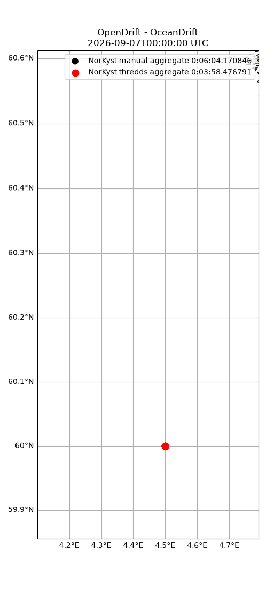

Note
Go to the end to download the full example code.
Manual aggregate
from datetime import datetime, timedelta
import pandas as pd
import matplotlib.pyplot as plt
from opendrift.readers import reader_netCDF_CF_generic
from opendrift.readers import open_mfdataset_overlap
from opendrift.models.oceandrift import OceanDrift
#%
# Create manual aggregate from individual URLs, for NorKyst ocean model initialized at 00 hours every day
start_time = datetime.now().date()-timedelta(days=3)
end_time = datetime.now().date()-timedelta(days=2)
ds = open_mfdataset_overlap(
'https://thredds.met.no/thredds/dodsC/fou-hi/norkystv3_his_files/%Y/%m/%d/norkyst800_his_zdepth_%Y%m%dT00Z_m00_AN.nc',
time_series=pd.date_range(start_time, end_time, freq='1D'))
#%
# Create reader from Xarray dataset
rm = reader_netCDF_CF_generic.Reader(ds, name='NorKyst manual aggregate')
print(rm)
om = OceanDrift()
om.add_reader(rm)
om.seed_elements(lon=4.5, lat=60.0, number=1000, radius=100, time=rm.start_time)
om.run(end_time=rm.end_time)
#%
# Second simulation using ready made aggregate from thredds
ot = OceanDrift()
ot.add_readers_from_list(['https://thredds.met.no/thredds/dodsC/fou-hi/norkystv3_800m_m00_be'])
ot.seed_elements(lon=4.5, lat=60.0, number=1000, radius=100, time=rm.start_time)
ot.run(end_time=rm.end_time)
#%
# Simulation should be identical, but we see that manual aggregate is significantly slower than using thredds aggregate
om.animation(compare=ot,
legend=[f'NorKyst manual aggregate {om.timing["total time"]}',
f'NorKyst thredds aggregate {ot.timing["total time"]}'])
Opening individual URLs...
Concatenating...
===========================
Reader: NorKyst manual aggregate
Projection:
+proj=stere +lat_0=90 +lat_ts=60 +lon_0=70 +x_0=3369600 +y_0=1844800 +a=6378137 +b=6356752.3142 +units=m +no_defs +type=crs
Coverage: [degrees]
xmin: 0.000000 xmax: 2196800.000000 step: 800 numx: 2747
ymin: 0.000000 ymax: 917600.000000 step: 800 numy: 1148
Corners (lon, lat):
( -4.61, 57.34) ( 18.33, 75.73)
( 8.70, 54.29) ( 37.55, 69.25)
Vertical levels [m]:
[ -0. -1. -2. -3. -5. -7. -10. -15. -25. -50. -65. -75.
-100. -200. -300.]
Available time range:
start: 2026-04-18 00:00:00 end: 2026-04-19 23:00:00 step: 1:00:00
48 times (0 missing)
Variables:
ocean_vertical_diffusivity
eastward_wind
northward_wind
sea_floor_depth_below_sea_level
sea_water_salinity
sea_water_temperature
eastward_sea_water_velocity
northward_sea_water_velocity
upward_sea_water_velocity
sea_surface_height
latitude
longitude
x_wind
y_wind
x_sea_water_velocity
y_sea_water_velocity
wind_speed - derived from ['x_wind', 'y_wind']
sea_water_speed - derived from ['x_sea_water_velocity', 'y_sea_water_velocity']
===========================
13:34:58 DEBUG opendrift.config:168: Adding 17 config items from __init__
13:34:58 DEBUG opendrift.config:178: Overwriting config item readers:max_number_of_fails
13:34:58 DEBUG opendrift.config:168: Adding 5 config items from __init__
13:34:58 INFO opendrift:568: OpenDriftSimulation initialised (version 1.14.9 / v1.14.9-41-g4a71a9f)
13:34:58 DEBUG opendrift.config:168: Adding 19 config items from oceandrift
13:34:58 DEBUG opendrift.config:178: Overwriting config item seed:z
13:34:58 DEBUG opendrift.models.basemodel.environment:313: Added reader NorKyst manual aggregate
13:34:58 INFO opendrift.models.basemodel.environment:203: Adding a global landmask from GSHHG
13:34:58 DEBUG opendrift.readers.basereader:188: Variable mapping: ['sea_floor_depth_below_sea_level'] -> ['land_binary_mask'] is not activated
13:35:02 DEBUG opendrift.models.basemodel.environment:313: Added reader global_landmask
13:35:02 INFO opendrift.models.basemodel.environment:227: Fallback values will be used for the following variables which have no readers:
13:35:02 INFO opendrift.models.basemodel.environment:230: horizontal_diffusivity: 0.000000
13:35:02 INFO opendrift.models.basemodel.environment:230: sea_surface_wave_significant_height: 0.000000
13:35:02 INFO opendrift.models.basemodel.environment:230: sea_surface_wave_stokes_drift_x_velocity: 0.000000
13:35:02 INFO opendrift.models.basemodel.environment:230: sea_surface_wave_stokes_drift_y_velocity: 0.000000
13:35:02 INFO opendrift.models.basemodel.environment:230: ocean_mixed_layer_thickness: 50.000000
13:35:02 DEBUG opendrift:164: Changed mode from Mode.Config to Mode.Ready
13:35:02 DEBUG opendrift:164: Changed mode from Mode.Ready to Mode.Run
13:35:02 DEBUG opendrift:1866:
------------------------------------------------------
Software and hardware:
OpenDrift version 1.14.9
Platform: Linux, 6.8.0-1040-aws
4.0 GB memory
36 processors (x86_64)
NumPy version 2.4.3
SciPy version 1.17.1
Matplotlib version 3.10.8
NetCDF4 version 1.7.4
Xarray version 2025.9.0
ADIOS (adios_db) version 1.2.5
Copernicusmarine version 2.3.0
Python version 3.14.4 | packaged by conda-forge | (main, Apr 8 2026, 01:59:35) [GCC 14.3.0]
------------------------------------------------------
13:35:02 DEBUG opendrift:1879: No output file is specified, neglecting export_buffer_length
13:35:02 INFO opendrift:1894: Skipping environment variable ocean_vertical_diffusivity because of condition ['drift:vertical_mixing', 'is', False]
13:35:02 INFO opendrift:1894: Skipping environment variable ocean_mixed_layer_thickness because of condition ['drift:vertical_mixing', 'is', False]
13:35:02 INFO opendrift:1905: Storing previous values of element property lon because of condition (('general:coastline_action', 'in', ['stranding', 'previous']), 'or', ('general:seafloor_action', 'in', ['previous']))
13:35:02 INFO opendrift:1905: Storing previous values of element property lat because of condition (('general:coastline_action', 'in', ['stranding', 'previous']), 'or', ('general:seafloor_action', 'in', ['previous']))
13:35:02 INFO opendrift:1913: Storing previous values of environment variable sea_surface_height because of condition ['drift:vertical_advection', 'is', True]
13:35:02 DEBUG opendrift:2028: Finalizing environment and preparing readers for simulation coverage ([-1.60275842 56.94866199 10.60224392 63.05149441]) and time (2026-04-18 00:00:00 to 2026-04-19 23:00:00)
13:35:02 DEBUG opendrift.models.basemodel.environment:166: Preparing NorKyst manual aggregate for extent [-1.60275842 56.94866199 10.60224392 63.05149441]
13:35:02 DEBUG opendrift.readers.basereader.structured:151: Clearing cache for reader NorKyst manual aggregate before starting new simulation
13:35:02 DEBUG opendrift.readers.basereader.variables:614: Setting buffer size 11 for reader NorKyst manual aggregate, assuming a maximum average speed of 2 m/s and time span of 1:00:00
13:35:02 DEBUG opendrift.readers.basereader.variables:555: Nothing more to prepare for NorKyst manual aggregate
13:35:02 DEBUG opendrift.models.basemodel.environment:166: Preparing global_landmask for extent [-1.60275842 56.94866199 10.60224392 63.05149441]
13:35:02 DEBUG opendrift.readers.basereader.variables:555: Nothing more to prepare for global_landmask
13:35:02 DEBUG opendrift:2125: Initial self.result, size Frozen({'trajectory': 1000, 'time': 48})
13:35:02 INFO opendrift:947: Using existing reader for land_binary_mask to move elements to ocean
13:35:02 DEBUG opendrift.models.basemodel.environment:599: ----------------------------------------
13:35:02 DEBUG opendrift.models.basemodel.environment:600: Variable group ['land_binary_mask']
13:35:02 DEBUG opendrift.models.basemodel.environment:601: ----------------------------------------
13:35:02 DEBUG opendrift.models.basemodel.environment:605: Calling reader global_landmask
13:35:02 DEBUG opendrift.models.basemodel.environment:606: ----------------------------------------
13:35:02 DEBUG opendrift.models.basemodel.environment:626: Data needed for 1000 elements
13:35:02 DEBUG opendrift.readers.basereader.variables:761: Fetching variables from global_landmask covering 1000 elements
13:35:02 DEBUG opendrift.readers.basereader.continuous:37: Fetched env-before
13:35:02 DEBUG opendrift.readers.basereader.variables:639: Checking land_binary_mask for invalid values
13:35:02 DEBUG opendrift.readers.basereader.variables:797: Reader projection is latlon - rotation of vectors is not needed.
13:35:02 DEBUG opendrift.models.basemodel.environment:762: Obtained data for all elements.
13:35:02 DEBUG opendrift.models.basemodel.environment:775: ---------------------------------------
13:35:02 DEBUG opendrift.models.basemodel.environment:776: Finished processing all variable groups
13:35:02 DEBUG opendrift.models.basemodel.environment:898: ------------ SUMMARY -------------
13:35:02 DEBUG opendrift.models.basemodel.environment:900: land_binary_mask: 0 (min) 0 (max)
13:35:02 DEBUG opendrift.models.basemodel.environment:902: ---------------------------------
13:35:02 INFO opendrift:978: All points are in ocean
13:35:02 DEBUG opendrift:904: to be seeded: 1000, already seeded 0
13:35:02 DEBUG opendrift:926: Released 1000 new elements.
13:35:02 DEBUG opendrift:2201: ======================================================================
13:35:02 INFO opendrift:2202: 2026-04-18 00:00:00 - step 1 of 47 - 1000 active elements (0 deactivated)
13:35:02 DEBUG opendrift:2208: 0 elements scheduled.
13:35:02 DEBUG opendrift:2210: ======================================================================
13:35:02 DEBUG opendrift:2221: 59.997310638427734 <- latitude -> 60.002845764160156
13:35:02 DEBUG opendrift:2221: 4.494540691375732 <- longitude -> 4.504944801330566
13:35:02 DEBUG opendrift:2219: z = 0.0
13:35:02 DEBUG opendrift:2222: ---------------------------------
13:35:02 DEBUG opendrift.models.basemodel.environment:599: ----------------------------------------
13:35:02 DEBUG opendrift.models.basemodel.environment:600: Variable group ['sea_floor_depth_below_sea_level', 'upward_sea_water_velocity', 'sea_surface_height', 'x_wind', 'y_wind', 'x_sea_water_velocity', 'y_sea_water_velocity']
13:35:02 DEBUG opendrift.models.basemodel.environment:601: ----------------------------------------
13:35:02 DEBUG opendrift.models.basemodel.environment:605: Calling reader NorKyst manual aggregate
13:35:02 DEBUG opendrift.models.basemodel.environment:606: ----------------------------------------
13:35:02 DEBUG opendrift.models.basemodel.environment:626: Data needed for 1000 elements
13:35:02 DEBUG opendrift.readers.basereader.variables:761: Fetching variables from NorKyst manual aggregate covering 1000 elements
13:35:02 DEBUG opendrift.readers.basereader.structured:220: Reader time:
2026-04-18 00:00:00 (before)
2026-04-18 01:00:00 (after)
13:35:05 DEBUG opendrift.readers.reader_netCDF_CF_generic:472: Using eastward_wind to retrieve x_wind
13:35:05 DEBUG opendrift.readers.reader_netCDF_CF_generic:472: Using northward_wind to retrieve y_wind
13:35:06 DEBUG opendrift.readers.reader_netCDF_CF_generic:472: Using eastward_sea_water_velocity to retrieve x_sea_water_velocity
13:35:07 DEBUG opendrift.readers.reader_netCDF_CF_generic:472: Using northward_sea_water_velocity to retrieve y_sea_water_velocity
13:35:08 DEBUG opendrift.readers.reader_netCDF_CF_generic:604: Rotating vector from east/north to xy orientation: ['x_wind', 'y_wind']
13:35:08 DEBUG opendrift.readers.basereader.variables:100: Rotating vectors between 65.28400783875489 and 65.70176334471121 degrees.
13:35:08 DEBUG opendrift.readers.reader_netCDF_CF_generic:604: Rotating vector from east/north to xy orientation: ['x_sea_water_velocity', 'y_sea_water_velocity']
13:35:08 DEBUG opendrift.readers.basereader.variables:100: Rotating vectors between 65.28400783875489 and 65.70176334471121 degrees.
13:35:08 DEBUG opendrift.readers.basereader.variables:639: Checking sea_floor_depth_below_sea_level for invalid values
13:35:08 DEBUG opendrift.readers.basereader.variables:639: Checking x_wind for invalid values
13:35:08 DEBUG opendrift.readers.basereader.variables:639: Checking y_wind for invalid values
13:35:08 DEBUG opendrift.readers.basereader.variables:639: Checking x_sea_water_velocity for invalid values
13:35:08 DEBUG opendrift.readers.basereader.variables:639: Checking y_sea_water_velocity for invalid values
13:35:08 DEBUG opendrift.readers.basereader.structured:290: Fetched env-block (size 23x23x2) for time before (2026-04-18 00:00:00)
13:35:08 DEBUG opendrift.readers.basereader.structured:334: Interpolating before (2026-04-18 00:00:00) in space (linearNDFast)
13:35:08 DEBUG opendrift.readers.interpolation.structured:97: Initialising interpolator.
13:35:08 DEBUG opendrift.readers.basereader.structured:388: No time interpolation needed - right on time.
13:35:08 DEBUG opendrift.readers.basereader.variables:100: Rotating vectors between -65.50547356643384 and -65.49506707409589 degrees.
13:35:08 DEBUG opendrift.readers.basereader.variables:100: Rotating vectors between -65.50547356643384 and -65.49506707409589 degrees.
13:35:08 DEBUG opendrift.models.basemodel.environment:762: Obtained data for all elements.
13:35:08 DEBUG opendrift.models.basemodel.environment:599: ----------------------------------------
13:35:08 DEBUG opendrift.models.basemodel.environment:600: Variable group ['land_binary_mask']
13:35:08 DEBUG opendrift.models.basemodel.environment:601: ----------------------------------------
13:35:08 DEBUG opendrift.models.basemodel.environment:605: Calling reader global_landmask
13:35:08 DEBUG opendrift.models.basemodel.environment:606: ----------------------------------------
13:35:08 DEBUG opendrift.models.basemodel.environment:626: Data needed for 1000 elements
13:35:08 DEBUG opendrift.readers.basereader.variables:761: Fetching variables from global_landmask covering 1000 elements
13:35:08 DEBUG opendrift.readers.basereader.continuous:37: Fetched env-before
13:35:08 DEBUG opendrift.readers.basereader.variables:639: Checking land_binary_mask for invalid values
13:35:08 DEBUG opendrift.readers.basereader.variables:797: Reader projection is latlon - rotation of vectors is not needed.
13:35:08 DEBUG opendrift.models.basemodel.environment:762: Obtained data for all elements.
13:35:08 DEBUG opendrift.models.basemodel.environment:775: ---------------------------------------
13:35:08 DEBUG opendrift.models.basemodel.environment:776: Finished processing all variable groups
13:35:08 DEBUG opendrift.models.basemodel.environment:898: ------------ SUMMARY -------------
13:35:08 DEBUG opendrift.models.basemodel.environment:900: x_sea_water_velocity: -0.0989715 (min) -0.0686804 (max)
13:35:08 DEBUG opendrift.models.basemodel.environment:900: y_sea_water_velocity: 0.336549 (min) 0.431003 (max)
13:35:08 DEBUG opendrift.models.basemodel.environment:900: sea_surface_height: -0.0623228 (min) -0.0586381 (max)
13:35:08 DEBUG opendrift.models.basemodel.environment:900: x_wind: -6.05368 (min) -6.04605 (max)
13:35:08 DEBUG opendrift.models.basemodel.environment:900: y_wind: 11.3539 (min) 11.4283 (max)
13:35:08 DEBUG opendrift.models.basemodel.environment:900: upward_sea_water_velocity: 0 (min) 0 (max)
13:35:08 DEBUG opendrift.models.basemodel.environment:900: horizontal_diffusivity: 0 (min) 0 (max)
13:35:08 DEBUG opendrift.models.basemodel.environment:900: sea_surface_wave_significant_height: 0 (min) 0 (max)
13:35:08 DEBUG opendrift.models.basemodel.environment:900: sea_surface_wave_stokes_drift_x_velocity: 0 (min) 0 (max)
13:35:08 DEBUG opendrift.models.basemodel.environment:900: sea_surface_wave_stokes_drift_y_velocity: 0 (min) 0 (max)
13:35:08 DEBUG opendrift.models.basemodel.environment:900: sea_floor_depth_below_sea_level: 262.501 (min) 264.453 (max)
13:35:08 DEBUG opendrift.models.basemodel.environment:900: land_binary_mask: 0 (min) 0 (max)
13:35:08 DEBUG opendrift.models.basemodel.environment:902: ---------------------------------
13:35:08 DEBUG opendrift.models.physics_methods:864: Calculating Hs from wind, min: 4.070706, mean: 4.092112, max: 4.113765
13:35:08 DEBUG opendrift:689: No elements hit coastline.
13:35:08 DEBUG opendrift:760: No elements hit seafloor.
13:35:08 DEBUG opendrift:1798: No elements to deactivate
13:35:08 DEBUG opendrift:2259: Calling OceanDrift.update()
13:35:08 DEBUG opendrift.models.physics_methods:785: Advecting 1000 of 1000 elements above 0.100m with wind-sheared ocean current (0.257275 m/s - 0.258632 m/s)
13:35:08 DEBUG opendrift.models.physics_methods:803: No Stokes drift velocity available
13:35:08 DEBUG opendrift.models.oceandrift:330: Vertical advection, excluding elements at surface
13:35:08 DEBUG opendrift:1746: Horizontal diffusivity is 0, no random walk.
13:35:08 DEBUG opendrift:904: to be seeded: 0, already seeded 1000
13:35:08 DEBUG opendrift:2201: ======================================================================
13:35:08 INFO opendrift:2202: 2026-04-18 01:00:00 - step 2 of 47 - 1000 active elements (0 deactivated)
13:35:08 DEBUG opendrift:2208: 0 elements scheduled.
13:35:08 DEBUG opendrift:2210: ======================================================================
13:35:08 DEBUG opendrift:2221: 60.016484242519304 <- latitude -> 60.02300442289777
13:35:08 DEBUG opendrift:2221: 4.481844255885163 <- longitude -> 4.4914852669076275
13:35:08 DEBUG opendrift:2219: z = 0.0
13:35:08 DEBUG opendrift:2222: ---------------------------------
13:35:08 DEBUG opendrift.models.basemodel.environment:599: ----------------------------------------
13:35:08 DEBUG opendrift.models.basemodel.environment:600: Variable group ['sea_floor_depth_below_sea_level', 'upward_sea_water_velocity', 'sea_surface_height', 'x_wind', 'y_wind', 'x_sea_water_velocity', 'y_sea_water_velocity']
13:35:08 DEBUG opendrift.models.basemodel.environment:601: ----------------------------------------
13:35:08 DEBUG opendrift.models.basemodel.environment:605: Calling reader NorKyst manual aggregate
13:35:08 DEBUG opendrift.models.basemodel.environment:606: ----------------------------------------
13:35:08 DEBUG opendrift.models.basemodel.environment:626: Data needed for 1000 elements
13:35:08 DEBUG opendrift.readers.basereader.variables:761: Fetching variables from NorKyst manual aggregate covering 1000 elements
13:35:08 DEBUG opendrift.readers.basereader.structured:220: Reader time:
2026-04-18 01:00:00 (before)
2026-04-18 02:00:00 (after)
13:35:10 DEBUG opendrift.readers.reader_netCDF_CF_generic:472: Using eastward_wind to retrieve x_wind
13:35:10 DEBUG opendrift.readers.reader_netCDF_CF_generic:472: Using northward_wind to retrieve y_wind
13:35:11 DEBUG opendrift.readers.reader_netCDF_CF_generic:472: Using eastward_sea_water_velocity to retrieve x_sea_water_velocity
13:35:12 DEBUG opendrift.readers.reader_netCDF_CF_generic:472: Using northward_sea_water_velocity to retrieve y_sea_water_velocity
13:35:13 DEBUG opendrift.readers.reader_netCDF_CF_generic:604: Rotating vector from east/north to xy orientation: ['x_wind', 'y_wind']
13:35:13 DEBUG opendrift.readers.basereader.variables:100: Rotating vectors between 65.29208794670579 and 65.71608556879951 degrees.
13:35:13 DEBUG opendrift.readers.reader_netCDF_CF_generic:604: Rotating vector from east/north to xy orientation: ['x_sea_water_velocity', 'y_sea_water_velocity']
13:35:13 DEBUG opendrift.readers.basereader.variables:100: Rotating vectors between 65.29208794670579 and 65.71608556879951 degrees.
13:35:13 DEBUG opendrift.readers.basereader.variables:639: Checking sea_floor_depth_below_sea_level for invalid values
13:35:13 DEBUG opendrift.readers.basereader.variables:639: Checking x_wind for invalid values
13:35:13 DEBUG opendrift.readers.basereader.variables:639: Checking y_wind for invalid values
13:35:13 DEBUG opendrift.readers.basereader.variables:639: Checking x_sea_water_velocity for invalid values
13:35:13 DEBUG opendrift.readers.basereader.variables:639: Checking y_sea_water_velocity for invalid values
13:35:13 DEBUG opendrift.readers.basereader.structured:290: Fetched env-block (size 24x23x2) for time before (2026-04-18 01:00:00)
13:35:13 DEBUG opendrift.readers.basereader.structured:334: Interpolating before (2026-04-18 01:00:00) in space (linearNDFast)
13:35:13 DEBUG opendrift.readers.interpolation.structured:97: Initialising interpolator.
13:35:13 DEBUG opendrift.readers.basereader.structured:388: No time interpolation needed - right on time.
13:35:13 DEBUG opendrift.readers.basereader.variables:100: Rotating vectors between -65.51816665758182 and -65.50852565170963 degrees.
13:35:13 DEBUG opendrift.readers.basereader.variables:100: Rotating vectors between -65.51816665758182 and -65.50852565170963 degrees.
13:35:13 DEBUG opendrift.models.basemodel.environment:762: Obtained data for all elements.
13:35:13 DEBUG opendrift.models.basemodel.environment:599: ----------------------------------------
13:35:13 DEBUG opendrift.models.basemodel.environment:600: Variable group ['land_binary_mask']
13:35:13 DEBUG opendrift.models.basemodel.environment:601: ----------------------------------------
13:35:13 DEBUG opendrift.models.basemodel.environment:605: Calling reader global_landmask
13:35:13 DEBUG opendrift.models.basemodel.environment:606: ----------------------------------------
13:35:13 DEBUG opendrift.models.basemodel.environment:626: Data needed for 1000 elements
13:35:13 DEBUG opendrift.readers.basereader.variables:761: Fetching variables from global_landmask covering 1000 elements
13:35:13 DEBUG opendrift.readers.basereader.continuous:37: Fetched env-before
13:35:13 DEBUG opendrift.readers.basereader.variables:639: Checking land_binary_mask for invalid values
13:35:13 DEBUG opendrift.readers.basereader.variables:797: Reader projection is latlon - rotation of vectors is not needed.
13:35:13 DEBUG opendrift.models.basemodel.environment:762: Obtained data for all elements.
13:35:13 DEBUG opendrift.models.basemodel.environment:775: ---------------------------------------
13:35:13 DEBUG opendrift.models.basemodel.environment:776: Finished processing all variable groups
13:35:13 DEBUG opendrift.models.basemodel.environment:898: ------------ SUMMARY -------------
13:35:13 DEBUG opendrift.models.basemodel.environment:900: x_sea_water_velocity: -0.112491 (min) -0.104733 (max)
13:35:13 DEBUG opendrift.models.basemodel.environment:900: y_sea_water_velocity: 0.202106 (min) 0.269352 (max)
13:35:13 DEBUG opendrift.models.basemodel.environment:900: sea_surface_height: -0.273648 (min) -0.27046 (max)
13:35:13 DEBUG opendrift.models.basemodel.environment:900: x_wind: -6.22562 (min) -6.18576 (max)
13:35:13 DEBUG opendrift.models.basemodel.environment:900: y_wind: 11.3242 (min) 11.4052 (max)
13:35:13 DEBUG opendrift.models.basemodel.environment:900: upward_sea_water_velocity: -7e-05 (min) -7e-05 (max)
13:35:13 DEBUG opendrift.models.basemodel.environment:900: horizontal_diffusivity: 0 (min) 0 (max)
13:35:13 DEBUG opendrift.models.basemodel.environment:900: sea_surface_wave_significant_height: 0 (min) 0 (max)
13:35:13 DEBUG opendrift.models.basemodel.environment:900: sea_surface_wave_stokes_drift_x_velocity: 0 (min) 0 (max)
13:35:13 DEBUG opendrift.models.basemodel.environment:900: sea_surface_wave_stokes_drift_y_velocity: 0 (min) 0 (max)
13:35:13 DEBUG opendrift.models.basemodel.environment:900: sea_floor_depth_below_sea_level: 264.656 (min) 265.96 (max)
13:35:13 DEBUG opendrift.models.basemodel.environment:900: land_binary_mask: 0 (min) 0 (max)
13:35:13 DEBUG opendrift.models.basemodel.environment:902: ---------------------------------
13:35:13 DEBUG opendrift.models.physics_methods:864: Calculating Hs from wind, min: 4.095948, mean: 4.123137, max: 4.153367
13:35:13 DEBUG opendrift:689: No elements hit coastline.
13:35:13 DEBUG opendrift:760: No elements hit seafloor.
13:35:13 DEBUG opendrift:1798: No elements to deactivate
13:35:13 DEBUG opendrift:2259: Calling OceanDrift.update()
13:35:13 DEBUG opendrift.models.physics_methods:785: Advecting 1000 of 1000 elements above 0.100m with wind-sheared ocean current (0.258071 m/s - 0.259874 m/s)
13:35:13 DEBUG opendrift.models.physics_methods:803: No Stokes drift velocity available
13:35:13 DEBUG opendrift.models.oceandrift:330: Vertical advection, excluding elements at surface
13:35:13 DEBUG opendrift:1746: Horizontal diffusivity is 0, no random walk.
13:35:13 DEBUG opendrift:904: to be seeded: 0, already seeded 1000
13:35:13 DEBUG opendrift:2201: ======================================================================
13:35:13 INFO opendrift:2202: 2026-04-18 02:00:00 - step 3 of 47 - 1000 active elements (0 deactivated)
13:35:13 DEBUG opendrift:2208: 0 elements scheduled.
13:35:13 DEBUG opendrift:2210: ======================================================================
13:35:13 DEBUG opendrift:2221: 60.03087527637777 <- latitude -> 60.03882704344074
13:35:13 DEBUG opendrift:2221: 4.466793618092638 <- longitude -> 4.476543165720154
13:35:13 DEBUG opendrift:2219: z = 0.0
13:35:13 DEBUG opendrift:2222: ---------------------------------
13:35:13 DEBUG opendrift.models.basemodel.environment:599: ----------------------------------------
13:35:13 DEBUG opendrift.models.basemodel.environment:600: Variable group ['sea_floor_depth_below_sea_level', 'upward_sea_water_velocity', 'sea_surface_height', 'x_wind', 'y_wind', 'x_sea_water_velocity', 'y_sea_water_velocity']
13:35:13 DEBUG opendrift.models.basemodel.environment:601: ----------------------------------------
13:35:13 DEBUG opendrift.models.basemodel.environment:605: Calling reader NorKyst manual aggregate
13:35:13 DEBUG opendrift.models.basemodel.environment:606: ----------------------------------------
13:35:13 DEBUG opendrift.models.basemodel.environment:626: Data needed for 1000 elements
13:35:13 DEBUG opendrift.readers.basereader.variables:761: Fetching variables from NorKyst manual aggregate covering 1000 elements
13:35:13 DEBUG opendrift.readers.basereader.structured:220: Reader time:
2026-04-18 02:00:00 (before)
2026-04-18 03:00:00 (after)
13:35:15 DEBUG opendrift.readers.reader_netCDF_CF_generic:472: Using eastward_wind to retrieve x_wind
13:35:16 DEBUG opendrift.readers.reader_netCDF_CF_generic:472: Using northward_wind to retrieve y_wind
13:35:16 DEBUG opendrift.readers.reader_netCDF_CF_generic:472: Using eastward_sea_water_velocity to retrieve x_sea_water_velocity
13:35:18 DEBUG opendrift.readers.reader_netCDF_CF_generic:472: Using northward_sea_water_velocity to retrieve y_sea_water_velocity
13:35:19 DEBUG opendrift.readers.reader_netCDF_CF_generic:604: Rotating vector from east/north to xy orientation: ['x_wind', 'y_wind']
13:35:19 DEBUG opendrift.readers.basereader.variables:100: Rotating vectors between 65.31219436979433 and 65.72325378786755 degrees.
13:35:19 DEBUG opendrift.readers.reader_netCDF_CF_generic:604: Rotating vector from east/north to xy orientation: ['x_sea_water_velocity', 'y_sea_water_velocity']
13:35:19 DEBUG opendrift.readers.basereader.variables:100: Rotating vectors between 65.31219436979433 and 65.72325378786755 degrees.
13:35:19 DEBUG opendrift.readers.basereader.variables:639: Checking sea_floor_depth_below_sea_level for invalid values
13:35:19 DEBUG opendrift.readers.basereader.variables:639: Checking x_wind for invalid values
13:35:19 DEBUG opendrift.readers.basereader.variables:639: Checking y_wind for invalid values
13:35:19 DEBUG opendrift.readers.basereader.variables:639: Checking x_sea_water_velocity for invalid values
13:35:19 DEBUG opendrift.readers.basereader.variables:639: Checking y_sea_water_velocity for invalid values
13:35:19 DEBUG opendrift.readers.basereader.structured:290: Fetched env-block (size 24x22x2) for time before (2026-04-18 02:00:00)
13:35:19 DEBUG opendrift.readers.basereader.structured:334: Interpolating before (2026-04-18 02:00:00) in space (linearNDFast)
13:35:19 DEBUG opendrift.readers.interpolation.structured:97: Initialising interpolator.
13:35:19 DEBUG opendrift.readers.basereader.structured:388: No time interpolation needed - right on time.
13:35:19 DEBUG opendrift.readers.basereader.variables:100: Rotating vectors between -65.53321729300617 and -65.52346775629793 degrees.
13:35:19 DEBUG opendrift.readers.basereader.variables:100: Rotating vectors between -65.53321729300617 and -65.52346775629793 degrees.
13:35:19 DEBUG opendrift.models.basemodel.environment:762: Obtained data for all elements.
13:35:19 DEBUG opendrift.models.basemodel.environment:599: ----------------------------------------
13:35:19 DEBUG opendrift.models.basemodel.environment:600: Variable group ['land_binary_mask']
13:35:19 DEBUG opendrift.models.basemodel.environment:601: ----------------------------------------
13:35:19 DEBUG opendrift.models.basemodel.environment:605: Calling reader global_landmask
13:35:19 DEBUG opendrift.models.basemodel.environment:606: ----------------------------------------
13:35:19 DEBUG opendrift.models.basemodel.environment:626: Data needed for 1000 elements
13:35:19 DEBUG opendrift.readers.basereader.variables:761: Fetching variables from global_landmask covering 1000 elements
13:35:19 DEBUG opendrift.readers.basereader.continuous:37: Fetched env-before
13:35:19 DEBUG opendrift.readers.basereader.variables:639: Checking land_binary_mask for invalid values
13:35:19 DEBUG opendrift.readers.basereader.variables:797: Reader projection is latlon - rotation of vectors is not needed.
13:35:19 DEBUG opendrift.models.basemodel.environment:762: Obtained data for all elements.
13:35:19 DEBUG opendrift.models.basemodel.environment:775: ---------------------------------------
13:35:19 DEBUG opendrift.models.basemodel.environment:776: Finished processing all variable groups
13:35:19 DEBUG opendrift.models.basemodel.environment:898: ------------ SUMMARY -------------
13:35:19 DEBUG opendrift.models.basemodel.environment:900: x_sea_water_velocity: -0.120603 (min) -0.101077 (max)
13:35:19 DEBUG opendrift.models.basemodel.environment:900: y_sea_water_velocity: 0.16548 (min) 0.211673 (max)
13:35:19 DEBUG opendrift.models.basemodel.environment:900: sea_surface_height: -0.519072 (min) -0.517111 (max)
13:35:19 DEBUG opendrift.models.basemodel.environment:900: x_wind: -7.0356 (min) -6.96201 (max)
13:35:19 DEBUG opendrift.models.basemodel.environment:900: y_wind: 10.5768 (min) 10.6418 (max)
13:35:19 DEBUG opendrift.models.basemodel.environment:900: upward_sea_water_velocity: -8e-05 (min) -8e-05 (max)
13:35:19 DEBUG opendrift.models.basemodel.environment:900: horizontal_diffusivity: 0 (min) 0 (max)
13:35:19 DEBUG opendrift.models.basemodel.environment:900: sea_surface_wave_significant_height: 0 (min) 0 (max)
13:35:19 DEBUG opendrift.models.basemodel.environment:900: sea_surface_wave_stokes_drift_x_velocity: 0 (min) 0 (max)
13:35:19 DEBUG opendrift.models.basemodel.environment:900: sea_surface_wave_stokes_drift_y_velocity: 0 (min) 0 (max)
13:35:19 DEBUG opendrift.models.basemodel.environment:900: sea_floor_depth_below_sea_level: 267.08 (min) 267.836 (max)
13:35:19 DEBUG opendrift.models.basemodel.environment:900: land_binary_mask: 0 (min) 0 (max)
13:35:19 DEBUG opendrift.models.basemodel.environment:902: ---------------------------------
13:35:19 DEBUG opendrift.models.physics_methods:864: Calculating Hs from wind, min: 3.944653, mean: 3.971793, max: 4.002298
13:35:19 DEBUG opendrift:689: No elements hit coastline.
13:35:19 DEBUG opendrift:760: No elements hit seafloor.
13:35:19 DEBUG opendrift:1798: No elements to deactivate
13:35:19 DEBUG opendrift:2259: Calling OceanDrift.update()
13:35:19 DEBUG opendrift.models.physics_methods:785: Advecting 1000 of 1000 elements above 0.100m with wind-sheared ocean current (0.253260 m/s - 0.255104 m/s)
13:35:19 DEBUG opendrift.models.physics_methods:803: No Stokes drift velocity available
13:35:19 DEBUG opendrift.models.oceandrift:330: Vertical advection, excluding elements at surface
13:35:19 DEBUG opendrift:1746: Horizontal diffusivity is 0, no random walk.
13:35:19 DEBUG opendrift:904: to be seeded: 0, already seeded 1000
13:35:19 DEBUG opendrift:2201: ======================================================================
13:35:19 INFO opendrift:2202: 2026-04-18 03:00:00 - step 4 of 47 - 1000 active elements (0 deactivated)
13:35:19 DEBUG opendrift:2208: 0 elements scheduled.
13:35:19 DEBUG opendrift:2210: ======================================================================
13:35:19 DEBUG opendrift:2221: 60.04316767115688 <- latitude -> 60.05250181058098
13:35:19 DEBUG opendrift:2221: 4.450166259560625 <- longitude -> 4.460308271511815
13:35:19 DEBUG opendrift:2219: z = 0.0
13:35:19 DEBUG opendrift:2222: ---------------------------------
13:35:19 DEBUG opendrift.models.basemodel.environment:599: ----------------------------------------
13:35:19 DEBUG opendrift.models.basemodel.environment:600: Variable group ['sea_floor_depth_below_sea_level', 'upward_sea_water_velocity', 'sea_surface_height', 'x_wind', 'y_wind', 'x_sea_water_velocity', 'y_sea_water_velocity']
13:35:19 DEBUG opendrift.models.basemodel.environment:601: ----------------------------------------
13:35:19 DEBUG opendrift.models.basemodel.environment:605: Calling reader NorKyst manual aggregate
13:35:19 DEBUG opendrift.models.basemodel.environment:606: ----------------------------------------
13:35:19 DEBUG opendrift.models.basemodel.environment:626: Data needed for 1000 elements
13:35:19 DEBUG opendrift.readers.basereader.variables:761: Fetching variables from NorKyst manual aggregate covering 1000 elements
13:35:19 DEBUG opendrift.readers.basereader.structured:220: Reader time:
2026-04-18 03:00:00 (before)
2026-04-18 04:00:00 (after)
13:35:22 DEBUG opendrift.readers.reader_netCDF_CF_generic:472: Using eastward_wind to retrieve x_wind
13:35:23 DEBUG opendrift.readers.reader_netCDF_CF_generic:472: Using northward_wind to retrieve y_wind
13:35:24 DEBUG opendrift.readers.reader_netCDF_CF_generic:472: Using eastward_sea_water_velocity to retrieve x_sea_water_velocity
13:35:25 DEBUG opendrift.readers.reader_netCDF_CF_generic:472: Using northward_sea_water_velocity to retrieve y_sea_water_velocity
13:35:27 DEBUG opendrift.readers.reader_netCDF_CF_generic:604: Rotating vector from east/north to xy orientation: ['x_wind', 'y_wind']
13:35:27 DEBUG opendrift.readers.basereader.variables:100: Rotating vectors between 65.33231839279222 and 65.74349502420657 degrees.
13:35:27 DEBUG opendrift.readers.reader_netCDF_CF_generic:604: Rotating vector from east/north to xy orientation: ['x_sea_water_velocity', 'y_sea_water_velocity']
13:35:27 DEBUG opendrift.readers.basereader.variables:100: Rotating vectors between 65.33231839279222 and 65.74349502420657 degrees.
13:35:27 DEBUG opendrift.readers.basereader.variables:639: Checking sea_floor_depth_below_sea_level for invalid values
13:35:27 DEBUG opendrift.readers.basereader.variables:639: Checking x_wind for invalid values
13:35:27 DEBUG opendrift.readers.basereader.variables:639: Checking y_wind for invalid values
13:35:27 DEBUG opendrift.readers.basereader.variables:639: Checking x_sea_water_velocity for invalid values
13:35:27 DEBUG opendrift.readers.basereader.variables:639: Checking y_sea_water_velocity for invalid values
13:35:27 DEBUG opendrift.readers.basereader.structured:290: Fetched env-block (size 24x22x2) for time before (2026-04-18 03:00:00)
13:35:27 DEBUG opendrift.readers.basereader.structured:334: Interpolating before (2026-04-18 03:00:00) in space (linearNDFast)
13:35:27 DEBUG opendrift.readers.interpolation.structured:97: Initialising interpolator.
13:35:27 DEBUG opendrift.readers.basereader.structured:388: No time interpolation needed - right on time.
13:35:27 DEBUG opendrift.readers.basereader.variables:100: Rotating vectors between -65.5498446475267 and -65.53970264803775 degrees.
13:35:27 DEBUG opendrift.readers.basereader.variables:100: Rotating vectors between -65.5498446475267 and -65.53970264803775 degrees.
13:35:27 DEBUG opendrift.models.basemodel.environment:762: Obtained data for all elements.
13:35:27 DEBUG opendrift.models.basemodel.environment:599: ----------------------------------------
13:35:27 DEBUG opendrift.models.basemodel.environment:600: Variable group ['land_binary_mask']
13:35:27 DEBUG opendrift.models.basemodel.environment:601: ----------------------------------------
13:35:27 DEBUG opendrift.models.basemodel.environment:605: Calling reader global_landmask
13:35:27 DEBUG opendrift.models.basemodel.environment:606: ----------------------------------------
13:35:27 DEBUG opendrift.models.basemodel.environment:626: Data needed for 1000 elements
13:35:27 DEBUG opendrift.readers.basereader.variables:761: Fetching variables from global_landmask covering 1000 elements
13:35:27 DEBUG opendrift.readers.basereader.continuous:37: Fetched env-before
13:35:27 DEBUG opendrift.readers.basereader.variables:639: Checking land_binary_mask for invalid values
13:35:27 DEBUG opendrift.readers.basereader.variables:797: Reader projection is latlon - rotation of vectors is not needed.
13:35:27 DEBUG opendrift.models.basemodel.environment:762: Obtained data for all elements.
13:35:27 DEBUG opendrift.models.basemodel.environment:775: ---------------------------------------
13:35:27 DEBUG opendrift.models.basemodel.environment:776: Finished processing all variable groups
13:35:27 DEBUG opendrift.models.basemodel.environment:898: ------------ SUMMARY -------------
13:35:27 DEBUG opendrift.models.basemodel.environment:900: x_sea_water_velocity: -0.142763 (min) -0.110098 (max)
13:35:27 DEBUG opendrift.models.basemodel.environment:900: y_sea_water_velocity: 0.246946 (min) 0.309825 (max)
13:35:27 DEBUG opendrift.models.basemodel.environment:900: sea_surface_height: -0.700134 (min) -0.698633 (max)
13:35:27 DEBUG opendrift.models.basemodel.environment:900: x_wind: -4.85266 (min) -4.72779 (max)
13:35:27 DEBUG opendrift.models.basemodel.environment:900: y_wind: 10.4322 (min) 10.4662 (max)
13:35:27 DEBUG opendrift.models.basemodel.environment:900: upward_sea_water_velocity: -4e-05 (min) -3.52687e-05 (max)
13:35:27 DEBUG opendrift.models.basemodel.environment:900: horizontal_diffusivity: 0 (min) 0 (max)
13:35:27 DEBUG opendrift.models.basemodel.environment:900: sea_surface_wave_significant_height: 0 (min) 0 (max)
13:35:27 DEBUG opendrift.models.basemodel.environment:900: sea_surface_wave_stokes_drift_x_velocity: 0 (min) 0 (max)
13:35:27 DEBUG opendrift.models.basemodel.environment:900: sea_surface_wave_stokes_drift_y_velocity: 0 (min) 0 (max)
13:35:27 DEBUG opendrift.models.basemodel.environment:900: sea_floor_depth_below_sea_level: 269.086 (min) 269.783 (max)
13:35:27 DEBUG opendrift.models.basemodel.environment:900: land_binary_mask: 0 (min) 0 (max)
13:35:27 DEBUG opendrift.models.basemodel.environment:902: ---------------------------------
13:35:27 DEBUG opendrift.models.physics_methods:864: Calculating Hs from wind, min: 3.240613, mean: 3.251570, max: 3.262028
13:35:27 DEBUG opendrift:689: No elements hit coastline.
13:35:27 DEBUG opendrift:760: No elements hit seafloor.
13:35:27 DEBUG opendrift:1798: No elements to deactivate
13:35:27 DEBUG opendrift:2259: Calling OceanDrift.update()
13:35:27 DEBUG opendrift.models.physics_methods:785: Advecting 1000 of 1000 elements above 0.100m with wind-sheared ocean current (0.229549 m/s - 0.230307 m/s)
13:35:27 DEBUG opendrift.models.physics_methods:803: No Stokes drift velocity available
13:35:27 DEBUG opendrift.models.oceandrift:330: Vertical advection, excluding elements at surface
13:35:27 DEBUG opendrift:1746: Horizontal diffusivity is 0, no random walk.
13:35:27 DEBUG opendrift:904: to be seeded: 0, already seeded 1000
13:35:27 DEBUG opendrift:2201: ======================================================================
13:35:27 INFO opendrift:2202: 2026-04-18 04:00:00 - step 5 of 47 - 1000 active elements (0 deactivated)
13:35:27 DEBUG opendrift:2208: 0 elements scheduled.
13:35:27 DEBUG opendrift:2210: ======================================================================
13:35:27 DEBUG opendrift:2221: 60.05792861607141 <- latitude -> 60.06926215057349
13:35:27 DEBUG opendrift:2221: 4.4354653217709545 <- longitude -> 4.4461025824451
13:35:27 DEBUG opendrift:2219: z = 0.0
13:35:27 DEBUG opendrift:2222: ---------------------------------
13:35:27 DEBUG opendrift.models.basemodel.environment:599: ----------------------------------------
13:35:27 DEBUG opendrift.models.basemodel.environment:600: Variable group ['sea_floor_depth_below_sea_level', 'upward_sea_water_velocity', 'sea_surface_height', 'x_wind', 'y_wind', 'x_sea_water_velocity', 'y_sea_water_velocity']
13:35:27 DEBUG opendrift.models.basemodel.environment:601: ----------------------------------------
13:35:27 DEBUG opendrift.models.basemodel.environment:605: Calling reader NorKyst manual aggregate
13:35:27 DEBUG opendrift.models.basemodel.environment:606: ----------------------------------------
13:35:27 DEBUG opendrift.models.basemodel.environment:626: Data needed for 1000 elements
13:35:27 DEBUG opendrift.readers.basereader.variables:761: Fetching variables from NorKyst manual aggregate covering 1000 elements
13:35:27 DEBUG opendrift.readers.basereader.structured:220: Reader time:
2026-04-18 04:00:00 (before)
2026-04-18 05:00:00 (after)
13:35:31 DEBUG opendrift.readers.reader_netCDF_CF_generic:472: Using eastward_wind to retrieve x_wind
13:35:31 DEBUG opendrift.readers.reader_netCDF_CF_generic:472: Using northward_wind to retrieve y_wind
13:35:32 DEBUG opendrift.readers.reader_netCDF_CF_generic:472: Using eastward_sea_water_velocity to retrieve x_sea_water_velocity
13:35:33 DEBUG opendrift.readers.reader_netCDF_CF_generic:472: Using northward_sea_water_velocity to retrieve y_sea_water_velocity
13:35:35 DEBUG opendrift.readers.reader_netCDF_CF_generic:604: Rotating vector from east/north to xy orientation: ['x_wind', 'y_wind']
13:35:35 DEBUG opendrift.readers.basereader.variables:100: Rotating vectors between 65.33338355097759 and 65.76375382461461 degrees.
13:35:35 DEBUG opendrift.readers.reader_netCDF_CF_generic:604: Rotating vector from east/north to xy orientation: ['x_sea_water_velocity', 'y_sea_water_velocity']
13:35:35 DEBUG opendrift.readers.basereader.variables:100: Rotating vectors between 65.33338355097759 and 65.76375382461461 degrees.
13:35:35 DEBUG opendrift.readers.basereader.variables:639: Checking sea_floor_depth_below_sea_level for invalid values
13:35:35 DEBUG opendrift.readers.basereader.variables:639: Checking x_wind for invalid values
13:35:35 DEBUG opendrift.readers.basereader.variables:639: Checking y_wind for invalid values
13:35:35 DEBUG opendrift.readers.basereader.variables:639: Checking x_sea_water_velocity for invalid values
13:35:35 DEBUG opendrift.readers.basereader.variables:639: Checking y_sea_water_velocity for invalid values
13:35:35 DEBUG opendrift.readers.basereader.structured:290: Fetched env-block (size 25x23x2) for time before (2026-04-18 04:00:00)
13:35:35 DEBUG opendrift.readers.basereader.structured:334: Interpolating before (2026-04-18 04:00:00) in space (linearNDFast)
13:35:35 DEBUG opendrift.readers.interpolation.structured:97: Initialising interpolator.
13:35:35 DEBUG opendrift.readers.basereader.structured:388: No time interpolation needed - right on time.
13:35:35 DEBUG opendrift.readers.basereader.variables:100: Rotating vectors between -65.56454558996235 and -65.55390832677784 degrees.
13:35:35 DEBUG opendrift.readers.basereader.variables:100: Rotating vectors between -65.56454558996235 and -65.55390832677784 degrees.
13:35:35 DEBUG opendrift.models.basemodel.environment:762: Obtained data for all elements.
13:35:35 DEBUG opendrift.models.basemodel.environment:599: ----------------------------------------
13:35:35 DEBUG opendrift.models.basemodel.environment:600: Variable group ['land_binary_mask']
13:35:35 DEBUG opendrift.models.basemodel.environment:601: ----------------------------------------
13:35:35 DEBUG opendrift.models.basemodel.environment:605: Calling reader global_landmask
13:35:35 DEBUG opendrift.models.basemodel.environment:606: ----------------------------------------
13:35:35 DEBUG opendrift.models.basemodel.environment:626: Data needed for 1000 elements
13:35:35 DEBUG opendrift.readers.basereader.variables:761: Fetching variables from global_landmask covering 1000 elements
13:35:35 DEBUG opendrift.readers.basereader.continuous:37: Fetched env-before
13:35:35 DEBUG opendrift.readers.basereader.variables:639: Checking land_binary_mask for invalid values
13:35:35 DEBUG opendrift.readers.basereader.variables:797: Reader projection is latlon - rotation of vectors is not needed.
13:35:35 DEBUG opendrift.models.basemodel.environment:762: Obtained data for all elements.
13:35:35 DEBUG opendrift.models.basemodel.environment:775: ---------------------------------------
13:35:35 DEBUG opendrift.models.basemodel.environment:776: Finished processing all variable groups
13:35:35 DEBUG opendrift.models.basemodel.environment:898: ------------ SUMMARY -------------
13:35:35 DEBUG opendrift.models.basemodel.environment:900: x_sea_water_velocity: -0.113144 (min) -0.0606335 (max)
13:35:35 DEBUG opendrift.models.basemodel.environment:900: y_sea_water_velocity: 0.398804 (min) 0.459246 (max)
13:35:35 DEBUG opendrift.models.basemodel.environment:900: sea_surface_height: -0.796526 (min) -0.794469 (max)
13:35:35 DEBUG opendrift.models.basemodel.environment:900: x_wind: -3.68888 (min) -3.63972 (max)
13:35:35 DEBUG opendrift.models.basemodel.environment:900: y_wind: 10.8505 (min) 11.0231 (max)
13:35:35 DEBUG opendrift.models.basemodel.environment:900: upward_sea_water_velocity: -7.38158e-07 (min) 0 (max)
13:35:35 DEBUG opendrift.models.basemodel.environment:900: horizontal_diffusivity: 0 (min) 0 (max)
13:35:35 DEBUG opendrift.models.basemodel.environment:900: sea_surface_wave_significant_height: 0 (min) 0 (max)
13:35:35 DEBUG opendrift.models.basemodel.environment:900: sea_surface_wave_stokes_drift_x_velocity: 0 (min) 0 (max)
13:35:35 DEBUG opendrift.models.basemodel.environment:900: sea_surface_wave_stokes_drift_y_velocity: 0 (min) 0 (max)
13:35:35 DEBUG opendrift.models.basemodel.environment:900: sea_floor_depth_below_sea_level: 270.855 (min) 272.799 (max)
13:35:35 DEBUG opendrift.models.basemodel.environment:900: land_binary_mask: 0 (min) 0 (max)
13:35:35 DEBUG opendrift.models.basemodel.environment:902: ---------------------------------
13:35:35 DEBUG opendrift.models.physics_methods:864: Calculating Hs from wind, min: 3.230998, mean: 3.273587, max: 3.315359
13:35:35 DEBUG opendrift:689: No elements hit coastline.
13:35:35 DEBUG opendrift:760: No elements hit seafloor.
13:35:35 DEBUG opendrift:1798: No elements to deactivate
13:35:35 DEBUG opendrift:2259: Calling OceanDrift.update()
13:35:35 DEBUG opendrift.models.physics_methods:785: Advecting 1000 of 1000 elements above 0.100m with wind-sheared ocean current (0.229209 m/s - 0.232182 m/s)
13:35:35 DEBUG opendrift.models.physics_methods:803: No Stokes drift velocity available
13:35:35 DEBUG opendrift.models.oceandrift:330: Vertical advection, excluding elements at surface
13:35:35 DEBUG opendrift:1746: Horizontal diffusivity is 0, no random walk.
13:35:35 DEBUG opendrift:904: to be seeded: 0, already seeded 1000
13:35:35 DEBUG opendrift:2201: ======================================================================
13:35:35 INFO opendrift:2202: 2026-04-18 05:00:00 - step 6 of 47 - 1000 active elements (0 deactivated)
13:35:35 DEBUG opendrift:2208: 0 elements scheduled.
13:35:35 DEBUG opendrift:2210: ======================================================================
13:35:35 DEBUG opendrift:2221: 60.07792593404466 <- latitude -> 60.09110934384381
13:35:35 DEBUG opendrift:2221: 4.424471098955998 <- longitude -> 4.436885331264877
13:35:35 DEBUG opendrift:2219: z = 0.0
13:35:35 DEBUG opendrift:2222: ---------------------------------
13:35:35 DEBUG opendrift.models.basemodel.environment:599: ----------------------------------------
13:35:35 DEBUG opendrift.models.basemodel.environment:600: Variable group ['sea_floor_depth_below_sea_level', 'upward_sea_water_velocity', 'sea_surface_height', 'x_wind', 'y_wind', 'x_sea_water_velocity', 'y_sea_water_velocity']
13:35:35 DEBUG opendrift.models.basemodel.environment:601: ----------------------------------------
13:35:35 DEBUG opendrift.models.basemodel.environment:605: Calling reader NorKyst manual aggregate
13:35:35 DEBUG opendrift.models.basemodel.environment:606: ----------------------------------------
13:35:35 DEBUG opendrift.models.basemodel.environment:626: Data needed for 1000 elements
13:35:35 DEBUG opendrift.readers.basereader.variables:761: Fetching variables from NorKyst manual aggregate covering 1000 elements
13:35:35 DEBUG opendrift.readers.basereader.structured:220: Reader time:
2026-04-18 05:00:00 (before)
2026-04-18 06:00:00 (after)
13:35:36 DEBUG opendrift.readers.reader_netCDF_CF_generic:472: Using eastward_wind to retrieve x_wind
13:35:37 DEBUG opendrift.readers.reader_netCDF_CF_generic:472: Using northward_wind to retrieve y_wind
13:35:37 DEBUG opendrift.readers.reader_netCDF_CF_generic:472: Using eastward_sea_water_velocity to retrieve x_sea_water_velocity
13:35:38 DEBUG opendrift.readers.reader_netCDF_CF_generic:472: Using northward_sea_water_velocity to retrieve y_sea_water_velocity
13:35:39 DEBUG opendrift.readers.reader_netCDF_CF_generic:604: Rotating vector from east/north to xy orientation: ['x_wind', 'y_wind']
13:35:39 DEBUG opendrift.readers.basereader.variables:100: Rotating vectors between 65.34152670468585 and 65.77225468204583 degrees.
13:35:39 DEBUG opendrift.readers.reader_netCDF_CF_generic:604: Rotating vector from east/north to xy orientation: ['x_sea_water_velocity', 'y_sea_water_velocity']
13:35:39 DEBUG opendrift.readers.basereader.variables:100: Rotating vectors between 65.34152670468585 and 65.77225468204583 degrees.
13:35:39 DEBUG opendrift.readers.basereader.variables:639: Checking sea_floor_depth_below_sea_level for invalid values
13:35:39 DEBUG opendrift.readers.basereader.variables:639: Checking x_wind for invalid values
13:35:39 DEBUG opendrift.readers.basereader.variables:639: Checking y_wind for invalid values
13:35:39 DEBUG opendrift.readers.basereader.variables:639: Checking x_sea_water_velocity for invalid values
13:35:39 DEBUG opendrift.readers.basereader.variables:639: Checking y_sea_water_velocity for invalid values
13:35:39 DEBUG opendrift.readers.basereader.structured:290: Fetched env-block (size 25x23x2) for time before (2026-04-18 05:00:00)
13:35:39 DEBUG opendrift.readers.basereader.structured:334: Interpolating before (2026-04-18 05:00:00) in space (linearNDFast)
13:35:39 DEBUG opendrift.readers.interpolation.structured:97: Initialising interpolator.
13:35:39 DEBUG opendrift.readers.basereader.structured:388: No time interpolation needed - right on time.
13:35:39 DEBUG opendrift.readers.basereader.variables:100: Rotating vectors between -65.57553980315221 and -65.5631255688288 degrees.
13:35:39 DEBUG opendrift.readers.basereader.variables:100: Rotating vectors between -65.57553980315221 and -65.5631255688288 degrees.
13:35:39 DEBUG opendrift.models.basemodel.environment:762: Obtained data for all elements.
13:35:39 DEBUG opendrift.models.basemodel.environment:599: ----------------------------------------
13:35:39 DEBUG opendrift.models.basemodel.environment:600: Variable group ['land_binary_mask']
13:35:39 DEBUG opendrift.models.basemodel.environment:601: ----------------------------------------
13:35:39 DEBUG opendrift.models.basemodel.environment:605: Calling reader global_landmask
13:35:39 DEBUG opendrift.models.basemodel.environment:606: ----------------------------------------
13:35:39 DEBUG opendrift.models.basemodel.environment:626: Data needed for 1000 elements
13:35:39 DEBUG opendrift.readers.basereader.variables:761: Fetching variables from global_landmask covering 1000 elements
13:35:39 DEBUG opendrift.readers.basereader.continuous:37: Fetched env-before
13:35:39 DEBUG opendrift.readers.basereader.variables:639: Checking land_binary_mask for invalid values
13:35:39 DEBUG opendrift.readers.basereader.variables:797: Reader projection is latlon - rotation of vectors is not needed.
13:35:39 DEBUG opendrift.models.basemodel.environment:762: Obtained data for all elements.
13:35:39 DEBUG opendrift.models.basemodel.environment:775: ---------------------------------------
13:35:39 DEBUG opendrift.models.basemodel.environment:776: Finished processing all variable groups
13:35:39 DEBUG opendrift.models.basemodel.environment:898: ------------ SUMMARY -------------
13:35:39 DEBUG opendrift.models.basemodel.environment:900: x_sea_water_velocity: -0.0631809 (min) 0.0025678 (max)
13:35:39 DEBUG opendrift.models.basemodel.environment:900: y_sea_water_velocity: 0.580611 (min) 0.623494 (max)
13:35:39 DEBUG opendrift.models.basemodel.environment:900: sea_surface_height: -0.73756 (min) -0.734748 (max)
13:35:39 DEBUG opendrift.models.basemodel.environment:900: x_wind: -2.60031 (min) -2.58499 (max)
13:35:39 DEBUG opendrift.models.basemodel.environment:900: y_wind: 12.2878 (min) 12.322 (max)
13:35:39 DEBUG opendrift.models.basemodel.environment:900: upward_sea_water_velocity: 2.82949e-05 (min) 3e-05 (max)
13:35:39 DEBUG opendrift.models.basemodel.environment:900: horizontal_diffusivity: 0 (min) 0 (max)
13:35:39 DEBUG opendrift.models.basemodel.environment:900: sea_surface_wave_significant_height: 0 (min) 0 (max)
13:35:39 DEBUG opendrift.models.basemodel.environment:900: sea_surface_wave_stokes_drift_x_velocity: 0 (min) 0 (max)
13:35:39 DEBUG opendrift.models.basemodel.environment:900: sea_surface_wave_stokes_drift_y_velocity: 0 (min) 0 (max)
13:35:39 DEBUG opendrift.models.basemodel.environment:900: sea_floor_depth_below_sea_level: 274.203 (min) 278.046 (max)
13:35:39 DEBUG opendrift.models.basemodel.environment:900: land_binary_mask: 0 (min) 0 (max)
13:35:39 DEBUG opendrift.models.basemodel.environment:902: ---------------------------------
13:35:39 DEBUG opendrift.models.physics_methods:864: Calculating Hs from wind, min: 3.880358, mean: 3.890108, max: 3.899976
13:35:39 DEBUG opendrift:689: No elements hit coastline.
13:35:39 DEBUG opendrift:760: No elements hit seafloor.
13:35:39 DEBUG opendrift:1798: No elements to deactivate
13:35:39 DEBUG opendrift:2259: Calling OceanDrift.update()
13:35:39 DEBUG opendrift.models.physics_methods:785: Advecting 1000 of 1000 elements above 0.100m with wind-sheared ocean current (0.251188 m/s - 0.251822 m/s)
13:35:39 DEBUG opendrift.models.physics_methods:803: No Stokes drift velocity available
13:35:39 DEBUG opendrift.models.oceandrift:330: Vertical advection, excluding elements at surface
13:35:39 DEBUG opendrift:1746: Horizontal diffusivity is 0, no random walk.
13:35:39 DEBUG opendrift:904: to be seeded: 0, already seeded 1000
13:35:39 DEBUG opendrift:2201: ======================================================================
13:35:39 INFO opendrift:2202: 2026-04-18 06:00:00 - step 7 of 47 - 1000 active elements (0 deactivated)
13:35:39 DEBUG opendrift:2208: 0 elements scheduled.
13:35:39 DEBUG opendrift:2210: ======================================================================
13:35:39 DEBUG opendrift:2221: 60.104646975591166 <- latitude -> 60.11901081700596
13:35:39 DEBUG opendrift:2221: 4.417422638984921 <- longitude -> 4.4336437793309145
13:35:39 DEBUG opendrift:2219: z = 0.0
13:35:39 DEBUG opendrift:2222: ---------------------------------
13:35:39 DEBUG opendrift.models.basemodel.environment:599: ----------------------------------------
13:35:39 DEBUG opendrift.models.basemodel.environment:600: Variable group ['sea_floor_depth_below_sea_level', 'upward_sea_water_velocity', 'sea_surface_height', 'x_wind', 'y_wind', 'x_sea_water_velocity', 'y_sea_water_velocity']
13:35:39 DEBUG opendrift.models.basemodel.environment:601: ----------------------------------------
13:35:39 DEBUG opendrift.models.basemodel.environment:605: Calling reader NorKyst manual aggregate
13:35:39 DEBUG opendrift.models.basemodel.environment:606: ----------------------------------------
13:35:39 DEBUG opendrift.models.basemodel.environment:626: Data needed for 1000 elements
13:35:39 DEBUG opendrift.readers.basereader.variables:761: Fetching variables from NorKyst manual aggregate covering 1000 elements
13:35:39 DEBUG opendrift.readers.basereader.structured:220: Reader time:
2026-04-18 06:00:00 (before)
2026-04-18 07:00:00 (after)
13:35:41 DEBUG opendrift.readers.reader_netCDF_CF_generic:472: Using eastward_wind to retrieve x_wind
13:35:42 DEBUG opendrift.readers.reader_netCDF_CF_generic:472: Using northward_wind to retrieve y_wind
13:35:42 DEBUG opendrift.readers.reader_netCDF_CF_generic:472: Using eastward_sea_water_velocity to retrieve x_sea_water_velocity
13:35:43 DEBUG opendrift.readers.reader_netCDF_CF_generic:472: Using northward_sea_water_velocity to retrieve y_sea_water_velocity
13:35:44 DEBUG opendrift.readers.reader_netCDF_CF_generic:604: Rotating vector from east/north to xy orientation: ['x_wind', 'y_wind']
13:35:44 DEBUG opendrift.readers.basereader.variables:100: Rotating vectors between 65.34968444687874 and 65.78077070152975 degrees.
13:35:44 DEBUG opendrift.readers.reader_netCDF_CF_generic:604: Rotating vector from east/north to xy orientation: ['x_sea_water_velocity', 'y_sea_water_velocity']
13:35:44 DEBUG opendrift.readers.basereader.variables:100: Rotating vectors between 65.34968444687874 and 65.78077070152975 degrees.
13:35:44 DEBUG opendrift.readers.basereader.variables:639: Checking sea_floor_depth_below_sea_level for invalid values
13:35:44 DEBUG opendrift.readers.basereader.variables:639: Checking x_wind for invalid values
13:35:44 DEBUG opendrift.readers.basereader.variables:639: Checking y_wind for invalid values
13:35:44 DEBUG opendrift.readers.basereader.variables:639: Checking x_sea_water_velocity for invalid values
13:35:44 DEBUG opendrift.readers.basereader.variables:639: Checking y_sea_water_velocity for invalid values
13:35:44 DEBUG opendrift.readers.basereader.structured:290: Fetched env-block (size 25x23x2) for time before (2026-04-18 06:00:00)
13:35:44 DEBUG opendrift.readers.basereader.structured:334: Interpolating before (2026-04-18 06:00:00) in space (linearNDFast)
13:35:44 DEBUG opendrift.readers.interpolation.structured:97: Initialising interpolator.
13:35:44 DEBUG opendrift.readers.basereader.structured:388: No time interpolation needed - right on time.
13:35:44 DEBUG opendrift.readers.basereader.variables:100: Rotating vectors between -65.58258825693255 and -65.56636710843964 degrees.
13:35:44 DEBUG opendrift.readers.basereader.variables:100: Rotating vectors between -65.58258825693255 and -65.56636710843964 degrees.
13:35:44 DEBUG opendrift.models.basemodel.environment:762: Obtained data for all elements.
13:35:44 DEBUG opendrift.models.basemodel.environment:599: ----------------------------------------
13:35:44 DEBUG opendrift.models.basemodel.environment:600: Variable group ['land_binary_mask']
13:35:44 DEBUG opendrift.models.basemodel.environment:601: ----------------------------------------
13:35:44 DEBUG opendrift.models.basemodel.environment:605: Calling reader global_landmask
13:35:44 DEBUG opendrift.models.basemodel.environment:606: ----------------------------------------
13:35:44 DEBUG opendrift.models.basemodel.environment:626: Data needed for 1000 elements
13:35:44 DEBUG opendrift.readers.basereader.variables:761: Fetching variables from global_landmask covering 1000 elements
13:35:44 DEBUG opendrift.readers.basereader.continuous:37: Fetched env-before
13:35:44 DEBUG opendrift.readers.basereader.variables:639: Checking land_binary_mask for invalid values
13:35:44 DEBUG opendrift.readers.basereader.variables:797: Reader projection is latlon - rotation of vectors is not needed.
13:35:44 DEBUG opendrift.models.basemodel.environment:762: Obtained data for all elements.
13:35:44 DEBUG opendrift.models.basemodel.environment:775: ---------------------------------------
13:35:44 DEBUG opendrift.models.basemodel.environment:776: Finished processing all variable groups
13:35:44 DEBUG opendrift.models.basemodel.environment:898: ------------ SUMMARY -------------
13:35:44 DEBUG opendrift.models.basemodel.environment:900: x_sea_water_velocity: 0.0194323 (min) 0.0764336 (max)
13:35:44 DEBUG opendrift.models.basemodel.environment:900: y_sea_water_velocity: 0.742018 (min) 0.774937 (max)
13:35:44 DEBUG opendrift.models.basemodel.environment:900: sea_surface_height: -0.581044 (min) -0.577064 (max)
13:35:44 DEBUG opendrift.models.basemodel.environment:900: x_wind: -1.90519 (min) -1.87808 (max)
13:35:44 DEBUG opendrift.models.basemodel.environment:900: y_wind: 11.5294 (min) 11.5922 (max)
13:35:44 DEBUG opendrift.models.basemodel.environment:900: upward_sea_water_velocity: 6e-05 (min) 6e-05 (max)
13:35:44 DEBUG opendrift.models.basemodel.environment:900: horizontal_diffusivity: 0 (min) 0 (max)
13:35:44 DEBUG opendrift.models.basemodel.environment:900: sea_surface_wave_significant_height: 0 (min) 0 (max)
13:35:44 DEBUG opendrift.models.basemodel.environment:900: sea_surface_wave_stokes_drift_x_velocity: 0 (min) 0 (max)
13:35:44 DEBUG opendrift.models.basemodel.environment:900: sea_surface_wave_stokes_drift_y_velocity: 0 (min) 0 (max)
13:35:44 DEBUG opendrift.models.basemodel.environment:900: sea_floor_depth_below_sea_level: 280.374 (min) 284.193 (max)
13:35:44 DEBUG opendrift.models.basemodel.environment:900: land_binary_mask: 0 (min) 0 (max)
13:35:44 DEBUG opendrift.models.basemodel.environment:902: ---------------------------------
13:35:44 DEBUG opendrift.models.physics_methods:864: Calculating Hs from wind, min: 3.359276, mean: 3.378643, max: 3.392476
13:35:44 DEBUG opendrift:689: No elements hit coastline.
13:35:44 DEBUG opendrift:760: No elements hit seafloor.
13:35:44 DEBUG opendrift:1798: No elements to deactivate
13:35:44 DEBUG opendrift:2259: Calling OceanDrift.update()
13:35:44 DEBUG opendrift.models.physics_methods:785: Advecting 1000 of 1000 elements above 0.100m with wind-sheared ocean current (0.233714 m/s - 0.234866 m/s)
13:35:44 DEBUG opendrift.models.physics_methods:803: No Stokes drift velocity available
13:35:44 DEBUG opendrift.models.oceandrift:330: Vertical advection, excluding elements at surface
13:35:44 DEBUG opendrift:1746: Horizontal diffusivity is 0, no random walk.
13:35:44 DEBUG opendrift:904: to be seeded: 0, already seeded 1000
13:35:44 DEBUG opendrift:2201: ======================================================================
13:35:44 INFO opendrift:2202: 2026-04-18 07:00:00 - step 8 of 47 - 1000 active elements (0 deactivated)
13:35:44 DEBUG opendrift:2208: 0 elements scheduled.
13:35:44 DEBUG opendrift:2210: ======================================================================
13:35:44 DEBUG opendrift:2221: 60.13613071933074 <- latitude -> 60.150901954150825
13:35:44 DEBUG opendrift:2221: 4.416405141728441 <- longitude -> 4.436162008817325
13:35:44 DEBUG opendrift:2219: z = 0.0
13:35:44 DEBUG opendrift:2222: ---------------------------------
13:35:44 DEBUG opendrift.models.basemodel.environment:599: ----------------------------------------
13:35:44 DEBUG opendrift.models.basemodel.environment:600: Variable group ['sea_floor_depth_below_sea_level', 'upward_sea_water_velocity', 'sea_surface_height', 'x_wind', 'y_wind', 'x_sea_water_velocity', 'y_sea_water_velocity']
13:35:44 DEBUG opendrift.models.basemodel.environment:601: ----------------------------------------
13:35:44 DEBUG opendrift.models.basemodel.environment:605: Calling reader NorKyst manual aggregate
13:35:44 DEBUG opendrift.models.basemodel.environment:606: ----------------------------------------
13:35:44 DEBUG opendrift.models.basemodel.environment:626: Data needed for 1000 elements
13:35:44 DEBUG opendrift.readers.basereader.variables:761: Fetching variables from NorKyst manual aggregate covering 1000 elements
13:35:44 DEBUG opendrift.readers.basereader.structured:220: Reader time:
2026-04-18 07:00:00 (before)
2026-04-18 08:00:00 (after)
13:35:46 DEBUG opendrift.readers.reader_netCDF_CF_generic:472: Using eastward_wind to retrieve x_wind
13:35:46 DEBUG opendrift.readers.reader_netCDF_CF_generic:472: Using northward_wind to retrieve y_wind
13:35:47 DEBUG opendrift.readers.reader_netCDF_CF_generic:472: Using eastward_sea_water_velocity to retrieve x_sea_water_velocity
13:35:48 DEBUG opendrift.readers.reader_netCDF_CF_generic:472: Using northward_sea_water_velocity to retrieve y_sea_water_velocity
13:35:49 DEBUG opendrift.readers.reader_netCDF_CF_generic:604: Rotating vector from east/north to xy orientation: ['x_wind', 'y_wind']
13:35:49 DEBUG opendrift.readers.basereader.variables:100: Rotating vectors between 65.35184052977316 and 65.78340350698342 degrees.
13:35:49 DEBUG opendrift.readers.reader_netCDF_CF_generic:604: Rotating vector from east/north to xy orientation: ['x_sea_water_velocity', 'y_sea_water_velocity']
13:35:49 DEBUG opendrift.readers.basereader.variables:100: Rotating vectors between 65.35184052977316 and 65.78340350698342 degrees.
13:35:49 DEBUG opendrift.readers.basereader.variables:639: Checking sea_floor_depth_below_sea_level for invalid values
13:35:49 DEBUG opendrift.readers.basereader.variables:639: Checking x_wind for invalid values
13:35:49 DEBUG opendrift.readers.basereader.variables:639: Checking y_wind for invalid values
13:35:49 DEBUG opendrift.readers.basereader.variables:639: Checking x_sea_water_velocity for invalid values
13:35:49 DEBUG opendrift.readers.basereader.variables:639: Checking y_sea_water_velocity for invalid values
13:35:49 DEBUG opendrift.readers.basereader.structured:290: Fetched env-block (size 25x23x2) for time before (2026-04-18 07:00:00)
13:35:49 DEBUG opendrift.readers.basereader.structured:334: Interpolating before (2026-04-18 07:00:00) in space (linearNDFast)
13:35:49 DEBUG opendrift.readers.interpolation.structured:97: Initialising interpolator.
13:35:49 DEBUG opendrift.readers.basereader.structured:388: No time interpolation needed - right on time.
13:35:49 DEBUG opendrift.readers.basereader.variables:100: Rotating vectors between -65.58360574315282 and -65.56384888192521 degrees.
13:35:49 DEBUG opendrift.readers.basereader.variables:100: Rotating vectors between -65.58360574315282 and -65.56384888192521 degrees.
13:35:49 DEBUG opendrift.models.basemodel.environment:762: Obtained data for all elements.
13:35:49 DEBUG opendrift.models.basemodel.environment:599: ----------------------------------------
13:35:49 DEBUG opendrift.models.basemodel.environment:600: Variable group ['land_binary_mask']
13:35:49 DEBUG opendrift.models.basemodel.environment:601: ----------------------------------------
13:35:49 DEBUG opendrift.models.basemodel.environment:605: Calling reader global_landmask
13:35:49 DEBUG opendrift.models.basemodel.environment:606: ----------------------------------------
13:35:49 DEBUG opendrift.models.basemodel.environment:626: Data needed for 1000 elements
13:35:49 DEBUG opendrift.readers.basereader.variables:761: Fetching variables from global_landmask covering 1000 elements
13:35:49 DEBUG opendrift.readers.basereader.continuous:37: Fetched env-before
13:35:49 DEBUG opendrift.readers.basereader.variables:639: Checking land_binary_mask for invalid values
13:35:49 DEBUG opendrift.readers.basereader.variables:797: Reader projection is latlon - rotation of vectors is not needed.
13:35:49 DEBUG opendrift.models.basemodel.environment:762: Obtained data for all elements.
13:35:49 DEBUG opendrift.models.basemodel.environment:775: ---------------------------------------
13:35:49 DEBUG opendrift.models.basemodel.environment:776: Finished processing all variable groups
13:35:49 DEBUG opendrift.models.basemodel.environment:898: ------------ SUMMARY -------------
13:35:49 DEBUG opendrift.models.basemodel.environment:900: x_sea_water_velocity: 0.129855 (min) 0.156474 (max)
13:35:49 DEBUG opendrift.models.basemodel.environment:900: y_sea_water_velocity: 0.861585 (min) 0.904986 (max)
13:35:49 DEBUG opendrift.models.basemodel.environment:900: sea_surface_height: -0.354124 (min) -0.34717 (max)
13:35:49 DEBUG opendrift.models.basemodel.environment:900: x_wind: -1.92584 (min) -1.82098 (max)
13:35:49 DEBUG opendrift.models.basemodel.environment:900: y_wind: 11.6473 (min) 11.6878 (max)
13:35:49 DEBUG opendrift.models.basemodel.environment:900: upward_sea_water_velocity: 5e-05 (min) 5.38612e-05 (max)
13:35:49 DEBUG opendrift.models.basemodel.environment:900: horizontal_diffusivity: 0 (min) 0 (max)
13:35:49 DEBUG opendrift.models.basemodel.environment:900: sea_surface_wave_significant_height: 0 (min) 0 (max)
13:35:49 DEBUG opendrift.models.basemodel.environment:900: sea_surface_wave_stokes_drift_x_velocity: 0 (min) 0 (max)
13:35:49 DEBUG opendrift.models.basemodel.environment:900: sea_surface_wave_stokes_drift_y_velocity: 0 (min) 0 (max)
13:35:49 DEBUG opendrift.models.basemodel.environment:900: sea_floor_depth_below_sea_level: 284.442 (min) 287.763 (max)
13:35:49 DEBUG opendrift.models.basemodel.environment:900: land_binary_mask: 0 (min) 0 (max)
13:35:49 DEBUG opendrift.models.basemodel.environment:902: ---------------------------------
13:35:49 DEBUG opendrift.models.physics_methods:864: Calculating Hs from wind, min: 3.428266, mean: 3.437034, max: 3.442151
13:35:49 DEBUG opendrift:689: No elements hit coastline.
13:35:49 DEBUG opendrift:760: No elements hit seafloor.
13:35:49 DEBUG opendrift:1798: No elements to deactivate
13:35:49 DEBUG opendrift:2259: Calling OceanDrift.update()
13:35:49 DEBUG opendrift.models.physics_methods:785: Advecting 1000 of 1000 elements above 0.100m with wind-sheared ocean current (0.236102 m/s - 0.236580 m/s)
13:35:49 DEBUG opendrift.models.physics_methods:803: No Stokes drift velocity available
13:35:49 DEBUG opendrift.models.oceandrift:330: Vertical advection, excluding elements at surface
13:35:49 DEBUG opendrift:1746: Horizontal diffusivity is 0, no random walk.
13:35:49 DEBUG opendrift:904: to be seeded: 0, already seeded 1000
13:35:49 DEBUG opendrift:2201: ======================================================================
13:35:49 INFO opendrift:2202: 2026-04-18 08:00:00 - step 9 of 47 - 1000 active elements (0 deactivated)
13:35:49 DEBUG opendrift:2208: 0 elements scheduled.
13:35:49 DEBUG opendrift:2210: ======================================================================
13:35:49 DEBUG opendrift:2221: 60.17215874821987 <- latitude -> 60.18651054147317
13:35:49 DEBUG opendrift:2221: 4.422658228060633 <- longitude -> 4.443257627498611
13:35:49 DEBUG opendrift:2219: z = 0.0
13:35:49 DEBUG opendrift:2222: ---------------------------------
13:35:49 DEBUG opendrift.models.basemodel.environment:599: ----------------------------------------
13:35:49 DEBUG opendrift.models.basemodel.environment:600: Variable group ['sea_floor_depth_below_sea_level', 'upward_sea_water_velocity', 'sea_surface_height', 'x_wind', 'y_wind', 'x_sea_water_velocity', 'y_sea_water_velocity']
13:35:49 DEBUG opendrift.models.basemodel.environment:601: ----------------------------------------
13:35:49 DEBUG opendrift.models.basemodel.environment:605: Calling reader NorKyst manual aggregate
13:35:49 DEBUG opendrift.models.basemodel.environment:606: ----------------------------------------
13:35:49 DEBUG opendrift.models.basemodel.environment:626: Data needed for 1000 elements
13:35:49 DEBUG opendrift.readers.basereader.variables:761: Fetching variables from NorKyst manual aggregate covering 1000 elements
13:35:49 DEBUG opendrift.readers.basereader.structured:220: Reader time:
2026-04-18 08:00:00 (before)
2026-04-18 09:00:00 (after)
13:35:51 DEBUG opendrift.readers.reader_netCDF_CF_generic:472: Using eastward_wind to retrieve x_wind
13:35:51 DEBUG opendrift.readers.reader_netCDF_CF_generic:472: Using northward_wind to retrieve y_wind
13:35:51 DEBUG opendrift.readers.reader_netCDF_CF_generic:472: Using eastward_sea_water_velocity to retrieve x_sea_water_velocity
13:35:53 DEBUG opendrift.readers.reader_netCDF_CF_generic:472: Using northward_sea_water_velocity to retrieve y_sea_water_velocity
13:35:54 DEBUG opendrift.readers.reader_netCDF_CF_generic:604: Rotating vector from east/north to xy orientation: ['x_wind', 'y_wind']
13:35:54 DEBUG opendrift.readers.basereader.variables:100: Rotating vectors between 65.34797614143429 and 65.76700162229317 degrees.
13:35:54 DEBUG opendrift.readers.reader_netCDF_CF_generic:604: Rotating vector from east/north to xy orientation: ['x_sea_water_velocity', 'y_sea_water_velocity']
13:35:54 DEBUG opendrift.readers.basereader.variables:100: Rotating vectors between 65.34797614143429 and 65.76700162229317 degrees.
13:35:54 DEBUG opendrift.readers.basereader.variables:639: Checking sea_floor_depth_below_sea_level for invalid values
13:35:54 DEBUG opendrift.readers.basereader.variables:639: Checking x_wind for invalid values
13:35:54 DEBUG opendrift.readers.basereader.variables:639: Checking y_wind for invalid values
13:35:54 DEBUG opendrift.readers.basereader.variables:639: Checking x_sea_water_velocity for invalid values
13:35:54 DEBUG opendrift.readers.basereader.variables:639: Checking y_sea_water_velocity for invalid values
13:35:54 DEBUG opendrift.readers.basereader.structured:290: Fetched env-block (size 25x22x2) for time before (2026-04-18 08:00:00)
13:35:54 DEBUG opendrift.readers.basereader.structured:334: Interpolating before (2026-04-18 08:00:00) in space (linearNDFast)
13:35:54 DEBUG opendrift.readers.interpolation.structured:97: Initialising interpolator.
13:35:54 DEBUG opendrift.readers.basereader.structured:388: No time interpolation needed - right on time.
13:35:54 DEBUG opendrift.readers.basereader.variables:100: Rotating vectors between -65.57735263256511 and -65.5567532446575 degrees.
13:35:54 DEBUG opendrift.readers.basereader.variables:100: Rotating vectors between -65.57735263256511 and -65.5567532446575 degrees.
13:35:54 DEBUG opendrift.models.basemodel.environment:762: Obtained data for all elements.
13:35:54 DEBUG opendrift.models.basemodel.environment:599: ----------------------------------------
13:35:54 DEBUG opendrift.models.basemodel.environment:600: Variable group ['land_binary_mask']
13:35:54 DEBUG opendrift.models.basemodel.environment:601: ----------------------------------------
13:35:54 DEBUG opendrift.models.basemodel.environment:605: Calling reader global_landmask
13:35:54 DEBUG opendrift.models.basemodel.environment:606: ----------------------------------------
13:35:54 DEBUG opendrift.models.basemodel.environment:626: Data needed for 1000 elements
13:35:54 DEBUG opendrift.readers.basereader.variables:761: Fetching variables from global_landmask covering 1000 elements
13:35:54 DEBUG opendrift.readers.basereader.continuous:37: Fetched env-before
13:35:54 DEBUG opendrift.readers.basereader.variables:639: Checking land_binary_mask for invalid values
13:35:54 DEBUG opendrift.readers.basereader.variables:797: Reader projection is latlon - rotation of vectors is not needed.
13:35:54 DEBUG opendrift.models.basemodel.environment:762: Obtained data for all elements.
13:35:54 DEBUG opendrift.models.basemodel.environment:775: ---------------------------------------
13:35:54 DEBUG opendrift.models.basemodel.environment:776: Finished processing all variable groups
13:35:54 DEBUG opendrift.models.basemodel.environment:898: ------------ SUMMARY -------------
13:35:54 DEBUG opendrift.models.basemodel.environment:900: x_sea_water_velocity: 0.103895 (min) 0.156125 (max)
13:35:54 DEBUG opendrift.models.basemodel.environment:900: y_sea_water_velocity: 0.747441 (min) 0.853962 (max)
13:35:54 DEBUG opendrift.models.basemodel.environment:900: sea_surface_height: -0.103881 (min) -0.0951061 (max)
13:35:54 DEBUG opendrift.models.basemodel.environment:900: x_wind: -2.09849 (min) -2.07517 (max)
13:35:54 DEBUG opendrift.models.basemodel.environment:900: y_wind: 11.1724 (min) 11.2165 (max)
13:35:54 DEBUG opendrift.models.basemodel.environment:900: upward_sea_water_velocity: 7e-05 (min) 7e-05 (max)
13:35:54 DEBUG opendrift.models.basemodel.environment:900: horizontal_diffusivity: 0 (min) 0 (max)
13:35:54 DEBUG opendrift.models.basemodel.environment:900: sea_surface_wave_significant_height: 0 (min) 0 (max)
13:35:54 DEBUG opendrift.models.basemodel.environment:900: sea_surface_wave_stokes_drift_x_velocity: 0 (min) 0 (max)
13:35:54 DEBUG opendrift.models.basemodel.environment:900: sea_surface_wave_stokes_drift_y_velocity: 0 (min) 0 (max)
13:35:54 DEBUG opendrift.models.basemodel.environment:900: sea_floor_depth_below_sea_level: 288.947 (min) 294.81 (max)
13:35:54 DEBUG opendrift.models.basemodel.environment:900: land_binary_mask: 0 (min) 0 (max)
13:35:54 DEBUG opendrift.models.basemodel.environment:902: ---------------------------------
13:35:54 DEBUG opendrift.models.physics_methods:864: Calculating Hs from wind, min: 3.178957, mean: 3.190057, max: 3.200874
13:35:54 DEBUG opendrift:689: No elements hit coastline.
13:35:54 DEBUG opendrift:760: No elements hit seafloor.
13:35:54 DEBUG opendrift:1798: No elements to deactivate
13:35:54 DEBUG opendrift:2259: Calling OceanDrift.update()
13:35:54 DEBUG opendrift.models.physics_methods:785: Advecting 1000 of 1000 elements above 0.100m with wind-sheared ocean current (0.227355 m/s - 0.228138 m/s)
13:35:54 DEBUG opendrift.models.physics_methods:803: No Stokes drift velocity available
13:35:54 DEBUG opendrift.models.oceandrift:330: Vertical advection, excluding elements at surface
13:35:54 DEBUG opendrift:1746: Horizontal diffusivity is 0, no random walk.
13:35:54 DEBUG opendrift:904: to be seeded: 0, already seeded 1000
13:35:54 DEBUG opendrift:2201: ======================================================================
13:35:54 INFO opendrift:2202: 2026-04-18 09:00:00 - step 10 of 47 - 1000 active elements (0 deactivated)
13:35:54 DEBUG opendrift:2208: 0 elements scheduled.
13:35:54 DEBUG opendrift:2210: ======================================================================
13:35:54 DEBUG opendrift:2221: 60.20536830471522 <- latitude -> 60.2199738395547
13:35:54 DEBUG opendrift:2221: 4.428355135748823 <- longitude -> 4.449233657227488
13:35:54 DEBUG opendrift:2219: z = 0.0
13:35:54 DEBUG opendrift:2222: ---------------------------------
13:35:54 DEBUG opendrift.models.basemodel.environment:599: ----------------------------------------
13:35:54 DEBUG opendrift.models.basemodel.environment:600: Variable group ['sea_floor_depth_below_sea_level', 'upward_sea_water_velocity', 'sea_surface_height', 'x_wind', 'y_wind', 'x_sea_water_velocity', 'y_sea_water_velocity']
13:35:54 DEBUG opendrift.models.basemodel.environment:601: ----------------------------------------
13:35:54 DEBUG opendrift.models.basemodel.environment:605: Calling reader NorKyst manual aggregate
13:35:54 DEBUG opendrift.models.basemodel.environment:606: ----------------------------------------
13:35:54 DEBUG opendrift.models.basemodel.environment:626: Data needed for 1000 elements
13:35:54 DEBUG opendrift.readers.basereader.variables:761: Fetching variables from NorKyst manual aggregate covering 1000 elements
13:35:54 DEBUG opendrift.readers.basereader.structured:220: Reader time:
2026-04-18 09:00:00 (before)
2026-04-18 10:00:00 (after)
13:35:56 DEBUG opendrift.readers.reader_netCDF_CF_generic:472: Using eastward_wind to retrieve x_wind
13:35:57 DEBUG opendrift.readers.reader_netCDF_CF_generic:472: Using northward_wind to retrieve y_wind
13:35:57 DEBUG opendrift.readers.reader_netCDF_CF_generic:472: Using eastward_sea_water_velocity to retrieve x_sea_water_velocity
13:35:58 DEBUG opendrift.readers.reader_netCDF_CF_generic:472: Using northward_sea_water_velocity to retrieve y_sea_water_velocity
13:35:59 DEBUG opendrift.readers.reader_netCDF_CF_generic:604: Rotating vector from east/north to xy orientation: ['x_wind', 'y_wind']
13:35:59 DEBUG opendrift.readers.basereader.variables:100: Rotating vectors between 65.33699003179855 and 65.76962519894109 degrees.
13:35:59 DEBUG opendrift.readers.reader_netCDF_CF_generic:604: Rotating vector from east/north to xy orientation: ['x_sea_water_velocity', 'y_sea_water_velocity']
13:35:59 DEBUG opendrift.readers.basereader.variables:100: Rotating vectors between 65.33699003179855 and 65.76962519894109 degrees.
13:35:59 DEBUG opendrift.readers.basereader.variables:639: Checking sea_floor_depth_below_sea_level for invalid values
13:35:59 DEBUG opendrift.readers.basereader.variables:639: Checking x_wind for invalid values
13:35:59 DEBUG opendrift.readers.basereader.variables:639: Checking y_wind for invalid values
13:35:59 DEBUG opendrift.readers.basereader.variables:639: Checking x_sea_water_velocity for invalid values
13:35:59 DEBUG opendrift.readers.basereader.variables:639: Checking y_sea_water_velocity for invalid values
13:35:59 DEBUG opendrift.readers.basereader.structured:290: Fetched env-block (size 25x23x2) for time before (2026-04-18 09:00:00)
13:35:59 DEBUG opendrift.readers.basereader.structured:334: Interpolating before (2026-04-18 09:00:00) in space (linearNDFast)
13:35:59 DEBUG opendrift.readers.interpolation.structured:97: Initialising interpolator.
13:35:59 DEBUG opendrift.readers.basereader.structured:388: No time interpolation needed - right on time.
13:35:59 DEBUG opendrift.readers.basereader.variables:100: Rotating vectors between -65.57165572864696 and -65.55077719931892 degrees.
13:35:59 DEBUG opendrift.readers.basereader.variables:100: Rotating vectors between -65.57165572864696 and -65.55077719931892 degrees.
13:35:59 DEBUG opendrift.models.basemodel.environment:762: Obtained data for all elements.
13:35:59 DEBUG opendrift.models.basemodel.environment:599: ----------------------------------------
13:35:59 DEBUG opendrift.models.basemodel.environment:600: Variable group ['land_binary_mask']
13:35:59 DEBUG opendrift.models.basemodel.environment:601: ----------------------------------------
13:35:59 DEBUG opendrift.models.basemodel.environment:605: Calling reader global_landmask
13:35:59 DEBUG opendrift.models.basemodel.environment:606: ----------------------------------------
13:35:59 DEBUG opendrift.models.basemodel.environment:626: Data needed for 1000 elements
13:35:59 DEBUG opendrift.readers.basereader.variables:761: Fetching variables from global_landmask covering 1000 elements
13:35:59 DEBUG opendrift.readers.basereader.continuous:37: Fetched env-before
13:35:59 DEBUG opendrift.readers.basereader.variables:639: Checking land_binary_mask for invalid values
13:35:59 DEBUG opendrift.readers.basereader.variables:797: Reader projection is latlon - rotation of vectors is not needed.
13:35:59 DEBUG opendrift.models.basemodel.environment:762: Obtained data for all elements.
13:35:59 DEBUG opendrift.models.basemodel.environment:775: ---------------------------------------
13:35:59 DEBUG opendrift.models.basemodel.environment:776: Finished processing all variable groups
13:35:59 DEBUG opendrift.models.basemodel.environment:898: ------------ SUMMARY -------------
13:35:59 DEBUG opendrift.models.basemodel.environment:900: x_sea_water_velocity: -0.0453582 (min) 0.046332 (max)
13:35:59 DEBUG opendrift.models.basemodel.environment:900: y_sea_water_velocity: 0.527754 (min) 0.593382 (max)
13:35:59 DEBUG opendrift.models.basemodel.environment:900: sea_surface_height: 0.107342 (min) 0.119459 (max)
13:35:59 DEBUG opendrift.models.basemodel.environment:900: x_wind: -1.36091 (min) -1.24729 (max)
13:35:59 DEBUG opendrift.models.basemodel.environment:900: y_wind: 10.4623 (min) 10.4843 (max)
13:35:59 DEBUG opendrift.models.basemodel.environment:900: upward_sea_water_velocity: 4e-05 (min) 4e-05 (max)
13:35:59 DEBUG opendrift.models.basemodel.environment:900: horizontal_diffusivity: 0 (min) 0 (max)
13:35:59 DEBUG opendrift.models.basemodel.environment:900: sea_surface_wave_significant_height: 0 (min) 0 (max)
13:35:59 DEBUG opendrift.models.basemodel.environment:900: sea_surface_wave_stokes_drift_x_velocity: 0 (min) 0 (max)
13:35:59 DEBUG opendrift.models.basemodel.environment:900: sea_surface_wave_stokes_drift_y_velocity: 0 (min) 0 (max)
13:35:59 DEBUG opendrift.models.basemodel.environment:900: sea_floor_depth_below_sea_level: 296.182 (min) 301.833 (max)
13:35:59 DEBUG opendrift.models.basemodel.environment:900: land_binary_mask: 0 (min) 0 (max)
13:35:59 DEBUG opendrift.models.basemodel.environment:902: ---------------------------------
13:35:59 DEBUG opendrift.models.physics_methods:864: Calculating Hs from wind, min: 2.732773, mean: 2.738702, max: 2.749605
13:35:59 DEBUG opendrift:689: No elements hit coastline.
13:35:59 DEBUG opendrift:760: No elements hit seafloor.
13:36:00 DEBUG opendrift:1798: No elements to deactivate
13:36:00 DEBUG opendrift:2259: Calling OceanDrift.update()
13:36:00 DEBUG opendrift.models.physics_methods:785: Advecting 1000 of 1000 elements above 0.100m with wind-sheared ocean current (0.210797 m/s - 0.211445 m/s)
13:36:00 DEBUG opendrift.models.physics_methods:803: No Stokes drift velocity available
13:36:00 DEBUG opendrift.models.oceandrift:330: Vertical advection, excluding elements at surface
13:36:00 DEBUG opendrift:1746: Horizontal diffusivity is 0, no random walk.
13:36:00 DEBUG opendrift:904: to be seeded: 0, already seeded 1000
13:36:00 DEBUG opendrift:2201: ======================================================================
13:36:00 INFO opendrift:2202: 2026-04-18 10:00:00 - step 11 of 47 - 1000 active elements (0 deactivated)
13:36:00 DEBUG opendrift:2208: 0 elements scheduled.
13:36:00 DEBUG opendrift:2210: ======================================================================
13:36:00 DEBUG opendrift:2221: 60.230726215643216 <- latitude -> 60.24413298252702
13:36:00 DEBUG opendrift:2221: 4.4288309172000675 <- longitude -> 4.445893510967493
13:36:00 DEBUG opendrift:2219: z = 0.0
13:36:00 DEBUG opendrift:2222: ---------------------------------
13:36:00 DEBUG opendrift.models.basemodel.environment:599: ----------------------------------------
13:36:00 DEBUG opendrift.models.basemodel.environment:600: Variable group ['sea_floor_depth_below_sea_level', 'upward_sea_water_velocity', 'sea_surface_height', 'x_wind', 'y_wind', 'x_sea_water_velocity', 'y_sea_water_velocity']
13:36:00 DEBUG opendrift.models.basemodel.environment:601: ----------------------------------------
13:36:00 DEBUG opendrift.models.basemodel.environment:605: Calling reader NorKyst manual aggregate
13:36:00 DEBUG opendrift.models.basemodel.environment:606: ----------------------------------------
13:36:00 DEBUG opendrift.models.basemodel.environment:626: Data needed for 1000 elements
13:36:00 DEBUG opendrift.readers.basereader.variables:761: Fetching variables from NorKyst manual aggregate covering 1000 elements
13:36:00 DEBUG opendrift.readers.basereader.structured:220: Reader time:
2026-04-18 10:00:00 (before)
2026-04-18 11:00:00 (after)
13:36:01 DEBUG opendrift.readers.reader_netCDF_CF_generic:472: Using eastward_wind to retrieve x_wind
13:36:02 DEBUG opendrift.readers.reader_netCDF_CF_generic:472: Using northward_wind to retrieve y_wind
13:36:02 DEBUG opendrift.readers.reader_netCDF_CF_generic:472: Using eastward_sea_water_velocity to retrieve x_sea_water_velocity
13:36:04 DEBUG opendrift.readers.reader_netCDF_CF_generic:472: Using northward_sea_water_velocity to retrieve y_sea_water_velocity
13:36:05 DEBUG opendrift.readers.reader_netCDF_CF_generic:604: Rotating vector from east/north to xy orientation: ['x_wind', 'y_wind']
13:36:05 DEBUG opendrift.readers.basereader.variables:100: Rotating vectors between 65.34517968350904 and 65.76501787447515 degrees.
13:36:05 DEBUG opendrift.readers.reader_netCDF_CF_generic:604: Rotating vector from east/north to xy orientation: ['x_sea_water_velocity', 'y_sea_water_velocity']
13:36:05 DEBUG opendrift.readers.basereader.variables:100: Rotating vectors between 65.34517968350904 and 65.76501787447515 degrees.
13:36:05 DEBUG opendrift.readers.basereader.variables:639: Checking sea_floor_depth_below_sea_level for invalid values
13:36:05 DEBUG opendrift.readers.basereader.variables:639: Checking x_wind for invalid values
13:36:05 DEBUG opendrift.readers.basereader.variables:639: Checking y_wind for invalid values
13:36:05 DEBUG opendrift.readers.basereader.variables:639: Checking x_sea_water_velocity for invalid values
13:36:05 DEBUG opendrift.readers.basereader.variables:639: Checking y_sea_water_velocity for invalid values
13:36:05 DEBUG opendrift.readers.basereader.structured:290: Fetched env-block (size 25x22x2) for time before (2026-04-18 10:00:00)
13:36:05 DEBUG opendrift.readers.basereader.structured:334: Interpolating before (2026-04-18 10:00:00) in space (linearNDFast)
13:36:05 DEBUG opendrift.readers.interpolation.structured:97: Initialising interpolator.
13:36:05 DEBUG opendrift.readers.basereader.structured:388: No time interpolation needed - right on time.
13:36:05 DEBUG opendrift.readers.basereader.variables:100: Rotating vectors between -65.571179935103 and -65.55411734010684 degrees.
13:36:05 DEBUG opendrift.readers.basereader.variables:100: Rotating vectors between -65.571179935103 and -65.55411734010684 degrees.
13:36:05 DEBUG opendrift.models.basemodel.environment:762: Obtained data for all elements.
13:36:05 DEBUG opendrift.models.basemodel.environment:599: ----------------------------------------
13:36:05 DEBUG opendrift.models.basemodel.environment:600: Variable group ['land_binary_mask']
13:36:05 DEBUG opendrift.models.basemodel.environment:601: ----------------------------------------
13:36:05 DEBUG opendrift.models.basemodel.environment:605: Calling reader global_landmask
13:36:05 DEBUG opendrift.models.basemodel.environment:606: ----------------------------------------
13:36:05 DEBUG opendrift.models.basemodel.environment:626: Data needed for 1000 elements
13:36:05 DEBUG opendrift.readers.basereader.variables:761: Fetching variables from global_landmask covering 1000 elements
13:36:05 DEBUG opendrift.readers.basereader.continuous:37: Fetched env-before
13:36:05 DEBUG opendrift.readers.basereader.variables:639: Checking land_binary_mask for invalid values
13:36:05 DEBUG opendrift.readers.basereader.variables:797: Reader projection is latlon - rotation of vectors is not needed.
13:36:05 DEBUG opendrift.models.basemodel.environment:762: Obtained data for all elements.
13:36:05 DEBUG opendrift.models.basemodel.environment:775: ---------------------------------------
13:36:05 DEBUG opendrift.models.basemodel.environment:776: Finished processing all variable groups
13:36:05 DEBUG opendrift.models.basemodel.environment:898: ------------ SUMMARY -------------
13:36:05 DEBUG opendrift.models.basemodel.environment:900: x_sea_water_velocity: -0.220039 (min) -0.0692676 (max)
13:36:05 DEBUG opendrift.models.basemodel.environment:900: y_sea_water_velocity: 0.442199 (min) 0.455257 (max)
13:36:05 DEBUG opendrift.models.basemodel.environment:900: sea_surface_height: 0.197282 (min) 0.20924 (max)
13:36:05 DEBUG opendrift.models.basemodel.environment:900: x_wind: -1.02725 (min) -1.01332 (max)
13:36:05 DEBUG opendrift.models.basemodel.environment:900: y_wind: 11.4153 (min) 11.4293 (max)
13:36:05 DEBUG opendrift.models.basemodel.environment:900: upward_sea_water_velocity: 0 (min) 5.88808e-06 (max)
13:36:05 DEBUG opendrift.models.basemodel.environment:900: horizontal_diffusivity: 0 (min) 0 (max)
13:36:05 DEBUG opendrift.models.basemodel.environment:900: sea_surface_wave_significant_height: 0 (min) 0 (max)
13:36:05 DEBUG opendrift.models.basemodel.environment:900: sea_surface_wave_stokes_drift_x_velocity: 0 (min) 0 (max)
13:36:05 DEBUG opendrift.models.basemodel.environment:900: sea_surface_wave_stokes_drift_y_velocity: 0 (min) 0 (max)
13:36:05 DEBUG opendrift.models.basemodel.environment:900: sea_floor_depth_below_sea_level: 299.979 (min) 302.894 (max)
13:36:05 DEBUG opendrift.models.basemodel.environment:900: land_binary_mask: 0 (min) 0 (max)
13:36:05 DEBUG opendrift.models.basemodel.environment:902: ---------------------------------
13:36:05 DEBUG opendrift.models.physics_methods:864: Calculating Hs from wind, min: 3.231258, mean: 3.235154, max: 3.238786
13:36:05 DEBUG opendrift:689: No elements hit coastline.
13:36:05 DEBUG opendrift:760: No elements hit seafloor.
13:36:05 DEBUG opendrift:1798: No elements to deactivate
13:36:05 DEBUG opendrift:2259: Calling OceanDrift.update()
13:36:05 DEBUG opendrift.models.physics_methods:785: Advecting 1000 of 1000 elements above 0.100m with wind-sheared ocean current (0.229218 m/s - 0.229485 m/s)
13:36:05 DEBUG opendrift.models.physics_methods:803: No Stokes drift velocity available
13:36:05 DEBUG opendrift.models.oceandrift:330: Vertical advection, excluding elements at surface
13:36:05 DEBUG opendrift:1746: Horizontal diffusivity is 0, no random walk.
13:36:05 DEBUG opendrift:904: to be seeded: 0, already seeded 1000
13:36:05 DEBUG opendrift:2201: ======================================================================
13:36:05 INFO opendrift:2202: 2026-04-18 11:00:00 - step 12 of 47 - 1000 active elements (0 deactivated)
13:36:05 DEBUG opendrift:2208: 0 elements scheduled.
13:36:05 DEBUG opendrift:2210: ======================================================================
13:36:05 DEBUG opendrift:2221: 60.25262728548455 <- latitude -> 60.266227276249566
13:36:05 DEBUG opendrift:2221: 4.42071166568747 <- longitude -> 4.432985987470016
13:36:05 DEBUG opendrift:2219: z = 0.0
13:36:05 DEBUG opendrift:2222: ---------------------------------
13:36:05 DEBUG opendrift.models.basemodel.environment:599: ----------------------------------------
13:36:05 DEBUG opendrift.models.basemodel.environment:600: Variable group ['sea_floor_depth_below_sea_level', 'upward_sea_water_velocity', 'sea_surface_height', 'x_wind', 'y_wind', 'x_sea_water_velocity', 'y_sea_water_velocity']
13:36:05 DEBUG opendrift.models.basemodel.environment:601: ----------------------------------------
13:36:05 DEBUG opendrift.models.basemodel.environment:605: Calling reader NorKyst manual aggregate
13:36:05 DEBUG opendrift.models.basemodel.environment:606: ----------------------------------------
13:36:05 DEBUG opendrift.models.basemodel.environment:626: Data needed for 1000 elements
13:36:05 DEBUG opendrift.readers.basereader.variables:761: Fetching variables from NorKyst manual aggregate covering 1000 elements
13:36:05 DEBUG opendrift.readers.basereader.structured:220: Reader time:
2026-04-18 11:00:00 (before)
2026-04-18 12:00:00 (after)
13:36:07 DEBUG opendrift.readers.reader_netCDF_CF_generic:472: Using eastward_wind to retrieve x_wind
13:36:07 DEBUG opendrift.readers.reader_netCDF_CF_generic:472: Using northward_wind to retrieve y_wind
13:36:07 DEBUG opendrift.readers.reader_netCDF_CF_generic:472: Using eastward_sea_water_velocity to retrieve x_sea_water_velocity
13:36:08 DEBUG opendrift.readers.reader_netCDF_CF_generic:472: Using northward_sea_water_velocity to retrieve y_sea_water_velocity
13:36:09 DEBUG opendrift.readers.reader_netCDF_CF_generic:604: Rotating vector from east/north to xy orientation: ['x_wind', 'y_wind']
13:36:09 DEBUG opendrift.readers.basereader.variables:100: Rotating vectors between 65.34021583042808 and 65.77357164475099 degrees.
13:36:09 DEBUG opendrift.readers.reader_netCDF_CF_generic:604: Rotating vector from east/north to xy orientation: ['x_sea_water_velocity', 'y_sea_water_velocity']
13:36:09 DEBUG opendrift.readers.basereader.variables:100: Rotating vectors between 65.34021583042808 and 65.77357164475099 degrees.
13:36:09 DEBUG opendrift.readers.basereader.variables:639: Checking sea_floor_depth_below_sea_level for invalid values
13:36:09 DEBUG opendrift.readers.basereader.variables:639: Checking x_wind for invalid values
13:36:09 DEBUG opendrift.readers.basereader.variables:639: Checking y_wind for invalid values
13:36:09 DEBUG opendrift.readers.basereader.variables:639: Checking x_sea_water_velocity for invalid values
13:36:09 DEBUG opendrift.readers.basereader.variables:639: Checking y_sea_water_velocity for invalid values
13:36:09 DEBUG opendrift.readers.basereader.structured:290: Fetched env-block (size 25x23x2) for time before (2026-04-18 11:00:00)
13:36:09 DEBUG opendrift.readers.basereader.structured:334: Interpolating before (2026-04-18 11:00:00) in space (linearNDFast)
13:36:09 DEBUG opendrift.readers.interpolation.structured:97: Initialising interpolator.
13:36:09 DEBUG opendrift.readers.basereader.structured:388: No time interpolation needed - right on time.
13:36:09 DEBUG opendrift.readers.basereader.variables:100: Rotating vectors between -65.57929917683896 and -65.56702485330209 degrees.
13:36:09 DEBUG opendrift.readers.basereader.variables:100: Rotating vectors between -65.57929917683896 and -65.56702485330209 degrees.
13:36:09 DEBUG opendrift.models.basemodel.environment:762: Obtained data for all elements.
13:36:09 DEBUG opendrift.models.basemodel.environment:599: ----------------------------------------
13:36:09 DEBUG opendrift.models.basemodel.environment:600: Variable group ['land_binary_mask']
13:36:09 DEBUG opendrift.models.basemodel.environment:601: ----------------------------------------
13:36:09 DEBUG opendrift.models.basemodel.environment:605: Calling reader global_landmask
13:36:09 DEBUG opendrift.models.basemodel.environment:606: ----------------------------------------
13:36:09 DEBUG opendrift.models.basemodel.environment:626: Data needed for 1000 elements
13:36:09 DEBUG opendrift.readers.basereader.variables:761: Fetching variables from global_landmask covering 1000 elements
13:36:09 DEBUG opendrift.readers.basereader.continuous:37: Fetched env-before
13:36:09 DEBUG opendrift.readers.basereader.variables:639: Checking land_binary_mask for invalid values
13:36:09 DEBUG opendrift.readers.basereader.variables:797: Reader projection is latlon - rotation of vectors is not needed.
13:36:09 DEBUG opendrift.models.basemodel.environment:762: Obtained data for all elements.
13:36:09 DEBUG opendrift.models.basemodel.environment:775: ---------------------------------------
13:36:09 DEBUG opendrift.models.basemodel.environment:776: Finished processing all variable groups
13:36:09 DEBUG opendrift.models.basemodel.environment:898: ------------ SUMMARY -------------
13:36:09 DEBUG opendrift.models.basemodel.environment:900: x_sea_water_velocity: -0.277717 (min) -0.1911 (max)
13:36:09 DEBUG opendrift.models.basemodel.environment:900: y_sea_water_velocity: 0.396104 (min) 0.42494 (max)
13:36:09 DEBUG opendrift.models.basemodel.environment:900: sea_surface_height: 0.154983 (min) 0.165365 (max)
13:36:09 DEBUG opendrift.models.basemodel.environment:900: x_wind: -1.23962 (min) -1.19288 (max)
13:36:09 DEBUG opendrift.models.basemodel.environment:900: y_wind: 11.0325 (min) 11.0686 (max)
13:36:09 DEBUG opendrift.models.basemodel.environment:900: upward_sea_water_velocity: -4e-05 (min) -3e-05 (max)
13:36:09 DEBUG opendrift.models.basemodel.environment:900: horizontal_diffusivity: 0 (min) 0 (max)
13:36:09 DEBUG opendrift.models.basemodel.environment:900: sea_surface_wave_significant_height: 0 (min) 0 (max)
13:36:09 DEBUG opendrift.models.basemodel.environment:900: sea_surface_wave_stokes_drift_x_velocity: 0 (min) 0 (max)
13:36:09 DEBUG opendrift.models.basemodel.environment:900: sea_surface_wave_stokes_drift_y_velocity: 0 (min) 0 (max)
13:36:09 DEBUG opendrift.models.basemodel.environment:900: sea_floor_depth_below_sea_level: 300.47 (min) 301.227 (max)
13:36:09 DEBUG opendrift.models.basemodel.environment:900: land_binary_mask: 0 (min) 0 (max)
13:36:09 DEBUG opendrift.models.basemodel.environment:902: ---------------------------------
13:36:09 DEBUG opendrift.models.physics_methods:864: Calculating Hs from wind, min: 3.030396, mean: 3.041020, max: 3.049824
13:36:10 DEBUG opendrift:689: No elements hit coastline.
13:36:10 DEBUG opendrift:760: No elements hit seafloor.
13:36:10 DEBUG opendrift:1798: No elements to deactivate
13:36:10 DEBUG opendrift:2259: Calling OceanDrift.update()
13:36:10 DEBUG opendrift.models.physics_methods:785: Advecting 1000 of 1000 elements above 0.100m with wind-sheared ocean current (0.221979 m/s - 0.222690 m/s)
13:36:10 DEBUG opendrift.models.physics_methods:803: No Stokes drift velocity available
13:36:10 DEBUG opendrift.models.oceandrift:330: Vertical advection, excluding elements at surface
13:36:10 DEBUG opendrift:1746: Horizontal diffusivity is 0, no random walk.
13:36:10 DEBUG opendrift:904: to be seeded: 0, already seeded 1000
13:36:10 DEBUG opendrift:2201: ======================================================================
13:36:10 INFO opendrift:2202: 2026-04-18 12:00:00 - step 13 of 47 - 1000 active elements (0 deactivated)
13:36:10 DEBUG opendrift:2208: 0 elements scheduled.
13:36:10 DEBUG opendrift:2210: ======================================================================
13:36:10 DEBUG opendrift:2221: 60.27255552744843 <- latitude -> 60.287109131472135
13:36:10 DEBUG opendrift:2221: 4.403515304479516 <- longitude -> 4.414429754430525
13:36:10 DEBUG opendrift:2219: z = 0.0
13:36:10 DEBUG opendrift:2222: ---------------------------------
13:36:10 DEBUG opendrift.models.basemodel.environment:599: ----------------------------------------
13:36:10 DEBUG opendrift.models.basemodel.environment:600: Variable group ['sea_floor_depth_below_sea_level', 'upward_sea_water_velocity', 'sea_surface_height', 'x_wind', 'y_wind', 'x_sea_water_velocity', 'y_sea_water_velocity']
13:36:10 DEBUG opendrift.models.basemodel.environment:601: ----------------------------------------
13:36:10 DEBUG opendrift.models.basemodel.environment:605: Calling reader NorKyst manual aggregate
13:36:10 DEBUG opendrift.models.basemodel.environment:606: ----------------------------------------
13:36:10 DEBUG opendrift.models.basemodel.environment:626: Data needed for 1000 elements
13:36:10 DEBUG opendrift.readers.basereader.variables:761: Fetching variables from NorKyst manual aggregate covering 1000 elements
13:36:10 DEBUG opendrift.readers.basereader.structured:220: Reader time:
2026-04-18 12:00:00 (before)
2026-04-18 13:00:00 (after)
13:36:12 DEBUG opendrift.readers.reader_netCDF_CF_generic:472: Using eastward_wind to retrieve x_wind
13:36:12 DEBUG opendrift.readers.reader_netCDF_CF_generic:472: Using northward_wind to retrieve y_wind
13:36:13 DEBUG opendrift.readers.reader_netCDF_CF_generic:472: Using eastward_sea_water_velocity to retrieve x_sea_water_velocity
13:36:14 DEBUG opendrift.readers.reader_netCDF_CF_generic:472: Using northward_sea_water_velocity to retrieve y_sea_water_velocity
13:36:16 DEBUG opendrift.readers.reader_netCDF_CF_generic:604: Rotating vector from east/north to xy orientation: ['x_wind', 'y_wind']
13:36:16 DEBUG opendrift.readers.basereader.variables:100: Rotating vectors between 65.36764793882902 and 65.80125018590998 degrees.
13:36:16 DEBUG opendrift.readers.reader_netCDF_CF_generic:604: Rotating vector from east/north to xy orientation: ['x_sea_water_velocity', 'y_sea_water_velocity']
13:36:16 DEBUG opendrift.readers.basereader.variables:100: Rotating vectors between 65.36764793882902 and 65.80125018590998 degrees.
13:36:16 DEBUG opendrift.readers.basereader.variables:639: Checking sea_floor_depth_below_sea_level for invalid values
13:36:16 DEBUG opendrift.readers.basereader.variables:639: Checking x_wind for invalid values
13:36:16 DEBUG opendrift.readers.basereader.variables:639: Checking y_wind for invalid values
13:36:16 DEBUG opendrift.readers.basereader.variables:639: Checking x_sea_water_velocity for invalid values
13:36:16 DEBUG opendrift.readers.basereader.variables:639: Checking y_sea_water_velocity for invalid values
13:36:16 DEBUG opendrift.readers.basereader.structured:290: Fetched env-block (size 25x23x2) for time before (2026-04-18 12:00:00)
13:36:16 DEBUG opendrift.readers.basereader.structured:334: Interpolating before (2026-04-18 12:00:00) in space (linearNDFast)
13:36:16 DEBUG opendrift.readers.interpolation.structured:97: Initialising interpolator.
13:36:16 DEBUG opendrift.readers.basereader.structured:388: No time interpolation needed - right on time.
13:36:16 DEBUG opendrift.readers.basereader.variables:100: Rotating vectors between -65.59649553137068 and -65.58558109268368 degrees.
13:36:16 DEBUG opendrift.readers.basereader.variables:100: Rotating vectors between -65.59649553137068 and -65.58558109268368 degrees.
13:36:16 DEBUG opendrift.models.basemodel.environment:762: Obtained data for all elements.
13:36:16 DEBUG opendrift.models.basemodel.environment:599: ----------------------------------------
13:36:16 DEBUG opendrift.models.basemodel.environment:600: Variable group ['land_binary_mask']
13:36:16 DEBUG opendrift.models.basemodel.environment:601: ----------------------------------------
13:36:16 DEBUG opendrift.models.basemodel.environment:605: Calling reader global_landmask
13:36:16 DEBUG opendrift.models.basemodel.environment:606: ----------------------------------------
13:36:16 DEBUG opendrift.models.basemodel.environment:626: Data needed for 1000 elements
13:36:16 DEBUG opendrift.readers.basereader.variables:761: Fetching variables from global_landmask covering 1000 elements
13:36:16 DEBUG opendrift.readers.basereader.continuous:37: Fetched env-before
13:36:16 DEBUG opendrift.readers.basereader.variables:639: Checking land_binary_mask for invalid values
13:36:16 DEBUG opendrift.readers.basereader.variables:797: Reader projection is latlon - rotation of vectors is not needed.
13:36:16 DEBUG opendrift.models.basemodel.environment:762: Obtained data for all elements.
13:36:16 DEBUG opendrift.models.basemodel.environment:775: ---------------------------------------
13:36:16 DEBUG opendrift.models.basemodel.environment:776: Finished processing all variable groups
13:36:16 DEBUG opendrift.models.basemodel.environment:898: ------------ SUMMARY -------------
13:36:16 DEBUG opendrift.models.basemodel.environment:900: x_sea_water_velocity: -0.244526 (min) -0.217466 (max)
13:36:16 DEBUG opendrift.models.basemodel.environment:900: y_sea_water_velocity: 0.381324 (min) 0.424735 (max)
13:36:16 DEBUG opendrift.models.basemodel.environment:900: sea_surface_height: -0.00929586 (min) -0.000990914 (max)
13:36:16 DEBUG opendrift.models.basemodel.environment:900: x_wind: -2.16249 (min) -2.11907 (max)
13:36:16 DEBUG opendrift.models.basemodel.environment:900: y_wind: 11.3165 (min) 11.3472 (max)
13:36:16 DEBUG opendrift.models.basemodel.environment:900: upward_sea_water_velocity: -6e-05 (min) -6e-05 (max)
13:36:16 DEBUG opendrift.models.basemodel.environment:900: horizontal_diffusivity: 0 (min) 0 (max)
13:36:16 DEBUG opendrift.models.basemodel.environment:900: sea_surface_wave_significant_height: 0 (min) 0 (max)
13:36:16 DEBUG opendrift.models.basemodel.environment:900: sea_surface_wave_stokes_drift_x_velocity: 0 (min) 0 (max)
13:36:16 DEBUG opendrift.models.basemodel.environment:900: sea_surface_wave_stokes_drift_y_velocity: 0 (min) 0 (max)
13:36:16 DEBUG opendrift.models.basemodel.environment:900: sea_floor_depth_below_sea_level: 298.8 (min) 299.535 (max)
13:36:16 DEBUG opendrift.models.basemodel.environment:900: land_binary_mask: 0 (min) 0 (max)
13:36:16 DEBUG opendrift.models.basemodel.environment:902: ---------------------------------
13:36:16 DEBUG opendrift.models.physics_methods:864: Calculating Hs from wind, min: 3.265294, mean: 3.270176, max: 3.278323
13:36:16 DEBUG opendrift:689: No elements hit coastline.
13:36:16 DEBUG opendrift:760: No elements hit seafloor.
13:36:16 DEBUG opendrift:1798: No elements to deactivate
13:36:16 DEBUG opendrift:2259: Calling OceanDrift.update()
13:36:16 DEBUG opendrift.models.physics_methods:785: Advecting 1000 of 1000 elements above 0.100m with wind-sheared ocean current (0.230422 m/s - 0.230881 m/s)
13:36:16 DEBUG opendrift.models.physics_methods:803: No Stokes drift velocity available
13:36:16 DEBUG opendrift.models.oceandrift:330: Vertical advection, excluding elements at surface
13:36:16 DEBUG opendrift:1746: Horizontal diffusivity is 0, no random walk.
13:36:16 DEBUG opendrift:904: to be seeded: 0, already seeded 1000
13:36:16 DEBUG opendrift:2201: ======================================================================
13:36:16 INFO opendrift:2202: 2026-04-18 13:00:00 - step 14 of 47 - 1000 active elements (0 deactivated)
13:36:16 DEBUG opendrift:2208: 0 elements scheduled.
13:36:16 DEBUG opendrift:2210: ======================================================================
13:36:16 DEBUG opendrift:2221: 60.292190721326406 <- latitude -> 60.308138734042615
13:36:16 DEBUG opendrift:2221: 4.3852373512964204 <- longitude -> 4.396376975530231
13:36:16 DEBUG opendrift:2219: z = 0.0
13:36:16 DEBUG opendrift:2222: ---------------------------------
13:36:16 DEBUG opendrift.models.basemodel.environment:599: ----------------------------------------
13:36:16 DEBUG opendrift.models.basemodel.environment:600: Variable group ['sea_floor_depth_below_sea_level', 'upward_sea_water_velocity', 'sea_surface_height', 'x_wind', 'y_wind', 'x_sea_water_velocity', 'y_sea_water_velocity']
13:36:16 DEBUG opendrift.models.basemodel.environment:601: ----------------------------------------
13:36:16 DEBUG opendrift.models.basemodel.environment:605: Calling reader NorKyst manual aggregate
13:36:16 DEBUG opendrift.models.basemodel.environment:606: ----------------------------------------
13:36:16 DEBUG opendrift.models.basemodel.environment:626: Data needed for 1000 elements
13:36:16 DEBUG opendrift.readers.basereader.variables:761: Fetching variables from NorKyst manual aggregate covering 1000 elements
13:36:16 DEBUG opendrift.readers.basereader.structured:220: Reader time:
2026-04-18 13:00:00 (before)
2026-04-18 14:00:00 (after)
13:36:19 DEBUG opendrift.readers.reader_netCDF_CF_generic:472: Using eastward_wind to retrieve x_wind
13:36:19 DEBUG opendrift.readers.reader_netCDF_CF_generic:472: Using northward_wind to retrieve y_wind
13:36:20 DEBUG opendrift.readers.reader_netCDF_CF_generic:472: Using eastward_sea_water_velocity to retrieve x_sea_water_velocity
13:36:21 DEBUG opendrift.readers.reader_netCDF_CF_generic:472: Using northward_sea_water_velocity to retrieve y_sea_water_velocity
13:36:22 DEBUG opendrift.readers.reader_netCDF_CF_generic:604: Rotating vector from east/north to xy orientation: ['x_wind', 'y_wind']
13:36:22 DEBUG opendrift.readers.basereader.variables:100: Rotating vectors between 65.3819309482704 and 65.81577696639707 degrees.
13:36:22 DEBUG opendrift.readers.reader_netCDF_CF_generic:604: Rotating vector from east/north to xy orientation: ['x_sea_water_velocity', 'y_sea_water_velocity']
13:36:22 DEBUG opendrift.readers.basereader.variables:100: Rotating vectors between 65.3819309482704 and 65.81577696639707 degrees.
13:36:22 DEBUG opendrift.readers.basereader.variables:639: Checking sea_floor_depth_below_sea_level for invalid values
13:36:22 DEBUG opendrift.readers.basereader.variables:639: Checking x_wind for invalid values
13:36:22 DEBUG opendrift.readers.basereader.variables:639: Checking y_wind for invalid values
13:36:22 DEBUG opendrift.readers.basereader.variables:639: Checking x_sea_water_velocity for invalid values
13:36:22 DEBUG opendrift.readers.basereader.variables:639: Checking y_sea_water_velocity for invalid values
13:36:22 DEBUG opendrift.readers.basereader.structured:290: Fetched env-block (size 25x23x2) for time before (2026-04-18 13:00:00)
13:36:22 DEBUG opendrift.readers.basereader.structured:334: Interpolating before (2026-04-18 13:00:00) in space (linearNDFast)
13:36:22 DEBUG opendrift.readers.interpolation.structured:97: Initialising interpolator.
13:36:22 DEBUG opendrift.readers.basereader.structured:388: No time interpolation needed - right on time.
13:36:22 DEBUG opendrift.readers.basereader.variables:100: Rotating vectors between -65.61477348097647 and -65.60363384768372 degrees.
13:36:22 DEBUG opendrift.readers.basereader.variables:100: Rotating vectors between -65.61477348097647 and -65.60363384768372 degrees.
13:36:22 DEBUG opendrift.models.basemodel.environment:762: Obtained data for all elements.
13:36:22 DEBUG opendrift.models.basemodel.environment:599: ----------------------------------------
13:36:22 DEBUG opendrift.models.basemodel.environment:600: Variable group ['land_binary_mask']
13:36:22 DEBUG opendrift.models.basemodel.environment:601: ----------------------------------------
13:36:22 DEBUG opendrift.models.basemodel.environment:605: Calling reader global_landmask
13:36:22 DEBUG opendrift.models.basemodel.environment:606: ----------------------------------------
13:36:22 DEBUG opendrift.models.basemodel.environment:626: Data needed for 1000 elements
13:36:22 DEBUG opendrift.readers.basereader.variables:761: Fetching variables from global_landmask covering 1000 elements
13:36:22 DEBUG opendrift.readers.basereader.continuous:37: Fetched env-before
13:36:22 DEBUG opendrift.readers.basereader.variables:639: Checking land_binary_mask for invalid values
13:36:22 DEBUG opendrift.readers.basereader.variables:797: Reader projection is latlon - rotation of vectors is not needed.
13:36:22 DEBUG opendrift.models.basemodel.environment:762: Obtained data for all elements.
13:36:22 DEBUG opendrift.models.basemodel.environment:775: ---------------------------------------
13:36:22 DEBUG opendrift.models.basemodel.environment:776: Finished processing all variable groups
13:36:22 DEBUG opendrift.models.basemodel.environment:898: ------------ SUMMARY -------------
13:36:22 DEBUG opendrift.models.basemodel.environment:900: x_sea_water_velocity: -0.191907 (min) -0.134426 (max)
13:36:22 DEBUG opendrift.models.basemodel.environment:900: y_sea_water_velocity: 0.419104 (min) 0.486202 (max)
13:36:22 DEBUG opendrift.models.basemodel.environment:900: sea_surface_height: -0.267242 (min) -0.262239 (max)
13:36:22 DEBUG opendrift.models.basemodel.environment:900: x_wind: -1.93887 (min) -1.82389 (max)
13:36:22 DEBUG opendrift.models.basemodel.environment:900: y_wind: 11.6049 (min) 11.6747 (max)
13:36:22 DEBUG opendrift.models.basemodel.environment:900: upward_sea_water_velocity: -8e-05 (min) -8e-05 (max)
13:36:22 DEBUG opendrift.models.basemodel.environment:900: horizontal_diffusivity: 0 (min) 0 (max)
13:36:22 DEBUG opendrift.models.basemodel.environment:900: sea_surface_wave_significant_height: 0 (min) 0 (max)
13:36:22 DEBUG opendrift.models.basemodel.environment:900: sea_surface_wave_stokes_drift_x_velocity: 0 (min) 0 (max)
13:36:22 DEBUG opendrift.models.basemodel.environment:900: sea_surface_wave_stokes_drift_y_velocity: 0 (min) 0 (max)
13:36:22 DEBUG opendrift.models.basemodel.environment:900: sea_floor_depth_below_sea_level: 297.66 (min) 298.52 (max)
13:36:22 DEBUG opendrift.models.basemodel.environment:900: land_binary_mask: 0 (min) 0 (max)
13:36:22 DEBUG opendrift.models.basemodel.environment:902: ---------------------------------
13:36:22 DEBUG opendrift.models.physics_methods:864: Calculating Hs from wind, min: 3.405269, mean: 3.418601, max: 3.434775
13:36:22 DEBUG opendrift:689: No elements hit coastline.
13:36:22 DEBUG opendrift:760: No elements hit seafloor.
13:36:22 DEBUG opendrift:1798: No elements to deactivate
13:36:22 DEBUG opendrift:2259: Calling OceanDrift.update()
13:36:22 DEBUG opendrift.models.physics_methods:785: Advecting 1000 of 1000 elements above 0.100m with wind-sheared ocean current (0.235309 m/s - 0.236326 m/s)
13:36:22 DEBUG opendrift.models.physics_methods:803: No Stokes drift velocity available
13:36:22 DEBUG opendrift.models.oceandrift:330: Vertical advection, excluding elements at surface
13:36:22 DEBUG opendrift:1746: Horizontal diffusivity is 0, no random walk.
13:36:22 DEBUG opendrift:904: to be seeded: 0, already seeded 1000
13:36:22 DEBUG opendrift:2201: ======================================================================
13:36:22 INFO opendrift:2202: 2026-04-18 14:00:00 - step 15 of 47 - 1000 active elements (0 deactivated)
13:36:22 DEBUG opendrift:2208: 0 elements scheduled.
13:36:22 DEBUG opendrift:2210: ======================================================================
13:36:22 DEBUG opendrift:2221: 60.3132407088555 <- latitude -> 60.33118829246426
13:36:22 DEBUG opendrift:2221: 4.371654156490831 <- longitude -> 4.383483458935024
13:36:22 DEBUG opendrift:2219: z = 0.0
13:36:22 DEBUG opendrift:2222: ---------------------------------
13:36:22 DEBUG opendrift.models.basemodel.environment:599: ----------------------------------------
13:36:22 DEBUG opendrift.models.basemodel.environment:600: Variable group ['sea_floor_depth_below_sea_level', 'upward_sea_water_velocity', 'sea_surface_height', 'x_wind', 'y_wind', 'x_sea_water_velocity', 'y_sea_water_velocity']
13:36:22 DEBUG opendrift.models.basemodel.environment:601: ----------------------------------------
13:36:22 DEBUG opendrift.models.basemodel.environment:605: Calling reader NorKyst manual aggregate
13:36:22 DEBUG opendrift.models.basemodel.environment:606: ----------------------------------------
13:36:22 DEBUG opendrift.models.basemodel.environment:626: Data needed for 1000 elements
13:36:22 DEBUG opendrift.readers.basereader.variables:761: Fetching variables from NorKyst manual aggregate covering 1000 elements
13:36:22 DEBUG opendrift.readers.basereader.structured:220: Reader time:
2026-04-18 14:00:00 (before)
2026-04-18 15:00:00 (after)
13:36:24 DEBUG opendrift.readers.reader_netCDF_CF_generic:472: Using eastward_wind to retrieve x_wind
13:36:25 DEBUG opendrift.readers.reader_netCDF_CF_generic:472: Using northward_wind to retrieve y_wind
13:36:25 DEBUG opendrift.readers.reader_netCDF_CF_generic:472: Using eastward_sea_water_velocity to retrieve x_sea_water_velocity
13:36:26 DEBUG opendrift.readers.reader_netCDF_CF_generic:472: Using northward_sea_water_velocity to retrieve y_sea_water_velocity
13:36:27 DEBUG opendrift.readers.reader_netCDF_CF_generic:604: Rotating vector from east/north to xy orientation: ['x_wind', 'y_wind']
13:36:27 DEBUG opendrift.readers.basereader.variables:100: Rotating vectors between 65.39018694875028 and 65.83032314846662 degrees.
13:36:27 DEBUG opendrift.readers.reader_netCDF_CF_generic:604: Rotating vector from east/north to xy orientation: ['x_sea_water_velocity', 'y_sea_water_velocity']
13:36:27 DEBUG opendrift.readers.basereader.variables:100: Rotating vectors between 65.39018694875028 and 65.83032314846662 degrees.
13:36:27 DEBUG opendrift.readers.basereader.variables:639: Checking sea_floor_depth_below_sea_level for invalid values
13:36:27 DEBUG opendrift.readers.basereader.variables:639: Checking x_wind for invalid values
13:36:27 DEBUG opendrift.readers.basereader.variables:639: Checking y_wind for invalid values
13:36:27 DEBUG opendrift.readers.basereader.variables:639: Checking x_sea_water_velocity for invalid values
13:36:27 DEBUG opendrift.readers.basereader.variables:639: Checking y_sea_water_velocity for invalid values
13:36:27 DEBUG opendrift.readers.basereader.structured:290: Fetched env-block (size 26x23x2) for time before (2026-04-18 14:00:00)
13:36:27 DEBUG opendrift.readers.basereader.structured:334: Interpolating before (2026-04-18 14:00:00) in space (linearNDFast)
13:36:27 DEBUG opendrift.readers.interpolation.structured:97: Initialising interpolator.
13:36:27 DEBUG opendrift.readers.basereader.structured:388: No time interpolation needed - right on time.
13:36:27 DEBUG opendrift.readers.basereader.variables:100: Rotating vectors between -65.62835667162162 and -65.61652735851337 degrees.
13:36:27 DEBUG opendrift.readers.basereader.variables:100: Rotating vectors between -65.62835667162162 and -65.61652735851337 degrees.
13:36:27 DEBUG opendrift.models.basemodel.environment:762: Obtained data for all elements.
13:36:27 DEBUG opendrift.models.basemodel.environment:599: ----------------------------------------
13:36:27 DEBUG opendrift.models.basemodel.environment:600: Variable group ['land_binary_mask']
13:36:27 DEBUG opendrift.models.basemodel.environment:601: ----------------------------------------
13:36:27 DEBUG opendrift.models.basemodel.environment:605: Calling reader global_landmask
13:36:27 DEBUG opendrift.models.basemodel.environment:606: ----------------------------------------
13:36:27 DEBUG opendrift.models.basemodel.environment:626: Data needed for 1000 elements
13:36:27 DEBUG opendrift.readers.basereader.variables:761: Fetching variables from global_landmask covering 1000 elements
13:36:27 DEBUG opendrift.readers.basereader.continuous:37: Fetched env-before
13:36:27 DEBUG opendrift.readers.basereader.variables:639: Checking land_binary_mask for invalid values
13:36:27 DEBUG opendrift.readers.basereader.variables:797: Reader projection is latlon - rotation of vectors is not needed.
13:36:27 DEBUG opendrift.models.basemodel.environment:762: Obtained data for all elements.
13:36:27 DEBUG opendrift.models.basemodel.environment:775: ---------------------------------------
13:36:27 DEBUG opendrift.models.basemodel.environment:776: Finished processing all variable groups
13:36:27 DEBUG opendrift.models.basemodel.environment:898: ------------ SUMMARY -------------
13:36:27 DEBUG opendrift.models.basemodel.environment:900: x_sea_water_velocity: -0.115736 (min) -0.0402133 (max)
13:36:27 DEBUG opendrift.models.basemodel.environment:900: y_sea_water_velocity: 0.507013 (min) 0.582009 (max)
13:36:27 DEBUG opendrift.models.basemodel.environment:900: sea_surface_height: -0.558543 (min) -0.555649 (max)
13:36:27 DEBUG opendrift.models.basemodel.environment:900: x_wind: -1.43306 (min) -1.37643 (max)
13:36:27 DEBUG opendrift.models.basemodel.environment:900: y_wind: 11.1263 (min) 11.1854 (max)
13:36:27 DEBUG opendrift.models.basemodel.environment:900: upward_sea_water_velocity: -8.56071e-05 (min) -8e-05 (max)
13:36:27 DEBUG opendrift.models.basemodel.environment:900: horizontal_diffusivity: 0 (min) 0 (max)
13:36:27 DEBUG opendrift.models.basemodel.environment:900: sea_surface_wave_significant_height: 0 (min) 0 (max)
13:36:27 DEBUG opendrift.models.basemodel.environment:900: sea_surface_wave_stokes_drift_x_velocity: 0 (min) 0 (max)
13:36:27 DEBUG opendrift.models.basemodel.environment:900: sea_surface_wave_stokes_drift_y_velocity: 0 (min) 0 (max)
13:36:27 DEBUG opendrift.models.basemodel.environment:900: sea_floor_depth_below_sea_level: 295.772 (min) 297.673 (max)
13:36:27 DEBUG opendrift.models.basemodel.environment:900: land_binary_mask: 0 (min) 0 (max)
13:36:27 DEBUG opendrift.models.basemodel.environment:902: ---------------------------------
13:36:27 DEBUG opendrift.models.physics_methods:864: Calculating Hs from wind, min: 3.093897, mean: 3.107596, max: 3.127867
13:36:27 DEBUG opendrift:689: No elements hit coastline.
13:36:27 DEBUG opendrift:760: No elements hit seafloor.
13:36:27 DEBUG opendrift:1798: No elements to deactivate
13:36:27 DEBUG opendrift:2259: Calling OceanDrift.update()
13:36:27 DEBUG opendrift.models.physics_methods:785: Advecting 1000 of 1000 elements above 0.100m with wind-sheared ocean current (0.224293 m/s - 0.225521 m/s)
13:36:27 DEBUG opendrift.models.physics_methods:803: No Stokes drift velocity available
13:36:27 DEBUG opendrift.models.oceandrift:330: Vertical advection, excluding elements at surface
13:36:27 DEBUG opendrift:1746: Horizontal diffusivity is 0, no random walk.
13:36:27 DEBUG opendrift:904: to be seeded: 0, already seeded 1000
13:36:27 DEBUG opendrift:2201: ======================================================================
13:36:27 INFO opendrift:2202: 2026-04-18 15:00:00 - step 16 of 47 - 1000 active elements (0 deactivated)
13:36:27 DEBUG opendrift:2208: 0 elements scheduled.
13:36:27 DEBUG opendrift:2210: ======================================================================
13:36:27 DEBUG opendrift:2221: 60.33682285619582 <- latitude -> 60.356982884756206
13:36:27 DEBUG opendrift:2221: 4.364532752001724 <- longitude -> 4.377809873028792
13:36:27 DEBUG opendrift:2219: z = 0.0
13:36:27 DEBUG opendrift:2222: ---------------------------------
13:36:27 DEBUG opendrift.models.basemodel.environment:599: ----------------------------------------
13:36:27 DEBUG opendrift.models.basemodel.environment:600: Variable group ['sea_floor_depth_below_sea_level', 'upward_sea_water_velocity', 'sea_surface_height', 'x_wind', 'y_wind', 'x_sea_water_velocity', 'y_sea_water_velocity']
13:36:27 DEBUG opendrift.models.basemodel.environment:601: ----------------------------------------
13:36:27 DEBUG opendrift.models.basemodel.environment:605: Calling reader NorKyst manual aggregate
13:36:27 DEBUG opendrift.models.basemodel.environment:606: ----------------------------------------
13:36:27 DEBUG opendrift.models.basemodel.environment:626: Data needed for 1000 elements
13:36:27 DEBUG opendrift.readers.basereader.variables:761: Fetching variables from NorKyst manual aggregate covering 1000 elements
13:36:27 DEBUG opendrift.readers.basereader.structured:220: Reader time:
2026-04-18 15:00:00 (before)
2026-04-18 16:00:00 (after)
13:36:29 DEBUG opendrift.readers.reader_netCDF_CF_generic:472: Using eastward_wind to retrieve x_wind
13:36:29 DEBUG opendrift.readers.reader_netCDF_CF_generic:472: Using northward_wind to retrieve y_wind
13:36:30 DEBUG opendrift.readers.reader_netCDF_CF_generic:472: Using eastward_sea_water_velocity to retrieve x_sea_water_velocity
13:36:31 DEBUG opendrift.readers.reader_netCDF_CF_generic:472: Using northward_sea_water_velocity to retrieve y_sea_water_velocity
13:36:32 DEBUG opendrift.readers.reader_netCDF_CF_generic:604: Rotating vector from east/north to xy orientation: ['x_wind', 'y_wind']
13:36:32 DEBUG opendrift.readers.basereader.variables:100: Rotating vectors between 65.39845786335701 and 65.83896136111758 degrees.
13:36:32 DEBUG opendrift.readers.reader_netCDF_CF_generic:604: Rotating vector from east/north to xy orientation: ['x_sea_water_velocity', 'y_sea_water_velocity']
13:36:32 DEBUG opendrift.readers.basereader.variables:100: Rotating vectors between 65.39845786335701 and 65.83896136111758 degrees.
13:36:32 DEBUG opendrift.readers.basereader.variables:639: Checking sea_floor_depth_below_sea_level for invalid values
13:36:32 DEBUG opendrift.readers.basereader.variables:639: Checking x_wind for invalid values
13:36:32 DEBUG opendrift.readers.basereader.variables:639: Checking y_wind for invalid values
13:36:32 DEBUG opendrift.readers.basereader.variables:639: Checking x_sea_water_velocity for invalid values
13:36:32 DEBUG opendrift.readers.basereader.variables:639: Checking y_sea_water_velocity for invalid values
13:36:32 DEBUG opendrift.readers.basereader.structured:290: Fetched env-block (size 26x23x2) for time before (2026-04-18 15:00:00)
13:36:32 DEBUG opendrift.readers.basereader.structured:334: Interpolating before (2026-04-18 15:00:00) in space (linearNDFast)
13:36:32 DEBUG opendrift.readers.interpolation.structured:97: Initialising interpolator.
13:36:32 DEBUG opendrift.readers.basereader.structured:388: No time interpolation needed - right on time.
13:36:32 DEBUG opendrift.readers.basereader.variables:100: Rotating vectors between -65.63547806398822 and -65.6222009403595 degrees.
13:36:32 DEBUG opendrift.readers.basereader.variables:100: Rotating vectors between -65.63547806398822 and -65.6222009403595 degrees.
13:36:32 DEBUG opendrift.models.basemodel.environment:762: Obtained data for all elements.
13:36:32 DEBUG opendrift.models.basemodel.environment:599: ----------------------------------------
13:36:32 DEBUG opendrift.models.basemodel.environment:600: Variable group ['land_binary_mask']
13:36:32 DEBUG opendrift.models.basemodel.environment:601: ----------------------------------------
13:36:32 DEBUG opendrift.models.basemodel.environment:605: Calling reader global_landmask
13:36:32 DEBUG opendrift.models.basemodel.environment:606: ----------------------------------------
13:36:32 DEBUG opendrift.models.basemodel.environment:626: Data needed for 1000 elements
13:36:32 DEBUG opendrift.readers.basereader.variables:761: Fetching variables from global_landmask covering 1000 elements
13:36:32 DEBUG opendrift.readers.basereader.continuous:37: Fetched env-before
13:36:32 DEBUG opendrift.readers.basereader.variables:639: Checking land_binary_mask for invalid values
13:36:32 DEBUG opendrift.readers.basereader.variables:797: Reader projection is latlon - rotation of vectors is not needed.
13:36:32 DEBUG opendrift.models.basemodel.environment:762: Obtained data for all elements.
13:36:32 DEBUG opendrift.models.basemodel.environment:775: ---------------------------------------
13:36:32 DEBUG opendrift.models.basemodel.environment:776: Finished processing all variable groups
13:36:32 DEBUG opendrift.models.basemodel.environment:898: ------------ SUMMARY -------------
13:36:32 DEBUG opendrift.models.basemodel.environment:900: x_sea_water_velocity: -0.0254595 (min) 0.0446957 (max)
13:36:32 DEBUG opendrift.models.basemodel.environment:900: y_sea_water_velocity: 0.6174 (min) 0.693296 (max)
13:36:32 DEBUG opendrift.models.basemodel.environment:900: sea_surface_height: -0.810828 (min) -0.80684 (max)
13:36:32 DEBUG opendrift.models.basemodel.environment:900: x_wind: -0.328825 (min) -0.232472 (max)
13:36:32 DEBUG opendrift.models.basemodel.environment:900: y_wind: 10.4067 (min) 10.4541 (max)
13:36:32 DEBUG opendrift.models.basemodel.environment:900: upward_sea_water_velocity: -6e-05 (min) -6e-05 (max)
13:36:32 DEBUG opendrift.models.basemodel.environment:900: horizontal_diffusivity: 0 (min) 0 (max)
13:36:32 DEBUG opendrift.models.basemodel.environment:900: sea_surface_wave_significant_height: 0 (min) 0 (max)
13:36:32 DEBUG opendrift.models.basemodel.environment:900: sea_surface_wave_stokes_drift_x_velocity: 0 (min) 0 (max)
13:36:32 DEBUG opendrift.models.basemodel.environment:900: sea_surface_wave_stokes_drift_y_velocity: 0 (min) 0 (max)
13:36:32 DEBUG opendrift.models.basemodel.environment:900: sea_floor_depth_below_sea_level: 293.345 (min) 296.005 (max)
13:36:32 DEBUG opendrift.models.basemodel.environment:900: land_binary_mask: 0 (min) 0 (max)
13:36:32 DEBUG opendrift.models.basemodel.environment:902: ---------------------------------
13:36:32 DEBUG opendrift.models.physics_methods:864: Calculating Hs from wind, min: 2.665671, mean: 2.672072, max: 2.691146
13:36:32 DEBUG opendrift:689: No elements hit coastline.
13:36:32 DEBUG opendrift:760: No elements hit seafloor.
13:36:32 DEBUG opendrift:1798: No elements to deactivate
13:36:32 DEBUG opendrift:2259: Calling OceanDrift.update()
13:36:32 DEBUG opendrift.models.physics_methods:785: Advecting 1000 of 1000 elements above 0.100m with wind-sheared ocean current (0.208193 m/s - 0.209185 m/s)
13:36:32 DEBUG opendrift.models.physics_methods:803: No Stokes drift velocity available
13:36:32 DEBUG opendrift.models.oceandrift:330: Vertical advection, excluding elements at surface
13:36:32 DEBUG opendrift:1746: Horizontal diffusivity is 0, no random walk.
13:36:32 DEBUG opendrift:904: to be seeded: 0, already seeded 1000
13:36:32 DEBUG opendrift:2201: ======================================================================
13:36:32 INFO opendrift:2202: 2026-04-18 16:00:00 - step 17 of 47 - 1000 active elements (0 deactivated)
13:36:32 DEBUG opendrift:2208: 0 elements scheduled.
13:36:32 DEBUG opendrift:2210: ======================================================================
13:36:32 DEBUG opendrift:2221: 60.363546345770246 <- latitude -> 60.38569751953811
13:36:32 DEBUG opendrift:2221: 4.364449616081509 <- longitude -> 4.38000192454802
13:36:32 DEBUG opendrift:2219: z = 0.0
13:36:32 DEBUG opendrift:2222: ---------------------------------
13:36:32 DEBUG opendrift.models.basemodel.environment:599: ----------------------------------------
13:36:32 DEBUG opendrift.models.basemodel.environment:600: Variable group ['sea_floor_depth_below_sea_level', 'upward_sea_water_velocity', 'sea_surface_height', 'x_wind', 'y_wind', 'x_sea_water_velocity', 'y_sea_water_velocity']
13:36:32 DEBUG opendrift.models.basemodel.environment:601: ----------------------------------------
13:36:32 DEBUG opendrift.models.basemodel.environment:605: Calling reader NorKyst manual aggregate
13:36:32 DEBUG opendrift.models.basemodel.environment:606: ----------------------------------------
13:36:32 DEBUG opendrift.models.basemodel.environment:626: Data needed for 1000 elements
13:36:32 DEBUG opendrift.readers.basereader.variables:761: Fetching variables from NorKyst manual aggregate covering 1000 elements
13:36:32 DEBUG opendrift.readers.basereader.structured:220: Reader time:
2026-04-18 16:00:00 (before)
2026-04-18 17:00:00 (after)
13:36:34 DEBUG opendrift.readers.reader_netCDF_CF_generic:472: Using eastward_wind to retrieve x_wind
13:36:34 DEBUG opendrift.readers.reader_netCDF_CF_generic:472: Using northward_wind to retrieve y_wind
13:36:34 DEBUG opendrift.readers.reader_netCDF_CF_generic:472: Using eastward_sea_water_velocity to retrieve x_sea_water_velocity
13:36:35 DEBUG opendrift.readers.reader_netCDF_CF_generic:472: Using northward_sea_water_velocity to retrieve y_sea_water_velocity
13:36:36 DEBUG opendrift.readers.reader_netCDF_CF_generic:604: Rotating vector from east/north to xy orientation: ['x_wind', 'y_wind']
13:36:36 DEBUG opendrift.readers.basereader.variables:100: Rotating vectors between 65.40674373219412 and 65.83438754888188 degrees.
13:36:36 DEBUG opendrift.readers.reader_netCDF_CF_generic:604: Rotating vector from east/north to xy orientation: ['x_sea_water_velocity', 'y_sea_water_velocity']
13:36:36 DEBUG opendrift.readers.basereader.variables:100: Rotating vectors between 65.40674373219412 and 65.83438754888188 degrees.
13:36:36 DEBUG opendrift.readers.basereader.variables:639: Checking sea_floor_depth_below_sea_level for invalid values
13:36:36 DEBUG opendrift.readers.basereader.variables:639: Checking x_wind for invalid values
13:36:36 DEBUG opendrift.readers.basereader.variables:639: Checking y_wind for invalid values
13:36:36 DEBUG opendrift.readers.basereader.variables:639: Checking x_sea_water_velocity for invalid values
13:36:36 DEBUG opendrift.readers.basereader.variables:639: Checking y_sea_water_velocity for invalid values
13:36:36 DEBUG opendrift.readers.basereader.structured:290: Fetched env-block (size 26x22x2) for time before (2026-04-18 16:00:00)
13:36:36 DEBUG opendrift.readers.basereader.structured:334: Interpolating before (2026-04-18 16:00:00) in space (linearNDFast)
13:36:36 DEBUG opendrift.readers.interpolation.structured:97: Initialising interpolator.
13:36:36 DEBUG opendrift.readers.basereader.structured:388: No time interpolation needed - right on time.
13:36:36 DEBUG opendrift.readers.basereader.variables:100: Rotating vectors between -65.63556120122874 and -65.62000888020623 degrees.
13:36:36 DEBUG opendrift.readers.basereader.variables:100: Rotating vectors between -65.63556120122874 and -65.62000888020623 degrees.
13:36:36 DEBUG opendrift.models.basemodel.environment:762: Obtained data for all elements.
13:36:36 DEBUG opendrift.models.basemodel.environment:599: ----------------------------------------
13:36:36 DEBUG opendrift.models.basemodel.environment:600: Variable group ['land_binary_mask']
13:36:36 DEBUG opendrift.models.basemodel.environment:601: ----------------------------------------
13:36:36 DEBUG opendrift.models.basemodel.environment:605: Calling reader global_landmask
13:36:36 DEBUG opendrift.models.basemodel.environment:606: ----------------------------------------
13:36:36 DEBUG opendrift.models.basemodel.environment:626: Data needed for 1000 elements
13:36:36 DEBUG opendrift.readers.basereader.variables:761: Fetching variables from global_landmask covering 1000 elements
13:36:36 DEBUG opendrift.readers.basereader.continuous:37: Fetched env-before
13:36:36 DEBUG opendrift.readers.basereader.variables:639: Checking land_binary_mask for invalid values
13:36:36 DEBUG opendrift.readers.basereader.variables:797: Reader projection is latlon - rotation of vectors is not needed.
13:36:36 DEBUG opendrift.models.basemodel.environment:762: Obtained data for all elements.
13:36:36 DEBUG opendrift.models.basemodel.environment:775: ---------------------------------------
13:36:36 DEBUG opendrift.models.basemodel.environment:776: Finished processing all variable groups
13:36:36 DEBUG opendrift.models.basemodel.environment:898: ------------ SUMMARY -------------
13:36:36 DEBUG opendrift.models.basemodel.environment:900: x_sea_water_velocity: 0.0384941 (min) 0.0929989 (max)
13:36:36 DEBUG opendrift.models.basemodel.environment:900: y_sea_water_velocity: 0.72873 (min) 0.794265 (max)
13:36:36 DEBUG opendrift.models.basemodel.environment:900: sea_surface_height: -0.956175 (min) -0.950563 (max)
13:36:36 DEBUG opendrift.models.basemodel.environment:900: x_wind: 0.718044 (min) 0.785156 (max)
13:36:36 DEBUG opendrift.models.basemodel.environment:900: y_wind: 9.43851 (min) 9.46255 (max)
13:36:36 DEBUG opendrift.models.basemodel.environment:900: upward_sea_water_velocity: -2e-05 (min) -2e-05 (max)
13:36:36 DEBUG opendrift.models.basemodel.environment:900: horizontal_diffusivity: 0 (min) 0 (max)
13:36:36 DEBUG opendrift.models.basemodel.environment:900: sea_surface_wave_significant_height: 0 (min) 0 (max)
13:36:36 DEBUG opendrift.models.basemodel.environment:900: sea_surface_wave_stokes_drift_x_velocity: 0 (min) 0 (max)
13:36:36 DEBUG opendrift.models.basemodel.environment:900: sea_surface_wave_stokes_drift_y_velocity: 0 (min) 0 (max)
13:36:36 DEBUG opendrift.models.basemodel.environment:900: sea_floor_depth_below_sea_level: 292.654 (min) 293.937 (max)
13:36:36 DEBUG opendrift.models.basemodel.environment:900: land_binary_mask: 0 (min) 0 (max)
13:36:36 DEBUG opendrift.models.basemodel.environment:902: ---------------------------------
13:36:36 DEBUG opendrift.models.physics_methods:864: Calculating Hs from wind, min: 2.204300, mean: 2.213325, max: 2.217844
13:36:36 DEBUG opendrift:689: No elements hit coastline.
13:36:36 DEBUG opendrift:760: No elements hit seafloor.
13:36:36 DEBUG opendrift:1798: No elements to deactivate
13:36:36 DEBUG opendrift:2259: Calling OceanDrift.update()
13:36:36 DEBUG opendrift.models.physics_methods:785: Advecting 1000 of 1000 elements above 0.100m with wind-sheared ocean current (0.189321 m/s - 0.189901 m/s)
13:36:36 DEBUG opendrift.models.physics_methods:803: No Stokes drift velocity available
13:36:36 DEBUG opendrift.models.oceandrift:330: Vertical advection, excluding elements at surface
13:36:36 DEBUG opendrift:1746: Horizontal diffusivity is 0, no random walk.
13:36:36 DEBUG opendrift:904: to be seeded: 0, already seeded 1000
13:36:36 DEBUG opendrift:2201: ======================================================================
13:36:36 INFO opendrift:2202: 2026-04-18 17:00:00 - step 18 of 47 - 1000 active elements (0 deactivated)
13:36:36 DEBUG opendrift:2208: 0 elements scheduled.
13:36:36 DEBUG opendrift:2210: ======================================================================
13:36:36 DEBUG opendrift:2221: 60.393227267728385 <- latitude -> 60.41680024326847
13:36:36 DEBUG opendrift:2221: 4.368364810796525 <- longitude -> 4.386882875566136
13:36:36 DEBUG opendrift:2219: z = 0.0
13:36:36 DEBUG opendrift:2222: ---------------------------------
13:36:36 DEBUG opendrift.models.basemodel.environment:599: ----------------------------------------
13:36:36 DEBUG opendrift.models.basemodel.environment:600: Variable group ['sea_floor_depth_below_sea_level', 'upward_sea_water_velocity', 'sea_surface_height', 'x_wind', 'y_wind', 'x_sea_water_velocity', 'y_sea_water_velocity']
13:36:36 DEBUG opendrift.models.basemodel.environment:601: ----------------------------------------
13:36:36 DEBUG opendrift.models.basemodel.environment:605: Calling reader NorKyst manual aggregate
13:36:36 DEBUG opendrift.models.basemodel.environment:606: ----------------------------------------
13:36:36 DEBUG opendrift.models.basemodel.environment:626: Data needed for 1000 elements
13:36:36 DEBUG opendrift.readers.basereader.variables:761: Fetching variables from NorKyst manual aggregate covering 1000 elements
13:36:36 DEBUG opendrift.readers.basereader.structured:220: Reader time:
2026-04-18 17:00:00 (before)
2026-04-18 18:00:00 (after)
13:36:38 DEBUG opendrift.readers.reader_netCDF_CF_generic:472: Using eastward_wind to retrieve x_wind
13:36:38 DEBUG opendrift.readers.reader_netCDF_CF_generic:472: Using northward_wind to retrieve y_wind
13:36:39 DEBUG opendrift.readers.reader_netCDF_CF_generic:472: Using eastward_sea_water_velocity to retrieve x_sea_water_velocity
13:36:40 DEBUG opendrift.readers.reader_netCDF_CF_generic:472: Using northward_sea_water_velocity to retrieve y_sea_water_velocity
13:36:41 DEBUG opendrift.readers.reader_netCDF_CF_generic:604: Rotating vector from east/north to xy orientation: ['x_wind', 'y_wind']
13:36:41 DEBUG opendrift.readers.basereader.variables:100: Rotating vectors between 65.39574232306596 and 65.83710481595662 degrees.
13:36:41 DEBUG opendrift.readers.reader_netCDF_CF_generic:604: Rotating vector from east/north to xy orientation: ['x_sea_water_velocity', 'y_sea_water_velocity']
13:36:41 DEBUG opendrift.readers.basereader.variables:100: Rotating vectors between 65.39574232306596 and 65.83710481595662 degrees.
13:36:41 DEBUG opendrift.readers.basereader.variables:639: Checking sea_floor_depth_below_sea_level for invalid values
13:36:41 DEBUG opendrift.readers.basereader.variables:639: Checking x_wind for invalid values
13:36:41 DEBUG opendrift.readers.basereader.variables:639: Checking y_wind for invalid values
13:36:41 DEBUG opendrift.readers.basereader.variables:639: Checking x_sea_water_velocity for invalid values
13:36:41 DEBUG opendrift.readers.basereader.variables:639: Checking y_sea_water_velocity for invalid values
13:36:41 DEBUG opendrift.readers.basereader.structured:290: Fetched env-block (size 26x23x2) for time before (2026-04-18 17:00:00)
13:36:41 DEBUG opendrift.readers.basereader.structured:334: Interpolating before (2026-04-18 17:00:00) in space (linearNDFast)
13:36:41 DEBUG opendrift.readers.interpolation.structured:97: Initialising interpolator.
13:36:41 DEBUG opendrift.readers.basereader.structured:388: No time interpolation needed - right on time.
13:36:41 DEBUG opendrift.readers.basereader.variables:100: Rotating vectors between -65.63164598449855 and -65.61312792248866 degrees.
13:36:41 DEBUG opendrift.readers.basereader.variables:100: Rotating vectors between -65.63164598449855 and -65.61312792248866 degrees.
13:36:41 DEBUG opendrift.models.basemodel.environment:762: Obtained data for all elements.
13:36:41 DEBUG opendrift.models.basemodel.environment:599: ----------------------------------------
13:36:41 DEBUG opendrift.models.basemodel.environment:600: Variable group ['land_binary_mask']
13:36:41 DEBUG opendrift.models.basemodel.environment:601: ----------------------------------------
13:36:41 DEBUG opendrift.models.basemodel.environment:605: Calling reader global_landmask
13:36:41 DEBUG opendrift.models.basemodel.environment:606: ----------------------------------------
13:36:41 DEBUG opendrift.models.basemodel.environment:626: Data needed for 1000 elements
13:36:41 DEBUG opendrift.readers.basereader.variables:761: Fetching variables from global_landmask covering 1000 elements
13:36:41 DEBUG opendrift.readers.basereader.continuous:37: Fetched env-before
13:36:41 DEBUG opendrift.readers.basereader.variables:639: Checking land_binary_mask for invalid values
13:36:41 DEBUG opendrift.readers.basereader.variables:797: Reader projection is latlon - rotation of vectors is not needed.
13:36:41 DEBUG opendrift.models.basemodel.environment:762: Obtained data for all elements.
13:36:41 DEBUG opendrift.models.basemodel.environment:775: ---------------------------------------
13:36:41 DEBUG opendrift.models.basemodel.environment:776: Finished processing all variable groups
13:36:41 DEBUG opendrift.models.basemodel.environment:898: ------------ SUMMARY -------------
13:36:41 DEBUG opendrift.models.basemodel.environment:900: x_sea_water_velocity: 0.0643367 (min) 0.0839839 (max)
13:36:41 DEBUG opendrift.models.basemodel.environment:900: y_sea_water_velocity: 0.838659 (min) 0.884045 (max)
13:36:41 DEBUG opendrift.models.basemodel.environment:900: sea_surface_height: -0.945349 (min) -0.9386 (max)
13:36:41 DEBUG opendrift.models.basemodel.environment:900: x_wind: -0.481409 (min) -0.426928 (max)
13:36:41 DEBUG opendrift.models.basemodel.environment:900: y_wind: 8.70331 (min) 8.74953 (max)
13:36:41 DEBUG opendrift.models.basemodel.environment:900: upward_sea_water_velocity: 3e-05 (min) 3e-05 (max)
13:36:41 DEBUG opendrift.models.basemodel.environment:900: horizontal_diffusivity: 0 (min) 0 (max)
13:36:41 DEBUG opendrift.models.basemodel.environment:900: sea_surface_wave_significant_height: 0 (min) 0 (max)
13:36:41 DEBUG opendrift.models.basemodel.environment:900: sea_surface_wave_stokes_drift_x_velocity: 0 (min) 0 (max)
13:36:41 DEBUG opendrift.models.basemodel.environment:900: sea_surface_wave_stokes_drift_y_velocity: 0 (min) 0 (max)
13:36:41 DEBUG opendrift.models.basemodel.environment:900: sea_floor_depth_below_sea_level: 293.627 (min) 295.495 (max)
13:36:41 DEBUG opendrift.models.basemodel.environment:900: land_binary_mask: 0 (min) 0 (max)
13:36:41 DEBUG opendrift.models.basemodel.environment:902: ---------------------------------
13:36:41 DEBUG opendrift.models.physics_methods:864: Calculating Hs from wind, min: 1.869092, mean: 1.875279, max: 1.887719
13:36:41 DEBUG opendrift:689: No elements hit coastline.
13:36:41 DEBUG opendrift:760: No elements hit seafloor.
13:36:42 DEBUG opendrift:1798: No elements to deactivate
13:36:42 DEBUG opendrift:2259: Calling OceanDrift.update()
13:36:42 DEBUG opendrift.models.physics_methods:785: Advecting 1000 of 1000 elements above 0.100m with wind-sheared ocean current (0.174332 m/s - 0.175199 m/s)
13:36:42 DEBUG opendrift.models.physics_methods:803: No Stokes drift velocity available
13:36:42 DEBUG opendrift.models.oceandrift:330: Vertical advection, excluding elements at surface
13:36:42 DEBUG opendrift:1746: Horizontal diffusivity is 0, no random walk.
13:36:42 DEBUG opendrift:904: to be seeded: 0, already seeded 1000
13:36:42 DEBUG opendrift:2201: ======================================================================
13:36:42 INFO opendrift:2202: 2026-04-18 18:00:00 - step 19 of 47 - 1000 active elements (0 deactivated)
13:36:42 DEBUG opendrift:2208: 0 elements scheduled.
13:36:42 DEBUG opendrift:2210: ======================================================================
13:36:42 DEBUG opendrift:2221: 60.426025684022186 <- latitude -> 60.45034462342899
13:36:42 DEBUG opendrift:2221: 4.372013673362065 <- longitude -> 4.391540387660074
13:36:42 DEBUG opendrift:2219: z = 0.0
13:36:42 DEBUG opendrift:2222: ---------------------------------
13:36:42 DEBUG opendrift.models.basemodel.environment:599: ----------------------------------------
13:36:42 DEBUG opendrift.models.basemodel.environment:600: Variable group ['sea_floor_depth_below_sea_level', 'upward_sea_water_velocity', 'sea_surface_height', 'x_wind', 'y_wind', 'x_sea_water_velocity', 'y_sea_water_velocity']
13:36:42 DEBUG opendrift.models.basemodel.environment:601: ----------------------------------------
13:36:42 DEBUG opendrift.models.basemodel.environment:605: Calling reader NorKyst manual aggregate
13:36:42 DEBUG opendrift.models.basemodel.environment:606: ----------------------------------------
13:36:42 DEBUG opendrift.models.basemodel.environment:626: Data needed for 1000 elements
13:36:42 DEBUG opendrift.readers.basereader.variables:761: Fetching variables from NorKyst manual aggregate covering 1000 elements
13:36:42 DEBUG opendrift.readers.basereader.structured:220: Reader time:
2026-04-18 18:00:00 (before)
2026-04-18 19:00:00 (after)
13:36:43 DEBUG opendrift.readers.reader_netCDF_CF_generic:472: Using eastward_wind to retrieve x_wind
13:36:44 DEBUG opendrift.readers.reader_netCDF_CF_generic:472: Using northward_wind to retrieve y_wind
13:36:44 DEBUG opendrift.readers.reader_netCDF_CF_generic:472: Using eastward_sea_water_velocity to retrieve x_sea_water_velocity
13:36:45 DEBUG opendrift.readers.reader_netCDF_CF_generic:472: Using northward_sea_water_velocity to retrieve y_sea_water_velocity
13:36:46 DEBUG opendrift.readers.reader_netCDF_CF_generic:604: Rotating vector from east/north to xy orientation: ['x_wind', 'y_wind']
13:36:46 DEBUG opendrift.readers.basereader.variables:100: Rotating vectors between 65.39190204684765 and 65.82657287977574 degrees.
13:36:46 DEBUG opendrift.readers.reader_netCDF_CF_generic:604: Rotating vector from east/north to xy orientation: ['x_sea_water_velocity', 'y_sea_water_velocity']
13:36:46 DEBUG opendrift.readers.basereader.variables:100: Rotating vectors between 65.39190204684765 and 65.82657287977574 degrees.
13:36:46 DEBUG opendrift.readers.basereader.variables:639: Checking sea_floor_depth_below_sea_level for invalid values
13:36:46 DEBUG opendrift.readers.basereader.variables:639: Checking x_wind for invalid values
13:36:46 DEBUG opendrift.readers.basereader.variables:639: Checking y_wind for invalid values
13:36:46 DEBUG opendrift.readers.basereader.variables:639: Checking x_sea_water_velocity for invalid values
13:36:46 DEBUG opendrift.readers.basereader.variables:639: Checking y_sea_water_velocity for invalid values
13:36:46 DEBUG opendrift.readers.basereader.structured:290: Fetched env-block (size 27x22x2) for time before (2026-04-18 18:00:00)
13:36:46 DEBUG opendrift.readers.basereader.structured:334: Interpolating before (2026-04-18 18:00:00) in space (linearNDFast)
13:36:46 DEBUG opendrift.readers.interpolation.structured:97: Initialising interpolator.
13:36:46 DEBUG opendrift.readers.basereader.structured:388: No time interpolation needed - right on time.
13:36:46 DEBUG opendrift.readers.basereader.variables:100: Rotating vectors between -65.62799712025961 and -65.60847039599062 degrees.
13:36:46 DEBUG opendrift.readers.basereader.variables:100: Rotating vectors between -65.62799712025961 and -65.60847039599062 degrees.
13:36:46 DEBUG opendrift.models.basemodel.environment:762: Obtained data for all elements.
13:36:46 DEBUG opendrift.models.basemodel.environment:599: ----------------------------------------
13:36:46 DEBUG opendrift.models.basemodel.environment:600: Variable group ['land_binary_mask']
13:36:46 DEBUG opendrift.models.basemodel.environment:601: ----------------------------------------
13:36:46 DEBUG opendrift.models.basemodel.environment:605: Calling reader global_landmask
13:36:46 DEBUG opendrift.models.basemodel.environment:606: ----------------------------------------
13:36:46 DEBUG opendrift.models.basemodel.environment:626: Data needed for 1000 elements
13:36:46 DEBUG opendrift.readers.basereader.variables:761: Fetching variables from global_landmask covering 1000 elements
13:36:46 DEBUG opendrift.readers.basereader.continuous:37: Fetched env-before
13:36:46 DEBUG opendrift.readers.basereader.variables:639: Checking land_binary_mask for invalid values
13:36:46 DEBUG opendrift.readers.basereader.variables:797: Reader projection is latlon - rotation of vectors is not needed.
13:36:46 DEBUG opendrift.models.basemodel.environment:762: Obtained data for all elements.
13:36:46 DEBUG opendrift.models.basemodel.environment:775: ---------------------------------------
13:36:46 DEBUG opendrift.models.basemodel.environment:776: Finished processing all variable groups
13:36:46 DEBUG opendrift.models.basemodel.environment:898: ------------ SUMMARY -------------
13:36:46 DEBUG opendrift.models.basemodel.environment:900: x_sea_water_velocity: 0.0453654 (min) 0.0703961 (max)
13:36:46 DEBUG opendrift.models.basemodel.environment:900: y_sea_water_velocity: 0.900244 (min) 0.94135 (max)
13:36:46 DEBUG opendrift.models.basemodel.environment:900: sea_surface_height: -0.783192 (min) -0.774953 (max)
13:36:46 DEBUG opendrift.models.basemodel.environment:900: x_wind: -1.54676 (min) -1.43546 (max)
13:36:46 DEBUG opendrift.models.basemodel.environment:900: y_wind: 8.89551 (min) 8.97935 (max)
13:36:46 DEBUG opendrift.models.basemodel.environment:900: upward_sea_water_velocity: 6e-05 (min) 6e-05 (max)
13:36:46 DEBUG opendrift.models.basemodel.environment:900: horizontal_diffusivity: 0 (min) 0 (max)
13:36:46 DEBUG opendrift.models.basemodel.environment:900: sea_surface_wave_significant_height: 0 (min) 0 (max)
13:36:46 DEBUG opendrift.models.basemodel.environment:900: sea_surface_wave_stokes_drift_x_velocity: 0 (min) 0 (max)
13:36:46 DEBUG opendrift.models.basemodel.environment:900: sea_surface_wave_stokes_drift_y_velocity: 0 (min) 0 (max)
13:36:46 DEBUG opendrift.models.basemodel.environment:900: sea_floor_depth_below_sea_level: 296.893 (min) 298.888 (max)
13:36:46 DEBUG opendrift.models.basemodel.environment:900: land_binary_mask: 0 (min) 0 (max)
13:36:46 DEBUG opendrift.models.basemodel.environment:902: ---------------------------------
13:36:46 DEBUG opendrift.models.physics_methods:864: Calculating Hs from wind, min: 2.005456, mean: 2.028023, max: 2.035150
13:36:46 DEBUG opendrift:689: No elements hit coastline.
13:36:46 DEBUG opendrift:760: No elements hit seafloor.
13:36:46 DEBUG opendrift:1798: No elements to deactivate
13:36:46 DEBUG opendrift:2259: Calling OceanDrift.update()
13:36:46 DEBUG opendrift.models.physics_methods:785: Advecting 1000 of 1000 elements above 0.100m with wind-sheared ocean current (0.180580 m/s - 0.181912 m/s)
13:36:46 DEBUG opendrift.models.physics_methods:803: No Stokes drift velocity available
13:36:46 DEBUG opendrift.models.oceandrift:330: Vertical advection, excluding elements at surface
13:36:46 DEBUG opendrift:1746: Horizontal diffusivity is 0, no random walk.
13:36:46 DEBUG opendrift:904: to be seeded: 0, already seeded 1000
13:36:46 DEBUG opendrift:2201: ======================================================================
13:36:46 INFO opendrift:2202: 2026-04-18 19:00:00 - step 20 of 47 - 1000 active elements (0 deactivated)
13:36:46 DEBUG opendrift:2208: 0 elements scheduled.
13:36:46 DEBUG opendrift:2210: ======================================================================
13:36:46 DEBUG opendrift:2221: 60.46212901382143 <- latitude -> 60.485738300138955
13:36:46 DEBUG opendrift:2221: 4.37308006562105 <- longitude -> 4.394225386022928
13:36:46 DEBUG opendrift:2219: z = 0.0
13:36:46 DEBUG opendrift:2222: ---------------------------------
13:36:46 DEBUG opendrift.models.basemodel.environment:599: ----------------------------------------
13:36:46 DEBUG opendrift.models.basemodel.environment:600: Variable group ['sea_floor_depth_below_sea_level', 'upward_sea_water_velocity', 'sea_surface_height', 'x_wind', 'y_wind', 'x_sea_water_velocity', 'y_sea_water_velocity']
13:36:46 DEBUG opendrift.models.basemodel.environment:601: ----------------------------------------
13:36:46 DEBUG opendrift.models.basemodel.environment:605: Calling reader NorKyst manual aggregate
13:36:46 DEBUG opendrift.models.basemodel.environment:606: ----------------------------------------
13:36:46 DEBUG opendrift.models.basemodel.environment:626: Data needed for 1000 elements
13:36:46 DEBUG opendrift.readers.basereader.variables:761: Fetching variables from NorKyst manual aggregate covering 1000 elements
13:36:46 DEBUG opendrift.readers.basereader.structured:220: Reader time:
2026-04-18 19:00:00 (before)
2026-04-18 20:00:00 (after)
13:36:48 DEBUG opendrift.readers.reader_netCDF_CF_generic:472: Using eastward_wind to retrieve x_wind
13:36:48 DEBUG opendrift.readers.reader_netCDF_CF_generic:472: Using northward_wind to retrieve y_wind
13:36:49 DEBUG opendrift.readers.reader_netCDF_CF_generic:472: Using eastward_sea_water_velocity to retrieve x_sea_water_velocity
13:36:50 DEBUG opendrift.readers.reader_netCDF_CF_generic:472: Using northward_sea_water_velocity to retrieve y_sea_water_velocity
13:36:51 DEBUG opendrift.readers.reader_netCDF_CF_generic:604: Rotating vector from east/north to xy orientation: ['x_wind', 'y_wind']
13:36:51 DEBUG opendrift.readers.basereader.variables:100: Rotating vectors between 65.39413172645256 and 65.8233304759933 degrees.
13:36:51 DEBUG opendrift.readers.reader_netCDF_CF_generic:604: Rotating vector from east/north to xy orientation: ['x_sea_water_velocity', 'y_sea_water_velocity']
13:36:51 DEBUG opendrift.readers.basereader.variables:100: Rotating vectors between 65.39413172645256 and 65.8233304759933 degrees.
13:36:51 DEBUG opendrift.readers.basereader.variables:639: Checking sea_floor_depth_below_sea_level for invalid values
13:36:51 DEBUG opendrift.readers.basereader.variables:639: Checking x_wind for invalid values
13:36:51 DEBUG opendrift.readers.basereader.variables:639: Checking y_wind for invalid values
13:36:51 DEBUG opendrift.readers.basereader.variables:639: Checking x_sea_water_velocity for invalid values
13:36:51 DEBUG opendrift.readers.basereader.variables:639: Checking y_sea_water_velocity for invalid values
13:36:51 DEBUG opendrift.readers.basereader.structured:290: Fetched env-block (size 26x22x2) for time before (2026-04-18 19:00:00)
13:36:51 DEBUG opendrift.readers.basereader.structured:334: Interpolating before (2026-04-18 19:00:00) in space (linearNDFast)
13:36:51 DEBUG opendrift.readers.interpolation.structured:97: Initialising interpolator.
13:36:51 DEBUG opendrift.readers.basereader.structured:388: No time interpolation needed - right on time.
13:36:51 DEBUG opendrift.readers.basereader.variables:100: Rotating vectors between -65.62693072047712 and -65.60578538824859 degrees.
13:36:51 DEBUG opendrift.readers.basereader.variables:100: Rotating vectors between -65.62693072047712 and -65.60578538824859 degrees.
13:36:51 DEBUG opendrift.models.basemodel.environment:762: Obtained data for all elements.
13:36:51 DEBUG opendrift.models.basemodel.environment:599: ----------------------------------------
13:36:51 DEBUG opendrift.models.basemodel.environment:600: Variable group ['land_binary_mask']
13:36:51 DEBUG opendrift.models.basemodel.environment:601: ----------------------------------------
13:36:51 DEBUG opendrift.models.basemodel.environment:605: Calling reader global_landmask
13:36:51 DEBUG opendrift.models.basemodel.environment:606: ----------------------------------------
13:36:51 DEBUG opendrift.models.basemodel.environment:626: Data needed for 1000 elements
13:36:51 DEBUG opendrift.readers.basereader.variables:761: Fetching variables from global_landmask covering 1000 elements
13:36:51 DEBUG opendrift.readers.basereader.continuous:37: Fetched env-before
13:36:51 DEBUG opendrift.readers.basereader.variables:639: Checking land_binary_mask for invalid values
13:36:51 DEBUG opendrift.readers.basereader.variables:797: Reader projection is latlon - rotation of vectors is not needed.
13:36:51 DEBUG opendrift.models.basemodel.environment:762: Obtained data for all elements.
13:36:51 DEBUG opendrift.models.basemodel.environment:775: ---------------------------------------
13:36:51 DEBUG opendrift.models.basemodel.environment:776: Finished processing all variable groups
13:36:51 DEBUG opendrift.models.basemodel.environment:898: ------------ SUMMARY -------------
13:36:51 DEBUG opendrift.models.basemodel.environment:900: x_sea_water_velocity: 0.0201791 (min) 0.0697708 (max)
13:36:51 DEBUG opendrift.models.basemodel.environment:900: y_sea_water_velocity: 0.847424 (min) 0.970564 (max)
13:36:51 DEBUG opendrift.models.basemodel.environment:900: sea_surface_height: -0.532162 (min) -0.516815 (max)
13:36:51 DEBUG opendrift.models.basemodel.environment:900: x_wind: 0.214961 (min) 0.269193 (max)
13:36:51 DEBUG opendrift.models.basemodel.environment:900: y_wind: 8.30907 (min) 8.34775 (max)
13:36:51 DEBUG opendrift.models.basemodel.environment:900: upward_sea_water_velocity: 8e-05 (min) 8e-05 (max)
13:36:51 DEBUG opendrift.models.basemodel.environment:900: horizontal_diffusivity: 0 (min) 0 (max)
13:36:51 DEBUG opendrift.models.basemodel.environment:900: sea_surface_wave_significant_height: 0 (min) 0 (max)
13:36:51 DEBUG opendrift.models.basemodel.environment:900: sea_surface_wave_stokes_drift_x_velocity: 0 (min) 0 (max)
13:36:51 DEBUG opendrift.models.basemodel.environment:900: sea_surface_wave_stokes_drift_y_velocity: 0 (min) 0 (max)
13:36:51 DEBUG opendrift.models.basemodel.environment:900: sea_floor_depth_below_sea_level: 299.546 (min) 300.087 (max)
13:36:51 DEBUG opendrift.models.basemodel.environment:900: land_binary_mask: 0 (min) 0 (max)
13:36:51 DEBUG opendrift.models.basemodel.environment:902: ---------------------------------
13:36:51 DEBUG opendrift.models.physics_methods:864: Calculating Hs from wind, min: 1.699585, mean: 1.708534, max: 1.715850
13:36:51 DEBUG opendrift:689: No elements hit coastline.
13:36:51 DEBUG opendrift:760: No elements hit seafloor.
13:36:51 DEBUG opendrift:1798: No elements to deactivate
13:36:51 DEBUG opendrift:2259: Calling OceanDrift.update()
13:36:51 DEBUG opendrift.models.physics_methods:785: Advecting 1000 of 1000 elements above 0.100m with wind-sheared ocean current (0.166239 m/s - 0.167033 m/s)
13:36:51 DEBUG opendrift.models.physics_methods:803: No Stokes drift velocity available
13:36:51 DEBUG opendrift.models.oceandrift:330: Vertical advection, excluding elements at surface
13:36:51 DEBUG opendrift:1746: Horizontal diffusivity is 0, no random walk.
13:36:51 DEBUG opendrift:904: to be seeded: 0, already seeded 1000
13:36:51 DEBUG opendrift:2201: ======================================================================
13:36:51 INFO opendrift:2202: 2026-04-18 20:00:00 - step 21 of 47 - 1000 active elements (0 deactivated)
13:36:51 DEBUG opendrift:2208: 0 elements scheduled.
13:36:51 DEBUG opendrift:2210: ======================================================================
13:36:51 DEBUG opendrift:2221: 60.498581505808964 <- latitude -> 60.5185122039929
13:36:51 DEBUG opendrift:2221: 4.374683292097203 <- longitude -> 4.399147957101572
13:36:51 DEBUG opendrift:2219: z = 0.0
13:36:51 DEBUG opendrift:2222: ---------------------------------
13:36:51 DEBUG opendrift.models.basemodel.environment:599: ----------------------------------------
13:36:51 DEBUG opendrift.models.basemodel.environment:600: Variable group ['sea_floor_depth_below_sea_level', 'upward_sea_water_velocity', 'sea_surface_height', 'x_wind', 'y_wind', 'x_sea_water_velocity', 'y_sea_water_velocity']
13:36:51 DEBUG opendrift.models.basemodel.environment:601: ----------------------------------------
13:36:51 DEBUG opendrift.models.basemodel.environment:605: Calling reader NorKyst manual aggregate
13:36:51 DEBUG opendrift.models.basemodel.environment:606: ----------------------------------------
13:36:51 DEBUG opendrift.models.basemodel.environment:626: Data needed for 1000 elements
13:36:51 DEBUG opendrift.readers.basereader.variables:761: Fetching variables from NorKyst manual aggregate covering 1000 elements
13:36:51 DEBUG opendrift.readers.basereader.structured:220: Reader time:
2026-04-18 20:00:00 (before)
2026-04-18 21:00:00 (after)
13:36:53 DEBUG opendrift.readers.reader_netCDF_CF_generic:472: Using eastward_wind to retrieve x_wind
13:36:53 DEBUG opendrift.readers.reader_netCDF_CF_generic:472: Using northward_wind to retrieve y_wind
13:36:53 DEBUG opendrift.readers.reader_netCDF_CF_generic:472: Using eastward_sea_water_velocity to retrieve x_sea_water_velocity
13:36:54 DEBUG opendrift.readers.reader_netCDF_CF_generic:472: Using northward_sea_water_velocity to retrieve y_sea_water_velocity
13:36:56 DEBUG opendrift.readers.reader_netCDF_CF_generic:604: Rotating vector from east/north to xy orientation: ['x_wind', 'y_wind']
13:36:56 DEBUG opendrift.readers.basereader.variables:100: Rotating vectors between 65.3769889299955 and 65.82007920084344 degrees.
13:36:56 DEBUG opendrift.readers.reader_netCDF_CF_generic:604: Rotating vector from east/north to xy orientation: ['x_sea_water_velocity', 'y_sea_water_velocity']
13:36:56 DEBUG opendrift.readers.basereader.variables:100: Rotating vectors between 65.3769889299955 and 65.82007920084344 degrees.
13:36:56 DEBUG opendrift.readers.basereader.variables:639: Checking sea_floor_depth_below_sea_level for invalid values
13:36:56 DEBUG opendrift.readers.basereader.variables:639: Checking x_wind for invalid values
13:36:56 DEBUG opendrift.readers.basereader.variables:639: Checking y_wind for invalid values
13:36:56 DEBUG opendrift.readers.basereader.variables:639: Checking x_sea_water_velocity for invalid values
13:36:56 DEBUG opendrift.readers.basereader.variables:639: Checking y_sea_water_velocity for invalid values
13:36:56 DEBUG opendrift.readers.basereader.structured:290: Fetched env-block (size 26x23x2) for time before (2026-04-18 20:00:00)
13:36:56 DEBUG opendrift.readers.basereader.structured:334: Interpolating before (2026-04-18 20:00:00) in space (linearNDFast)
13:36:56 DEBUG opendrift.readers.interpolation.structured:97: Initialising interpolator.
13:36:56 DEBUG opendrift.readers.basereader.structured:388: No time interpolation needed - right on time.
13:36:56 DEBUG opendrift.readers.basereader.variables:100: Rotating vectors between -65.6253274789202 and -65.60086279684953 degrees.
13:36:56 DEBUG opendrift.readers.basereader.variables:100: Rotating vectors between -65.6253274789202 and -65.60086279684953 degrees.
13:36:56 DEBUG opendrift.models.basemodel.environment:762: Obtained data for all elements.
13:36:56 DEBUG opendrift.models.basemodel.environment:599: ----------------------------------------
13:36:56 DEBUG opendrift.models.basemodel.environment:600: Variable group ['land_binary_mask']
13:36:56 DEBUG opendrift.models.basemodel.environment:601: ----------------------------------------
13:36:56 DEBUG opendrift.models.basemodel.environment:605: Calling reader global_landmask
13:36:56 DEBUG opendrift.models.basemodel.environment:606: ----------------------------------------
13:36:56 DEBUG opendrift.models.basemodel.environment:626: Data needed for 1000 elements
13:36:56 DEBUG opendrift.readers.basereader.variables:761: Fetching variables from global_landmask covering 1000 elements
13:36:56 DEBUG opendrift.readers.basereader.continuous:37: Fetched env-before
13:36:56 DEBUG opendrift.readers.basereader.variables:639: Checking land_binary_mask for invalid values
13:36:56 DEBUG opendrift.readers.basereader.variables:797: Reader projection is latlon - rotation of vectors is not needed.
13:36:56 DEBUG opendrift.models.basemodel.environment:762: Obtained data for all elements.
13:36:56 DEBUG opendrift.models.basemodel.environment:775: ---------------------------------------
13:36:56 DEBUG opendrift.models.basemodel.environment:776: Finished processing all variable groups
13:36:56 DEBUG opendrift.models.basemodel.environment:898: ------------ SUMMARY -------------
13:36:56 DEBUG opendrift.models.basemodel.environment:900: x_sea_water_velocity: 0.0279477 (min) 0.132207 (max)
13:36:56 DEBUG opendrift.models.basemodel.environment:900: y_sea_water_velocity: 0.754191 (min) 0.905783 (max)
13:36:56 DEBUG opendrift.models.basemodel.environment:900: sea_surface_height: -0.232051 (min) -0.218174 (max)
13:36:56 DEBUG opendrift.models.basemodel.environment:900: x_wind: -0.242316 (min) -0.120296 (max)
13:36:56 DEBUG opendrift.models.basemodel.environment:900: y_wind: 8.14233 (min) 8.22269 (max)
13:36:56 DEBUG opendrift.models.basemodel.environment:900: upward_sea_water_velocity: 8e-05 (min) 8.97116e-05 (max)
13:36:56 DEBUG opendrift.models.basemodel.environment:900: horizontal_diffusivity: 0 (min) 0 (max)
13:36:56 DEBUG opendrift.models.basemodel.environment:900: sea_surface_wave_significant_height: 0 (min) 0 (max)
13:36:56 DEBUG opendrift.models.basemodel.environment:900: sea_surface_wave_stokes_drift_x_velocity: 0 (min) 0 (max)
13:36:56 DEBUG opendrift.models.basemodel.environment:900: sea_surface_wave_stokes_drift_y_velocity: 0 (min) 0 (max)
13:36:56 DEBUG opendrift.models.basemodel.environment:900: sea_floor_depth_below_sea_level: 300.113 (min) 302.592 (max)
13:36:56 DEBUG opendrift.models.basemodel.environment:900: land_binary_mask: 0 (min) 0 (max)
13:36:56 DEBUG opendrift.models.basemodel.environment:902: ---------------------------------
13:36:56 DEBUG opendrift.models.physics_methods:864: Calculating Hs from wind, min: 1.632366, mean: 1.648181, max: 1.663625
13:36:56 DEBUG opendrift:689: No elements hit coastline.
13:36:56 DEBUG opendrift:760: No elements hit seafloor.
13:36:56 DEBUG opendrift:1798: No elements to deactivate
13:36:56 DEBUG opendrift:2259: Calling OceanDrift.update()
13:36:56 DEBUG opendrift.models.physics_methods:785: Advecting 1000 of 1000 elements above 0.100m with wind-sheared ocean current (0.162919 m/s - 0.164471 m/s)
13:36:56 DEBUG opendrift.models.physics_methods:803: No Stokes drift velocity available
13:36:56 DEBUG opendrift.models.oceandrift:330: Vertical advection, excluding elements at surface
13:36:56 DEBUG opendrift:1746: Horizontal diffusivity is 0, no random walk.
13:36:56 DEBUG opendrift:904: to be seeded: 0, already seeded 1000
13:36:56 DEBUG opendrift:2201: ======================================================================
13:36:56 INFO opendrift:2202: 2026-04-18 21:00:00 - step 22 of 47 - 1000 active elements (0 deactivated)
13:36:56 DEBUG opendrift:2208: 0 elements scheduled.
13:36:56 DEBUG opendrift:2210: ======================================================================
13:36:56 DEBUG opendrift:2221: 60.53271715600847 <- latitude -> 60.54825124712323
13:36:56 DEBUG opendrift:2221: 4.376197854848992 <- longitude -> 4.407661888109038
13:36:56 DEBUG opendrift:2219: z = 0.0
13:36:56 DEBUG opendrift:2222: ---------------------------------
13:36:56 DEBUG opendrift.models.basemodel.environment:599: ----------------------------------------
13:36:56 DEBUG opendrift.models.basemodel.environment:600: Variable group ['sea_floor_depth_below_sea_level', 'upward_sea_water_velocity', 'sea_surface_height', 'x_wind', 'y_wind', 'x_sea_water_velocity', 'y_sea_water_velocity']
13:36:56 DEBUG opendrift.models.basemodel.environment:601: ----------------------------------------
13:36:56 DEBUG opendrift.models.basemodel.environment:605: Calling reader NorKyst manual aggregate
13:36:56 DEBUG opendrift.models.basemodel.environment:606: ----------------------------------------
13:36:56 DEBUG opendrift.models.basemodel.environment:626: Data needed for 1000 elements
13:36:56 DEBUG opendrift.readers.basereader.variables:761: Fetching variables from NorKyst manual aggregate covering 1000 elements
13:36:56 DEBUG opendrift.readers.basereader.structured:220: Reader time:
2026-04-18 21:00:00 (before)
2026-04-18 22:00:00 (after)
13:36:58 DEBUG opendrift.readers.reader_netCDF_CF_generic:472: Using eastward_wind to retrieve x_wind
13:36:58 DEBUG opendrift.readers.reader_netCDF_CF_generic:472: Using northward_wind to retrieve y_wind
13:36:59 DEBUG opendrift.readers.reader_netCDF_CF_generic:472: Using eastward_sea_water_velocity to retrieve x_sea_water_velocity
13:37:00 DEBUG opendrift.readers.reader_netCDF_CF_generic:472: Using northward_sea_water_velocity to retrieve y_sea_water_velocity
13:37:02 DEBUG opendrift.readers.reader_netCDF_CF_generic:604: Rotating vector from east/north to xy orientation: ['x_wind', 'y_wind']
13:37:02 DEBUG opendrift.readers.basereader.variables:100: Rotating vectors between 65.37920695544405 and 65.82279353504981 degrees.
13:37:02 DEBUG opendrift.readers.reader_netCDF_CF_generic:604: Rotating vector from east/north to xy orientation: ['x_sea_water_velocity', 'y_sea_water_velocity']
13:37:02 DEBUG opendrift.readers.basereader.variables:100: Rotating vectors between 65.37920695544405 and 65.82279353504981 degrees.
13:37:02 DEBUG opendrift.readers.basereader.variables:639: Checking sea_floor_depth_below_sea_level for invalid values
13:37:02 DEBUG opendrift.readers.basereader.variables:639: Checking x_wind for invalid values
13:37:02 DEBUG opendrift.readers.basereader.variables:639: Checking y_wind for invalid values
13:37:02 DEBUG opendrift.readers.basereader.variables:639: Checking x_sea_water_velocity for invalid values
13:37:02 DEBUG opendrift.readers.basereader.variables:639: Checking y_sea_water_velocity for invalid values
13:37:02 DEBUG opendrift.readers.basereader.structured:290: Fetched env-block (size 26x23x2) for time before (2026-04-18 21:00:00)
13:37:02 DEBUG opendrift.readers.basereader.structured:334: Interpolating before (2026-04-18 21:00:00) in space (linearNDFast)
13:37:02 DEBUG opendrift.readers.interpolation.structured:97: Initialising interpolator.
13:37:02 DEBUG opendrift.readers.basereader.structured:388: No time interpolation needed - right on time.
13:37:02 DEBUG opendrift.readers.basereader.variables:100: Rotating vectors between -65.62381290085365 and -65.59234886821983 degrees.
13:37:02 DEBUG opendrift.readers.basereader.variables:100: Rotating vectors between -65.62381290085365 and -65.59234886821983 degrees.
13:37:02 DEBUG opendrift.models.basemodel.environment:762: Obtained data for all elements.
13:37:02 DEBUG opendrift.models.basemodel.environment:599: ----------------------------------------
13:37:02 DEBUG opendrift.models.basemodel.environment:600: Variable group ['land_binary_mask']
13:37:02 DEBUG opendrift.models.basemodel.environment:601: ----------------------------------------
13:37:02 DEBUG opendrift.models.basemodel.environment:605: Calling reader global_landmask
13:37:02 DEBUG opendrift.models.basemodel.environment:606: ----------------------------------------
13:37:02 DEBUG opendrift.models.basemodel.environment:626: Data needed for 1000 elements
13:37:02 DEBUG opendrift.readers.basereader.variables:761: Fetching variables from global_landmask covering 1000 elements
13:37:02 DEBUG opendrift.readers.basereader.continuous:37: Fetched env-before
13:37:02 DEBUG opendrift.readers.basereader.variables:639: Checking land_binary_mask for invalid values
13:37:02 DEBUG opendrift.readers.basereader.variables:797: Reader projection is latlon - rotation of vectors is not needed.
13:37:02 DEBUG opendrift.models.basemodel.environment:762: Obtained data for all elements.
13:37:02 DEBUG opendrift.models.basemodel.environment:775: ---------------------------------------
13:37:02 DEBUG opendrift.models.basemodel.environment:776: Finished processing all variable groups
13:37:02 DEBUG opendrift.models.basemodel.environment:898: ------------ SUMMARY -------------
13:37:02 DEBUG opendrift.models.basemodel.environment:900: x_sea_water_velocity: 0.111477 (min) 0.262185 (max)
13:37:02 DEBUG opendrift.models.basemodel.environment:900: y_sea_water_velocity: 0.679851 (min) 0.786979 (max)
13:37:02 DEBUG opendrift.models.basemodel.environment:900: sea_surface_height: 0.0385218 (min) 0.0467408 (max)
13:37:02 DEBUG opendrift.models.basemodel.environment:900: x_wind: -0.0910009 (min) 0.0498994 (max)
13:37:02 DEBUG opendrift.models.basemodel.environment:900: y_wind: 7.10039 (min) 7.20448 (max)
13:37:02 DEBUG opendrift.models.basemodel.environment:900: upward_sea_water_velocity: 6e-05 (min) 6e-05 (max)
13:37:02 DEBUG opendrift.models.basemodel.environment:900: horizontal_diffusivity: 0 (min) 0 (max)
13:37:02 DEBUG opendrift.models.basemodel.environment:900: sea_surface_wave_significant_height: 0 (min) 0 (max)
13:37:02 DEBUG opendrift.models.basemodel.environment:900: sea_surface_wave_stokes_drift_x_velocity: 0 (min) 0 (max)
13:37:02 DEBUG opendrift.models.basemodel.environment:900: sea_surface_wave_stokes_drift_y_velocity: 0 (min) 0 (max)
13:37:02 DEBUG opendrift.models.basemodel.environment:900: sea_floor_depth_below_sea_level: 303.271 (min) 309.19 (max)
13:37:02 DEBUG opendrift.models.basemodel.environment:900: land_binary_mask: 0 (min) 0 (max)
13:37:02 DEBUG opendrift.models.basemodel.environment:902: ---------------------------------
13:37:02 DEBUG opendrift.models.physics_methods:864: Calculating Hs from wind, min: 1.240353, mean: 1.257943, max: 1.276914
13:37:02 DEBUG opendrift:689: No elements hit coastline.
13:37:02 DEBUG opendrift:760: No elements hit seafloor.
13:37:02 DEBUG opendrift:1798: No elements to deactivate
13:37:02 DEBUG opendrift:2259: Calling OceanDrift.update()
13:37:02 DEBUG opendrift.models.physics_methods:785: Advecting 1000 of 1000 elements above 0.100m with wind-sheared ocean current (0.142015 m/s - 0.144093 m/s)
13:37:02 DEBUG opendrift.models.physics_methods:803: No Stokes drift velocity available
13:37:02 DEBUG opendrift.models.oceandrift:330: Vertical advection, excluding elements at surface
13:37:02 DEBUG opendrift:1746: Horizontal diffusivity is 0, no random walk.
13:37:02 DEBUG opendrift:904: to be seeded: 0, already seeded 1000
13:37:02 DEBUG opendrift:2201: ======================================================================
13:37:02 INFO opendrift:2202: 2026-04-18 22:00:00 - step 23 of 47 - 1000 active elements (0 deactivated)
13:37:02 DEBUG opendrift:2208: 0 elements scheduled.
13:37:02 DEBUG opendrift:2210: ======================================================================
13:37:02 DEBUG opendrift:2221: 60.56271819696988 <- latitude -> 60.5749150179081
13:37:02 DEBUG opendrift:2221: 4.383579180645164 <- longitude -> 4.424778344111148
13:37:02 DEBUG opendrift:2219: z = 0.0
13:37:02 DEBUG opendrift:2222: ---------------------------------
13:37:02 DEBUG opendrift.models.basemodel.environment:599: ----------------------------------------
13:37:02 DEBUG opendrift.models.basemodel.environment:600: Variable group ['sea_floor_depth_below_sea_level', 'upward_sea_water_velocity', 'sea_surface_height', 'x_wind', 'y_wind', 'x_sea_water_velocity', 'y_sea_water_velocity']
13:37:02 DEBUG opendrift.models.basemodel.environment:601: ----------------------------------------
13:37:02 DEBUG opendrift.models.basemodel.environment:605: Calling reader NorKyst manual aggregate
13:37:02 DEBUG opendrift.models.basemodel.environment:606: ----------------------------------------
13:37:02 DEBUG opendrift.models.basemodel.environment:626: Data needed for 1000 elements
13:37:02 DEBUG opendrift.readers.basereader.variables:761: Fetching variables from NorKyst manual aggregate covering 1000 elements
13:37:02 DEBUG opendrift.readers.basereader.structured:220: Reader time:
2026-04-18 22:00:00 (before)
2026-04-18 23:00:00 (after)
13:37:04 DEBUG opendrift.readers.reader_netCDF_CF_generic:472: Using eastward_wind to retrieve x_wind
13:37:05 DEBUG opendrift.readers.reader_netCDF_CF_generic:472: Using northward_wind to retrieve y_wind
13:37:05 DEBUG opendrift.readers.reader_netCDF_CF_generic:472: Using eastward_sea_water_velocity to retrieve x_sea_water_velocity
13:37:07 DEBUG opendrift.readers.reader_netCDF_CF_generic:472: Using northward_sea_water_velocity to retrieve y_sea_water_velocity
13:37:08 DEBUG opendrift.readers.reader_netCDF_CF_generic:604: Rotating vector from east/north to xy orientation: ['x_wind', 'y_wind']
13:37:08 DEBUG opendrift.readers.basereader.variables:100: Rotating vectors between 65.36090264098391 and 65.81219503679537 degrees.
13:37:08 DEBUG opendrift.readers.reader_netCDF_CF_generic:604: Rotating vector from east/north to xy orientation: ['x_sea_water_velocity', 'y_sea_water_velocity']
13:37:08 DEBUG opendrift.readers.basereader.variables:100: Rotating vectors between 65.36090264098391 and 65.81219503679537 degrees.
13:37:08 DEBUG opendrift.readers.basereader.variables:639: Checking sea_floor_depth_below_sea_level for invalid values
13:37:08 DEBUG opendrift.readers.basereader.variables:639: Checking x_wind for invalid values
13:37:08 DEBUG opendrift.readers.basereader.variables:639: Checking y_wind for invalid values
13:37:08 DEBUG opendrift.readers.basereader.variables:639: Checking x_sea_water_velocity for invalid values
13:37:08 DEBUG opendrift.readers.basereader.variables:639: Checking y_sea_water_velocity for invalid values
13:37:08 DEBUG opendrift.readers.basereader.structured:290: Fetched env-block (size 25x24x2) for time before (2026-04-18 22:00:00)
13:37:08 DEBUG opendrift.readers.basereader.structured:334: Interpolating before (2026-04-18 22:00:00) in space (linearNDFast)
13:37:08 DEBUG opendrift.readers.interpolation.structured:97: Initialising interpolator.
13:37:08 DEBUG opendrift.readers.basereader.structured:388: No time interpolation needed - right on time.
13:37:08 DEBUG opendrift.readers.basereader.variables:100: Rotating vectors between -65.6164315672446 and -65.57523238821757 degrees.
13:37:08 DEBUG opendrift.readers.basereader.variables:100: Rotating vectors between -65.6164315672446 and -65.57523238821757 degrees.
13:37:08 DEBUG opendrift.models.basemodel.environment:762: Obtained data for all elements.
13:37:08 DEBUG opendrift.models.basemodel.environment:599: ----------------------------------------
13:37:08 DEBUG opendrift.models.basemodel.environment:600: Variable group ['land_binary_mask']
13:37:08 DEBUG opendrift.models.basemodel.environment:601: ----------------------------------------
13:37:08 DEBUG opendrift.models.basemodel.environment:605: Calling reader global_landmask
13:37:08 DEBUG opendrift.models.basemodel.environment:606: ----------------------------------------
13:37:08 DEBUG opendrift.models.basemodel.environment:626: Data needed for 1000 elements
13:37:08 DEBUG opendrift.readers.basereader.variables:761: Fetching variables from global_landmask covering 1000 elements
13:37:08 DEBUG opendrift.readers.basereader.continuous:37: Fetched env-before
13:37:08 DEBUG opendrift.readers.basereader.variables:639: Checking land_binary_mask for invalid values
13:37:08 DEBUG opendrift.readers.basereader.variables:797: Reader projection is latlon - rotation of vectors is not needed.
13:37:08 DEBUG opendrift.models.basemodel.environment:762: Obtained data for all elements.
13:37:08 DEBUG opendrift.models.basemodel.environment:775: ---------------------------------------
13:37:08 DEBUG opendrift.models.basemodel.environment:776: Finished processing all variable groups
13:37:08 DEBUG opendrift.models.basemodel.environment:898: ------------ SUMMARY -------------
13:37:08 DEBUG opendrift.models.basemodel.environment:900: x_sea_water_velocity: 0.265309 (min) 0.426847 (max)
13:37:08 DEBUG opendrift.models.basemodel.environment:900: y_sea_water_velocity: 0.603865 (min) 0.680294 (max)
13:37:08 DEBUG opendrift.models.basemodel.environment:900: sea_surface_height: 0.197852 (min) 0.201544 (max)
13:37:08 DEBUG opendrift.models.basemodel.environment:900: x_wind: -0.0879599 (min) 0.0245267 (max)
13:37:08 DEBUG opendrift.models.basemodel.environment:900: y_wind: 6.2651 (min) 6.40521 (max)
13:37:08 DEBUG opendrift.models.basemodel.environment:900: upward_sea_water_velocity: 3e-05 (min) 3.10337e-05 (max)
13:37:08 DEBUG opendrift.models.basemodel.environment:900: horizontal_diffusivity: 0 (min) 0 (max)
13:37:08 DEBUG opendrift.models.basemodel.environment:900: sea_surface_wave_significant_height: 0 (min) 0 (max)
13:37:08 DEBUG opendrift.models.basemodel.environment:900: sea_surface_wave_stokes_drift_x_velocity: 0 (min) 0 (max)
13:37:08 DEBUG opendrift.models.basemodel.environment:900: sea_surface_wave_stokes_drift_y_velocity: 0 (min) 0 (max)
13:37:08 DEBUG opendrift.models.basemodel.environment:900: sea_floor_depth_below_sea_level: 309.029 (min) 320.049 (max)
13:37:08 DEBUG opendrift.models.basemodel.environment:900: land_binary_mask: 0 (min) 0 (max)
13:37:08 DEBUG opendrift.models.basemodel.environment:902: ---------------------------------
13:37:08 DEBUG opendrift.models.physics_methods:864: Calculating Hs from wind, min: 0.965770, mean: 0.988587, max: 1.009271
13:37:08 DEBUG opendrift:689: No elements hit coastline.
13:37:08 DEBUG opendrift:760: No elements hit seafloor.
13:37:08 DEBUG opendrift:1798: No elements to deactivate
13:37:08 DEBUG opendrift:2259: Calling OceanDrift.update()
13:37:08 DEBUG opendrift.models.physics_methods:785: Advecting 1000 of 1000 elements above 0.100m with wind-sheared ocean current (0.125314 m/s - 0.128105 m/s)
13:37:08 DEBUG opendrift.models.physics_methods:803: No Stokes drift velocity available
13:37:08 DEBUG opendrift.models.oceandrift:330: Vertical advection, excluding elements at surface
13:37:08 DEBUG opendrift:1746: Horizontal diffusivity is 0, no random walk.
13:37:08 DEBUG opendrift:904: to be seeded: 0, already seeded 1000
13:37:08 DEBUG opendrift:2201: ======================================================================
13:37:08 INFO opendrift:2202: 2026-04-18 23:00:00 - step 24 of 47 - 1000 active elements (0 deactivated)
13:37:08 DEBUG opendrift:2208: 0 elements scheduled.
13:37:08 DEBUG opendrift:2210: ======================================================================
13:37:08 DEBUG opendrift:2221: 60.588719127862525 <- latitude -> 60.59907635999515
13:37:08 DEBUG opendrift:2221: 4.400889101690229 <- longitude -> 4.452852892678124
13:37:08 DEBUG opendrift:2219: z = 0.0
13:37:08 DEBUG opendrift:2222: ---------------------------------
13:37:08 DEBUG opendrift.models.basemodel.environment:599: ----------------------------------------
13:37:08 DEBUG opendrift.models.basemodel.environment:600: Variable group ['sea_floor_depth_below_sea_level', 'upward_sea_water_velocity', 'sea_surface_height', 'x_wind', 'y_wind', 'x_sea_water_velocity', 'y_sea_water_velocity']
13:37:08 DEBUG opendrift.models.basemodel.environment:601: ----------------------------------------
13:37:08 DEBUG opendrift.models.basemodel.environment:605: Calling reader NorKyst manual aggregate
13:37:08 DEBUG opendrift.models.basemodel.environment:606: ----------------------------------------
13:37:08 DEBUG opendrift.models.basemodel.environment:626: Data needed for 1000 elements
13:37:08 DEBUG opendrift.readers.basereader.variables:761: Fetching variables from NorKyst manual aggregate covering 1000 elements
13:37:08 DEBUG opendrift.readers.basereader.structured:220: Reader time:
2026-04-18 23:00:00 (before)
2026-04-19 00:00:00 (after)
13:37:11 DEBUG opendrift.readers.reader_netCDF_CF_generic:472: Using eastward_wind to retrieve x_wind
13:37:11 DEBUG opendrift.readers.reader_netCDF_CF_generic:472: Using northward_wind to retrieve y_wind
13:37:12 DEBUG opendrift.readers.reader_netCDF_CF_generic:472: Using eastward_sea_water_velocity to retrieve x_sea_water_velocity
13:37:13 DEBUG opendrift.readers.reader_netCDF_CF_generic:472: Using northward_sea_water_velocity to retrieve y_sea_water_velocity
13:37:15 DEBUG opendrift.readers.reader_netCDF_CF_generic:604: Rotating vector from east/north to xy orientation: ['x_wind', 'y_wind']
13:37:15 DEBUG opendrift.readers.basereader.variables:100: Rotating vectors between 65.33645715943643 and 65.78824568902981 degrees.
13:37:15 DEBUG opendrift.readers.reader_netCDF_CF_generic:604: Rotating vector from east/north to xy orientation: ['x_sea_water_velocity', 'y_sea_water_velocity']
13:37:15 DEBUG opendrift.readers.basereader.variables:100: Rotating vectors between 65.33645715943643 and 65.78824568902981 degrees.
13:37:15 DEBUG opendrift.readers.basereader.variables:639: Checking sea_floor_depth_below_sea_level for invalid values
13:37:15 DEBUG opendrift.readers.basereader.variables:639: Checking x_wind for invalid values
13:37:15 DEBUG opendrift.readers.basereader.variables:639: Checking y_wind for invalid values
13:37:15 DEBUG opendrift.readers.basereader.variables:639: Checking x_sea_water_velocity for invalid values
13:37:15 DEBUG opendrift.readers.basereader.variables:639: Checking y_sea_water_velocity for invalid values
13:37:15 DEBUG opendrift.readers.basereader.structured:290: Fetched env-block (size 25x24x2) for time before (2026-04-18 23:00:00)
13:37:15 DEBUG opendrift.readers.basereader.structured:334: Interpolating before (2026-04-18 23:00:00) in space (linearNDFast)
13:37:15 DEBUG opendrift.readers.interpolation.structured:97: Initialising interpolator.
13:37:15 DEBUG opendrift.readers.basereader.structured:388: No time interpolation needed - right on time.
13:37:15 DEBUG opendrift.readers.basereader.variables:100: Rotating vectors between -65.59912162670659 and -65.54715783676072 degrees.
13:37:15 DEBUG opendrift.readers.basereader.variables:100: Rotating vectors between -65.59912162670659 and -65.54715783676072 degrees.
13:37:15 DEBUG opendrift.models.basemodel.environment:762: Obtained data for all elements.
13:37:15 DEBUG opendrift.models.basemodel.environment:599: ----------------------------------------
13:37:15 DEBUG opendrift.models.basemodel.environment:600: Variable group ['land_binary_mask']
13:37:15 DEBUG opendrift.models.basemodel.environment:601: ----------------------------------------
13:37:15 DEBUG opendrift.models.basemodel.environment:605: Calling reader global_landmask
13:37:15 DEBUG opendrift.models.basemodel.environment:606: ----------------------------------------
13:37:15 DEBUG opendrift.models.basemodel.environment:626: Data needed for 1000 elements
13:37:15 DEBUG opendrift.readers.basereader.variables:761: Fetching variables from global_landmask covering 1000 elements
13:37:15 DEBUG opendrift.readers.basereader.continuous:37: Fetched env-before
13:37:15 DEBUG opendrift.readers.basereader.variables:639: Checking land_binary_mask for invalid values
13:37:15 DEBUG opendrift.readers.basereader.variables:797: Reader projection is latlon - rotation of vectors is not needed.
13:37:15 DEBUG opendrift.models.basemodel.environment:762: Obtained data for all elements.
13:37:15 DEBUG opendrift.models.basemodel.environment:775: ---------------------------------------
13:37:15 DEBUG opendrift.models.basemodel.environment:776: Finished processing all variable groups
13:37:15 DEBUG opendrift.models.basemodel.environment:898: ------------ SUMMARY -------------
13:37:15 DEBUG opendrift.models.basemodel.environment:900: x_sea_water_velocity: 0.44203 (min) 0.606097 (max)
13:37:15 DEBUG opendrift.models.basemodel.environment:900: y_sea_water_velocity: 0.458802 (min) 0.575261 (max)
13:37:15 DEBUG opendrift.models.basemodel.environment:900: sea_surface_height: 0.210695 (min) 0.212942 (max)
13:37:15 DEBUG opendrift.models.basemodel.environment:900: x_wind: -0.621084 (min) -0.485244 (max)
13:37:15 DEBUG opendrift.models.basemodel.environment:900: y_wind: 5.42166 (min) 5.49171 (max)
13:37:15 DEBUG opendrift.models.basemodel.environment:900: upward_sea_water_velocity: -1.75029e-05 (min) -1e-05 (max)
13:37:15 DEBUG opendrift.models.basemodel.environment:900: horizontal_diffusivity: 0 (min) 0 (max)
13:37:15 DEBUG opendrift.models.basemodel.environment:900: sea_surface_wave_significant_height: 0 (min) 0 (max)
13:37:15 DEBUG opendrift.models.basemodel.environment:900: sea_surface_wave_stokes_drift_x_velocity: 0 (min) 0 (max)
13:37:15 DEBUG opendrift.models.basemodel.environment:900: sea_surface_wave_stokes_drift_y_velocity: 0 (min) 0 (max)
13:37:15 DEBUG opendrift.models.basemodel.environment:900: sea_floor_depth_below_sea_level: 318.543 (min) 333.378 (max)
13:37:15 DEBUG opendrift.models.basemodel.environment:900: land_binary_mask: 0 (min) 0 (max)
13:37:15 DEBUG opendrift.models.basemodel.environment:902: ---------------------------------
13:37:15 DEBUG opendrift.models.physics_methods:864: Calculating Hs from wind, min: 0.732555, mean: 0.745205, max: 0.748552
13:37:15 DEBUG opendrift:689: No elements hit coastline.
13:37:15 DEBUG opendrift:760: No elements hit seafloor.
13:37:15 DEBUG opendrift:1798: No elements to deactivate
13:37:15 DEBUG opendrift:2259: Calling OceanDrift.update()
13:37:15 DEBUG opendrift.models.physics_methods:785: Advecting 1000 of 1000 elements above 0.100m with wind-sheared ocean current (0.109140 m/s - 0.110325 m/s)
13:37:15 DEBUG opendrift.models.physics_methods:803: No Stokes drift velocity available
13:37:15 DEBUG opendrift.models.oceandrift:330: Vertical advection, excluding elements at surface
13:37:15 DEBUG opendrift:1746: Horizontal diffusivity is 0, no random walk.
13:37:15 DEBUG opendrift:904: to be seeded: 0, already seeded 1000
13:37:15 DEBUG opendrift:2201: ======================================================================
13:37:15 INFO opendrift:2202: 2026-04-19 00:00:00 - step 25 of 47 - 1000 active elements (0 deactivated)
13:37:15 DEBUG opendrift:2208: 0 elements scheduled.
13:37:15 DEBUG opendrift:2210: ======================================================================
13:37:15 DEBUG opendrift:2221: 60.610732957476785 <- latitude -> 60.61797506982859
13:37:15 DEBUG opendrift:2221: 4.42930404534544 <- longitude -> 4.491878032543462
13:37:15 DEBUG opendrift:2219: z = 0.0
13:37:15 DEBUG opendrift:2222: ---------------------------------
13:37:15 DEBUG opendrift.models.basemodel.environment:599: ----------------------------------------
13:37:15 DEBUG opendrift.models.basemodel.environment:600: Variable group ['sea_floor_depth_below_sea_level', 'upward_sea_water_velocity', 'sea_surface_height', 'x_wind', 'y_wind', 'x_sea_water_velocity', 'y_sea_water_velocity']
13:37:15 DEBUG opendrift.models.basemodel.environment:601: ----------------------------------------
13:37:15 DEBUG opendrift.models.basemodel.environment:605: Calling reader NorKyst manual aggregate
13:37:15 DEBUG opendrift.models.basemodel.environment:606: ----------------------------------------
13:37:15 DEBUG opendrift.models.basemodel.environment:626: Data needed for 1000 elements
13:37:15 DEBUG opendrift.readers.basereader.variables:761: Fetching variables from NorKyst manual aggregate covering 1000 elements
13:37:15 DEBUG opendrift.readers.basereader.structured:220: Reader time:
2026-04-19 00:00:00 (before)
2026-04-19 01:00:00 (after)
13:37:18 DEBUG opendrift.readers.reader_netCDF_CF_generic:472: Using eastward_wind to retrieve x_wind
13:37:18 DEBUG opendrift.readers.reader_netCDF_CF_generic:472: Using northward_wind to retrieve y_wind
13:37:19 DEBUG opendrift.readers.reader_netCDF_CF_generic:472: Using eastward_sea_water_velocity to retrieve x_sea_water_velocity
13:37:20 DEBUG opendrift.readers.reader_netCDF_CF_generic:472: Using northward_sea_water_velocity to retrieve y_sea_water_velocity
13:37:22 DEBUG opendrift.readers.reader_netCDF_CF_generic:604: Rotating vector from east/north to xy orientation: ['x_wind', 'y_wind']
13:37:22 DEBUG opendrift.readers.basereader.variables:100: Rotating vectors between 65.28530880238108 and 65.77025441045402 degrees.
13:37:22 DEBUG opendrift.readers.reader_netCDF_CF_generic:604: Rotating vector from east/north to xy orientation: ['x_sea_water_velocity', 'y_sea_water_velocity']
13:37:22 DEBUG opendrift.readers.basereader.variables:100: Rotating vectors between 65.28530880238108 and 65.77025441045402 degrees.
13:37:22 DEBUG opendrift.readers.basereader.variables:639: Checking sea_floor_depth_below_sea_level for invalid values
13:37:22 DEBUG opendrift.readers.basereader.variables:639: Checking x_wind for invalid values
13:37:22 DEBUG opendrift.readers.basereader.variables:639: Checking y_wind for invalid values
13:37:22 DEBUG opendrift.readers.basereader.variables:639: Checking x_sea_water_velocity for invalid values
13:37:22 DEBUG opendrift.readers.basereader.variables:639: Checking y_sea_water_velocity for invalid values
13:37:22 DEBUG opendrift.readers.basereader.structured:290: Fetched env-block (size 26x26x2) for time before (2026-04-19 00:00:00)
13:37:22 DEBUG opendrift.readers.basereader.structured:334: Interpolating before (2026-04-19 00:00:00) in space (linearNDFast)
13:37:22 DEBUG opendrift.readers.interpolation.structured:97: Initialising interpolator.
13:37:22 DEBUG opendrift.readers.basereader.structured:388: No time interpolation needed - right on time.
13:37:22 DEBUG opendrift.readers.basereader.variables:100: Rotating vectors between -65.57070668427451 and -65.50813268816377 degrees.
13:37:22 DEBUG opendrift.readers.basereader.variables:100: Rotating vectors between -65.57070668427451 and -65.50813268816377 degrees.
13:37:22 DEBUG opendrift.models.basemodel.environment:762: Obtained data for all elements.
13:37:22 DEBUG opendrift.models.basemodel.environment:599: ----------------------------------------
13:37:22 DEBUG opendrift.models.basemodel.environment:600: Variable group ['land_binary_mask']
13:37:22 DEBUG opendrift.models.basemodel.environment:601: ----------------------------------------
13:37:22 DEBUG opendrift.models.basemodel.environment:605: Calling reader global_landmask
13:37:22 DEBUG opendrift.models.basemodel.environment:606: ----------------------------------------
13:37:22 DEBUG opendrift.models.basemodel.environment:626: Data needed for 1000 elements
13:37:22 DEBUG opendrift.readers.basereader.variables:761: Fetching variables from global_landmask covering 1000 elements
13:37:22 DEBUG opendrift.readers.basereader.continuous:37: Fetched env-before
13:37:22 DEBUG opendrift.readers.basereader.variables:639: Checking land_binary_mask for invalid values
13:37:22 DEBUG opendrift.readers.basereader.variables:797: Reader projection is latlon - rotation of vectors is not needed.
13:37:22 DEBUG opendrift.models.basemodel.environment:762: Obtained data for all elements.
13:37:22 DEBUG opendrift.models.basemodel.environment:775: ---------------------------------------
13:37:22 DEBUG opendrift.models.basemodel.environment:776: Finished processing all variable groups
13:37:22 DEBUG opendrift.models.basemodel.environment:898: ------------ SUMMARY -------------
13:37:22 DEBUG opendrift.models.basemodel.environment:900: x_sea_water_velocity: 0.387291 (min) 0.567885 (max)
13:37:22 DEBUG opendrift.models.basemodel.environment:900: y_sea_water_velocity: 0.124699 (min) 0.275022 (max)
13:37:22 DEBUG opendrift.models.basemodel.environment:900: sea_surface_height: 0.0751053 (min) 0.0781216 (max)
13:37:22 DEBUG opendrift.models.basemodel.environment:900: x_wind: -0.86355 (min) -0.552961 (max)
13:37:22 DEBUG opendrift.models.basemodel.environment:900: y_wind: 5.02302 (min) 5.22741 (max)
13:37:22 DEBUG opendrift.models.basemodel.environment:900: upward_sea_water_velocity: -1e-05 (min) -1.92012e-06 (max)
13:37:22 DEBUG opendrift.models.basemodel.environment:900: horizontal_diffusivity: 0 (min) 0 (max)
13:37:22 DEBUG opendrift.models.basemodel.environment:900: sea_surface_wave_significant_height: 0 (min) 0 (max)
13:37:22 DEBUG opendrift.models.basemodel.environment:900: sea_surface_wave_stokes_drift_x_velocity: 0 (min) 0 (max)
13:37:22 DEBUG opendrift.models.basemodel.environment:900: sea_surface_wave_stokes_drift_y_velocity: 0 (min) 0 (max)
13:37:22 DEBUG opendrift.models.basemodel.environment:900: sea_floor_depth_below_sea_level: 331.224 (min) 344.744 (max)
13:37:22 DEBUG opendrift.models.basemodel.environment:900: land_binary_mask: 0 (min) 0 (max)
13:37:22 DEBUG opendrift.models.basemodel.environment:902: ---------------------------------
13:37:22 DEBUG opendrift.models.physics_methods:864: Calculating Hs from wind, min: 0.639020, mean: 0.663779, max: 0.679736
13:37:22 DEBUG opendrift:689: No elements hit coastline.
13:37:22 DEBUG opendrift:760: No elements hit seafloor.
13:37:22 DEBUG opendrift:1798: No elements to deactivate
13:37:22 DEBUG opendrift:2259: Calling OceanDrift.update()
13:37:22 DEBUG opendrift.models.physics_methods:785: Advecting 1000 of 1000 elements above 0.100m with wind-sheared ocean current (0.101934 m/s - 0.105131 m/s)
13:37:22 DEBUG opendrift.models.physics_methods:803: No Stokes drift velocity available
13:37:22 DEBUG opendrift.models.oceandrift:330: Vertical advection, excluding elements at surface
13:37:22 DEBUG opendrift:1746: Horizontal diffusivity is 0, no random walk.
13:37:22 DEBUG opendrift:904: to be seeded: 0, already seeded 1000
13:37:22 DEBUG opendrift:2201: ======================================================================
13:37:22 INFO opendrift:2202: 2026-04-19 01:00:00 - step 26 of 47 - 1000 active elements (0 deactivated)
13:37:22 DEBUG opendrift:2208: 0 elements scheduled.
13:37:22 DEBUG opendrift:2210: ======================================================================
13:37:22 DEBUG opendrift:2221: 60.621573327100705 <- latitude -> 60.62601370244478
13:37:22 DEBUG opendrift:2221: 4.4641891594484475 <- longitude -> 4.517771308880273
13:37:22 DEBUG opendrift:2219: z = 0.0
13:37:22 DEBUG opendrift:2222: ---------------------------------
13:37:22 DEBUG opendrift.models.basemodel.environment:599: ----------------------------------------
13:37:22 DEBUG opendrift.models.basemodel.environment:600: Variable group ['sea_floor_depth_below_sea_level', 'upward_sea_water_velocity', 'sea_surface_height', 'x_wind', 'y_wind', 'x_sea_water_velocity', 'y_sea_water_velocity']
13:37:22 DEBUG opendrift.models.basemodel.environment:601: ----------------------------------------
13:37:22 DEBUG opendrift.models.basemodel.environment:605: Calling reader NorKyst manual aggregate
13:37:22 DEBUG opendrift.models.basemodel.environment:606: ----------------------------------------
13:37:22 DEBUG opendrift.models.basemodel.environment:626: Data needed for 1000 elements
13:37:22 DEBUG opendrift.readers.basereader.variables:761: Fetching variables from NorKyst manual aggregate covering 1000 elements
13:37:22 DEBUG opendrift.readers.basereader.structured:220: Reader time:
2026-04-19 01:00:00 (before)
2026-04-19 02:00:00 (after)
13:37:24 DEBUG opendrift.readers.reader_netCDF_CF_generic:472: Using eastward_wind to retrieve x_wind
13:37:24 DEBUG opendrift.readers.reader_netCDF_CF_generic:472: Using northward_wind to retrieve y_wind
13:37:25 DEBUG opendrift.readers.reader_netCDF_CF_generic:472: Using eastward_sea_water_velocity to retrieve x_sea_water_velocity
13:37:26 DEBUG opendrift.readers.reader_netCDF_CF_generic:472: Using northward_sea_water_velocity to retrieve y_sea_water_velocity
13:37:27 DEBUG opendrift.readers.reader_netCDF_CF_generic:604: Rotating vector from east/north to xy orientation: ['x_wind', 'y_wind']
13:37:27 DEBUG opendrift.readers.basereader.variables:100: Rotating vectors between 65.26584719455036 and 65.72555886556154 degrees.
13:37:27 DEBUG opendrift.readers.reader_netCDF_CF_generic:604: Rotating vector from east/north to xy orientation: ['x_sea_water_velocity', 'y_sea_water_velocity']
13:37:27 DEBUG opendrift.readers.basereader.variables:100: Rotating vectors between 65.26584719455036 and 65.72555886556154 degrees.
13:37:27 DEBUG opendrift.readers.basereader.variables:639: Checking sea_floor_depth_below_sea_level for invalid values
13:37:27 DEBUG opendrift.readers.basereader.variables:639: Checking x_wind for invalid values
13:37:27 DEBUG opendrift.readers.basereader.variables:639: Checking y_wind for invalid values
13:37:27 DEBUG opendrift.readers.basereader.variables:639: Checking x_sea_water_velocity for invalid values
13:37:27 DEBUG opendrift.readers.basereader.variables:639: Checking y_sea_water_velocity for invalid values
13:37:27 DEBUG opendrift.readers.basereader.structured:290: Fetched env-block (size 24x25x2) for time before (2026-04-19 01:00:00)
13:37:27 DEBUG opendrift.readers.basereader.structured:334: Interpolating before (2026-04-19 01:00:00) in space (linearNDFast)
13:37:27 DEBUG opendrift.readers.interpolation.structured:97: Initialising interpolator.
13:37:27 DEBUG opendrift.readers.basereader.structured:388: No time interpolation needed - right on time.
13:37:27 DEBUG opendrift.readers.basereader.variables:100: Rotating vectors between -65.53582155877474 and -65.48223940412112 degrees.
13:37:27 DEBUG opendrift.readers.basereader.variables:100: Rotating vectors between -65.53582155877474 and -65.48223940412112 degrees.
13:37:27 DEBUG opendrift.models.basemodel.environment:762: Obtained data for all elements.
13:37:27 DEBUG opendrift.models.basemodel.environment:599: ----------------------------------------
13:37:27 DEBUG opendrift.models.basemodel.environment:600: Variable group ['land_binary_mask']
13:37:27 DEBUG opendrift.models.basemodel.environment:601: ----------------------------------------
13:37:27 DEBUG opendrift.models.basemodel.environment:605: Calling reader global_landmask
13:37:27 DEBUG opendrift.models.basemodel.environment:606: ----------------------------------------
13:37:27 DEBUG opendrift.models.basemodel.environment:626: Data needed for 1000 elements
13:37:27 DEBUG opendrift.readers.basereader.variables:761: Fetching variables from global_landmask covering 1000 elements
13:37:27 DEBUG opendrift.readers.basereader.continuous:37: Fetched env-before
13:37:27 DEBUG opendrift.readers.basereader.variables:639: Checking land_binary_mask for invalid values
13:37:27 DEBUG opendrift.readers.basereader.variables:797: Reader projection is latlon - rotation of vectors is not needed.
13:37:27 DEBUG opendrift.models.basemodel.environment:762: Obtained data for all elements.
13:37:27 DEBUG opendrift.models.basemodel.environment:775: ---------------------------------------
13:37:27 DEBUG opendrift.models.basemodel.environment:776: Finished processing all variable groups
13:37:27 DEBUG opendrift.models.basemodel.environment:898: ------------ SUMMARY -------------
13:37:27 DEBUG opendrift.models.basemodel.environment:900: x_sea_water_velocity: 0.312438 (min) 0.448048 (max)
13:37:27 DEBUG opendrift.models.basemodel.environment:900: y_sea_water_velocity: 0.0653419 (min) 0.116457 (max)
13:37:27 DEBUG opendrift.models.basemodel.environment:900: sea_surface_height: -0.163591 (min) -0.161251 (max)
13:37:27 DEBUG opendrift.models.basemodel.environment:900: x_wind: -1.98725 (min) -1.74966 (max)
13:37:27 DEBUG opendrift.models.basemodel.environment:900: y_wind: 5.185 (min) 5.27185 (max)
13:37:27 DEBUG opendrift.models.basemodel.environment:900: upward_sea_water_velocity: -8e-05 (min) -8e-05 (max)
13:37:27 DEBUG opendrift.models.basemodel.environment:900: horizontal_diffusivity: 0 (min) 0 (max)
13:37:27 DEBUG opendrift.models.basemodel.environment:900: sea_surface_wave_significant_height: 0 (min) 0 (max)
13:37:27 DEBUG opendrift.models.basemodel.environment:900: sea_surface_wave_stokes_drift_x_velocity: 0 (min) 0 (max)
13:37:27 DEBUG opendrift.models.basemodel.environment:900: sea_surface_wave_stokes_drift_y_velocity: 0 (min) 0 (max)
13:37:27 DEBUG opendrift.models.basemodel.environment:900: sea_floor_depth_below_sea_level: 341.474 (min) 351.619 (max)
13:37:27 DEBUG opendrift.models.basemodel.environment:900: land_binary_mask: 0 (min) 0 (max)
13:37:27 DEBUG opendrift.models.basemodel.environment:902: ---------------------------------
13:37:27 DEBUG opendrift.models.physics_methods:864: Calculating Hs from wind, min: 0.736777, mean: 0.758897, max: 0.780844
13:37:27 DEBUG opendrift:689: No elements hit coastline.
13:37:27 DEBUG opendrift:760: No elements hit seafloor.
13:37:27 DEBUG opendrift:1798: No elements to deactivate
13:37:27 DEBUG opendrift:2259: Calling OceanDrift.update()
13:37:27 DEBUG opendrift.models.physics_methods:785: Advecting 1000 of 1000 elements above 0.100m with wind-sheared ocean current (0.109454 m/s - 0.112679 m/s)
13:37:27 DEBUG opendrift.models.physics_methods:803: No Stokes drift velocity available
13:37:27 DEBUG opendrift.models.oceandrift:330: Vertical advection, excluding elements at surface
13:37:27 DEBUG opendrift:1746: Horizontal diffusivity is 0, no random walk.
13:37:27 DEBUG opendrift:904: to be seeded: 0, already seeded 1000
13:37:27 DEBUG opendrift:2201: ======================================================================
13:37:27 INFO opendrift:2202: 2026-04-19 02:00:00 - step 27 of 47 - 1000 active elements (0 deactivated)
13:37:27 DEBUG opendrift:2208: 0 elements scheduled.
13:37:27 DEBUG opendrift:2210: ======================================================================
13:37:27 DEBUG opendrift:2221: 60.62724208578149 <- latitude -> 60.63202029765574
13:37:27 DEBUG opendrift:2221: 4.4904807614051165 <- longitude -> 4.536126540835008
13:37:27 DEBUG opendrift:2219: z = 0.0
13:37:27 DEBUG opendrift:2222: ---------------------------------
13:37:27 DEBUG opendrift.models.basemodel.environment:599: ----------------------------------------
13:37:27 DEBUG opendrift.models.basemodel.environment:600: Variable group ['sea_floor_depth_below_sea_level', 'upward_sea_water_velocity', 'sea_surface_height', 'x_wind', 'y_wind', 'x_sea_water_velocity', 'y_sea_water_velocity']
13:37:27 DEBUG opendrift.models.basemodel.environment:601: ----------------------------------------
13:37:27 DEBUG opendrift.models.basemodel.environment:605: Calling reader NorKyst manual aggregate
13:37:27 DEBUG opendrift.models.basemodel.environment:606: ----------------------------------------
13:37:27 DEBUG opendrift.models.basemodel.environment:626: Data needed for 1000 elements
13:37:27 DEBUG opendrift.readers.basereader.variables:761: Fetching variables from NorKyst manual aggregate covering 1000 elements
13:37:27 DEBUG opendrift.readers.basereader.structured:220: Reader time:
2026-04-19 02:00:00 (before)
2026-04-19 03:00:00 (after)
13:37:31 DEBUG opendrift.readers.reader_netCDF_CF_generic:472: Using eastward_wind to retrieve x_wind
13:37:31 DEBUG opendrift.readers.reader_netCDF_CF_generic:472: Using northward_wind to retrieve y_wind
13:37:32 DEBUG opendrift.readers.reader_netCDF_CF_generic:472: Using eastward_sea_water_velocity to retrieve x_sea_water_velocity
13:37:34 DEBUG opendrift.readers.reader_netCDF_CF_generic:472: Using northward_sea_water_velocity to retrieve y_sea_water_velocity
13:37:35 DEBUG opendrift.readers.reader_netCDF_CF_generic:604: Rotating vector from east/north to xy orientation: ['x_wind', 'y_wind']
13:37:35 DEBUG opendrift.readers.basereader.variables:100: Rotating vectors between 65.24023534443478 and 65.7001837177454 degrees.
13:37:35 DEBUG opendrift.readers.reader_netCDF_CF_generic:604: Rotating vector from east/north to xy orientation: ['x_sea_water_velocity', 'y_sea_water_velocity']
13:37:35 DEBUG opendrift.readers.basereader.variables:100: Rotating vectors between 65.24023534443478 and 65.7001837177454 degrees.
13:37:35 DEBUG opendrift.readers.basereader.variables:639: Checking sea_floor_depth_below_sea_level for invalid values
13:37:35 DEBUG opendrift.readers.basereader.variables:639: Checking x_wind for invalid values
13:37:35 DEBUG opendrift.readers.basereader.variables:639: Checking y_wind for invalid values
13:37:35 DEBUG opendrift.readers.basereader.variables:639: Checking x_sea_water_velocity for invalid values
13:37:35 DEBUG opendrift.readers.basereader.variables:639: Checking y_sea_water_velocity for invalid values
13:37:35 DEBUG opendrift.readers.interpolation.structured:70: Filled NaN-values toward seafloor for :['upward_sea_water_velocity', 'y_sea_water_velocity', 'x_sea_water_velocity']
13:37:35 DEBUG opendrift.readers.basereader.structured:290: Fetched env-block (size 24x25x2) for time before (2026-04-19 02:00:00)
13:37:35 DEBUG opendrift.readers.basereader.structured:334: Interpolating before (2026-04-19 02:00:00) in space (linearNDFast)
13:37:35 DEBUG opendrift.readers.interpolation.structured:97: Initialising interpolator.
13:37:35 DEBUG opendrift.readers.basereader.structured:388: No time interpolation needed - right on time.
13:37:35 DEBUG opendrift.readers.basereader.variables:100: Rotating vectors between -65.50952995098977 and -65.46388416934548 degrees.
13:37:35 DEBUG opendrift.readers.basereader.variables:100: Rotating vectors between -65.50952995098977 and -65.46388416934548 degrees.
13:37:35 DEBUG opendrift.models.basemodel.environment:762: Obtained data for all elements.
13:37:35 DEBUG opendrift.models.basemodel.environment:599: ----------------------------------------
13:37:35 DEBUG opendrift.models.basemodel.environment:600: Variable group ['land_binary_mask']
13:37:35 DEBUG opendrift.models.basemodel.environment:601: ----------------------------------------
13:37:35 DEBUG opendrift.models.basemodel.environment:605: Calling reader global_landmask
13:37:35 DEBUG opendrift.models.basemodel.environment:606: ----------------------------------------
13:37:35 DEBUG opendrift.models.basemodel.environment:626: Data needed for 1000 elements
13:37:35 DEBUG opendrift.readers.basereader.variables:761: Fetching variables from global_landmask covering 1000 elements
13:37:35 DEBUG opendrift.readers.basereader.continuous:37: Fetched env-before
13:37:35 DEBUG opendrift.readers.basereader.variables:639: Checking land_binary_mask for invalid values
13:37:35 DEBUG opendrift.readers.basereader.variables:797: Reader projection is latlon - rotation of vectors is not needed.
13:37:35 DEBUG opendrift.models.basemodel.environment:762: Obtained data for all elements.
13:37:35 DEBUG opendrift.models.basemodel.environment:775: ---------------------------------------
13:37:35 DEBUG opendrift.models.basemodel.environment:776: Finished processing all variable groups
13:37:35 DEBUG opendrift.models.basemodel.environment:898: ------------ SUMMARY -------------
13:37:35 DEBUG opendrift.models.basemodel.environment:900: x_sea_water_velocity: 0.269265 (min) 0.345383 (max)
13:37:35 DEBUG opendrift.models.basemodel.environment:900: y_sea_water_velocity: 0.0487232 (min) 0.072957 (max)
13:37:35 DEBUG opendrift.models.basemodel.environment:900: sea_surface_height: -0.477089 (min) -0.474988 (max)
13:37:35 DEBUG opendrift.models.basemodel.environment:900: x_wind: -3.30665 (min) -3.18777 (max)
13:37:35 DEBUG opendrift.models.basemodel.environment:900: y_wind: 4.76278 (min) 4.88851 (max)
13:37:35 DEBUG opendrift.models.basemodel.environment:900: upward_sea_water_velocity: -8e-05 (min) -8e-05 (max)
13:37:35 DEBUG opendrift.models.basemodel.environment:900: horizontal_diffusivity: 0 (min) 0 (max)
13:37:35 DEBUG opendrift.models.basemodel.environment:900: sea_surface_wave_significant_height: 0 (min) 0 (max)
13:37:35 DEBUG opendrift.models.basemodel.environment:900: sea_surface_wave_stokes_drift_x_velocity: 0 (min) 0 (max)
13:37:35 DEBUG opendrift.models.basemodel.environment:900: sea_surface_wave_stokes_drift_y_velocity: 0 (min) 0 (max)
13:37:35 DEBUG opendrift.models.basemodel.environment:900: sea_floor_depth_below_sea_level: 348.684 (min) 356.693 (max)
13:37:35 DEBUG opendrift.models.basemodel.environment:900: land_binary_mask: 0 (min) 0 (max)
13:37:35 DEBUG opendrift.models.basemodel.environment:902: ---------------------------------
13:37:35 DEBUG opendrift.models.physics_methods:864: Calculating Hs from wind, min: 0.808009, mean: 0.829309, max: 0.856854
13:37:35 DEBUG opendrift:689: No elements hit coastline.
13:37:35 DEBUG opendrift:760: No elements hit seafloor.
13:37:35 DEBUG opendrift:1798: No elements to deactivate
13:37:35 DEBUG opendrift:2259: Calling OceanDrift.update()
13:37:35 DEBUG opendrift.models.physics_methods:785: Advecting 1000 of 1000 elements above 0.100m with wind-sheared ocean current (0.114623 m/s - 0.118036 m/s)
13:37:35 DEBUG opendrift.models.physics_methods:803: No Stokes drift velocity available
13:37:35 DEBUG opendrift.models.oceandrift:330: Vertical advection, excluding elements at surface
13:37:35 DEBUG opendrift:1746: Horizontal diffusivity is 0, no random walk.
13:37:35 DEBUG opendrift:904: to be seeded: 0, already seeded 1000
13:37:35 DEBUG opendrift:2201: ======================================================================
13:37:35 INFO opendrift:2202: 2026-04-19 03:00:00 - step 28 of 47 - 1000 active elements (0 deactivated)
13:37:35 DEBUG opendrift:2208: 0 elements scheduled.
13:37:35 DEBUG opendrift:2210: ======================================================================
13:37:35 DEBUG opendrift:2221: 60.63192041866755 <- latitude -> 60.63724544365232
13:37:35 DEBUG opendrift:2221: 4.50859630881672 <- longitude -> 4.549705896260223
13:37:35 DEBUG opendrift:2219: z = 0.0
13:37:35 DEBUG opendrift:2222: ---------------------------------
13:37:35 DEBUG opendrift.models.basemodel.environment:599: ----------------------------------------
13:37:35 DEBUG opendrift.models.basemodel.environment:600: Variable group ['sea_floor_depth_below_sea_level', 'upward_sea_water_velocity', 'sea_surface_height', 'x_wind', 'y_wind', 'x_sea_water_velocity', 'y_sea_water_velocity']
13:37:35 DEBUG opendrift.models.basemodel.environment:601: ----------------------------------------
13:37:35 DEBUG opendrift.models.basemodel.environment:605: Calling reader NorKyst manual aggregate
13:37:35 DEBUG opendrift.models.basemodel.environment:606: ----------------------------------------
13:37:35 DEBUG opendrift.models.basemodel.environment:626: Data needed for 1000 elements
13:37:35 DEBUG opendrift.readers.basereader.variables:761: Fetching variables from NorKyst manual aggregate covering 1000 elements
13:37:35 DEBUG opendrift.readers.basereader.structured:220: Reader time:
2026-04-19 03:00:00 (before)
2026-04-19 04:00:00 (after)
13:37:39 DEBUG opendrift.readers.reader_netCDF_CF_generic:472: Using eastward_wind to retrieve x_wind
13:37:39 DEBUG opendrift.readers.reader_netCDF_CF_generic:472: Using northward_wind to retrieve y_wind
13:37:40 DEBUG opendrift.readers.reader_netCDF_CF_generic:472: Using eastward_sea_water_velocity to retrieve x_sea_water_velocity
13:37:42 DEBUG opendrift.readers.reader_netCDF_CF_generic:472: Using northward_sea_water_velocity to retrieve y_sea_water_velocity
13:37:43 DEBUG opendrift.readers.reader_netCDF_CF_generic:604: Rotating vector from east/north to xy orientation: ['x_wind', 'y_wind']
13:37:43 DEBUG opendrift.readers.basereader.variables:100: Rotating vectors between 65.23408712543826 and 65.68081964419117 degrees.
13:37:43 DEBUG opendrift.readers.reader_netCDF_CF_generic:604: Rotating vector from east/north to xy orientation: ['x_sea_water_velocity', 'y_sea_water_velocity']
13:37:43 DEBUG opendrift.readers.basereader.variables:100: Rotating vectors between 65.23408712543826 and 65.68081964419117 degrees.
13:37:43 DEBUG opendrift.readers.basereader.variables:639: Checking sea_floor_depth_below_sea_level for invalid values
13:37:43 DEBUG opendrift.readers.basereader.variables:639: Checking x_wind for invalid values
13:37:43 DEBUG opendrift.readers.basereader.variables:639: Checking y_wind for invalid values
13:37:43 DEBUG opendrift.readers.basereader.variables:639: Checking x_sea_water_velocity for invalid values
13:37:43 DEBUG opendrift.readers.basereader.variables:639: Checking y_sea_water_velocity for invalid values
13:37:43 DEBUG opendrift.readers.interpolation.structured:70: Filled NaN-values toward seafloor for :['upward_sea_water_velocity', 'y_sea_water_velocity', 'x_sea_water_velocity']
13:37:43 DEBUG opendrift.readers.basereader.structured:290: Fetched env-block (size 24x24x2) for time before (2026-04-19 03:00:00)
13:37:43 DEBUG opendrift.readers.basereader.structured:334: Interpolating before (2026-04-19 03:00:00) in space (linearNDFast)
13:37:43 DEBUG opendrift.readers.interpolation.structured:97: Initialising interpolator.
13:37:43 DEBUG opendrift.readers.basereader.structured:388: No time interpolation needed - right on time.
13:37:43 DEBUG opendrift.readers.basereader.variables:100: Rotating vectors between -65.49141440035486 and -65.45030481518376 degrees.
13:37:43 DEBUG opendrift.readers.basereader.variables:100: Rotating vectors between -65.49141440035486 and -65.45030481518376 degrees.
13:37:43 DEBUG opendrift.models.basemodel.environment:762: Obtained data for all elements.
13:37:43 DEBUG opendrift.models.basemodel.environment:599: ----------------------------------------
13:37:43 DEBUG opendrift.models.basemodel.environment:600: Variable group ['land_binary_mask']
13:37:43 DEBUG opendrift.models.basemodel.environment:601: ----------------------------------------
13:37:43 DEBUG opendrift.models.basemodel.environment:605: Calling reader global_landmask
13:37:43 DEBUG opendrift.models.basemodel.environment:606: ----------------------------------------
13:37:43 DEBUG opendrift.models.basemodel.environment:626: Data needed for 1000 elements
13:37:43 DEBUG opendrift.readers.basereader.variables:761: Fetching variables from global_landmask covering 1000 elements
13:37:43 DEBUG opendrift.readers.basereader.continuous:37: Fetched env-before
13:37:43 DEBUG opendrift.readers.basereader.variables:639: Checking land_binary_mask for invalid values
13:37:43 DEBUG opendrift.readers.basereader.variables:797: Reader projection is latlon - rotation of vectors is not needed.
13:37:43 DEBUG opendrift.models.basemodel.environment:762: Obtained data for all elements.
13:37:43 DEBUG opendrift.models.basemodel.environment:775: ---------------------------------------
13:37:43 DEBUG opendrift.models.basemodel.environment:776: Finished processing all variable groups
13:37:43 DEBUG opendrift.models.basemodel.environment:898: ------------ SUMMARY -------------
13:37:43 DEBUG opendrift.models.basemodel.environment:900: x_sea_water_velocity: 0.237412 (min) 0.311806 (max)
13:37:43 DEBUG opendrift.models.basemodel.environment:900: y_sea_water_velocity: 0.0512666 (min) 0.0841723 (max)
13:37:43 DEBUG opendrift.models.basemodel.environment:900: sea_surface_height: -0.76268 (min) -0.758878 (max)
13:37:43 DEBUG opendrift.models.basemodel.environment:900: x_wind: -2.55169 (min) -2.45717 (max)
13:37:43 DEBUG opendrift.models.basemodel.environment:900: y_wind: 4.63765 (min) 4.79223 (max)
13:37:43 DEBUG opendrift.models.basemodel.environment:900: upward_sea_water_velocity: -6e-05 (min) -6e-05 (max)
13:37:43 DEBUG opendrift.models.basemodel.environment:900: horizontal_diffusivity: 0 (min) 0 (max)
13:37:43 DEBUG opendrift.models.basemodel.environment:900: sea_surface_wave_significant_height: 0 (min) 0 (max)
13:37:43 DEBUG opendrift.models.basemodel.environment:900: sea_surface_wave_stokes_drift_x_velocity: 0 (min) 0 (max)
13:37:43 DEBUG opendrift.models.basemodel.environment:900: sea_surface_wave_stokes_drift_y_velocity: 0 (min) 0 (max)
13:37:43 DEBUG opendrift.models.basemodel.environment:900: sea_floor_depth_below_sea_level: 354.503 (min) 359.763 (max)
13:37:43 DEBUG opendrift.models.basemodel.environment:900: land_binary_mask: 0 (min) 0 (max)
13:37:43 DEBUG opendrift.models.basemodel.environment:902: ---------------------------------
13:37:43 DEBUG opendrift.models.physics_methods:864: Calculating Hs from wind, min: 0.688724, mean: 0.701319, max: 0.713478
13:37:43 DEBUG opendrift:689: No elements hit coastline.
13:37:43 DEBUG opendrift:760: No elements hit seafloor.
13:37:43 DEBUG opendrift:1798: No elements to deactivate
13:37:43 DEBUG opendrift:2259: Calling OceanDrift.update()
13:37:43 DEBUG opendrift.models.physics_methods:785: Advecting 1000 of 1000 elements above 0.100m with wind-sheared ocean current (0.105824 m/s - 0.107709 m/s)
13:37:43 DEBUG opendrift.models.physics_methods:803: No Stokes drift velocity available
13:37:43 DEBUG opendrift.models.oceandrift:330: Vertical advection, excluding elements at surface
13:37:43 DEBUG opendrift:1746: Horizontal diffusivity is 0, no random walk.
13:37:43 DEBUG opendrift:904: to be seeded: 0, already seeded 1000
13:37:43 DEBUG opendrift:2201: ======================================================================
13:37:43 INFO opendrift:2202: 2026-04-19 04:00:00 - step 29 of 47 - 1000 active elements (0 deactivated)
13:37:43 DEBUG opendrift:2208: 0 elements scheduled.
13:37:43 DEBUG opendrift:2210: ======================================================================
13:37:43 DEBUG opendrift:2221: 60.63658191680375 <- latitude -> 60.642945186699365
13:37:43 DEBUG opendrift:2221: 4.525698681952397 <- longitude -> 4.562023643562538
13:37:43 DEBUG opendrift:2219: z = 0.0
13:37:43 DEBUG opendrift:2222: ---------------------------------
13:37:43 DEBUG opendrift.models.basemodel.environment:599: ----------------------------------------
13:37:43 DEBUG opendrift.models.basemodel.environment:600: Variable group ['sea_floor_depth_below_sea_level', 'upward_sea_water_velocity', 'sea_surface_height', 'x_wind', 'y_wind', 'x_sea_water_velocity', 'y_sea_water_velocity']
13:37:43 DEBUG opendrift.models.basemodel.environment:601: ----------------------------------------
13:37:43 DEBUG opendrift.models.basemodel.environment:605: Calling reader NorKyst manual aggregate
13:37:43 DEBUG opendrift.models.basemodel.environment:606: ----------------------------------------
13:37:43 DEBUG opendrift.models.basemodel.environment:626: Data needed for 1000 elements
13:37:43 DEBUG opendrift.readers.basereader.variables:761: Fetching variables from NorKyst manual aggregate covering 1000 elements
13:37:43 DEBUG opendrift.readers.basereader.structured:220: Reader time:
2026-04-19 04:00:00 (before)
2026-04-19 05:00:00 (after)
13:37:46 DEBUG opendrift.readers.reader_netCDF_CF_generic:472: Using eastward_wind to retrieve x_wind
13:37:47 DEBUG opendrift.readers.reader_netCDF_CF_generic:472: Using northward_wind to retrieve y_wind
13:37:47 DEBUG opendrift.readers.reader_netCDF_CF_generic:472: Using eastward_sea_water_velocity to retrieve x_sea_water_velocity
13:37:49 DEBUG opendrift.readers.reader_netCDF_CF_generic:472: Using northward_sea_water_velocity to retrieve y_sea_water_velocity
13:37:50 DEBUG opendrift.readers.reader_netCDF_CF_generic:604: Rotating vector from east/north to xy orientation: ['x_wind', 'y_wind']
13:37:50 DEBUG opendrift.readers.basereader.variables:100: Rotating vectors between 65.2146051530651 and 65.6747902678657 degrees.
13:37:50 DEBUG opendrift.readers.reader_netCDF_CF_generic:604: Rotating vector from east/north to xy orientation: ['x_sea_water_velocity', 'y_sea_water_velocity']
13:37:50 DEBUG opendrift.readers.basereader.variables:100: Rotating vectors between 65.2146051530651 and 65.6747902678657 degrees.
13:37:50 DEBUG opendrift.readers.basereader.variables:639: Checking sea_floor_depth_below_sea_level for invalid values
13:37:50 DEBUG opendrift.readers.basereader.variables:639: Checking x_wind for invalid values
13:37:50 DEBUG opendrift.readers.basereader.variables:639: Checking y_wind for invalid values
13:37:50 DEBUG opendrift.readers.basereader.variables:639: Checking x_sea_water_velocity for invalid values
13:37:50 DEBUG opendrift.readers.basereader.variables:639: Checking y_sea_water_velocity for invalid values
13:37:50 DEBUG opendrift.readers.interpolation.structured:70: Filled NaN-values toward seafloor for :['upward_sea_water_velocity', 'y_sea_water_velocity', 'x_sea_water_velocity']
13:37:50 DEBUG opendrift.readers.basereader.structured:290: Fetched env-block (size 24x25x2) for time before (2026-04-19 04:00:00)
13:37:50 DEBUG opendrift.readers.basereader.structured:334: Interpolating before (2026-04-19 04:00:00) in space (linearNDFast)
13:37:50 DEBUG opendrift.readers.interpolation.structured:97: Initialising interpolator.
13:37:50 DEBUG opendrift.readers.basereader.structured:388: No time interpolation needed - right on time.
13:37:50 DEBUG opendrift.readers.basereader.variables:100: Rotating vectors between -65.47431202469039 and -65.437987062538 degrees.
13:37:50 DEBUG opendrift.readers.basereader.variables:100: Rotating vectors between -65.47431202469039 and -65.437987062538 degrees.
13:37:50 DEBUG opendrift.models.basemodel.environment:762: Obtained data for all elements.
13:37:50 DEBUG opendrift.models.basemodel.environment:599: ----------------------------------------
13:37:50 DEBUG opendrift.models.basemodel.environment:600: Variable group ['land_binary_mask']
13:37:50 DEBUG opendrift.models.basemodel.environment:601: ----------------------------------------
13:37:50 DEBUG opendrift.models.basemodel.environment:605: Calling reader global_landmask
13:37:50 DEBUG opendrift.models.basemodel.environment:606: ----------------------------------------
13:37:50 DEBUG opendrift.models.basemodel.environment:626: Data needed for 1000 elements
13:37:50 DEBUG opendrift.readers.basereader.variables:761: Fetching variables from global_landmask covering 1000 elements
13:37:50 DEBUG opendrift.readers.basereader.continuous:37: Fetched env-before
13:37:50 DEBUG opendrift.readers.basereader.variables:639: Checking land_binary_mask for invalid values
13:37:50 DEBUG opendrift.readers.basereader.variables:797: Reader projection is latlon - rotation of vectors is not needed.
13:37:50 DEBUG opendrift.models.basemodel.environment:762: Obtained data for all elements.
13:37:50 DEBUG opendrift.models.basemodel.environment:775: ---------------------------------------
13:37:50 DEBUG opendrift.models.basemodel.environment:776: Finished processing all variable groups
13:37:50 DEBUG opendrift.models.basemodel.environment:898: ------------ SUMMARY -------------
13:37:50 DEBUG opendrift.models.basemodel.environment:900: x_sea_water_velocity: 0.183677 (min) 0.263414 (max)
13:37:50 DEBUG opendrift.models.basemodel.environment:900: y_sea_water_velocity: 0.0828394 (min) 0.113905 (max)
13:37:50 DEBUG opendrift.models.basemodel.environment:900: sea_surface_height: -0.933945 (min) -0.926934 (max)
13:37:50 DEBUG opendrift.models.basemodel.environment:900: x_wind: -2.51775 (min) -2.4918 (max)
13:37:50 DEBUG opendrift.models.basemodel.environment:900: y_wind: 4.16473 (min) 4.29731 (max)
13:37:50 DEBUG opendrift.models.basemodel.environment:900: upward_sea_water_velocity: -2e-05 (min) -2e-05 (max)
13:37:50 DEBUG opendrift.models.basemodel.environment:900: horizontal_diffusivity: 0 (min) 0 (max)
13:37:50 DEBUG opendrift.models.basemodel.environment:900: sea_surface_wave_significant_height: 0 (min) 0 (max)
13:37:50 DEBUG opendrift.models.basemodel.environment:900: sea_surface_wave_stokes_drift_x_velocity: 0 (min) 0 (max)
13:37:50 DEBUG opendrift.models.basemodel.environment:900: sea_surface_wave_stokes_drift_y_velocity: 0 (min) 0 (max)
13:37:50 DEBUG opendrift.models.basemodel.environment:900: sea_floor_depth_below_sea_level: 359.986 (min) 362.277 (max)
13:37:50 DEBUG opendrift.models.basemodel.environment:900: land_binary_mask: 0 (min) 0 (max)
13:37:50 DEBUG opendrift.models.basemodel.environment:902: ---------------------------------
13:37:50 DEBUG opendrift.models.physics_methods:864: Calculating Hs from wind, min: 0.579430, mean: 0.595869, max: 0.610065
13:37:50 DEBUG opendrift:689: No elements hit coastline.
13:37:50 DEBUG opendrift:760: No elements hit seafloor.
13:37:50 DEBUG opendrift:1798: No elements to deactivate
13:37:50 DEBUG opendrift:2259: Calling OceanDrift.update()
13:37:50 DEBUG opendrift.models.physics_methods:785: Advecting 1000 of 1000 elements above 0.100m with wind-sheared ocean current (0.097065 m/s - 0.099598 m/s)
13:37:50 DEBUG opendrift.models.physics_methods:803: No Stokes drift velocity available
13:37:50 DEBUG opendrift.models.oceandrift:330: Vertical advection, excluding elements at surface
13:37:50 DEBUG opendrift:1746: Horizontal diffusivity is 0, no random walk.
13:37:50 DEBUG opendrift:904: to be seeded: 0, already seeded 1000
13:37:50 DEBUG opendrift:2201: ======================================================================
13:37:50 INFO opendrift:2202: 2026-04-19 05:00:00 - step 30 of 47 - 1000 active elements (0 deactivated)
13:37:50 DEBUG opendrift:2208: 0 elements scheduled.
13:37:50 DEBUG opendrift:2210: ======================================================================
13:37:50 DEBUG opendrift:2221: 60.64195058153852 <- latitude -> 60.64935158465026
13:37:50 DEBUG opendrift:2221: 4.539719951215779 <- longitude -> 4.5709337314125085
13:37:50 DEBUG opendrift:2219: z = 0.0
13:37:50 DEBUG opendrift:2222: ---------------------------------
13:37:50 DEBUG opendrift.models.basemodel.environment:599: ----------------------------------------
13:37:50 DEBUG opendrift.models.basemodel.environment:600: Variable group ['sea_floor_depth_below_sea_level', 'upward_sea_water_velocity', 'sea_surface_height', 'x_wind', 'y_wind', 'x_sea_water_velocity', 'y_sea_water_velocity']
13:37:50 DEBUG opendrift.models.basemodel.environment:601: ----------------------------------------
13:37:50 DEBUG opendrift.models.basemodel.environment:605: Calling reader NorKyst manual aggregate
13:37:50 DEBUG opendrift.models.basemodel.environment:606: ----------------------------------------
13:37:50 DEBUG opendrift.models.basemodel.environment:626: Data needed for 1000 elements
13:37:50 DEBUG opendrift.readers.basereader.variables:761: Fetching variables from NorKyst manual aggregate covering 1000 elements
13:37:50 DEBUG opendrift.readers.basereader.structured:220: Reader time:
2026-04-19 05:00:00 (before)
2026-04-19 06:00:00 (after)
13:37:53 DEBUG opendrift.readers.reader_netCDF_CF_generic:472: Using eastward_wind to retrieve x_wind
13:37:54 DEBUG opendrift.readers.reader_netCDF_CF_generic:472: Using northward_wind to retrieve y_wind
13:37:54 DEBUG opendrift.readers.reader_netCDF_CF_generic:472: Using eastward_sea_water_velocity to retrieve x_sea_water_velocity
13:37:56 DEBUG opendrift.readers.reader_netCDF_CF_generic:472: Using northward_sea_water_velocity to retrieve y_sea_water_velocity
13:37:57 DEBUG opendrift.readers.reader_netCDF_CF_generic:604: Rotating vector from east/north to xy orientation: ['x_wind', 'y_wind']
13:37:57 DEBUG opendrift.readers.basereader.variables:100: Rotating vectors between 65.20844876833563 and 65.65541597274212 degrees.
13:37:57 DEBUG opendrift.readers.reader_netCDF_CF_generic:604: Rotating vector from east/north to xy orientation: ['x_sea_water_velocity', 'y_sea_water_velocity']
13:37:57 DEBUG opendrift.readers.basereader.variables:100: Rotating vectors between 65.20844876833563 and 65.65541597274212 degrees.
13:37:57 DEBUG opendrift.readers.basereader.variables:639: Checking sea_floor_depth_below_sea_level for invalid values
13:37:57 DEBUG opendrift.readers.basereader.variables:639: Checking x_wind for invalid values
13:37:57 DEBUG opendrift.readers.basereader.variables:639: Checking y_wind for invalid values
13:37:57 DEBUG opendrift.readers.basereader.variables:639: Checking x_sea_water_velocity for invalid values
13:37:57 DEBUG opendrift.readers.basereader.variables:639: Checking y_sea_water_velocity for invalid values
13:37:57 DEBUG opendrift.readers.interpolation.structured:70: Filled NaN-values toward seafloor for :['upward_sea_water_velocity', 'y_sea_water_velocity', 'x_sea_water_velocity']
13:37:57 DEBUG opendrift.readers.basereader.structured:290: Fetched env-block (size 24x24x2) for time before (2026-04-19 05:00:00)
13:37:57 DEBUG opendrift.readers.basereader.structured:334: Interpolating before (2026-04-19 05:00:00) in space (linearNDFast)
13:37:57 DEBUG opendrift.readers.interpolation.structured:97: Initialising interpolator.
13:37:57 DEBUG opendrift.readers.basereader.structured:388: No time interpolation needed - right on time.
13:37:57 DEBUG opendrift.readers.basereader.variables:100: Rotating vectors between -65.46029075440035 and -65.42907697770565 degrees.
13:37:57 DEBUG opendrift.readers.basereader.variables:100: Rotating vectors between -65.46029075440035 and -65.42907697770565 degrees.
13:37:57 DEBUG opendrift.models.basemodel.environment:762: Obtained data for all elements.
13:37:57 DEBUG opendrift.models.basemodel.environment:599: ----------------------------------------
13:37:57 DEBUG opendrift.models.basemodel.environment:600: Variable group ['land_binary_mask']
13:37:57 DEBUG opendrift.models.basemodel.environment:601: ----------------------------------------
13:37:57 DEBUG opendrift.models.basemodel.environment:605: Calling reader global_landmask
13:37:57 DEBUG opendrift.models.basemodel.environment:606: ----------------------------------------
13:37:57 DEBUG opendrift.models.basemodel.environment:626: Data needed for 1000 elements
13:37:57 DEBUG opendrift.readers.basereader.variables:761: Fetching variables from global_landmask covering 1000 elements
13:37:57 DEBUG opendrift.readers.basereader.continuous:37: Fetched env-before
13:37:57 DEBUG opendrift.readers.basereader.variables:639: Checking land_binary_mask for invalid values
13:37:57 DEBUG opendrift.readers.basereader.variables:797: Reader projection is latlon - rotation of vectors is not needed.
13:37:57 DEBUG opendrift.models.basemodel.environment:762: Obtained data for all elements.
13:37:57 DEBUG opendrift.models.basemodel.environment:775: ---------------------------------------
13:37:57 DEBUG opendrift.models.basemodel.environment:776: Finished processing all variable groups
13:37:57 DEBUG opendrift.models.basemodel.environment:898: ------------ SUMMARY -------------
13:37:57 DEBUG opendrift.models.basemodel.environment:900: x_sea_water_velocity: 0.129209 (min) 0.191906 (max)
13:37:57 DEBUG opendrift.models.basemodel.environment:900: y_sea_water_velocity: 0.141869 (min) 0.167253 (max)
13:37:57 DEBUG opendrift.models.basemodel.environment:900: sea_surface_height: -0.948297 (min) -0.940083 (max)
13:37:57 DEBUG opendrift.models.basemodel.environment:900: x_wind: -1.04863 (min) -0.931513 (max)
13:37:57 DEBUG opendrift.models.basemodel.environment:900: y_wind: 3.96625 (min) 4.11483 (max)
13:37:57 DEBUG opendrift.models.basemodel.environment:900: upward_sea_water_velocity: 2e-05 (min) 2e-05 (max)
13:37:57 DEBUG opendrift.models.basemodel.environment:900: horizontal_diffusivity: 0 (min) 0 (max)
13:37:57 DEBUG opendrift.models.basemodel.environment:900: sea_surface_wave_significant_height: 0 (min) 0 (max)
13:37:57 DEBUG opendrift.models.basemodel.environment:900: sea_surface_wave_stokes_drift_x_velocity: 0 (min) 0 (max)
13:37:57 DEBUG opendrift.models.basemodel.environment:900: sea_surface_wave_stokes_drift_y_velocity: 0 (min) 0 (max)
13:37:57 DEBUG opendrift.models.basemodel.environment:900: sea_floor_depth_below_sea_level: 358.739 (min) 363.701 (max)
13:37:57 DEBUG opendrift.models.basemodel.environment:900: land_binary_mask: 0 (min) 0 (max)
13:37:57 DEBUG opendrift.models.basemodel.environment:902: ---------------------------------
13:37:57 DEBUG opendrift.models.physics_methods:864: Calculating Hs from wind, min: 0.408333, mean: 0.426847, max: 0.443574
13:37:57 DEBUG opendrift:689: No elements hit coastline.
13:37:57 DEBUG opendrift:760: No elements hit seafloor.
13:37:57 DEBUG opendrift:1798: No elements to deactivate
13:37:57 DEBUG opendrift:2259: Calling OceanDrift.update()
13:37:57 DEBUG opendrift.models.physics_methods:785: Advecting 1000 of 1000 elements above 0.100m with wind-sheared ocean current (0.081483 m/s - 0.084927 m/s)
13:37:57 DEBUG opendrift.models.physics_methods:803: No Stokes drift velocity available
13:37:57 DEBUG opendrift.models.oceandrift:330: Vertical advection, excluding elements at surface
13:37:57 DEBUG opendrift:1746: Horizontal diffusivity is 0, no random walk.
13:37:57 DEBUG opendrift:904: to be seeded: 0, already seeded 1000
13:37:57 DEBUG opendrift:2201: ======================================================================
13:37:57 INFO opendrift:2202: 2026-04-19 06:00:00 - step 31 of 47 - 1000 active elements (0 deactivated)
13:37:57 DEBUG opendrift:2208: 0 elements scheduled.
13:37:57 DEBUG opendrift:2210: ======================================================================
13:37:57 DEBUG opendrift:2221: 60.649099563354525 <- latitude -> 60.657390951423174
13:37:57 DEBUG opendrift:2221: 4.550970567931242 <- longitude -> 4.578578053544633
13:37:57 DEBUG opendrift:2219: z = 0.0
13:37:57 DEBUG opendrift:2222: ---------------------------------
13:37:57 DEBUG opendrift.models.basemodel.environment:599: ----------------------------------------
13:37:57 DEBUG opendrift.models.basemodel.environment:600: Variable group ['sea_floor_depth_below_sea_level', 'upward_sea_water_velocity', 'sea_surface_height', 'x_wind', 'y_wind', 'x_sea_water_velocity', 'y_sea_water_velocity']
13:37:57 DEBUG opendrift.models.basemodel.environment:601: ----------------------------------------
13:37:57 DEBUG opendrift.models.basemodel.environment:605: Calling reader NorKyst manual aggregate
13:37:57 DEBUG opendrift.models.basemodel.environment:606: ----------------------------------------
13:37:57 DEBUG opendrift.models.basemodel.environment:626: Data needed for 1000 elements
13:37:57 DEBUG opendrift.readers.basereader.variables:761: Fetching variables from NorKyst manual aggregate covering 1000 elements
13:37:57 DEBUG opendrift.readers.basereader.structured:220: Reader time:
2026-04-19 06:00:00 (before)
2026-04-19 07:00:00 (after)
13:38:00 DEBUG opendrift.readers.reader_netCDF_CF_generic:472: Using eastward_wind to retrieve x_wind
13:38:00 DEBUG opendrift.readers.reader_netCDF_CF_generic:472: Using northward_wind to retrieve y_wind
13:38:00 DEBUG opendrift.readers.reader_netCDF_CF_generic:472: Using eastward_sea_water_velocity to retrieve x_sea_water_velocity
13:38:02 DEBUG opendrift.readers.reader_netCDF_CF_generic:472: Using northward_sea_water_velocity to retrieve y_sea_water_velocity
13:38:03 DEBUG opendrift.readers.reader_netCDF_CF_generic:604: Rotating vector from east/north to xy orientation: ['x_wind', 'y_wind']
13:38:03 DEBUG opendrift.readers.basereader.variables:100: Rotating vectors between 65.20228951793574 and 65.64937850609627 degrees.
13:38:03 DEBUG opendrift.readers.reader_netCDF_CF_generic:604: Rotating vector from east/north to xy orientation: ['x_sea_water_velocity', 'y_sea_water_velocity']
13:38:03 DEBUG opendrift.readers.basereader.variables:100: Rotating vectors between 65.20228951793574 and 65.64937850609627 degrees.
13:38:03 DEBUG opendrift.readers.basereader.variables:639: Checking sea_floor_depth_below_sea_level for invalid values
13:38:03 DEBUG opendrift.readers.basereader.variables:639: Checking x_wind for invalid values
13:38:03 DEBUG opendrift.readers.basereader.variables:639: Checking y_wind for invalid values
13:38:03 DEBUG opendrift.readers.basereader.variables:639: Checking x_sea_water_velocity for invalid values
13:38:03 DEBUG opendrift.readers.basereader.variables:639: Checking y_sea_water_velocity for invalid values
13:38:03 DEBUG opendrift.readers.interpolation.structured:70: Filled NaN-values toward seafloor for :['upward_sea_water_velocity', 'y_sea_water_velocity', 'x_sea_water_velocity']
13:38:03 DEBUG opendrift.readers.basereader.structured:290: Fetched env-block (size 24x24x2) for time before (2026-04-19 06:00:00)
13:38:03 DEBUG opendrift.readers.basereader.structured:334: Interpolating before (2026-04-19 06:00:00) in space (linearNDFast)
13:38:03 DEBUG opendrift.readers.interpolation.structured:97: Initialising interpolator.
13:38:03 DEBUG opendrift.readers.basereader.structured:388: No time interpolation needed - right on time.
13:38:03 DEBUG opendrift.readers.basereader.variables:100: Rotating vectors between -65.44904013613568 and -65.42143263954513 degrees.
13:38:03 DEBUG opendrift.readers.basereader.variables:100: Rotating vectors between -65.44904013613568 and -65.42143263954513 degrees.
13:38:03 DEBUG opendrift.models.basemodel.environment:762: Obtained data for all elements.
13:38:03 DEBUG opendrift.models.basemodel.environment:599: ----------------------------------------
13:38:03 DEBUG opendrift.models.basemodel.environment:600: Variable group ['land_binary_mask']
13:38:03 DEBUG opendrift.models.basemodel.environment:601: ----------------------------------------
13:38:03 DEBUG opendrift.models.basemodel.environment:605: Calling reader global_landmask
13:38:03 DEBUG opendrift.models.basemodel.environment:606: ----------------------------------------
13:38:03 DEBUG opendrift.models.basemodel.environment:626: Data needed for 1000 elements
13:38:03 DEBUG opendrift.readers.basereader.variables:761: Fetching variables from global_landmask covering 1000 elements
13:38:03 DEBUG opendrift.readers.basereader.continuous:37: Fetched env-before
13:38:03 DEBUG opendrift.readers.basereader.variables:639: Checking land_binary_mask for invalid values
13:38:03 DEBUG opendrift.readers.basereader.variables:797: Reader projection is latlon - rotation of vectors is not needed.
13:38:03 DEBUG opendrift.models.basemodel.environment:762: Obtained data for all elements.
13:38:03 DEBUG opendrift.models.basemodel.environment:775: ---------------------------------------
13:38:03 DEBUG opendrift.models.basemodel.environment:776: Finished processing all variable groups
13:38:03 DEBUG opendrift.models.basemodel.environment:898: ------------ SUMMARY -------------
13:38:03 DEBUG opendrift.models.basemodel.environment:900: x_sea_water_velocity: 0.0771183 (min) 0.123337 (max)
13:38:03 DEBUG opendrift.models.basemodel.environment:900: y_sea_water_velocity: 0.216758 (min) 0.242898 (max)
13:38:03 DEBUG opendrift.models.basemodel.environment:900: sea_surface_height: -0.804694 (min) -0.796647 (max)
13:38:03 DEBUG opendrift.models.basemodel.environment:900: x_wind: -1.71746 (min) -1.63513 (max)
13:38:03 DEBUG opendrift.models.basemodel.environment:900: y_wind: 3.5119 (min) 3.757 (max)
13:38:03 DEBUG opendrift.models.basemodel.environment:900: upward_sea_water_velocity: 6e-05 (min) 6e-05 (max)
13:38:03 DEBUG opendrift.models.basemodel.environment:900: horizontal_diffusivity: 0 (min) 0 (max)
13:38:03 DEBUG opendrift.models.basemodel.environment:900: sea_surface_wave_significant_height: 0 (min) 0 (max)
13:38:03 DEBUG opendrift.models.basemodel.environment:900: sea_surface_wave_stokes_drift_x_velocity: 0 (min) 0 (max)
13:38:03 DEBUG opendrift.models.basemodel.environment:900: sea_surface_wave_stokes_drift_y_velocity: 0 (min) 0 (max)
13:38:03 DEBUG opendrift.models.basemodel.environment:900: sea_floor_depth_below_sea_level: 354.468 (min) 363.793 (max)
13:38:03 DEBUG opendrift.models.basemodel.environment:900: land_binary_mask: 0 (min) 0 (max)
13:38:03 DEBUG opendrift.models.basemodel.environment:902: ---------------------------------
13:38:03 DEBUG opendrift.models.physics_methods:864: Calculating Hs from wind, min: 0.369605, mean: 0.394390, max: 0.418998
13:38:03 DEBUG opendrift:689: No elements hit coastline.
13:38:03 DEBUG opendrift:760: No elements hit seafloor.
13:38:03 DEBUG opendrift:1798: No elements to deactivate
13:38:03 DEBUG opendrift:2259: Calling OceanDrift.update()
13:38:03 DEBUG opendrift.models.physics_methods:785: Advecting 1000 of 1000 elements above 0.100m with wind-sheared ocean current (0.077523 m/s - 0.082541 m/s)
13:38:03 DEBUG opendrift.models.physics_methods:803: No Stokes drift velocity available
13:38:03 DEBUG opendrift.models.oceandrift:330: Vertical advection, excluding elements at surface
13:38:03 DEBUG opendrift:1746: Horizontal diffusivity is 0, no random walk.
13:38:03 DEBUG opendrift:904: to be seeded: 0, already seeded 1000
13:38:03 DEBUG opendrift:2201: ======================================================================
13:38:03 INFO opendrift:2202: 2026-04-19 07:00:00 - step 32 of 47 - 1000 active elements (0 deactivated)
13:38:03 DEBUG opendrift:2208: 0 elements scheduled.
13:38:03 DEBUG opendrift:2210: ======================================================================
13:38:03 DEBUG opendrift:2221: 60.65837742158797 <- latitude -> 60.66764258583416
13:38:03 DEBUG opendrift:2221: 4.55684179898822 <- longitude -> 4.581867844205052
13:38:03 DEBUG opendrift:2219: z = 0.0
13:38:03 DEBUG opendrift:2222: ---------------------------------
13:38:03 DEBUG opendrift.models.basemodel.environment:599: ----------------------------------------
13:38:03 DEBUG opendrift.models.basemodel.environment:600: Variable group ['sea_floor_depth_below_sea_level', 'upward_sea_water_velocity', 'sea_surface_height', 'x_wind', 'y_wind', 'x_sea_water_velocity', 'y_sea_water_velocity']
13:38:03 DEBUG opendrift.models.basemodel.environment:601: ----------------------------------------
13:38:03 DEBUG opendrift.models.basemodel.environment:605: Calling reader NorKyst manual aggregate
13:38:03 DEBUG opendrift.models.basemodel.environment:606: ----------------------------------------
13:38:03 DEBUG opendrift.models.basemodel.environment:626: Data needed for 1000 elements
13:38:03 DEBUG opendrift.readers.basereader.variables:761: Fetching variables from NorKyst manual aggregate covering 1000 elements
13:38:03 DEBUG opendrift.readers.basereader.structured:220: Reader time:
2026-04-19 07:00:00 (before)
2026-04-19 08:00:00 (after)
13:38:06 DEBUG opendrift.readers.reader_netCDF_CF_generic:472: Using eastward_wind to retrieve x_wind
13:38:06 DEBUG opendrift.readers.reader_netCDF_CF_generic:472: Using northward_wind to retrieve y_wind
13:38:06 DEBUG opendrift.readers.reader_netCDF_CF_generic:472: Using eastward_sea_water_velocity to retrieve x_sea_water_velocity
13:38:08 DEBUG opendrift.readers.reader_netCDF_CF_generic:472: Using northward_sea_water_velocity to retrieve y_sea_water_velocity
13:38:09 DEBUG opendrift.readers.reader_netCDF_CF_generic:604: Rotating vector from east/north to xy orientation: ['x_wind', 'y_wind']
13:38:09 DEBUG opendrift.readers.basereader.variables:100: Rotating vectors between 65.19612740000666 and 65.63729513289292 degrees.
13:38:09 DEBUG opendrift.readers.reader_netCDF_CF_generic:604: Rotating vector from east/north to xy orientation: ['x_sea_water_velocity', 'y_sea_water_velocity']
13:38:09 DEBUG opendrift.readers.basereader.variables:100: Rotating vectors between 65.19612740000666 and 65.63729513289292 degrees.
13:38:09 DEBUG opendrift.readers.basereader.variables:639: Checking sea_floor_depth_below_sea_level for invalid values
13:38:09 DEBUG opendrift.readers.basereader.variables:639: Checking x_wind for invalid values
13:38:09 DEBUG opendrift.readers.basereader.variables:639: Checking y_wind for invalid values
13:38:09 DEBUG opendrift.readers.basereader.variables:639: Checking x_sea_water_velocity for invalid values
13:38:09 DEBUG opendrift.readers.basereader.variables:639: Checking y_sea_water_velocity for invalid values
13:38:09 DEBUG opendrift.readers.interpolation.structured:70: Filled NaN-values toward seafloor for :['upward_sea_water_velocity', 'y_sea_water_velocity', 'x_sea_water_velocity']
13:38:09 DEBUG opendrift.readers.basereader.structured:290: Fetched env-block (size 23x24x2) for time before (2026-04-19 07:00:00)
13:38:09 DEBUG opendrift.readers.basereader.structured:334: Interpolating before (2026-04-19 07:00:00) in space (linearNDFast)
13:38:09 DEBUG opendrift.readers.interpolation.structured:97: Initialising interpolator.
13:38:09 DEBUG opendrift.readers.basereader.structured:388: No time interpolation needed - right on time.
13:38:09 DEBUG opendrift.readers.basereader.variables:100: Rotating vectors between -65.44316890240466 and -65.41814285946252 degrees.
13:38:09 DEBUG opendrift.readers.basereader.variables:100: Rotating vectors between -65.44316890240466 and -65.41814285946252 degrees.
13:38:09 DEBUG opendrift.models.basemodel.environment:762: Obtained data for all elements.
13:38:09 DEBUG opendrift.models.basemodel.environment:599: ----------------------------------------
13:38:09 DEBUG opendrift.models.basemodel.environment:600: Variable group ['land_binary_mask']
13:38:09 DEBUG opendrift.models.basemodel.environment:601: ----------------------------------------
13:38:09 DEBUG opendrift.models.basemodel.environment:605: Calling reader global_landmask
13:38:09 DEBUG opendrift.models.basemodel.environment:606: ----------------------------------------
13:38:09 DEBUG opendrift.models.basemodel.environment:626: Data needed for 1000 elements
13:38:09 DEBUG opendrift.readers.basereader.variables:761: Fetching variables from global_landmask covering 1000 elements
13:38:09 DEBUG opendrift.readers.basereader.continuous:37: Fetched env-before
13:38:09 DEBUG opendrift.readers.basereader.variables:639: Checking land_binary_mask for invalid values
13:38:09 DEBUG opendrift.readers.basereader.variables:797: Reader projection is latlon - rotation of vectors is not needed.
13:38:09 DEBUG opendrift.models.basemodel.environment:762: Obtained data for all elements.
13:38:09 DEBUG opendrift.models.basemodel.environment:775: ---------------------------------------
13:38:09 DEBUG opendrift.models.basemodel.environment:776: Finished processing all variable groups
13:38:09 DEBUG opendrift.models.basemodel.environment:898: ------------ SUMMARY -------------
13:38:09 DEBUG opendrift.models.basemodel.environment:900: x_sea_water_velocity: 0.0459252 (min) 0.0883665 (max)
13:38:09 DEBUG opendrift.models.basemodel.environment:900: y_sea_water_velocity: 0.287715 (min) 0.313976 (max)
13:38:09 DEBUG opendrift.models.basemodel.environment:900: sea_surface_height: -0.551617 (min) -0.543491 (max)
13:38:09 DEBUG opendrift.models.basemodel.environment:900: x_wind: -1.41745 (min) -1.3229 (max)
13:38:09 DEBUG opendrift.models.basemodel.environment:900: y_wind: 3.34608 (min) 3.45928 (max)
13:38:09 DEBUG opendrift.models.basemodel.environment:900: upward_sea_water_velocity: 8e-05 (min) 8e-05 (max)
13:38:09 DEBUG opendrift.models.basemodel.environment:900: horizontal_diffusivity: 0 (min) 0 (max)
13:38:09 DEBUG opendrift.models.basemodel.environment:900: sea_surface_wave_significant_height: 0 (min) 0 (max)
13:38:09 DEBUG opendrift.models.basemodel.environment:900: sea_surface_wave_stokes_drift_x_velocity: 0 (min) 0 (max)
13:38:09 DEBUG opendrift.models.basemodel.environment:900: sea_surface_wave_stokes_drift_y_velocity: 0 (min) 0 (max)
13:38:09 DEBUG opendrift.models.basemodel.environment:900: sea_floor_depth_below_sea_level: 348.48 (min) 360.226 (max)
13:38:09 DEBUG opendrift.models.basemodel.environment:900: land_binary_mask: 0 (min) 0 (max)
13:38:09 DEBUG opendrift.models.basemodel.environment:902: ---------------------------------
13:38:09 DEBUG opendrift.models.physics_methods:864: Calculating Hs from wind, min: 0.324797, mean: 0.331525, max: 0.337430
13:38:09 DEBUG opendrift:689: No elements hit coastline.
13:38:09 DEBUG opendrift:760: No elements hit seafloor.
13:38:09 DEBUG opendrift:1798: No elements to deactivate
13:38:09 DEBUG opendrift:2259: Calling OceanDrift.update()
13:38:09 DEBUG opendrift.models.physics_methods:785: Advecting 1000 of 1000 elements above 0.100m with wind-sheared ocean current (0.072672 m/s - 0.074072 m/s)
13:38:09 DEBUG opendrift.models.physics_methods:803: No Stokes drift velocity available
13:38:09 DEBUG opendrift.models.oceandrift:330: Vertical advection, excluding elements at surface
13:38:09 DEBUG opendrift:1746: Horizontal diffusivity is 0, no random walk.
13:38:09 DEBUG opendrift:904: to be seeded: 0, already seeded 1000
13:38:09 DEBUG opendrift:2201: ======================================================================
13:38:09 INFO opendrift:2202: 2026-04-19 08:00:00 - step 33 of 47 - 1000 active elements (0 deactivated)
13:38:09 DEBUG opendrift:2208: 0 elements scheduled.
13:38:09 DEBUG opendrift:2210: ======================================================================
13:38:09 DEBUG opendrift:2221: 60.66983537976199 <- latitude -> 60.68001493413485
13:38:09 DEBUG opendrift:2221: 4.560919352294772 <- longitude -> 4.5835080608331635
13:38:09 DEBUG opendrift:2219: z = 0.0
13:38:09 DEBUG opendrift:2222: ---------------------------------
13:38:09 DEBUG opendrift.models.basemodel.environment:599: ----------------------------------------
13:38:09 DEBUG opendrift.models.basemodel.environment:600: Variable group ['sea_floor_depth_below_sea_level', 'upward_sea_water_velocity', 'sea_surface_height', 'x_wind', 'y_wind', 'x_sea_water_velocity', 'y_sea_water_velocity']
13:38:09 DEBUG opendrift.models.basemodel.environment:601: ----------------------------------------
13:38:09 DEBUG opendrift.models.basemodel.environment:605: Calling reader NorKyst manual aggregate
13:38:09 DEBUG opendrift.models.basemodel.environment:606: ----------------------------------------
13:38:09 DEBUG opendrift.models.basemodel.environment:626: Data needed for 1000 elements
13:38:09 DEBUG opendrift.readers.basereader.variables:761: Fetching variables from NorKyst manual aggregate covering 1000 elements
13:38:09 DEBUG opendrift.readers.basereader.structured:220: Reader time:
2026-04-19 08:00:00 (before)
2026-04-19 09:00:00 (after)
13:38:12 DEBUG opendrift.readers.reader_netCDF_CF_generic:472: Using eastward_wind to retrieve x_wind
13:38:12 DEBUG opendrift.readers.reader_netCDF_CF_generic:472: Using northward_wind to retrieve y_wind
13:38:13 DEBUG opendrift.readers.reader_netCDF_CF_generic:472: Using eastward_sea_water_velocity to retrieve x_sea_water_velocity
13:38:14 DEBUG opendrift.readers.reader_netCDF_CF_generic:472: Using northward_sea_water_velocity to retrieve y_sea_water_velocity
13:38:15 DEBUG opendrift.readers.reader_netCDF_CF_generic:604: Rotating vector from east/north to xy orientation: ['x_wind', 'y_wind']
13:38:15 DEBUG opendrift.readers.basereader.variables:100: Rotating vectors between 65.19713765627473 and 65.6446012225021 degrees.
13:38:15 DEBUG opendrift.readers.reader_netCDF_CF_generic:604: Rotating vector from east/north to xy orientation: ['x_sea_water_velocity', 'y_sea_water_velocity']
13:38:15 DEBUG opendrift.readers.basereader.variables:100: Rotating vectors between 65.19713765627473 and 65.6446012225021 degrees.
13:38:15 DEBUG opendrift.readers.basereader.variables:639: Checking sea_floor_depth_below_sea_level for invalid values
13:38:15 DEBUG opendrift.readers.basereader.variables:639: Checking x_wind for invalid values
13:38:15 DEBUG opendrift.readers.basereader.variables:639: Checking y_wind for invalid values
13:38:15 DEBUG opendrift.readers.basereader.variables:639: Checking x_sea_water_velocity for invalid values
13:38:15 DEBUG opendrift.readers.basereader.variables:639: Checking y_sea_water_velocity for invalid values
13:38:15 DEBUG opendrift.readers.interpolation.structured:70: Filled NaN-values toward seafloor for :['upward_sea_water_velocity', 'y_sea_water_velocity', 'x_sea_water_velocity']
13:38:15 DEBUG opendrift.readers.basereader.structured:290: Fetched env-block (size 24x24x2) for time before (2026-04-19 08:00:00)
13:38:15 DEBUG opendrift.readers.basereader.structured:334: Interpolating before (2026-04-19 08:00:00) in space (linearNDFast)
13:38:15 DEBUG opendrift.readers.interpolation.structured:97: Initialising interpolator.
13:38:15 DEBUG opendrift.readers.basereader.structured:388: No time interpolation needed - right on time.
13:38:15 DEBUG opendrift.readers.basereader.variables:100: Rotating vectors between -65.43909134604053 and -65.41650263781086 degrees.
13:38:15 DEBUG opendrift.readers.basereader.variables:100: Rotating vectors between -65.43909134604053 and -65.41650263781086 degrees.
13:38:15 DEBUG opendrift.models.basemodel.environment:762: Obtained data for all elements.
13:38:15 DEBUG opendrift.models.basemodel.environment:599: ----------------------------------------
13:38:15 DEBUG opendrift.models.basemodel.environment:600: Variable group ['land_binary_mask']
13:38:15 DEBUG opendrift.models.basemodel.environment:601: ----------------------------------------
13:38:15 DEBUG opendrift.models.basemodel.environment:605: Calling reader global_landmask
13:38:15 DEBUG opendrift.models.basemodel.environment:606: ----------------------------------------
13:38:15 DEBUG opendrift.models.basemodel.environment:626: Data needed for 1000 elements
13:38:15 DEBUG opendrift.readers.basereader.variables:761: Fetching variables from global_landmask covering 1000 elements
13:38:15 DEBUG opendrift.readers.basereader.continuous:37: Fetched env-before
13:38:15 DEBUG opendrift.readers.basereader.variables:639: Checking land_binary_mask for invalid values
13:38:15 DEBUG opendrift.readers.basereader.variables:797: Reader projection is latlon - rotation of vectors is not needed.
13:38:15 DEBUG opendrift.models.basemodel.environment:762: Obtained data for all elements.
13:38:15 DEBUG opendrift.models.basemodel.environment:775: ---------------------------------------
13:38:15 DEBUG opendrift.models.basemodel.environment:776: Finished processing all variable groups
13:38:15 DEBUG opendrift.models.basemodel.environment:898: ------------ SUMMARY -------------
13:38:15 DEBUG opendrift.models.basemodel.environment:900: x_sea_water_velocity: 0.0317981 (min) 0.0605229 (max)
13:38:15 DEBUG opendrift.models.basemodel.environment:900: y_sea_water_velocity: 0.329175 (min) 0.356116 (max)
13:38:15 DEBUG opendrift.models.basemodel.environment:900: sea_surface_height: -0.256497 (min) -0.250071 (max)
13:38:15 DEBUG opendrift.models.basemodel.environment:900: x_wind: -1.45063 (min) -1.37374 (max)
13:38:15 DEBUG opendrift.models.basemodel.environment:900: y_wind: 3.1127 (min) 3.16696 (max)
13:38:15 DEBUG opendrift.models.basemodel.environment:900: upward_sea_water_velocity: 9e-05 (min) 9e-05 (max)
13:38:15 DEBUG opendrift.models.basemodel.environment:900: horizontal_diffusivity: 0 (min) 0 (max)
13:38:15 DEBUG opendrift.models.basemodel.environment:900: sea_surface_wave_significant_height: 0 (min) 0 (max)
13:38:15 DEBUG opendrift.models.basemodel.environment:900: sea_surface_wave_stokes_drift_x_velocity: 0 (min) 0 (max)
13:38:15 DEBUG opendrift.models.basemodel.environment:900: sea_surface_wave_stokes_drift_y_velocity: 0 (min) 0 (max)
13:38:15 DEBUG opendrift.models.basemodel.environment:900: sea_floor_depth_below_sea_level: 339.545 (min) 352.803 (max)
13:38:15 DEBUG opendrift.models.basemodel.environment:900: land_binary_mask: 0 (min) 0 (max)
13:38:15 DEBUG opendrift.models.basemodel.environment:902: ---------------------------------
13:38:15 DEBUG opendrift.models.physics_methods:864: Calculating Hs from wind, min: 0.285084, mean: 0.291885, max: 0.298346
13:38:15 DEBUG opendrift:689: No elements hit coastline.
13:38:15 DEBUG opendrift:760: No elements hit seafloor.
13:38:15 DEBUG opendrift:1798: No elements to deactivate
13:38:15 DEBUG opendrift:2259: Calling OceanDrift.update()
13:38:15 DEBUG opendrift.models.physics_methods:785: Advecting 1000 of 1000 elements above 0.100m with wind-sheared ocean current (0.068085 m/s - 0.069650 m/s)
13:38:15 DEBUG opendrift.models.physics_methods:803: No Stokes drift velocity available
13:38:15 DEBUG opendrift.models.oceandrift:330: Vertical advection, excluding elements at surface
13:38:15 DEBUG opendrift:1746: Horizontal diffusivity is 0, no random walk.
13:38:15 DEBUG opendrift:904: to be seeded: 0, already seeded 1000
13:38:15 DEBUG opendrift:2201: ======================================================================
13:38:15 INFO opendrift:2202: 2026-04-19 09:00:00 - step 34 of 47 - 1000 active elements (0 deactivated)
13:38:15 DEBUG opendrift:2208: 0 elements scheduled.
13:38:15 DEBUG opendrift:2210: ======================================================================
13:38:15 DEBUG opendrift:2221: 60.682482059583265 <- latitude -> 60.69351365372255
13:38:15 DEBUG opendrift:2221: 4.562995560565381 <- longitude -> 4.584801411834106
13:38:15 DEBUG opendrift:2219: z = 0.0
13:38:15 DEBUG opendrift:2222: ---------------------------------
13:38:15 DEBUG opendrift.models.basemodel.environment:599: ----------------------------------------
13:38:15 DEBUG opendrift.models.basemodel.environment:600: Variable group ['sea_floor_depth_below_sea_level', 'upward_sea_water_velocity', 'sea_surface_height', 'x_wind', 'y_wind', 'x_sea_water_velocity', 'y_sea_water_velocity']
13:38:15 DEBUG opendrift.models.basemodel.environment:601: ----------------------------------------
13:38:15 DEBUG opendrift.models.basemodel.environment:605: Calling reader NorKyst manual aggregate
13:38:15 DEBUG opendrift.models.basemodel.environment:606: ----------------------------------------
13:38:15 DEBUG opendrift.models.basemodel.environment:626: Data needed for 1000 elements
13:38:15 DEBUG opendrift.readers.basereader.variables:761: Fetching variables from NorKyst manual aggregate covering 1000 elements
13:38:15 DEBUG opendrift.readers.basereader.structured:220: Reader time:
2026-04-19 09:00:00 (before)
2026-04-19 10:00:00 (after)
13:38:18 DEBUG opendrift.readers.reader_netCDF_CF_generic:472: Using eastward_wind to retrieve x_wind
13:38:18 DEBUG opendrift.readers.reader_netCDF_CF_generic:472: Using northward_wind to retrieve y_wind
13:38:19 DEBUG opendrift.readers.reader_netCDF_CF_generic:472: Using eastward_sea_water_velocity to retrieve x_sea_water_velocity
13:38:20 DEBUG opendrift.readers.reader_netCDF_CF_generic:472: Using northward_sea_water_velocity to retrieve y_sea_water_velocity
13:38:21 DEBUG opendrift.readers.reader_netCDF_CF_generic:604: Rotating vector from east/north to xy orientation: ['x_wind', 'y_wind']
13:38:21 DEBUG opendrift.readers.basereader.variables:100: Rotating vectors between 65.18479820565094 and 65.63250589374807 degrees.
13:38:21 DEBUG opendrift.readers.reader_netCDF_CF_generic:604: Rotating vector from east/north to xy orientation: ['x_sea_water_velocity', 'y_sea_water_velocity']
13:38:21 DEBUG opendrift.readers.basereader.variables:100: Rotating vectors between 65.18479820565094 and 65.63250589374807 degrees.
13:38:21 DEBUG opendrift.readers.basereader.variables:639: Checking sea_floor_depth_below_sea_level for invalid values
13:38:21 DEBUG opendrift.readers.basereader.variables:639: Checking x_wind for invalid values
13:38:21 DEBUG opendrift.readers.basereader.variables:639: Checking y_wind for invalid values
13:38:21 DEBUG opendrift.readers.basereader.variables:639: Checking x_sea_water_velocity for invalid values
13:38:21 DEBUG opendrift.readers.basereader.variables:639: Checking y_sea_water_velocity for invalid values
13:38:21 DEBUG opendrift.readers.interpolation.structured:70: Filled NaN-values toward seafloor for :['upward_sea_water_velocity', 'y_sea_water_velocity', 'x_sea_water_velocity']
13:38:21 DEBUG opendrift.readers.basereader.structured:290: Fetched env-block (size 24x24x2) for time before (2026-04-19 09:00:00)
13:38:21 DEBUG opendrift.readers.basereader.structured:334: Interpolating before (2026-04-19 09:00:00) in space (linearNDFast)
13:38:21 DEBUG opendrift.readers.interpolation.structured:97: Initialising interpolator.
13:38:21 DEBUG opendrift.readers.basereader.structured:388: No time interpolation needed - right on time.
13:38:21 DEBUG opendrift.readers.basereader.variables:100: Rotating vectors between -65.43701512140603 and -65.41520927705548 degrees.
13:38:21 DEBUG opendrift.readers.basereader.variables:100: Rotating vectors between -65.43701512140603 and -65.41520927705548 degrees.
13:38:21 DEBUG opendrift.models.basemodel.environment:762: Obtained data for all elements.
13:38:21 DEBUG opendrift.models.basemodel.environment:599: ----------------------------------------
13:38:21 DEBUG opendrift.models.basemodel.environment:600: Variable group ['land_binary_mask']
13:38:21 DEBUG opendrift.models.basemodel.environment:601: ----------------------------------------
13:38:21 DEBUG opendrift.models.basemodel.environment:605: Calling reader global_landmask
13:38:21 DEBUG opendrift.models.basemodel.environment:606: ----------------------------------------
13:38:21 DEBUG opendrift.models.basemodel.environment:626: Data needed for 1000 elements
13:38:21 DEBUG opendrift.readers.basereader.variables:761: Fetching variables from global_landmask covering 1000 elements
13:38:21 DEBUG opendrift.readers.basereader.continuous:37: Fetched env-before
13:38:21 DEBUG opendrift.readers.basereader.variables:639: Checking land_binary_mask for invalid values
13:38:21 DEBUG opendrift.readers.basereader.variables:797: Reader projection is latlon - rotation of vectors is not needed.
13:38:21 DEBUG opendrift.models.basemodel.environment:762: Obtained data for all elements.
13:38:21 DEBUG opendrift.models.basemodel.environment:775: ---------------------------------------
13:38:21 DEBUG opendrift.models.basemodel.environment:776: Finished processing all variable groups
13:38:21 DEBUG opendrift.models.basemodel.environment:898: ------------ SUMMARY -------------
13:38:21 DEBUG opendrift.models.basemodel.environment:900: x_sea_water_velocity: 0.0280998 (min) 0.0474198 (max)
13:38:21 DEBUG opendrift.models.basemodel.environment:900: y_sea_water_velocity: 0.328182 (min) 0.357015 (max)
13:38:21 DEBUG opendrift.models.basemodel.environment:900: sea_surface_height: 0.0297871 (min) 0.0345776 (max)
13:38:21 DEBUG opendrift.models.basemodel.environment:900: x_wind: -1.45674 (min) -1.34306 (max)
13:38:21 DEBUG opendrift.models.basemodel.environment:900: y_wind: 2.93059 (min) 2.97893 (max)
13:38:21 DEBUG opendrift.models.basemodel.environment:900: upward_sea_water_velocity: 7e-05 (min) 7e-05 (max)
13:38:21 DEBUG opendrift.models.basemodel.environment:900: horizontal_diffusivity: 0 (min) 0 (max)
13:38:21 DEBUG opendrift.models.basemodel.environment:900: sea_surface_wave_significant_height: 0 (min) 0 (max)
13:38:21 DEBUG opendrift.models.basemodel.environment:900: sea_surface_wave_stokes_drift_x_velocity: 0 (min) 0 (max)
13:38:21 DEBUG opendrift.models.basemodel.environment:900: sea_surface_wave_stokes_drift_y_velocity: 0 (min) 0 (max)
13:38:21 DEBUG opendrift.models.basemodel.environment:900: sea_floor_depth_below_sea_level: 326.844 (min) 341.238 (max)
13:38:21 DEBUG opendrift.models.basemodel.environment:900: land_binary_mask: 0 (min) 0 (max)
13:38:21 DEBUG opendrift.models.basemodel.environment:902: ---------------------------------
13:38:21 DEBUG opendrift.models.physics_methods:864: Calculating Hs from wind, min: 0.255683, mean: 0.263837, max: 0.269939
13:38:21 DEBUG opendrift:689: No elements hit coastline.
13:38:21 DEBUG opendrift:760: No elements hit seafloor.
13:38:21 DEBUG opendrift:1798: No elements to deactivate
13:38:21 DEBUG opendrift:2259: Calling OceanDrift.update()
13:38:21 DEBUG opendrift.models.physics_methods:785: Advecting 1000 of 1000 elements above 0.100m with wind-sheared ocean current (0.064478 m/s - 0.066251 m/s)
13:38:21 DEBUG opendrift.models.physics_methods:803: No Stokes drift velocity available
13:38:21 DEBUG opendrift.models.oceandrift:330: Vertical advection, excluding elements at surface
13:38:21 DEBUG opendrift:1746: Horizontal diffusivity is 0, no random walk.
13:38:21 DEBUG opendrift:904: to be seeded: 0, already seeded 1000
13:38:21 DEBUG opendrift:2201: ======================================================================
13:38:21 INFO opendrift:2202: 2026-04-19 10:00:00 - step 35 of 47 - 1000 active elements (0 deactivated)
13:38:21 DEBUG opendrift:2208: 0 elements scheduled.
13:38:21 DEBUG opendrift:2210: ======================================================================
13:38:21 DEBUG opendrift:2221: 60.694978953734065 <- latitude -> 60.70690910795798
13:38:21 DEBUG opendrift:2221: 4.564142466647929 <- longitude -> 4.586155407477389
13:38:21 DEBUG opendrift:2219: z = 0.0
13:38:21 DEBUG opendrift:2222: ---------------------------------
13:38:21 DEBUG opendrift.models.basemodel.environment:599: ----------------------------------------
13:38:21 DEBUG opendrift.models.basemodel.environment:600: Variable group ['sea_floor_depth_below_sea_level', 'upward_sea_water_velocity', 'sea_surface_height', 'x_wind', 'y_wind', 'x_sea_water_velocity', 'y_sea_water_velocity']
13:38:21 DEBUG opendrift.models.basemodel.environment:601: ----------------------------------------
13:38:21 DEBUG opendrift.models.basemodel.environment:605: Calling reader NorKyst manual aggregate
13:38:21 DEBUG opendrift.models.basemodel.environment:606: ----------------------------------------
13:38:21 DEBUG opendrift.models.basemodel.environment:626: Data needed for 1000 elements
13:38:21 DEBUG opendrift.readers.basereader.variables:761: Fetching variables from NorKyst manual aggregate covering 1000 elements
13:38:21 DEBUG opendrift.readers.basereader.structured:220: Reader time:
2026-04-19 10:00:00 (before)
2026-04-19 11:00:00 (after)
13:38:24 DEBUG opendrift.readers.reader_netCDF_CF_generic:472: Using eastward_wind to retrieve x_wind
13:38:24 DEBUG opendrift.readers.reader_netCDF_CF_generic:472: Using northward_wind to retrieve y_wind
13:38:25 DEBUG opendrift.readers.reader_netCDF_CF_generic:472: Using eastward_sea_water_velocity to retrieve x_sea_water_velocity
13:38:26 DEBUG opendrift.readers.reader_netCDF_CF_generic:472: Using northward_sea_water_velocity to retrieve y_sea_water_velocity
13:38:27 DEBUG opendrift.readers.reader_netCDF_CF_generic:604: Rotating vector from east/north to xy orientation: ['x_wind', 'y_wind']
13:38:27 DEBUG opendrift.readers.basereader.variables:100: Rotating vectors between 65.19197747949976 and 65.6398162442987 degrees.
13:38:27 DEBUG opendrift.readers.reader_netCDF_CF_generic:604: Rotating vector from east/north to xy orientation: ['x_sea_water_velocity', 'y_sea_water_velocity']
13:38:27 DEBUG opendrift.readers.basereader.variables:100: Rotating vectors between 65.19197747949976 and 65.6398162442987 degrees.
13:38:27 DEBUG opendrift.readers.basereader.variables:639: Checking sea_floor_depth_below_sea_level for invalid values
13:38:27 DEBUG opendrift.readers.basereader.variables:639: Checking x_wind for invalid values
13:38:27 DEBUG opendrift.readers.basereader.variables:639: Checking y_wind for invalid values
13:38:27 DEBUG opendrift.readers.basereader.variables:639: Checking x_sea_water_velocity for invalid values
13:38:27 DEBUG opendrift.readers.basereader.variables:639: Checking y_sea_water_velocity for invalid values
13:38:27 DEBUG opendrift.readers.interpolation.structured:70: Filled NaN-values toward seafloor for :['upward_sea_water_velocity', 'y_sea_water_velocity', 'x_sea_water_velocity']
13:38:27 DEBUG opendrift.readers.basereader.structured:290: Fetched env-block (size 24x24x2) for time before (2026-04-19 10:00:00)
13:38:27 DEBUG opendrift.readers.basereader.structured:334: Interpolating before (2026-04-19 10:00:00) in space (linearNDFast)
13:38:27 DEBUG opendrift.readers.interpolation.structured:97: Initialising interpolator.
13:38:27 DEBUG opendrift.readers.basereader.structured:388: No time interpolation needed - right on time.
13:38:27 DEBUG opendrift.readers.basereader.variables:100: Rotating vectors between -65.43586822260038 and -65.41385527414451 degrees.
13:38:27 DEBUG opendrift.readers.basereader.variables:100: Rotating vectors between -65.43586822260038 and -65.41385527414451 degrees.
13:38:27 DEBUG opendrift.models.basemodel.environment:762: Obtained data for all elements.
13:38:27 DEBUG opendrift.models.basemodel.environment:599: ----------------------------------------
13:38:27 DEBUG opendrift.models.basemodel.environment:600: Variable group ['land_binary_mask']
13:38:27 DEBUG opendrift.models.basemodel.environment:601: ----------------------------------------
13:38:27 DEBUG opendrift.models.basemodel.environment:605: Calling reader global_landmask
13:38:27 DEBUG opendrift.models.basemodel.environment:606: ----------------------------------------
13:38:27 DEBUG opendrift.models.basemodel.environment:626: Data needed for 1000 elements
13:38:27 DEBUG opendrift.readers.basereader.variables:761: Fetching variables from global_landmask covering 1000 elements
13:38:27 DEBUG opendrift.readers.basereader.continuous:37: Fetched env-before
13:38:27 DEBUG opendrift.readers.basereader.variables:639: Checking land_binary_mask for invalid values
13:38:27 DEBUG opendrift.readers.basereader.variables:797: Reader projection is latlon - rotation of vectors is not needed.
13:38:27 DEBUG opendrift.models.basemodel.environment:762: Obtained data for all elements.
13:38:27 DEBUG opendrift.models.basemodel.environment:775: ---------------------------------------
13:38:27 DEBUG opendrift.models.basemodel.environment:776: Finished processing all variable groups
13:38:27 DEBUG opendrift.models.basemodel.environment:898: ------------ SUMMARY -------------
13:38:27 DEBUG opendrift.models.basemodel.environment:900: x_sea_water_velocity: 0.0295277 (min) 0.0459267 (max)
13:38:27 DEBUG opendrift.models.basemodel.environment:900: y_sea_water_velocity: 0.290104 (min) 0.32625 (max)
13:38:27 DEBUG opendrift.models.basemodel.environment:900: sea_surface_height: 0.224748 (min) 0.228319 (max)
13:38:27 DEBUG opendrift.models.basemodel.environment:900: x_wind: -0.429484 (min) -0.362902 (max)
13:38:27 DEBUG opendrift.models.basemodel.environment:900: y_wind: 2.42086 (min) 2.51562 (max)
13:38:27 DEBUG opendrift.models.basemodel.environment:900: upward_sea_water_velocity: 3.49698e-05 (min) 4e-05 (max)
13:38:27 DEBUG opendrift.models.basemodel.environment:900: horizontal_diffusivity: 0 (min) 0 (max)
13:38:27 DEBUG opendrift.models.basemodel.environment:900: sea_surface_wave_significant_height: 0 (min) 0 (max)
13:38:27 DEBUG opendrift.models.basemodel.environment:900: sea_surface_wave_stokes_drift_x_velocity: 0 (min) 0 (max)
13:38:27 DEBUG opendrift.models.basemodel.environment:900: sea_surface_wave_stokes_drift_y_velocity: 0 (min) 0 (max)
13:38:27 DEBUG opendrift.models.basemodel.environment:900: sea_floor_depth_below_sea_level: 311.155 (min) 328.27 (max)
13:38:27 DEBUG opendrift.models.basemodel.environment:900: land_binary_mask: 0 (min) 0 (max)
13:38:27 DEBUG opendrift.models.basemodel.environment:902: ---------------------------------
13:38:27 DEBUG opendrift.models.physics_methods:864: Calculating Hs from wind, min: 0.147439, mean: 0.155157, max: 0.160142
13:38:27 DEBUG opendrift:689: No elements hit coastline.
13:38:27 DEBUG opendrift:760: No elements hit seafloor.
13:38:27 DEBUG opendrift:1798: No elements to deactivate
13:38:27 DEBUG opendrift:2259: Calling OceanDrift.update()
13:38:27 DEBUG opendrift.models.physics_methods:785: Advecting 1000 of 1000 elements above 0.100m with wind-sheared ocean current (0.048963 m/s - 0.051029 m/s)
13:38:27 DEBUG opendrift.models.physics_methods:803: No Stokes drift velocity available
13:38:27 DEBUG opendrift.models.oceandrift:330: Vertical advection, excluding elements at surface
13:38:27 DEBUG opendrift:1746: Horizontal diffusivity is 0, no random walk.
13:38:27 DEBUG opendrift:904: to be seeded: 0, already seeded 1000
13:38:27 DEBUG opendrift:2201: ======================================================================
13:38:27 INFO opendrift:2202: 2026-04-19 11:00:00 - step 36 of 47 - 1000 active elements (0 deactivated)
13:38:27 DEBUG opendrift:2208: 0 elements scheduled.
13:38:27 DEBUG opendrift:2210: ======================================================================
13:38:27 DEBUG opendrift:2221: 60.705916207055836 <- latitude -> 60.71904747612067
13:38:27 DEBUG opendrift:2221: 4.566327281348846 <- longitude -> 4.588702352390629
13:38:27 DEBUG opendrift:2219: z = 0.0
13:38:27 DEBUG opendrift:2222: ---------------------------------
13:38:27 DEBUG opendrift.models.basemodel.environment:599: ----------------------------------------
13:38:27 DEBUG opendrift.models.basemodel.environment:600: Variable group ['sea_floor_depth_below_sea_level', 'upward_sea_water_velocity', 'sea_surface_height', 'x_wind', 'y_wind', 'x_sea_water_velocity', 'y_sea_water_velocity']
13:38:27 DEBUG opendrift.models.basemodel.environment:601: ----------------------------------------
13:38:27 DEBUG opendrift.models.basemodel.environment:605: Calling reader NorKyst manual aggregate
13:38:27 DEBUG opendrift.models.basemodel.environment:606: ----------------------------------------
13:38:27 DEBUG opendrift.models.basemodel.environment:626: Data needed for 1000 elements
13:38:27 DEBUG opendrift.readers.basereader.variables:761: Fetching variables from NorKyst manual aggregate covering 1000 elements
13:38:27 DEBUG opendrift.readers.basereader.structured:220: Reader time:
2026-04-19 11:00:00 (before)
2026-04-19 12:00:00 (after)
13:38:31 DEBUG opendrift.readers.reader_netCDF_CF_generic:472: Using eastward_wind to retrieve x_wind
13:38:31 DEBUG opendrift.readers.reader_netCDF_CF_generic:472: Using northward_wind to retrieve y_wind
13:38:31 DEBUG opendrift.readers.reader_netCDF_CF_generic:472: Using eastward_sea_water_velocity to retrieve x_sea_water_velocity
13:38:32 DEBUG opendrift.readers.reader_netCDF_CF_generic:472: Using northward_sea_water_velocity to retrieve y_sea_water_velocity
13:38:34 DEBUG opendrift.readers.reader_netCDF_CF_generic:604: Rotating vector from east/north to xy orientation: ['x_wind', 'y_wind']
13:38:34 DEBUG opendrift.readers.basereader.variables:100: Rotating vectors between 65.17962565988648 and 65.6410789646803 degrees.
13:38:34 DEBUG opendrift.readers.reader_netCDF_CF_generic:604: Rotating vector from east/north to xy orientation: ['x_sea_water_velocity', 'y_sea_water_velocity']
13:38:34 DEBUG opendrift.readers.basereader.variables:100: Rotating vectors between 65.17962565988648 and 65.6410789646803 degrees.
13:38:34 DEBUG opendrift.readers.basereader.variables:639: Checking sea_floor_depth_below_sea_level for invalid values
13:38:34 DEBUG opendrift.readers.basereader.variables:639: Checking x_wind for invalid values
13:38:34 DEBUG opendrift.readers.basereader.variables:639: Checking y_wind for invalid values
13:38:34 DEBUG opendrift.readers.basereader.variables:639: Checking x_sea_water_velocity for invalid values
13:38:34 DEBUG opendrift.readers.basereader.variables:639: Checking y_sea_water_velocity for invalid values
13:38:34 DEBUG opendrift.readers.interpolation.structured:70: Filled NaN-values toward seafloor for :['upward_sea_water_velocity', 'y_sea_water_velocity', 'x_sea_water_velocity']
13:38:34 DEBUG opendrift.readers.basereader.structured:290: Fetched env-block (size 24x25x2) for time before (2026-04-19 11:00:00)
13:38:34 DEBUG opendrift.readers.basereader.structured:334: Interpolating before (2026-04-19 11:00:00) in space (linearNDFast)
13:38:34 DEBUG opendrift.readers.interpolation.structured:97: Initialising interpolator.
13:38:34 DEBUG opendrift.readers.basereader.structured:388: No time interpolation needed - right on time.
13:38:34 DEBUG opendrift.readers.basereader.variables:100: Rotating vectors between -65.43368340605285 and -65.41130833216599 degrees.
13:38:34 DEBUG opendrift.readers.basereader.variables:100: Rotating vectors between -65.43368340605285 and -65.41130833216599 degrees.
13:38:34 DEBUG opendrift.models.basemodel.environment:762: Obtained data for all elements.
13:38:34 DEBUG opendrift.models.basemodel.environment:599: ----------------------------------------
13:38:34 DEBUG opendrift.models.basemodel.environment:600: Variable group ['land_binary_mask']
13:38:34 DEBUG opendrift.models.basemodel.environment:601: ----------------------------------------
13:38:34 DEBUG opendrift.models.basemodel.environment:605: Calling reader global_landmask
13:38:34 DEBUG opendrift.models.basemodel.environment:606: ----------------------------------------
13:38:34 DEBUG opendrift.models.basemodel.environment:626: Data needed for 1000 elements
13:38:34 DEBUG opendrift.readers.basereader.variables:761: Fetching variables from global_landmask covering 1000 elements
13:38:34 DEBUG opendrift.readers.basereader.continuous:37: Fetched env-before
13:38:34 DEBUG opendrift.readers.basereader.variables:639: Checking land_binary_mask for invalid values
13:38:34 DEBUG opendrift.readers.basereader.variables:797: Reader projection is latlon - rotation of vectors is not needed.
13:38:34 DEBUG opendrift.models.basemodel.environment:762: Obtained data for all elements.
13:38:34 DEBUG opendrift.models.basemodel.environment:775: ---------------------------------------
13:38:34 DEBUG opendrift.models.basemodel.environment:776: Finished processing all variable groups
13:38:34 DEBUG opendrift.models.basemodel.environment:898: ------------ SUMMARY -------------
13:38:34 DEBUG opendrift.models.basemodel.environment:900: x_sea_water_velocity: 0.0172229 (min) 0.031045 (max)
13:38:34 DEBUG opendrift.models.basemodel.environment:900: y_sea_water_velocity: 0.241209 (min) 0.291894 (max)
13:38:34 DEBUG opendrift.models.basemodel.environment:900: sea_surface_height: 0.274229 (min) 0.27766 (max)
13:38:34 DEBUG opendrift.models.basemodel.environment:900: x_wind: -0.767964 (min) -0.678135 (max)
13:38:34 DEBUG opendrift.models.basemodel.environment:900: y_wind: 1.56578 (min) 1.64257 (max)
13:38:34 DEBUG opendrift.models.basemodel.environment:900: upward_sea_water_velocity: -1e-05 (min) -6.51477e-07 (max)
13:38:34 DEBUG opendrift.models.basemodel.environment:900: horizontal_diffusivity: 0 (min) 0 (max)
13:38:34 DEBUG opendrift.models.basemodel.environment:900: sea_surface_wave_significant_height: 0 (min) 0 (max)
13:38:34 DEBUG opendrift.models.basemodel.environment:900: sea_surface_wave_stokes_drift_x_velocity: 0 (min) 0 (max)
13:38:34 DEBUG opendrift.models.basemodel.environment:900: sea_surface_wave_stokes_drift_y_velocity: 0 (min) 0 (max)
13:38:34 DEBUG opendrift.models.basemodel.environment:900: sea_floor_depth_below_sea_level: 294.379 (min) 314.961 (max)
13:38:34 DEBUG opendrift.models.basemodel.environment:900: land_binary_mask: 0 (min) 0 (max)
13:38:34 DEBUG opendrift.models.basemodel.environment:902: ---------------------------------
13:38:34 DEBUG opendrift.models.physics_methods:864: Calculating Hs from wind, min: 0.071624, mean: 0.077188, max: 0.080880
13:38:34 DEBUG opendrift:689: No elements hit coastline.
13:38:34 DEBUG opendrift:760: No elements hit seafloor.
13:38:34 DEBUG opendrift:1798: No elements to deactivate
13:38:34 DEBUG opendrift:2259: Calling OceanDrift.update()
13:38:34 DEBUG opendrift.models.physics_methods:785: Advecting 1000 of 1000 elements above 0.100m with wind-sheared ocean current (0.034126 m/s - 0.036265 m/s)
13:38:34 DEBUG opendrift.models.physics_methods:803: No Stokes drift velocity available
13:38:34 DEBUG opendrift.models.oceandrift:330: Vertical advection, excluding elements at surface
13:38:34 DEBUG opendrift:1746: Horizontal diffusivity is 0, no random walk.
13:38:34 DEBUG opendrift:904: to be seeded: 0, already seeded 1000
13:38:34 DEBUG opendrift:2201: ======================================================================
13:38:34 INFO opendrift:2202: 2026-04-19 12:00:00 - step 37 of 47 - 1000 active elements (0 deactivated)
13:38:34 DEBUG opendrift:2208: 0 elements scheduled.
13:38:34 DEBUG opendrift:2210: ======================================================================
13:38:34 DEBUG opendrift:2221: 60.71472116359543 <- latitude -> 60.72953605177969
13:38:34 DEBUG opendrift:2221: 4.567219557938636 <- longitude -> 4.589855135577019
13:38:34 DEBUG opendrift:2219: z = 0.0
13:38:34 DEBUG opendrift:2222: ---------------------------------
13:38:34 DEBUG opendrift.models.basemodel.environment:599: ----------------------------------------
13:38:34 DEBUG opendrift.models.basemodel.environment:600: Variable group ['sea_floor_depth_below_sea_level', 'upward_sea_water_velocity', 'sea_surface_height', 'x_wind', 'y_wind', 'x_sea_water_velocity', 'y_sea_water_velocity']
13:38:34 DEBUG opendrift.models.basemodel.environment:601: ----------------------------------------
13:38:34 DEBUG opendrift.models.basemodel.environment:605: Calling reader NorKyst manual aggregate
13:38:34 DEBUG opendrift.models.basemodel.environment:606: ----------------------------------------
13:38:34 DEBUG opendrift.models.basemodel.environment:626: Data needed for 1000 elements
13:38:34 DEBUG opendrift.readers.basereader.variables:761: Fetching variables from NorKyst manual aggregate covering 1000 elements
13:38:34 DEBUG opendrift.readers.basereader.structured:220: Reader time:
2026-04-19 12:00:00 (before)
2026-04-19 13:00:00 (after)
13:38:36 DEBUG opendrift.readers.reader_netCDF_CF_generic:472: Using eastward_wind to retrieve x_wind
13:38:36 DEBUG opendrift.readers.reader_netCDF_CF_generic:472: Using northward_wind to retrieve y_wind
13:38:37 DEBUG opendrift.readers.reader_netCDF_CF_generic:472: Using eastward_sea_water_velocity to retrieve x_sea_water_velocity
13:38:38 DEBUG opendrift.readers.reader_netCDF_CF_generic:472: Using northward_sea_water_velocity to retrieve y_sea_water_velocity
13:38:39 DEBUG opendrift.readers.reader_netCDF_CF_generic:604: Rotating vector from east/north to xy orientation: ['x_wind', 'y_wind']
13:38:39 DEBUG opendrift.readers.basereader.variables:100: Rotating vectors between 65.18680896754482 and 65.63502355294459 degrees.
13:38:39 DEBUG opendrift.readers.reader_netCDF_CF_generic:604: Rotating vector from east/north to xy orientation: ['x_sea_water_velocity', 'y_sea_water_velocity']
13:38:39 DEBUG opendrift.readers.basereader.variables:100: Rotating vectors between 65.18680896754482 and 65.63502355294459 degrees.
13:38:39 DEBUG opendrift.readers.basereader.variables:639: Checking sea_floor_depth_below_sea_level for invalid values
13:38:39 DEBUG opendrift.readers.basereader.variables:639: Checking x_wind for invalid values
13:38:39 DEBUG opendrift.readers.basereader.variables:639: Checking y_wind for invalid values
13:38:39 DEBUG opendrift.readers.basereader.variables:639: Checking x_sea_water_velocity for invalid values
13:38:39 DEBUG opendrift.readers.basereader.variables:639: Checking y_sea_water_velocity for invalid values
13:38:39 DEBUG opendrift.readers.interpolation.structured:70: Filled NaN-values toward seafloor for :['upward_sea_water_velocity', 'y_sea_water_velocity', 'x_sea_water_velocity']
13:38:39 DEBUG opendrift.readers.basereader.structured:290: Fetched env-block (size 24x24x2) for time before (2026-04-19 12:00:00)
13:38:39 DEBUG opendrift.readers.basereader.structured:334: Interpolating before (2026-04-19 12:00:00) in space (linearNDFast)
13:38:39 DEBUG opendrift.readers.interpolation.structured:97: Initialising interpolator.
13:38:39 DEBUG opendrift.readers.basereader.structured:388: No time interpolation needed - right on time.
13:38:39 DEBUG opendrift.readers.basereader.variables:100: Rotating vectors between -65.43279111624041 and -65.41015554031974 degrees.
13:38:39 DEBUG opendrift.readers.basereader.variables:100: Rotating vectors between -65.43279111624041 and -65.41015554031974 degrees.
13:38:39 DEBUG opendrift.models.basemodel.environment:762: Obtained data for all elements.
13:38:39 DEBUG opendrift.models.basemodel.environment:599: ----------------------------------------
13:38:39 DEBUG opendrift.models.basemodel.environment:600: Variable group ['land_binary_mask']
13:38:39 DEBUG opendrift.models.basemodel.environment:601: ----------------------------------------
13:38:39 DEBUG opendrift.models.basemodel.environment:605: Calling reader global_landmask
13:38:39 DEBUG opendrift.models.basemodel.environment:606: ----------------------------------------
13:38:39 DEBUG opendrift.models.basemodel.environment:626: Data needed for 1000 elements
13:38:39 DEBUG opendrift.readers.basereader.variables:761: Fetching variables from global_landmask covering 1000 elements
13:38:39 DEBUG opendrift.readers.basereader.continuous:37: Fetched env-before
13:38:39 DEBUG opendrift.readers.basereader.variables:639: Checking land_binary_mask for invalid values
13:38:39 DEBUG opendrift.readers.basereader.variables:797: Reader projection is latlon - rotation of vectors is not needed.
13:38:39 DEBUG opendrift.models.basemodel.environment:762: Obtained data for all elements.
13:38:39 DEBUG opendrift.models.basemodel.environment:775: ---------------------------------------
13:38:39 DEBUG opendrift.models.basemodel.environment:776: Finished processing all variable groups
13:38:39 DEBUG opendrift.models.basemodel.environment:898: ------------ SUMMARY -------------
13:38:39 DEBUG opendrift.models.basemodel.environment:900: x_sea_water_velocity: -0.00378662 (min) 0.0204345 (max)
13:38:39 DEBUG opendrift.models.basemodel.environment:900: y_sea_water_velocity: 0.199509 (min) 0.255643 (max)
13:38:39 DEBUG opendrift.models.basemodel.environment:900: sea_surface_height: 0.168578 (min) 0.171073 (max)
13:38:39 DEBUG opendrift.models.basemodel.environment:900: x_wind: 0.109886 (min) 0.184795 (max)
13:38:39 DEBUG opendrift.models.basemodel.environment:900: y_wind: 0.981836 (min) 1.07021 (max)
13:38:39 DEBUG opendrift.models.basemodel.environment:900: upward_sea_water_velocity: -5.25819e-05 (min) -5e-05 (max)
13:38:39 DEBUG opendrift.models.basemodel.environment:900: horizontal_diffusivity: 0 (min) 0 (max)
13:38:39 DEBUG opendrift.models.basemodel.environment:900: sea_surface_wave_significant_height: 0 (min) 0 (max)
13:38:39 DEBUG opendrift.models.basemodel.environment:900: sea_surface_wave_stokes_drift_x_velocity: 0 (min) 0 (max)
13:38:39 DEBUG opendrift.models.basemodel.environment:900: sea_surface_wave_stokes_drift_y_velocity: 0 (min) 0 (max)
13:38:39 DEBUG opendrift.models.basemodel.environment:900: sea_floor_depth_below_sea_level: 281.501 (min) 303.531 (max)
13:38:39 DEBUG opendrift.models.basemodel.environment:900: land_binary_mask: 0 (min) 0 (max)
13:38:39 DEBUG opendrift.models.basemodel.environment:902: ---------------------------------
13:38:39 DEBUG opendrift.models.physics_methods:864: Calculating Hs from wind, min: 0.024555, mean: 0.026681, max: 0.028507
13:38:39 DEBUG opendrift:689: No elements hit coastline.
13:38:39 DEBUG opendrift:760: No elements hit seafloor.
13:38:39 DEBUG opendrift:1798: No elements to deactivate
13:38:39 DEBUG opendrift:2259: Calling OceanDrift.update()
13:38:39 DEBUG opendrift.models.physics_methods:785: Advecting 1000 of 1000 elements above 0.100m with wind-sheared ocean current (0.019981 m/s - 0.021530 m/s)
13:38:39 DEBUG opendrift.models.physics_methods:803: No Stokes drift velocity available
13:38:39 DEBUG opendrift.models.oceandrift:330: Vertical advection, excluding elements at surface
13:38:39 DEBUG opendrift:1746: Horizontal diffusivity is 0, no random walk.
13:38:39 DEBUG opendrift:904: to be seeded: 0, already seeded 1000
13:38:39 DEBUG opendrift:2201: ======================================================================
13:38:39 INFO opendrift:2202: 2026-04-19 13:00:00 - step 38 of 47 - 1000 active elements (0 deactivated)
13:38:39 DEBUG opendrift:2208: 0 elements scheduled.
13:38:39 DEBUG opendrift:2210: ======================================================================
13:38:39 DEBUG opendrift:2221: 60.72180152900566 <- latitude -> 60.73848112583029
13:38:39 DEBUG opendrift:2221: 4.568518556986407 <- longitude -> 4.590564241088179
13:38:39 DEBUG opendrift:2219: z = 0.0
13:38:39 DEBUG opendrift:2222: ---------------------------------
13:38:39 DEBUG opendrift.models.basemodel.environment:599: ----------------------------------------
13:38:39 DEBUG opendrift.models.basemodel.environment:600: Variable group ['sea_floor_depth_below_sea_level', 'upward_sea_water_velocity', 'sea_surface_height', 'x_wind', 'y_wind', 'x_sea_water_velocity', 'y_sea_water_velocity']
13:38:39 DEBUG opendrift.models.basemodel.environment:601: ----------------------------------------
13:38:39 DEBUG opendrift.models.basemodel.environment:605: Calling reader NorKyst manual aggregate
13:38:39 DEBUG opendrift.models.basemodel.environment:606: ----------------------------------------
13:38:39 DEBUG opendrift.models.basemodel.environment:626: Data needed for 1000 elements
13:38:39 DEBUG opendrift.readers.basereader.variables:761: Fetching variables from NorKyst manual aggregate covering 1000 elements
13:38:39 DEBUG opendrift.readers.basereader.structured:220: Reader time:
2026-04-19 13:00:00 (before)
2026-04-19 14:00:00 (after)
13:38:42 DEBUG opendrift.readers.reader_netCDF_CF_generic:472: Using eastward_wind to retrieve x_wind
13:38:43 DEBUG opendrift.readers.reader_netCDF_CF_generic:472: Using northward_wind to retrieve y_wind
13:38:43 DEBUG opendrift.readers.reader_netCDF_CF_generic:472: Using eastward_sea_water_velocity to retrieve x_sea_water_velocity
13:38:45 DEBUG opendrift.readers.reader_netCDF_CF_generic:472: Using northward_sea_water_velocity to retrieve y_sea_water_velocity
13:38:46 DEBUG opendrift.readers.reader_netCDF_CF_generic:604: Rotating vector from east/north to xy orientation: ['x_wind', 'y_wind']
13:38:46 DEBUG opendrift.readers.basereader.variables:100: Rotating vectors between 65.18062830372656 and 65.64234313148656 degrees.
13:38:46 DEBUG opendrift.readers.reader_netCDF_CF_generic:604: Rotating vector from east/north to xy orientation: ['x_sea_water_velocity', 'y_sea_water_velocity']
13:38:46 DEBUG opendrift.readers.basereader.variables:100: Rotating vectors between 65.18062830372656 and 65.64234313148656 degrees.
13:38:46 DEBUG opendrift.readers.basereader.variables:639: Checking sea_floor_depth_below_sea_level for invalid values
13:38:46 DEBUG opendrift.readers.basereader.variables:639: Checking x_wind for invalid values
13:38:46 DEBUG opendrift.readers.basereader.variables:639: Checking y_wind for invalid values
13:38:46 DEBUG opendrift.readers.basereader.variables:639: Checking x_sea_water_velocity for invalid values
13:38:46 DEBUG opendrift.readers.basereader.variables:639: Checking y_sea_water_velocity for invalid values
13:38:46 DEBUG opendrift.readers.interpolation.structured:70: Filled NaN-values toward seafloor for :['upward_sea_water_velocity', 'y_sea_water_velocity', 'x_sea_water_velocity']
13:38:46 DEBUG opendrift.readers.basereader.structured:290: Fetched env-block (size 24x25x2) for time before (2026-04-19 13:00:00)
13:38:46 DEBUG opendrift.readers.basereader.structured:334: Interpolating before (2026-04-19 13:00:00) in space (linearNDFast)
13:38:46 DEBUG opendrift.readers.interpolation.structured:97: Initialising interpolator.
13:38:46 DEBUG opendrift.readers.basereader.structured:388: No time interpolation needed - right on time.
13:38:46 DEBUG opendrift.readers.basereader.variables:100: Rotating vectors between -65.43149211635557 and -65.40944643361276 degrees.
13:38:46 DEBUG opendrift.readers.basereader.variables:100: Rotating vectors between -65.43149211635557 and -65.40944643361276 degrees.
13:38:46 DEBUG opendrift.models.basemodel.environment:762: Obtained data for all elements.
13:38:46 DEBUG opendrift.models.basemodel.environment:599: ----------------------------------------
13:38:46 DEBUG opendrift.models.basemodel.environment:600: Variable group ['land_binary_mask']
13:38:46 DEBUG opendrift.models.basemodel.environment:601: ----------------------------------------
13:38:46 DEBUG opendrift.models.basemodel.environment:605: Calling reader global_landmask
13:38:46 DEBUG opendrift.models.basemodel.environment:606: ----------------------------------------
13:38:46 DEBUG opendrift.models.basemodel.environment:626: Data needed for 1000 elements
13:38:46 DEBUG opendrift.readers.basereader.variables:761: Fetching variables from global_landmask covering 1000 elements
13:38:46 DEBUG opendrift.readers.basereader.continuous:37: Fetched env-before
13:38:46 DEBUG opendrift.readers.basereader.variables:639: Checking land_binary_mask for invalid values
13:38:46 DEBUG opendrift.readers.basereader.variables:797: Reader projection is latlon - rotation of vectors is not needed.
13:38:46 DEBUG opendrift.models.basemodel.environment:762: Obtained data for all elements.
13:38:46 DEBUG opendrift.models.basemodel.environment:775: ---------------------------------------
13:38:46 DEBUG opendrift.models.basemodel.environment:776: Finished processing all variable groups
13:38:46 DEBUG opendrift.models.basemodel.environment:898: ------------ SUMMARY -------------
13:38:46 DEBUG opendrift.models.basemodel.environment:900: x_sea_water_velocity: -0.0603824 (min) -0.0171641 (max)
13:38:46 DEBUG opendrift.models.basemodel.environment:900: y_sea_water_velocity: 0.202621 (min) 0.233053 (max)
13:38:46 DEBUG opendrift.models.basemodel.environment:900: sea_surface_height: -0.0616852 (min) -0.0587453 (max)
13:38:46 DEBUG opendrift.models.basemodel.environment:900: x_wind: 0.534576 (min) 0.596949 (max)
13:38:46 DEBUG opendrift.models.basemodel.environment:900: y_wind: 1.22727 (min) 1.2738 (max)
13:38:46 DEBUG opendrift.models.basemodel.environment:900: upward_sea_water_velocity: -7.83457e-05 (min) -7.03758e-05 (max)
13:38:46 DEBUG opendrift.models.basemodel.environment:900: horizontal_diffusivity: 0 (min) 0 (max)
13:38:46 DEBUG opendrift.models.basemodel.environment:900: sea_surface_wave_significant_height: 0 (min) 0 (max)
13:38:46 DEBUG opendrift.models.basemodel.environment:900: sea_surface_wave_stokes_drift_x_velocity: 0 (min) 0 (max)
13:38:46 DEBUG opendrift.models.basemodel.environment:900: sea_surface_wave_stokes_drift_y_velocity: 0 (min) 0 (max)
13:38:46 DEBUG opendrift.models.basemodel.environment:900: sea_floor_depth_below_sea_level: 272.122 (min) 293.318 (max)
13:38:46 DEBUG opendrift.models.basemodel.environment:900: land_binary_mask: 0 (min) 0 (max)
13:38:46 DEBUG opendrift.models.basemodel.environment:902: ---------------------------------
13:38:46 DEBUG opendrift.models.physics_methods:864: Calculating Hs from wind, min: 0.045802, mean: 0.046479, max: 0.047018
13:38:46 DEBUG opendrift:689: No elements hit coastline.
13:38:46 DEBUG opendrift:760: No elements hit seafloor.
13:38:46 DEBUG opendrift:1798: No elements to deactivate
13:38:46 DEBUG opendrift:2259: Calling OceanDrift.update()
13:38:46 DEBUG opendrift.models.physics_methods:785: Advecting 1000 of 1000 elements above 0.100m with wind-sheared ocean current (0.027290 m/s - 0.027650 m/s)
13:38:46 DEBUG opendrift.models.physics_methods:803: No Stokes drift velocity available
13:38:46 DEBUG opendrift.models.oceandrift:330: Vertical advection, excluding elements at surface
13:38:46 DEBUG opendrift:1746: Horizontal diffusivity is 0, no random walk.
13:38:46 DEBUG opendrift:904: to be seeded: 0, already seeded 1000
13:38:46 DEBUG opendrift:2201: ======================================================================
13:38:46 INFO opendrift:2202: 2026-04-19 14:00:00 - step 39 of 47 - 1000 active elements (0 deactivated)
13:38:46 DEBUG opendrift:2208: 0 elements scheduled.
13:38:46 DEBUG opendrift:2210: ======================================================================
13:38:46 DEBUG opendrift:2221: 60.72919434847319 <- latitude -> 60.74663581197219
13:38:46 DEBUG opendrift:2221: 4.56785295454302 <- longitude -> 4.587992967712469
13:38:46 DEBUG opendrift:2219: z = 0.0
13:38:46 DEBUG opendrift:2222: ---------------------------------
13:38:46 DEBUG opendrift.models.basemodel.environment:599: ----------------------------------------
13:38:46 DEBUG opendrift.models.basemodel.environment:600: Variable group ['sea_floor_depth_below_sea_level', 'upward_sea_water_velocity', 'sea_surface_height', 'x_wind', 'y_wind', 'x_sea_water_velocity', 'y_sea_water_velocity']
13:38:46 DEBUG opendrift.models.basemodel.environment:601: ----------------------------------------
13:38:46 DEBUG opendrift.models.basemodel.environment:605: Calling reader NorKyst manual aggregate
13:38:46 DEBUG opendrift.models.basemodel.environment:606: ----------------------------------------
13:38:46 DEBUG opendrift.models.basemodel.environment:626: Data needed for 1000 elements
13:38:46 DEBUG opendrift.readers.basereader.variables:761: Fetching variables from NorKyst manual aggregate covering 1000 elements
13:38:46 DEBUG opendrift.readers.basereader.structured:220: Reader time:
2026-04-19 14:00:00 (before)
2026-04-19 15:00:00 (after)
13:38:50 DEBUG opendrift.readers.reader_netCDF_CF_generic:472: Using eastward_wind to retrieve x_wind
13:38:50 DEBUG opendrift.readers.reader_netCDF_CF_generic:472: Using northward_wind to retrieve y_wind
13:38:51 DEBUG opendrift.readers.reader_netCDF_CF_generic:472: Using eastward_sea_water_velocity to retrieve x_sea_water_velocity
13:38:52 DEBUG opendrift.readers.reader_netCDF_CF_generic:472: Using northward_sea_water_velocity to retrieve y_sea_water_velocity
13:38:54 DEBUG opendrift.readers.reader_netCDF_CF_generic:604: Rotating vector from east/north to xy orientation: ['x_wind', 'y_wind']
13:38:54 DEBUG opendrift.readers.basereader.variables:100: Rotating vectors between 65.18781608187996 and 65.63628454600985 degrees.
13:38:54 DEBUG opendrift.readers.reader_netCDF_CF_generic:604: Rotating vector from east/north to xy orientation: ['x_sea_water_velocity', 'y_sea_water_velocity']
13:38:54 DEBUG opendrift.readers.basereader.variables:100: Rotating vectors between 65.18781608187996 and 65.63628454600985 degrees.
13:38:54 DEBUG opendrift.readers.basereader.variables:639: Checking sea_floor_depth_below_sea_level for invalid values
13:38:54 DEBUG opendrift.readers.basereader.variables:639: Checking x_wind for invalid values
13:38:54 DEBUG opendrift.readers.basereader.variables:639: Checking y_wind for invalid values
13:38:54 DEBUG opendrift.readers.basereader.variables:639: Checking x_sea_water_velocity for invalid values
13:38:54 DEBUG opendrift.readers.basereader.variables:639: Checking y_sea_water_velocity for invalid values
13:38:54 DEBUG opendrift.readers.interpolation.structured:70: Filled NaN-values toward seafloor for :['upward_sea_water_velocity', 'y_sea_water_velocity', 'x_sea_water_velocity']
13:38:54 DEBUG opendrift.readers.basereader.structured:290: Fetched env-block (size 24x24x2) for time before (2026-04-19 14:00:00)
13:38:54 DEBUG opendrift.readers.basereader.structured:334: Interpolating before (2026-04-19 14:00:00) in space (linearNDFast)
13:38:54 DEBUG opendrift.readers.interpolation.structured:97: Initialising interpolator.
13:38:54 DEBUG opendrift.readers.basereader.structured:388: No time interpolation needed - right on time.
13:38:54 DEBUG opendrift.readers.basereader.variables:100: Rotating vectors between -65.43215771894678 and -65.41201770249418 degrees.
13:38:54 DEBUG opendrift.readers.basereader.variables:100: Rotating vectors between -65.43215771894678 and -65.41201770249418 degrees.
13:38:54 DEBUG opendrift.models.basemodel.environment:762: Obtained data for all elements.
13:38:54 DEBUG opendrift.models.basemodel.environment:599: ----------------------------------------
13:38:54 DEBUG opendrift.models.basemodel.environment:600: Variable group ['land_binary_mask']
13:38:54 DEBUG opendrift.models.basemodel.environment:601: ----------------------------------------
13:38:54 DEBUG opendrift.models.basemodel.environment:605: Calling reader global_landmask
13:38:54 DEBUG opendrift.models.basemodel.environment:606: ----------------------------------------
13:38:54 DEBUG opendrift.models.basemodel.environment:626: Data needed for 1000 elements
13:38:54 DEBUG opendrift.readers.basereader.variables:761: Fetching variables from global_landmask covering 1000 elements
13:38:54 DEBUG opendrift.readers.basereader.continuous:37: Fetched env-before
13:38:54 DEBUG opendrift.readers.basereader.variables:639: Checking land_binary_mask for invalid values
13:38:54 DEBUG opendrift.readers.basereader.variables:797: Reader projection is latlon - rotation of vectors is not needed.
13:38:54 DEBUG opendrift.models.basemodel.environment:762: Obtained data for all elements.
13:38:54 DEBUG opendrift.models.basemodel.environment:775: ---------------------------------------
13:38:54 DEBUG opendrift.models.basemodel.environment:776: Finished processing all variable groups
13:38:54 DEBUG opendrift.models.basemodel.environment:898: ------------ SUMMARY -------------
13:38:54 DEBUG opendrift.models.basemodel.environment:900: x_sea_water_velocity: -0.182118 (min) -0.118435 (max)
13:38:54 DEBUG opendrift.models.basemodel.environment:900: y_sea_water_velocity: 0.254205 (min) 0.301402 (max)
13:38:54 DEBUG opendrift.models.basemodel.environment:900: sea_surface_height: -0.372573 (min) -0.368752 (max)
13:38:54 DEBUG opendrift.models.basemodel.environment:900: x_wind: 1.30719 (min) 1.4033 (max)
13:38:54 DEBUG opendrift.models.basemodel.environment:900: y_wind: 1.12044 (min) 1.13813 (max)
13:38:54 DEBUG opendrift.models.basemodel.environment:900: upward_sea_water_velocity: -9e-05 (min) -9e-05 (max)
13:38:54 DEBUG opendrift.models.basemodel.environment:900: horizontal_diffusivity: 0 (min) 0 (max)
13:38:54 DEBUG opendrift.models.basemodel.environment:900: sea_surface_wave_significant_height: 0 (min) 0 (max)
13:38:54 DEBUG opendrift.models.basemodel.environment:900: sea_surface_wave_stokes_drift_x_velocity: 0 (min) 0 (max)
13:38:54 DEBUG opendrift.models.basemodel.environment:900: sea_surface_wave_stokes_drift_y_velocity: 0 (min) 0 (max)
13:38:54 DEBUG opendrift.models.basemodel.environment:900: sea_floor_depth_below_sea_level: 268.619 (min) 286.41 (max)
13:38:54 DEBUG opendrift.models.basemodel.environment:900: land_binary_mask: 0 (min) 0 (max)
13:38:54 DEBUG opendrift.models.basemodel.environment:902: ---------------------------------
13:38:54 DEBUG opendrift.models.physics_methods:864: Calculating Hs from wind, min: 0.073720, mean: 0.075540, max: 0.079325
13:38:54 DEBUG opendrift:689: No elements hit coastline.
13:38:54 DEBUG opendrift:760: No elements hit seafloor.
13:38:54 DEBUG opendrift:1798: No elements to deactivate
13:38:54 DEBUG opendrift:2259: Calling OceanDrift.update()
13:38:54 DEBUG opendrift.models.physics_methods:785: Advecting 1000 of 1000 elements above 0.100m with wind-sheared ocean current (0.034622 m/s - 0.035914 m/s)
13:38:54 DEBUG opendrift.models.physics_methods:803: No Stokes drift velocity available
13:38:54 DEBUG opendrift.models.oceandrift:330: Vertical advection, excluding elements at surface
13:38:54 DEBUG opendrift:1746: Horizontal diffusivity is 0, no random walk.
13:38:54 DEBUG opendrift:904: to be seeded: 0, already seeded 1000
13:38:54 DEBUG opendrift:2201: ======================================================================
13:38:54 INFO opendrift:2202: 2026-04-19 15:00:00 - step 40 of 47 - 1000 active elements (0 deactivated)
13:38:54 DEBUG opendrift:2208: 0 elements scheduled.
13:38:54 DEBUG opendrift:2210: ======================================================================
13:38:54 DEBUG opendrift:2221: 60.73949112614338 <- latitude -> 60.75631102086625
13:38:54 DEBUG opendrift:2221: 4.5610838865433 <- longitude -> 4.577826643516806
13:38:54 DEBUG opendrift:2219: z = 0.0
13:38:54 DEBUG opendrift:2222: ---------------------------------
13:38:54 DEBUG opendrift.models.basemodel.environment:599: ----------------------------------------
13:38:54 DEBUG opendrift.models.basemodel.environment:600: Variable group ['sea_floor_depth_below_sea_level', 'upward_sea_water_velocity', 'sea_surface_height', 'x_wind', 'y_wind', 'x_sea_water_velocity', 'y_sea_water_velocity']
13:38:54 DEBUG opendrift.models.basemodel.environment:601: ----------------------------------------
13:38:54 DEBUG opendrift.models.basemodel.environment:605: Calling reader NorKyst manual aggregate
13:38:54 DEBUG opendrift.models.basemodel.environment:606: ----------------------------------------
13:38:54 DEBUG opendrift.models.basemodel.environment:626: Data needed for 1000 elements
13:38:54 DEBUG opendrift.readers.basereader.variables:761: Fetching variables from NorKyst manual aggregate covering 1000 elements
13:38:54 DEBUG opendrift.readers.basereader.structured:220: Reader time:
2026-04-19 15:00:00 (before)
2026-04-19 16:00:00 (after)
13:38:57 DEBUG opendrift.readers.reader_netCDF_CF_generic:472: Using eastward_wind to retrieve x_wind
13:38:58 DEBUG opendrift.readers.reader_netCDF_CF_generic:472: Using northward_wind to retrieve y_wind
13:38:58 DEBUG opendrift.readers.reader_netCDF_CF_generic:472: Using eastward_sea_water_velocity to retrieve x_sea_water_velocity
13:39:00 DEBUG opendrift.readers.reader_netCDF_CF_generic:472: Using northward_sea_water_velocity to retrieve y_sea_water_velocity
13:39:01 DEBUG opendrift.readers.reader_netCDF_CF_generic:604: Rotating vector from east/north to xy orientation: ['x_wind', 'y_wind']
13:39:01 DEBUG opendrift.readers.basereader.variables:100: Rotating vectors between 65.19500876815152 and 65.64360874720464 degrees.
13:39:01 DEBUG opendrift.readers.reader_netCDF_CF_generic:604: Rotating vector from east/north to xy orientation: ['x_sea_water_velocity', 'y_sea_water_velocity']
13:39:01 DEBUG opendrift.readers.basereader.variables:100: Rotating vectors between 65.19500876815152 and 65.64360874720464 degrees.
13:39:01 DEBUG opendrift.readers.basereader.variables:639: Checking sea_floor_depth_below_sea_level for invalid values
13:39:01 DEBUG opendrift.readers.basereader.variables:639: Checking x_wind for invalid values
13:39:01 DEBUG opendrift.readers.basereader.variables:639: Checking y_wind for invalid values
13:39:01 DEBUG opendrift.readers.basereader.variables:639: Checking x_sea_water_velocity for invalid values
13:39:01 DEBUG opendrift.readers.basereader.variables:639: Checking y_sea_water_velocity for invalid values
13:39:01 DEBUG opendrift.readers.interpolation.structured:70: Filled NaN-values toward seafloor for :['upward_sea_water_velocity', 'y_sea_water_velocity', 'x_sea_water_velocity']
13:39:01 DEBUG opendrift.readers.basereader.structured:290: Fetched env-block (size 24x24x2) for time before (2026-04-19 15:00:00)
13:39:01 DEBUG opendrift.readers.basereader.structured:334: Interpolating before (2026-04-19 15:00:00) in space (linearNDFast)
13:39:01 DEBUG opendrift.readers.interpolation.structured:97: Initialising interpolator.
13:39:01 DEBUG opendrift.readers.basereader.structured:388: No time interpolation needed - right on time.
13:39:01 DEBUG opendrift.readers.basereader.variables:100: Rotating vectors between -65.43892678516228 and -65.42218401740129 degrees.
13:39:01 DEBUG opendrift.readers.basereader.variables:100: Rotating vectors between -65.43892678516228 and -65.42218401740129 degrees.
13:39:01 DEBUG opendrift.models.basemodel.environment:762: Obtained data for all elements.
13:39:01 DEBUG opendrift.models.basemodel.environment:599: ----------------------------------------
13:39:01 DEBUG opendrift.models.basemodel.environment:600: Variable group ['land_binary_mask']
13:39:01 DEBUG opendrift.models.basemodel.environment:601: ----------------------------------------
13:39:01 DEBUG opendrift.models.basemodel.environment:605: Calling reader global_landmask
13:39:01 DEBUG opendrift.models.basemodel.environment:606: ----------------------------------------
13:39:01 DEBUG opendrift.models.basemodel.environment:626: Data needed for 1000 elements
13:39:01 DEBUG opendrift.readers.basereader.variables:761: Fetching variables from global_landmask covering 1000 elements
13:39:01 DEBUG opendrift.readers.basereader.continuous:37: Fetched env-before
13:39:01 DEBUG opendrift.readers.basereader.variables:639: Checking land_binary_mask for invalid values
13:39:01 DEBUG opendrift.readers.basereader.variables:797: Reader projection is latlon - rotation of vectors is not needed.
13:39:01 DEBUG opendrift.models.basemodel.environment:762: Obtained data for all elements.
13:39:01 DEBUG opendrift.models.basemodel.environment:775: ---------------------------------------
13:39:01 DEBUG opendrift.models.basemodel.environment:776: Finished processing all variable groups
13:39:01 DEBUG opendrift.models.basemodel.environment:898: ------------ SUMMARY -------------
13:39:01 DEBUG opendrift.models.basemodel.environment:900: x_sea_water_velocity: -0.305188 (min) -0.232343 (max)
13:39:01 DEBUG opendrift.models.basemodel.environment:900: y_sea_water_velocity: 0.40344 (min) 0.441365 (max)
13:39:01 DEBUG opendrift.models.basemodel.environment:900: sea_surface_height: -0.694613 (min) -0.688628 (max)
13:39:01 DEBUG opendrift.models.basemodel.environment:900: x_wind: 0.835343 (min) 0.8897 (max)
13:39:01 DEBUG opendrift.models.basemodel.environment:900: y_wind: 0.593113 (min) 0.616026 (max)
13:39:01 DEBUG opendrift.models.basemodel.environment:900: upward_sea_water_velocity: -8.09046e-05 (min) -8e-05 (max)
13:39:01 DEBUG opendrift.models.basemodel.environment:900: horizontal_diffusivity: 0 (min) 0 (max)
13:39:01 DEBUG opendrift.models.basemodel.environment:900: sea_surface_wave_significant_height: 0 (min) 0 (max)
13:39:01 DEBUG opendrift.models.basemodel.environment:900: sea_surface_wave_stokes_drift_x_velocity: 0 (min) 0 (max)
13:39:01 DEBUG opendrift.models.basemodel.environment:900: sea_surface_wave_stokes_drift_y_velocity: 0 (min) 0 (max)
13:39:01 DEBUG opendrift.models.basemodel.environment:900: sea_floor_depth_below_sea_level: 275.882 (min) 287.993 (max)
13:39:01 DEBUG opendrift.models.basemodel.environment:900: land_binary_mask: 0 (min) 0 (max)
13:39:01 DEBUG opendrift.models.basemodel.environment:902: ---------------------------------
13:39:01 DEBUG opendrift.models.physics_methods:864: Calculating Hs from wind, min: 0.025891, mean: 0.026978, max: 0.028808
13:39:01 DEBUG opendrift:689: No elements hit coastline.
13:39:01 DEBUG opendrift:760: No elements hit seafloor.
13:39:01 DEBUG opendrift:1798: No elements to deactivate
13:39:01 DEBUG opendrift:2259: Calling OceanDrift.update()
13:39:01 DEBUG opendrift.models.physics_methods:785: Advecting 1000 of 1000 elements above 0.100m with wind-sheared ocean current (0.020518 m/s - 0.021643 m/s)
13:39:01 DEBUG opendrift.models.physics_methods:803: No Stokes drift velocity available
13:39:01 DEBUG opendrift.models.oceandrift:330: Vertical advection, excluding elements at surface
13:39:01 DEBUG opendrift:1746: Horizontal diffusivity is 0, no random walk.
13:39:01 DEBUG opendrift:904: to be seeded: 0, already seeded 1000
13:39:01 DEBUG opendrift:2201: ======================================================================
13:39:01 INFO opendrift:2202: 2026-04-19 16:00:00 - step 41 of 47 - 1000 active elements (0 deactivated)
13:39:01 DEBUG opendrift:2208: 0 elements scheduled.
13:39:01 DEBUG opendrift:2210: ======================================================================
13:39:01 DEBUG opendrift:2221: 60.753375351797885 <- latitude -> 60.77082886863724
13:39:01 DEBUG opendrift:2221: 4.546452663357633 <- longitude -> 4.558852267069198
13:39:01 DEBUG opendrift:2219: z = 0.0
13:39:01 DEBUG opendrift:2222: ---------------------------------
13:39:01 DEBUG opendrift.models.basemodel.environment:599: ----------------------------------------
13:39:01 DEBUG opendrift.models.basemodel.environment:600: Variable group ['sea_floor_depth_below_sea_level', 'upward_sea_water_velocity', 'sea_surface_height', 'x_wind', 'y_wind', 'x_sea_water_velocity', 'y_sea_water_velocity']
13:39:01 DEBUG opendrift.models.basemodel.environment:601: ----------------------------------------
13:39:01 DEBUG opendrift.models.basemodel.environment:605: Calling reader NorKyst manual aggregate
13:39:01 DEBUG opendrift.models.basemodel.environment:606: ----------------------------------------
13:39:01 DEBUG opendrift.models.basemodel.environment:626: Data needed for 1000 elements
13:39:01 DEBUG opendrift.readers.basereader.variables:761: Fetching variables from NorKyst manual aggregate covering 1000 elements
13:39:01 DEBUG opendrift.readers.basereader.structured:220: Reader time:
2026-04-19 16:00:00 (before)
2026-04-19 17:00:00 (after)
13:39:05 DEBUG opendrift.readers.reader_netCDF_CF_generic:472: Using eastward_wind to retrieve x_wind
13:39:05 DEBUG opendrift.readers.reader_netCDF_CF_generic:472: Using northward_wind to retrieve y_wind
13:39:06 DEBUG opendrift.readers.reader_netCDF_CF_generic:472: Using eastward_sea_water_velocity to retrieve x_sea_water_velocity
13:39:08 DEBUG opendrift.readers.reader_netCDF_CF_generic:472: Using northward_sea_water_velocity to retrieve y_sea_water_velocity
13:39:09 DEBUG opendrift.readers.reader_netCDF_CF_generic:604: Rotating vector from east/north to xy orientation: ['x_wind', 'y_wind']
13:39:09 DEBUG opendrift.readers.basereader.variables:100: Rotating vectors between 65.20940888425949 and 65.66433169269283 degrees.
13:39:09 DEBUG opendrift.readers.reader_netCDF_CF_generic:604: Rotating vector from east/north to xy orientation: ['x_sea_water_velocity', 'y_sea_water_velocity']
13:39:09 DEBUG opendrift.readers.basereader.variables:100: Rotating vectors between 65.20940888425949 and 65.66433169269283 degrees.
13:39:09 DEBUG opendrift.readers.basereader.variables:639: Checking sea_floor_depth_below_sea_level for invalid values
13:39:09 DEBUG opendrift.readers.basereader.variables:639: Checking x_wind for invalid values
13:39:09 DEBUG opendrift.readers.basereader.variables:639: Checking y_wind for invalid values
13:39:09 DEBUG opendrift.readers.basereader.variables:639: Checking x_sea_water_velocity for invalid values
13:39:09 DEBUG opendrift.readers.basereader.variables:639: Checking y_sea_water_velocity for invalid values
13:39:09 DEBUG opendrift.readers.interpolation.structured:70: Filled NaN-values toward seafloor for :['upward_sea_water_velocity', 'y_sea_water_velocity', 'x_sea_water_velocity']
13:39:09 DEBUG opendrift.readers.basereader.structured:290: Fetched env-block (size 25x24x2) for time before (2026-04-19 16:00:00)
13:39:09 DEBUG opendrift.readers.basereader.structured:334: Interpolating before (2026-04-19 16:00:00) in space (linearNDFast)
13:39:09 DEBUG opendrift.readers.interpolation.structured:97: Initialising interpolator.
13:39:09 DEBUG opendrift.readers.basereader.structured:388: No time interpolation needed - right on time.
13:39:09 DEBUG opendrift.readers.basereader.variables:100: Rotating vectors between -65.45355799169334 and -65.44115840137181 degrees.
13:39:09 DEBUG opendrift.readers.basereader.variables:100: Rotating vectors between -65.45355799169334 and -65.44115840137181 degrees.
13:39:09 DEBUG opendrift.models.basemodel.environment:762: Obtained data for all elements.
13:39:09 DEBUG opendrift.models.basemodel.environment:599: ----------------------------------------
13:39:09 DEBUG opendrift.models.basemodel.environment:600: Variable group ['land_binary_mask']
13:39:09 DEBUG opendrift.models.basemodel.environment:601: ----------------------------------------
13:39:09 DEBUG opendrift.models.basemodel.environment:605: Calling reader global_landmask
13:39:09 DEBUG opendrift.models.basemodel.environment:606: ----------------------------------------
13:39:09 DEBUG opendrift.models.basemodel.environment:626: Data needed for 1000 elements
13:39:09 DEBUG opendrift.readers.basereader.variables:761: Fetching variables from global_landmask covering 1000 elements
13:39:09 DEBUG opendrift.readers.basereader.continuous:37: Fetched env-before
13:39:09 DEBUG opendrift.readers.basereader.variables:639: Checking land_binary_mask for invalid values
13:39:09 DEBUG opendrift.readers.basereader.variables:797: Reader projection is latlon - rotation of vectors is not needed.
13:39:09 DEBUG opendrift.models.basemodel.environment:762: Obtained data for all elements.
13:39:09 DEBUG opendrift.models.basemodel.environment:775: ---------------------------------------
13:39:09 DEBUG opendrift.models.basemodel.environment:776: Finished processing all variable groups
13:39:09 DEBUG opendrift.models.basemodel.environment:898: ------------ SUMMARY -------------
13:39:09 DEBUG opendrift.models.basemodel.environment:900: x_sea_water_velocity: -0.455147 (min) -0.403095 (max)
13:39:09 DEBUG opendrift.models.basemodel.environment:900: y_sea_water_velocity: 0.525914 (min) 0.616143 (max)
13:39:09 DEBUG opendrift.models.basemodel.environment:900: sea_surface_height: -0.933934 (min) -0.928014 (max)
13:39:09 DEBUG opendrift.models.basemodel.environment:900: x_wind: -0.297212 (min) -0.257017 (max)
13:39:09 DEBUG opendrift.models.basemodel.environment:900: y_wind: 0.195295 (min) 0.277449 (max)
13:39:09 DEBUG opendrift.models.basemodel.environment:900: upward_sea_water_velocity: -5e-05 (min) -5e-05 (max)
13:39:09 DEBUG opendrift.models.basemodel.environment:900: horizontal_diffusivity: 0 (min) 0 (max)
13:39:09 DEBUG opendrift.models.basemodel.environment:900: sea_surface_wave_significant_height: 0 (min) 0 (max)
13:39:09 DEBUG opendrift.models.basemodel.environment:900: sea_surface_wave_stokes_drift_x_velocity: 0 (min) 0 (max)
13:39:09 DEBUG opendrift.models.basemodel.environment:900: sea_surface_wave_stokes_drift_y_velocity: 0 (min) 0 (max)
13:39:09 DEBUG opendrift.models.basemodel.environment:900: sea_floor_depth_below_sea_level: 293.283 (min) 298.391 (max)
13:39:09 DEBUG opendrift.models.basemodel.environment:900: land_binary_mask: 0 (min) 0 (max)
13:39:09 DEBUG opendrift.models.basemodel.environment:902: ---------------------------------
13:39:09 DEBUG opendrift.models.physics_methods:864: Calculating Hs from wind, min: 0.003111, mean: 0.003282, max: 0.003519
13:39:09 DEBUG opendrift:689: No elements hit coastline.
13:39:09 DEBUG opendrift:760: No elements hit seafloor.
13:39:09 DEBUG opendrift:1798: No elements to deactivate
13:39:09 DEBUG opendrift:2259: Calling OceanDrift.update()
13:39:09 DEBUG opendrift.models.physics_methods:785: Advecting 1000 of 1000 elements above 0.100m with wind-sheared ocean current (0.007113 m/s - 0.007564 m/s)
13:39:09 DEBUG opendrift.models.physics_methods:803: No Stokes drift velocity available
13:39:09 DEBUG opendrift.models.oceandrift:330: Vertical advection, excluding elements at surface
13:39:09 DEBUG opendrift:1746: Horizontal diffusivity is 0, no random walk.
13:39:09 DEBUG opendrift:904: to be seeded: 0, already seeded 1000
13:39:09 DEBUG opendrift:2201: ======================================================================
13:39:09 INFO opendrift:2202: 2026-04-19 17:00:00 - step 42 of 47 - 1000 active elements (0 deactivated)
13:39:09 DEBUG opendrift:2208: 0 elements scheduled.
13:39:09 DEBUG opendrift:2210: ======================================================================
13:39:09 DEBUG opendrift:2221: 60.770543055702404 <- latitude -> 60.7908590670755
13:39:09 DEBUG opendrift:2221: 4.519281213855539 <- longitude -> 4.529286159759929
13:39:09 DEBUG opendrift:2219: z = 0.0
13:39:09 DEBUG opendrift:2222: ---------------------------------
13:39:09 DEBUG opendrift.models.basemodel.environment:599: ----------------------------------------
13:39:09 DEBUG opendrift.models.basemodel.environment:600: Variable group ['sea_floor_depth_below_sea_level', 'upward_sea_water_velocity', 'sea_surface_height', 'x_wind', 'y_wind', 'x_sea_water_velocity', 'y_sea_water_velocity']
13:39:09 DEBUG opendrift.models.basemodel.environment:601: ----------------------------------------
13:39:09 DEBUG opendrift.models.basemodel.environment:605: Calling reader NorKyst manual aggregate
13:39:09 DEBUG opendrift.models.basemodel.environment:606: ----------------------------------------
13:39:09 DEBUG opendrift.models.basemodel.environment:626: Data needed for 1000 elements
13:39:09 DEBUG opendrift.readers.basereader.variables:761: Fetching variables from NorKyst manual aggregate covering 1000 elements
13:39:09 DEBUG opendrift.readers.basereader.structured:220: Reader time:
2026-04-19 17:00:00 (before)
2026-04-19 18:00:00 (after)
13:39:14 DEBUG opendrift.readers.reader_netCDF_CF_generic:472: Using eastward_wind to retrieve x_wind
13:39:15 DEBUG opendrift.readers.reader_netCDF_CF_generic:472: Using northward_wind to retrieve y_wind
13:39:15 DEBUG opendrift.readers.reader_netCDF_CF_generic:472: Using eastward_sea_water_velocity to retrieve x_sea_water_velocity
13:39:16 DEBUG opendrift.readers.reader_netCDF_CF_generic:472: Using northward_sea_water_velocity to retrieve y_sea_water_velocity
13:39:17 DEBUG opendrift.readers.reader_netCDF_CF_generic:604: Rotating vector from east/north to xy orientation: ['x_wind', 'y_wind']
13:39:17 DEBUG opendrift.readers.basereader.variables:100: Rotating vectors between 65.23722965378799 and 65.69847786367245 degrees.
13:39:17 DEBUG opendrift.readers.reader_netCDF_CF_generic:604: Rotating vector from east/north to xy orientation: ['x_sea_water_velocity', 'y_sea_water_velocity']
13:39:17 DEBUG opendrift.readers.basereader.variables:100: Rotating vectors between 65.23722965378799 and 65.69847786367245 degrees.
13:39:17 DEBUG opendrift.readers.basereader.variables:639: Checking sea_floor_depth_below_sea_level for invalid values
13:39:17 DEBUG opendrift.readers.basereader.variables:639: Checking x_wind for invalid values
13:39:17 DEBUG opendrift.readers.basereader.variables:639: Checking y_wind for invalid values
13:39:17 DEBUG opendrift.readers.basereader.variables:639: Checking x_sea_water_velocity for invalid values
13:39:17 DEBUG opendrift.readers.basereader.variables:639: Checking y_sea_water_velocity for invalid values
13:39:17 DEBUG opendrift.readers.interpolation.structured:70: Filled NaN-values toward seafloor for :['upward_sea_water_velocity', 'y_sea_water_velocity', 'x_sea_water_velocity']
13:39:17 DEBUG opendrift.readers.basereader.structured:290: Fetched env-block (size 26x24x2) for time before (2026-04-19 17:00:00)
13:39:17 DEBUG opendrift.readers.basereader.structured:334: Interpolating before (2026-04-19 17:00:00) in space (linearNDFast)
13:39:17 DEBUG opendrift.readers.interpolation.structured:97: Initialising interpolator.
13:39:17 DEBUG opendrift.readers.basereader.structured:388: No time interpolation needed - right on time.
13:39:17 DEBUG opendrift.readers.basereader.variables:100: Rotating vectors between -65.48072945657185 and -65.47072449355949 degrees.
13:39:17 DEBUG opendrift.readers.basereader.variables:100: Rotating vectors between -65.48072945657185 and -65.47072449355949 degrees.
13:39:17 DEBUG opendrift.models.basemodel.environment:762: Obtained data for all elements.
13:39:17 DEBUG opendrift.models.basemodel.environment:599: ----------------------------------------
13:39:17 DEBUG opendrift.models.basemodel.environment:600: Variable group ['land_binary_mask']
13:39:17 DEBUG opendrift.models.basemodel.environment:601: ----------------------------------------
13:39:17 DEBUG opendrift.models.basemodel.environment:605: Calling reader global_landmask
13:39:17 DEBUG opendrift.models.basemodel.environment:606: ----------------------------------------
13:39:17 DEBUG opendrift.models.basemodel.environment:626: Data needed for 1000 elements
13:39:17 DEBUG opendrift.readers.basereader.variables:761: Fetching variables from global_landmask covering 1000 elements
13:39:17 DEBUG opendrift.readers.basereader.continuous:37: Fetched env-before
13:39:17 DEBUG opendrift.readers.basereader.variables:639: Checking land_binary_mask for invalid values
13:39:17 DEBUG opendrift.readers.basereader.variables:797: Reader projection is latlon - rotation of vectors is not needed.
13:39:17 DEBUG opendrift.models.basemodel.environment:762: Obtained data for all elements.
13:39:17 DEBUG opendrift.models.basemodel.environment:775: ---------------------------------------
13:39:17 DEBUG opendrift.models.basemodel.environment:776: Finished processing all variable groups
13:39:17 DEBUG opendrift.models.basemodel.environment:898: ------------ SUMMARY -------------
13:39:17 DEBUG opendrift.models.basemodel.environment:900: x_sea_water_velocity: -0.466486 (min) -0.436581 (max)
13:39:17 DEBUG opendrift.models.basemodel.environment:900: y_sea_water_velocity: 0.655721 (min) 0.786206 (max)
13:39:17 DEBUG opendrift.models.basemodel.environment:900: sea_surface_height: -1.03494 (min) -1.02791 (max)
13:39:17 DEBUG opendrift.models.basemodel.environment:900: x_wind: -1.60808 (min) -1.55977 (max)
13:39:17 DEBUG opendrift.models.basemodel.environment:900: y_wind: -0.314868 (min) -0.291816 (max)
13:39:17 DEBUG opendrift.models.basemodel.environment:900: upward_sea_water_velocity: -8.85437e-06 (min) -4.04457e-06 (max)
13:39:17 DEBUG opendrift.models.basemodel.environment:900: horizontal_diffusivity: 0 (min) 0 (max)
13:39:17 DEBUG opendrift.models.basemodel.environment:900: sea_surface_wave_significant_height: 0 (min) 0 (max)
13:39:17 DEBUG opendrift.models.basemodel.environment:900: sea_surface_wave_stokes_drift_x_velocity: 0 (min) 0 (max)
13:39:17 DEBUG opendrift.models.basemodel.environment:900: sea_surface_wave_stokes_drift_y_velocity: 0 (min) 0 (max)
13:39:17 DEBUG opendrift.models.basemodel.environment:900: sea_floor_depth_below_sea_level: 318.67 (min) 320.128 (max)
13:39:17 DEBUG opendrift.models.basemodel.environment:900: land_binary_mask: 0 (min) 0 (max)
13:39:17 DEBUG opendrift.models.basemodel.environment:902: ---------------------------------
13:39:17 DEBUG opendrift.models.physics_methods:864: Calculating Hs from wind, min: 0.062288, mean: 0.064075, max: 0.065717
13:39:17 DEBUG opendrift:689: No elements hit coastline.
13:39:17 DEBUG opendrift:760: No elements hit seafloor.
13:39:17 DEBUG opendrift:1798: No elements to deactivate
13:39:17 DEBUG opendrift:2259: Calling OceanDrift.update()
13:39:17 DEBUG opendrift.models.physics_methods:785: Advecting 1000 of 1000 elements above 0.100m with wind-sheared ocean current (0.031825 m/s - 0.032689 m/s)
13:39:17 DEBUG opendrift.models.physics_methods:803: No Stokes drift velocity available
13:39:17 DEBUG opendrift.models.oceandrift:330: Vertical advection, excluding elements at surface
13:39:17 DEBUG opendrift:1746: Horizontal diffusivity is 0, no random walk.
13:39:17 DEBUG opendrift:904: to be seeded: 0, already seeded 1000
13:39:17 DEBUG opendrift:2201: ======================================================================
13:39:17 INFO opendrift:2202: 2026-04-19 18:00:00 - step 43 of 47 - 1000 active elements (0 deactivated)
13:39:17 DEBUG opendrift:2208: 0 elements scheduled.
13:39:17 DEBUG opendrift:2210: ======================================================================
13:39:17 DEBUG opendrift:2221: 60.7915364921881 <- latitude -> 60.81605328423626
13:39:17 DEBUG opendrift:2221: 4.486789162877413 <- longitude -> 4.496934794881977
13:39:17 DEBUG opendrift:2219: z = 0.0
13:39:17 DEBUG opendrift:2222: ---------------------------------
13:39:17 DEBUG opendrift.models.basemodel.environment:599: ----------------------------------------
13:39:17 DEBUG opendrift.models.basemodel.environment:600: Variable group ['sea_floor_depth_below_sea_level', 'upward_sea_water_velocity', 'sea_surface_height', 'x_wind', 'y_wind', 'x_sea_water_velocity', 'y_sea_water_velocity']
13:39:17 DEBUG opendrift.models.basemodel.environment:601: ----------------------------------------
13:39:17 DEBUG opendrift.models.basemodel.environment:605: Calling reader NorKyst manual aggregate
13:39:17 DEBUG opendrift.models.basemodel.environment:606: ----------------------------------------
13:39:17 DEBUG opendrift.models.basemodel.environment:626: Data needed for 1000 elements
13:39:17 DEBUG opendrift.readers.basereader.variables:761: Fetching variables from NorKyst manual aggregate covering 1000 elements
13:39:17 DEBUG opendrift.readers.basereader.structured:220: Reader time:
2026-04-19 18:00:00 (before)
2026-04-19 19:00:00 (after)
13:39:20 DEBUG opendrift.readers.reader_netCDF_CF_generic:472: Using eastward_wind to retrieve x_wind
13:39:20 DEBUG opendrift.readers.reader_netCDF_CF_generic:472: Using northward_wind to retrieve y_wind
13:39:20 DEBUG opendrift.readers.reader_netCDF_CF_generic:472: Using eastward_sea_water_velocity to retrieve x_sea_water_velocity
13:39:22 DEBUG opendrift.readers.reader_netCDF_CF_generic:472: Using northward_sea_water_velocity to retrieve y_sea_water_velocity
13:39:23 DEBUG opendrift.readers.reader_netCDF_CF_generic:604: Rotating vector from east/north to xy orientation: ['x_wind', 'y_wind']
13:39:23 DEBUG opendrift.readers.basereader.variables:100: Rotating vectors between 65.26509450028608 and 65.72661138093711 degrees.
13:39:23 DEBUG opendrift.readers.reader_netCDF_CF_generic:604: Rotating vector from east/north to xy orientation: ['x_sea_water_velocity', 'y_sea_water_velocity']
13:39:23 DEBUG opendrift.readers.basereader.variables:100: Rotating vectors between 65.26509450028608 and 65.72661138093711 degrees.
13:39:23 DEBUG opendrift.readers.basereader.variables:639: Checking sea_floor_depth_below_sea_level for invalid values
13:39:23 DEBUG opendrift.readers.basereader.variables:639: Checking x_wind for invalid values
13:39:23 DEBUG opendrift.readers.basereader.variables:639: Checking y_wind for invalid values
13:39:23 DEBUG opendrift.readers.basereader.variables:639: Checking x_sea_water_velocity for invalid values
13:39:23 DEBUG opendrift.readers.basereader.variables:639: Checking y_sea_water_velocity for invalid values
13:39:23 DEBUG opendrift.readers.interpolation.structured:70: Filled NaN-values toward seafloor for :['upward_sea_water_velocity', 'y_sea_water_velocity', 'x_sea_water_velocity']
13:39:23 DEBUG opendrift.readers.basereader.structured:290: Fetched env-block (size 26x24x2) for time before (2026-04-19 18:00:00)
13:39:23 DEBUG opendrift.readers.basereader.structured:334: Interpolating before (2026-04-19 18:00:00) in space (linearNDFast)
13:39:23 DEBUG opendrift.readers.interpolation.structured:97: Initialising interpolator.
13:39:23 DEBUG opendrift.readers.basereader.structured:388: No time interpolation needed - right on time.
13:39:23 DEBUG opendrift.readers.basereader.variables:100: Rotating vectors between -65.51322149797048 and -65.50307586643358 degrees.
13:39:23 DEBUG opendrift.readers.basereader.variables:100: Rotating vectors between -65.51322149797048 and -65.50307586643358 degrees.
13:39:23 DEBUG opendrift.models.basemodel.environment:762: Obtained data for all elements.
13:39:23 DEBUG opendrift.models.basemodel.environment:599: ----------------------------------------
13:39:23 DEBUG opendrift.models.basemodel.environment:600: Variable group ['land_binary_mask']
13:39:23 DEBUG opendrift.models.basemodel.environment:601: ----------------------------------------
13:39:23 DEBUG opendrift.models.basemodel.environment:605: Calling reader global_landmask
13:39:23 DEBUG opendrift.models.basemodel.environment:606: ----------------------------------------
13:39:23 DEBUG opendrift.models.basemodel.environment:626: Data needed for 1000 elements
13:39:23 DEBUG opendrift.readers.basereader.variables:761: Fetching variables from global_landmask covering 1000 elements
13:39:23 DEBUG opendrift.readers.basereader.continuous:37: Fetched env-before
13:39:23 DEBUG opendrift.readers.basereader.variables:639: Checking land_binary_mask for invalid values
13:39:23 DEBUG opendrift.readers.basereader.variables:797: Reader projection is latlon - rotation of vectors is not needed.
13:39:23 DEBUG opendrift.models.basemodel.environment:762: Obtained data for all elements.
13:39:23 DEBUG opendrift.models.basemodel.environment:775: ---------------------------------------
13:39:23 DEBUG opendrift.models.basemodel.environment:776: Finished processing all variable groups
13:39:23 DEBUG opendrift.models.basemodel.environment:898: ------------ SUMMARY -------------
13:39:23 DEBUG opendrift.models.basemodel.environment:900: x_sea_water_velocity: -0.348642 (min) -0.310622 (max)
13:39:23 DEBUG opendrift.models.basemodel.environment:900: y_sea_water_velocity: 0.736247 (min) 0.799267 (max)
13:39:23 DEBUG opendrift.models.basemodel.environment:900: sea_surface_height: -0.960775 (min) -0.953694 (max)
13:39:23 DEBUG opendrift.models.basemodel.environment:900: x_wind: -2.433 (min) -2.41334 (max)
13:39:23 DEBUG opendrift.models.basemodel.environment:900: y_wind: -0.327938 (min) -0.292814 (max)
13:39:23 DEBUG opendrift.models.basemodel.environment:900: upward_sea_water_velocity: 4e-05 (min) 4.41965e-05 (max)
13:39:23 DEBUG opendrift.models.basemodel.environment:900: horizontal_diffusivity: 0 (min) 0 (max)
13:39:23 DEBUG opendrift.models.basemodel.environment:900: sea_surface_wave_significant_height: 0 (min) 0 (max)
13:39:23 DEBUG opendrift.models.basemodel.environment:900: sea_surface_wave_stokes_drift_x_velocity: 0 (min) 0 (max)
13:39:23 DEBUG opendrift.models.basemodel.environment:900: sea_surface_wave_stokes_drift_y_velocity: 0 (min) 0 (max)
13:39:23 DEBUG opendrift.models.basemodel.environment:900: sea_floor_depth_below_sea_level: 338.944 (min) 340.318 (max)
13:39:23 DEBUG opendrift.models.basemodel.environment:900: land_binary_mask: 0 (min) 0 (max)
13:39:23 DEBUG opendrift.models.basemodel.environment:902: ---------------------------------
13:39:23 DEBUG opendrift.models.physics_methods:864: Calculating Hs from wind, min: 0.145922, mean: 0.147541, max: 0.148006
13:39:23 DEBUG opendrift:689: No elements hit coastline.
13:39:23 DEBUG opendrift:760: No elements hit seafloor.
13:39:23 DEBUG opendrift:1798: No elements to deactivate
13:39:23 DEBUG opendrift:2259: Calling OceanDrift.update()
13:39:23 DEBUG opendrift.models.physics_methods:785: Advecting 1000 of 1000 elements above 0.100m with wind-sheared ocean current (0.048710 m/s - 0.049057 m/s)
13:39:23 DEBUG opendrift.models.physics_methods:803: No Stokes drift velocity available
13:39:23 DEBUG opendrift.models.oceandrift:330: Vertical advection, excluding elements at surface
13:39:23 DEBUG opendrift:1746: Horizontal diffusivity is 0, no random walk.
13:39:23 DEBUG opendrift:904: to be seeded: 0, already seeded 1000
13:39:23 DEBUG opendrift:2201: ======================================================================
13:39:23 INFO opendrift:2202: 2026-04-19 19:00:00 - step 44 of 47 - 1000 active elements (0 deactivated)
13:39:23 DEBUG opendrift:2208: 0 elements scheduled.
13:39:23 DEBUG opendrift:2210: ======================================================================
13:39:23 DEBUG opendrift:2221: 60.815132416226774 <- latitude -> 60.841180668617525
13:39:23 DEBUG opendrift:2221: 4.463029143256918 <- longitude -> 4.471470826441826
13:39:23 DEBUG opendrift:2219: z = 0.0
13:39:23 DEBUG opendrift:2222: ---------------------------------
13:39:23 DEBUG opendrift.models.basemodel.environment:599: ----------------------------------------
13:39:23 DEBUG opendrift.models.basemodel.environment:600: Variable group ['sea_floor_depth_below_sea_level', 'upward_sea_water_velocity', 'sea_surface_height', 'x_wind', 'y_wind', 'x_sea_water_velocity', 'y_sea_water_velocity']
13:39:23 DEBUG opendrift.models.basemodel.environment:601: ----------------------------------------
13:39:23 DEBUG opendrift.models.basemodel.environment:605: Calling reader NorKyst manual aggregate
13:39:23 DEBUG opendrift.models.basemodel.environment:606: ----------------------------------------
13:39:23 DEBUG opendrift.models.basemodel.environment:626: Data needed for 1000 elements
13:39:23 DEBUG opendrift.readers.basereader.variables:761: Fetching variables from NorKyst manual aggregate covering 1000 elements
13:39:23 DEBUG opendrift.readers.basereader.structured:220: Reader time:
2026-04-19 19:00:00 (before)
2026-04-19 20:00:00 (after)
13:39:26 DEBUG opendrift.readers.reader_netCDF_CF_generic:472: Using eastward_wind to retrieve x_wind
13:39:26 DEBUG opendrift.readers.reader_netCDF_CF_generic:472: Using northward_wind to retrieve y_wind
13:39:27 DEBUG opendrift.readers.reader_netCDF_CF_generic:472: Using eastward_sea_water_velocity to retrieve x_sea_water_velocity
13:39:28 DEBUG opendrift.readers.reader_netCDF_CF_generic:472: Using northward_sea_water_velocity to retrieve y_sea_water_velocity
13:39:30 DEBUG opendrift.readers.reader_netCDF_CF_generic:604: Rotating vector from east/north to xy orientation: ['x_wind', 'y_wind']
13:39:30 DEBUG opendrift.readers.basereader.variables:100: Rotating vectors between 65.29300351537407 and 65.75478911955848 degrees.
13:39:30 DEBUG opendrift.readers.reader_netCDF_CF_generic:604: Rotating vector from east/north to xy orientation: ['x_sea_water_velocity', 'y_sea_water_velocity']
13:39:30 DEBUG opendrift.readers.basereader.variables:100: Rotating vectors between 65.29300351537407 and 65.75478911955848 degrees.
13:39:30 DEBUG opendrift.readers.basereader.variables:639: Checking sea_floor_depth_below_sea_level for invalid values
13:39:30 DEBUG opendrift.readers.basereader.variables:639: Checking x_wind for invalid values
13:39:30 DEBUG opendrift.readers.basereader.variables:639: Checking y_wind for invalid values
13:39:30 DEBUG opendrift.readers.basereader.variables:639: Checking x_sea_water_velocity for invalid values
13:39:30 DEBUG opendrift.readers.basereader.variables:639: Checking y_sea_water_velocity for invalid values
13:39:30 DEBUG opendrift.readers.interpolation.structured:70: Filled NaN-values toward seafloor for :['upward_sea_water_velocity', 'y_sea_water_velocity', 'x_sea_water_velocity']
13:39:30 DEBUG opendrift.readers.basereader.structured:290: Fetched env-block (size 26x24x2) for time before (2026-04-19 19:00:00)
13:39:30 DEBUG opendrift.readers.basereader.structured:334: Interpolating before (2026-04-19 19:00:00) in space (linearNDFast)
13:39:30 DEBUG opendrift.readers.interpolation.structured:97: Initialising interpolator.
13:39:30 DEBUG opendrift.readers.basereader.structured:388: No time interpolation needed - right on time.
13:39:30 DEBUG opendrift.readers.basereader.variables:100: Rotating vectors between -65.53698149905317 and -65.52853984025577 degrees.
13:39:30 DEBUG opendrift.readers.basereader.variables:100: Rotating vectors between -65.53698149905317 and -65.52853984025577 degrees.
13:39:30 DEBUG opendrift.models.basemodel.environment:762: Obtained data for all elements.
13:39:30 DEBUG opendrift.models.basemodel.environment:599: ----------------------------------------
13:39:30 DEBUG opendrift.models.basemodel.environment:600: Variable group ['land_binary_mask']
13:39:30 DEBUG opendrift.models.basemodel.environment:601: ----------------------------------------
13:39:30 DEBUG opendrift.models.basemodel.environment:605: Calling reader global_landmask
13:39:30 DEBUG opendrift.models.basemodel.environment:606: ----------------------------------------
13:39:30 DEBUG opendrift.models.basemodel.environment:626: Data needed for 1000 elements
13:39:30 DEBUG opendrift.readers.basereader.variables:761: Fetching variables from global_landmask covering 1000 elements
13:39:30 DEBUG opendrift.readers.basereader.continuous:37: Fetched env-before
13:39:30 DEBUG opendrift.readers.basereader.variables:639: Checking land_binary_mask for invalid values
13:39:30 DEBUG opendrift.readers.basereader.variables:797: Reader projection is latlon - rotation of vectors is not needed.
13:39:30 DEBUG opendrift.models.basemodel.environment:762: Obtained data for all elements.
13:39:30 DEBUG opendrift.models.basemodel.environment:775: ---------------------------------------
13:39:30 DEBUG opendrift.models.basemodel.environment:776: Finished processing all variable groups
13:39:30 DEBUG opendrift.models.basemodel.environment:898: ------------ SUMMARY -------------
13:39:30 DEBUG opendrift.models.basemodel.environment:900: x_sea_water_velocity: -0.223391 (min) -0.183989 (max)
13:39:30 DEBUG opendrift.models.basemodel.environment:900: y_sea_water_velocity: 0.635585 (min) 0.692424 (max)
13:39:30 DEBUG opendrift.models.basemodel.environment:900: sea_surface_height: -0.732037 (min) -0.728478 (max)
13:39:30 DEBUG opendrift.models.basemodel.environment:900: x_wind: -2.67596 (min) -2.64997 (max)
13:39:30 DEBUG opendrift.models.basemodel.environment:900: y_wind: -0.209096 (min) -0.0705399 (max)
13:39:30 DEBUG opendrift.models.basemodel.environment:900: upward_sea_water_velocity: 8e-05 (min) 8e-05 (max)
13:39:30 DEBUG opendrift.models.basemodel.environment:900: horizontal_diffusivity: 0 (min) 0 (max)
13:39:30 DEBUG opendrift.models.basemodel.environment:900: sea_surface_wave_significant_height: 0 (min) 0 (max)
13:39:30 DEBUG opendrift.models.basemodel.environment:900: sea_surface_wave_stokes_drift_x_velocity: 0 (min) 0 (max)
13:39:30 DEBUG opendrift.models.basemodel.environment:900: sea_surface_wave_stokes_drift_y_velocity: 0 (min) 0 (max)
13:39:30 DEBUG opendrift.models.basemodel.environment:900: sea_floor_depth_below_sea_level: 342.846 (min) 353.669 (max)
13:39:30 DEBUG opendrift.models.basemodel.environment:900: land_binary_mask: 0 (min) 0 (max)
13:39:30 DEBUG opendrift.models.basemodel.environment:902: ---------------------------------
13:39:30 DEBUG opendrift.models.physics_methods:864: Calculating Hs from wind, min: 0.173825, mean: 0.175425, max: 0.176339
13:39:30 DEBUG opendrift:689: No elements hit coastline.
13:39:30 DEBUG opendrift:760: No elements hit seafloor.
13:39:30 DEBUG opendrift:1798: No elements to deactivate
13:39:30 DEBUG opendrift:2259: Calling OceanDrift.update()
13:39:30 DEBUG opendrift.models.physics_methods:785: Advecting 1000 of 1000 elements above 0.100m with wind-sheared ocean current (0.053164 m/s - 0.053547 m/s)
13:39:30 DEBUG opendrift.models.physics_methods:803: No Stokes drift velocity available
13:39:30 DEBUG opendrift.models.oceandrift:330: Vertical advection, excluding elements at surface
13:39:30 DEBUG opendrift:1746: Horizontal diffusivity is 0, no random walk.
13:39:30 DEBUG opendrift:904: to be seeded: 0, already seeded 1000
13:39:30 DEBUG opendrift:2201: ======================================================================
13:39:30 INFO opendrift:2202: 2026-04-19 20:00:00 - step 45 of 47 - 1000 active elements (0 deactivated)
13:39:30 DEBUG opendrift:2208: 0 elements scheduled.
13:39:30 DEBUG opendrift:2210: ======================================================================
13:39:30 DEBUG opendrift:2221: 60.83745706878139 <- latitude -> 60.86271564094309
13:39:30 DEBUG opendrift:2221: 4.446838535246517 <- longitude -> 4.453140494168558
13:39:30 DEBUG opendrift:2219: z = 0.0
13:39:30 DEBUG opendrift:2222: ---------------------------------
13:39:30 DEBUG opendrift.models.basemodel.environment:599: ----------------------------------------
13:39:30 DEBUG opendrift.models.basemodel.environment:600: Variable group ['sea_floor_depth_below_sea_level', 'upward_sea_water_velocity', 'sea_surface_height', 'x_wind', 'y_wind', 'x_sea_water_velocity', 'y_sea_water_velocity']
13:39:30 DEBUG opendrift.models.basemodel.environment:601: ----------------------------------------
13:39:30 DEBUG opendrift.models.basemodel.environment:605: Calling reader NorKyst manual aggregate
13:39:30 DEBUG opendrift.models.basemodel.environment:606: ----------------------------------------
13:39:30 DEBUG opendrift.models.basemodel.environment:626: Data needed for 1000 elements
13:39:30 DEBUG opendrift.readers.basereader.variables:761: Fetching variables from NorKyst manual aggregate covering 1000 elements
13:39:30 DEBUG opendrift.readers.basereader.structured:220: Reader time:
2026-04-19 20:00:00 (before)
2026-04-19 21:00:00 (after)
13:39:33 DEBUG opendrift.readers.reader_netCDF_CF_generic:472: Using eastward_wind to retrieve x_wind
13:39:33 DEBUG opendrift.readers.reader_netCDF_CF_generic:472: Using northward_wind to retrieve y_wind
13:39:34 DEBUG opendrift.readers.reader_netCDF_CF_generic:472: Using eastward_sea_water_velocity to retrieve x_sea_water_velocity
13:39:35 DEBUG opendrift.readers.reader_netCDF_CF_generic:472: Using northward_sea_water_velocity to retrieve y_sea_water_velocity
13:39:36 DEBUG opendrift.readers.reader_netCDF_CF_generic:604: Rotating vector from east/north to xy orientation: ['x_wind', 'y_wind']
13:39:36 DEBUG opendrift.readers.basereader.variables:100: Rotating vectors between 65.30133367751938 and 65.76351390720633 degrees.
13:39:36 DEBUG opendrift.readers.reader_netCDF_CF_generic:604: Rotating vector from east/north to xy orientation: ['x_sea_water_velocity', 'y_sea_water_velocity']
13:39:36 DEBUG opendrift.readers.basereader.variables:100: Rotating vectors between 65.30133367751938 and 65.76351390720633 degrees.
13:39:36 DEBUG opendrift.readers.basereader.variables:639: Checking sea_floor_depth_below_sea_level for invalid values
13:39:36 DEBUG opendrift.readers.basereader.variables:639: Checking x_wind for invalid values
13:39:36 DEBUG opendrift.readers.basereader.variables:639: Checking y_wind for invalid values
13:39:36 DEBUG opendrift.readers.basereader.variables:639: Checking x_sea_water_velocity for invalid values
13:39:36 DEBUG opendrift.readers.basereader.variables:639: Checking y_sea_water_velocity for invalid values
13:39:36 DEBUG opendrift.readers.basereader.structured:290: Fetched env-block (size 26x24x2) for time before (2026-04-19 20:00:00)
13:39:36 DEBUG opendrift.readers.basereader.structured:334: Interpolating before (2026-04-19 20:00:00) in space (linearNDFast)
13:39:36 DEBUG opendrift.readers.interpolation.structured:97: Initialising interpolator.
13:39:36 DEBUG opendrift.readers.basereader.structured:388: No time interpolation needed - right on time.
13:39:36 DEBUG opendrift.readers.basereader.variables:100: Rotating vectors between -65.55317211127301 and -65.54687014804011 degrees.
13:39:36 DEBUG opendrift.readers.basereader.variables:100: Rotating vectors between -65.55317211127301 and -65.54687014804011 degrees.
13:39:36 DEBUG opendrift.models.basemodel.environment:762: Obtained data for all elements.
13:39:36 DEBUG opendrift.models.basemodel.environment:599: ----------------------------------------
13:39:36 DEBUG opendrift.models.basemodel.environment:600: Variable group ['land_binary_mask']
13:39:36 DEBUG opendrift.models.basemodel.environment:601: ----------------------------------------
13:39:36 DEBUG opendrift.models.basemodel.environment:605: Calling reader global_landmask
13:39:36 DEBUG opendrift.models.basemodel.environment:606: ----------------------------------------
13:39:36 DEBUG opendrift.models.basemodel.environment:626: Data needed for 1000 elements
13:39:36 DEBUG opendrift.readers.basereader.variables:761: Fetching variables from global_landmask covering 1000 elements
13:39:36 DEBUG opendrift.readers.basereader.continuous:37: Fetched env-before
13:39:36 DEBUG opendrift.readers.basereader.variables:639: Checking land_binary_mask for invalid values
13:39:36 DEBUG opendrift.readers.basereader.variables:797: Reader projection is latlon - rotation of vectors is not needed.
13:39:36 DEBUG opendrift.models.basemodel.environment:762: Obtained data for all elements.
13:39:36 DEBUG opendrift.models.basemodel.environment:775: ---------------------------------------
13:39:36 DEBUG opendrift.models.basemodel.environment:776: Finished processing all variable groups
13:39:36 DEBUG opendrift.models.basemodel.environment:898: ------------ SUMMARY -------------
13:39:36 DEBUG opendrift.models.basemodel.environment:900: x_sea_water_velocity: -0.166915 (min) -0.110796 (max)
13:39:36 DEBUG opendrift.models.basemodel.environment:900: y_sea_water_velocity: 0.491506 (min) 0.593543 (max)
13:39:36 DEBUG opendrift.models.basemodel.environment:900: sea_surface_height: -0.429391 (min) -0.429051 (max)
13:39:36 DEBUG opendrift.models.basemodel.environment:900: x_wind: -2.80734 (min) -2.68959 (max)
13:39:36 DEBUG opendrift.models.basemodel.environment:900: y_wind: -0.287854 (min) -0.188568 (max)
13:39:36 DEBUG opendrift.models.basemodel.environment:900: upward_sea_water_velocity: 9e-05 (min) 9e-05 (max)
13:39:36 DEBUG opendrift.models.basemodel.environment:900: horizontal_diffusivity: 0 (min) 0 (max)
13:39:36 DEBUG opendrift.models.basemodel.environment:900: sea_surface_wave_significant_height: 0 (min) 0 (max)
13:39:36 DEBUG opendrift.models.basemodel.environment:900: sea_surface_wave_stokes_drift_x_velocity: 0 (min) 0 (max)
13:39:36 DEBUG opendrift.models.basemodel.environment:900: sea_surface_wave_stokes_drift_y_velocity: 0 (min) 0 (max)
13:39:36 DEBUG opendrift.models.basemodel.environment:900: sea_floor_depth_below_sea_level: 325.76 (min) 356.174 (max)
13:39:36 DEBUG opendrift.models.basemodel.environment:900: land_binary_mask: 0 (min) 0 (max)
13:39:36 DEBUG opendrift.models.basemodel.environment:902: ---------------------------------
13:39:36 DEBUG opendrift.models.physics_methods:864: Calculating Hs from wind, min: 0.178828, mean: 0.185569, max: 0.195915
13:39:36 DEBUG opendrift:689: No elements hit coastline.
13:39:36 DEBUG opendrift:760: No elements hit seafloor.
13:39:36 DEBUG opendrift:1798: No elements to deactivate
13:39:36 DEBUG opendrift:2259: Calling OceanDrift.update()
13:39:36 DEBUG opendrift.models.physics_methods:785: Advecting 1000 of 1000 elements above 0.100m with wind-sheared ocean current (0.053924 m/s - 0.056441 m/s)
13:39:36 DEBUG opendrift.models.physics_methods:803: No Stokes drift velocity available
13:39:36 DEBUG opendrift.models.oceandrift:330: Vertical advection, excluding elements at surface
13:39:36 DEBUG opendrift:1746: Horizontal diffusivity is 0, no random walk.
13:39:36 DEBUG opendrift:904: to be seeded: 0, already seeded 1000
13:39:36 DEBUG opendrift:2201: ======================================================================
13:39:36 INFO opendrift:2202: 2026-04-19 21:00:00 - step 46 of 47 - 1000 active elements (0 deactivated)
13:39:36 DEBUG opendrift:2208: 0 elements scheduled.
13:39:36 DEBUG opendrift:2210: ======================================================================
13:39:36 DEBUG opendrift:2221: 60.853163483316465 <- latitude -> 60.88176956380113
13:39:36 DEBUG opendrift:2221: 4.432208272672494 <- longitude -> 4.442038402949226
13:39:36 DEBUG opendrift:2219: z = 0.0
13:39:36 DEBUG opendrift:2222: ---------------------------------
13:39:36 DEBUG opendrift.models.basemodel.environment:599: ----------------------------------------
13:39:36 DEBUG opendrift.models.basemodel.environment:600: Variable group ['sea_floor_depth_below_sea_level', 'upward_sea_water_velocity', 'sea_surface_height', 'x_wind', 'y_wind', 'x_sea_water_velocity', 'y_sea_water_velocity']
13:39:36 DEBUG opendrift.models.basemodel.environment:601: ----------------------------------------
13:39:36 DEBUG opendrift.models.basemodel.environment:605: Calling reader NorKyst manual aggregate
13:39:36 DEBUG opendrift.models.basemodel.environment:606: ----------------------------------------
13:39:36 DEBUG opendrift.models.basemodel.environment:626: Data needed for 1000 elements
13:39:36 DEBUG opendrift.readers.basereader.variables:761: Fetching variables from NorKyst manual aggregate covering 1000 elements
13:39:36 DEBUG opendrift.readers.basereader.structured:220: Reader time:
2026-04-19 21:00:00 (before)
2026-04-19 22:00:00 (after)
13:39:39 DEBUG opendrift.readers.reader_netCDF_CF_generic:472: Using eastward_wind to retrieve x_wind
13:39:40 DEBUG opendrift.readers.reader_netCDF_CF_generic:472: Using northward_wind to retrieve y_wind
13:39:40 DEBUG opendrift.readers.reader_netCDF_CF_generic:472: Using eastward_sea_water_velocity to retrieve x_sea_water_velocity
13:39:42 DEBUG opendrift.readers.reader_netCDF_CF_generic:472: Using northward_sea_water_velocity to retrieve y_sea_water_velocity
13:39:43 DEBUG opendrift.readers.reader_netCDF_CF_generic:604: Rotating vector from east/north to xy orientation: ['x_wind', 'y_wind']
13:39:43 DEBUG opendrift.readers.basereader.variables:100: Rotating vectors between 65.3158641304165 and 65.78436269261175 degrees.
13:39:43 DEBUG opendrift.readers.reader_netCDF_CF_generic:604: Rotating vector from east/north to xy orientation: ['x_sea_water_velocity', 'y_sea_water_velocity']
13:39:43 DEBUG opendrift.readers.basereader.variables:100: Rotating vectors between 65.3158641304165 and 65.78436269261175 degrees.
13:39:43 DEBUG opendrift.readers.basereader.variables:639: Checking sea_floor_depth_below_sea_level for invalid values
13:39:43 DEBUG opendrift.readers.basereader.variables:639: Checking x_wind for invalid values
13:39:43 DEBUG opendrift.readers.basereader.variables:639: Checking y_wind for invalid values
13:39:43 DEBUG opendrift.readers.basereader.variables:639: Checking x_sea_water_velocity for invalid values
13:39:43 DEBUG opendrift.readers.basereader.variables:639: Checking y_sea_water_velocity for invalid values
13:39:43 DEBUG opendrift.readers.basereader.structured:290: Fetched env-block (size 27x24x2) for time before (2026-04-19 21:00:00)
13:39:43 DEBUG opendrift.readers.basereader.structured:334: Interpolating before (2026-04-19 21:00:00) in space (linearNDFast)
13:39:43 DEBUG opendrift.readers.interpolation.structured:97: Initialising interpolator.
13:39:43 DEBUG opendrift.readers.basereader.structured:388: No time interpolation needed - right on time.
13:39:43 DEBUG opendrift.readers.basereader.variables:100: Rotating vectors between -65.56780236182095 and -65.55797224424197 degrees.
13:39:43 DEBUG opendrift.readers.basereader.variables:100: Rotating vectors between -65.56780236182095 and -65.55797224424197 degrees.
13:39:43 DEBUG opendrift.models.basemodel.environment:762: Obtained data for all elements.
13:39:43 DEBUG opendrift.models.basemodel.environment:599: ----------------------------------------
13:39:43 DEBUG opendrift.models.basemodel.environment:600: Variable group ['land_binary_mask']
13:39:43 DEBUG opendrift.models.basemodel.environment:601: ----------------------------------------
13:39:43 DEBUG opendrift.models.basemodel.environment:605: Calling reader global_landmask
13:39:43 DEBUG opendrift.models.basemodel.environment:606: ----------------------------------------
13:39:43 DEBUG opendrift.models.basemodel.environment:626: Data needed for 1000 elements
13:39:43 DEBUG opendrift.readers.basereader.variables:761: Fetching variables from global_landmask covering 1000 elements
13:39:43 DEBUG opendrift.readers.basereader.continuous:37: Fetched env-before
13:39:43 DEBUG opendrift.readers.basereader.variables:639: Checking land_binary_mask for invalid values
13:39:43 DEBUG opendrift.readers.basereader.variables:797: Reader projection is latlon - rotation of vectors is not needed.
13:39:43 DEBUG opendrift.models.basemodel.environment:762: Obtained data for all elements.
13:39:43 DEBUG opendrift.models.basemodel.environment:775: ---------------------------------------
13:39:43 DEBUG opendrift.models.basemodel.environment:776: Finished processing all variable groups
13:39:43 DEBUG opendrift.models.basemodel.environment:898: ------------ SUMMARY -------------
13:39:43 DEBUG opendrift.models.basemodel.environment:900: x_sea_water_velocity: -0.182334 (min) -0.0776766 (max)
13:39:43 DEBUG opendrift.models.basemodel.environment:900: y_sea_water_velocity: 0.41575 (min) 0.525562 (max)
13:39:43 DEBUG opendrift.models.basemodel.environment:900: sea_surface_height: -0.117098 (min) -0.114435 (max)
13:39:43 DEBUG opendrift.models.basemodel.environment:900: x_wind: -2.09346 (min) -2.07702 (max)
13:39:43 DEBUG opendrift.models.basemodel.environment:900: y_wind: 0.344805 (min) 0.430989 (max)
13:39:43 DEBUG opendrift.models.basemodel.environment:900: upward_sea_water_velocity: 8e-05 (min) 8e-05 (max)
13:39:43 DEBUG opendrift.models.basemodel.environment:900: horizontal_diffusivity: 0 (min) 0 (max)
13:39:43 DEBUG opendrift.models.basemodel.environment:900: sea_surface_wave_significant_height: 0 (min) 0 (max)
13:39:43 DEBUG opendrift.models.basemodel.environment:900: sea_surface_wave_stokes_drift_x_velocity: 0 (min) 0 (max)
13:39:43 DEBUG opendrift.models.basemodel.environment:900: sea_surface_wave_stokes_drift_y_velocity: 0 (min) 0 (max)
13:39:43 DEBUG opendrift.models.basemodel.environment:900: sea_floor_depth_below_sea_level: 308.091 (min) 346.158 (max)
13:39:43 DEBUG opendrift.models.basemodel.environment:900: land_binary_mask: 0 (min) 0 (max)
13:39:43 DEBUG opendrift.models.basemodel.environment:902: ---------------------------------
13:39:43 DEBUG opendrift.models.physics_methods:864: Calculating Hs from wind, min: 0.109740, mean: 0.110871, max: 0.111061
13:39:43 DEBUG opendrift:689: No elements hit coastline.
13:39:43 DEBUG opendrift:760: No elements hit seafloor.
13:39:43 DEBUG opendrift:1798: No elements to deactivate
13:39:43 DEBUG opendrift:2259: Calling OceanDrift.update()
13:39:43 DEBUG opendrift.models.physics_methods:785: Advecting 1000 of 1000 elements above 0.100m with wind-sheared ocean current (0.042242 m/s - 0.042495 m/s)
13:39:43 DEBUG opendrift.models.physics_methods:803: No Stokes drift velocity available
13:39:43 DEBUG opendrift.models.oceandrift:330: Vertical advection, excluding elements at surface
13:39:43 DEBUG opendrift:1746: Horizontal diffusivity is 0, no random walk.
13:39:43 DEBUG opendrift:904: to be seeded: 0, already seeded 1000
13:39:43 DEBUG opendrift:2201: ======================================================================
13:39:43 INFO opendrift:2202: 2026-04-19 22:00:00 - step 47 of 47 - 1000 active elements (0 deactivated)
13:39:43 DEBUG opendrift:2208: 0 elements scheduled.
13:39:43 DEBUG opendrift:2210: ======================================================================
13:39:43 DEBUG opendrift:2221: 60.866873113165425 <- latitude -> 60.898971677268634
13:39:43 DEBUG opendrift:2221: 4.417351222297977 <- longitude -> 4.434136671527895
13:39:43 DEBUG opendrift:2219: z = 0.0
13:39:43 DEBUG opendrift:2222: ---------------------------------
13:39:43 DEBUG opendrift.models.basemodel.environment:599: ----------------------------------------
13:39:43 DEBUG opendrift.models.basemodel.environment:600: Variable group ['sea_floor_depth_below_sea_level', 'upward_sea_water_velocity', 'sea_surface_height', 'x_wind', 'y_wind', 'x_sea_water_velocity', 'y_sea_water_velocity']
13:39:43 DEBUG opendrift.models.basemodel.environment:601: ----------------------------------------
13:39:43 DEBUG opendrift.models.basemodel.environment:605: Calling reader NorKyst manual aggregate
13:39:43 DEBUG opendrift.models.basemodel.environment:606: ----------------------------------------
13:39:43 DEBUG opendrift.models.basemodel.environment:626: Data needed for 1000 elements
13:39:43 DEBUG opendrift.readers.basereader.variables:761: Fetching variables from NorKyst manual aggregate covering 1000 elements
13:39:43 DEBUG opendrift.readers.basereader.structured:220: Reader time:
2026-04-19 22:00:00 (before)
2026-04-19 23:00:00 (after)
13:39:47 DEBUG opendrift.readers.reader_netCDF_CF_generic:472: Using eastward_wind to retrieve x_wind
13:39:47 DEBUG opendrift.readers.reader_netCDF_CF_generic:472: Using northward_wind to retrieve y_wind
13:39:48 DEBUG opendrift.readers.reader_netCDF_CF_generic:472: Using eastward_sea_water_velocity to retrieve x_sea_water_velocity
13:39:50 DEBUG opendrift.readers.reader_netCDF_CF_generic:472: Using northward_sea_water_velocity to retrieve y_sea_water_velocity
13:39:52 DEBUG opendrift.readers.reader_netCDF_CF_generic:604: Rotating vector from east/north to xy orientation: ['x_wind', 'y_wind']
13:39:52 DEBUG opendrift.readers.basereader.variables:100: Rotating vectors between 65.32313682966156 and 65.79917970479889 degrees.
13:39:52 DEBUG opendrift.readers.reader_netCDF_CF_generic:604: Rotating vector from east/north to xy orientation: ['x_sea_water_velocity', 'y_sea_water_velocity']
13:39:52 DEBUG opendrift.readers.basereader.variables:100: Rotating vectors between 65.32313682966156 and 65.79917970479889 degrees.
13:39:52 DEBUG opendrift.readers.basereader.variables:639: Checking sea_floor_depth_below_sea_level for invalid values
13:39:52 DEBUG opendrift.readers.basereader.variables:639: Checking x_wind for invalid values
13:39:52 DEBUG opendrift.readers.basereader.variables:639: Checking y_wind for invalid values
13:39:52 DEBUG opendrift.readers.basereader.variables:639: Checking x_sea_water_velocity for invalid values
13:39:52 DEBUG opendrift.readers.basereader.variables:639: Checking y_sea_water_velocity for invalid values
13:39:52 DEBUG opendrift.readers.basereader.structured:290: Fetched env-block (size 26x25x2) for time before (2026-04-19 22:00:00)
13:39:52 DEBUG opendrift.readers.basereader.structured:334: Interpolating before (2026-04-19 22:00:00) in space (linearNDFast)
13:39:52 DEBUG opendrift.readers.interpolation.structured:97: Initialising interpolator.
13:39:52 DEBUG opendrift.readers.basereader.structured:388: No time interpolation needed - right on time.
13:39:52 DEBUG opendrift.readers.basereader.variables:100: Rotating vectors between -65.58265941660099 and -65.56587396819826 degrees.
13:39:52 DEBUG opendrift.readers.basereader.variables:100: Rotating vectors between -65.58265941660099 and -65.56587396819826 degrees.
13:39:52 DEBUG opendrift.models.basemodel.environment:762: Obtained data for all elements.
13:39:52 DEBUG opendrift.models.basemodel.environment:599: ----------------------------------------
13:39:52 DEBUG opendrift.models.basemodel.environment:600: Variable group ['land_binary_mask']
13:39:52 DEBUG opendrift.models.basemodel.environment:601: ----------------------------------------
13:39:52 DEBUG opendrift.models.basemodel.environment:605: Calling reader global_landmask
13:39:52 DEBUG opendrift.models.basemodel.environment:606: ----------------------------------------
13:39:52 DEBUG opendrift.models.basemodel.environment:626: Data needed for 1000 elements
13:39:52 DEBUG opendrift.readers.basereader.variables:761: Fetching variables from global_landmask covering 1000 elements
13:39:52 DEBUG opendrift.readers.basereader.continuous:37: Fetched env-before
13:39:52 DEBUG opendrift.readers.basereader.variables:639: Checking land_binary_mask for invalid values
13:39:52 DEBUG opendrift.readers.basereader.variables:797: Reader projection is latlon - rotation of vectors is not needed.
13:39:52 DEBUG opendrift.models.basemodel.environment:762: Obtained data for all elements.
13:39:52 DEBUG opendrift.models.basemodel.environment:775: ---------------------------------------
13:39:52 DEBUG opendrift.models.basemodel.environment:776: Finished processing all variable groups
13:39:52 DEBUG opendrift.models.basemodel.environment:898: ------------ SUMMARY -------------
13:39:52 DEBUG opendrift.models.basemodel.environment:900: x_sea_water_velocity: -0.234739 (min) -0.0754004 (max)
13:39:52 DEBUG opendrift.models.basemodel.environment:900: y_sea_water_velocity: 0.349603 (min) 0.441654 (max)
13:39:52 DEBUG opendrift.models.basemodel.environment:900: sea_surface_height: 0.132548 (min) 0.138591 (max)
13:39:52 DEBUG opendrift.models.basemodel.environment:900: x_wind: -1.82589 (min) -1.80135 (max)
13:39:52 DEBUG opendrift.models.basemodel.environment:900: y_wind: -0.289308 (min) -0.217224 (max)
13:39:52 DEBUG opendrift.models.basemodel.environment:900: upward_sea_water_velocity: 5.97634e-05 (min) 6e-05 (max)
13:39:52 DEBUG opendrift.models.basemodel.environment:900: horizontal_diffusivity: 0 (min) 0 (max)
13:39:52 DEBUG opendrift.models.basemodel.environment:900: sea_surface_wave_significant_height: 0 (min) 0 (max)
13:39:52 DEBUG opendrift.models.basemodel.environment:900: sea_surface_wave_stokes_drift_x_velocity: 0 (min) 0 (max)
13:39:52 DEBUG opendrift.models.basemodel.environment:900: sea_surface_wave_stokes_drift_y_velocity: 0 (min) 0 (max)
13:39:52 DEBUG opendrift.models.basemodel.environment:900: sea_floor_depth_below_sea_level: 297.878 (min) 331.364 (max)
13:39:52 DEBUG opendrift.models.basemodel.environment:900: land_binary_mask: 0 (min) 0 (max)
13:39:52 DEBUG opendrift.models.basemodel.environment:902: ---------------------------------
13:39:52 DEBUG opendrift.models.physics_methods:864: Calculating Hs from wind, min: 0.080985, mean: 0.082835, max: 0.084064
13:39:52 DEBUG opendrift:689: No elements hit coastline.
13:39:52 DEBUG opendrift:760: No elements hit seafloor.
13:39:52 DEBUG opendrift:1798: No elements to deactivate
13:39:52 DEBUG opendrift:2259: Calling OceanDrift.update()
13:39:52 DEBUG opendrift.models.physics_methods:785: Advecting 1000 of 1000 elements above 0.100m with wind-sheared ocean current (0.036288 m/s - 0.036972 m/s)
13:39:52 DEBUG opendrift.models.physics_methods:803: No Stokes drift velocity available
13:39:52 DEBUG opendrift.models.oceandrift:330: Vertical advection, excluding elements at surface
13:39:52 DEBUG opendrift:1746: Horizontal diffusivity is 0, no random walk.
13:39:52 DEBUG opendrift:2297: Cleaning up
13:39:52 DEBUG opendrift.models.basemodel.environment:599: ----------------------------------------
13:39:52 DEBUG opendrift.models.basemodel.environment:600: Variable group ['land_binary_mask']
13:39:52 DEBUG opendrift.models.basemodel.environment:601: ----------------------------------------
13:39:52 DEBUG opendrift.models.basemodel.environment:605: Calling reader global_landmask
13:39:52 DEBUG opendrift.models.basemodel.environment:606: ----------------------------------------
13:39:52 DEBUG opendrift.models.basemodel.environment:626: Data needed for 1000 elements
13:39:52 DEBUG opendrift.readers.basereader.variables:761: Fetching variables from global_landmask covering 1000 elements
13:39:52 DEBUG opendrift.readers.basereader.continuous:37: Fetched env-before
13:39:52 DEBUG opendrift.readers.basereader.variables:639: Checking land_binary_mask for invalid values
13:39:52 DEBUG opendrift.readers.basereader.variables:797: Reader projection is latlon - rotation of vectors is not needed.
13:39:52 DEBUG opendrift.models.basemodel.environment:762: Obtained data for all elements.
13:39:52 DEBUG opendrift.models.basemodel.environment:775: ---------------------------------------
13:39:52 DEBUG opendrift.models.basemodel.environment:776: Finished processing all variable groups
13:39:52 DEBUG opendrift.models.basemodel.environment:898: ------------ SUMMARY -------------
13:39:52 DEBUG opendrift.models.basemodel.environment:900: land_binary_mask: 0 (min) 0 (max)
13:39:52 DEBUG opendrift.models.basemodel.environment:902: ---------------------------------
13:39:52 DEBUG opendrift:689: No elements hit coastline.
13:39:52 DEBUG opendrift:2384: Updating minval and maxval
13:39:52 DEBUG opendrift:2464: Writing to file
13:39:52 DEBUG opendrift:1798: No elements to deactivate
13:39:52 DEBUG opendrift:164: Changed mode from Mode.Run to Mode.Result
13:39:52 DEBUG opendrift.models.oceandrift:110: No machine learning correction available.
13:39:52 DEBUG opendrift.config:168: Adding 28 config items from environment
13:39:52 DEBUG opendrift.config:168: Adding 5 config items from environment
13:39:52 DEBUG opendrift.config:168: Adding 17 config items from __init__
13:39:52 DEBUG opendrift.config:178: Overwriting config item readers:max_number_of_fails
13:39:52 DEBUG opendrift.config:168: Adding 5 config items from __init__
13:39:52 INFO opendrift:568: OpenDriftSimulation initialised (version 1.14.9 / v1.14.9-41-g4a71a9f)
13:39:52 DEBUG opendrift.config:168: Adding 19 config items from oceandrift
13:39:52 DEBUG opendrift.config:178: Overwriting config item seed:z
13:39:52 DEBUG opendrift.readers.reader_lazy:37: Delaying initialisation of LazyReader: https://thredds.met.no/thredds/dodsC/fou-hi/norkystv3_800m_m00_be
13:39:52 DEBUG opendrift.models.basemodel.environment:313: Added reader LazyReader: https://thredds.met.no/thredds/dodsC/fou-hi/norkystv3_800m_m00_be
13:39:52 INFO opendrift.models.basemodel.environment:203: Adding a global landmask from GSHHG
13:39:52 DEBUG opendrift.readers.basereader:188: Variable mapping: ['sea_floor_depth_below_sea_level'] -> ['land_binary_mask'] is not activated
13:39:52 DEBUG opendrift.models.basemodel.environment:313: Added reader global_landmask
13:39:52 INFO opendrift.models.basemodel.environment:227: Fallback values will be used for the following variables which have no readers:
13:39:52 INFO opendrift.models.basemodel.environment:230: x_sea_water_velocity: 0.000000
13:39:52 INFO opendrift.models.basemodel.environment:230: y_sea_water_velocity: 0.000000
13:39:52 INFO opendrift.models.basemodel.environment:230: sea_surface_height: 0.000000
13:39:52 INFO opendrift.models.basemodel.environment:230: x_wind: 0.000000
13:39:52 INFO opendrift.models.basemodel.environment:230: y_wind: 0.000000
13:39:52 INFO opendrift.models.basemodel.environment:230: upward_sea_water_velocity: 0.000000
13:39:52 INFO opendrift.models.basemodel.environment:230: ocean_vertical_diffusivity: 0.000000
13:39:52 INFO opendrift.models.basemodel.environment:230: horizontal_diffusivity: 0.000000
13:39:52 INFO opendrift.models.basemodel.environment:230: sea_surface_wave_significant_height: 0.000000
13:39:52 INFO opendrift.models.basemodel.environment:230: sea_surface_wave_stokes_drift_x_velocity: 0.000000
13:39:52 INFO opendrift.models.basemodel.environment:230: sea_surface_wave_stokes_drift_y_velocity: 0.000000
13:39:52 INFO opendrift.models.basemodel.environment:230: ocean_mixed_layer_thickness: 50.000000
13:39:52 INFO opendrift.models.basemodel.environment:230: sea_floor_depth_below_sea_level: 10000.000000
13:39:52 DEBUG opendrift:164: Changed mode from Mode.Config to Mode.Ready
13:39:52 DEBUG opendrift:164: Changed mode from Mode.Ready to Mode.Run
13:39:52 DEBUG opendrift:1866:
------------------------------------------------------
Software and hardware:
OpenDrift version 1.14.9
Platform: Linux, 6.8.0-1040-aws
4.0 GB memory
36 processors (x86_64)
NumPy version 2.4.3
SciPy version 1.17.1
Matplotlib version 3.10.8
NetCDF4 version 1.7.4
Xarray version 2025.9.0
ADIOS (adios_db) version 1.2.5
Copernicusmarine version 2.3.0
Python version 3.14.4 | packaged by conda-forge | (main, Apr 8 2026, 01:59:35) [GCC 14.3.0]
------------------------------------------------------
13:39:52 DEBUG opendrift:1879: No output file is specified, neglecting export_buffer_length
13:39:52 INFO opendrift:1894: Skipping environment variable ocean_vertical_diffusivity because of condition ['drift:vertical_mixing', 'is', False]
13:39:52 INFO opendrift:1894: Skipping environment variable ocean_mixed_layer_thickness because of condition ['drift:vertical_mixing', 'is', False]
13:39:52 INFO opendrift:1905: Storing previous values of element property lon because of condition (('general:coastline_action', 'in', ['stranding', 'previous']), 'or', ('general:seafloor_action', 'in', ['previous']))
13:39:52 INFO opendrift:1905: Storing previous values of element property lat because of condition (('general:coastline_action', 'in', ['stranding', 'previous']), 'or', ('general:seafloor_action', 'in', ['previous']))
13:39:52 INFO opendrift:1913: Storing previous values of environment variable sea_surface_height because of condition ['drift:vertical_advection', 'is', True]
13:39:52 DEBUG opendrift:2028: Finalizing environment and preparing readers for simulation coverage ([-1.60275842 56.94866199 10.60224392 63.05149441]) and time (2026-04-18 00:00:00 to 2026-04-19 23:00:00)
13:39:52 DEBUG opendrift.models.basemodel.environment:166: Preparing LazyReader: https://thredds.met.no/thredds/dodsC/fou-hi/norkystv3_800m_m00_be for extent [-1.60275842 56.94866199 10.60224392 63.05149441]
13:39:52 DEBUG opendrift.models.basemodel.environment:166: Preparing global_landmask for extent [-1.60275842 56.94866199 10.60224392 63.05149441]
13:39:52 DEBUG opendrift.readers.basereader.variables:555: Nothing more to prepare for global_landmask
13:39:52 DEBUG opendrift:2125: Initial self.result, size Frozen({'trajectory': 1000, 'time': 48})
13:39:52 INFO opendrift:947: Using existing reader for land_binary_mask to move elements to ocean
13:39:52 DEBUG opendrift.models.basemodel.environment:599: ----------------------------------------
13:39:52 DEBUG opendrift.models.basemodel.environment:600: Variable group ['land_binary_mask']
13:39:52 DEBUG opendrift.models.basemodel.environment:601: ----------------------------------------
13:39:52 DEBUG opendrift.models.basemodel.environment:605: Calling reader global_landmask
13:39:52 DEBUG opendrift.models.basemodel.environment:606: ----------------------------------------
13:39:52 DEBUG opendrift.models.basemodel.environment:626: Data needed for 1000 elements
13:39:52 DEBUG opendrift.readers.basereader.variables:761: Fetching variables from global_landmask covering 1000 elements
13:39:52 DEBUG opendrift.readers.basereader.continuous:37: Fetched env-before
13:39:52 DEBUG opendrift.readers.basereader.variables:639: Checking land_binary_mask for invalid values
13:39:52 DEBUG opendrift.readers.basereader.variables:797: Reader projection is latlon - rotation of vectors is not needed.
13:39:52 DEBUG opendrift.models.basemodel.environment:762: Obtained data for all elements.
13:39:52 DEBUG opendrift.models.basemodel.environment:775: ---------------------------------------
13:39:52 DEBUG opendrift.models.basemodel.environment:776: Finished processing all variable groups
13:39:52 DEBUG opendrift.models.basemodel.environment:898: ------------ SUMMARY -------------
13:39:52 DEBUG opendrift.models.basemodel.environment:900: land_binary_mask: 0 (min) 0 (max)
13:39:52 DEBUG opendrift.models.basemodel.environment:902: ---------------------------------
13:39:52 INFO opendrift:978: All points are in ocean
13:39:52 DEBUG opendrift:904: to be seeded: 1000, already seeded 0
13:39:52 DEBUG opendrift:926: Released 1000 new elements.
13:39:52 DEBUG opendrift:2201: ======================================================================
13:39:52 INFO opendrift:2202: 2026-04-18 00:00:00 - step 1 of 47 - 1000 active elements (0 deactivated)
13:39:52 DEBUG opendrift:2208: 0 elements scheduled.
13:39:52 DEBUG opendrift:2210: ======================================================================
13:39:52 DEBUG opendrift:2221: 59.997310638427734 <- latitude -> 60.002845764160156
13:39:52 DEBUG opendrift:2221: 4.494540691375732 <- longitude -> 4.504944801330566
13:39:52 DEBUG opendrift:2219: z = 0.0
13:39:52 DEBUG opendrift:2222: ---------------------------------
13:39:52 DEBUG opendrift.models.basemodel.environment:574: Variables not covered by any reader: ['sea_surface_wave_stokes_drift_x_velocity', 'upward_sea_water_velocity', 'sea_floor_depth_below_sea_level', 'sea_surface_wave_stokes_drift_y_velocity', 'horizontal_diffusivity', 'y_wind', 'x_sea_water_velocity', 'sea_surface_height', 'y_sea_water_velocity', 'x_wind', 'sea_surface_wave_significant_height']
13:39:52 DEBUG opendrift.readers.reader_lazy:56: Initialising: LazyReader: https://thredds.met.no/thredds/dodsC/fou-hi/norkystv3_800m_m00_be
13:39:52 DEBUG opendrift.readers:196: Testing reader <module 'opendrift.readers.reader_netCDF_CF_generic' from '/root/project/opendrift/readers/reader_netCDF_CF_generic.py'>
13:39:52 INFO opendrift.readers:64: Opening file with xr.open_dataset
13:39:55 DEBUG opendrift.readers.reader_netCDF_CF_generic:131: Finding coordinate variables.
13:39:55 DEBUG opendrift.readers.reader_netCDF_CF_generic:146: Parsing CF grid mapping dictionary: {'grid_mapping_name': 'polar_stereographic', 'straight_vertical_longitude_from_pole': np.float64(70.0), 'latitude_of_projection_origin': np.float64(90.0), 'false_northing': np.float64(1844800.0), 'false_easting': np.float64(3369600.0), 'semi_major_axis': np.float64(6378137.0), 'semi_minor_axis': np.float64(6356752.3142), 'standard_parallel': np.float64(60.0), 'proj4': '+proj=stere +lat_0=90 +lat_ts=60 +lon_0=70 +x_0=3369600 +y_0=1844800 +a=6378137 +b=6356752.3142 +units=m +no_defs +type=crs'}
13:39:55 DEBUG pyproj:40: PROJ_ERROR: proj_create: several objects matching this name: Krovak (Greenwich), Equal Earth Greenwich, Laborde Grid (Greenwich), Modified Krovak (Greenwich), Krovak East North (Greenwich), Modified Krovak East North (Greenwich), ...
13:39:55 INFO opendrift.readers.reader_netCDF_CF_generic:340: Detected dimensions: {'x': 'X', 'y': 'Y', 'z': 'depth', 'time': 'time'}
13:39:55 DEBUG opendrift.readers.basereader.variables:614: Setting buffer size 25 for reader https://thredds.met.no/thredds/dodsC/fou-hi/norkystv3_800m_m00_be, assuming a maximum average speed of 5 m/s and time span of 1:00:00
13:39:55 INFO opendrift.readers.basereader:178: Variable x_sea_water_velocity will be rotated from eastward_sea_water_velocity
13:39:55 INFO opendrift.readers.basereader:178: Variable y_sea_water_velocity will be rotated from northward_sea_water_velocity
13:39:55 INFO opendrift.readers.basereader:178: Variable x_wind will be rotated from eastward_wind
13:39:55 INFO opendrift.readers.basereader:178: Variable y_wind will be rotated from northward_wind
13:39:55 DEBUG opendrift.readers.basereader:188: Variable mapping: ['sea_floor_depth_below_sea_level'] -> ['land_binary_mask'] is not activated
13:39:55 DEBUG opendrift.readers.basereader.variables:569: Adding variable mapping: ['x_wind', 'y_wind'] -> wind_speed
13:39:55 DEBUG opendrift.readers.basereader.variables:569: Adding variable mapping: ['x_sea_water_velocity', 'y_sea_water_velocity'] -> sea_water_speed
13:39:55 DEBUG opendrift.readers.basereader.structured:151: Clearing cache for reader https://thredds.met.no/thredds/dodsC/fou-hi/norkystv3_800m_m00_be before starting new simulation
13:39:55 DEBUG opendrift.readers.basereader.variables:614: Setting buffer size 11 for reader https://thredds.met.no/thredds/dodsC/fou-hi/norkystv3_800m_m00_be, assuming a maximum average speed of 2 m/s and time span of 1:00:00
13:39:55 DEBUG opendrift.readers.basereader.variables:555: Nothing more to prepare for https://thredds.met.no/thredds/dodsC/fou-hi/norkystv3_800m_m00_be
13:39:55 DEBUG opendrift.readers.reader_lazy:71: Reader initialised: https://thredds.met.no/thredds/dodsC/fou-hi/norkystv3_800m_m00_be
13:39:55 DEBUG opendrift.readers.basereader.variables:614: Setting buffer size 11 for reader https://thredds.met.no/thredds/dodsC/fou-hi/norkystv3_800m_m00_be, assuming a maximum average speed of 2 m/s and time span of 1:00:00
13:39:55 DEBUG opendrift.models.basemodel.environment:599: ----------------------------------------
13:39:55 DEBUG opendrift.models.basemodel.environment:600: Variable group ['land_binary_mask']
13:39:55 DEBUG opendrift.models.basemodel.environment:601: ----------------------------------------
13:39:55 DEBUG opendrift.models.basemodel.environment:605: Calling reader global_landmask
13:39:55 DEBUG opendrift.models.basemodel.environment:606: ----------------------------------------
13:39:55 DEBUG opendrift.models.basemodel.environment:626: Data needed for 1000 elements
13:39:55 DEBUG opendrift.readers.basereader.variables:761: Fetching variables from global_landmask covering 1000 elements
13:39:55 DEBUG opendrift.readers.basereader.continuous:37: Fetched env-before
13:39:55 DEBUG opendrift.readers.basereader.variables:639: Checking land_binary_mask for invalid values
13:39:55 DEBUG opendrift.readers.basereader.variables:797: Reader projection is latlon - rotation of vectors is not needed.
13:39:55 DEBUG opendrift.models.basemodel.environment:762: Obtained data for all elements.
13:39:55 DEBUG opendrift.models.basemodel.environment:599: ----------------------------------------
13:39:55 DEBUG opendrift.models.basemodel.environment:600: Variable group ['sea_floor_depth_below_sea_level', 'sea_surface_height', 'upward_sea_water_velocity', 'x_sea_water_velocity', 'y_sea_water_velocity', 'x_wind', 'y_wind']
13:39:55 DEBUG opendrift.models.basemodel.environment:601: ----------------------------------------
13:39:55 DEBUG opendrift.models.basemodel.environment:605: Calling reader https://thredds.met.no/thredds/dodsC/fou-hi/norkystv3_800m_m00_be
13:39:55 DEBUG opendrift.models.basemodel.environment:606: ----------------------------------------
13:39:55 DEBUG opendrift.models.basemodel.environment:626: Data needed for 1000 elements
13:39:55 DEBUG opendrift.readers.basereader.variables:761: Fetching variables from https://thredds.met.no/thredds/dodsC/fou-hi/norkystv3_800m_m00_be covering 1000 elements
13:39:55 DEBUG opendrift.readers.basereader.structured:220: Reader time:
2026-04-18 00:00:00 (before)
2026-04-18 01:00:00 (after)
13:39:55 DEBUG opendrift.readers.reader_netCDF_CF_generic:472: Using eastward_sea_water_velocity to retrieve x_sea_water_velocity
13:39:56 DEBUG opendrift.readers.reader_netCDF_CF_generic:472: Using northward_sea_water_velocity to retrieve y_sea_water_velocity
13:39:56 DEBUG opendrift.readers.reader_netCDF_CF_generic:472: Using eastward_wind to retrieve x_wind
13:39:56 DEBUG opendrift.readers.reader_netCDF_CF_generic:472: Using northward_wind to retrieve y_wind
13:39:56 DEBUG opendrift.readers.reader_netCDF_CF_generic:604: Rotating vector from east/north to xy orientation: ['x_wind', 'y_wind']
13:39:56 DEBUG opendrift.readers.basereader.variables:100: Rotating vectors between 65.28400783875489 and 65.70176334471121 degrees.
13:39:56 DEBUG opendrift.readers.reader_netCDF_CF_generic:604: Rotating vector from east/north to xy orientation: ['x_sea_water_velocity', 'y_sea_water_velocity']
13:39:56 DEBUG opendrift.readers.basereader.variables:100: Rotating vectors between 65.28400783875489 and 65.70176334471121 degrees.
13:39:56 DEBUG opendrift.readers.basereader.variables:639: Checking sea_floor_depth_below_sea_level for invalid values
13:39:56 DEBUG opendrift.readers.basereader.variables:639: Checking x_sea_water_velocity for invalid values
13:39:56 DEBUG opendrift.readers.basereader.variables:639: Checking y_sea_water_velocity for invalid values
13:39:56 DEBUG opendrift.readers.basereader.variables:639: Checking x_wind for invalid values
13:39:56 DEBUG opendrift.readers.basereader.variables:639: Checking y_wind for invalid values
13:39:56 DEBUG opendrift.readers.basereader.structured:290: Fetched env-block (size 23x23x2) for time before (2026-04-18 00:00:00)
13:39:56 DEBUG opendrift.readers.basereader.structured:334: Interpolating before (2026-04-18 00:00:00) in space (linearNDFast)
13:39:56 DEBUG opendrift.readers.interpolation.structured:97: Initialising interpolator.
13:39:56 DEBUG opendrift.readers.basereader.structured:388: No time interpolation needed - right on time.
13:39:56 DEBUG opendrift.readers.basereader.variables:100: Rotating vectors between -65.50547356643384 and -65.49506707409589 degrees.
13:39:56 DEBUG opendrift.readers.basereader.variables:100: Rotating vectors between -65.50547356643384 and -65.49506707409589 degrees.
13:39:56 DEBUG opendrift.models.basemodel.environment:762: Obtained data for all elements.
13:39:56 DEBUG opendrift.models.basemodel.environment:775: ---------------------------------------
13:39:56 DEBUG opendrift.models.basemodel.environment:776: Finished processing all variable groups
13:39:56 DEBUG opendrift.models.basemodel.environment:898: ------------ SUMMARY -------------
13:39:56 DEBUG opendrift.models.basemodel.environment:900: x_sea_water_velocity: -0.0989715 (min) -0.0686804 (max)
13:39:56 DEBUG opendrift.models.basemodel.environment:900: y_sea_water_velocity: 0.336549 (min) 0.431003 (max)
13:39:56 DEBUG opendrift.models.basemodel.environment:900: sea_surface_height: -0.0623228 (min) -0.0586381 (max)
13:39:56 DEBUG opendrift.models.basemodel.environment:900: x_wind: -6.05368 (min) -6.04605 (max)
13:39:56 DEBUG opendrift.models.basemodel.environment:900: y_wind: 11.3539 (min) 11.4283 (max)
13:39:56 DEBUG opendrift.models.basemodel.environment:900: upward_sea_water_velocity: 0 (min) 0 (max)
13:39:56 DEBUG opendrift.models.basemodel.environment:900: horizontal_diffusivity: 0 (min) 0 (max)
13:39:56 DEBUG opendrift.models.basemodel.environment:900: sea_surface_wave_significant_height: 0 (min) 0 (max)
13:39:56 DEBUG opendrift.models.basemodel.environment:900: sea_surface_wave_stokes_drift_x_velocity: 0 (min) 0 (max)
13:39:56 DEBUG opendrift.models.basemodel.environment:900: sea_surface_wave_stokes_drift_y_velocity: 0 (min) 0 (max)
13:39:56 DEBUG opendrift.models.basemodel.environment:900: sea_floor_depth_below_sea_level: 262.501 (min) 264.453 (max)
13:39:56 DEBUG opendrift.models.basemodel.environment:900: land_binary_mask: 0 (min) 0 (max)
13:39:56 DEBUG opendrift.models.basemodel.environment:902: ---------------------------------
13:39:56 DEBUG opendrift.models.physics_methods:864: Calculating Hs from wind, min: 4.070706, mean: 4.092112, max: 4.113765
13:39:56 DEBUG opendrift:689: No elements hit coastline.
13:39:56 DEBUG opendrift:760: No elements hit seafloor.
13:39:56 DEBUG opendrift:1798: No elements to deactivate
13:39:56 DEBUG opendrift:2259: Calling OceanDrift.update()
13:39:56 DEBUG opendrift.models.physics_methods:785: Advecting 1000 of 1000 elements above 0.100m with wind-sheared ocean current (0.257275 m/s - 0.258632 m/s)
13:39:56 DEBUG opendrift.models.physics_methods:803: No Stokes drift velocity available
13:39:56 DEBUG opendrift.models.oceandrift:330: Vertical advection, excluding elements at surface
13:39:56 DEBUG opendrift:1746: Horizontal diffusivity is 0, no random walk.
13:39:56 DEBUG opendrift:904: to be seeded: 0, already seeded 1000
13:39:56 DEBUG opendrift:2201: ======================================================================
13:39:56 INFO opendrift:2202: 2026-04-18 01:00:00 - step 2 of 47 - 1000 active elements (0 deactivated)
13:39:56 DEBUG opendrift:2208: 0 elements scheduled.
13:39:56 DEBUG opendrift:2210: ======================================================================
13:39:56 DEBUG opendrift:2221: 60.016484242519304 <- latitude -> 60.02300442289777
13:39:56 DEBUG opendrift:2221: 4.481844255885163 <- longitude -> 4.4914852669076275
13:39:56 DEBUG opendrift:2219: z = 0.0
13:39:56 DEBUG opendrift:2222: ---------------------------------
13:39:56 DEBUG opendrift.models.basemodel.environment:599: ----------------------------------------
13:39:56 DEBUG opendrift.models.basemodel.environment:600: Variable group ['land_binary_mask']
13:39:56 DEBUG opendrift.models.basemodel.environment:601: ----------------------------------------
13:39:56 DEBUG opendrift.models.basemodel.environment:605: Calling reader global_landmask
13:39:56 DEBUG opendrift.models.basemodel.environment:606: ----------------------------------------
13:39:56 DEBUG opendrift.models.basemodel.environment:626: Data needed for 1000 elements
13:39:56 DEBUG opendrift.readers.basereader.variables:761: Fetching variables from global_landmask covering 1000 elements
13:39:56 DEBUG opendrift.readers.basereader.continuous:37: Fetched env-before
13:39:56 DEBUG opendrift.readers.basereader.variables:639: Checking land_binary_mask for invalid values
13:39:56 DEBUG opendrift.readers.basereader.variables:797: Reader projection is latlon - rotation of vectors is not needed.
13:39:56 DEBUG opendrift.models.basemodel.environment:762: Obtained data for all elements.
13:39:56 DEBUG opendrift.models.basemodel.environment:599: ----------------------------------------
13:39:56 DEBUG opendrift.models.basemodel.environment:600: Variable group ['sea_floor_depth_below_sea_level', 'sea_surface_height', 'upward_sea_water_velocity', 'x_sea_water_velocity', 'y_sea_water_velocity', 'x_wind', 'y_wind']
13:39:56 DEBUG opendrift.models.basemodel.environment:601: ----------------------------------------
13:39:56 DEBUG opendrift.models.basemodel.environment:605: Calling reader https://thredds.met.no/thredds/dodsC/fou-hi/norkystv3_800m_m00_be
13:39:56 DEBUG opendrift.models.basemodel.environment:606: ----------------------------------------
13:39:56 DEBUG opendrift.models.basemodel.environment:626: Data needed for 1000 elements
13:39:56 DEBUG opendrift.readers.basereader.variables:761: Fetching variables from https://thredds.met.no/thredds/dodsC/fou-hi/norkystv3_800m_m00_be covering 1000 elements
13:39:56 DEBUG opendrift.readers.basereader.structured:220: Reader time:
2026-04-18 01:00:00 (before)
2026-04-18 02:00:00 (after)
13:39:56 DEBUG opendrift.readers.reader_netCDF_CF_generic:472: Using eastward_sea_water_velocity to retrieve x_sea_water_velocity
13:39:56 DEBUG opendrift.readers.reader_netCDF_CF_generic:472: Using northward_sea_water_velocity to retrieve y_sea_water_velocity
13:39:57 DEBUG opendrift.readers.reader_netCDF_CF_generic:472: Using eastward_wind to retrieve x_wind
13:39:57 DEBUG opendrift.readers.reader_netCDF_CF_generic:472: Using northward_wind to retrieve y_wind
13:39:57 DEBUG opendrift.readers.reader_netCDF_CF_generic:604: Rotating vector from east/north to xy orientation: ['x_wind', 'y_wind']
13:39:57 DEBUG opendrift.readers.basereader.variables:100: Rotating vectors between 65.29208794670579 and 65.71608556879951 degrees.
13:39:57 DEBUG opendrift.readers.reader_netCDF_CF_generic:604: Rotating vector from east/north to xy orientation: ['x_sea_water_velocity', 'y_sea_water_velocity']
13:39:57 DEBUG opendrift.readers.basereader.variables:100: Rotating vectors between 65.29208794670579 and 65.71608556879951 degrees.
13:39:57 DEBUG opendrift.readers.basereader.variables:639: Checking sea_floor_depth_below_sea_level for invalid values
13:39:57 DEBUG opendrift.readers.basereader.variables:639: Checking x_sea_water_velocity for invalid values
13:39:57 DEBUG opendrift.readers.basereader.variables:639: Checking y_sea_water_velocity for invalid values
13:39:57 DEBUG opendrift.readers.basereader.variables:639: Checking x_wind for invalid values
13:39:57 DEBUG opendrift.readers.basereader.variables:639: Checking y_wind for invalid values
13:39:57 DEBUG opendrift.readers.basereader.structured:290: Fetched env-block (size 24x23x2) for time before (2026-04-18 01:00:00)
13:39:57 DEBUG opendrift.readers.basereader.structured:334: Interpolating before (2026-04-18 01:00:00) in space (linearNDFast)
13:39:57 DEBUG opendrift.readers.interpolation.structured:97: Initialising interpolator.
13:39:57 DEBUG opendrift.readers.basereader.structured:388: No time interpolation needed - right on time.
13:39:57 DEBUG opendrift.readers.basereader.variables:100: Rotating vectors between -65.51816665758182 and -65.50852565170963 degrees.
13:39:57 DEBUG opendrift.readers.basereader.variables:100: Rotating vectors between -65.51816665758182 and -65.50852565170963 degrees.
13:39:57 DEBUG opendrift.models.basemodel.environment:762: Obtained data for all elements.
13:39:57 DEBUG opendrift.models.basemodel.environment:775: ---------------------------------------
13:39:57 DEBUG opendrift.models.basemodel.environment:776: Finished processing all variable groups
13:39:57 DEBUG opendrift.models.basemodel.environment:898: ------------ SUMMARY -------------
13:39:57 DEBUG opendrift.models.basemodel.environment:900: x_sea_water_velocity: -0.112491 (min) -0.104733 (max)
13:39:57 DEBUG opendrift.models.basemodel.environment:900: y_sea_water_velocity: 0.202106 (min) 0.269352 (max)
13:39:57 DEBUG opendrift.models.basemodel.environment:900: sea_surface_height: -0.273648 (min) -0.27046 (max)
13:39:57 DEBUG opendrift.models.basemodel.environment:900: x_wind: -6.22562 (min) -6.18576 (max)
13:39:57 DEBUG opendrift.models.basemodel.environment:900: y_wind: 11.3242 (min) 11.4052 (max)
13:39:57 DEBUG opendrift.models.basemodel.environment:900: upward_sea_water_velocity: -7e-05 (min) -7e-05 (max)
13:39:57 DEBUG opendrift.models.basemodel.environment:900: horizontal_diffusivity: 0 (min) 0 (max)
13:39:57 DEBUG opendrift.models.basemodel.environment:900: sea_surface_wave_significant_height: 0 (min) 0 (max)
13:39:57 DEBUG opendrift.models.basemodel.environment:900: sea_surface_wave_stokes_drift_x_velocity: 0 (min) 0 (max)
13:39:57 DEBUG opendrift.models.basemodel.environment:900: sea_surface_wave_stokes_drift_y_velocity: 0 (min) 0 (max)
13:39:57 DEBUG opendrift.models.basemodel.environment:900: sea_floor_depth_below_sea_level: 264.656 (min) 265.96 (max)
13:39:57 DEBUG opendrift.models.basemodel.environment:900: land_binary_mask: 0 (min) 0 (max)
13:39:57 DEBUG opendrift.models.basemodel.environment:902: ---------------------------------
13:39:57 DEBUG opendrift.models.physics_methods:864: Calculating Hs from wind, min: 4.095948, mean: 4.123137, max: 4.153367
13:39:57 DEBUG opendrift:689: No elements hit coastline.
13:39:57 DEBUG opendrift:760: No elements hit seafloor.
13:39:57 DEBUG opendrift:1798: No elements to deactivate
13:39:57 DEBUG opendrift:2259: Calling OceanDrift.update()
13:39:57 DEBUG opendrift.models.physics_methods:785: Advecting 1000 of 1000 elements above 0.100m with wind-sheared ocean current (0.258071 m/s - 0.259874 m/s)
13:39:57 DEBUG opendrift.models.physics_methods:803: No Stokes drift velocity available
13:39:57 DEBUG opendrift.models.oceandrift:330: Vertical advection, excluding elements at surface
13:39:57 DEBUG opendrift:1746: Horizontal diffusivity is 0, no random walk.
13:39:57 DEBUG opendrift:904: to be seeded: 0, already seeded 1000
13:39:57 DEBUG opendrift:2201: ======================================================================
13:39:57 INFO opendrift:2202: 2026-04-18 02:00:00 - step 3 of 47 - 1000 active elements (0 deactivated)
13:39:57 DEBUG opendrift:2208: 0 elements scheduled.
13:39:57 DEBUG opendrift:2210: ======================================================================
13:39:57 DEBUG opendrift:2221: 60.03087527637777 <- latitude -> 60.03882704344074
13:39:57 DEBUG opendrift:2221: 4.466793618092638 <- longitude -> 4.476543165720154
13:39:57 DEBUG opendrift:2219: z = 0.0
13:39:57 DEBUG opendrift:2222: ---------------------------------
13:39:57 DEBUG opendrift.models.basemodel.environment:599: ----------------------------------------
13:39:57 DEBUG opendrift.models.basemodel.environment:600: Variable group ['land_binary_mask']
13:39:57 DEBUG opendrift.models.basemodel.environment:601: ----------------------------------------
13:39:57 DEBUG opendrift.models.basemodel.environment:605: Calling reader global_landmask
13:39:57 DEBUG opendrift.models.basemodel.environment:606: ----------------------------------------
13:39:57 DEBUG opendrift.models.basemodel.environment:626: Data needed for 1000 elements
13:39:57 DEBUG opendrift.readers.basereader.variables:761: Fetching variables from global_landmask covering 1000 elements
13:39:57 DEBUG opendrift.readers.basereader.continuous:37: Fetched env-before
13:39:57 DEBUG opendrift.readers.basereader.variables:639: Checking land_binary_mask for invalid values
13:39:57 DEBUG opendrift.readers.basereader.variables:797: Reader projection is latlon - rotation of vectors is not needed.
13:39:57 DEBUG opendrift.models.basemodel.environment:762: Obtained data for all elements.
13:39:57 DEBUG opendrift.models.basemodel.environment:599: ----------------------------------------
13:39:57 DEBUG opendrift.models.basemodel.environment:600: Variable group ['sea_floor_depth_below_sea_level', 'sea_surface_height', 'upward_sea_water_velocity', 'x_sea_water_velocity', 'y_sea_water_velocity', 'x_wind', 'y_wind']
13:39:57 DEBUG opendrift.models.basemodel.environment:601: ----------------------------------------
13:39:57 DEBUG opendrift.models.basemodel.environment:605: Calling reader https://thredds.met.no/thredds/dodsC/fou-hi/norkystv3_800m_m00_be
13:39:57 DEBUG opendrift.models.basemodel.environment:606: ----------------------------------------
13:39:57 DEBUG opendrift.models.basemodel.environment:626: Data needed for 1000 elements
13:39:57 DEBUG opendrift.readers.basereader.variables:761: Fetching variables from https://thredds.met.no/thredds/dodsC/fou-hi/norkystv3_800m_m00_be covering 1000 elements
13:39:57 DEBUG opendrift.readers.basereader.structured:220: Reader time:
2026-04-18 02:00:00 (before)
2026-04-18 03:00:00 (after)
13:39:57 DEBUG opendrift.readers.reader_netCDF_CF_generic:472: Using eastward_sea_water_velocity to retrieve x_sea_water_velocity
13:39:57 DEBUG opendrift.readers.reader_netCDF_CF_generic:472: Using northward_sea_water_velocity to retrieve y_sea_water_velocity
13:39:58 DEBUG opendrift.readers.reader_netCDF_CF_generic:472: Using eastward_wind to retrieve x_wind
13:39:58 DEBUG opendrift.readers.reader_netCDF_CF_generic:472: Using northward_wind to retrieve y_wind
13:39:58 DEBUG opendrift.readers.reader_netCDF_CF_generic:604: Rotating vector from east/north to xy orientation: ['x_wind', 'y_wind']
13:39:58 DEBUG opendrift.readers.basereader.variables:100: Rotating vectors between 65.31219436979433 and 65.72325378786755 degrees.
13:39:58 DEBUG opendrift.readers.reader_netCDF_CF_generic:604: Rotating vector from east/north to xy orientation: ['x_sea_water_velocity', 'y_sea_water_velocity']
13:39:58 DEBUG opendrift.readers.basereader.variables:100: Rotating vectors between 65.31219436979433 and 65.72325378786755 degrees.
13:39:58 DEBUG opendrift.readers.basereader.variables:639: Checking sea_floor_depth_below_sea_level for invalid values
13:39:58 DEBUG opendrift.readers.basereader.variables:639: Checking x_sea_water_velocity for invalid values
13:39:58 DEBUG opendrift.readers.basereader.variables:639: Checking y_sea_water_velocity for invalid values
13:39:58 DEBUG opendrift.readers.basereader.variables:639: Checking x_wind for invalid values
13:39:58 DEBUG opendrift.readers.basereader.variables:639: Checking y_wind for invalid values
13:39:58 DEBUG opendrift.readers.basereader.structured:290: Fetched env-block (size 24x22x2) for time before (2026-04-18 02:00:00)
13:39:58 DEBUG opendrift.readers.basereader.structured:334: Interpolating before (2026-04-18 02:00:00) in space (linearNDFast)
13:39:58 DEBUG opendrift.readers.interpolation.structured:97: Initialising interpolator.
13:39:58 DEBUG opendrift.readers.basereader.structured:388: No time interpolation needed - right on time.
13:39:58 DEBUG opendrift.readers.basereader.variables:100: Rotating vectors between -65.53321729300617 and -65.52346775629793 degrees.
13:39:58 DEBUG opendrift.readers.basereader.variables:100: Rotating vectors between -65.53321729300617 and -65.52346775629793 degrees.
13:39:58 DEBUG opendrift.models.basemodel.environment:762: Obtained data for all elements.
13:39:58 DEBUG opendrift.models.basemodel.environment:775: ---------------------------------------
13:39:58 DEBUG opendrift.models.basemodel.environment:776: Finished processing all variable groups
13:39:58 DEBUG opendrift.models.basemodel.environment:898: ------------ SUMMARY -------------
13:39:58 DEBUG opendrift.models.basemodel.environment:900: x_sea_water_velocity: -0.120603 (min) -0.101077 (max)
13:39:58 DEBUG opendrift.models.basemodel.environment:900: y_sea_water_velocity: 0.16548 (min) 0.211673 (max)
13:39:58 DEBUG opendrift.models.basemodel.environment:900: sea_surface_height: -0.519072 (min) -0.517111 (max)
13:39:58 DEBUG opendrift.models.basemodel.environment:900: x_wind: -7.0356 (min) -6.96201 (max)
13:39:58 DEBUG opendrift.models.basemodel.environment:900: y_wind: 10.5768 (min) 10.6418 (max)
13:39:58 DEBUG opendrift.models.basemodel.environment:900: upward_sea_water_velocity: -8e-05 (min) -8e-05 (max)
13:39:58 DEBUG opendrift.models.basemodel.environment:900: horizontal_diffusivity: 0 (min) 0 (max)
13:39:58 DEBUG opendrift.models.basemodel.environment:900: sea_surface_wave_significant_height: 0 (min) 0 (max)
13:39:58 DEBUG opendrift.models.basemodel.environment:900: sea_surface_wave_stokes_drift_x_velocity: 0 (min) 0 (max)
13:39:58 DEBUG opendrift.models.basemodel.environment:900: sea_surface_wave_stokes_drift_y_velocity: 0 (min) 0 (max)
13:39:58 DEBUG opendrift.models.basemodel.environment:900: sea_floor_depth_below_sea_level: 267.079 (min) 267.837 (max)
13:39:58 DEBUG opendrift.models.basemodel.environment:900: land_binary_mask: 0 (min) 0 (max)
13:39:58 DEBUG opendrift.models.basemodel.environment:902: ---------------------------------
13:39:58 DEBUG opendrift.models.physics_methods:864: Calculating Hs from wind, min: 3.944653, mean: 3.971793, max: 4.002298
13:39:58 DEBUG opendrift:689: No elements hit coastline.
13:39:58 DEBUG opendrift:760: No elements hit seafloor.
13:39:58 DEBUG opendrift:1798: No elements to deactivate
13:39:58 DEBUG opendrift:2259: Calling OceanDrift.update()
13:39:58 DEBUG opendrift.models.physics_methods:785: Advecting 1000 of 1000 elements above 0.100m with wind-sheared ocean current (0.253260 m/s - 0.255104 m/s)
13:39:58 DEBUG opendrift.models.physics_methods:803: No Stokes drift velocity available
13:39:58 DEBUG opendrift.models.oceandrift:330: Vertical advection, excluding elements at surface
13:39:58 DEBUG opendrift:1746: Horizontal diffusivity is 0, no random walk.
13:39:58 DEBUG opendrift:904: to be seeded: 0, already seeded 1000
13:39:58 DEBUG opendrift:2201: ======================================================================
13:39:58 INFO opendrift:2202: 2026-04-18 03:00:00 - step 4 of 47 - 1000 active elements (0 deactivated)
13:39:58 DEBUG opendrift:2208: 0 elements scheduled.
13:39:58 DEBUG opendrift:2210: ======================================================================
13:39:58 DEBUG opendrift:2221: 60.04316767115688 <- latitude -> 60.05250181058098
13:39:58 DEBUG opendrift:2221: 4.450166259560625 <- longitude -> 4.460308271511815
13:39:58 DEBUG opendrift:2219: z = 0.0
13:39:58 DEBUG opendrift:2222: ---------------------------------
13:39:58 DEBUG opendrift.models.basemodel.environment:599: ----------------------------------------
13:39:58 DEBUG opendrift.models.basemodel.environment:600: Variable group ['land_binary_mask']
13:39:58 DEBUG opendrift.models.basemodel.environment:601: ----------------------------------------
13:39:58 DEBUG opendrift.models.basemodel.environment:605: Calling reader global_landmask
13:39:58 DEBUG opendrift.models.basemodel.environment:606: ----------------------------------------
13:39:58 DEBUG opendrift.models.basemodel.environment:626: Data needed for 1000 elements
13:39:58 DEBUG opendrift.readers.basereader.variables:761: Fetching variables from global_landmask covering 1000 elements
13:39:58 DEBUG opendrift.readers.basereader.continuous:37: Fetched env-before
13:39:58 DEBUG opendrift.readers.basereader.variables:639: Checking land_binary_mask for invalid values
13:39:58 DEBUG opendrift.readers.basereader.variables:797: Reader projection is latlon - rotation of vectors is not needed.
13:39:58 DEBUG opendrift.models.basemodel.environment:762: Obtained data for all elements.
13:39:58 DEBUG opendrift.models.basemodel.environment:599: ----------------------------------------
13:39:58 DEBUG opendrift.models.basemodel.environment:600: Variable group ['sea_floor_depth_below_sea_level', 'sea_surface_height', 'upward_sea_water_velocity', 'x_sea_water_velocity', 'y_sea_water_velocity', 'x_wind', 'y_wind']
13:39:58 DEBUG opendrift.models.basemodel.environment:601: ----------------------------------------
13:39:58 DEBUG opendrift.models.basemodel.environment:605: Calling reader https://thredds.met.no/thredds/dodsC/fou-hi/norkystv3_800m_m00_be
13:39:58 DEBUG opendrift.models.basemodel.environment:606: ----------------------------------------
13:39:58 DEBUG opendrift.models.basemodel.environment:626: Data needed for 1000 elements
13:39:58 DEBUG opendrift.readers.basereader.variables:761: Fetching variables from https://thredds.met.no/thredds/dodsC/fou-hi/norkystv3_800m_m00_be covering 1000 elements
13:39:58 DEBUG opendrift.readers.basereader.structured:220: Reader time:
2026-04-18 03:00:00 (before)
2026-04-18 04:00:00 (after)
13:39:58 DEBUG opendrift.readers.reader_netCDF_CF_generic:472: Using eastward_sea_water_velocity to retrieve x_sea_water_velocity
13:39:58 DEBUG opendrift.readers.reader_netCDF_CF_generic:472: Using northward_sea_water_velocity to retrieve y_sea_water_velocity
13:39:58 DEBUG opendrift.readers.reader_netCDF_CF_generic:472: Using eastward_wind to retrieve x_wind
13:39:59 DEBUG opendrift.readers.reader_netCDF_CF_generic:472: Using northward_wind to retrieve y_wind
13:39:59 DEBUG opendrift.readers.reader_netCDF_CF_generic:604: Rotating vector from east/north to xy orientation: ['x_wind', 'y_wind']
13:39:59 DEBUG opendrift.readers.basereader.variables:100: Rotating vectors between 65.33231839279222 and 65.74349502420657 degrees.
13:39:59 DEBUG opendrift.readers.reader_netCDF_CF_generic:604: Rotating vector from east/north to xy orientation: ['x_sea_water_velocity', 'y_sea_water_velocity']
13:39:59 DEBUG opendrift.readers.basereader.variables:100: Rotating vectors between 65.33231839279222 and 65.74349502420657 degrees.
13:39:59 DEBUG opendrift.readers.basereader.variables:639: Checking sea_floor_depth_below_sea_level for invalid values
13:39:59 DEBUG opendrift.readers.basereader.variables:639: Checking x_sea_water_velocity for invalid values
13:39:59 DEBUG opendrift.readers.basereader.variables:639: Checking y_sea_water_velocity for invalid values
13:39:59 DEBUG opendrift.readers.basereader.variables:639: Checking x_wind for invalid values
13:39:59 DEBUG opendrift.readers.basereader.variables:639: Checking y_wind for invalid values
13:39:59 DEBUG opendrift.readers.basereader.structured:290: Fetched env-block (size 24x22x2) for time before (2026-04-18 03:00:00)
13:39:59 DEBUG opendrift.readers.basereader.structured:334: Interpolating before (2026-04-18 03:00:00) in space (linearNDFast)
13:39:59 DEBUG opendrift.readers.interpolation.structured:97: Initialising interpolator.
13:39:59 DEBUG opendrift.readers.basereader.structured:388: No time interpolation needed - right on time.
13:39:59 DEBUG opendrift.readers.basereader.variables:100: Rotating vectors between -65.5498446475267 and -65.53970264803775 degrees.
13:39:59 DEBUG opendrift.readers.basereader.variables:100: Rotating vectors between -65.5498446475267 and -65.53970264803775 degrees.
13:39:59 DEBUG opendrift.models.basemodel.environment:762: Obtained data for all elements.
13:39:59 DEBUG opendrift.models.basemodel.environment:775: ---------------------------------------
13:39:59 DEBUG opendrift.models.basemodel.environment:776: Finished processing all variable groups
13:39:59 DEBUG opendrift.models.basemodel.environment:898: ------------ SUMMARY -------------
13:39:59 DEBUG opendrift.models.basemodel.environment:900: x_sea_water_velocity: -0.142763 (min) -0.110098 (max)
13:39:59 DEBUG opendrift.models.basemodel.environment:900: y_sea_water_velocity: 0.246946 (min) 0.309825 (max)
13:39:59 DEBUG opendrift.models.basemodel.environment:900: sea_surface_height: -0.700134 (min) -0.698633 (max)
13:39:59 DEBUG opendrift.models.basemodel.environment:900: x_wind: -4.85266 (min) -4.72779 (max)
13:39:59 DEBUG opendrift.models.basemodel.environment:900: y_wind: 10.4322 (min) 10.4662 (max)
13:39:59 DEBUG opendrift.models.basemodel.environment:900: upward_sea_water_velocity: -4e-05 (min) -3.52687e-05 (max)
13:39:59 DEBUG opendrift.models.basemodel.environment:900: horizontal_diffusivity: 0 (min) 0 (max)
13:39:59 DEBUG opendrift.models.basemodel.environment:900: sea_surface_wave_significant_height: 0 (min) 0 (max)
13:39:59 DEBUG opendrift.models.basemodel.environment:900: sea_surface_wave_stokes_drift_x_velocity: 0 (min) 0 (max)
13:39:59 DEBUG opendrift.models.basemodel.environment:900: sea_surface_wave_stokes_drift_y_velocity: 0 (min) 0 (max)
13:39:59 DEBUG opendrift.models.basemodel.environment:900: sea_floor_depth_below_sea_level: 269.086 (min) 269.783 (max)
13:39:59 DEBUG opendrift.models.basemodel.environment:900: land_binary_mask: 0 (min) 0 (max)
13:39:59 DEBUG opendrift.models.basemodel.environment:902: ---------------------------------
13:39:59 DEBUG opendrift.models.physics_methods:864: Calculating Hs from wind, min: 3.240613, mean: 3.251570, max: 3.262028
13:39:59 DEBUG opendrift:689: No elements hit coastline.
13:39:59 DEBUG opendrift:760: No elements hit seafloor.
13:39:59 DEBUG opendrift:1798: No elements to deactivate
13:39:59 DEBUG opendrift:2259: Calling OceanDrift.update()
13:39:59 DEBUG opendrift.models.physics_methods:785: Advecting 1000 of 1000 elements above 0.100m with wind-sheared ocean current (0.229549 m/s - 0.230307 m/s)
13:39:59 DEBUG opendrift.models.physics_methods:803: No Stokes drift velocity available
13:39:59 DEBUG opendrift.models.oceandrift:330: Vertical advection, excluding elements at surface
13:39:59 DEBUG opendrift:1746: Horizontal diffusivity is 0, no random walk.
13:39:59 DEBUG opendrift:904: to be seeded: 0, already seeded 1000
13:39:59 DEBUG opendrift:2201: ======================================================================
13:39:59 INFO opendrift:2202: 2026-04-18 04:00:00 - step 5 of 47 - 1000 active elements (0 deactivated)
13:39:59 DEBUG opendrift:2208: 0 elements scheduled.
13:39:59 DEBUG opendrift:2210: ======================================================================
13:39:59 DEBUG opendrift:2221: 60.05792861607141 <- latitude -> 60.06926215057349
13:39:59 DEBUG opendrift:2221: 4.4354653217709545 <- longitude -> 4.4461025824451
13:39:59 DEBUG opendrift:2219: z = 0.0
13:39:59 DEBUG opendrift:2222: ---------------------------------
13:39:59 DEBUG opendrift.models.basemodel.environment:599: ----------------------------------------
13:39:59 DEBUG opendrift.models.basemodel.environment:600: Variable group ['land_binary_mask']
13:39:59 DEBUG opendrift.models.basemodel.environment:601: ----------------------------------------
13:39:59 DEBUG opendrift.models.basemodel.environment:605: Calling reader global_landmask
13:39:59 DEBUG opendrift.models.basemodel.environment:606: ----------------------------------------
13:39:59 DEBUG opendrift.models.basemodel.environment:626: Data needed for 1000 elements
13:39:59 DEBUG opendrift.readers.basereader.variables:761: Fetching variables from global_landmask covering 1000 elements
13:39:59 DEBUG opendrift.readers.basereader.continuous:37: Fetched env-before
13:39:59 DEBUG opendrift.readers.basereader.variables:639: Checking land_binary_mask for invalid values
13:39:59 DEBUG opendrift.readers.basereader.variables:797: Reader projection is latlon - rotation of vectors is not needed.
13:39:59 DEBUG opendrift.models.basemodel.environment:762: Obtained data for all elements.
13:39:59 DEBUG opendrift.models.basemodel.environment:599: ----------------------------------------
13:39:59 DEBUG opendrift.models.basemodel.environment:600: Variable group ['sea_floor_depth_below_sea_level', 'sea_surface_height', 'upward_sea_water_velocity', 'x_sea_water_velocity', 'y_sea_water_velocity', 'x_wind', 'y_wind']
13:39:59 DEBUG opendrift.models.basemodel.environment:601: ----------------------------------------
13:39:59 DEBUG opendrift.models.basemodel.environment:605: Calling reader https://thredds.met.no/thredds/dodsC/fou-hi/norkystv3_800m_m00_be
13:39:59 DEBUG opendrift.models.basemodel.environment:606: ----------------------------------------
13:39:59 DEBUG opendrift.models.basemodel.environment:626: Data needed for 1000 elements
13:39:59 DEBUG opendrift.readers.basereader.variables:761: Fetching variables from https://thredds.met.no/thredds/dodsC/fou-hi/norkystv3_800m_m00_be covering 1000 elements
13:39:59 DEBUG opendrift.readers.basereader.structured:220: Reader time:
2026-04-18 04:00:00 (before)
2026-04-18 05:00:00 (after)
13:39:59 DEBUG opendrift.readers.reader_netCDF_CF_generic:472: Using eastward_sea_water_velocity to retrieve x_sea_water_velocity
13:39:59 DEBUG opendrift.readers.reader_netCDF_CF_generic:472: Using northward_sea_water_velocity to retrieve y_sea_water_velocity
13:39:59 DEBUG opendrift.readers.reader_netCDF_CF_generic:472: Using eastward_wind to retrieve x_wind
13:39:59 DEBUG opendrift.readers.reader_netCDF_CF_generic:472: Using northward_wind to retrieve y_wind
13:40:00 DEBUG opendrift.readers.reader_netCDF_CF_generic:604: Rotating vector from east/north to xy orientation: ['x_wind', 'y_wind']
13:40:00 DEBUG opendrift.readers.basereader.variables:100: Rotating vectors between 65.33338355097759 and 65.76375382461461 degrees.
13:40:00 DEBUG opendrift.readers.reader_netCDF_CF_generic:604: Rotating vector from east/north to xy orientation: ['x_sea_water_velocity', 'y_sea_water_velocity']
13:40:00 DEBUG opendrift.readers.basereader.variables:100: Rotating vectors between 65.33338355097759 and 65.76375382461461 degrees.
13:40:00 DEBUG opendrift.readers.basereader.variables:639: Checking sea_floor_depth_below_sea_level for invalid values
13:40:00 DEBUG opendrift.readers.basereader.variables:639: Checking x_sea_water_velocity for invalid values
13:40:00 DEBUG opendrift.readers.basereader.variables:639: Checking y_sea_water_velocity for invalid values
13:40:00 DEBUG opendrift.readers.basereader.variables:639: Checking x_wind for invalid values
13:40:00 DEBUG opendrift.readers.basereader.variables:639: Checking y_wind for invalid values
13:40:00 DEBUG opendrift.readers.basereader.structured:290: Fetched env-block (size 25x23x2) for time before (2026-04-18 04:00:00)
13:40:00 DEBUG opendrift.readers.basereader.structured:334: Interpolating before (2026-04-18 04:00:00) in space (linearNDFast)
13:40:00 DEBUG opendrift.readers.interpolation.structured:97: Initialising interpolator.
13:40:00 DEBUG opendrift.readers.basereader.structured:388: No time interpolation needed - right on time.
13:40:00 DEBUG opendrift.readers.basereader.variables:100: Rotating vectors between -65.56454558996235 and -65.55390832677784 degrees.
13:40:00 DEBUG opendrift.readers.basereader.variables:100: Rotating vectors between -65.56454558996235 and -65.55390832677784 degrees.
13:40:00 DEBUG opendrift.models.basemodel.environment:762: Obtained data for all elements.
13:40:00 DEBUG opendrift.models.basemodel.environment:775: ---------------------------------------
13:40:00 DEBUG opendrift.models.basemodel.environment:776: Finished processing all variable groups
13:40:00 DEBUG opendrift.models.basemodel.environment:898: ------------ SUMMARY -------------
13:40:00 DEBUG opendrift.models.basemodel.environment:900: x_sea_water_velocity: -0.113144 (min) -0.0606335 (max)
13:40:00 DEBUG opendrift.models.basemodel.environment:900: y_sea_water_velocity: 0.398804 (min) 0.459246 (max)
13:40:00 DEBUG opendrift.models.basemodel.environment:900: sea_surface_height: -0.796526 (min) -0.794469 (max)
13:40:00 DEBUG opendrift.models.basemodel.environment:900: x_wind: -3.68888 (min) -3.63972 (max)
13:40:00 DEBUG opendrift.models.basemodel.environment:900: y_wind: 10.8505 (min) 11.0231 (max)
13:40:00 DEBUG opendrift.models.basemodel.environment:900: upward_sea_water_velocity: -7.38158e-07 (min) 0 (max)
13:40:00 DEBUG opendrift.models.basemodel.environment:900: horizontal_diffusivity: 0 (min) 0 (max)
13:40:00 DEBUG opendrift.models.basemodel.environment:900: sea_surface_wave_significant_height: 0 (min) 0 (max)
13:40:00 DEBUG opendrift.models.basemodel.environment:900: sea_surface_wave_stokes_drift_x_velocity: 0 (min) 0 (max)
13:40:00 DEBUG opendrift.models.basemodel.environment:900: sea_surface_wave_stokes_drift_y_velocity: 0 (min) 0 (max)
13:40:00 DEBUG opendrift.models.basemodel.environment:900: sea_floor_depth_below_sea_level: 270.855 (min) 272.799 (max)
13:40:00 DEBUG opendrift.models.basemodel.environment:900: land_binary_mask: 0 (min) 0 (max)
13:40:00 DEBUG opendrift.models.basemodel.environment:902: ---------------------------------
13:40:00 DEBUG opendrift.models.physics_methods:864: Calculating Hs from wind, min: 3.230998, mean: 3.273587, max: 3.315359
13:40:00 DEBUG opendrift:689: No elements hit coastline.
13:40:00 DEBUG opendrift:760: No elements hit seafloor.
13:40:00 DEBUG opendrift:1798: No elements to deactivate
13:40:00 DEBUG opendrift:2259: Calling OceanDrift.update()
13:40:00 DEBUG opendrift.models.physics_methods:785: Advecting 1000 of 1000 elements above 0.100m with wind-sheared ocean current (0.229209 m/s - 0.232182 m/s)
13:40:00 DEBUG opendrift.models.physics_methods:803: No Stokes drift velocity available
13:40:00 DEBUG opendrift.models.oceandrift:330: Vertical advection, excluding elements at surface
13:40:00 DEBUG opendrift:1746: Horizontal diffusivity is 0, no random walk.
13:40:00 DEBUG opendrift:904: to be seeded: 0, already seeded 1000
13:40:00 DEBUG opendrift:2201: ======================================================================
13:40:00 INFO opendrift:2202: 2026-04-18 05:00:00 - step 6 of 47 - 1000 active elements (0 deactivated)
13:40:00 DEBUG opendrift:2208: 0 elements scheduled.
13:40:00 DEBUG opendrift:2210: ======================================================================
13:40:00 DEBUG opendrift:2221: 60.07792593404466 <- latitude -> 60.09110934384381
13:40:00 DEBUG opendrift:2221: 4.424471098955998 <- longitude -> 4.436885331264877
13:40:00 DEBUG opendrift:2219: z = 0.0
13:40:00 DEBUG opendrift:2222: ---------------------------------
13:40:00 DEBUG opendrift.models.basemodel.environment:599: ----------------------------------------
13:40:00 DEBUG opendrift.models.basemodel.environment:600: Variable group ['land_binary_mask']
13:40:00 DEBUG opendrift.models.basemodel.environment:601: ----------------------------------------
13:40:00 DEBUG opendrift.models.basemodel.environment:605: Calling reader global_landmask
13:40:00 DEBUG opendrift.models.basemodel.environment:606: ----------------------------------------
13:40:00 DEBUG opendrift.models.basemodel.environment:626: Data needed for 1000 elements
13:40:00 DEBUG opendrift.readers.basereader.variables:761: Fetching variables from global_landmask covering 1000 elements
13:40:00 DEBUG opendrift.readers.basereader.continuous:37: Fetched env-before
13:40:00 DEBUG opendrift.readers.basereader.variables:639: Checking land_binary_mask for invalid values
13:40:00 DEBUG opendrift.readers.basereader.variables:797: Reader projection is latlon - rotation of vectors is not needed.
13:40:00 DEBUG opendrift.models.basemodel.environment:762: Obtained data for all elements.
13:40:00 DEBUG opendrift.models.basemodel.environment:599: ----------------------------------------
13:40:00 DEBUG opendrift.models.basemodel.environment:600: Variable group ['sea_floor_depth_below_sea_level', 'sea_surface_height', 'upward_sea_water_velocity', 'x_sea_water_velocity', 'y_sea_water_velocity', 'x_wind', 'y_wind']
13:40:00 DEBUG opendrift.models.basemodel.environment:601: ----------------------------------------
13:40:00 DEBUG opendrift.models.basemodel.environment:605: Calling reader https://thredds.met.no/thredds/dodsC/fou-hi/norkystv3_800m_m00_be
13:40:00 DEBUG opendrift.models.basemodel.environment:606: ----------------------------------------
13:40:00 DEBUG opendrift.models.basemodel.environment:626: Data needed for 1000 elements
13:40:00 DEBUG opendrift.readers.basereader.variables:761: Fetching variables from https://thredds.met.no/thredds/dodsC/fou-hi/norkystv3_800m_m00_be covering 1000 elements
13:40:00 DEBUG opendrift.readers.basereader.structured:220: Reader time:
2026-04-18 05:00:00 (before)
2026-04-18 06:00:00 (after)
13:40:00 DEBUG opendrift.readers.reader_netCDF_CF_generic:472: Using eastward_sea_water_velocity to retrieve x_sea_water_velocity
13:40:00 DEBUG opendrift.readers.reader_netCDF_CF_generic:472: Using northward_sea_water_velocity to retrieve y_sea_water_velocity
13:40:00 DEBUG opendrift.readers.reader_netCDF_CF_generic:472: Using eastward_wind to retrieve x_wind
13:40:00 DEBUG opendrift.readers.reader_netCDF_CF_generic:472: Using northward_wind to retrieve y_wind
13:40:00 DEBUG opendrift.readers.reader_netCDF_CF_generic:604: Rotating vector from east/north to xy orientation: ['x_wind', 'y_wind']
13:40:00 DEBUG opendrift.readers.basereader.variables:100: Rotating vectors between 65.34152670468585 and 65.77225468204583 degrees.
13:40:00 DEBUG opendrift.readers.reader_netCDF_CF_generic:604: Rotating vector from east/north to xy orientation: ['x_sea_water_velocity', 'y_sea_water_velocity']
13:40:00 DEBUG opendrift.readers.basereader.variables:100: Rotating vectors between 65.34152670468585 and 65.77225468204583 degrees.
13:40:00 DEBUG opendrift.readers.basereader.variables:639: Checking sea_floor_depth_below_sea_level for invalid values
13:40:00 DEBUG opendrift.readers.basereader.variables:639: Checking x_sea_water_velocity for invalid values
13:40:00 DEBUG opendrift.readers.basereader.variables:639: Checking y_sea_water_velocity for invalid values
13:40:00 DEBUG opendrift.readers.basereader.variables:639: Checking x_wind for invalid values
13:40:00 DEBUG opendrift.readers.basereader.variables:639: Checking y_wind for invalid values
13:40:00 DEBUG opendrift.readers.basereader.structured:290: Fetched env-block (size 25x23x2) for time before (2026-04-18 05:00:00)
13:40:00 DEBUG opendrift.readers.basereader.structured:334: Interpolating before (2026-04-18 05:00:00) in space (linearNDFast)
13:40:00 DEBUG opendrift.readers.interpolation.structured:97: Initialising interpolator.
13:40:00 DEBUG opendrift.readers.basereader.structured:388: No time interpolation needed - right on time.
13:40:00 DEBUG opendrift.readers.basereader.variables:100: Rotating vectors between -65.57553980315221 and -65.5631255688288 degrees.
13:40:00 DEBUG opendrift.readers.basereader.variables:100: Rotating vectors between -65.57553980315221 and -65.5631255688288 degrees.
13:40:00 DEBUG opendrift.models.basemodel.environment:762: Obtained data for all elements.
13:40:00 DEBUG opendrift.models.basemodel.environment:775: ---------------------------------------
13:40:00 DEBUG opendrift.models.basemodel.environment:776: Finished processing all variable groups
13:40:00 DEBUG opendrift.models.basemodel.environment:898: ------------ SUMMARY -------------
13:40:00 DEBUG opendrift.models.basemodel.environment:900: x_sea_water_velocity: -0.0631809 (min) 0.0025678 (max)
13:40:00 DEBUG opendrift.models.basemodel.environment:900: y_sea_water_velocity: 0.580611 (min) 0.623494 (max)
13:40:00 DEBUG opendrift.models.basemodel.environment:900: sea_surface_height: -0.73756 (min) -0.734748 (max)
13:40:00 DEBUG opendrift.models.basemodel.environment:900: x_wind: -2.60031 (min) -2.58499 (max)
13:40:00 DEBUG opendrift.models.basemodel.environment:900: y_wind: 12.2878 (min) 12.322 (max)
13:40:00 DEBUG opendrift.models.basemodel.environment:900: upward_sea_water_velocity: 2.82949e-05 (min) 3e-05 (max)
13:40:00 DEBUG opendrift.models.basemodel.environment:900: horizontal_diffusivity: 0 (min) 0 (max)
13:40:00 DEBUG opendrift.models.basemodel.environment:900: sea_surface_wave_significant_height: 0 (min) 0 (max)
13:40:00 DEBUG opendrift.models.basemodel.environment:900: sea_surface_wave_stokes_drift_x_velocity: 0 (min) 0 (max)
13:40:00 DEBUG opendrift.models.basemodel.environment:900: sea_surface_wave_stokes_drift_y_velocity: 0 (min) 0 (max)
13:40:00 DEBUG opendrift.models.basemodel.environment:900: sea_floor_depth_below_sea_level: 274.202 (min) 278.046 (max)
13:40:00 DEBUG opendrift.models.basemodel.environment:900: land_binary_mask: 0 (min) 0 (max)
13:40:00 DEBUG opendrift.models.basemodel.environment:902: ---------------------------------
13:40:00 DEBUG opendrift.models.physics_methods:864: Calculating Hs from wind, min: 3.880358, mean: 3.890108, max: 3.899976
13:40:00 DEBUG opendrift:689: No elements hit coastline.
13:40:00 DEBUG opendrift:760: No elements hit seafloor.
13:40:01 DEBUG opendrift:1798: No elements to deactivate
13:40:01 DEBUG opendrift:2259: Calling OceanDrift.update()
13:40:01 DEBUG opendrift.models.physics_methods:785: Advecting 1000 of 1000 elements above 0.100m with wind-sheared ocean current (0.251188 m/s - 0.251822 m/s)
13:40:01 DEBUG opendrift.models.physics_methods:803: No Stokes drift velocity available
13:40:01 DEBUG opendrift.models.oceandrift:330: Vertical advection, excluding elements at surface
13:40:01 DEBUG opendrift:1746: Horizontal diffusivity is 0, no random walk.
13:40:01 DEBUG opendrift:904: to be seeded: 0, already seeded 1000
13:40:01 DEBUG opendrift:2201: ======================================================================
13:40:01 INFO opendrift:2202: 2026-04-18 06:00:00 - step 7 of 47 - 1000 active elements (0 deactivated)
13:40:01 DEBUG opendrift:2208: 0 elements scheduled.
13:40:01 DEBUG opendrift:2210: ======================================================================
13:40:01 DEBUG opendrift:2221: 60.104646975591166 <- latitude -> 60.11901081700596
13:40:01 DEBUG opendrift:2221: 4.417422638984921 <- longitude -> 4.4336437793309145
13:40:01 DEBUG opendrift:2219: z = 0.0
13:40:01 DEBUG opendrift:2222: ---------------------------------
13:40:01 DEBUG opendrift.models.basemodel.environment:599: ----------------------------------------
13:40:01 DEBUG opendrift.models.basemodel.environment:600: Variable group ['land_binary_mask']
13:40:01 DEBUG opendrift.models.basemodel.environment:601: ----------------------------------------
13:40:01 DEBUG opendrift.models.basemodel.environment:605: Calling reader global_landmask
13:40:01 DEBUG opendrift.models.basemodel.environment:606: ----------------------------------------
13:40:01 DEBUG opendrift.models.basemodel.environment:626: Data needed for 1000 elements
13:40:01 DEBUG opendrift.readers.basereader.variables:761: Fetching variables from global_landmask covering 1000 elements
13:40:01 DEBUG opendrift.readers.basereader.continuous:37: Fetched env-before
13:40:01 DEBUG opendrift.readers.basereader.variables:639: Checking land_binary_mask for invalid values
13:40:01 DEBUG opendrift.readers.basereader.variables:797: Reader projection is latlon - rotation of vectors is not needed.
13:40:01 DEBUG opendrift.models.basemodel.environment:762: Obtained data for all elements.
13:40:01 DEBUG opendrift.models.basemodel.environment:599: ----------------------------------------
13:40:01 DEBUG opendrift.models.basemodel.environment:600: Variable group ['sea_floor_depth_below_sea_level', 'sea_surface_height', 'upward_sea_water_velocity', 'x_sea_water_velocity', 'y_sea_water_velocity', 'x_wind', 'y_wind']
13:40:01 DEBUG opendrift.models.basemodel.environment:601: ----------------------------------------
13:40:01 DEBUG opendrift.models.basemodel.environment:605: Calling reader https://thredds.met.no/thredds/dodsC/fou-hi/norkystv3_800m_m00_be
13:40:01 DEBUG opendrift.models.basemodel.environment:606: ----------------------------------------
13:40:01 DEBUG opendrift.models.basemodel.environment:626: Data needed for 1000 elements
13:40:01 DEBUG opendrift.readers.basereader.variables:761: Fetching variables from https://thredds.met.no/thredds/dodsC/fou-hi/norkystv3_800m_m00_be covering 1000 elements
13:40:01 DEBUG opendrift.readers.basereader.structured:220: Reader time:
2026-04-18 06:00:00 (before)
2026-04-18 07:00:00 (after)
13:40:01 DEBUG opendrift.readers.reader_netCDF_CF_generic:472: Using eastward_sea_water_velocity to retrieve x_sea_water_velocity
13:40:01 DEBUG opendrift.readers.reader_netCDF_CF_generic:472: Using northward_sea_water_velocity to retrieve y_sea_water_velocity
13:40:01 DEBUG opendrift.readers.reader_netCDF_CF_generic:472: Using eastward_wind to retrieve x_wind
13:40:01 DEBUG opendrift.readers.reader_netCDF_CF_generic:472: Using northward_wind to retrieve y_wind
13:40:01 DEBUG opendrift.readers.reader_netCDF_CF_generic:604: Rotating vector from east/north to xy orientation: ['x_wind', 'y_wind']
13:40:01 DEBUG opendrift.readers.basereader.variables:100: Rotating vectors between 65.34968444687874 and 65.78077070152975 degrees.
13:40:01 DEBUG opendrift.readers.reader_netCDF_CF_generic:604: Rotating vector from east/north to xy orientation: ['x_sea_water_velocity', 'y_sea_water_velocity']
13:40:01 DEBUG opendrift.readers.basereader.variables:100: Rotating vectors between 65.34968444687874 and 65.78077070152975 degrees.
13:40:01 DEBUG opendrift.readers.basereader.variables:639: Checking sea_floor_depth_below_sea_level for invalid values
13:40:01 DEBUG opendrift.readers.basereader.variables:639: Checking x_sea_water_velocity for invalid values
13:40:01 DEBUG opendrift.readers.basereader.variables:639: Checking y_sea_water_velocity for invalid values
13:40:01 DEBUG opendrift.readers.basereader.variables:639: Checking x_wind for invalid values
13:40:01 DEBUG opendrift.readers.basereader.variables:639: Checking y_wind for invalid values
13:40:01 DEBUG opendrift.readers.basereader.structured:290: Fetched env-block (size 25x23x2) for time before (2026-04-18 06:00:00)
13:40:01 DEBUG opendrift.readers.basereader.structured:334: Interpolating before (2026-04-18 06:00:00) in space (linearNDFast)
13:40:01 DEBUG opendrift.readers.interpolation.structured:97: Initialising interpolator.
13:40:01 DEBUG opendrift.readers.basereader.structured:388: No time interpolation needed - right on time.
13:40:01 DEBUG opendrift.readers.basereader.variables:100: Rotating vectors between -65.58258825693255 and -65.56636710843964 degrees.
13:40:01 DEBUG opendrift.readers.basereader.variables:100: Rotating vectors between -65.58258825693255 and -65.56636710843964 degrees.
13:40:01 DEBUG opendrift.models.basemodel.environment:762: Obtained data for all elements.
13:40:01 DEBUG opendrift.models.basemodel.environment:775: ---------------------------------------
13:40:01 DEBUG opendrift.models.basemodel.environment:776: Finished processing all variable groups
13:40:01 DEBUG opendrift.models.basemodel.environment:898: ------------ SUMMARY -------------
13:40:01 DEBUG opendrift.models.basemodel.environment:900: x_sea_water_velocity: 0.0194323 (min) 0.0764336 (max)
13:40:01 DEBUG opendrift.models.basemodel.environment:900: y_sea_water_velocity: 0.742018 (min) 0.774937 (max)
13:40:01 DEBUG opendrift.models.basemodel.environment:900: sea_surface_height: -0.581044 (min) -0.577064 (max)
13:40:01 DEBUG opendrift.models.basemodel.environment:900: x_wind: -1.90519 (min) -1.87808 (max)
13:40:01 DEBUG opendrift.models.basemodel.environment:900: y_wind: 11.5294 (min) 11.5922 (max)
13:40:01 DEBUG opendrift.models.basemodel.environment:900: upward_sea_water_velocity: 6e-05 (min) 6e-05 (max)
13:40:01 DEBUG opendrift.models.basemodel.environment:900: horizontal_diffusivity: 0 (min) 0 (max)
13:40:01 DEBUG opendrift.models.basemodel.environment:900: sea_surface_wave_significant_height: 0 (min) 0 (max)
13:40:01 DEBUG opendrift.models.basemodel.environment:900: sea_surface_wave_stokes_drift_x_velocity: 0 (min) 0 (max)
13:40:01 DEBUG opendrift.models.basemodel.environment:900: sea_surface_wave_stokes_drift_y_velocity: 0 (min) 0 (max)
13:40:01 DEBUG opendrift.models.basemodel.environment:900: sea_floor_depth_below_sea_level: 280.374 (min) 284.192 (max)
13:40:01 DEBUG opendrift.models.basemodel.environment:900: land_binary_mask: 0 (min) 0 (max)
13:40:01 DEBUG opendrift.models.basemodel.environment:902: ---------------------------------
13:40:01 DEBUG opendrift.models.physics_methods:864: Calculating Hs from wind, min: 3.359276, mean: 3.378643, max: 3.392476
13:40:01 DEBUG opendrift:689: No elements hit coastline.
13:40:01 DEBUG opendrift:760: No elements hit seafloor.
13:40:01 DEBUG opendrift:1798: No elements to deactivate
13:40:01 DEBUG opendrift:2259: Calling OceanDrift.update()
13:40:01 DEBUG opendrift.models.physics_methods:785: Advecting 1000 of 1000 elements above 0.100m with wind-sheared ocean current (0.233714 m/s - 0.234866 m/s)
13:40:01 DEBUG opendrift.models.physics_methods:803: No Stokes drift velocity available
13:40:01 DEBUG opendrift.models.oceandrift:330: Vertical advection, excluding elements at surface
13:40:01 DEBUG opendrift:1746: Horizontal diffusivity is 0, no random walk.
13:40:01 DEBUG opendrift:904: to be seeded: 0, already seeded 1000
13:40:01 DEBUG opendrift:2201: ======================================================================
13:40:01 INFO opendrift:2202: 2026-04-18 07:00:00 - step 8 of 47 - 1000 active elements (0 deactivated)
13:40:01 DEBUG opendrift:2208: 0 elements scheduled.
13:40:01 DEBUG opendrift:2210: ======================================================================
13:40:01 DEBUG opendrift:2221: 60.13613071933074 <- latitude -> 60.150901954150825
13:40:01 DEBUG opendrift:2221: 4.416405141728441 <- longitude -> 4.436162008817325
13:40:01 DEBUG opendrift:2219: z = 0.0
13:40:01 DEBUG opendrift:2222: ---------------------------------
13:40:01 DEBUG opendrift.models.basemodel.environment:599: ----------------------------------------
13:40:01 DEBUG opendrift.models.basemodel.environment:600: Variable group ['land_binary_mask']
13:40:01 DEBUG opendrift.models.basemodel.environment:601: ----------------------------------------
13:40:01 DEBUG opendrift.models.basemodel.environment:605: Calling reader global_landmask
13:40:01 DEBUG opendrift.models.basemodel.environment:606: ----------------------------------------
13:40:01 DEBUG opendrift.models.basemodel.environment:626: Data needed for 1000 elements
13:40:01 DEBUG opendrift.readers.basereader.variables:761: Fetching variables from global_landmask covering 1000 elements
13:40:01 DEBUG opendrift.readers.basereader.continuous:37: Fetched env-before
13:40:01 DEBUG opendrift.readers.basereader.variables:639: Checking land_binary_mask for invalid values
13:40:01 DEBUG opendrift.readers.basereader.variables:797: Reader projection is latlon - rotation of vectors is not needed.
13:40:01 DEBUG opendrift.models.basemodel.environment:762: Obtained data for all elements.
13:40:01 DEBUG opendrift.models.basemodel.environment:599: ----------------------------------------
13:40:01 DEBUG opendrift.models.basemodel.environment:600: Variable group ['sea_floor_depth_below_sea_level', 'sea_surface_height', 'upward_sea_water_velocity', 'x_sea_water_velocity', 'y_sea_water_velocity', 'x_wind', 'y_wind']
13:40:01 DEBUG opendrift.models.basemodel.environment:601: ----------------------------------------
13:40:01 DEBUG opendrift.models.basemodel.environment:605: Calling reader https://thredds.met.no/thredds/dodsC/fou-hi/norkystv3_800m_m00_be
13:40:01 DEBUG opendrift.models.basemodel.environment:606: ----------------------------------------
13:40:01 DEBUG opendrift.models.basemodel.environment:626: Data needed for 1000 elements
13:40:01 DEBUG opendrift.readers.basereader.variables:761: Fetching variables from https://thredds.met.no/thredds/dodsC/fou-hi/norkystv3_800m_m00_be covering 1000 elements
13:40:01 DEBUG opendrift.readers.basereader.structured:220: Reader time:
2026-04-18 07:00:00 (before)
2026-04-18 08:00:00 (after)
13:40:02 DEBUG opendrift.readers.reader_netCDF_CF_generic:472: Using eastward_sea_water_velocity to retrieve x_sea_water_velocity
13:40:02 DEBUG opendrift.readers.reader_netCDF_CF_generic:472: Using northward_sea_water_velocity to retrieve y_sea_water_velocity
13:40:02 DEBUG opendrift.readers.reader_netCDF_CF_generic:472: Using eastward_wind to retrieve x_wind
13:40:02 DEBUG opendrift.readers.reader_netCDF_CF_generic:472: Using northward_wind to retrieve y_wind
13:40:02 DEBUG opendrift.readers.reader_netCDF_CF_generic:604: Rotating vector from east/north to xy orientation: ['x_wind', 'y_wind']
13:40:02 DEBUG opendrift.readers.basereader.variables:100: Rotating vectors between 65.35184052977316 and 65.78340350698342 degrees.
13:40:02 DEBUG opendrift.readers.reader_netCDF_CF_generic:604: Rotating vector from east/north to xy orientation: ['x_sea_water_velocity', 'y_sea_water_velocity']
13:40:02 DEBUG opendrift.readers.basereader.variables:100: Rotating vectors between 65.35184052977316 and 65.78340350698342 degrees.
13:40:02 DEBUG opendrift.readers.basereader.variables:639: Checking sea_floor_depth_below_sea_level for invalid values
13:40:02 DEBUG opendrift.readers.basereader.variables:639: Checking x_sea_water_velocity for invalid values
13:40:02 DEBUG opendrift.readers.basereader.variables:639: Checking y_sea_water_velocity for invalid values
13:40:02 DEBUG opendrift.readers.basereader.variables:639: Checking x_wind for invalid values
13:40:02 DEBUG opendrift.readers.basereader.variables:639: Checking y_wind for invalid values
13:40:02 DEBUG opendrift.readers.basereader.structured:290: Fetched env-block (size 25x23x2) for time before (2026-04-18 07:00:00)
13:40:02 DEBUG opendrift.readers.basereader.structured:334: Interpolating before (2026-04-18 07:00:00) in space (linearNDFast)
13:40:02 DEBUG opendrift.readers.interpolation.structured:97: Initialising interpolator.
13:40:02 DEBUG opendrift.readers.basereader.structured:388: No time interpolation needed - right on time.
13:40:02 DEBUG opendrift.readers.basereader.variables:100: Rotating vectors between -65.58360574315282 and -65.56384888192521 degrees.
13:40:02 DEBUG opendrift.readers.basereader.variables:100: Rotating vectors between -65.58360574315282 and -65.56384888192521 degrees.
13:40:02 DEBUG opendrift.models.basemodel.environment:762: Obtained data for all elements.
13:40:02 DEBUG opendrift.models.basemodel.environment:775: ---------------------------------------
13:40:02 DEBUG opendrift.models.basemodel.environment:776: Finished processing all variable groups
13:40:02 DEBUG opendrift.models.basemodel.environment:898: ------------ SUMMARY -------------
13:40:02 DEBUG opendrift.models.basemodel.environment:900: x_sea_water_velocity: 0.129855 (min) 0.156474 (max)
13:40:02 DEBUG opendrift.models.basemodel.environment:900: y_sea_water_velocity: 0.861585 (min) 0.904986 (max)
13:40:02 DEBUG opendrift.models.basemodel.environment:900: sea_surface_height: -0.354124 (min) -0.34717 (max)
13:40:02 DEBUG opendrift.models.basemodel.environment:900: x_wind: -1.92584 (min) -1.82098 (max)
13:40:02 DEBUG opendrift.models.basemodel.environment:900: y_wind: 11.6473 (min) 11.6878 (max)
13:40:02 DEBUG opendrift.models.basemodel.environment:900: upward_sea_water_velocity: 5e-05 (min) 5.38612e-05 (max)
13:40:02 DEBUG opendrift.models.basemodel.environment:900: horizontal_diffusivity: 0 (min) 0 (max)
13:40:02 DEBUG opendrift.models.basemodel.environment:900: sea_surface_wave_significant_height: 0 (min) 0 (max)
13:40:02 DEBUG opendrift.models.basemodel.environment:900: sea_surface_wave_stokes_drift_x_velocity: 0 (min) 0 (max)
13:40:02 DEBUG opendrift.models.basemodel.environment:900: sea_surface_wave_stokes_drift_y_velocity: 0 (min) 0 (max)
13:40:02 DEBUG opendrift.models.basemodel.environment:900: sea_floor_depth_below_sea_level: 284.443 (min) 287.763 (max)
13:40:02 DEBUG opendrift.models.basemodel.environment:900: land_binary_mask: 0 (min) 0 (max)
13:40:02 DEBUG opendrift.models.basemodel.environment:902: ---------------------------------
13:40:02 DEBUG opendrift.models.physics_methods:864: Calculating Hs from wind, min: 3.428266, mean: 3.437034, max: 3.442151
13:40:02 DEBUG opendrift:689: No elements hit coastline.
13:40:02 DEBUG opendrift:760: No elements hit seafloor.
13:40:02 DEBUG opendrift:1798: No elements to deactivate
13:40:02 DEBUG opendrift:2259: Calling OceanDrift.update()
13:40:02 DEBUG opendrift.models.physics_methods:785: Advecting 1000 of 1000 elements above 0.100m with wind-sheared ocean current (0.236102 m/s - 0.236580 m/s)
13:40:02 DEBUG opendrift.models.physics_methods:803: No Stokes drift velocity available
13:40:02 DEBUG opendrift.models.oceandrift:330: Vertical advection, excluding elements at surface
13:40:02 DEBUG opendrift:1746: Horizontal diffusivity is 0, no random walk.
13:40:02 DEBUG opendrift:904: to be seeded: 0, already seeded 1000
13:40:02 DEBUG opendrift:2201: ======================================================================
13:40:02 INFO opendrift:2202: 2026-04-18 08:00:00 - step 9 of 47 - 1000 active elements (0 deactivated)
13:40:02 DEBUG opendrift:2208: 0 elements scheduled.
13:40:02 DEBUG opendrift:2210: ======================================================================
13:40:02 DEBUG opendrift:2221: 60.17215874821987 <- latitude -> 60.18651054147317
13:40:02 DEBUG opendrift:2221: 4.422658228060633 <- longitude -> 4.443257627498611
13:40:02 DEBUG opendrift:2219: z = 0.0
13:40:02 DEBUG opendrift:2222: ---------------------------------
13:40:02 DEBUG opendrift.models.basemodel.environment:599: ----------------------------------------
13:40:02 DEBUG opendrift.models.basemodel.environment:600: Variable group ['land_binary_mask']
13:40:02 DEBUG opendrift.models.basemodel.environment:601: ----------------------------------------
13:40:02 DEBUG opendrift.models.basemodel.environment:605: Calling reader global_landmask
13:40:02 DEBUG opendrift.models.basemodel.environment:606: ----------------------------------------
13:40:02 DEBUG opendrift.models.basemodel.environment:626: Data needed for 1000 elements
13:40:02 DEBUG opendrift.readers.basereader.variables:761: Fetching variables from global_landmask covering 1000 elements
13:40:02 DEBUG opendrift.readers.basereader.continuous:37: Fetched env-before
13:40:02 DEBUG opendrift.readers.basereader.variables:639: Checking land_binary_mask for invalid values
13:40:02 DEBUG opendrift.readers.basereader.variables:797: Reader projection is latlon - rotation of vectors is not needed.
13:40:02 DEBUG opendrift.models.basemodel.environment:762: Obtained data for all elements.
13:40:02 DEBUG opendrift.models.basemodel.environment:599: ----------------------------------------
13:40:02 DEBUG opendrift.models.basemodel.environment:600: Variable group ['sea_floor_depth_below_sea_level', 'sea_surface_height', 'upward_sea_water_velocity', 'x_sea_water_velocity', 'y_sea_water_velocity', 'x_wind', 'y_wind']
13:40:02 DEBUG opendrift.models.basemodel.environment:601: ----------------------------------------
13:40:02 DEBUG opendrift.models.basemodel.environment:605: Calling reader https://thredds.met.no/thredds/dodsC/fou-hi/norkystv3_800m_m00_be
13:40:02 DEBUG opendrift.models.basemodel.environment:606: ----------------------------------------
13:40:02 DEBUG opendrift.models.basemodel.environment:626: Data needed for 1000 elements
13:40:02 DEBUG opendrift.readers.basereader.variables:761: Fetching variables from https://thredds.met.no/thredds/dodsC/fou-hi/norkystv3_800m_m00_be covering 1000 elements
13:40:02 DEBUG opendrift.readers.basereader.structured:220: Reader time:
2026-04-18 08:00:00 (before)
2026-04-18 09:00:00 (after)
13:40:03 DEBUG opendrift.readers.reader_netCDF_CF_generic:472: Using eastward_sea_water_velocity to retrieve x_sea_water_velocity
13:40:03 DEBUG opendrift.readers.reader_netCDF_CF_generic:472: Using northward_sea_water_velocity to retrieve y_sea_water_velocity
13:40:03 DEBUG opendrift.readers.reader_netCDF_CF_generic:472: Using eastward_wind to retrieve x_wind
13:40:03 DEBUG opendrift.readers.reader_netCDF_CF_generic:472: Using northward_wind to retrieve y_wind
13:40:03 DEBUG opendrift.readers.reader_netCDF_CF_generic:604: Rotating vector from east/north to xy orientation: ['x_wind', 'y_wind']
13:40:03 DEBUG opendrift.readers.basereader.variables:100: Rotating vectors between 65.34797614143429 and 65.76700162229317 degrees.
13:40:03 DEBUG opendrift.readers.reader_netCDF_CF_generic:604: Rotating vector from east/north to xy orientation: ['x_sea_water_velocity', 'y_sea_water_velocity']
13:40:03 DEBUG opendrift.readers.basereader.variables:100: Rotating vectors between 65.34797614143429 and 65.76700162229317 degrees.
13:40:03 DEBUG opendrift.readers.basereader.variables:639: Checking sea_floor_depth_below_sea_level for invalid values
13:40:03 DEBUG opendrift.readers.basereader.variables:639: Checking x_sea_water_velocity for invalid values
13:40:03 DEBUG opendrift.readers.basereader.variables:639: Checking y_sea_water_velocity for invalid values
13:40:03 DEBUG opendrift.readers.basereader.variables:639: Checking x_wind for invalid values
13:40:03 DEBUG opendrift.readers.basereader.variables:639: Checking y_wind for invalid values
13:40:03 DEBUG opendrift.readers.basereader.structured:290: Fetched env-block (size 25x22x2) for time before (2026-04-18 08:00:00)
13:40:03 DEBUG opendrift.readers.basereader.structured:334: Interpolating before (2026-04-18 08:00:00) in space (linearNDFast)
13:40:03 DEBUG opendrift.readers.interpolation.structured:97: Initialising interpolator.
13:40:03 DEBUG opendrift.readers.basereader.structured:388: No time interpolation needed - right on time.
13:40:03 DEBUG opendrift.readers.basereader.variables:100: Rotating vectors between -65.57735263256511 and -65.5567532446575 degrees.
13:40:03 DEBUG opendrift.readers.basereader.variables:100: Rotating vectors between -65.57735263256511 and -65.5567532446575 degrees.
13:40:03 DEBUG opendrift.models.basemodel.environment:762: Obtained data for all elements.
13:40:03 DEBUG opendrift.models.basemodel.environment:775: ---------------------------------------
13:40:03 DEBUG opendrift.models.basemodel.environment:776: Finished processing all variable groups
13:40:03 DEBUG opendrift.models.basemodel.environment:898: ------------ SUMMARY -------------
13:40:03 DEBUG opendrift.models.basemodel.environment:900: x_sea_water_velocity: 0.103895 (min) 0.156125 (max)
13:40:03 DEBUG opendrift.models.basemodel.environment:900: y_sea_water_velocity: 0.747441 (min) 0.853962 (max)
13:40:03 DEBUG opendrift.models.basemodel.environment:900: sea_surface_height: -0.103881 (min) -0.0951061 (max)
13:40:03 DEBUG opendrift.models.basemodel.environment:900: x_wind: -2.09849 (min) -2.07517 (max)
13:40:03 DEBUG opendrift.models.basemodel.environment:900: y_wind: 11.1724 (min) 11.2165 (max)
13:40:03 DEBUG opendrift.models.basemodel.environment:900: upward_sea_water_velocity: 7e-05 (min) 7e-05 (max)
13:40:03 DEBUG opendrift.models.basemodel.environment:900: horizontal_diffusivity: 0 (min) 0 (max)
13:40:03 DEBUG opendrift.models.basemodel.environment:900: sea_surface_wave_significant_height: 0 (min) 0 (max)
13:40:03 DEBUG opendrift.models.basemodel.environment:900: sea_surface_wave_stokes_drift_x_velocity: 0 (min) 0 (max)
13:40:03 DEBUG opendrift.models.basemodel.environment:900: sea_surface_wave_stokes_drift_y_velocity: 0 (min) 0 (max)
13:40:03 DEBUG opendrift.models.basemodel.environment:900: sea_floor_depth_below_sea_level: 288.947 (min) 294.809 (max)
13:40:03 DEBUG opendrift.models.basemodel.environment:900: land_binary_mask: 0 (min) 0 (max)
13:40:03 DEBUG opendrift.models.basemodel.environment:902: ---------------------------------
13:40:03 DEBUG opendrift.models.physics_methods:864: Calculating Hs from wind, min: 3.178957, mean: 3.190057, max: 3.200874
13:40:03 DEBUG opendrift:689: No elements hit coastline.
13:40:03 DEBUG opendrift:760: No elements hit seafloor.
13:40:03 DEBUG opendrift:1798: No elements to deactivate
13:40:03 DEBUG opendrift:2259: Calling OceanDrift.update()
13:40:03 DEBUG opendrift.models.physics_methods:785: Advecting 1000 of 1000 elements above 0.100m with wind-sheared ocean current (0.227355 m/s - 0.228138 m/s)
13:40:03 DEBUG opendrift.models.physics_methods:803: No Stokes drift velocity available
13:40:03 DEBUG opendrift.models.oceandrift:330: Vertical advection, excluding elements at surface
13:40:03 DEBUG opendrift:1746: Horizontal diffusivity is 0, no random walk.
13:40:03 DEBUG opendrift:904: to be seeded: 0, already seeded 1000
13:40:03 DEBUG opendrift:2201: ======================================================================
13:40:03 INFO opendrift:2202: 2026-04-18 09:00:00 - step 10 of 47 - 1000 active elements (0 deactivated)
13:40:03 DEBUG opendrift:2208: 0 elements scheduled.
13:40:03 DEBUG opendrift:2210: ======================================================================
13:40:03 DEBUG opendrift:2221: 60.20536830471522 <- latitude -> 60.2199738395547
13:40:03 DEBUG opendrift:2221: 4.428355135748823 <- longitude -> 4.449233657227488
13:40:03 DEBUG opendrift:2219: z = 0.0
13:40:03 DEBUG opendrift:2222: ---------------------------------
13:40:03 DEBUG opendrift.models.basemodel.environment:599: ----------------------------------------
13:40:03 DEBUG opendrift.models.basemodel.environment:600: Variable group ['land_binary_mask']
13:40:03 DEBUG opendrift.models.basemodel.environment:601: ----------------------------------------
13:40:03 DEBUG opendrift.models.basemodel.environment:605: Calling reader global_landmask
13:40:03 DEBUG opendrift.models.basemodel.environment:606: ----------------------------------------
13:40:03 DEBUG opendrift.models.basemodel.environment:626: Data needed for 1000 elements
13:40:03 DEBUG opendrift.readers.basereader.variables:761: Fetching variables from global_landmask covering 1000 elements
13:40:03 DEBUG opendrift.readers.basereader.continuous:37: Fetched env-before
13:40:03 DEBUG opendrift.readers.basereader.variables:639: Checking land_binary_mask for invalid values
13:40:03 DEBUG opendrift.readers.basereader.variables:797: Reader projection is latlon - rotation of vectors is not needed.
13:40:03 DEBUG opendrift.models.basemodel.environment:762: Obtained data for all elements.
13:40:03 DEBUG opendrift.models.basemodel.environment:599: ----------------------------------------
13:40:03 DEBUG opendrift.models.basemodel.environment:600: Variable group ['sea_floor_depth_below_sea_level', 'sea_surface_height', 'upward_sea_water_velocity', 'x_sea_water_velocity', 'y_sea_water_velocity', 'x_wind', 'y_wind']
13:40:03 DEBUG opendrift.models.basemodel.environment:601: ----------------------------------------
13:40:03 DEBUG opendrift.models.basemodel.environment:605: Calling reader https://thredds.met.no/thredds/dodsC/fou-hi/norkystv3_800m_m00_be
13:40:03 DEBUG opendrift.models.basemodel.environment:606: ----------------------------------------
13:40:03 DEBUG opendrift.models.basemodel.environment:626: Data needed for 1000 elements
13:40:03 DEBUG opendrift.readers.basereader.variables:761: Fetching variables from https://thredds.met.no/thredds/dodsC/fou-hi/norkystv3_800m_m00_be covering 1000 elements
13:40:03 DEBUG opendrift.readers.basereader.structured:220: Reader time:
2026-04-18 09:00:00 (before)
2026-04-18 10:00:00 (after)
13:40:04 DEBUG opendrift.readers.reader_netCDF_CF_generic:472: Using eastward_sea_water_velocity to retrieve x_sea_water_velocity
13:40:04 DEBUG opendrift.readers.reader_netCDF_CF_generic:472: Using northward_sea_water_velocity to retrieve y_sea_water_velocity
13:40:04 DEBUG opendrift.readers.reader_netCDF_CF_generic:472: Using eastward_wind to retrieve x_wind
13:40:04 DEBUG opendrift.readers.reader_netCDF_CF_generic:472: Using northward_wind to retrieve y_wind
13:40:04 DEBUG opendrift.readers.reader_netCDF_CF_generic:604: Rotating vector from east/north to xy orientation: ['x_wind', 'y_wind']
13:40:04 DEBUG opendrift.readers.basereader.variables:100: Rotating vectors between 65.33699003179855 and 65.76962519894109 degrees.
13:40:04 DEBUG opendrift.readers.reader_netCDF_CF_generic:604: Rotating vector from east/north to xy orientation: ['x_sea_water_velocity', 'y_sea_water_velocity']
13:40:04 DEBUG opendrift.readers.basereader.variables:100: Rotating vectors between 65.33699003179855 and 65.76962519894109 degrees.
13:40:04 DEBUG opendrift.readers.basereader.variables:639: Checking sea_floor_depth_below_sea_level for invalid values
13:40:04 DEBUG opendrift.readers.basereader.variables:639: Checking x_sea_water_velocity for invalid values
13:40:04 DEBUG opendrift.readers.basereader.variables:639: Checking y_sea_water_velocity for invalid values
13:40:04 DEBUG opendrift.readers.basereader.variables:639: Checking x_wind for invalid values
13:40:04 DEBUG opendrift.readers.basereader.variables:639: Checking y_wind for invalid values
13:40:04 DEBUG opendrift.readers.basereader.structured:290: Fetched env-block (size 25x23x2) for time before (2026-04-18 09:00:00)
13:40:04 DEBUG opendrift.readers.basereader.structured:334: Interpolating before (2026-04-18 09:00:00) in space (linearNDFast)
13:40:04 DEBUG opendrift.readers.interpolation.structured:97: Initialising interpolator.
13:40:04 DEBUG opendrift.readers.basereader.structured:388: No time interpolation needed - right on time.
13:40:04 DEBUG opendrift.readers.basereader.variables:100: Rotating vectors between -65.57165572864696 and -65.55077719931892 degrees.
13:40:04 DEBUG opendrift.readers.basereader.variables:100: Rotating vectors between -65.57165572864696 and -65.55077719931892 degrees.
13:40:04 DEBUG opendrift.models.basemodel.environment:762: Obtained data for all elements.
13:40:04 DEBUG opendrift.models.basemodel.environment:775: ---------------------------------------
13:40:04 DEBUG opendrift.models.basemodel.environment:776: Finished processing all variable groups
13:40:04 DEBUG opendrift.models.basemodel.environment:898: ------------ SUMMARY -------------
13:40:04 DEBUG opendrift.models.basemodel.environment:900: x_sea_water_velocity: -0.0453582 (min) 0.046332 (max)
13:40:04 DEBUG opendrift.models.basemodel.environment:900: y_sea_water_velocity: 0.527754 (min) 0.593382 (max)
13:40:04 DEBUG opendrift.models.basemodel.environment:900: sea_surface_height: 0.107342 (min) 0.119459 (max)
13:40:04 DEBUG opendrift.models.basemodel.environment:900: x_wind: -1.36091 (min) -1.24729 (max)
13:40:04 DEBUG opendrift.models.basemodel.environment:900: y_wind: 10.4623 (min) 10.4843 (max)
13:40:04 DEBUG opendrift.models.basemodel.environment:900: upward_sea_water_velocity: 4e-05 (min) 4e-05 (max)
13:40:04 DEBUG opendrift.models.basemodel.environment:900: horizontal_diffusivity: 0 (min) 0 (max)
13:40:04 DEBUG opendrift.models.basemodel.environment:900: sea_surface_wave_significant_height: 0 (min) 0 (max)
13:40:04 DEBUG opendrift.models.basemodel.environment:900: sea_surface_wave_stokes_drift_x_velocity: 0 (min) 0 (max)
13:40:04 DEBUG opendrift.models.basemodel.environment:900: sea_surface_wave_stokes_drift_y_velocity: 0 (min) 0 (max)
13:40:04 DEBUG opendrift.models.basemodel.environment:900: sea_floor_depth_below_sea_level: 296.182 (min) 301.833 (max)
13:40:04 DEBUG opendrift.models.basemodel.environment:900: land_binary_mask: 0 (min) 0 (max)
13:40:04 DEBUG opendrift.models.basemodel.environment:902: ---------------------------------
13:40:04 DEBUG opendrift.models.physics_methods:864: Calculating Hs from wind, min: 2.732773, mean: 2.738702, max: 2.749605
13:40:04 DEBUG opendrift:689: No elements hit coastline.
13:40:04 DEBUG opendrift:760: No elements hit seafloor.
13:40:04 DEBUG opendrift:1798: No elements to deactivate
13:40:04 DEBUG opendrift:2259: Calling OceanDrift.update()
13:40:04 DEBUG opendrift.models.physics_methods:785: Advecting 1000 of 1000 elements above 0.100m with wind-sheared ocean current (0.210797 m/s - 0.211445 m/s)
13:40:04 DEBUG opendrift.models.physics_methods:803: No Stokes drift velocity available
13:40:04 DEBUG opendrift.models.oceandrift:330: Vertical advection, excluding elements at surface
13:40:04 DEBUG opendrift:1746: Horizontal diffusivity is 0, no random walk.
13:40:04 DEBUG opendrift:904: to be seeded: 0, already seeded 1000
13:40:04 DEBUG opendrift:2201: ======================================================================
13:40:04 INFO opendrift:2202: 2026-04-18 10:00:00 - step 11 of 47 - 1000 active elements (0 deactivated)
13:40:04 DEBUG opendrift:2208: 0 elements scheduled.
13:40:04 DEBUG opendrift:2210: ======================================================================
13:40:04 DEBUG opendrift:2221: 60.230726215643216 <- latitude -> 60.24413298252702
13:40:04 DEBUG opendrift:2221: 4.4288309172000675 <- longitude -> 4.445893510967493
13:40:04 DEBUG opendrift:2219: z = 0.0
13:40:04 DEBUG opendrift:2222: ---------------------------------
13:40:04 DEBUG opendrift.models.basemodel.environment:599: ----------------------------------------
13:40:04 DEBUG opendrift.models.basemodel.environment:600: Variable group ['land_binary_mask']
13:40:04 DEBUG opendrift.models.basemodel.environment:601: ----------------------------------------
13:40:04 DEBUG opendrift.models.basemodel.environment:605: Calling reader global_landmask
13:40:04 DEBUG opendrift.models.basemodel.environment:606: ----------------------------------------
13:40:04 DEBUG opendrift.models.basemodel.environment:626: Data needed for 1000 elements
13:40:04 DEBUG opendrift.readers.basereader.variables:761: Fetching variables from global_landmask covering 1000 elements
13:40:04 DEBUG opendrift.readers.basereader.continuous:37: Fetched env-before
13:40:04 DEBUG opendrift.readers.basereader.variables:639: Checking land_binary_mask for invalid values
13:40:04 DEBUG opendrift.readers.basereader.variables:797: Reader projection is latlon - rotation of vectors is not needed.
13:40:04 DEBUG opendrift.models.basemodel.environment:762: Obtained data for all elements.
13:40:04 DEBUG opendrift.models.basemodel.environment:599: ----------------------------------------
13:40:04 DEBUG opendrift.models.basemodel.environment:600: Variable group ['sea_floor_depth_below_sea_level', 'sea_surface_height', 'upward_sea_water_velocity', 'x_sea_water_velocity', 'y_sea_water_velocity', 'x_wind', 'y_wind']
13:40:04 DEBUG opendrift.models.basemodel.environment:601: ----------------------------------------
13:40:04 DEBUG opendrift.models.basemodel.environment:605: Calling reader https://thredds.met.no/thredds/dodsC/fou-hi/norkystv3_800m_m00_be
13:40:04 DEBUG opendrift.models.basemodel.environment:606: ----------------------------------------
13:40:04 DEBUG opendrift.models.basemodel.environment:626: Data needed for 1000 elements
13:40:04 DEBUG opendrift.readers.basereader.variables:761: Fetching variables from https://thredds.met.no/thredds/dodsC/fou-hi/norkystv3_800m_m00_be covering 1000 elements
13:40:04 DEBUG opendrift.readers.basereader.structured:220: Reader time:
2026-04-18 10:00:00 (before)
2026-04-18 11:00:00 (after)
13:40:05 DEBUG opendrift.readers.reader_netCDF_CF_generic:472: Using eastward_sea_water_velocity to retrieve x_sea_water_velocity
13:40:05 DEBUG opendrift.readers.reader_netCDF_CF_generic:472: Using northward_sea_water_velocity to retrieve y_sea_water_velocity
13:40:05 DEBUG opendrift.readers.reader_netCDF_CF_generic:472: Using eastward_wind to retrieve x_wind
13:40:05 DEBUG opendrift.readers.reader_netCDF_CF_generic:472: Using northward_wind to retrieve y_wind
13:40:05 DEBUG opendrift.readers.reader_netCDF_CF_generic:604: Rotating vector from east/north to xy orientation: ['x_wind', 'y_wind']
13:40:05 DEBUG opendrift.readers.basereader.variables:100: Rotating vectors between 65.34517968350904 and 65.76501787447515 degrees.
13:40:05 DEBUG opendrift.readers.reader_netCDF_CF_generic:604: Rotating vector from east/north to xy orientation: ['x_sea_water_velocity', 'y_sea_water_velocity']
13:40:05 DEBUG opendrift.readers.basereader.variables:100: Rotating vectors between 65.34517968350904 and 65.76501787447515 degrees.
13:40:05 DEBUG opendrift.readers.basereader.variables:639: Checking sea_floor_depth_below_sea_level for invalid values
13:40:05 DEBUG opendrift.readers.basereader.variables:639: Checking x_sea_water_velocity for invalid values
13:40:05 DEBUG opendrift.readers.basereader.variables:639: Checking y_sea_water_velocity for invalid values
13:40:05 DEBUG opendrift.readers.basereader.variables:639: Checking x_wind for invalid values
13:40:05 DEBUG opendrift.readers.basereader.variables:639: Checking y_wind for invalid values
13:40:05 DEBUG opendrift.readers.basereader.structured:290: Fetched env-block (size 25x22x2) for time before (2026-04-18 10:00:00)
13:40:05 DEBUG opendrift.readers.basereader.structured:334: Interpolating before (2026-04-18 10:00:00) in space (linearNDFast)
13:40:05 DEBUG opendrift.readers.interpolation.structured:97: Initialising interpolator.
13:40:05 DEBUG opendrift.readers.basereader.structured:388: No time interpolation needed - right on time.
13:40:05 DEBUG opendrift.readers.basereader.variables:100: Rotating vectors between -65.571179935103 and -65.55411734010684 degrees.
13:40:05 DEBUG opendrift.readers.basereader.variables:100: Rotating vectors between -65.571179935103 and -65.55411734010684 degrees.
13:40:05 DEBUG opendrift.models.basemodel.environment:762: Obtained data for all elements.
13:40:05 DEBUG opendrift.models.basemodel.environment:775: ---------------------------------------
13:40:05 DEBUG opendrift.models.basemodel.environment:776: Finished processing all variable groups
13:40:05 DEBUG opendrift.models.basemodel.environment:898: ------------ SUMMARY -------------
13:40:05 DEBUG opendrift.models.basemodel.environment:900: x_sea_water_velocity: -0.220039 (min) -0.0692676 (max)
13:40:05 DEBUG opendrift.models.basemodel.environment:900: y_sea_water_velocity: 0.442199 (min) 0.455257 (max)
13:40:05 DEBUG opendrift.models.basemodel.environment:900: sea_surface_height: 0.197282 (min) 0.20924 (max)
13:40:05 DEBUG opendrift.models.basemodel.environment:900: x_wind: -1.02725 (min) -1.01332 (max)
13:40:05 DEBUG opendrift.models.basemodel.environment:900: y_wind: 11.4153 (min) 11.4293 (max)
13:40:05 DEBUG opendrift.models.basemodel.environment:900: upward_sea_water_velocity: 0 (min) 5.88808e-06 (max)
13:40:05 DEBUG opendrift.models.basemodel.environment:900: horizontal_diffusivity: 0 (min) 0 (max)
13:40:05 DEBUG opendrift.models.basemodel.environment:900: sea_surface_wave_significant_height: 0 (min) 0 (max)
13:40:05 DEBUG opendrift.models.basemodel.environment:900: sea_surface_wave_stokes_drift_x_velocity: 0 (min) 0 (max)
13:40:05 DEBUG opendrift.models.basemodel.environment:900: sea_surface_wave_stokes_drift_y_velocity: 0 (min) 0 (max)
13:40:05 DEBUG opendrift.models.basemodel.environment:900: sea_floor_depth_below_sea_level: 299.979 (min) 302.894 (max)
13:40:05 DEBUG opendrift.models.basemodel.environment:900: land_binary_mask: 0 (min) 0 (max)
13:40:05 DEBUG opendrift.models.basemodel.environment:902: ---------------------------------
13:40:05 DEBUG opendrift.models.physics_methods:864: Calculating Hs from wind, min: 3.231258, mean: 3.235154, max: 3.238786
13:40:05 DEBUG opendrift:689: No elements hit coastline.
13:40:05 DEBUG opendrift:760: No elements hit seafloor.
13:40:05 DEBUG opendrift:1798: No elements to deactivate
13:40:05 DEBUG opendrift:2259: Calling OceanDrift.update()
13:40:05 DEBUG opendrift.models.physics_methods:785: Advecting 1000 of 1000 elements above 0.100m with wind-sheared ocean current (0.229218 m/s - 0.229485 m/s)
13:40:05 DEBUG opendrift.models.physics_methods:803: No Stokes drift velocity available
13:40:05 DEBUG opendrift.models.oceandrift:330: Vertical advection, excluding elements at surface
13:40:05 DEBUG opendrift:1746: Horizontal diffusivity is 0, no random walk.
13:40:05 DEBUG opendrift:904: to be seeded: 0, already seeded 1000
13:40:05 DEBUG opendrift:2201: ======================================================================
13:40:05 INFO opendrift:2202: 2026-04-18 11:00:00 - step 12 of 47 - 1000 active elements (0 deactivated)
13:40:05 DEBUG opendrift:2208: 0 elements scheduled.
13:40:05 DEBUG opendrift:2210: ======================================================================
13:40:05 DEBUG opendrift:2221: 60.25262728548455 <- latitude -> 60.266227276249566
13:40:05 DEBUG opendrift:2221: 4.42071166568747 <- longitude -> 4.432985987470016
13:40:05 DEBUG opendrift:2219: z = 0.0
13:40:05 DEBUG opendrift:2222: ---------------------------------
13:40:05 DEBUG opendrift.models.basemodel.environment:599: ----------------------------------------
13:40:05 DEBUG opendrift.models.basemodel.environment:600: Variable group ['land_binary_mask']
13:40:05 DEBUG opendrift.models.basemodel.environment:601: ----------------------------------------
13:40:05 DEBUG opendrift.models.basemodel.environment:605: Calling reader global_landmask
13:40:05 DEBUG opendrift.models.basemodel.environment:606: ----------------------------------------
13:40:05 DEBUG opendrift.models.basemodel.environment:626: Data needed for 1000 elements
13:40:05 DEBUG opendrift.readers.basereader.variables:761: Fetching variables from global_landmask covering 1000 elements
13:40:05 DEBUG opendrift.readers.basereader.continuous:37: Fetched env-before
13:40:05 DEBUG opendrift.readers.basereader.variables:639: Checking land_binary_mask for invalid values
13:40:05 DEBUG opendrift.readers.basereader.variables:797: Reader projection is latlon - rotation of vectors is not needed.
13:40:05 DEBUG opendrift.models.basemodel.environment:762: Obtained data for all elements.
13:40:05 DEBUG opendrift.models.basemodel.environment:599: ----------------------------------------
13:40:05 DEBUG opendrift.models.basemodel.environment:600: Variable group ['sea_floor_depth_below_sea_level', 'sea_surface_height', 'upward_sea_water_velocity', 'x_sea_water_velocity', 'y_sea_water_velocity', 'x_wind', 'y_wind']
13:40:05 DEBUG opendrift.models.basemodel.environment:601: ----------------------------------------
13:40:05 DEBUG opendrift.models.basemodel.environment:605: Calling reader https://thredds.met.no/thredds/dodsC/fou-hi/norkystv3_800m_m00_be
13:40:05 DEBUG opendrift.models.basemodel.environment:606: ----------------------------------------
13:40:05 DEBUG opendrift.models.basemodel.environment:626: Data needed for 1000 elements
13:40:05 DEBUG opendrift.readers.basereader.variables:761: Fetching variables from https://thredds.met.no/thredds/dodsC/fou-hi/norkystv3_800m_m00_be covering 1000 elements
13:40:05 DEBUG opendrift.readers.basereader.structured:220: Reader time:
2026-04-18 11:00:00 (before)
2026-04-18 12:00:00 (after)
13:40:06 DEBUG opendrift.readers.reader_netCDF_CF_generic:472: Using eastward_sea_water_velocity to retrieve x_sea_water_velocity
13:40:06 DEBUG opendrift.readers.reader_netCDF_CF_generic:472: Using northward_sea_water_velocity to retrieve y_sea_water_velocity
13:40:06 DEBUG opendrift.readers.reader_netCDF_CF_generic:472: Using eastward_wind to retrieve x_wind
13:40:06 DEBUG opendrift.readers.reader_netCDF_CF_generic:472: Using northward_wind to retrieve y_wind
13:40:06 DEBUG opendrift.readers.reader_netCDF_CF_generic:604: Rotating vector from east/north to xy orientation: ['x_wind', 'y_wind']
13:40:06 DEBUG opendrift.readers.basereader.variables:100: Rotating vectors between 65.34021583042808 and 65.77357164475099 degrees.
13:40:06 DEBUG opendrift.readers.reader_netCDF_CF_generic:604: Rotating vector from east/north to xy orientation: ['x_sea_water_velocity', 'y_sea_water_velocity']
13:40:06 DEBUG opendrift.readers.basereader.variables:100: Rotating vectors between 65.34021583042808 and 65.77357164475099 degrees.
13:40:06 DEBUG opendrift.readers.basereader.variables:639: Checking sea_floor_depth_below_sea_level for invalid values
13:40:06 DEBUG opendrift.readers.basereader.variables:639: Checking x_sea_water_velocity for invalid values
13:40:06 DEBUG opendrift.readers.basereader.variables:639: Checking y_sea_water_velocity for invalid values
13:40:06 DEBUG opendrift.readers.basereader.variables:639: Checking x_wind for invalid values
13:40:06 DEBUG opendrift.readers.basereader.variables:639: Checking y_wind for invalid values
13:40:06 DEBUG opendrift.readers.basereader.structured:290: Fetched env-block (size 25x23x2) for time before (2026-04-18 11:00:00)
13:40:06 DEBUG opendrift.readers.basereader.structured:334: Interpolating before (2026-04-18 11:00:00) in space (linearNDFast)
13:40:06 DEBUG opendrift.readers.interpolation.structured:97: Initialising interpolator.
13:40:06 DEBUG opendrift.readers.basereader.structured:388: No time interpolation needed - right on time.
13:40:06 DEBUG opendrift.readers.basereader.variables:100: Rotating vectors between -65.57929917683896 and -65.56702485330209 degrees.
13:40:06 DEBUG opendrift.readers.basereader.variables:100: Rotating vectors between -65.57929917683896 and -65.56702485330209 degrees.
13:40:06 DEBUG opendrift.models.basemodel.environment:762: Obtained data for all elements.
13:40:06 DEBUG opendrift.models.basemodel.environment:775: ---------------------------------------
13:40:06 DEBUG opendrift.models.basemodel.environment:776: Finished processing all variable groups
13:40:06 DEBUG opendrift.models.basemodel.environment:898: ------------ SUMMARY -------------
13:40:06 DEBUG opendrift.models.basemodel.environment:900: x_sea_water_velocity: -0.277717 (min) -0.1911 (max)
13:40:06 DEBUG opendrift.models.basemodel.environment:900: y_sea_water_velocity: 0.396104 (min) 0.42494 (max)
13:40:06 DEBUG opendrift.models.basemodel.environment:900: sea_surface_height: 0.154983 (min) 0.165365 (max)
13:40:06 DEBUG opendrift.models.basemodel.environment:900: x_wind: -1.23962 (min) -1.19288 (max)
13:40:06 DEBUG opendrift.models.basemodel.environment:900: y_wind: 11.0325 (min) 11.0686 (max)
13:40:06 DEBUG opendrift.models.basemodel.environment:900: upward_sea_water_velocity: -4e-05 (min) -3e-05 (max)
13:40:06 DEBUG opendrift.models.basemodel.environment:900: horizontal_diffusivity: 0 (min) 0 (max)
13:40:06 DEBUG opendrift.models.basemodel.environment:900: sea_surface_wave_significant_height: 0 (min) 0 (max)
13:40:06 DEBUG opendrift.models.basemodel.environment:900: sea_surface_wave_stokes_drift_x_velocity: 0 (min) 0 (max)
13:40:06 DEBUG opendrift.models.basemodel.environment:900: sea_surface_wave_stokes_drift_y_velocity: 0 (min) 0 (max)
13:40:06 DEBUG opendrift.models.basemodel.environment:900: sea_floor_depth_below_sea_level: 300.47 (min) 301.227 (max)
13:40:06 DEBUG opendrift.models.basemodel.environment:900: land_binary_mask: 0 (min) 0 (max)
13:40:06 DEBUG opendrift.models.basemodel.environment:902: ---------------------------------
13:40:06 DEBUG opendrift.models.physics_methods:864: Calculating Hs from wind, min: 3.030396, mean: 3.041020, max: 3.049824
13:40:06 DEBUG opendrift:689: No elements hit coastline.
13:40:06 DEBUG opendrift:760: No elements hit seafloor.
13:40:06 DEBUG opendrift:1798: No elements to deactivate
13:40:06 DEBUG opendrift:2259: Calling OceanDrift.update()
13:40:06 DEBUG opendrift.models.physics_methods:785: Advecting 1000 of 1000 elements above 0.100m with wind-sheared ocean current (0.221979 m/s - 0.222690 m/s)
13:40:06 DEBUG opendrift.models.physics_methods:803: No Stokes drift velocity available
13:40:06 DEBUG opendrift.models.oceandrift:330: Vertical advection, excluding elements at surface
13:40:06 DEBUG opendrift:1746: Horizontal diffusivity is 0, no random walk.
13:40:06 DEBUG opendrift:904: to be seeded: 0, already seeded 1000
13:40:06 DEBUG opendrift:2201: ======================================================================
13:40:06 INFO opendrift:2202: 2026-04-18 12:00:00 - step 13 of 47 - 1000 active elements (0 deactivated)
13:40:06 DEBUG opendrift:2208: 0 elements scheduled.
13:40:06 DEBUG opendrift:2210: ======================================================================
13:40:06 DEBUG opendrift:2221: 60.27255552744843 <- latitude -> 60.287109131472135
13:40:06 DEBUG opendrift:2221: 4.403515304479516 <- longitude -> 4.414429754430525
13:40:06 DEBUG opendrift:2219: z = 0.0
13:40:06 DEBUG opendrift:2222: ---------------------------------
13:40:06 DEBUG opendrift.models.basemodel.environment:599: ----------------------------------------
13:40:06 DEBUG opendrift.models.basemodel.environment:600: Variable group ['land_binary_mask']
13:40:06 DEBUG opendrift.models.basemodel.environment:601: ----------------------------------------
13:40:06 DEBUG opendrift.models.basemodel.environment:605: Calling reader global_landmask
13:40:06 DEBUG opendrift.models.basemodel.environment:606: ----------------------------------------
13:40:06 DEBUG opendrift.models.basemodel.environment:626: Data needed for 1000 elements
13:40:06 DEBUG opendrift.readers.basereader.variables:761: Fetching variables from global_landmask covering 1000 elements
13:40:06 DEBUG opendrift.readers.basereader.continuous:37: Fetched env-before
13:40:06 DEBUG opendrift.readers.basereader.variables:639: Checking land_binary_mask for invalid values
13:40:06 DEBUG opendrift.readers.basereader.variables:797: Reader projection is latlon - rotation of vectors is not needed.
13:40:06 DEBUG opendrift.models.basemodel.environment:762: Obtained data for all elements.
13:40:06 DEBUG opendrift.models.basemodel.environment:599: ----------------------------------------
13:40:06 DEBUG opendrift.models.basemodel.environment:600: Variable group ['sea_floor_depth_below_sea_level', 'sea_surface_height', 'upward_sea_water_velocity', 'x_sea_water_velocity', 'y_sea_water_velocity', 'x_wind', 'y_wind']
13:40:06 DEBUG opendrift.models.basemodel.environment:601: ----------------------------------------
13:40:06 DEBUG opendrift.models.basemodel.environment:605: Calling reader https://thredds.met.no/thredds/dodsC/fou-hi/norkystv3_800m_m00_be
13:40:06 DEBUG opendrift.models.basemodel.environment:606: ----------------------------------------
13:40:06 DEBUG opendrift.models.basemodel.environment:626: Data needed for 1000 elements
13:40:06 DEBUG opendrift.readers.basereader.variables:761: Fetching variables from https://thredds.met.no/thredds/dodsC/fou-hi/norkystv3_800m_m00_be covering 1000 elements
13:40:06 DEBUG opendrift.readers.basereader.structured:220: Reader time:
2026-04-18 12:00:00 (before)
2026-04-18 13:00:00 (after)
13:40:07 DEBUG opendrift.readers.reader_netCDF_CF_generic:472: Using eastward_sea_water_velocity to retrieve x_sea_water_velocity
13:40:07 DEBUG opendrift.readers.reader_netCDF_CF_generic:472: Using northward_sea_water_velocity to retrieve y_sea_water_velocity
13:40:07 DEBUG opendrift.readers.reader_netCDF_CF_generic:472: Using eastward_wind to retrieve x_wind
13:40:07 DEBUG opendrift.readers.reader_netCDF_CF_generic:472: Using northward_wind to retrieve y_wind
13:40:07 DEBUG opendrift.readers.reader_netCDF_CF_generic:604: Rotating vector from east/north to xy orientation: ['x_wind', 'y_wind']
13:40:07 DEBUG opendrift.readers.basereader.variables:100: Rotating vectors between 65.36764793882902 and 65.80125018590998 degrees.
13:40:07 DEBUG opendrift.readers.reader_netCDF_CF_generic:604: Rotating vector from east/north to xy orientation: ['x_sea_water_velocity', 'y_sea_water_velocity']
13:40:07 DEBUG opendrift.readers.basereader.variables:100: Rotating vectors between 65.36764793882902 and 65.80125018590998 degrees.
13:40:07 DEBUG opendrift.readers.basereader.variables:639: Checking sea_floor_depth_below_sea_level for invalid values
13:40:07 DEBUG opendrift.readers.basereader.variables:639: Checking x_sea_water_velocity for invalid values
13:40:07 DEBUG opendrift.readers.basereader.variables:639: Checking y_sea_water_velocity for invalid values
13:40:07 DEBUG opendrift.readers.basereader.variables:639: Checking x_wind for invalid values
13:40:07 DEBUG opendrift.readers.basereader.variables:639: Checking y_wind for invalid values
13:40:07 DEBUG opendrift.readers.basereader.structured:290: Fetched env-block (size 25x23x2) for time before (2026-04-18 12:00:00)
13:40:07 DEBUG opendrift.readers.basereader.structured:334: Interpolating before (2026-04-18 12:00:00) in space (linearNDFast)
13:40:07 DEBUG opendrift.readers.interpolation.structured:97: Initialising interpolator.
13:40:07 DEBUG opendrift.readers.basereader.structured:388: No time interpolation needed - right on time.
13:40:07 DEBUG opendrift.readers.basereader.variables:100: Rotating vectors between -65.59649553137068 and -65.58558109268368 degrees.
13:40:07 DEBUG opendrift.readers.basereader.variables:100: Rotating vectors between -65.59649553137068 and -65.58558109268368 degrees.
13:40:07 DEBUG opendrift.models.basemodel.environment:762: Obtained data for all elements.
13:40:07 DEBUG opendrift.models.basemodel.environment:775: ---------------------------------------
13:40:07 DEBUG opendrift.models.basemodel.environment:776: Finished processing all variable groups
13:40:07 DEBUG opendrift.models.basemodel.environment:898: ------------ SUMMARY -------------
13:40:07 DEBUG opendrift.models.basemodel.environment:900: x_sea_water_velocity: -0.244526 (min) -0.217466 (max)
13:40:07 DEBUG opendrift.models.basemodel.environment:900: y_sea_water_velocity: 0.381324 (min) 0.424735 (max)
13:40:07 DEBUG opendrift.models.basemodel.environment:900: sea_surface_height: -0.00929586 (min) -0.000990914 (max)
13:40:07 DEBUG opendrift.models.basemodel.environment:900: x_wind: -2.16249 (min) -2.11907 (max)
13:40:07 DEBUG opendrift.models.basemodel.environment:900: y_wind: 11.3165 (min) 11.3472 (max)
13:40:07 DEBUG opendrift.models.basemodel.environment:900: upward_sea_water_velocity: -6e-05 (min) -6e-05 (max)
13:40:07 DEBUG opendrift.models.basemodel.environment:900: horizontal_diffusivity: 0 (min) 0 (max)
13:40:07 DEBUG opendrift.models.basemodel.environment:900: sea_surface_wave_significant_height: 0 (min) 0 (max)
13:40:07 DEBUG opendrift.models.basemodel.environment:900: sea_surface_wave_stokes_drift_x_velocity: 0 (min) 0 (max)
13:40:07 DEBUG opendrift.models.basemodel.environment:900: sea_surface_wave_stokes_drift_y_velocity: 0 (min) 0 (max)
13:40:07 DEBUG opendrift.models.basemodel.environment:900: sea_floor_depth_below_sea_level: 298.8 (min) 299.535 (max)
13:40:07 DEBUG opendrift.models.basemodel.environment:900: land_binary_mask: 0 (min) 0 (max)
13:40:07 DEBUG opendrift.models.basemodel.environment:902: ---------------------------------
13:40:07 DEBUG opendrift.models.physics_methods:864: Calculating Hs from wind, min: 3.265294, mean: 3.270176, max: 3.278323
13:40:07 DEBUG opendrift:689: No elements hit coastline.
13:40:07 DEBUG opendrift:760: No elements hit seafloor.
13:40:07 DEBUG opendrift:1798: No elements to deactivate
13:40:07 DEBUG opendrift:2259: Calling OceanDrift.update()
13:40:07 DEBUG opendrift.models.physics_methods:785: Advecting 1000 of 1000 elements above 0.100m with wind-sheared ocean current (0.230422 m/s - 0.230881 m/s)
13:40:07 DEBUG opendrift.models.physics_methods:803: No Stokes drift velocity available
13:40:07 DEBUG opendrift.models.oceandrift:330: Vertical advection, excluding elements at surface
13:40:07 DEBUG opendrift:1746: Horizontal diffusivity is 0, no random walk.
13:40:07 DEBUG opendrift:904: to be seeded: 0, already seeded 1000
13:40:07 DEBUG opendrift:2201: ======================================================================
13:40:07 INFO opendrift:2202: 2026-04-18 13:00:00 - step 14 of 47 - 1000 active elements (0 deactivated)
13:40:07 DEBUG opendrift:2208: 0 elements scheduled.
13:40:07 DEBUG opendrift:2210: ======================================================================
13:40:07 DEBUG opendrift:2221: 60.292190721326406 <- latitude -> 60.308138734042615
13:40:07 DEBUG opendrift:2221: 4.3852373512964204 <- longitude -> 4.396376975530231
13:40:07 DEBUG opendrift:2219: z = 0.0
13:40:07 DEBUG opendrift:2222: ---------------------------------
13:40:07 DEBUG opendrift.models.basemodel.environment:599: ----------------------------------------
13:40:07 DEBUG opendrift.models.basemodel.environment:600: Variable group ['land_binary_mask']
13:40:07 DEBUG opendrift.models.basemodel.environment:601: ----------------------------------------
13:40:07 DEBUG opendrift.models.basemodel.environment:605: Calling reader global_landmask
13:40:07 DEBUG opendrift.models.basemodel.environment:606: ----------------------------------------
13:40:07 DEBUG opendrift.models.basemodel.environment:626: Data needed for 1000 elements
13:40:07 DEBUG opendrift.readers.basereader.variables:761: Fetching variables from global_landmask covering 1000 elements
13:40:07 DEBUG opendrift.readers.basereader.continuous:37: Fetched env-before
13:40:07 DEBUG opendrift.readers.basereader.variables:639: Checking land_binary_mask for invalid values
13:40:07 DEBUG opendrift.readers.basereader.variables:797: Reader projection is latlon - rotation of vectors is not needed.
13:40:07 DEBUG opendrift.models.basemodel.environment:762: Obtained data for all elements.
13:40:07 DEBUG opendrift.models.basemodel.environment:599: ----------------------------------------
13:40:07 DEBUG opendrift.models.basemodel.environment:600: Variable group ['sea_floor_depth_below_sea_level', 'sea_surface_height', 'upward_sea_water_velocity', 'x_sea_water_velocity', 'y_sea_water_velocity', 'x_wind', 'y_wind']
13:40:07 DEBUG opendrift.models.basemodel.environment:601: ----------------------------------------
13:40:07 DEBUG opendrift.models.basemodel.environment:605: Calling reader https://thredds.met.no/thredds/dodsC/fou-hi/norkystv3_800m_m00_be
13:40:07 DEBUG opendrift.models.basemodel.environment:606: ----------------------------------------
13:40:07 DEBUG opendrift.models.basemodel.environment:626: Data needed for 1000 elements
13:40:07 DEBUG opendrift.readers.basereader.variables:761: Fetching variables from https://thredds.met.no/thredds/dodsC/fou-hi/norkystv3_800m_m00_be covering 1000 elements
13:40:07 DEBUG opendrift.readers.basereader.structured:220: Reader time:
2026-04-18 13:00:00 (before)
2026-04-18 14:00:00 (after)
13:40:08 DEBUG opendrift.readers.reader_netCDF_CF_generic:472: Using eastward_sea_water_velocity to retrieve x_sea_water_velocity
13:40:08 DEBUG opendrift.readers.reader_netCDF_CF_generic:472: Using northward_sea_water_velocity to retrieve y_sea_water_velocity
13:40:08 DEBUG opendrift.readers.reader_netCDF_CF_generic:472: Using eastward_wind to retrieve x_wind
13:40:08 DEBUG opendrift.readers.reader_netCDF_CF_generic:472: Using northward_wind to retrieve y_wind
13:40:08 DEBUG opendrift.readers.reader_netCDF_CF_generic:604: Rotating vector from east/north to xy orientation: ['x_wind', 'y_wind']
13:40:08 DEBUG opendrift.readers.basereader.variables:100: Rotating vectors between 65.3819309482704 and 65.81577696639707 degrees.
13:40:08 DEBUG opendrift.readers.reader_netCDF_CF_generic:604: Rotating vector from east/north to xy orientation: ['x_sea_water_velocity', 'y_sea_water_velocity']
13:40:08 DEBUG opendrift.readers.basereader.variables:100: Rotating vectors between 65.3819309482704 and 65.81577696639707 degrees.
13:40:08 DEBUG opendrift.readers.basereader.variables:639: Checking sea_floor_depth_below_sea_level for invalid values
13:40:08 DEBUG opendrift.readers.basereader.variables:639: Checking x_sea_water_velocity for invalid values
13:40:08 DEBUG opendrift.readers.basereader.variables:639: Checking y_sea_water_velocity for invalid values
13:40:08 DEBUG opendrift.readers.basereader.variables:639: Checking x_wind for invalid values
13:40:08 DEBUG opendrift.readers.basereader.variables:639: Checking y_wind for invalid values
13:40:08 DEBUG opendrift.readers.basereader.structured:290: Fetched env-block (size 25x23x2) for time before (2026-04-18 13:00:00)
13:40:08 DEBUG opendrift.readers.basereader.structured:334: Interpolating before (2026-04-18 13:00:00) in space (linearNDFast)
13:40:08 DEBUG opendrift.readers.interpolation.structured:97: Initialising interpolator.
13:40:08 DEBUG opendrift.readers.basereader.structured:388: No time interpolation needed - right on time.
13:40:08 DEBUG opendrift.readers.basereader.variables:100: Rotating vectors between -65.61477348097647 and -65.60363384768372 degrees.
13:40:08 DEBUG opendrift.readers.basereader.variables:100: Rotating vectors between -65.61477348097647 and -65.60363384768372 degrees.
13:40:08 DEBUG opendrift.models.basemodel.environment:762: Obtained data for all elements.
13:40:08 DEBUG opendrift.models.basemodel.environment:775: ---------------------------------------
13:40:08 DEBUG opendrift.models.basemodel.environment:776: Finished processing all variable groups
13:40:08 DEBUG opendrift.models.basemodel.environment:898: ------------ SUMMARY -------------
13:40:08 DEBUG opendrift.models.basemodel.environment:900: x_sea_water_velocity: -0.191907 (min) -0.134426 (max)
13:40:08 DEBUG opendrift.models.basemodel.environment:900: y_sea_water_velocity: 0.419104 (min) 0.486202 (max)
13:40:08 DEBUG opendrift.models.basemodel.environment:900: sea_surface_height: -0.267242 (min) -0.262239 (max)
13:40:08 DEBUG opendrift.models.basemodel.environment:900: x_wind: -1.93887 (min) -1.82389 (max)
13:40:08 DEBUG opendrift.models.basemodel.environment:900: y_wind: 11.6049 (min) 11.6747 (max)
13:40:08 DEBUG opendrift.models.basemodel.environment:900: upward_sea_water_velocity: -8e-05 (min) -8e-05 (max)
13:40:08 DEBUG opendrift.models.basemodel.environment:900: horizontal_diffusivity: 0 (min) 0 (max)
13:40:08 DEBUG opendrift.models.basemodel.environment:900: sea_surface_wave_significant_height: 0 (min) 0 (max)
13:40:08 DEBUG opendrift.models.basemodel.environment:900: sea_surface_wave_stokes_drift_x_velocity: 0 (min) 0 (max)
13:40:08 DEBUG opendrift.models.basemodel.environment:900: sea_surface_wave_stokes_drift_y_velocity: 0 (min) 0 (max)
13:40:08 DEBUG opendrift.models.basemodel.environment:900: sea_floor_depth_below_sea_level: 297.66 (min) 298.521 (max)
13:40:08 DEBUG opendrift.models.basemodel.environment:900: land_binary_mask: 0 (min) 0 (max)
13:40:08 DEBUG opendrift.models.basemodel.environment:902: ---------------------------------
13:40:08 DEBUG opendrift.models.physics_methods:864: Calculating Hs from wind, min: 3.405269, mean: 3.418601, max: 3.434775
13:40:08 DEBUG opendrift:689: No elements hit coastline.
13:40:08 DEBUG opendrift:760: No elements hit seafloor.
13:40:08 DEBUG opendrift:1798: No elements to deactivate
13:40:08 DEBUG opendrift:2259: Calling OceanDrift.update()
13:40:08 DEBUG opendrift.models.physics_methods:785: Advecting 1000 of 1000 elements above 0.100m with wind-sheared ocean current (0.235309 m/s - 0.236326 m/s)
13:40:08 DEBUG opendrift.models.physics_methods:803: No Stokes drift velocity available
13:40:08 DEBUG opendrift.models.oceandrift:330: Vertical advection, excluding elements at surface
13:40:08 DEBUG opendrift:1746: Horizontal diffusivity is 0, no random walk.
13:40:08 DEBUG opendrift:904: to be seeded: 0, already seeded 1000
13:40:08 DEBUG opendrift:2201: ======================================================================
13:40:08 INFO opendrift:2202: 2026-04-18 14:00:00 - step 15 of 47 - 1000 active elements (0 deactivated)
13:40:08 DEBUG opendrift:2208: 0 elements scheduled.
13:40:08 DEBUG opendrift:2210: ======================================================================
13:40:08 DEBUG opendrift:2221: 60.3132407088555 <- latitude -> 60.33118829246426
13:40:08 DEBUG opendrift:2221: 4.371654156490831 <- longitude -> 4.383483458935024
13:40:08 DEBUG opendrift:2219: z = 0.0
13:40:08 DEBUG opendrift:2222: ---------------------------------
13:40:08 DEBUG opendrift.models.basemodel.environment:599: ----------------------------------------
13:40:08 DEBUG opendrift.models.basemodel.environment:600: Variable group ['land_binary_mask']
13:40:08 DEBUG opendrift.models.basemodel.environment:601: ----------------------------------------
13:40:08 DEBUG opendrift.models.basemodel.environment:605: Calling reader global_landmask
13:40:08 DEBUG opendrift.models.basemodel.environment:606: ----------------------------------------
13:40:08 DEBUG opendrift.models.basemodel.environment:626: Data needed for 1000 elements
13:40:08 DEBUG opendrift.readers.basereader.variables:761: Fetching variables from global_landmask covering 1000 elements
13:40:08 DEBUG opendrift.readers.basereader.continuous:37: Fetched env-before
13:40:08 DEBUG opendrift.readers.basereader.variables:639: Checking land_binary_mask for invalid values
13:40:08 DEBUG opendrift.readers.basereader.variables:797: Reader projection is latlon - rotation of vectors is not needed.
13:40:08 DEBUG opendrift.models.basemodel.environment:762: Obtained data for all elements.
13:40:08 DEBUG opendrift.models.basemodel.environment:599: ----------------------------------------
13:40:08 DEBUG opendrift.models.basemodel.environment:600: Variable group ['sea_floor_depth_below_sea_level', 'sea_surface_height', 'upward_sea_water_velocity', 'x_sea_water_velocity', 'y_sea_water_velocity', 'x_wind', 'y_wind']
13:40:08 DEBUG opendrift.models.basemodel.environment:601: ----------------------------------------
13:40:08 DEBUG opendrift.models.basemodel.environment:605: Calling reader https://thredds.met.no/thredds/dodsC/fou-hi/norkystv3_800m_m00_be
13:40:08 DEBUG opendrift.models.basemodel.environment:606: ----------------------------------------
13:40:08 DEBUG opendrift.models.basemodel.environment:626: Data needed for 1000 elements
13:40:08 DEBUG opendrift.readers.basereader.variables:761: Fetching variables from https://thredds.met.no/thredds/dodsC/fou-hi/norkystv3_800m_m00_be covering 1000 elements
13:40:08 DEBUG opendrift.readers.basereader.structured:220: Reader time:
2026-04-18 14:00:00 (before)
2026-04-18 15:00:00 (after)
13:40:09 DEBUG opendrift.readers.reader_netCDF_CF_generic:472: Using eastward_sea_water_velocity to retrieve x_sea_water_velocity
13:40:09 DEBUG opendrift.readers.reader_netCDF_CF_generic:472: Using northward_sea_water_velocity to retrieve y_sea_water_velocity
13:40:09 DEBUG opendrift.readers.reader_netCDF_CF_generic:472: Using eastward_wind to retrieve x_wind
13:40:09 DEBUG opendrift.readers.reader_netCDF_CF_generic:472: Using northward_wind to retrieve y_wind
13:40:09 DEBUG opendrift.readers.reader_netCDF_CF_generic:604: Rotating vector from east/north to xy orientation: ['x_wind', 'y_wind']
13:40:09 DEBUG opendrift.readers.basereader.variables:100: Rotating vectors between 65.39018694875028 and 65.83032314846662 degrees.
13:40:09 DEBUG opendrift.readers.reader_netCDF_CF_generic:604: Rotating vector from east/north to xy orientation: ['x_sea_water_velocity', 'y_sea_water_velocity']
13:40:09 DEBUG opendrift.readers.basereader.variables:100: Rotating vectors between 65.39018694875028 and 65.83032314846662 degrees.
13:40:09 DEBUG opendrift.readers.basereader.variables:639: Checking sea_floor_depth_below_sea_level for invalid values
13:40:09 DEBUG opendrift.readers.basereader.variables:639: Checking x_sea_water_velocity for invalid values
13:40:09 DEBUG opendrift.readers.basereader.variables:639: Checking y_sea_water_velocity for invalid values
13:40:09 DEBUG opendrift.readers.basereader.variables:639: Checking x_wind for invalid values
13:40:09 DEBUG opendrift.readers.basereader.variables:639: Checking y_wind for invalid values
13:40:09 DEBUG opendrift.readers.basereader.structured:290: Fetched env-block (size 26x23x2) for time before (2026-04-18 14:00:00)
13:40:09 DEBUG opendrift.readers.basereader.structured:334: Interpolating before (2026-04-18 14:00:00) in space (linearNDFast)
13:40:09 DEBUG opendrift.readers.interpolation.structured:97: Initialising interpolator.
13:40:09 DEBUG opendrift.readers.basereader.structured:388: No time interpolation needed - right on time.
13:40:09 DEBUG opendrift.readers.basereader.variables:100: Rotating vectors between -65.62835667162162 and -65.61652735851337 degrees.
13:40:09 DEBUG opendrift.readers.basereader.variables:100: Rotating vectors between -65.62835667162162 and -65.61652735851337 degrees.
13:40:09 DEBUG opendrift.models.basemodel.environment:762: Obtained data for all elements.
13:40:09 DEBUG opendrift.models.basemodel.environment:775: ---------------------------------------
13:40:09 DEBUG opendrift.models.basemodel.environment:776: Finished processing all variable groups
13:40:09 DEBUG opendrift.models.basemodel.environment:898: ------------ SUMMARY -------------
13:40:09 DEBUG opendrift.models.basemodel.environment:900: x_sea_water_velocity: -0.115736 (min) -0.0402133 (max)
13:40:09 DEBUG opendrift.models.basemodel.environment:900: y_sea_water_velocity: 0.507013 (min) 0.582009 (max)
13:40:09 DEBUG opendrift.models.basemodel.environment:900: sea_surface_height: -0.558543 (min) -0.555649 (max)
13:40:09 DEBUG opendrift.models.basemodel.environment:900: x_wind: -1.43306 (min) -1.37643 (max)
13:40:09 DEBUG opendrift.models.basemodel.environment:900: y_wind: 11.1263 (min) 11.1854 (max)
13:40:09 DEBUG opendrift.models.basemodel.environment:900: upward_sea_water_velocity: -8.56071e-05 (min) -8e-05 (max)
13:40:09 DEBUG opendrift.models.basemodel.environment:900: horizontal_diffusivity: 0 (min) 0 (max)
13:40:09 DEBUG opendrift.models.basemodel.environment:900: sea_surface_wave_significant_height: 0 (min) 0 (max)
13:40:09 DEBUG opendrift.models.basemodel.environment:900: sea_surface_wave_stokes_drift_x_velocity: 0 (min) 0 (max)
13:40:09 DEBUG opendrift.models.basemodel.environment:900: sea_surface_wave_stokes_drift_y_velocity: 0 (min) 0 (max)
13:40:09 DEBUG opendrift.models.basemodel.environment:900: sea_floor_depth_below_sea_level: 295.772 (min) 297.673 (max)
13:40:09 DEBUG opendrift.models.basemodel.environment:900: land_binary_mask: 0 (min) 0 (max)
13:40:09 DEBUG opendrift.models.basemodel.environment:902: ---------------------------------
13:40:09 DEBUG opendrift.models.physics_methods:864: Calculating Hs from wind, min: 3.093897, mean: 3.107596, max: 3.127867
13:40:09 DEBUG opendrift:689: No elements hit coastline.
13:40:09 DEBUG opendrift:760: No elements hit seafloor.
13:40:09 DEBUG opendrift:1798: No elements to deactivate
13:40:09 DEBUG opendrift:2259: Calling OceanDrift.update()
13:40:09 DEBUG opendrift.models.physics_methods:785: Advecting 1000 of 1000 elements above 0.100m with wind-sheared ocean current (0.224293 m/s - 0.225521 m/s)
13:40:09 DEBUG opendrift.models.physics_methods:803: No Stokes drift velocity available
13:40:09 DEBUG opendrift.models.oceandrift:330: Vertical advection, excluding elements at surface
13:40:09 DEBUG opendrift:1746: Horizontal diffusivity is 0, no random walk.
13:40:09 DEBUG opendrift:904: to be seeded: 0, already seeded 1000
13:40:09 DEBUG opendrift:2201: ======================================================================
13:40:09 INFO opendrift:2202: 2026-04-18 15:00:00 - step 16 of 47 - 1000 active elements (0 deactivated)
13:40:09 DEBUG opendrift:2208: 0 elements scheduled.
13:40:09 DEBUG opendrift:2210: ======================================================================
13:40:09 DEBUG opendrift:2221: 60.33682285619582 <- latitude -> 60.356982884756206
13:40:09 DEBUG opendrift:2221: 4.364532752001724 <- longitude -> 4.377809873028792
13:40:09 DEBUG opendrift:2219: z = 0.0
13:40:09 DEBUG opendrift:2222: ---------------------------------
13:40:09 DEBUG opendrift.models.basemodel.environment:599: ----------------------------------------
13:40:09 DEBUG opendrift.models.basemodel.environment:600: Variable group ['land_binary_mask']
13:40:09 DEBUG opendrift.models.basemodel.environment:601: ----------------------------------------
13:40:09 DEBUG opendrift.models.basemodel.environment:605: Calling reader global_landmask
13:40:09 DEBUG opendrift.models.basemodel.environment:606: ----------------------------------------
13:40:09 DEBUG opendrift.models.basemodel.environment:626: Data needed for 1000 elements
13:40:09 DEBUG opendrift.readers.basereader.variables:761: Fetching variables from global_landmask covering 1000 elements
13:40:09 DEBUG opendrift.readers.basereader.continuous:37: Fetched env-before
13:40:09 DEBUG opendrift.readers.basereader.variables:639: Checking land_binary_mask for invalid values
13:40:09 DEBUG opendrift.readers.basereader.variables:797: Reader projection is latlon - rotation of vectors is not needed.
13:40:09 DEBUG opendrift.models.basemodel.environment:762: Obtained data for all elements.
13:40:09 DEBUG opendrift.models.basemodel.environment:599: ----------------------------------------
13:40:09 DEBUG opendrift.models.basemodel.environment:600: Variable group ['sea_floor_depth_below_sea_level', 'sea_surface_height', 'upward_sea_water_velocity', 'x_sea_water_velocity', 'y_sea_water_velocity', 'x_wind', 'y_wind']
13:40:09 DEBUG opendrift.models.basemodel.environment:601: ----------------------------------------
13:40:09 DEBUG opendrift.models.basemodel.environment:605: Calling reader https://thredds.met.no/thredds/dodsC/fou-hi/norkystv3_800m_m00_be
13:40:09 DEBUG opendrift.models.basemodel.environment:606: ----------------------------------------
13:40:09 DEBUG opendrift.models.basemodel.environment:626: Data needed for 1000 elements
13:40:09 DEBUG opendrift.readers.basereader.variables:761: Fetching variables from https://thredds.met.no/thredds/dodsC/fou-hi/norkystv3_800m_m00_be covering 1000 elements
13:40:09 DEBUG opendrift.readers.basereader.structured:220: Reader time:
2026-04-18 15:00:00 (before)
2026-04-18 16:00:00 (after)
13:40:10 DEBUG opendrift.readers.reader_netCDF_CF_generic:472: Using eastward_sea_water_velocity to retrieve x_sea_water_velocity
13:40:10 DEBUG opendrift.readers.reader_netCDF_CF_generic:472: Using northward_sea_water_velocity to retrieve y_sea_water_velocity
13:40:10 DEBUG opendrift.readers.reader_netCDF_CF_generic:472: Using eastward_wind to retrieve x_wind
13:40:10 DEBUG opendrift.readers.reader_netCDF_CF_generic:472: Using northward_wind to retrieve y_wind
13:40:10 DEBUG opendrift.readers.reader_netCDF_CF_generic:604: Rotating vector from east/north to xy orientation: ['x_wind', 'y_wind']
13:40:10 DEBUG opendrift.readers.basereader.variables:100: Rotating vectors between 65.39845786335701 and 65.83896136111758 degrees.
13:40:10 DEBUG opendrift.readers.reader_netCDF_CF_generic:604: Rotating vector from east/north to xy orientation: ['x_sea_water_velocity', 'y_sea_water_velocity']
13:40:10 DEBUG opendrift.readers.basereader.variables:100: Rotating vectors between 65.39845786335701 and 65.83896136111758 degrees.
13:40:10 DEBUG opendrift.readers.basereader.variables:639: Checking sea_floor_depth_below_sea_level for invalid values
13:40:10 DEBUG opendrift.readers.basereader.variables:639: Checking x_sea_water_velocity for invalid values
13:40:10 DEBUG opendrift.readers.basereader.variables:639: Checking y_sea_water_velocity for invalid values
13:40:10 DEBUG opendrift.readers.basereader.variables:639: Checking x_wind for invalid values
13:40:10 DEBUG opendrift.readers.basereader.variables:639: Checking y_wind for invalid values
13:40:10 DEBUG opendrift.readers.basereader.structured:290: Fetched env-block (size 26x23x2) for time before (2026-04-18 15:00:00)
13:40:10 DEBUG opendrift.readers.basereader.structured:334: Interpolating before (2026-04-18 15:00:00) in space (linearNDFast)
13:40:10 DEBUG opendrift.readers.interpolation.structured:97: Initialising interpolator.
13:40:10 DEBUG opendrift.readers.basereader.structured:388: No time interpolation needed - right on time.
13:40:10 DEBUG opendrift.readers.basereader.variables:100: Rotating vectors between -65.63547806398822 and -65.6222009403595 degrees.
13:40:10 DEBUG opendrift.readers.basereader.variables:100: Rotating vectors between -65.63547806398822 and -65.6222009403595 degrees.
13:40:10 DEBUG opendrift.models.basemodel.environment:762: Obtained data for all elements.
13:40:10 DEBUG opendrift.models.basemodel.environment:775: ---------------------------------------
13:40:10 DEBUG opendrift.models.basemodel.environment:776: Finished processing all variable groups
13:40:10 DEBUG opendrift.models.basemodel.environment:898: ------------ SUMMARY -------------
13:40:10 DEBUG opendrift.models.basemodel.environment:900: x_sea_water_velocity: -0.0254595 (min) 0.0446957 (max)
13:40:10 DEBUG opendrift.models.basemodel.environment:900: y_sea_water_velocity: 0.6174 (min) 0.693296 (max)
13:40:10 DEBUG opendrift.models.basemodel.environment:900: sea_surface_height: -0.810828 (min) -0.80684 (max)
13:40:10 DEBUG opendrift.models.basemodel.environment:900: x_wind: -0.328825 (min) -0.232472 (max)
13:40:10 DEBUG opendrift.models.basemodel.environment:900: y_wind: 10.4067 (min) 10.4541 (max)
13:40:10 DEBUG opendrift.models.basemodel.environment:900: upward_sea_water_velocity: -6e-05 (min) -6e-05 (max)
13:40:10 DEBUG opendrift.models.basemodel.environment:900: horizontal_diffusivity: 0 (min) 0 (max)
13:40:10 DEBUG opendrift.models.basemodel.environment:900: sea_surface_wave_significant_height: 0 (min) 0 (max)
13:40:10 DEBUG opendrift.models.basemodel.environment:900: sea_surface_wave_stokes_drift_x_velocity: 0 (min) 0 (max)
13:40:10 DEBUG opendrift.models.basemodel.environment:900: sea_surface_wave_stokes_drift_y_velocity: 0 (min) 0 (max)
13:40:10 DEBUG opendrift.models.basemodel.environment:900: sea_floor_depth_below_sea_level: 293.346 (min) 296.005 (max)
13:40:10 DEBUG opendrift.models.basemodel.environment:900: land_binary_mask: 0 (min) 0 (max)
13:40:10 DEBUG opendrift.models.basemodel.environment:902: ---------------------------------
13:40:10 DEBUG opendrift.models.physics_methods:864: Calculating Hs from wind, min: 2.665671, mean: 2.672072, max: 2.691146
13:40:10 DEBUG opendrift:689: No elements hit coastline.
13:40:10 DEBUG opendrift:760: No elements hit seafloor.
13:40:10 DEBUG opendrift:1798: No elements to deactivate
13:40:10 DEBUG opendrift:2259: Calling OceanDrift.update()
13:40:10 DEBUG opendrift.models.physics_methods:785: Advecting 1000 of 1000 elements above 0.100m with wind-sheared ocean current (0.208193 m/s - 0.209185 m/s)
13:40:10 DEBUG opendrift.models.physics_methods:803: No Stokes drift velocity available
13:40:10 DEBUG opendrift.models.oceandrift:330: Vertical advection, excluding elements at surface
13:40:10 DEBUG opendrift:1746: Horizontal diffusivity is 0, no random walk.
13:40:10 DEBUG opendrift:904: to be seeded: 0, already seeded 1000
13:40:10 DEBUG opendrift:2201: ======================================================================
13:40:10 INFO opendrift:2202: 2026-04-18 16:00:00 - step 17 of 47 - 1000 active elements (0 deactivated)
13:40:10 DEBUG opendrift:2208: 0 elements scheduled.
13:40:10 DEBUG opendrift:2210: ======================================================================
13:40:10 DEBUG opendrift:2221: 60.363546345770246 <- latitude -> 60.38569751953811
13:40:10 DEBUG opendrift:2221: 4.364449616081509 <- longitude -> 4.38000192454802
13:40:10 DEBUG opendrift:2219: z = 0.0
13:40:10 DEBUG opendrift:2222: ---------------------------------
13:40:10 DEBUG opendrift.models.basemodel.environment:599: ----------------------------------------
13:40:10 DEBUG opendrift.models.basemodel.environment:600: Variable group ['land_binary_mask']
13:40:10 DEBUG opendrift.models.basemodel.environment:601: ----------------------------------------
13:40:10 DEBUG opendrift.models.basemodel.environment:605: Calling reader global_landmask
13:40:10 DEBUG opendrift.models.basemodel.environment:606: ----------------------------------------
13:40:10 DEBUG opendrift.models.basemodel.environment:626: Data needed for 1000 elements
13:40:10 DEBUG opendrift.readers.basereader.variables:761: Fetching variables from global_landmask covering 1000 elements
13:40:10 DEBUG opendrift.readers.basereader.continuous:37: Fetched env-before
13:40:10 DEBUG opendrift.readers.basereader.variables:639: Checking land_binary_mask for invalid values
13:40:10 DEBUG opendrift.readers.basereader.variables:797: Reader projection is latlon - rotation of vectors is not needed.
13:40:10 DEBUG opendrift.models.basemodel.environment:762: Obtained data for all elements.
13:40:10 DEBUG opendrift.models.basemodel.environment:599: ----------------------------------------
13:40:10 DEBUG opendrift.models.basemodel.environment:600: Variable group ['sea_floor_depth_below_sea_level', 'sea_surface_height', 'upward_sea_water_velocity', 'x_sea_water_velocity', 'y_sea_water_velocity', 'x_wind', 'y_wind']
13:40:10 DEBUG opendrift.models.basemodel.environment:601: ----------------------------------------
13:40:10 DEBUG opendrift.models.basemodel.environment:605: Calling reader https://thredds.met.no/thredds/dodsC/fou-hi/norkystv3_800m_m00_be
13:40:10 DEBUG opendrift.models.basemodel.environment:606: ----------------------------------------
13:40:10 DEBUG opendrift.models.basemodel.environment:626: Data needed for 1000 elements
13:40:10 DEBUG opendrift.readers.basereader.variables:761: Fetching variables from https://thredds.met.no/thredds/dodsC/fou-hi/norkystv3_800m_m00_be covering 1000 elements
13:40:10 DEBUG opendrift.readers.basereader.structured:220: Reader time:
2026-04-18 16:00:00 (before)
2026-04-18 17:00:00 (after)
13:40:11 DEBUG opendrift.readers.reader_netCDF_CF_generic:472: Using eastward_sea_water_velocity to retrieve x_sea_water_velocity
13:40:11 DEBUG opendrift.readers.reader_netCDF_CF_generic:472: Using northward_sea_water_velocity to retrieve y_sea_water_velocity
13:40:11 DEBUG opendrift.readers.reader_netCDF_CF_generic:472: Using eastward_wind to retrieve x_wind
13:40:11 DEBUG opendrift.readers.reader_netCDF_CF_generic:472: Using northward_wind to retrieve y_wind
13:40:11 DEBUG opendrift.readers.reader_netCDF_CF_generic:604: Rotating vector from east/north to xy orientation: ['x_wind', 'y_wind']
13:40:11 DEBUG opendrift.readers.basereader.variables:100: Rotating vectors between 65.40674373219412 and 65.83438754888188 degrees.
13:40:11 DEBUG opendrift.readers.reader_netCDF_CF_generic:604: Rotating vector from east/north to xy orientation: ['x_sea_water_velocity', 'y_sea_water_velocity']
13:40:11 DEBUG opendrift.readers.basereader.variables:100: Rotating vectors between 65.40674373219412 and 65.83438754888188 degrees.
13:40:11 DEBUG opendrift.readers.basereader.variables:639: Checking sea_floor_depth_below_sea_level for invalid values
13:40:11 DEBUG opendrift.readers.basereader.variables:639: Checking x_sea_water_velocity for invalid values
13:40:11 DEBUG opendrift.readers.basereader.variables:639: Checking y_sea_water_velocity for invalid values
13:40:11 DEBUG opendrift.readers.basereader.variables:639: Checking x_wind for invalid values
13:40:11 DEBUG opendrift.readers.basereader.variables:639: Checking y_wind for invalid values
13:40:11 DEBUG opendrift.readers.basereader.structured:290: Fetched env-block (size 26x22x2) for time before (2026-04-18 16:00:00)
13:40:11 DEBUG opendrift.readers.basereader.structured:334: Interpolating before (2026-04-18 16:00:00) in space (linearNDFast)
13:40:11 DEBUG opendrift.readers.interpolation.structured:97: Initialising interpolator.
13:40:11 DEBUG opendrift.readers.basereader.structured:388: No time interpolation needed - right on time.
13:40:11 DEBUG opendrift.readers.basereader.variables:100: Rotating vectors between -65.63556120122874 and -65.62000888020623 degrees.
13:40:11 DEBUG opendrift.readers.basereader.variables:100: Rotating vectors between -65.63556120122874 and -65.62000888020623 degrees.
13:40:11 DEBUG opendrift.models.basemodel.environment:762: Obtained data for all elements.
13:40:11 DEBUG opendrift.models.basemodel.environment:775: ---------------------------------------
13:40:11 DEBUG opendrift.models.basemodel.environment:776: Finished processing all variable groups
13:40:11 DEBUG opendrift.models.basemodel.environment:898: ------------ SUMMARY -------------
13:40:11 DEBUG opendrift.models.basemodel.environment:900: x_sea_water_velocity: 0.0384941 (min) 0.0929989 (max)
13:40:11 DEBUG opendrift.models.basemodel.environment:900: y_sea_water_velocity: 0.72873 (min) 0.794265 (max)
13:40:11 DEBUG opendrift.models.basemodel.environment:900: sea_surface_height: -0.956175 (min) -0.950563 (max)
13:40:11 DEBUG opendrift.models.basemodel.environment:900: x_wind: 0.718044 (min) 0.785156 (max)
13:40:11 DEBUG opendrift.models.basemodel.environment:900: y_wind: 9.43851 (min) 9.46255 (max)
13:40:11 DEBUG opendrift.models.basemodel.environment:900: upward_sea_water_velocity: -2e-05 (min) -2e-05 (max)
13:40:11 DEBUG opendrift.models.basemodel.environment:900: horizontal_diffusivity: 0 (min) 0 (max)
13:40:11 DEBUG opendrift.models.basemodel.environment:900: sea_surface_wave_significant_height: 0 (min) 0 (max)
13:40:11 DEBUG opendrift.models.basemodel.environment:900: sea_surface_wave_stokes_drift_x_velocity: 0 (min) 0 (max)
13:40:11 DEBUG opendrift.models.basemodel.environment:900: sea_surface_wave_stokes_drift_y_velocity: 0 (min) 0 (max)
13:40:11 DEBUG opendrift.models.basemodel.environment:900: sea_floor_depth_below_sea_level: 292.654 (min) 293.937 (max)
13:40:11 DEBUG opendrift.models.basemodel.environment:900: land_binary_mask: 0 (min) 0 (max)
13:40:11 DEBUG opendrift.models.basemodel.environment:902: ---------------------------------
13:40:11 DEBUG opendrift.models.physics_methods:864: Calculating Hs from wind, min: 2.204300, mean: 2.213325, max: 2.217844
13:40:11 DEBUG opendrift:689: No elements hit coastline.
13:40:11 DEBUG opendrift:760: No elements hit seafloor.
13:40:11 DEBUG opendrift:1798: No elements to deactivate
13:40:11 DEBUG opendrift:2259: Calling OceanDrift.update()
13:40:11 DEBUG opendrift.models.physics_methods:785: Advecting 1000 of 1000 elements above 0.100m with wind-sheared ocean current (0.189321 m/s - 0.189901 m/s)
13:40:11 DEBUG opendrift.models.physics_methods:803: No Stokes drift velocity available
13:40:11 DEBUG opendrift.models.oceandrift:330: Vertical advection, excluding elements at surface
13:40:11 DEBUG opendrift:1746: Horizontal diffusivity is 0, no random walk.
13:40:11 DEBUG opendrift:904: to be seeded: 0, already seeded 1000
13:40:11 DEBUG opendrift:2201: ======================================================================
13:40:11 INFO opendrift:2202: 2026-04-18 17:00:00 - step 18 of 47 - 1000 active elements (0 deactivated)
13:40:11 DEBUG opendrift:2208: 0 elements scheduled.
13:40:11 DEBUG opendrift:2210: ======================================================================
13:40:11 DEBUG opendrift:2221: 60.393227267728385 <- latitude -> 60.41680024326847
13:40:11 DEBUG opendrift:2221: 4.368364810796525 <- longitude -> 4.386882875566136
13:40:11 DEBUG opendrift:2219: z = 0.0
13:40:11 DEBUG opendrift:2222: ---------------------------------
13:40:11 DEBUG opendrift.models.basemodel.environment:599: ----------------------------------------
13:40:11 DEBUG opendrift.models.basemodel.environment:600: Variable group ['land_binary_mask']
13:40:11 DEBUG opendrift.models.basemodel.environment:601: ----------------------------------------
13:40:11 DEBUG opendrift.models.basemodel.environment:605: Calling reader global_landmask
13:40:11 DEBUG opendrift.models.basemodel.environment:606: ----------------------------------------
13:40:11 DEBUG opendrift.models.basemodel.environment:626: Data needed for 1000 elements
13:40:11 DEBUG opendrift.readers.basereader.variables:761: Fetching variables from global_landmask covering 1000 elements
13:40:11 DEBUG opendrift.readers.basereader.continuous:37: Fetched env-before
13:40:11 DEBUG opendrift.readers.basereader.variables:639: Checking land_binary_mask for invalid values
13:40:11 DEBUG opendrift.readers.basereader.variables:797: Reader projection is latlon - rotation of vectors is not needed.
13:40:11 DEBUG opendrift.models.basemodel.environment:762: Obtained data for all elements.
13:40:11 DEBUG opendrift.models.basemodel.environment:599: ----------------------------------------
13:40:11 DEBUG opendrift.models.basemodel.environment:600: Variable group ['sea_floor_depth_below_sea_level', 'sea_surface_height', 'upward_sea_water_velocity', 'x_sea_water_velocity', 'y_sea_water_velocity', 'x_wind', 'y_wind']
13:40:11 DEBUG opendrift.models.basemodel.environment:601: ----------------------------------------
13:40:11 DEBUG opendrift.models.basemodel.environment:605: Calling reader https://thredds.met.no/thredds/dodsC/fou-hi/norkystv3_800m_m00_be
13:40:11 DEBUG opendrift.models.basemodel.environment:606: ----------------------------------------
13:40:11 DEBUG opendrift.models.basemodel.environment:626: Data needed for 1000 elements
13:40:11 DEBUG opendrift.readers.basereader.variables:761: Fetching variables from https://thredds.met.no/thredds/dodsC/fou-hi/norkystv3_800m_m00_be covering 1000 elements
13:40:11 DEBUG opendrift.readers.basereader.structured:220: Reader time:
2026-04-18 17:00:00 (before)
2026-04-18 18:00:00 (after)
13:40:12 DEBUG opendrift.readers.reader_netCDF_CF_generic:472: Using eastward_sea_water_velocity to retrieve x_sea_water_velocity
13:40:12 DEBUG opendrift.readers.reader_netCDF_CF_generic:472: Using northward_sea_water_velocity to retrieve y_sea_water_velocity
13:40:12 DEBUG opendrift.readers.reader_netCDF_CF_generic:472: Using eastward_wind to retrieve x_wind
13:40:12 DEBUG opendrift.readers.reader_netCDF_CF_generic:472: Using northward_wind to retrieve y_wind
13:40:12 DEBUG opendrift.readers.reader_netCDF_CF_generic:604: Rotating vector from east/north to xy orientation: ['x_wind', 'y_wind']
13:40:12 DEBUG opendrift.readers.basereader.variables:100: Rotating vectors between 65.39574232306596 and 65.83710481595662 degrees.
13:40:12 DEBUG opendrift.readers.reader_netCDF_CF_generic:604: Rotating vector from east/north to xy orientation: ['x_sea_water_velocity', 'y_sea_water_velocity']
13:40:12 DEBUG opendrift.readers.basereader.variables:100: Rotating vectors between 65.39574232306596 and 65.83710481595662 degrees.
13:40:12 DEBUG opendrift.readers.basereader.variables:639: Checking sea_floor_depth_below_sea_level for invalid values
13:40:12 DEBUG opendrift.readers.basereader.variables:639: Checking x_sea_water_velocity for invalid values
13:40:12 DEBUG opendrift.readers.basereader.variables:639: Checking y_sea_water_velocity for invalid values
13:40:12 DEBUG opendrift.readers.basereader.variables:639: Checking x_wind for invalid values
13:40:12 DEBUG opendrift.readers.basereader.variables:639: Checking y_wind for invalid values
13:40:12 DEBUG opendrift.readers.basereader.structured:290: Fetched env-block (size 26x23x2) for time before (2026-04-18 17:00:00)
13:40:12 DEBUG opendrift.readers.basereader.structured:334: Interpolating before (2026-04-18 17:00:00) in space (linearNDFast)
13:40:12 DEBUG opendrift.readers.interpolation.structured:97: Initialising interpolator.
13:40:12 DEBUG opendrift.readers.basereader.structured:388: No time interpolation needed - right on time.
13:40:12 DEBUG opendrift.readers.basereader.variables:100: Rotating vectors between -65.63164598449855 and -65.61312792248866 degrees.
13:40:12 DEBUG opendrift.readers.basereader.variables:100: Rotating vectors between -65.63164598449855 and -65.61312792248866 degrees.
13:40:12 DEBUG opendrift.models.basemodel.environment:762: Obtained data for all elements.
13:40:12 DEBUG opendrift.models.basemodel.environment:775: ---------------------------------------
13:40:12 DEBUG opendrift.models.basemodel.environment:776: Finished processing all variable groups
13:40:12 DEBUG opendrift.models.basemodel.environment:898: ------------ SUMMARY -------------
13:40:12 DEBUG opendrift.models.basemodel.environment:900: x_sea_water_velocity: 0.0643367 (min) 0.0839839 (max)
13:40:12 DEBUG opendrift.models.basemodel.environment:900: y_sea_water_velocity: 0.838659 (min) 0.884045 (max)
13:40:12 DEBUG opendrift.models.basemodel.environment:900: sea_surface_height: -0.945349 (min) -0.9386 (max)
13:40:12 DEBUG opendrift.models.basemodel.environment:900: x_wind: -0.481409 (min) -0.426928 (max)
13:40:12 DEBUG opendrift.models.basemodel.environment:900: y_wind: 8.70331 (min) 8.74953 (max)
13:40:12 DEBUG opendrift.models.basemodel.environment:900: upward_sea_water_velocity: 3e-05 (min) 3e-05 (max)
13:40:12 DEBUG opendrift.models.basemodel.environment:900: horizontal_diffusivity: 0 (min) 0 (max)
13:40:12 DEBUG opendrift.models.basemodel.environment:900: sea_surface_wave_significant_height: 0 (min) 0 (max)
13:40:12 DEBUG opendrift.models.basemodel.environment:900: sea_surface_wave_stokes_drift_x_velocity: 0 (min) 0 (max)
13:40:12 DEBUG opendrift.models.basemodel.environment:900: sea_surface_wave_stokes_drift_y_velocity: 0 (min) 0 (max)
13:40:12 DEBUG opendrift.models.basemodel.environment:900: sea_floor_depth_below_sea_level: 293.627 (min) 295.495 (max)
13:40:12 DEBUG opendrift.models.basemodel.environment:900: land_binary_mask: 0 (min) 0 (max)
13:40:12 DEBUG opendrift.models.basemodel.environment:902: ---------------------------------
13:40:12 DEBUG opendrift.models.physics_methods:864: Calculating Hs from wind, min: 1.869092, mean: 1.875279, max: 1.887719
13:40:12 DEBUG opendrift:689: No elements hit coastline.
13:40:12 DEBUG opendrift:760: No elements hit seafloor.
13:40:12 DEBUG opendrift:1798: No elements to deactivate
13:40:12 DEBUG opendrift:2259: Calling OceanDrift.update()
13:40:12 DEBUG opendrift.models.physics_methods:785: Advecting 1000 of 1000 elements above 0.100m with wind-sheared ocean current (0.174332 m/s - 0.175199 m/s)
13:40:12 DEBUG opendrift.models.physics_methods:803: No Stokes drift velocity available
13:40:12 DEBUG opendrift.models.oceandrift:330: Vertical advection, excluding elements at surface
13:40:12 DEBUG opendrift:1746: Horizontal diffusivity is 0, no random walk.
13:40:12 DEBUG opendrift:904: to be seeded: 0, already seeded 1000
13:40:12 DEBUG opendrift:2201: ======================================================================
13:40:12 INFO opendrift:2202: 2026-04-18 18:00:00 - step 19 of 47 - 1000 active elements (0 deactivated)
13:40:12 DEBUG opendrift:2208: 0 elements scheduled.
13:40:12 DEBUG opendrift:2210: ======================================================================
13:40:12 DEBUG opendrift:2221: 60.426025684022186 <- latitude -> 60.45034462342899
13:40:12 DEBUG opendrift:2221: 4.372013673362065 <- longitude -> 4.391540387660074
13:40:12 DEBUG opendrift:2219: z = 0.0
13:40:12 DEBUG opendrift:2222: ---------------------------------
13:40:12 DEBUG opendrift.models.basemodel.environment:599: ----------------------------------------
13:40:12 DEBUG opendrift.models.basemodel.environment:600: Variable group ['land_binary_mask']
13:40:12 DEBUG opendrift.models.basemodel.environment:601: ----------------------------------------
13:40:12 DEBUG opendrift.models.basemodel.environment:605: Calling reader global_landmask
13:40:12 DEBUG opendrift.models.basemodel.environment:606: ----------------------------------------
13:40:12 DEBUG opendrift.models.basemodel.environment:626: Data needed for 1000 elements
13:40:12 DEBUG opendrift.readers.basereader.variables:761: Fetching variables from global_landmask covering 1000 elements
13:40:12 DEBUG opendrift.readers.basereader.continuous:37: Fetched env-before
13:40:12 DEBUG opendrift.readers.basereader.variables:639: Checking land_binary_mask for invalid values
13:40:12 DEBUG opendrift.readers.basereader.variables:797: Reader projection is latlon - rotation of vectors is not needed.
13:40:12 DEBUG opendrift.models.basemodel.environment:762: Obtained data for all elements.
13:40:12 DEBUG opendrift.models.basemodel.environment:599: ----------------------------------------
13:40:12 DEBUG opendrift.models.basemodel.environment:600: Variable group ['sea_floor_depth_below_sea_level', 'sea_surface_height', 'upward_sea_water_velocity', 'x_sea_water_velocity', 'y_sea_water_velocity', 'x_wind', 'y_wind']
13:40:12 DEBUG opendrift.models.basemodel.environment:601: ----------------------------------------
13:40:12 DEBUG opendrift.models.basemodel.environment:605: Calling reader https://thredds.met.no/thredds/dodsC/fou-hi/norkystv3_800m_m00_be
13:40:12 DEBUG opendrift.models.basemodel.environment:606: ----------------------------------------
13:40:12 DEBUG opendrift.models.basemodel.environment:626: Data needed for 1000 elements
13:40:12 DEBUG opendrift.readers.basereader.variables:761: Fetching variables from https://thredds.met.no/thredds/dodsC/fou-hi/norkystv3_800m_m00_be covering 1000 elements
13:40:12 DEBUG opendrift.readers.basereader.structured:220: Reader time:
2026-04-18 18:00:00 (before)
2026-04-18 19:00:00 (after)
13:40:13 DEBUG opendrift.readers.reader_netCDF_CF_generic:472: Using eastward_sea_water_velocity to retrieve x_sea_water_velocity
13:40:13 DEBUG opendrift.readers.reader_netCDF_CF_generic:472: Using northward_sea_water_velocity to retrieve y_sea_water_velocity
13:40:13 DEBUG opendrift.readers.reader_netCDF_CF_generic:472: Using eastward_wind to retrieve x_wind
13:40:13 DEBUG opendrift.readers.reader_netCDF_CF_generic:472: Using northward_wind to retrieve y_wind
13:40:13 DEBUG opendrift.readers.reader_netCDF_CF_generic:604: Rotating vector from east/north to xy orientation: ['x_wind', 'y_wind']
13:40:13 DEBUG opendrift.readers.basereader.variables:100: Rotating vectors between 65.39190204684765 and 65.82657287977574 degrees.
13:40:13 DEBUG opendrift.readers.reader_netCDF_CF_generic:604: Rotating vector from east/north to xy orientation: ['x_sea_water_velocity', 'y_sea_water_velocity']
13:40:13 DEBUG opendrift.readers.basereader.variables:100: Rotating vectors between 65.39190204684765 and 65.82657287977574 degrees.
13:40:13 DEBUG opendrift.readers.basereader.variables:639: Checking sea_floor_depth_below_sea_level for invalid values
13:40:13 DEBUG opendrift.readers.basereader.variables:639: Checking x_sea_water_velocity for invalid values
13:40:13 DEBUG opendrift.readers.basereader.variables:639: Checking y_sea_water_velocity for invalid values
13:40:13 DEBUG opendrift.readers.basereader.variables:639: Checking x_wind for invalid values
13:40:13 DEBUG opendrift.readers.basereader.variables:639: Checking y_wind for invalid values
13:40:13 DEBUG opendrift.readers.basereader.structured:290: Fetched env-block (size 27x22x2) for time before (2026-04-18 18:00:00)
13:40:13 DEBUG opendrift.readers.basereader.structured:334: Interpolating before (2026-04-18 18:00:00) in space (linearNDFast)
13:40:13 DEBUG opendrift.readers.interpolation.structured:97: Initialising interpolator.
13:40:13 DEBUG opendrift.readers.basereader.structured:388: No time interpolation needed - right on time.
13:40:13 DEBUG opendrift.readers.basereader.variables:100: Rotating vectors between -65.62799712025961 and -65.60847039599062 degrees.
13:40:13 DEBUG opendrift.readers.basereader.variables:100: Rotating vectors between -65.62799712025961 and -65.60847039599062 degrees.
13:40:13 DEBUG opendrift.models.basemodel.environment:762: Obtained data for all elements.
13:40:13 DEBUG opendrift.models.basemodel.environment:775: ---------------------------------------
13:40:13 DEBUG opendrift.models.basemodel.environment:776: Finished processing all variable groups
13:40:13 DEBUG opendrift.models.basemodel.environment:898: ------------ SUMMARY -------------
13:40:13 DEBUG opendrift.models.basemodel.environment:900: x_sea_water_velocity: 0.0453654 (min) 0.0703961 (max)
13:40:13 DEBUG opendrift.models.basemodel.environment:900: y_sea_water_velocity: 0.900244 (min) 0.94135 (max)
13:40:13 DEBUG opendrift.models.basemodel.environment:900: sea_surface_height: -0.783192 (min) -0.774953 (max)
13:40:13 DEBUG opendrift.models.basemodel.environment:900: x_wind: -1.54676 (min) -1.43546 (max)
13:40:13 DEBUG opendrift.models.basemodel.environment:900: y_wind: 8.89551 (min) 8.97935 (max)
13:40:13 DEBUG opendrift.models.basemodel.environment:900: upward_sea_water_velocity: 6e-05 (min) 6e-05 (max)
13:40:13 DEBUG opendrift.models.basemodel.environment:900: horizontal_diffusivity: 0 (min) 0 (max)
13:40:13 DEBUG opendrift.models.basemodel.environment:900: sea_surface_wave_significant_height: 0 (min) 0 (max)
13:40:13 DEBUG opendrift.models.basemodel.environment:900: sea_surface_wave_stokes_drift_x_velocity: 0 (min) 0 (max)
13:40:13 DEBUG opendrift.models.basemodel.environment:900: sea_surface_wave_stokes_drift_y_velocity: 0 (min) 0 (max)
13:40:13 DEBUG opendrift.models.basemodel.environment:900: sea_floor_depth_below_sea_level: 296.893 (min) 298.888 (max)
13:40:13 DEBUG opendrift.models.basemodel.environment:900: land_binary_mask: 0 (min) 0 (max)
13:40:13 DEBUG opendrift.models.basemodel.environment:902: ---------------------------------
13:40:13 DEBUG opendrift.models.physics_methods:864: Calculating Hs from wind, min: 2.005456, mean: 2.028023, max: 2.035150
13:40:13 DEBUG opendrift:689: No elements hit coastline.
13:40:13 DEBUG opendrift:760: No elements hit seafloor.
13:40:13 DEBUG opendrift:1798: No elements to deactivate
13:40:13 DEBUG opendrift:2259: Calling OceanDrift.update()
13:40:13 DEBUG opendrift.models.physics_methods:785: Advecting 1000 of 1000 elements above 0.100m with wind-sheared ocean current (0.180580 m/s - 0.181912 m/s)
13:40:13 DEBUG opendrift.models.physics_methods:803: No Stokes drift velocity available
13:40:13 DEBUG opendrift.models.oceandrift:330: Vertical advection, excluding elements at surface
13:40:13 DEBUG opendrift:1746: Horizontal diffusivity is 0, no random walk.
13:40:13 DEBUG opendrift:904: to be seeded: 0, already seeded 1000
13:40:13 DEBUG opendrift:2201: ======================================================================
13:40:13 INFO opendrift:2202: 2026-04-18 19:00:00 - step 20 of 47 - 1000 active elements (0 deactivated)
13:40:13 DEBUG opendrift:2208: 0 elements scheduled.
13:40:13 DEBUG opendrift:2210: ======================================================================
13:40:13 DEBUG opendrift:2221: 60.46212901382143 <- latitude -> 60.485738300138955
13:40:13 DEBUG opendrift:2221: 4.37308006562105 <- longitude -> 4.394225386022928
13:40:13 DEBUG opendrift:2219: z = 0.0
13:40:13 DEBUG opendrift:2222: ---------------------------------
13:40:13 DEBUG opendrift.models.basemodel.environment:599: ----------------------------------------
13:40:13 DEBUG opendrift.models.basemodel.environment:600: Variable group ['land_binary_mask']
13:40:13 DEBUG opendrift.models.basemodel.environment:601: ----------------------------------------
13:40:13 DEBUG opendrift.models.basemodel.environment:605: Calling reader global_landmask
13:40:13 DEBUG opendrift.models.basemodel.environment:606: ----------------------------------------
13:40:13 DEBUG opendrift.models.basemodel.environment:626: Data needed for 1000 elements
13:40:13 DEBUG opendrift.readers.basereader.variables:761: Fetching variables from global_landmask covering 1000 elements
13:40:13 DEBUG opendrift.readers.basereader.continuous:37: Fetched env-before
13:40:13 DEBUG opendrift.readers.basereader.variables:639: Checking land_binary_mask for invalid values
13:40:13 DEBUG opendrift.readers.basereader.variables:797: Reader projection is latlon - rotation of vectors is not needed.
13:40:13 DEBUG opendrift.models.basemodel.environment:762: Obtained data for all elements.
13:40:13 DEBUG opendrift.models.basemodel.environment:599: ----------------------------------------
13:40:13 DEBUG opendrift.models.basemodel.environment:600: Variable group ['sea_floor_depth_below_sea_level', 'sea_surface_height', 'upward_sea_water_velocity', 'x_sea_water_velocity', 'y_sea_water_velocity', 'x_wind', 'y_wind']
13:40:13 DEBUG opendrift.models.basemodel.environment:601: ----------------------------------------
13:40:13 DEBUG opendrift.models.basemodel.environment:605: Calling reader https://thredds.met.no/thredds/dodsC/fou-hi/norkystv3_800m_m00_be
13:40:13 DEBUG opendrift.models.basemodel.environment:606: ----------------------------------------
13:40:13 DEBUG opendrift.models.basemodel.environment:626: Data needed for 1000 elements
13:40:13 DEBUG opendrift.readers.basereader.variables:761: Fetching variables from https://thredds.met.no/thredds/dodsC/fou-hi/norkystv3_800m_m00_be covering 1000 elements
13:40:13 DEBUG opendrift.readers.basereader.structured:220: Reader time:
2026-04-18 19:00:00 (before)
2026-04-18 20:00:00 (after)
13:40:14 DEBUG opendrift.readers.reader_netCDF_CF_generic:472: Using eastward_sea_water_velocity to retrieve x_sea_water_velocity
13:40:14 DEBUG opendrift.readers.reader_netCDF_CF_generic:472: Using northward_sea_water_velocity to retrieve y_sea_water_velocity
13:40:14 DEBUG opendrift.readers.reader_netCDF_CF_generic:472: Using eastward_wind to retrieve x_wind
13:40:14 DEBUG opendrift.readers.reader_netCDF_CF_generic:472: Using northward_wind to retrieve y_wind
13:40:14 DEBUG opendrift.readers.reader_netCDF_CF_generic:604: Rotating vector from east/north to xy orientation: ['x_wind', 'y_wind']
13:40:14 DEBUG opendrift.readers.basereader.variables:100: Rotating vectors between 65.39413172645256 and 65.8233304759933 degrees.
13:40:14 DEBUG opendrift.readers.reader_netCDF_CF_generic:604: Rotating vector from east/north to xy orientation: ['x_sea_water_velocity', 'y_sea_water_velocity']
13:40:14 DEBUG opendrift.readers.basereader.variables:100: Rotating vectors between 65.39413172645256 and 65.8233304759933 degrees.
13:40:14 DEBUG opendrift.readers.basereader.variables:639: Checking sea_floor_depth_below_sea_level for invalid values
13:40:14 DEBUG opendrift.readers.basereader.variables:639: Checking x_sea_water_velocity for invalid values
13:40:14 DEBUG opendrift.readers.basereader.variables:639: Checking y_sea_water_velocity for invalid values
13:40:14 DEBUG opendrift.readers.basereader.variables:639: Checking x_wind for invalid values
13:40:14 DEBUG opendrift.readers.basereader.variables:639: Checking y_wind for invalid values
13:40:14 DEBUG opendrift.readers.basereader.structured:290: Fetched env-block (size 26x22x2) for time before (2026-04-18 19:00:00)
13:40:14 DEBUG opendrift.readers.basereader.structured:334: Interpolating before (2026-04-18 19:00:00) in space (linearNDFast)
13:40:14 DEBUG opendrift.readers.interpolation.structured:97: Initialising interpolator.
13:40:14 DEBUG opendrift.readers.basereader.structured:388: No time interpolation needed - right on time.
13:40:14 DEBUG opendrift.readers.basereader.variables:100: Rotating vectors between -65.62693072047712 and -65.60578538824859 degrees.
13:40:14 DEBUG opendrift.readers.basereader.variables:100: Rotating vectors between -65.62693072047712 and -65.60578538824859 degrees.
13:40:14 DEBUG opendrift.models.basemodel.environment:762: Obtained data for all elements.
13:40:14 DEBUG opendrift.models.basemodel.environment:775: ---------------------------------------
13:40:14 DEBUG opendrift.models.basemodel.environment:776: Finished processing all variable groups
13:40:14 DEBUG opendrift.models.basemodel.environment:898: ------------ SUMMARY -------------
13:40:14 DEBUG opendrift.models.basemodel.environment:900: x_sea_water_velocity: 0.0201791 (min) 0.0697708 (max)
13:40:14 DEBUG opendrift.models.basemodel.environment:900: y_sea_water_velocity: 0.847424 (min) 0.970564 (max)
13:40:14 DEBUG opendrift.models.basemodel.environment:900: sea_surface_height: -0.532162 (min) -0.516815 (max)
13:40:14 DEBUG opendrift.models.basemodel.environment:900: x_wind: 0.214961 (min) 0.269193 (max)
13:40:14 DEBUG opendrift.models.basemodel.environment:900: y_wind: 8.30907 (min) 8.34775 (max)
13:40:14 DEBUG opendrift.models.basemodel.environment:900: upward_sea_water_velocity: 8e-05 (min) 8e-05 (max)
13:40:14 DEBUG opendrift.models.basemodel.environment:900: horizontal_diffusivity: 0 (min) 0 (max)
13:40:14 DEBUG opendrift.models.basemodel.environment:900: sea_surface_wave_significant_height: 0 (min) 0 (max)
13:40:14 DEBUG opendrift.models.basemodel.environment:900: sea_surface_wave_stokes_drift_x_velocity: 0 (min) 0 (max)
13:40:14 DEBUG opendrift.models.basemodel.environment:900: sea_surface_wave_stokes_drift_y_velocity: 0 (min) 0 (max)
13:40:14 DEBUG opendrift.models.basemodel.environment:900: sea_floor_depth_below_sea_level: 299.547 (min) 300.087 (max)
13:40:14 DEBUG opendrift.models.basemodel.environment:900: land_binary_mask: 0 (min) 0 (max)
13:40:14 DEBUG opendrift.models.basemodel.environment:902: ---------------------------------
13:40:14 DEBUG opendrift.models.physics_methods:864: Calculating Hs from wind, min: 1.699585, mean: 1.708534, max: 1.715850
13:40:14 DEBUG opendrift:689: No elements hit coastline.
13:40:14 DEBUG opendrift:760: No elements hit seafloor.
13:40:14 DEBUG opendrift:1798: No elements to deactivate
13:40:14 DEBUG opendrift:2259: Calling OceanDrift.update()
13:40:14 DEBUG opendrift.models.physics_methods:785: Advecting 1000 of 1000 elements above 0.100m with wind-sheared ocean current (0.166239 m/s - 0.167033 m/s)
13:40:14 DEBUG opendrift.models.physics_methods:803: No Stokes drift velocity available
13:40:14 DEBUG opendrift.models.oceandrift:330: Vertical advection, excluding elements at surface
13:40:14 DEBUG opendrift:1746: Horizontal diffusivity is 0, no random walk.
13:40:14 DEBUG opendrift:904: to be seeded: 0, already seeded 1000
13:40:14 DEBUG opendrift:2201: ======================================================================
13:40:14 INFO opendrift:2202: 2026-04-18 20:00:00 - step 21 of 47 - 1000 active elements (0 deactivated)
13:40:14 DEBUG opendrift:2208: 0 elements scheduled.
13:40:14 DEBUG opendrift:2210: ======================================================================
13:40:14 DEBUG opendrift:2221: 60.498581505808964 <- latitude -> 60.5185122039929
13:40:14 DEBUG opendrift:2221: 4.374683292097203 <- longitude -> 4.399147957101572
13:40:14 DEBUG opendrift:2219: z = 0.0
13:40:14 DEBUG opendrift:2222: ---------------------------------
13:40:14 DEBUG opendrift.models.basemodel.environment:599: ----------------------------------------
13:40:14 DEBUG opendrift.models.basemodel.environment:600: Variable group ['land_binary_mask']
13:40:14 DEBUG opendrift.models.basemodel.environment:601: ----------------------------------------
13:40:14 DEBUG opendrift.models.basemodel.environment:605: Calling reader global_landmask
13:40:14 DEBUG opendrift.models.basemodel.environment:606: ----------------------------------------
13:40:14 DEBUG opendrift.models.basemodel.environment:626: Data needed for 1000 elements
13:40:14 DEBUG opendrift.readers.basereader.variables:761: Fetching variables from global_landmask covering 1000 elements
13:40:14 DEBUG opendrift.readers.basereader.continuous:37: Fetched env-before
13:40:14 DEBUG opendrift.readers.basereader.variables:639: Checking land_binary_mask for invalid values
13:40:14 DEBUG opendrift.readers.basereader.variables:797: Reader projection is latlon - rotation of vectors is not needed.
13:40:14 DEBUG opendrift.models.basemodel.environment:762: Obtained data for all elements.
13:40:14 DEBUG opendrift.models.basemodel.environment:599: ----------------------------------------
13:40:14 DEBUG opendrift.models.basemodel.environment:600: Variable group ['sea_floor_depth_below_sea_level', 'sea_surface_height', 'upward_sea_water_velocity', 'x_sea_water_velocity', 'y_sea_water_velocity', 'x_wind', 'y_wind']
13:40:14 DEBUG opendrift.models.basemodel.environment:601: ----------------------------------------
13:40:14 DEBUG opendrift.models.basemodel.environment:605: Calling reader https://thredds.met.no/thredds/dodsC/fou-hi/norkystv3_800m_m00_be
13:40:14 DEBUG opendrift.models.basemodel.environment:606: ----------------------------------------
13:40:14 DEBUG opendrift.models.basemodel.environment:626: Data needed for 1000 elements
13:40:14 DEBUG opendrift.readers.basereader.variables:761: Fetching variables from https://thredds.met.no/thredds/dodsC/fou-hi/norkystv3_800m_m00_be covering 1000 elements
13:40:14 DEBUG opendrift.readers.basereader.structured:220: Reader time:
2026-04-18 20:00:00 (before)
2026-04-18 21:00:00 (after)
13:40:15 DEBUG opendrift.readers.reader_netCDF_CF_generic:472: Using eastward_sea_water_velocity to retrieve x_sea_water_velocity
13:40:15 DEBUG opendrift.readers.reader_netCDF_CF_generic:472: Using northward_sea_water_velocity to retrieve y_sea_water_velocity
13:40:15 DEBUG opendrift.readers.reader_netCDF_CF_generic:472: Using eastward_wind to retrieve x_wind
13:40:15 DEBUG opendrift.readers.reader_netCDF_CF_generic:472: Using northward_wind to retrieve y_wind
13:40:15 DEBUG opendrift.readers.reader_netCDF_CF_generic:604: Rotating vector from east/north to xy orientation: ['x_wind', 'y_wind']
13:40:15 DEBUG opendrift.readers.basereader.variables:100: Rotating vectors between 65.3769889299955 and 65.82007920084344 degrees.
13:40:15 DEBUG opendrift.readers.reader_netCDF_CF_generic:604: Rotating vector from east/north to xy orientation: ['x_sea_water_velocity', 'y_sea_water_velocity']
13:40:15 DEBUG opendrift.readers.basereader.variables:100: Rotating vectors between 65.3769889299955 and 65.82007920084344 degrees.
13:40:15 DEBUG opendrift.readers.basereader.variables:639: Checking sea_floor_depth_below_sea_level for invalid values
13:40:15 DEBUG opendrift.readers.basereader.variables:639: Checking x_sea_water_velocity for invalid values
13:40:15 DEBUG opendrift.readers.basereader.variables:639: Checking y_sea_water_velocity for invalid values
13:40:15 DEBUG opendrift.readers.basereader.variables:639: Checking x_wind for invalid values
13:40:15 DEBUG opendrift.readers.basereader.variables:639: Checking y_wind for invalid values
13:40:15 DEBUG opendrift.readers.basereader.structured:290: Fetched env-block (size 26x23x2) for time before (2026-04-18 20:00:00)
13:40:15 DEBUG opendrift.readers.basereader.structured:334: Interpolating before (2026-04-18 20:00:00) in space (linearNDFast)
13:40:15 DEBUG opendrift.readers.interpolation.structured:97: Initialising interpolator.
13:40:15 DEBUG opendrift.readers.basereader.structured:388: No time interpolation needed - right on time.
13:40:15 DEBUG opendrift.readers.basereader.variables:100: Rotating vectors between -65.6253274789202 and -65.60086279684953 degrees.
13:40:15 DEBUG opendrift.readers.basereader.variables:100: Rotating vectors between -65.6253274789202 and -65.60086279684953 degrees.
13:40:15 DEBUG opendrift.models.basemodel.environment:762: Obtained data for all elements.
13:40:15 DEBUG opendrift.models.basemodel.environment:775: ---------------------------------------
13:40:15 DEBUG opendrift.models.basemodel.environment:776: Finished processing all variable groups
13:40:15 DEBUG opendrift.models.basemodel.environment:898: ------------ SUMMARY -------------
13:40:15 DEBUG opendrift.models.basemodel.environment:900: x_sea_water_velocity: 0.0279477 (min) 0.132207 (max)
13:40:15 DEBUG opendrift.models.basemodel.environment:900: y_sea_water_velocity: 0.754191 (min) 0.905783 (max)
13:40:15 DEBUG opendrift.models.basemodel.environment:900: sea_surface_height: -0.232051 (min) -0.218174 (max)
13:40:15 DEBUG opendrift.models.basemodel.environment:900: x_wind: -0.242316 (min) -0.120296 (max)
13:40:15 DEBUG opendrift.models.basemodel.environment:900: y_wind: 8.14233 (min) 8.22269 (max)
13:40:15 DEBUG opendrift.models.basemodel.environment:900: upward_sea_water_velocity: 8e-05 (min) 8.97116e-05 (max)
13:40:15 DEBUG opendrift.models.basemodel.environment:900: horizontal_diffusivity: 0 (min) 0 (max)
13:40:15 DEBUG opendrift.models.basemodel.environment:900: sea_surface_wave_significant_height: 0 (min) 0 (max)
13:40:15 DEBUG opendrift.models.basemodel.environment:900: sea_surface_wave_stokes_drift_x_velocity: 0 (min) 0 (max)
13:40:15 DEBUG opendrift.models.basemodel.environment:900: sea_surface_wave_stokes_drift_y_velocity: 0 (min) 0 (max)
13:40:15 DEBUG opendrift.models.basemodel.environment:900: sea_floor_depth_below_sea_level: 300.113 (min) 302.592 (max)
13:40:15 DEBUG opendrift.models.basemodel.environment:900: land_binary_mask: 0 (min) 0 (max)
13:40:15 DEBUG opendrift.models.basemodel.environment:902: ---------------------------------
13:40:15 DEBUG opendrift.models.physics_methods:864: Calculating Hs from wind, min: 1.632366, mean: 1.648181, max: 1.663625
13:40:15 DEBUG opendrift:689: No elements hit coastline.
13:40:15 DEBUG opendrift:760: No elements hit seafloor.
13:40:15 DEBUG opendrift:1798: No elements to deactivate
13:40:15 DEBUG opendrift:2259: Calling OceanDrift.update()
13:40:15 DEBUG opendrift.models.physics_methods:785: Advecting 1000 of 1000 elements above 0.100m with wind-sheared ocean current (0.162919 m/s - 0.164471 m/s)
13:40:15 DEBUG opendrift.models.physics_methods:803: No Stokes drift velocity available
13:40:15 DEBUG opendrift.models.oceandrift:330: Vertical advection, excluding elements at surface
13:40:15 DEBUG opendrift:1746: Horizontal diffusivity is 0, no random walk.
13:40:15 DEBUG opendrift:904: to be seeded: 0, already seeded 1000
13:40:15 DEBUG opendrift:2201: ======================================================================
13:40:15 INFO opendrift:2202: 2026-04-18 21:00:00 - step 22 of 47 - 1000 active elements (0 deactivated)
13:40:15 DEBUG opendrift:2208: 0 elements scheduled.
13:40:15 DEBUG opendrift:2210: ======================================================================
13:40:15 DEBUG opendrift:2221: 60.53271715600847 <- latitude -> 60.54825124712323
13:40:15 DEBUG opendrift:2221: 4.376197854848992 <- longitude -> 4.407661888109038
13:40:15 DEBUG opendrift:2219: z = 0.0
13:40:15 DEBUG opendrift:2222: ---------------------------------
13:40:15 DEBUG opendrift.models.basemodel.environment:599: ----------------------------------------
13:40:15 DEBUG opendrift.models.basemodel.environment:600: Variable group ['land_binary_mask']
13:40:15 DEBUG opendrift.models.basemodel.environment:601: ----------------------------------------
13:40:15 DEBUG opendrift.models.basemodel.environment:605: Calling reader global_landmask
13:40:15 DEBUG opendrift.models.basemodel.environment:606: ----------------------------------------
13:40:15 DEBUG opendrift.models.basemodel.environment:626: Data needed for 1000 elements
13:40:15 DEBUG opendrift.readers.basereader.variables:761: Fetching variables from global_landmask covering 1000 elements
13:40:15 DEBUG opendrift.readers.basereader.continuous:37: Fetched env-before
13:40:15 DEBUG opendrift.readers.basereader.variables:639: Checking land_binary_mask for invalid values
13:40:15 DEBUG opendrift.readers.basereader.variables:797: Reader projection is latlon - rotation of vectors is not needed.
13:40:15 DEBUG opendrift.models.basemodel.environment:762: Obtained data for all elements.
13:40:15 DEBUG opendrift.models.basemodel.environment:599: ----------------------------------------
13:40:15 DEBUG opendrift.models.basemodel.environment:600: Variable group ['sea_floor_depth_below_sea_level', 'sea_surface_height', 'upward_sea_water_velocity', 'x_sea_water_velocity', 'y_sea_water_velocity', 'x_wind', 'y_wind']
13:40:15 DEBUG opendrift.models.basemodel.environment:601: ----------------------------------------
13:40:15 DEBUG opendrift.models.basemodel.environment:605: Calling reader https://thredds.met.no/thredds/dodsC/fou-hi/norkystv3_800m_m00_be
13:40:15 DEBUG opendrift.models.basemodel.environment:606: ----------------------------------------
13:40:15 DEBUG opendrift.models.basemodel.environment:626: Data needed for 1000 elements
13:40:15 DEBUG opendrift.readers.basereader.variables:761: Fetching variables from https://thredds.met.no/thredds/dodsC/fou-hi/norkystv3_800m_m00_be covering 1000 elements
13:40:15 DEBUG opendrift.readers.basereader.structured:220: Reader time:
2026-04-18 21:00:00 (before)
2026-04-18 22:00:00 (after)
13:40:16 DEBUG opendrift.readers.reader_netCDF_CF_generic:472: Using eastward_sea_water_velocity to retrieve x_sea_water_velocity
13:40:16 DEBUG opendrift.readers.reader_netCDF_CF_generic:472: Using northward_sea_water_velocity to retrieve y_sea_water_velocity
13:40:16 DEBUG opendrift.readers.reader_netCDF_CF_generic:472: Using eastward_wind to retrieve x_wind
13:40:16 DEBUG opendrift.readers.reader_netCDF_CF_generic:472: Using northward_wind to retrieve y_wind
13:40:16 DEBUG opendrift.readers.reader_netCDF_CF_generic:604: Rotating vector from east/north to xy orientation: ['x_wind', 'y_wind']
13:40:16 DEBUG opendrift.readers.basereader.variables:100: Rotating vectors between 65.37920695544405 and 65.82279353504981 degrees.
13:40:16 DEBUG opendrift.readers.reader_netCDF_CF_generic:604: Rotating vector from east/north to xy orientation: ['x_sea_water_velocity', 'y_sea_water_velocity']
13:40:16 DEBUG opendrift.readers.basereader.variables:100: Rotating vectors between 65.37920695544405 and 65.82279353504981 degrees.
13:40:16 DEBUG opendrift.readers.basereader.variables:639: Checking sea_floor_depth_below_sea_level for invalid values
13:40:16 DEBUG opendrift.readers.basereader.variables:639: Checking x_sea_water_velocity for invalid values
13:40:16 DEBUG opendrift.readers.basereader.variables:639: Checking y_sea_water_velocity for invalid values
13:40:16 DEBUG opendrift.readers.basereader.variables:639: Checking x_wind for invalid values
13:40:16 DEBUG opendrift.readers.basereader.variables:639: Checking y_wind for invalid values
13:40:16 DEBUG opendrift.readers.basereader.structured:290: Fetched env-block (size 26x23x2) for time before (2026-04-18 21:00:00)
13:40:16 DEBUG opendrift.readers.basereader.structured:334: Interpolating before (2026-04-18 21:00:00) in space (linearNDFast)
13:40:16 DEBUG opendrift.readers.interpolation.structured:97: Initialising interpolator.
13:40:16 DEBUG opendrift.readers.basereader.structured:388: No time interpolation needed - right on time.
13:40:16 DEBUG opendrift.readers.basereader.variables:100: Rotating vectors between -65.62381290085365 and -65.59234886821983 degrees.
13:40:16 DEBUG opendrift.readers.basereader.variables:100: Rotating vectors between -65.62381290085365 and -65.59234886821983 degrees.
13:40:16 DEBUG opendrift.models.basemodel.environment:762: Obtained data for all elements.
13:40:16 DEBUG opendrift.models.basemodel.environment:775: ---------------------------------------
13:40:16 DEBUG opendrift.models.basemodel.environment:776: Finished processing all variable groups
13:40:16 DEBUG opendrift.models.basemodel.environment:898: ------------ SUMMARY -------------
13:40:16 DEBUG opendrift.models.basemodel.environment:900: x_sea_water_velocity: 0.111477 (min) 0.262185 (max)
13:40:16 DEBUG opendrift.models.basemodel.environment:900: y_sea_water_velocity: 0.679851 (min) 0.786979 (max)
13:40:16 DEBUG opendrift.models.basemodel.environment:900: sea_surface_height: 0.0385218 (min) 0.0467408 (max)
13:40:16 DEBUG opendrift.models.basemodel.environment:900: x_wind: -0.0910009 (min) 0.0498994 (max)
13:40:16 DEBUG opendrift.models.basemodel.environment:900: y_wind: 7.10039 (min) 7.20448 (max)
13:40:16 DEBUG opendrift.models.basemodel.environment:900: upward_sea_water_velocity: 6e-05 (min) 6e-05 (max)
13:40:16 DEBUG opendrift.models.basemodel.environment:900: horizontal_diffusivity: 0 (min) 0 (max)
13:40:16 DEBUG opendrift.models.basemodel.environment:900: sea_surface_wave_significant_height: 0 (min) 0 (max)
13:40:16 DEBUG opendrift.models.basemodel.environment:900: sea_surface_wave_stokes_drift_x_velocity: 0 (min) 0 (max)
13:40:16 DEBUG opendrift.models.basemodel.environment:900: sea_surface_wave_stokes_drift_y_velocity: 0 (min) 0 (max)
13:40:16 DEBUG opendrift.models.basemodel.environment:900: sea_floor_depth_below_sea_level: 303.271 (min) 309.191 (max)
13:40:16 DEBUG opendrift.models.basemodel.environment:900: land_binary_mask: 0 (min) 0 (max)
13:40:16 DEBUG opendrift.models.basemodel.environment:902: ---------------------------------
13:40:16 DEBUG opendrift.models.physics_methods:864: Calculating Hs from wind, min: 1.240353, mean: 1.257943, max: 1.276914
13:40:16 DEBUG opendrift:689: No elements hit coastline.
13:40:16 DEBUG opendrift:760: No elements hit seafloor.
13:40:16 DEBUG opendrift:1798: No elements to deactivate
13:40:16 DEBUG opendrift:2259: Calling OceanDrift.update()
13:40:16 DEBUG opendrift.models.physics_methods:785: Advecting 1000 of 1000 elements above 0.100m with wind-sheared ocean current (0.142015 m/s - 0.144093 m/s)
13:40:16 DEBUG opendrift.models.physics_methods:803: No Stokes drift velocity available
13:40:16 DEBUG opendrift.models.oceandrift:330: Vertical advection, excluding elements at surface
13:40:16 DEBUG opendrift:1746: Horizontal diffusivity is 0, no random walk.
13:40:16 DEBUG opendrift:904: to be seeded: 0, already seeded 1000
13:40:16 DEBUG opendrift:2201: ======================================================================
13:40:16 INFO opendrift:2202: 2026-04-18 22:00:00 - step 23 of 47 - 1000 active elements (0 deactivated)
13:40:16 DEBUG opendrift:2208: 0 elements scheduled.
13:40:16 DEBUG opendrift:2210: ======================================================================
13:40:16 DEBUG opendrift:2221: 60.56271819696988 <- latitude -> 60.5749150179081
13:40:16 DEBUG opendrift:2221: 4.383579180645164 <- longitude -> 4.424778344111148
13:40:16 DEBUG opendrift:2219: z = 0.0
13:40:16 DEBUG opendrift:2222: ---------------------------------
13:40:16 DEBUG opendrift.models.basemodel.environment:599: ----------------------------------------
13:40:16 DEBUG opendrift.models.basemodel.environment:600: Variable group ['land_binary_mask']
13:40:16 DEBUG opendrift.models.basemodel.environment:601: ----------------------------------------
13:40:16 DEBUG opendrift.models.basemodel.environment:605: Calling reader global_landmask
13:40:16 DEBUG opendrift.models.basemodel.environment:606: ----------------------------------------
13:40:16 DEBUG opendrift.models.basemodel.environment:626: Data needed for 1000 elements
13:40:16 DEBUG opendrift.readers.basereader.variables:761: Fetching variables from global_landmask covering 1000 elements
13:40:16 DEBUG opendrift.readers.basereader.continuous:37: Fetched env-before
13:40:16 DEBUG opendrift.readers.basereader.variables:639: Checking land_binary_mask for invalid values
13:40:16 DEBUG opendrift.readers.basereader.variables:797: Reader projection is latlon - rotation of vectors is not needed.
13:40:16 DEBUG opendrift.models.basemodel.environment:762: Obtained data for all elements.
13:40:16 DEBUG opendrift.models.basemodel.environment:599: ----------------------------------------
13:40:16 DEBUG opendrift.models.basemodel.environment:600: Variable group ['sea_floor_depth_below_sea_level', 'sea_surface_height', 'upward_sea_water_velocity', 'x_sea_water_velocity', 'y_sea_water_velocity', 'x_wind', 'y_wind']
13:40:16 DEBUG opendrift.models.basemodel.environment:601: ----------------------------------------
13:40:16 DEBUG opendrift.models.basemodel.environment:605: Calling reader https://thredds.met.no/thredds/dodsC/fou-hi/norkystv3_800m_m00_be
13:40:16 DEBUG opendrift.models.basemodel.environment:606: ----------------------------------------
13:40:16 DEBUG opendrift.models.basemodel.environment:626: Data needed for 1000 elements
13:40:16 DEBUG opendrift.readers.basereader.variables:761: Fetching variables from https://thredds.met.no/thredds/dodsC/fou-hi/norkystv3_800m_m00_be covering 1000 elements
13:40:16 DEBUG opendrift.readers.basereader.structured:220: Reader time:
2026-04-18 22:00:00 (before)
2026-04-18 23:00:00 (after)
13:40:17 DEBUG opendrift.readers.reader_netCDF_CF_generic:472: Using eastward_sea_water_velocity to retrieve x_sea_water_velocity
13:40:17 DEBUG opendrift.readers.reader_netCDF_CF_generic:472: Using northward_sea_water_velocity to retrieve y_sea_water_velocity
13:40:17 DEBUG opendrift.readers.reader_netCDF_CF_generic:472: Using eastward_wind to retrieve x_wind
13:40:17 DEBUG opendrift.readers.reader_netCDF_CF_generic:472: Using northward_wind to retrieve y_wind
13:40:17 DEBUG opendrift.readers.reader_netCDF_CF_generic:604: Rotating vector from east/north to xy orientation: ['x_wind', 'y_wind']
13:40:17 DEBUG opendrift.readers.basereader.variables:100: Rotating vectors between 65.36090264098391 and 65.81219503679537 degrees.
13:40:17 DEBUG opendrift.readers.reader_netCDF_CF_generic:604: Rotating vector from east/north to xy orientation: ['x_sea_water_velocity', 'y_sea_water_velocity']
13:40:17 DEBUG opendrift.readers.basereader.variables:100: Rotating vectors between 65.36090264098391 and 65.81219503679537 degrees.
13:40:17 DEBUG opendrift.readers.basereader.variables:639: Checking sea_floor_depth_below_sea_level for invalid values
13:40:17 DEBUG opendrift.readers.basereader.variables:639: Checking x_sea_water_velocity for invalid values
13:40:17 DEBUG opendrift.readers.basereader.variables:639: Checking y_sea_water_velocity for invalid values
13:40:17 DEBUG opendrift.readers.basereader.variables:639: Checking x_wind for invalid values
13:40:17 DEBUG opendrift.readers.basereader.variables:639: Checking y_wind for invalid values
13:40:17 DEBUG opendrift.readers.basereader.structured:290: Fetched env-block (size 25x24x2) for time before (2026-04-18 22:00:00)
13:40:17 DEBUG opendrift.readers.basereader.structured:334: Interpolating before (2026-04-18 22:00:00) in space (linearNDFast)
13:40:17 DEBUG opendrift.readers.interpolation.structured:97: Initialising interpolator.
13:40:17 DEBUG opendrift.readers.basereader.structured:388: No time interpolation needed - right on time.
13:40:17 DEBUG opendrift.readers.basereader.variables:100: Rotating vectors between -65.6164315672446 and -65.57523238821757 degrees.
13:40:17 DEBUG opendrift.readers.basereader.variables:100: Rotating vectors between -65.6164315672446 and -65.57523238821757 degrees.
13:40:17 DEBUG opendrift.models.basemodel.environment:762: Obtained data for all elements.
13:40:17 DEBUG opendrift.models.basemodel.environment:775: ---------------------------------------
13:40:17 DEBUG opendrift.models.basemodel.environment:776: Finished processing all variable groups
13:40:17 DEBUG opendrift.models.basemodel.environment:898: ------------ SUMMARY -------------
13:40:17 DEBUG opendrift.models.basemodel.environment:900: x_sea_water_velocity: 0.265309 (min) 0.426847 (max)
13:40:17 DEBUG opendrift.models.basemodel.environment:900: y_sea_water_velocity: 0.603865 (min) 0.680294 (max)
13:40:17 DEBUG opendrift.models.basemodel.environment:900: sea_surface_height: 0.197852 (min) 0.201544 (max)
13:40:17 DEBUG opendrift.models.basemodel.environment:900: x_wind: -0.0879599 (min) 0.0245267 (max)
13:40:17 DEBUG opendrift.models.basemodel.environment:900: y_wind: 6.2651 (min) 6.40521 (max)
13:40:17 DEBUG opendrift.models.basemodel.environment:900: upward_sea_water_velocity: 3e-05 (min) 3.10337e-05 (max)
13:40:17 DEBUG opendrift.models.basemodel.environment:900: horizontal_diffusivity: 0 (min) 0 (max)
13:40:17 DEBUG opendrift.models.basemodel.environment:900: sea_surface_wave_significant_height: 0 (min) 0 (max)
13:40:17 DEBUG opendrift.models.basemodel.environment:900: sea_surface_wave_stokes_drift_x_velocity: 0 (min) 0 (max)
13:40:17 DEBUG opendrift.models.basemodel.environment:900: sea_surface_wave_stokes_drift_y_velocity: 0 (min) 0 (max)
13:40:17 DEBUG opendrift.models.basemodel.environment:900: sea_floor_depth_below_sea_level: 309.029 (min) 320.049 (max)
13:40:17 DEBUG opendrift.models.basemodel.environment:900: land_binary_mask: 0 (min) 0 (max)
13:40:17 DEBUG opendrift.models.basemodel.environment:902: ---------------------------------
13:40:17 DEBUG opendrift.models.physics_methods:864: Calculating Hs from wind, min: 0.965770, mean: 0.988587, max: 1.009271
13:40:17 DEBUG opendrift:689: No elements hit coastline.
13:40:17 DEBUG opendrift:760: No elements hit seafloor.
13:40:17 DEBUG opendrift:1798: No elements to deactivate
13:40:17 DEBUG opendrift:2259: Calling OceanDrift.update()
13:40:17 DEBUG opendrift.models.physics_methods:785: Advecting 1000 of 1000 elements above 0.100m with wind-sheared ocean current (0.125314 m/s - 0.128105 m/s)
13:40:17 DEBUG opendrift.models.physics_methods:803: No Stokes drift velocity available
13:40:17 DEBUG opendrift.models.oceandrift:330: Vertical advection, excluding elements at surface
13:40:17 DEBUG opendrift:1746: Horizontal diffusivity is 0, no random walk.
13:40:17 DEBUG opendrift:904: to be seeded: 0, already seeded 1000
13:40:17 DEBUG opendrift:2201: ======================================================================
13:40:17 INFO opendrift:2202: 2026-04-18 23:00:00 - step 24 of 47 - 1000 active elements (0 deactivated)
13:40:17 DEBUG opendrift:2208: 0 elements scheduled.
13:40:17 DEBUG opendrift:2210: ======================================================================
13:40:17 DEBUG opendrift:2221: 60.588719127862525 <- latitude -> 60.59907635999515
13:40:17 DEBUG opendrift:2221: 4.400889101690229 <- longitude -> 4.452852892678124
13:40:17 DEBUG opendrift:2219: z = 0.0
13:40:17 DEBUG opendrift:2222: ---------------------------------
13:40:17 DEBUG opendrift.models.basemodel.environment:599: ----------------------------------------
13:40:17 DEBUG opendrift.models.basemodel.environment:600: Variable group ['land_binary_mask']
13:40:17 DEBUG opendrift.models.basemodel.environment:601: ----------------------------------------
13:40:17 DEBUG opendrift.models.basemodel.environment:605: Calling reader global_landmask
13:40:17 DEBUG opendrift.models.basemodel.environment:606: ----------------------------------------
13:40:17 DEBUG opendrift.models.basemodel.environment:626: Data needed for 1000 elements
13:40:17 DEBUG opendrift.readers.basereader.variables:761: Fetching variables from global_landmask covering 1000 elements
13:40:17 DEBUG opendrift.readers.basereader.continuous:37: Fetched env-before
13:40:17 DEBUG opendrift.readers.basereader.variables:639: Checking land_binary_mask for invalid values
13:40:17 DEBUG opendrift.readers.basereader.variables:797: Reader projection is latlon - rotation of vectors is not needed.
13:40:17 DEBUG opendrift.models.basemodel.environment:762: Obtained data for all elements.
13:40:17 DEBUG opendrift.models.basemodel.environment:599: ----------------------------------------
13:40:17 DEBUG opendrift.models.basemodel.environment:600: Variable group ['sea_floor_depth_below_sea_level', 'sea_surface_height', 'upward_sea_water_velocity', 'x_sea_water_velocity', 'y_sea_water_velocity', 'x_wind', 'y_wind']
13:40:17 DEBUG opendrift.models.basemodel.environment:601: ----------------------------------------
13:40:17 DEBUG opendrift.models.basemodel.environment:605: Calling reader https://thredds.met.no/thredds/dodsC/fou-hi/norkystv3_800m_m00_be
13:40:17 DEBUG opendrift.models.basemodel.environment:606: ----------------------------------------
13:40:17 DEBUG opendrift.models.basemodel.environment:626: Data needed for 1000 elements
13:40:17 DEBUG opendrift.readers.basereader.variables:761: Fetching variables from https://thredds.met.no/thredds/dodsC/fou-hi/norkystv3_800m_m00_be covering 1000 elements
13:40:17 DEBUG opendrift.readers.basereader.structured:220: Reader time:
2026-04-18 23:00:00 (before)
2026-04-19 00:00:00 (after)
13:40:18 DEBUG opendrift.readers.reader_netCDF_CF_generic:472: Using eastward_sea_water_velocity to retrieve x_sea_water_velocity
13:40:18 DEBUG opendrift.readers.reader_netCDF_CF_generic:472: Using northward_sea_water_velocity to retrieve y_sea_water_velocity
13:40:18 DEBUG opendrift.readers.reader_netCDF_CF_generic:472: Using eastward_wind to retrieve x_wind
13:40:18 DEBUG opendrift.readers.reader_netCDF_CF_generic:472: Using northward_wind to retrieve y_wind
13:40:18 DEBUG opendrift.readers.reader_netCDF_CF_generic:604: Rotating vector from east/north to xy orientation: ['x_wind', 'y_wind']
13:40:18 DEBUG opendrift.readers.basereader.variables:100: Rotating vectors between 65.33645715943643 and 65.78824568902981 degrees.
13:40:18 DEBUG opendrift.readers.reader_netCDF_CF_generic:604: Rotating vector from east/north to xy orientation: ['x_sea_water_velocity', 'y_sea_water_velocity']
13:40:18 DEBUG opendrift.readers.basereader.variables:100: Rotating vectors between 65.33645715943643 and 65.78824568902981 degrees.
13:40:18 DEBUG opendrift.readers.basereader.variables:639: Checking sea_floor_depth_below_sea_level for invalid values
13:40:18 DEBUG opendrift.readers.basereader.variables:639: Checking x_sea_water_velocity for invalid values
13:40:18 DEBUG opendrift.readers.basereader.variables:639: Checking y_sea_water_velocity for invalid values
13:40:18 DEBUG opendrift.readers.basereader.variables:639: Checking x_wind for invalid values
13:40:18 DEBUG opendrift.readers.basereader.variables:639: Checking y_wind for invalid values
13:40:18 DEBUG opendrift.readers.basereader.structured:290: Fetched env-block (size 25x24x2) for time before (2026-04-18 23:00:00)
13:40:18 DEBUG opendrift.readers.basereader.structured:334: Interpolating before (2026-04-18 23:00:00) in space (linearNDFast)
13:40:18 DEBUG opendrift.readers.interpolation.structured:97: Initialising interpolator.
13:40:18 DEBUG opendrift.readers.basereader.structured:388: No time interpolation needed - right on time.
13:40:18 DEBUG opendrift.readers.basereader.variables:100: Rotating vectors between -65.59912162670659 and -65.54715783676072 degrees.
13:40:18 DEBUG opendrift.readers.basereader.variables:100: Rotating vectors between -65.59912162670659 and -65.54715783676072 degrees.
13:40:18 DEBUG opendrift.models.basemodel.environment:762: Obtained data for all elements.
13:40:18 DEBUG opendrift.models.basemodel.environment:775: ---------------------------------------
13:40:18 DEBUG opendrift.models.basemodel.environment:776: Finished processing all variable groups
13:40:18 DEBUG opendrift.models.basemodel.environment:898: ------------ SUMMARY -------------
13:40:18 DEBUG opendrift.models.basemodel.environment:900: x_sea_water_velocity: 0.44203 (min) 0.606097 (max)
13:40:18 DEBUG opendrift.models.basemodel.environment:900: y_sea_water_velocity: 0.458802 (min) 0.575261 (max)
13:40:18 DEBUG opendrift.models.basemodel.environment:900: sea_surface_height: 0.210695 (min) 0.212942 (max)
13:40:18 DEBUG opendrift.models.basemodel.environment:900: x_wind: -0.621084 (min) -0.485244 (max)
13:40:18 DEBUG opendrift.models.basemodel.environment:900: y_wind: 5.42166 (min) 5.49171 (max)
13:40:18 DEBUG opendrift.models.basemodel.environment:900: upward_sea_water_velocity: -1.75029e-05 (min) -1e-05 (max)
13:40:18 DEBUG opendrift.models.basemodel.environment:900: horizontal_diffusivity: 0 (min) 0 (max)
13:40:18 DEBUG opendrift.models.basemodel.environment:900: sea_surface_wave_significant_height: 0 (min) 0 (max)
13:40:18 DEBUG opendrift.models.basemodel.environment:900: sea_surface_wave_stokes_drift_x_velocity: 0 (min) 0 (max)
13:40:18 DEBUG opendrift.models.basemodel.environment:900: sea_surface_wave_stokes_drift_y_velocity: 0 (min) 0 (max)
13:40:18 DEBUG opendrift.models.basemodel.environment:900: sea_floor_depth_below_sea_level: 318.544 (min) 333.378 (max)
13:40:18 DEBUG opendrift.models.basemodel.environment:900: land_binary_mask: 0 (min) 0 (max)
13:40:18 DEBUG opendrift.models.basemodel.environment:902: ---------------------------------
13:40:18 DEBUG opendrift.models.physics_methods:864: Calculating Hs from wind, min: 0.732555, mean: 0.745205, max: 0.748552
13:40:18 DEBUG opendrift:689: No elements hit coastline.
13:40:18 DEBUG opendrift:760: No elements hit seafloor.
13:40:18 DEBUG opendrift:1798: No elements to deactivate
13:40:18 DEBUG opendrift:2259: Calling OceanDrift.update()
13:40:18 DEBUG opendrift.models.physics_methods:785: Advecting 1000 of 1000 elements above 0.100m with wind-sheared ocean current (0.109140 m/s - 0.110325 m/s)
13:40:18 DEBUG opendrift.models.physics_methods:803: No Stokes drift velocity available
13:40:18 DEBUG opendrift.models.oceandrift:330: Vertical advection, excluding elements at surface
13:40:18 DEBUG opendrift:1746: Horizontal diffusivity is 0, no random walk.
13:40:18 DEBUG opendrift:904: to be seeded: 0, already seeded 1000
13:40:18 DEBUG opendrift:2201: ======================================================================
13:40:18 INFO opendrift:2202: 2026-04-19 00:00:00 - step 25 of 47 - 1000 active elements (0 deactivated)
13:40:18 DEBUG opendrift:2208: 0 elements scheduled.
13:40:18 DEBUG opendrift:2210: ======================================================================
13:40:18 DEBUG opendrift:2221: 60.610732957476785 <- latitude -> 60.61797506982859
13:40:18 DEBUG opendrift:2221: 4.42930404534544 <- longitude -> 4.491878032543462
13:40:18 DEBUG opendrift:2219: z = 0.0
13:40:18 DEBUG opendrift:2222: ---------------------------------
13:40:18 DEBUG opendrift.models.basemodel.environment:599: ----------------------------------------
13:40:18 DEBUG opendrift.models.basemodel.environment:600: Variable group ['land_binary_mask']
13:40:18 DEBUG opendrift.models.basemodel.environment:601: ----------------------------------------
13:40:18 DEBUG opendrift.models.basemodel.environment:605: Calling reader global_landmask
13:40:18 DEBUG opendrift.models.basemodel.environment:606: ----------------------------------------
13:40:18 DEBUG opendrift.models.basemodel.environment:626: Data needed for 1000 elements
13:40:18 DEBUG opendrift.readers.basereader.variables:761: Fetching variables from global_landmask covering 1000 elements
13:40:18 DEBUG opendrift.readers.basereader.continuous:37: Fetched env-before
13:40:18 DEBUG opendrift.readers.basereader.variables:639: Checking land_binary_mask for invalid values
13:40:18 DEBUG opendrift.readers.basereader.variables:797: Reader projection is latlon - rotation of vectors is not needed.
13:40:18 DEBUG opendrift.models.basemodel.environment:762: Obtained data for all elements.
13:40:18 DEBUG opendrift.models.basemodel.environment:599: ----------------------------------------
13:40:18 DEBUG opendrift.models.basemodel.environment:600: Variable group ['sea_floor_depth_below_sea_level', 'sea_surface_height', 'upward_sea_water_velocity', 'x_sea_water_velocity', 'y_sea_water_velocity', 'x_wind', 'y_wind']
13:40:18 DEBUG opendrift.models.basemodel.environment:601: ----------------------------------------
13:40:18 DEBUG opendrift.models.basemodel.environment:605: Calling reader https://thredds.met.no/thredds/dodsC/fou-hi/norkystv3_800m_m00_be
13:40:18 DEBUG opendrift.models.basemodel.environment:606: ----------------------------------------
13:40:18 DEBUG opendrift.models.basemodel.environment:626: Data needed for 1000 elements
13:40:18 DEBUG opendrift.readers.basereader.variables:761: Fetching variables from https://thredds.met.no/thredds/dodsC/fou-hi/norkystv3_800m_m00_be covering 1000 elements
13:40:18 DEBUG opendrift.readers.basereader.structured:220: Reader time:
2026-04-19 00:00:00 (before)
2026-04-19 01:00:00 (after)
13:40:19 DEBUG opendrift.readers.reader_netCDF_CF_generic:472: Using eastward_sea_water_velocity to retrieve x_sea_water_velocity
13:40:19 DEBUG opendrift.readers.reader_netCDF_CF_generic:472: Using northward_sea_water_velocity to retrieve y_sea_water_velocity
13:40:19 DEBUG opendrift.readers.reader_netCDF_CF_generic:472: Using eastward_wind to retrieve x_wind
13:40:19 DEBUG opendrift.readers.reader_netCDF_CF_generic:472: Using northward_wind to retrieve y_wind
13:40:19 DEBUG opendrift.readers.reader_netCDF_CF_generic:604: Rotating vector from east/north to xy orientation: ['x_wind', 'y_wind']
13:40:19 DEBUG opendrift.readers.basereader.variables:100: Rotating vectors between 65.28530880238108 and 65.77025441045402 degrees.
13:40:19 DEBUG opendrift.readers.reader_netCDF_CF_generic:604: Rotating vector from east/north to xy orientation: ['x_sea_water_velocity', 'y_sea_water_velocity']
13:40:19 DEBUG opendrift.readers.basereader.variables:100: Rotating vectors between 65.28530880238108 and 65.77025441045402 degrees.
13:40:19 DEBUG opendrift.readers.basereader.variables:639: Checking sea_floor_depth_below_sea_level for invalid values
13:40:19 DEBUG opendrift.readers.basereader.variables:639: Checking x_sea_water_velocity for invalid values
13:40:19 DEBUG opendrift.readers.basereader.variables:639: Checking y_sea_water_velocity for invalid values
13:40:19 DEBUG opendrift.readers.basereader.variables:639: Checking x_wind for invalid values
13:40:19 DEBUG opendrift.readers.basereader.variables:639: Checking y_wind for invalid values
13:40:19 DEBUG opendrift.readers.basereader.structured:290: Fetched env-block (size 26x26x2) for time before (2026-04-19 00:00:00)
13:40:19 DEBUG opendrift.readers.basereader.structured:334: Interpolating before (2026-04-19 00:00:00) in space (linearNDFast)
13:40:19 DEBUG opendrift.readers.interpolation.structured:97: Initialising interpolator.
13:40:19 DEBUG opendrift.readers.basereader.structured:388: No time interpolation needed - right on time.
13:40:19 DEBUG opendrift.readers.basereader.variables:100: Rotating vectors between -65.57070668427451 and -65.50813268816377 degrees.
13:40:19 DEBUG opendrift.readers.basereader.variables:100: Rotating vectors between -65.57070668427451 and -65.50813268816377 degrees.
13:40:19 DEBUG opendrift.models.basemodel.environment:762: Obtained data for all elements.
13:40:19 DEBUG opendrift.models.basemodel.environment:775: ---------------------------------------
13:40:19 DEBUG opendrift.models.basemodel.environment:776: Finished processing all variable groups
13:40:19 DEBUG opendrift.models.basemodel.environment:898: ------------ SUMMARY -------------
13:40:19 DEBUG opendrift.models.basemodel.environment:900: x_sea_water_velocity: 0.387291 (min) 0.567885 (max)
13:40:19 DEBUG opendrift.models.basemodel.environment:900: y_sea_water_velocity: 0.124699 (min) 0.275022 (max)
13:40:19 DEBUG opendrift.models.basemodel.environment:900: sea_surface_height: 0.0751053 (min) 0.0781216 (max)
13:40:19 DEBUG opendrift.models.basemodel.environment:900: x_wind: -0.86355 (min) -0.552961 (max)
13:40:19 DEBUG opendrift.models.basemodel.environment:900: y_wind: 5.02302 (min) 5.22741 (max)
13:40:19 DEBUG opendrift.models.basemodel.environment:900: upward_sea_water_velocity: -1e-05 (min) -1.92012e-06 (max)
13:40:19 DEBUG opendrift.models.basemodel.environment:900: horizontal_diffusivity: 0 (min) 0 (max)
13:40:19 DEBUG opendrift.models.basemodel.environment:900: sea_surface_wave_significant_height: 0 (min) 0 (max)
13:40:19 DEBUG opendrift.models.basemodel.environment:900: sea_surface_wave_stokes_drift_x_velocity: 0 (min) 0 (max)
13:40:19 DEBUG opendrift.models.basemodel.environment:900: sea_surface_wave_stokes_drift_y_velocity: 0 (min) 0 (max)
13:40:19 DEBUG opendrift.models.basemodel.environment:900: sea_floor_depth_below_sea_level: 331.224 (min) 344.744 (max)
13:40:19 DEBUG opendrift.models.basemodel.environment:900: land_binary_mask: 0 (min) 0 (max)
13:40:19 DEBUG opendrift.models.basemodel.environment:902: ---------------------------------
13:40:19 DEBUG opendrift.models.physics_methods:864: Calculating Hs from wind, min: 0.639020, mean: 0.663779, max: 0.679736
13:40:19 DEBUG opendrift:689: No elements hit coastline.
13:40:19 DEBUG opendrift:760: No elements hit seafloor.
13:40:19 DEBUG opendrift:1798: No elements to deactivate
13:40:20 DEBUG opendrift:2259: Calling OceanDrift.update()
13:40:20 DEBUG opendrift.models.physics_methods:785: Advecting 1000 of 1000 elements above 0.100m with wind-sheared ocean current (0.101934 m/s - 0.105131 m/s)
13:40:20 DEBUG opendrift.models.physics_methods:803: No Stokes drift velocity available
13:40:20 DEBUG opendrift.models.oceandrift:330: Vertical advection, excluding elements at surface
13:40:20 DEBUG opendrift:1746: Horizontal diffusivity is 0, no random walk.
13:40:20 DEBUG opendrift:904: to be seeded: 0, already seeded 1000
13:40:20 DEBUG opendrift:2201: ======================================================================
13:40:20 INFO opendrift:2202: 2026-04-19 01:00:00 - step 26 of 47 - 1000 active elements (0 deactivated)
13:40:20 DEBUG opendrift:2208: 0 elements scheduled.
13:40:20 DEBUG opendrift:2210: ======================================================================
13:40:20 DEBUG opendrift:2221: 60.621573327100705 <- latitude -> 60.62601370244478
13:40:20 DEBUG opendrift:2221: 4.4641891594484475 <- longitude -> 4.517771308880273
13:40:20 DEBUG opendrift:2219: z = 0.0
13:40:20 DEBUG opendrift:2222: ---------------------------------
13:40:20 DEBUG opendrift.models.basemodel.environment:599: ----------------------------------------
13:40:20 DEBUG opendrift.models.basemodel.environment:600: Variable group ['land_binary_mask']
13:40:20 DEBUG opendrift.models.basemodel.environment:601: ----------------------------------------
13:40:20 DEBUG opendrift.models.basemodel.environment:605: Calling reader global_landmask
13:40:20 DEBUG opendrift.models.basemodel.environment:606: ----------------------------------------
13:40:20 DEBUG opendrift.models.basemodel.environment:626: Data needed for 1000 elements
13:40:20 DEBUG opendrift.readers.basereader.variables:761: Fetching variables from global_landmask covering 1000 elements
13:40:20 DEBUG opendrift.readers.basereader.continuous:37: Fetched env-before
13:40:20 DEBUG opendrift.readers.basereader.variables:639: Checking land_binary_mask for invalid values
13:40:20 DEBUG opendrift.readers.basereader.variables:797: Reader projection is latlon - rotation of vectors is not needed.
13:40:20 DEBUG opendrift.models.basemodel.environment:762: Obtained data for all elements.
13:40:20 DEBUG opendrift.models.basemodel.environment:599: ----------------------------------------
13:40:20 DEBUG opendrift.models.basemodel.environment:600: Variable group ['sea_floor_depth_below_sea_level', 'sea_surface_height', 'upward_sea_water_velocity', 'x_sea_water_velocity', 'y_sea_water_velocity', 'x_wind', 'y_wind']
13:40:20 DEBUG opendrift.models.basemodel.environment:601: ----------------------------------------
13:40:20 DEBUG opendrift.models.basemodel.environment:605: Calling reader https://thredds.met.no/thredds/dodsC/fou-hi/norkystv3_800m_m00_be
13:40:20 DEBUG opendrift.models.basemodel.environment:606: ----------------------------------------
13:40:20 DEBUG opendrift.models.basemodel.environment:626: Data needed for 1000 elements
13:40:20 DEBUG opendrift.readers.basereader.variables:761: Fetching variables from https://thredds.met.no/thredds/dodsC/fou-hi/norkystv3_800m_m00_be covering 1000 elements
13:40:20 DEBUG opendrift.readers.basereader.structured:220: Reader time:
2026-04-19 01:00:00 (before)
2026-04-19 02:00:00 (after)
13:40:20 DEBUG opendrift.readers.reader_netCDF_CF_generic:472: Using eastward_sea_water_velocity to retrieve x_sea_water_velocity
13:40:20 DEBUG opendrift.readers.reader_netCDF_CF_generic:472: Using northward_sea_water_velocity to retrieve y_sea_water_velocity
13:40:20 DEBUG opendrift.readers.reader_netCDF_CF_generic:472: Using eastward_wind to retrieve x_wind
13:40:20 DEBUG opendrift.readers.reader_netCDF_CF_generic:472: Using northward_wind to retrieve y_wind
13:40:21 DEBUG opendrift.readers.reader_netCDF_CF_generic:604: Rotating vector from east/north to xy orientation: ['x_wind', 'y_wind']
13:40:21 DEBUG opendrift.readers.basereader.variables:100: Rotating vectors between 65.26584719455036 and 65.72555886556154 degrees.
13:40:21 DEBUG opendrift.readers.reader_netCDF_CF_generic:604: Rotating vector from east/north to xy orientation: ['x_sea_water_velocity', 'y_sea_water_velocity']
13:40:21 DEBUG opendrift.readers.basereader.variables:100: Rotating vectors between 65.26584719455036 and 65.72555886556154 degrees.
13:40:21 DEBUG opendrift.readers.basereader.variables:639: Checking sea_floor_depth_below_sea_level for invalid values
13:40:21 DEBUG opendrift.readers.basereader.variables:639: Checking x_sea_water_velocity for invalid values
13:40:21 DEBUG opendrift.readers.basereader.variables:639: Checking y_sea_water_velocity for invalid values
13:40:21 DEBUG opendrift.readers.basereader.variables:639: Checking x_wind for invalid values
13:40:21 DEBUG opendrift.readers.basereader.variables:639: Checking y_wind for invalid values
13:40:21 DEBUG opendrift.readers.basereader.structured:290: Fetched env-block (size 24x25x2) for time before (2026-04-19 01:00:00)
13:40:21 DEBUG opendrift.readers.basereader.structured:334: Interpolating before (2026-04-19 01:00:00) in space (linearNDFast)
13:40:21 DEBUG opendrift.readers.interpolation.structured:97: Initialising interpolator.
13:40:21 DEBUG opendrift.readers.basereader.structured:388: No time interpolation needed - right on time.
13:40:21 DEBUG opendrift.readers.basereader.variables:100: Rotating vectors between -65.53582155877474 and -65.48223940412112 degrees.
13:40:21 DEBUG opendrift.readers.basereader.variables:100: Rotating vectors between -65.53582155877474 and -65.48223940412112 degrees.
13:40:21 DEBUG opendrift.models.basemodel.environment:762: Obtained data for all elements.
13:40:21 DEBUG opendrift.models.basemodel.environment:775: ---------------------------------------
13:40:21 DEBUG opendrift.models.basemodel.environment:776: Finished processing all variable groups
13:40:21 DEBUG opendrift.models.basemodel.environment:898: ------------ SUMMARY -------------
13:40:21 DEBUG opendrift.models.basemodel.environment:900: x_sea_water_velocity: 0.312438 (min) 0.448048 (max)
13:40:21 DEBUG opendrift.models.basemodel.environment:900: y_sea_water_velocity: 0.0653419 (min) 0.116457 (max)
13:40:21 DEBUG opendrift.models.basemodel.environment:900: sea_surface_height: -0.163591 (min) -0.161251 (max)
13:40:21 DEBUG opendrift.models.basemodel.environment:900: x_wind: -1.98725 (min) -1.74966 (max)
13:40:21 DEBUG opendrift.models.basemodel.environment:900: y_wind: 5.185 (min) 5.27185 (max)
13:40:21 DEBUG opendrift.models.basemodel.environment:900: upward_sea_water_velocity: -8e-05 (min) -8e-05 (max)
13:40:21 DEBUG opendrift.models.basemodel.environment:900: horizontal_diffusivity: 0 (min) 0 (max)
13:40:21 DEBUG opendrift.models.basemodel.environment:900: sea_surface_wave_significant_height: 0 (min) 0 (max)
13:40:21 DEBUG opendrift.models.basemodel.environment:900: sea_surface_wave_stokes_drift_x_velocity: 0 (min) 0 (max)
13:40:21 DEBUG opendrift.models.basemodel.environment:900: sea_surface_wave_stokes_drift_y_velocity: 0 (min) 0 (max)
13:40:21 DEBUG opendrift.models.basemodel.environment:900: sea_floor_depth_below_sea_level: 341.474 (min) 351.618 (max)
13:40:21 DEBUG opendrift.models.basemodel.environment:900: land_binary_mask: 0 (min) 0 (max)
13:40:21 DEBUG opendrift.models.basemodel.environment:902: ---------------------------------
13:40:21 DEBUG opendrift.models.physics_methods:864: Calculating Hs from wind, min: 0.736777, mean: 0.758897, max: 0.780844
13:40:21 DEBUG opendrift:689: No elements hit coastline.
13:40:21 DEBUG opendrift:760: No elements hit seafloor.
13:40:21 DEBUG opendrift:1798: No elements to deactivate
13:40:21 DEBUG opendrift:2259: Calling OceanDrift.update()
13:40:21 DEBUG opendrift.models.physics_methods:785: Advecting 1000 of 1000 elements above 0.100m with wind-sheared ocean current (0.109454 m/s - 0.112679 m/s)
13:40:21 DEBUG opendrift.models.physics_methods:803: No Stokes drift velocity available
13:40:21 DEBUG opendrift.models.oceandrift:330: Vertical advection, excluding elements at surface
13:40:21 DEBUG opendrift:1746: Horizontal diffusivity is 0, no random walk.
13:40:21 DEBUG opendrift:904: to be seeded: 0, already seeded 1000
13:40:21 DEBUG opendrift:2201: ======================================================================
13:40:21 INFO opendrift:2202: 2026-04-19 02:00:00 - step 27 of 47 - 1000 active elements (0 deactivated)
13:40:21 DEBUG opendrift:2208: 0 elements scheduled.
13:40:21 DEBUG opendrift:2210: ======================================================================
13:40:21 DEBUG opendrift:2221: 60.62724208578149 <- latitude -> 60.63202029765574
13:40:21 DEBUG opendrift:2221: 4.4904807614051165 <- longitude -> 4.536126540835008
13:40:21 DEBUG opendrift:2219: z = 0.0
13:40:21 DEBUG opendrift:2222: ---------------------------------
13:40:21 DEBUG opendrift.models.basemodel.environment:599: ----------------------------------------
13:40:21 DEBUG opendrift.models.basemodel.environment:600: Variable group ['land_binary_mask']
13:40:21 DEBUG opendrift.models.basemodel.environment:601: ----------------------------------------
13:40:21 DEBUG opendrift.models.basemodel.environment:605: Calling reader global_landmask
13:40:21 DEBUG opendrift.models.basemodel.environment:606: ----------------------------------------
13:40:21 DEBUG opendrift.models.basemodel.environment:626: Data needed for 1000 elements
13:40:21 DEBUG opendrift.readers.basereader.variables:761: Fetching variables from global_landmask covering 1000 elements
13:40:21 DEBUG opendrift.readers.basereader.continuous:37: Fetched env-before
13:40:21 DEBUG opendrift.readers.basereader.variables:639: Checking land_binary_mask for invalid values
13:40:21 DEBUG opendrift.readers.basereader.variables:797: Reader projection is latlon - rotation of vectors is not needed.
13:40:21 DEBUG opendrift.models.basemodel.environment:762: Obtained data for all elements.
13:40:21 DEBUG opendrift.models.basemodel.environment:599: ----------------------------------------
13:40:21 DEBUG opendrift.models.basemodel.environment:600: Variable group ['sea_floor_depth_below_sea_level', 'sea_surface_height', 'upward_sea_water_velocity', 'x_sea_water_velocity', 'y_sea_water_velocity', 'x_wind', 'y_wind']
13:40:21 DEBUG opendrift.models.basemodel.environment:601: ----------------------------------------
13:40:21 DEBUG opendrift.models.basemodel.environment:605: Calling reader https://thredds.met.no/thredds/dodsC/fou-hi/norkystv3_800m_m00_be
13:40:21 DEBUG opendrift.models.basemodel.environment:606: ----------------------------------------
13:40:21 DEBUG opendrift.models.basemodel.environment:626: Data needed for 1000 elements
13:40:21 DEBUG opendrift.readers.basereader.variables:761: Fetching variables from https://thredds.met.no/thredds/dodsC/fou-hi/norkystv3_800m_m00_be covering 1000 elements
13:40:21 DEBUG opendrift.readers.basereader.structured:220: Reader time:
2026-04-19 02:00:00 (before)
2026-04-19 03:00:00 (after)
13:40:21 DEBUG opendrift.readers.reader_netCDF_CF_generic:472: Using eastward_sea_water_velocity to retrieve x_sea_water_velocity
13:40:21 DEBUG opendrift.readers.reader_netCDF_CF_generic:472: Using northward_sea_water_velocity to retrieve y_sea_water_velocity
13:40:21 DEBUG opendrift.readers.reader_netCDF_CF_generic:472: Using eastward_wind to retrieve x_wind
13:40:21 DEBUG opendrift.readers.reader_netCDF_CF_generic:472: Using northward_wind to retrieve y_wind
13:40:21 DEBUG opendrift.readers.reader_netCDF_CF_generic:604: Rotating vector from east/north to xy orientation: ['x_wind', 'y_wind']
13:40:21 DEBUG opendrift.readers.basereader.variables:100: Rotating vectors between 65.24023534443478 and 65.7001837177454 degrees.
13:40:21 DEBUG opendrift.readers.reader_netCDF_CF_generic:604: Rotating vector from east/north to xy orientation: ['x_sea_water_velocity', 'y_sea_water_velocity']
13:40:21 DEBUG opendrift.readers.basereader.variables:100: Rotating vectors between 65.24023534443478 and 65.7001837177454 degrees.
13:40:21 DEBUG opendrift.readers.basereader.variables:639: Checking sea_floor_depth_below_sea_level for invalid values
13:40:21 DEBUG opendrift.readers.basereader.variables:639: Checking x_sea_water_velocity for invalid values
13:40:21 DEBUG opendrift.readers.basereader.variables:639: Checking y_sea_water_velocity for invalid values
13:40:21 DEBUG opendrift.readers.basereader.variables:639: Checking x_wind for invalid values
13:40:21 DEBUG opendrift.readers.basereader.variables:639: Checking y_wind for invalid values
13:40:21 DEBUG opendrift.readers.interpolation.structured:70: Filled NaN-values toward seafloor for :['upward_sea_water_velocity', 'y_sea_water_velocity', 'x_sea_water_velocity']
13:40:21 DEBUG opendrift.readers.basereader.structured:290: Fetched env-block (size 24x25x2) for time before (2026-04-19 02:00:00)
13:40:21 DEBUG opendrift.readers.basereader.structured:334: Interpolating before (2026-04-19 02:00:00) in space (linearNDFast)
13:40:21 DEBUG opendrift.readers.interpolation.structured:97: Initialising interpolator.
13:40:21 DEBUG opendrift.readers.basereader.structured:388: No time interpolation needed - right on time.
13:40:21 DEBUG opendrift.readers.basereader.variables:100: Rotating vectors between -65.50952995098977 and -65.46388416934548 degrees.
13:40:21 DEBUG opendrift.readers.basereader.variables:100: Rotating vectors between -65.50952995098977 and -65.46388416934548 degrees.
13:40:21 DEBUG opendrift.models.basemodel.environment:762: Obtained data for all elements.
13:40:21 DEBUG opendrift.models.basemodel.environment:775: ---------------------------------------
13:40:21 DEBUG opendrift.models.basemodel.environment:776: Finished processing all variable groups
13:40:21 DEBUG opendrift.models.basemodel.environment:898: ------------ SUMMARY -------------
13:40:21 DEBUG opendrift.models.basemodel.environment:900: x_sea_water_velocity: 0.269265 (min) 0.345383 (max)
13:40:21 DEBUG opendrift.models.basemodel.environment:900: y_sea_water_velocity: 0.0487232 (min) 0.072957 (max)
13:40:21 DEBUG opendrift.models.basemodel.environment:900: sea_surface_height: -0.477089 (min) -0.474988 (max)
13:40:21 DEBUG opendrift.models.basemodel.environment:900: x_wind: -3.30665 (min) -3.18777 (max)
13:40:21 DEBUG opendrift.models.basemodel.environment:900: y_wind: 4.76278 (min) 4.88851 (max)
13:40:21 DEBUG opendrift.models.basemodel.environment:900: upward_sea_water_velocity: -8e-05 (min) -8e-05 (max)
13:40:21 DEBUG opendrift.models.basemodel.environment:900: horizontal_diffusivity: 0 (min) 0 (max)
13:40:21 DEBUG opendrift.models.basemodel.environment:900: sea_surface_wave_significant_height: 0 (min) 0 (max)
13:40:21 DEBUG opendrift.models.basemodel.environment:900: sea_surface_wave_stokes_drift_x_velocity: 0 (min) 0 (max)
13:40:21 DEBUG opendrift.models.basemodel.environment:900: sea_surface_wave_stokes_drift_y_velocity: 0 (min) 0 (max)
13:40:21 DEBUG opendrift.models.basemodel.environment:900: sea_floor_depth_below_sea_level: 348.684 (min) 356.693 (max)
13:40:21 DEBUG opendrift.models.basemodel.environment:900: land_binary_mask: 0 (min) 0 (max)
13:40:21 DEBUG opendrift.models.basemodel.environment:902: ---------------------------------
13:40:21 DEBUG opendrift.models.physics_methods:864: Calculating Hs from wind, min: 0.808009, mean: 0.829309, max: 0.856854
13:40:21 DEBUG opendrift:689: No elements hit coastline.
13:40:21 DEBUG opendrift:760: No elements hit seafloor.
13:40:21 DEBUG opendrift:1798: No elements to deactivate
13:40:21 DEBUG opendrift:2259: Calling OceanDrift.update()
13:40:21 DEBUG opendrift.models.physics_methods:785: Advecting 1000 of 1000 elements above 0.100m with wind-sheared ocean current (0.114623 m/s - 0.118036 m/s)
13:40:21 DEBUG opendrift.models.physics_methods:803: No Stokes drift velocity available
13:40:21 DEBUG opendrift.models.oceandrift:330: Vertical advection, excluding elements at surface
13:40:21 DEBUG opendrift:1746: Horizontal diffusivity is 0, no random walk.
13:40:21 DEBUG opendrift:904: to be seeded: 0, already seeded 1000
13:40:21 DEBUG opendrift:2201: ======================================================================
13:40:21 INFO opendrift:2202: 2026-04-19 03:00:00 - step 28 of 47 - 1000 active elements (0 deactivated)
13:40:21 DEBUG opendrift:2208: 0 elements scheduled.
13:40:21 DEBUG opendrift:2210: ======================================================================
13:40:21 DEBUG opendrift:2221: 60.63192041866755 <- latitude -> 60.63724544365232
13:40:21 DEBUG opendrift:2221: 4.50859630881672 <- longitude -> 4.549705896260223
13:40:21 DEBUG opendrift:2219: z = 0.0
13:40:21 DEBUG opendrift:2222: ---------------------------------
13:40:21 DEBUG opendrift.models.basemodel.environment:599: ----------------------------------------
13:40:21 DEBUG opendrift.models.basemodel.environment:600: Variable group ['land_binary_mask']
13:40:21 DEBUG opendrift.models.basemodel.environment:601: ----------------------------------------
13:40:21 DEBUG opendrift.models.basemodel.environment:605: Calling reader global_landmask
13:40:21 DEBUG opendrift.models.basemodel.environment:606: ----------------------------------------
13:40:21 DEBUG opendrift.models.basemodel.environment:626: Data needed for 1000 elements
13:40:21 DEBUG opendrift.readers.basereader.variables:761: Fetching variables from global_landmask covering 1000 elements
13:40:21 DEBUG opendrift.readers.basereader.continuous:37: Fetched env-before
13:40:21 DEBUG opendrift.readers.basereader.variables:639: Checking land_binary_mask for invalid values
13:40:21 DEBUG opendrift.readers.basereader.variables:797: Reader projection is latlon - rotation of vectors is not needed.
13:40:21 DEBUG opendrift.models.basemodel.environment:762: Obtained data for all elements.
13:40:21 DEBUG opendrift.models.basemodel.environment:599: ----------------------------------------
13:40:21 DEBUG opendrift.models.basemodel.environment:600: Variable group ['sea_floor_depth_below_sea_level', 'sea_surface_height', 'upward_sea_water_velocity', 'x_sea_water_velocity', 'y_sea_water_velocity', 'x_wind', 'y_wind']
13:40:21 DEBUG opendrift.models.basemodel.environment:601: ----------------------------------------
13:40:21 DEBUG opendrift.models.basemodel.environment:605: Calling reader https://thredds.met.no/thredds/dodsC/fou-hi/norkystv3_800m_m00_be
13:40:21 DEBUG opendrift.models.basemodel.environment:606: ----------------------------------------
13:40:21 DEBUG opendrift.models.basemodel.environment:626: Data needed for 1000 elements
13:40:21 DEBUG opendrift.readers.basereader.variables:761: Fetching variables from https://thredds.met.no/thredds/dodsC/fou-hi/norkystv3_800m_m00_be covering 1000 elements
13:40:21 DEBUG opendrift.readers.basereader.structured:220: Reader time:
2026-04-19 03:00:00 (before)
2026-04-19 04:00:00 (after)
13:40:22 DEBUG opendrift.readers.reader_netCDF_CF_generic:472: Using eastward_sea_water_velocity to retrieve x_sea_water_velocity
13:40:22 DEBUG opendrift.readers.reader_netCDF_CF_generic:472: Using northward_sea_water_velocity to retrieve y_sea_water_velocity
13:40:22 DEBUG opendrift.readers.reader_netCDF_CF_generic:472: Using eastward_wind to retrieve x_wind
13:40:22 DEBUG opendrift.readers.reader_netCDF_CF_generic:472: Using northward_wind to retrieve y_wind
13:40:23 DEBUG opendrift.readers.reader_netCDF_CF_generic:604: Rotating vector from east/north to xy orientation: ['x_wind', 'y_wind']
13:40:23 DEBUG opendrift.readers.basereader.variables:100: Rotating vectors between 65.23408712543826 and 65.68081964419117 degrees.
13:40:23 DEBUG opendrift.readers.reader_netCDF_CF_generic:604: Rotating vector from east/north to xy orientation: ['x_sea_water_velocity', 'y_sea_water_velocity']
13:40:23 DEBUG opendrift.readers.basereader.variables:100: Rotating vectors between 65.23408712543826 and 65.68081964419117 degrees.
13:40:23 DEBUG opendrift.readers.basereader.variables:639: Checking sea_floor_depth_below_sea_level for invalid values
13:40:23 DEBUG opendrift.readers.basereader.variables:639: Checking x_sea_water_velocity for invalid values
13:40:23 DEBUG opendrift.readers.basereader.variables:639: Checking y_sea_water_velocity for invalid values
13:40:23 DEBUG opendrift.readers.basereader.variables:639: Checking x_wind for invalid values
13:40:23 DEBUG opendrift.readers.basereader.variables:639: Checking y_wind for invalid values
13:40:23 DEBUG opendrift.readers.interpolation.structured:70: Filled NaN-values toward seafloor for :['upward_sea_water_velocity', 'y_sea_water_velocity', 'x_sea_water_velocity']
13:40:23 DEBUG opendrift.readers.basereader.structured:290: Fetched env-block (size 24x24x2) for time before (2026-04-19 03:00:00)
13:40:23 DEBUG opendrift.readers.basereader.structured:334: Interpolating before (2026-04-19 03:00:00) in space (linearNDFast)
13:40:23 DEBUG opendrift.readers.interpolation.structured:97: Initialising interpolator.
13:40:23 DEBUG opendrift.readers.basereader.structured:388: No time interpolation needed - right on time.
13:40:23 DEBUG opendrift.readers.basereader.variables:100: Rotating vectors between -65.49141440035486 and -65.45030481518376 degrees.
13:40:23 DEBUG opendrift.readers.basereader.variables:100: Rotating vectors between -65.49141440035486 and -65.45030481518376 degrees.
13:40:23 DEBUG opendrift.models.basemodel.environment:762: Obtained data for all elements.
13:40:23 DEBUG opendrift.models.basemodel.environment:775: ---------------------------------------
13:40:23 DEBUG opendrift.models.basemodel.environment:776: Finished processing all variable groups
13:40:23 DEBUG opendrift.models.basemodel.environment:898: ------------ SUMMARY -------------
13:40:23 DEBUG opendrift.models.basemodel.environment:900: x_sea_water_velocity: 0.237412 (min) 0.311806 (max)
13:40:23 DEBUG opendrift.models.basemodel.environment:900: y_sea_water_velocity: 0.0512666 (min) 0.0841723 (max)
13:40:23 DEBUG opendrift.models.basemodel.environment:900: sea_surface_height: -0.76268 (min) -0.758878 (max)
13:40:23 DEBUG opendrift.models.basemodel.environment:900: x_wind: -2.55169 (min) -2.45717 (max)
13:40:23 DEBUG opendrift.models.basemodel.environment:900: y_wind: 4.63765 (min) 4.79223 (max)
13:40:23 DEBUG opendrift.models.basemodel.environment:900: upward_sea_water_velocity: -6e-05 (min) -6e-05 (max)
13:40:23 DEBUG opendrift.models.basemodel.environment:900: horizontal_diffusivity: 0 (min) 0 (max)
13:40:23 DEBUG opendrift.models.basemodel.environment:900: sea_surface_wave_significant_height: 0 (min) 0 (max)
13:40:23 DEBUG opendrift.models.basemodel.environment:900: sea_surface_wave_stokes_drift_x_velocity: 0 (min) 0 (max)
13:40:23 DEBUG opendrift.models.basemodel.environment:900: sea_surface_wave_stokes_drift_y_velocity: 0 (min) 0 (max)
13:40:23 DEBUG opendrift.models.basemodel.environment:900: sea_floor_depth_below_sea_level: 354.503 (min) 359.764 (max)
13:40:23 DEBUG opendrift.models.basemodel.environment:900: land_binary_mask: 0 (min) 0 (max)
13:40:23 DEBUG opendrift.models.basemodel.environment:902: ---------------------------------
13:40:23 DEBUG opendrift.models.physics_methods:864: Calculating Hs from wind, min: 0.688724, mean: 0.701319, max: 0.713478
13:40:23 DEBUG opendrift:689: No elements hit coastline.
13:40:23 DEBUG opendrift:760: No elements hit seafloor.
13:40:23 DEBUG opendrift:1798: No elements to deactivate
13:40:23 DEBUG opendrift:2259: Calling OceanDrift.update()
13:40:23 DEBUG opendrift.models.physics_methods:785: Advecting 1000 of 1000 elements above 0.100m with wind-sheared ocean current (0.105824 m/s - 0.107709 m/s)
13:40:23 DEBUG opendrift.models.physics_methods:803: No Stokes drift velocity available
13:40:23 DEBUG opendrift.models.oceandrift:330: Vertical advection, excluding elements at surface
13:40:23 DEBUG opendrift:1746: Horizontal diffusivity is 0, no random walk.
13:40:23 DEBUG opendrift:904: to be seeded: 0, already seeded 1000
13:40:23 DEBUG opendrift:2201: ======================================================================
13:40:23 INFO opendrift:2202: 2026-04-19 04:00:00 - step 29 of 47 - 1000 active elements (0 deactivated)
13:40:23 DEBUG opendrift:2208: 0 elements scheduled.
13:40:23 DEBUG opendrift:2210: ======================================================================
13:40:23 DEBUG opendrift:2221: 60.63658191680375 <- latitude -> 60.642945186699365
13:40:23 DEBUG opendrift:2221: 4.525698681952397 <- longitude -> 4.562023643562538
13:40:23 DEBUG opendrift:2219: z = 0.0
13:40:23 DEBUG opendrift:2222: ---------------------------------
13:40:23 DEBUG opendrift.models.basemodel.environment:599: ----------------------------------------
13:40:23 DEBUG opendrift.models.basemodel.environment:600: Variable group ['land_binary_mask']
13:40:23 DEBUG opendrift.models.basemodel.environment:601: ----------------------------------------
13:40:23 DEBUG opendrift.models.basemodel.environment:605: Calling reader global_landmask
13:40:23 DEBUG opendrift.models.basemodel.environment:606: ----------------------------------------
13:40:23 DEBUG opendrift.models.basemodel.environment:626: Data needed for 1000 elements
13:40:23 DEBUG opendrift.readers.basereader.variables:761: Fetching variables from global_landmask covering 1000 elements
13:40:23 DEBUG opendrift.readers.basereader.continuous:37: Fetched env-before
13:40:23 DEBUG opendrift.readers.basereader.variables:639: Checking land_binary_mask for invalid values
13:40:23 DEBUG opendrift.readers.basereader.variables:797: Reader projection is latlon - rotation of vectors is not needed.
13:40:23 DEBUG opendrift.models.basemodel.environment:762: Obtained data for all elements.
13:40:23 DEBUG opendrift.models.basemodel.environment:599: ----------------------------------------
13:40:23 DEBUG opendrift.models.basemodel.environment:600: Variable group ['sea_floor_depth_below_sea_level', 'sea_surface_height', 'upward_sea_water_velocity', 'x_sea_water_velocity', 'y_sea_water_velocity', 'x_wind', 'y_wind']
13:40:23 DEBUG opendrift.models.basemodel.environment:601: ----------------------------------------
13:40:23 DEBUG opendrift.models.basemodel.environment:605: Calling reader https://thredds.met.no/thredds/dodsC/fou-hi/norkystv3_800m_m00_be
13:40:23 DEBUG opendrift.models.basemodel.environment:606: ----------------------------------------
13:40:23 DEBUG opendrift.models.basemodel.environment:626: Data needed for 1000 elements
13:40:23 DEBUG opendrift.readers.basereader.variables:761: Fetching variables from https://thredds.met.no/thredds/dodsC/fou-hi/norkystv3_800m_m00_be covering 1000 elements
13:40:23 DEBUG opendrift.readers.basereader.structured:220: Reader time:
2026-04-19 04:00:00 (before)
2026-04-19 05:00:00 (after)
13:40:23 DEBUG opendrift.readers.reader_netCDF_CF_generic:472: Using eastward_sea_water_velocity to retrieve x_sea_water_velocity
13:40:23 DEBUG opendrift.readers.reader_netCDF_CF_generic:472: Using northward_sea_water_velocity to retrieve y_sea_water_velocity
13:40:23 DEBUG opendrift.readers.reader_netCDF_CF_generic:472: Using eastward_wind to retrieve x_wind
13:40:24 DEBUG opendrift.readers.reader_netCDF_CF_generic:472: Using northward_wind to retrieve y_wind
13:40:24 DEBUG opendrift.readers.reader_netCDF_CF_generic:604: Rotating vector from east/north to xy orientation: ['x_wind', 'y_wind']
13:40:24 DEBUG opendrift.readers.basereader.variables:100: Rotating vectors between 65.2146051530651 and 65.6747902678657 degrees.
13:40:24 DEBUG opendrift.readers.reader_netCDF_CF_generic:604: Rotating vector from east/north to xy orientation: ['x_sea_water_velocity', 'y_sea_water_velocity']
13:40:24 DEBUG opendrift.readers.basereader.variables:100: Rotating vectors between 65.2146051530651 and 65.6747902678657 degrees.
13:40:24 DEBUG opendrift.readers.basereader.variables:639: Checking sea_floor_depth_below_sea_level for invalid values
13:40:24 DEBUG opendrift.readers.basereader.variables:639: Checking x_sea_water_velocity for invalid values
13:40:24 DEBUG opendrift.readers.basereader.variables:639: Checking y_sea_water_velocity for invalid values
13:40:24 DEBUG opendrift.readers.basereader.variables:639: Checking x_wind for invalid values
13:40:24 DEBUG opendrift.readers.basereader.variables:639: Checking y_wind for invalid values
13:40:24 DEBUG opendrift.readers.interpolation.structured:70: Filled NaN-values toward seafloor for :['upward_sea_water_velocity', 'y_sea_water_velocity', 'x_sea_water_velocity']
13:40:24 DEBUG opendrift.readers.basereader.structured:290: Fetched env-block (size 24x25x2) for time before (2026-04-19 04:00:00)
13:40:24 DEBUG opendrift.readers.basereader.structured:334: Interpolating before (2026-04-19 04:00:00) in space (linearNDFast)
13:40:24 DEBUG opendrift.readers.interpolation.structured:97: Initialising interpolator.
13:40:24 DEBUG opendrift.readers.basereader.structured:388: No time interpolation needed - right on time.
13:40:24 DEBUG opendrift.readers.basereader.variables:100: Rotating vectors between -65.47431202469039 and -65.437987062538 degrees.
13:40:24 DEBUG opendrift.readers.basereader.variables:100: Rotating vectors between -65.47431202469039 and -65.437987062538 degrees.
13:40:24 DEBUG opendrift.models.basemodel.environment:762: Obtained data for all elements.
13:40:24 DEBUG opendrift.models.basemodel.environment:775: ---------------------------------------
13:40:24 DEBUG opendrift.models.basemodel.environment:776: Finished processing all variable groups
13:40:24 DEBUG opendrift.models.basemodel.environment:898: ------------ SUMMARY -------------
13:40:24 DEBUG opendrift.models.basemodel.environment:900: x_sea_water_velocity: 0.183677 (min) 0.263414 (max)
13:40:24 DEBUG opendrift.models.basemodel.environment:900: y_sea_water_velocity: 0.0828394 (min) 0.113905 (max)
13:40:24 DEBUG opendrift.models.basemodel.environment:900: sea_surface_height: -0.933945 (min) -0.926934 (max)
13:40:24 DEBUG opendrift.models.basemodel.environment:900: x_wind: -2.51775 (min) -2.4918 (max)
13:40:24 DEBUG opendrift.models.basemodel.environment:900: y_wind: 4.16473 (min) 4.29731 (max)
13:40:24 DEBUG opendrift.models.basemodel.environment:900: upward_sea_water_velocity: -2e-05 (min) -2e-05 (max)
13:40:24 DEBUG opendrift.models.basemodel.environment:900: horizontal_diffusivity: 0 (min) 0 (max)
13:40:24 DEBUG opendrift.models.basemodel.environment:900: sea_surface_wave_significant_height: 0 (min) 0 (max)
13:40:24 DEBUG opendrift.models.basemodel.environment:900: sea_surface_wave_stokes_drift_x_velocity: 0 (min) 0 (max)
13:40:24 DEBUG opendrift.models.basemodel.environment:900: sea_surface_wave_stokes_drift_y_velocity: 0 (min) 0 (max)
13:40:24 DEBUG opendrift.models.basemodel.environment:900: sea_floor_depth_below_sea_level: 359.986 (min) 362.277 (max)
13:40:24 DEBUG opendrift.models.basemodel.environment:900: land_binary_mask: 0 (min) 0 (max)
13:40:24 DEBUG opendrift.models.basemodel.environment:902: ---------------------------------
13:40:24 DEBUG opendrift.models.physics_methods:864: Calculating Hs from wind, min: 0.579430, mean: 0.595869, max: 0.610065
13:40:24 DEBUG opendrift:689: No elements hit coastline.
13:40:24 DEBUG opendrift:760: No elements hit seafloor.
13:40:24 DEBUG opendrift:1798: No elements to deactivate
13:40:24 DEBUG opendrift:2259: Calling OceanDrift.update()
13:40:24 DEBUG opendrift.models.physics_methods:785: Advecting 1000 of 1000 elements above 0.100m with wind-sheared ocean current (0.097065 m/s - 0.099598 m/s)
13:40:24 DEBUG opendrift.models.physics_methods:803: No Stokes drift velocity available
13:40:24 DEBUG opendrift.models.oceandrift:330: Vertical advection, excluding elements at surface
13:40:24 DEBUG opendrift:1746: Horizontal diffusivity is 0, no random walk.
13:40:24 DEBUG opendrift:904: to be seeded: 0, already seeded 1000
13:40:24 DEBUG opendrift:2201: ======================================================================
13:40:24 INFO opendrift:2202: 2026-04-19 05:00:00 - step 30 of 47 - 1000 active elements (0 deactivated)
13:40:24 DEBUG opendrift:2208: 0 elements scheduled.
13:40:24 DEBUG opendrift:2210: ======================================================================
13:40:24 DEBUG opendrift:2221: 60.64195058153852 <- latitude -> 60.64935158465026
13:40:24 DEBUG opendrift:2221: 4.539719951215779 <- longitude -> 4.5709337314125085
13:40:24 DEBUG opendrift:2219: z = 0.0
13:40:24 DEBUG opendrift:2222: ---------------------------------
13:40:24 DEBUG opendrift.models.basemodel.environment:599: ----------------------------------------
13:40:24 DEBUG opendrift.models.basemodel.environment:600: Variable group ['land_binary_mask']
13:40:24 DEBUG opendrift.models.basemodel.environment:601: ----------------------------------------
13:40:24 DEBUG opendrift.models.basemodel.environment:605: Calling reader global_landmask
13:40:24 DEBUG opendrift.models.basemodel.environment:606: ----------------------------------------
13:40:24 DEBUG opendrift.models.basemodel.environment:626: Data needed for 1000 elements
13:40:24 DEBUG opendrift.readers.basereader.variables:761: Fetching variables from global_landmask covering 1000 elements
13:40:24 DEBUG opendrift.readers.basereader.continuous:37: Fetched env-before
13:40:24 DEBUG opendrift.readers.basereader.variables:639: Checking land_binary_mask for invalid values
13:40:24 DEBUG opendrift.readers.basereader.variables:797: Reader projection is latlon - rotation of vectors is not needed.
13:40:24 DEBUG opendrift.models.basemodel.environment:762: Obtained data for all elements.
13:40:24 DEBUG opendrift.models.basemodel.environment:599: ----------------------------------------
13:40:24 DEBUG opendrift.models.basemodel.environment:600: Variable group ['sea_floor_depth_below_sea_level', 'sea_surface_height', 'upward_sea_water_velocity', 'x_sea_water_velocity', 'y_sea_water_velocity', 'x_wind', 'y_wind']
13:40:24 DEBUG opendrift.models.basemodel.environment:601: ----------------------------------------
13:40:24 DEBUG opendrift.models.basemodel.environment:605: Calling reader https://thredds.met.no/thredds/dodsC/fou-hi/norkystv3_800m_m00_be
13:40:24 DEBUG opendrift.models.basemodel.environment:606: ----------------------------------------
13:40:24 DEBUG opendrift.models.basemodel.environment:626: Data needed for 1000 elements
13:40:24 DEBUG opendrift.readers.basereader.variables:761: Fetching variables from https://thredds.met.no/thredds/dodsC/fou-hi/norkystv3_800m_m00_be covering 1000 elements
13:40:24 DEBUG opendrift.readers.basereader.structured:220: Reader time:
2026-04-19 05:00:00 (before)
2026-04-19 06:00:00 (after)
13:40:24 DEBUG opendrift.readers.reader_netCDF_CF_generic:472: Using eastward_sea_water_velocity to retrieve x_sea_water_velocity
13:40:24 DEBUG opendrift.readers.reader_netCDF_CF_generic:472: Using northward_sea_water_velocity to retrieve y_sea_water_velocity
13:40:25 DEBUG opendrift.readers.reader_netCDF_CF_generic:472: Using eastward_wind to retrieve x_wind
13:40:25 DEBUG opendrift.readers.reader_netCDF_CF_generic:472: Using northward_wind to retrieve y_wind
13:40:25 DEBUG opendrift.readers.reader_netCDF_CF_generic:604: Rotating vector from east/north to xy orientation: ['x_wind', 'y_wind']
13:40:25 DEBUG opendrift.readers.basereader.variables:100: Rotating vectors between 65.20844876833563 and 65.65541597274212 degrees.
13:40:25 DEBUG opendrift.readers.reader_netCDF_CF_generic:604: Rotating vector from east/north to xy orientation: ['x_sea_water_velocity', 'y_sea_water_velocity']
13:40:25 DEBUG opendrift.readers.basereader.variables:100: Rotating vectors between 65.20844876833563 and 65.65541597274212 degrees.
13:40:25 DEBUG opendrift.readers.basereader.variables:639: Checking sea_floor_depth_below_sea_level for invalid values
13:40:25 DEBUG opendrift.readers.basereader.variables:639: Checking x_sea_water_velocity for invalid values
13:40:25 DEBUG opendrift.readers.basereader.variables:639: Checking y_sea_water_velocity for invalid values
13:40:25 DEBUG opendrift.readers.basereader.variables:639: Checking x_wind for invalid values
13:40:25 DEBUG opendrift.readers.basereader.variables:639: Checking y_wind for invalid values
13:40:25 DEBUG opendrift.readers.interpolation.structured:70: Filled NaN-values toward seafloor for :['upward_sea_water_velocity', 'y_sea_water_velocity', 'x_sea_water_velocity']
13:40:25 DEBUG opendrift.readers.basereader.structured:290: Fetched env-block (size 24x24x2) for time before (2026-04-19 05:00:00)
13:40:25 DEBUG opendrift.readers.basereader.structured:334: Interpolating before (2026-04-19 05:00:00) in space (linearNDFast)
13:40:25 DEBUG opendrift.readers.interpolation.structured:97: Initialising interpolator.
13:40:25 DEBUG opendrift.readers.basereader.structured:388: No time interpolation needed - right on time.
13:40:25 DEBUG opendrift.readers.basereader.variables:100: Rotating vectors between -65.46029075440035 and -65.42907697770565 degrees.
13:40:25 DEBUG opendrift.readers.basereader.variables:100: Rotating vectors between -65.46029075440035 and -65.42907697770565 degrees.
13:40:25 DEBUG opendrift.models.basemodel.environment:762: Obtained data for all elements.
13:40:25 DEBUG opendrift.models.basemodel.environment:775: ---------------------------------------
13:40:25 DEBUG opendrift.models.basemodel.environment:776: Finished processing all variable groups
13:40:25 DEBUG opendrift.models.basemodel.environment:898: ------------ SUMMARY -------------
13:40:25 DEBUG opendrift.models.basemodel.environment:900: x_sea_water_velocity: 0.129209 (min) 0.191906 (max)
13:40:25 DEBUG opendrift.models.basemodel.environment:900: y_sea_water_velocity: 0.141869 (min) 0.167253 (max)
13:40:25 DEBUG opendrift.models.basemodel.environment:900: sea_surface_height: -0.948297 (min) -0.940083 (max)
13:40:25 DEBUG opendrift.models.basemodel.environment:900: x_wind: -1.04863 (min) -0.931513 (max)
13:40:25 DEBUG opendrift.models.basemodel.environment:900: y_wind: 3.96625 (min) 4.11483 (max)
13:40:25 DEBUG opendrift.models.basemodel.environment:900: upward_sea_water_velocity: 2e-05 (min) 2e-05 (max)
13:40:25 DEBUG opendrift.models.basemodel.environment:900: horizontal_diffusivity: 0 (min) 0 (max)
13:40:25 DEBUG opendrift.models.basemodel.environment:900: sea_surface_wave_significant_height: 0 (min) 0 (max)
13:40:25 DEBUG opendrift.models.basemodel.environment:900: sea_surface_wave_stokes_drift_x_velocity: 0 (min) 0 (max)
13:40:25 DEBUG opendrift.models.basemodel.environment:900: sea_surface_wave_stokes_drift_y_velocity: 0 (min) 0 (max)
13:40:25 DEBUG opendrift.models.basemodel.environment:900: sea_floor_depth_below_sea_level: 358.739 (min) 363.701 (max)
13:40:25 DEBUG opendrift.models.basemodel.environment:900: land_binary_mask: 0 (min) 0 (max)
13:40:25 DEBUG opendrift.models.basemodel.environment:902: ---------------------------------
13:40:25 DEBUG opendrift.models.physics_methods:864: Calculating Hs from wind, min: 0.408333, mean: 0.426847, max: 0.443574
13:40:25 DEBUG opendrift:689: No elements hit coastline.
13:40:25 DEBUG opendrift:760: No elements hit seafloor.
13:40:25 DEBUG opendrift:1798: No elements to deactivate
13:40:25 DEBUG opendrift:2259: Calling OceanDrift.update()
13:40:25 DEBUG opendrift.models.physics_methods:785: Advecting 1000 of 1000 elements above 0.100m with wind-sheared ocean current (0.081483 m/s - 0.084927 m/s)
13:40:25 DEBUG opendrift.models.physics_methods:803: No Stokes drift velocity available
13:40:25 DEBUG opendrift.models.oceandrift:330: Vertical advection, excluding elements at surface
13:40:25 DEBUG opendrift:1746: Horizontal diffusivity is 0, no random walk.
13:40:25 DEBUG opendrift:904: to be seeded: 0, already seeded 1000
13:40:25 DEBUG opendrift:2201: ======================================================================
13:40:25 INFO opendrift:2202: 2026-04-19 06:00:00 - step 31 of 47 - 1000 active elements (0 deactivated)
13:40:25 DEBUG opendrift:2208: 0 elements scheduled.
13:40:25 DEBUG opendrift:2210: ======================================================================
13:40:25 DEBUG opendrift:2221: 60.649099563354525 <- latitude -> 60.657390951423174
13:40:25 DEBUG opendrift:2221: 4.550970567931242 <- longitude -> 4.578578053544633
13:40:25 DEBUG opendrift:2219: z = 0.0
13:40:25 DEBUG opendrift:2222: ---------------------------------
13:40:25 DEBUG opendrift.models.basemodel.environment:599: ----------------------------------------
13:40:25 DEBUG opendrift.models.basemodel.environment:600: Variable group ['land_binary_mask']
13:40:25 DEBUG opendrift.models.basemodel.environment:601: ----------------------------------------
13:40:25 DEBUG opendrift.models.basemodel.environment:605: Calling reader global_landmask
13:40:25 DEBUG opendrift.models.basemodel.environment:606: ----------------------------------------
13:40:25 DEBUG opendrift.models.basemodel.environment:626: Data needed for 1000 elements
13:40:25 DEBUG opendrift.readers.basereader.variables:761: Fetching variables from global_landmask covering 1000 elements
13:40:25 DEBUG opendrift.readers.basereader.continuous:37: Fetched env-before
13:40:25 DEBUG opendrift.readers.basereader.variables:639: Checking land_binary_mask for invalid values
13:40:25 DEBUG opendrift.readers.basereader.variables:797: Reader projection is latlon - rotation of vectors is not needed.
13:40:25 DEBUG opendrift.models.basemodel.environment:762: Obtained data for all elements.
13:40:25 DEBUG opendrift.models.basemodel.environment:599: ----------------------------------------
13:40:25 DEBUG opendrift.models.basemodel.environment:600: Variable group ['sea_floor_depth_below_sea_level', 'sea_surface_height', 'upward_sea_water_velocity', 'x_sea_water_velocity', 'y_sea_water_velocity', 'x_wind', 'y_wind']
13:40:25 DEBUG opendrift.models.basemodel.environment:601: ----------------------------------------
13:40:25 DEBUG opendrift.models.basemodel.environment:605: Calling reader https://thredds.met.no/thredds/dodsC/fou-hi/norkystv3_800m_m00_be
13:40:25 DEBUG opendrift.models.basemodel.environment:606: ----------------------------------------
13:40:25 DEBUG opendrift.models.basemodel.environment:626: Data needed for 1000 elements
13:40:25 DEBUG opendrift.readers.basereader.variables:761: Fetching variables from https://thredds.met.no/thredds/dodsC/fou-hi/norkystv3_800m_m00_be covering 1000 elements
13:40:25 DEBUG opendrift.readers.basereader.structured:220: Reader time:
2026-04-19 06:00:00 (before)
2026-04-19 07:00:00 (after)
13:40:25 DEBUG opendrift.readers.reader_netCDF_CF_generic:472: Using eastward_sea_water_velocity to retrieve x_sea_water_velocity
13:40:25 DEBUG opendrift.readers.reader_netCDF_CF_generic:472: Using northward_sea_water_velocity to retrieve y_sea_water_velocity
13:40:26 DEBUG opendrift.readers.reader_netCDF_CF_generic:472: Using eastward_wind to retrieve x_wind
13:40:26 DEBUG opendrift.readers.reader_netCDF_CF_generic:472: Using northward_wind to retrieve y_wind
13:40:26 DEBUG opendrift.readers.reader_netCDF_CF_generic:604: Rotating vector from east/north to xy orientation: ['x_wind', 'y_wind']
13:40:26 DEBUG opendrift.readers.basereader.variables:100: Rotating vectors between 65.20228951793574 and 65.64937850609627 degrees.
13:40:26 DEBUG opendrift.readers.reader_netCDF_CF_generic:604: Rotating vector from east/north to xy orientation: ['x_sea_water_velocity', 'y_sea_water_velocity']
13:40:26 DEBUG opendrift.readers.basereader.variables:100: Rotating vectors between 65.20228951793574 and 65.64937850609627 degrees.
13:40:26 DEBUG opendrift.readers.basereader.variables:639: Checking sea_floor_depth_below_sea_level for invalid values
13:40:26 DEBUG opendrift.readers.basereader.variables:639: Checking x_sea_water_velocity for invalid values
13:40:26 DEBUG opendrift.readers.basereader.variables:639: Checking y_sea_water_velocity for invalid values
13:40:26 DEBUG opendrift.readers.basereader.variables:639: Checking x_wind for invalid values
13:40:26 DEBUG opendrift.readers.basereader.variables:639: Checking y_wind for invalid values
13:40:26 DEBUG opendrift.readers.interpolation.structured:70: Filled NaN-values toward seafloor for :['upward_sea_water_velocity', 'y_sea_water_velocity', 'x_sea_water_velocity']
13:40:26 DEBUG opendrift.readers.basereader.structured:290: Fetched env-block (size 24x24x2) for time before (2026-04-19 06:00:00)
13:40:26 DEBUG opendrift.readers.basereader.structured:334: Interpolating before (2026-04-19 06:00:00) in space (linearNDFast)
13:40:26 DEBUG opendrift.readers.interpolation.structured:97: Initialising interpolator.
13:40:26 DEBUG opendrift.readers.basereader.structured:388: No time interpolation needed - right on time.
13:40:26 DEBUG opendrift.readers.basereader.variables:100: Rotating vectors between -65.44904013613568 and -65.42143263954513 degrees.
13:40:26 DEBUG opendrift.readers.basereader.variables:100: Rotating vectors between -65.44904013613568 and -65.42143263954513 degrees.
13:40:26 DEBUG opendrift.models.basemodel.environment:762: Obtained data for all elements.
13:40:26 DEBUG opendrift.models.basemodel.environment:775: ---------------------------------------
13:40:26 DEBUG opendrift.models.basemodel.environment:776: Finished processing all variable groups
13:40:26 DEBUG opendrift.models.basemodel.environment:898: ------------ SUMMARY -------------
13:40:26 DEBUG opendrift.models.basemodel.environment:900: x_sea_water_velocity: 0.0771183 (min) 0.123337 (max)
13:40:26 DEBUG opendrift.models.basemodel.environment:900: y_sea_water_velocity: 0.216758 (min) 0.242898 (max)
13:40:26 DEBUG opendrift.models.basemodel.environment:900: sea_surface_height: -0.804694 (min) -0.796647 (max)
13:40:26 DEBUG opendrift.models.basemodel.environment:900: x_wind: -1.71746 (min) -1.63513 (max)
13:40:26 DEBUG opendrift.models.basemodel.environment:900: y_wind: 3.5119 (min) 3.757 (max)
13:40:26 DEBUG opendrift.models.basemodel.environment:900: upward_sea_water_velocity: 6e-05 (min) 6e-05 (max)
13:40:26 DEBUG opendrift.models.basemodel.environment:900: horizontal_diffusivity: 0 (min) 0 (max)
13:40:26 DEBUG opendrift.models.basemodel.environment:900: sea_surface_wave_significant_height: 0 (min) 0 (max)
13:40:26 DEBUG opendrift.models.basemodel.environment:900: sea_surface_wave_stokes_drift_x_velocity: 0 (min) 0 (max)
13:40:26 DEBUG opendrift.models.basemodel.environment:900: sea_surface_wave_stokes_drift_y_velocity: 0 (min) 0 (max)
13:40:26 DEBUG opendrift.models.basemodel.environment:900: sea_floor_depth_below_sea_level: 354.468 (min) 363.793 (max)
13:40:26 DEBUG opendrift.models.basemodel.environment:900: land_binary_mask: 0 (min) 0 (max)
13:40:26 DEBUG opendrift.models.basemodel.environment:902: ---------------------------------
13:40:26 DEBUG opendrift.models.physics_methods:864: Calculating Hs from wind, min: 0.369605, mean: 0.394390, max: 0.418998
13:40:26 DEBUG opendrift:689: No elements hit coastline.
13:40:26 DEBUG opendrift:760: No elements hit seafloor.
13:40:26 DEBUG opendrift:1798: No elements to deactivate
13:40:26 DEBUG opendrift:2259: Calling OceanDrift.update()
13:40:26 DEBUG opendrift.models.physics_methods:785: Advecting 1000 of 1000 elements above 0.100m with wind-sheared ocean current (0.077523 m/s - 0.082541 m/s)
13:40:26 DEBUG opendrift.models.physics_methods:803: No Stokes drift velocity available
13:40:26 DEBUG opendrift.models.oceandrift:330: Vertical advection, excluding elements at surface
13:40:26 DEBUG opendrift:1746: Horizontal diffusivity is 0, no random walk.
13:40:26 DEBUG opendrift:904: to be seeded: 0, already seeded 1000
13:40:26 DEBUG opendrift:2201: ======================================================================
13:40:26 INFO opendrift:2202: 2026-04-19 07:00:00 - step 32 of 47 - 1000 active elements (0 deactivated)
13:40:26 DEBUG opendrift:2208: 0 elements scheduled.
13:40:26 DEBUG opendrift:2210: ======================================================================
13:40:26 DEBUG opendrift:2221: 60.65837742158797 <- latitude -> 60.66764258583416
13:40:26 DEBUG opendrift:2221: 4.55684179898822 <- longitude -> 4.581867844205052
13:40:26 DEBUG opendrift:2219: z = 0.0
13:40:26 DEBUG opendrift:2222: ---------------------------------
13:40:26 DEBUG opendrift.models.basemodel.environment:599: ----------------------------------------
13:40:26 DEBUG opendrift.models.basemodel.environment:600: Variable group ['land_binary_mask']
13:40:26 DEBUG opendrift.models.basemodel.environment:601: ----------------------------------------
13:40:26 DEBUG opendrift.models.basemodel.environment:605: Calling reader global_landmask
13:40:26 DEBUG opendrift.models.basemodel.environment:606: ----------------------------------------
13:40:26 DEBUG opendrift.models.basemodel.environment:626: Data needed for 1000 elements
13:40:26 DEBUG opendrift.readers.basereader.variables:761: Fetching variables from global_landmask covering 1000 elements
13:40:26 DEBUG opendrift.readers.basereader.continuous:37: Fetched env-before
13:40:26 DEBUG opendrift.readers.basereader.variables:639: Checking land_binary_mask for invalid values
13:40:26 DEBUG opendrift.readers.basereader.variables:797: Reader projection is latlon - rotation of vectors is not needed.
13:40:26 DEBUG opendrift.models.basemodel.environment:762: Obtained data for all elements.
13:40:26 DEBUG opendrift.models.basemodel.environment:599: ----------------------------------------
13:40:26 DEBUG opendrift.models.basemodel.environment:600: Variable group ['sea_floor_depth_below_sea_level', 'sea_surface_height', 'upward_sea_water_velocity', 'x_sea_water_velocity', 'y_sea_water_velocity', 'x_wind', 'y_wind']
13:40:26 DEBUG opendrift.models.basemodel.environment:601: ----------------------------------------
13:40:26 DEBUG opendrift.models.basemodel.environment:605: Calling reader https://thredds.met.no/thredds/dodsC/fou-hi/norkystv3_800m_m00_be
13:40:26 DEBUG opendrift.models.basemodel.environment:606: ----------------------------------------
13:40:26 DEBUG opendrift.models.basemodel.environment:626: Data needed for 1000 elements
13:40:26 DEBUG opendrift.readers.basereader.variables:761: Fetching variables from https://thredds.met.no/thredds/dodsC/fou-hi/norkystv3_800m_m00_be covering 1000 elements
13:40:26 DEBUG opendrift.readers.basereader.structured:220: Reader time:
2026-04-19 07:00:00 (before)
2026-04-19 08:00:00 (after)
13:40:26 DEBUG opendrift.readers.reader_netCDF_CF_generic:472: Using eastward_sea_water_velocity to retrieve x_sea_water_velocity
13:40:27 DEBUG opendrift.readers.reader_netCDF_CF_generic:472: Using northward_sea_water_velocity to retrieve y_sea_water_velocity
13:40:27 DEBUG opendrift.readers.reader_netCDF_CF_generic:472: Using eastward_wind to retrieve x_wind
13:40:27 DEBUG opendrift.readers.reader_netCDF_CF_generic:472: Using northward_wind to retrieve y_wind
13:40:27 DEBUG opendrift.readers.reader_netCDF_CF_generic:604: Rotating vector from east/north to xy orientation: ['x_wind', 'y_wind']
13:40:27 DEBUG opendrift.readers.basereader.variables:100: Rotating vectors between 65.19612740000666 and 65.63729513289292 degrees.
13:40:27 DEBUG opendrift.readers.reader_netCDF_CF_generic:604: Rotating vector from east/north to xy orientation: ['x_sea_water_velocity', 'y_sea_water_velocity']
13:40:27 DEBUG opendrift.readers.basereader.variables:100: Rotating vectors between 65.19612740000666 and 65.63729513289292 degrees.
13:40:27 DEBUG opendrift.readers.basereader.variables:639: Checking sea_floor_depth_below_sea_level for invalid values
13:40:27 DEBUG opendrift.readers.basereader.variables:639: Checking x_sea_water_velocity for invalid values
13:40:27 DEBUG opendrift.readers.basereader.variables:639: Checking y_sea_water_velocity for invalid values
13:40:27 DEBUG opendrift.readers.basereader.variables:639: Checking x_wind for invalid values
13:40:27 DEBUG opendrift.readers.basereader.variables:639: Checking y_wind for invalid values
13:40:27 DEBUG opendrift.readers.interpolation.structured:70: Filled NaN-values toward seafloor for :['upward_sea_water_velocity', 'y_sea_water_velocity', 'x_sea_water_velocity']
13:40:27 DEBUG opendrift.readers.basereader.structured:290: Fetched env-block (size 23x24x2) for time before (2026-04-19 07:00:00)
13:40:27 DEBUG opendrift.readers.basereader.structured:334: Interpolating before (2026-04-19 07:00:00) in space (linearNDFast)
13:40:27 DEBUG opendrift.readers.interpolation.structured:97: Initialising interpolator.
13:40:27 DEBUG opendrift.readers.basereader.structured:388: No time interpolation needed - right on time.
13:40:27 DEBUG opendrift.readers.basereader.variables:100: Rotating vectors between -65.44316890240466 and -65.41814285946252 degrees.
13:40:27 DEBUG opendrift.readers.basereader.variables:100: Rotating vectors between -65.44316890240466 and -65.41814285946252 degrees.
13:40:27 DEBUG opendrift.models.basemodel.environment:762: Obtained data for all elements.
13:40:27 DEBUG opendrift.models.basemodel.environment:775: ---------------------------------------
13:40:27 DEBUG opendrift.models.basemodel.environment:776: Finished processing all variable groups
13:40:27 DEBUG opendrift.models.basemodel.environment:898: ------------ SUMMARY -------------
13:40:27 DEBUG opendrift.models.basemodel.environment:900: x_sea_water_velocity: 0.0459252 (min) 0.0883665 (max)
13:40:27 DEBUG opendrift.models.basemodel.environment:900: y_sea_water_velocity: 0.287715 (min) 0.313976 (max)
13:40:27 DEBUG opendrift.models.basemodel.environment:900: sea_surface_height: -0.551617 (min) -0.543491 (max)
13:40:27 DEBUG opendrift.models.basemodel.environment:900: x_wind: -1.41745 (min) -1.3229 (max)
13:40:27 DEBUG opendrift.models.basemodel.environment:900: y_wind: 3.34608 (min) 3.45928 (max)
13:40:27 DEBUG opendrift.models.basemodel.environment:900: upward_sea_water_velocity: 8e-05 (min) 8e-05 (max)
13:40:27 DEBUG opendrift.models.basemodel.environment:900: horizontal_diffusivity: 0 (min) 0 (max)
13:40:27 DEBUG opendrift.models.basemodel.environment:900: sea_surface_wave_significant_height: 0 (min) 0 (max)
13:40:27 DEBUG opendrift.models.basemodel.environment:900: sea_surface_wave_stokes_drift_x_velocity: 0 (min) 0 (max)
13:40:27 DEBUG opendrift.models.basemodel.environment:900: sea_surface_wave_stokes_drift_y_velocity: 0 (min) 0 (max)
13:40:27 DEBUG opendrift.models.basemodel.environment:900: sea_floor_depth_below_sea_level: 348.48 (min) 360.226 (max)
13:40:27 DEBUG opendrift.models.basemodel.environment:900: land_binary_mask: 0 (min) 0 (max)
13:40:27 DEBUG opendrift.models.basemodel.environment:902: ---------------------------------
13:40:27 DEBUG opendrift.models.physics_methods:864: Calculating Hs from wind, min: 0.324797, mean: 0.331525, max: 0.337430
13:40:27 DEBUG opendrift:689: No elements hit coastline.
13:40:27 DEBUG opendrift:760: No elements hit seafloor.
13:40:27 DEBUG opendrift:1798: No elements to deactivate
13:40:27 DEBUG opendrift:2259: Calling OceanDrift.update()
13:40:27 DEBUG opendrift.models.physics_methods:785: Advecting 1000 of 1000 elements above 0.100m with wind-sheared ocean current (0.072672 m/s - 0.074072 m/s)
13:40:27 DEBUG opendrift.models.physics_methods:803: No Stokes drift velocity available
13:40:27 DEBUG opendrift.models.oceandrift:330: Vertical advection, excluding elements at surface
13:40:27 DEBUG opendrift:1746: Horizontal diffusivity is 0, no random walk.
13:40:27 DEBUG opendrift:904: to be seeded: 0, already seeded 1000
13:40:27 DEBUG opendrift:2201: ======================================================================
13:40:27 INFO opendrift:2202: 2026-04-19 08:00:00 - step 33 of 47 - 1000 active elements (0 deactivated)
13:40:27 DEBUG opendrift:2208: 0 elements scheduled.
13:40:27 DEBUG opendrift:2210: ======================================================================
13:40:27 DEBUG opendrift:2221: 60.66983537976199 <- latitude -> 60.68001493413485
13:40:27 DEBUG opendrift:2221: 4.560919352294772 <- longitude -> 4.5835080608331635
13:40:27 DEBUG opendrift:2219: z = 0.0
13:40:27 DEBUG opendrift:2222: ---------------------------------
13:40:27 DEBUG opendrift.models.basemodel.environment:599: ----------------------------------------
13:40:27 DEBUG opendrift.models.basemodel.environment:600: Variable group ['land_binary_mask']
13:40:27 DEBUG opendrift.models.basemodel.environment:601: ----------------------------------------
13:40:27 DEBUG opendrift.models.basemodel.environment:605: Calling reader global_landmask
13:40:27 DEBUG opendrift.models.basemodel.environment:606: ----------------------------------------
13:40:27 DEBUG opendrift.models.basemodel.environment:626: Data needed for 1000 elements
13:40:27 DEBUG opendrift.readers.basereader.variables:761: Fetching variables from global_landmask covering 1000 elements
13:40:27 DEBUG opendrift.readers.basereader.continuous:37: Fetched env-before
13:40:27 DEBUG opendrift.readers.basereader.variables:639: Checking land_binary_mask for invalid values
13:40:27 DEBUG opendrift.readers.basereader.variables:797: Reader projection is latlon - rotation of vectors is not needed.
13:40:27 DEBUG opendrift.models.basemodel.environment:762: Obtained data for all elements.
13:40:27 DEBUG opendrift.models.basemodel.environment:599: ----------------------------------------
13:40:27 DEBUG opendrift.models.basemodel.environment:600: Variable group ['sea_floor_depth_below_sea_level', 'sea_surface_height', 'upward_sea_water_velocity', 'x_sea_water_velocity', 'y_sea_water_velocity', 'x_wind', 'y_wind']
13:40:27 DEBUG opendrift.models.basemodel.environment:601: ----------------------------------------
13:40:27 DEBUG opendrift.models.basemodel.environment:605: Calling reader https://thredds.met.no/thredds/dodsC/fou-hi/norkystv3_800m_m00_be
13:40:27 DEBUG opendrift.models.basemodel.environment:606: ----------------------------------------
13:40:27 DEBUG opendrift.models.basemodel.environment:626: Data needed for 1000 elements
13:40:27 DEBUG opendrift.readers.basereader.variables:761: Fetching variables from https://thredds.met.no/thredds/dodsC/fou-hi/norkystv3_800m_m00_be covering 1000 elements
13:40:27 DEBUG opendrift.readers.basereader.structured:220: Reader time:
2026-04-19 08:00:00 (before)
2026-04-19 09:00:00 (after)
13:40:27 DEBUG opendrift.readers.reader_netCDF_CF_generic:472: Using eastward_sea_water_velocity to retrieve x_sea_water_velocity
13:40:28 DEBUG opendrift.readers.reader_netCDF_CF_generic:472: Using northward_sea_water_velocity to retrieve y_sea_water_velocity
13:40:28 DEBUG opendrift.readers.reader_netCDF_CF_generic:472: Using eastward_wind to retrieve x_wind
13:40:28 DEBUG opendrift.readers.reader_netCDF_CF_generic:472: Using northward_wind to retrieve y_wind
13:40:28 DEBUG opendrift.readers.reader_netCDF_CF_generic:604: Rotating vector from east/north to xy orientation: ['x_wind', 'y_wind']
13:40:28 DEBUG opendrift.readers.basereader.variables:100: Rotating vectors between 65.19713765627473 and 65.6446012225021 degrees.
13:40:28 DEBUG opendrift.readers.reader_netCDF_CF_generic:604: Rotating vector from east/north to xy orientation: ['x_sea_water_velocity', 'y_sea_water_velocity']
13:40:28 DEBUG opendrift.readers.basereader.variables:100: Rotating vectors between 65.19713765627473 and 65.6446012225021 degrees.
13:40:28 DEBUG opendrift.readers.basereader.variables:639: Checking sea_floor_depth_below_sea_level for invalid values
13:40:28 DEBUG opendrift.readers.basereader.variables:639: Checking x_sea_water_velocity for invalid values
13:40:28 DEBUG opendrift.readers.basereader.variables:639: Checking y_sea_water_velocity for invalid values
13:40:28 DEBUG opendrift.readers.basereader.variables:639: Checking x_wind for invalid values
13:40:28 DEBUG opendrift.readers.basereader.variables:639: Checking y_wind for invalid values
13:40:28 DEBUG opendrift.readers.interpolation.structured:70: Filled NaN-values toward seafloor for :['upward_sea_water_velocity', 'y_sea_water_velocity', 'x_sea_water_velocity']
13:40:28 DEBUG opendrift.readers.basereader.structured:290: Fetched env-block (size 24x24x2) for time before (2026-04-19 08:00:00)
13:40:28 DEBUG opendrift.readers.basereader.structured:334: Interpolating before (2026-04-19 08:00:00) in space (linearNDFast)
13:40:28 DEBUG opendrift.readers.interpolation.structured:97: Initialising interpolator.
13:40:28 DEBUG opendrift.readers.basereader.structured:388: No time interpolation needed - right on time.
13:40:28 DEBUG opendrift.readers.basereader.variables:100: Rotating vectors between -65.43909134604053 and -65.41650263781086 degrees.
13:40:28 DEBUG opendrift.readers.basereader.variables:100: Rotating vectors between -65.43909134604053 and -65.41650263781086 degrees.
13:40:28 DEBUG opendrift.models.basemodel.environment:762: Obtained data for all elements.
13:40:28 DEBUG opendrift.models.basemodel.environment:775: ---------------------------------------
13:40:28 DEBUG opendrift.models.basemodel.environment:776: Finished processing all variable groups
13:40:28 DEBUG opendrift.models.basemodel.environment:898: ------------ SUMMARY -------------
13:40:28 DEBUG opendrift.models.basemodel.environment:900: x_sea_water_velocity: 0.0317981 (min) 0.0605229 (max)
13:40:28 DEBUG opendrift.models.basemodel.environment:900: y_sea_water_velocity: 0.329175 (min) 0.356116 (max)
13:40:28 DEBUG opendrift.models.basemodel.environment:900: sea_surface_height: -0.256497 (min) -0.250071 (max)
13:40:28 DEBUG opendrift.models.basemodel.environment:900: x_wind: -1.45063 (min) -1.37374 (max)
13:40:28 DEBUG opendrift.models.basemodel.environment:900: y_wind: 3.1127 (min) 3.16696 (max)
13:40:28 DEBUG opendrift.models.basemodel.environment:900: upward_sea_water_velocity: 9e-05 (min) 9e-05 (max)
13:40:28 DEBUG opendrift.models.basemodel.environment:900: horizontal_diffusivity: 0 (min) 0 (max)
13:40:28 DEBUG opendrift.models.basemodel.environment:900: sea_surface_wave_significant_height: 0 (min) 0 (max)
13:40:28 DEBUG opendrift.models.basemodel.environment:900: sea_surface_wave_stokes_drift_x_velocity: 0 (min) 0 (max)
13:40:28 DEBUG opendrift.models.basemodel.environment:900: sea_surface_wave_stokes_drift_y_velocity: 0 (min) 0 (max)
13:40:28 DEBUG opendrift.models.basemodel.environment:900: sea_floor_depth_below_sea_level: 339.545 (min) 352.803 (max)
13:40:28 DEBUG opendrift.models.basemodel.environment:900: land_binary_mask: 0 (min) 0 (max)
13:40:28 DEBUG opendrift.models.basemodel.environment:902: ---------------------------------
13:40:28 DEBUG opendrift.models.physics_methods:864: Calculating Hs from wind, min: 0.285084, mean: 0.291885, max: 0.298346
13:40:28 DEBUG opendrift:689: No elements hit coastline.
13:40:28 DEBUG opendrift:760: No elements hit seafloor.
13:40:28 DEBUG opendrift:1798: No elements to deactivate
13:40:28 DEBUG opendrift:2259: Calling OceanDrift.update()
13:40:28 DEBUG opendrift.models.physics_methods:785: Advecting 1000 of 1000 elements above 0.100m with wind-sheared ocean current (0.068085 m/s - 0.069650 m/s)
13:40:28 DEBUG opendrift.models.physics_methods:803: No Stokes drift velocity available
13:40:28 DEBUG opendrift.models.oceandrift:330: Vertical advection, excluding elements at surface
13:40:28 DEBUG opendrift:1746: Horizontal diffusivity is 0, no random walk.
13:40:28 DEBUG opendrift:904: to be seeded: 0, already seeded 1000
13:40:28 DEBUG opendrift:2201: ======================================================================
13:40:28 INFO opendrift:2202: 2026-04-19 09:00:00 - step 34 of 47 - 1000 active elements (0 deactivated)
13:40:28 DEBUG opendrift:2208: 0 elements scheduled.
13:40:28 DEBUG opendrift:2210: ======================================================================
13:40:28 DEBUG opendrift:2221: 60.682482059583265 <- latitude -> 60.69351365372255
13:40:28 DEBUG opendrift:2221: 4.562995560565381 <- longitude -> 4.584801411834106
13:40:28 DEBUG opendrift:2219: z = 0.0
13:40:28 DEBUG opendrift:2222: ---------------------------------
13:40:28 DEBUG opendrift.models.basemodel.environment:599: ----------------------------------------
13:40:28 DEBUG opendrift.models.basemodel.environment:600: Variable group ['land_binary_mask']
13:40:28 DEBUG opendrift.models.basemodel.environment:601: ----------------------------------------
13:40:28 DEBUG opendrift.models.basemodel.environment:605: Calling reader global_landmask
13:40:28 DEBUG opendrift.models.basemodel.environment:606: ----------------------------------------
13:40:28 DEBUG opendrift.models.basemodel.environment:626: Data needed for 1000 elements
13:40:28 DEBUG opendrift.readers.basereader.variables:761: Fetching variables from global_landmask covering 1000 elements
13:40:28 DEBUG opendrift.readers.basereader.continuous:37: Fetched env-before
13:40:28 DEBUG opendrift.readers.basereader.variables:639: Checking land_binary_mask for invalid values
13:40:28 DEBUG opendrift.readers.basereader.variables:797: Reader projection is latlon - rotation of vectors is not needed.
13:40:28 DEBUG opendrift.models.basemodel.environment:762: Obtained data for all elements.
13:40:28 DEBUG opendrift.models.basemodel.environment:599: ----------------------------------------
13:40:28 DEBUG opendrift.models.basemodel.environment:600: Variable group ['sea_floor_depth_below_sea_level', 'sea_surface_height', 'upward_sea_water_velocity', 'x_sea_water_velocity', 'y_sea_water_velocity', 'x_wind', 'y_wind']
13:40:28 DEBUG opendrift.models.basemodel.environment:601: ----------------------------------------
13:40:28 DEBUG opendrift.models.basemodel.environment:605: Calling reader https://thredds.met.no/thredds/dodsC/fou-hi/norkystv3_800m_m00_be
13:40:28 DEBUG opendrift.models.basemodel.environment:606: ----------------------------------------
13:40:28 DEBUG opendrift.models.basemodel.environment:626: Data needed for 1000 elements
13:40:28 DEBUG opendrift.readers.basereader.variables:761: Fetching variables from https://thredds.met.no/thredds/dodsC/fou-hi/norkystv3_800m_m00_be covering 1000 elements
13:40:28 DEBUG opendrift.readers.basereader.structured:220: Reader time:
2026-04-19 09:00:00 (before)
2026-04-19 10:00:00 (after)
13:40:29 DEBUG opendrift.readers.reader_netCDF_CF_generic:472: Using eastward_sea_water_velocity to retrieve x_sea_water_velocity
13:40:29 DEBUG opendrift.readers.reader_netCDF_CF_generic:472: Using northward_sea_water_velocity to retrieve y_sea_water_velocity
13:40:29 DEBUG opendrift.readers.reader_netCDF_CF_generic:472: Using eastward_wind to retrieve x_wind
13:40:29 DEBUG opendrift.readers.reader_netCDF_CF_generic:472: Using northward_wind to retrieve y_wind
13:40:29 DEBUG opendrift.readers.reader_netCDF_CF_generic:604: Rotating vector from east/north to xy orientation: ['x_wind', 'y_wind']
13:40:29 DEBUG opendrift.readers.basereader.variables:100: Rotating vectors between 65.18479820565094 and 65.63250589374807 degrees.
13:40:29 DEBUG opendrift.readers.reader_netCDF_CF_generic:604: Rotating vector from east/north to xy orientation: ['x_sea_water_velocity', 'y_sea_water_velocity']
13:40:29 DEBUG opendrift.readers.basereader.variables:100: Rotating vectors between 65.18479820565094 and 65.63250589374807 degrees.
13:40:29 DEBUG opendrift.readers.basereader.variables:639: Checking sea_floor_depth_below_sea_level for invalid values
13:40:29 DEBUG opendrift.readers.basereader.variables:639: Checking x_sea_water_velocity for invalid values
13:40:29 DEBUG opendrift.readers.basereader.variables:639: Checking y_sea_water_velocity for invalid values
13:40:29 DEBUG opendrift.readers.basereader.variables:639: Checking x_wind for invalid values
13:40:29 DEBUG opendrift.readers.basereader.variables:639: Checking y_wind for invalid values
13:40:29 DEBUG opendrift.readers.interpolation.structured:70: Filled NaN-values toward seafloor for :['upward_sea_water_velocity', 'y_sea_water_velocity', 'x_sea_water_velocity']
13:40:29 DEBUG opendrift.readers.basereader.structured:290: Fetched env-block (size 24x24x2) for time before (2026-04-19 09:00:00)
13:40:29 DEBUG opendrift.readers.basereader.structured:334: Interpolating before (2026-04-19 09:00:00) in space (linearNDFast)
13:40:29 DEBUG opendrift.readers.interpolation.structured:97: Initialising interpolator.
13:40:29 DEBUG opendrift.readers.basereader.structured:388: No time interpolation needed - right on time.
13:40:29 DEBUG opendrift.readers.basereader.variables:100: Rotating vectors between -65.43701512140603 and -65.41520927705548 degrees.
13:40:29 DEBUG opendrift.readers.basereader.variables:100: Rotating vectors between -65.43701512140603 and -65.41520927705548 degrees.
13:40:29 DEBUG opendrift.models.basemodel.environment:762: Obtained data for all elements.
13:40:29 DEBUG opendrift.models.basemodel.environment:775: ---------------------------------------
13:40:29 DEBUG opendrift.models.basemodel.environment:776: Finished processing all variable groups
13:40:29 DEBUG opendrift.models.basemodel.environment:898: ------------ SUMMARY -------------
13:40:29 DEBUG opendrift.models.basemodel.environment:900: x_sea_water_velocity: 0.0280998 (min) 0.0474198 (max)
13:40:29 DEBUG opendrift.models.basemodel.environment:900: y_sea_water_velocity: 0.328182 (min) 0.357015 (max)
13:40:29 DEBUG opendrift.models.basemodel.environment:900: sea_surface_height: 0.0297871 (min) 0.0345776 (max)
13:40:29 DEBUG opendrift.models.basemodel.environment:900: x_wind: -1.45674 (min) -1.34306 (max)
13:40:29 DEBUG opendrift.models.basemodel.environment:900: y_wind: 2.93059 (min) 2.97893 (max)
13:40:29 DEBUG opendrift.models.basemodel.environment:900: upward_sea_water_velocity: 7e-05 (min) 7e-05 (max)
13:40:29 DEBUG opendrift.models.basemodel.environment:900: horizontal_diffusivity: 0 (min) 0 (max)
13:40:29 DEBUG opendrift.models.basemodel.environment:900: sea_surface_wave_significant_height: 0 (min) 0 (max)
13:40:29 DEBUG opendrift.models.basemodel.environment:900: sea_surface_wave_stokes_drift_x_velocity: 0 (min) 0 (max)
13:40:29 DEBUG opendrift.models.basemodel.environment:900: sea_surface_wave_stokes_drift_y_velocity: 0 (min) 0 (max)
13:40:29 DEBUG opendrift.models.basemodel.environment:900: sea_floor_depth_below_sea_level: 326.844 (min) 341.238 (max)
13:40:29 DEBUG opendrift.models.basemodel.environment:900: land_binary_mask: 0 (min) 0 (max)
13:40:29 DEBUG opendrift.models.basemodel.environment:902: ---------------------------------
13:40:29 DEBUG opendrift.models.physics_methods:864: Calculating Hs from wind, min: 0.255683, mean: 0.263837, max: 0.269939
13:40:29 DEBUG opendrift:689: No elements hit coastline.
13:40:29 DEBUG opendrift:760: No elements hit seafloor.
13:40:29 DEBUG opendrift:1798: No elements to deactivate
13:40:29 DEBUG opendrift:2259: Calling OceanDrift.update()
13:40:29 DEBUG opendrift.models.physics_methods:785: Advecting 1000 of 1000 elements above 0.100m with wind-sheared ocean current (0.064478 m/s - 0.066251 m/s)
13:40:29 DEBUG opendrift.models.physics_methods:803: No Stokes drift velocity available
13:40:29 DEBUG opendrift.models.oceandrift:330: Vertical advection, excluding elements at surface
13:40:29 DEBUG opendrift:1746: Horizontal diffusivity is 0, no random walk.
13:40:29 DEBUG opendrift:904: to be seeded: 0, already seeded 1000
13:40:29 DEBUG opendrift:2201: ======================================================================
13:40:29 INFO opendrift:2202: 2026-04-19 10:00:00 - step 35 of 47 - 1000 active elements (0 deactivated)
13:40:29 DEBUG opendrift:2208: 0 elements scheduled.
13:40:29 DEBUG opendrift:2210: ======================================================================
13:40:29 DEBUG opendrift:2221: 60.694978953734065 <- latitude -> 60.70690910795798
13:40:29 DEBUG opendrift:2221: 4.564142466647929 <- longitude -> 4.586155407477389
13:40:29 DEBUG opendrift:2219: z = 0.0
13:40:29 DEBUG opendrift:2222: ---------------------------------
13:40:29 DEBUG opendrift.models.basemodel.environment:599: ----------------------------------------
13:40:29 DEBUG opendrift.models.basemodel.environment:600: Variable group ['land_binary_mask']
13:40:29 DEBUG opendrift.models.basemodel.environment:601: ----------------------------------------
13:40:29 DEBUG opendrift.models.basemodel.environment:605: Calling reader global_landmask
13:40:29 DEBUG opendrift.models.basemodel.environment:606: ----------------------------------------
13:40:29 DEBUG opendrift.models.basemodel.environment:626: Data needed for 1000 elements
13:40:29 DEBUG opendrift.readers.basereader.variables:761: Fetching variables from global_landmask covering 1000 elements
13:40:29 DEBUG opendrift.readers.basereader.continuous:37: Fetched env-before
13:40:29 DEBUG opendrift.readers.basereader.variables:639: Checking land_binary_mask for invalid values
13:40:29 DEBUG opendrift.readers.basereader.variables:797: Reader projection is latlon - rotation of vectors is not needed.
13:40:29 DEBUG opendrift.models.basemodel.environment:762: Obtained data for all elements.
13:40:29 DEBUG opendrift.models.basemodel.environment:599: ----------------------------------------
13:40:29 DEBUG opendrift.models.basemodel.environment:600: Variable group ['sea_floor_depth_below_sea_level', 'sea_surface_height', 'upward_sea_water_velocity', 'x_sea_water_velocity', 'y_sea_water_velocity', 'x_wind', 'y_wind']
13:40:29 DEBUG opendrift.models.basemodel.environment:601: ----------------------------------------
13:40:29 DEBUG opendrift.models.basemodel.environment:605: Calling reader https://thredds.met.no/thredds/dodsC/fou-hi/norkystv3_800m_m00_be
13:40:29 DEBUG opendrift.models.basemodel.environment:606: ----------------------------------------
13:40:29 DEBUG opendrift.models.basemodel.environment:626: Data needed for 1000 elements
13:40:29 DEBUG opendrift.readers.basereader.variables:761: Fetching variables from https://thredds.met.no/thredds/dodsC/fou-hi/norkystv3_800m_m00_be covering 1000 elements
13:40:29 DEBUG opendrift.readers.basereader.structured:220: Reader time:
2026-04-19 10:00:00 (before)
2026-04-19 11:00:00 (after)
13:40:30 DEBUG opendrift.readers.reader_netCDF_CF_generic:472: Using eastward_sea_water_velocity to retrieve x_sea_water_velocity
13:40:30 DEBUG opendrift.readers.reader_netCDF_CF_generic:472: Using northward_sea_water_velocity to retrieve y_sea_water_velocity
13:40:30 DEBUG opendrift.readers.reader_netCDF_CF_generic:472: Using eastward_wind to retrieve x_wind
13:40:30 DEBUG opendrift.readers.reader_netCDF_CF_generic:472: Using northward_wind to retrieve y_wind
13:40:30 DEBUG opendrift.readers.reader_netCDF_CF_generic:604: Rotating vector from east/north to xy orientation: ['x_wind', 'y_wind']
13:40:30 DEBUG opendrift.readers.basereader.variables:100: Rotating vectors between 65.19197747949976 and 65.6398162442987 degrees.
13:40:30 DEBUG opendrift.readers.reader_netCDF_CF_generic:604: Rotating vector from east/north to xy orientation: ['x_sea_water_velocity', 'y_sea_water_velocity']
13:40:30 DEBUG opendrift.readers.basereader.variables:100: Rotating vectors between 65.19197747949976 and 65.6398162442987 degrees.
13:40:30 DEBUG opendrift.readers.basereader.variables:639: Checking sea_floor_depth_below_sea_level for invalid values
13:40:30 DEBUG opendrift.readers.basereader.variables:639: Checking x_sea_water_velocity for invalid values
13:40:30 DEBUG opendrift.readers.basereader.variables:639: Checking y_sea_water_velocity for invalid values
13:40:30 DEBUG opendrift.readers.basereader.variables:639: Checking x_wind for invalid values
13:40:30 DEBUG opendrift.readers.basereader.variables:639: Checking y_wind for invalid values
13:40:30 DEBUG opendrift.readers.interpolation.structured:70: Filled NaN-values toward seafloor for :['upward_sea_water_velocity', 'y_sea_water_velocity', 'x_sea_water_velocity']
13:40:30 DEBUG opendrift.readers.basereader.structured:290: Fetched env-block (size 24x24x2) for time before (2026-04-19 10:00:00)
13:40:30 DEBUG opendrift.readers.basereader.structured:334: Interpolating before (2026-04-19 10:00:00) in space (linearNDFast)
13:40:30 DEBUG opendrift.readers.interpolation.structured:97: Initialising interpolator.
13:40:30 DEBUG opendrift.readers.basereader.structured:388: No time interpolation needed - right on time.
13:40:30 DEBUG opendrift.readers.basereader.variables:100: Rotating vectors between -65.43586822260038 and -65.41385527414451 degrees.
13:40:30 DEBUG opendrift.readers.basereader.variables:100: Rotating vectors between -65.43586822260038 and -65.41385527414451 degrees.
13:40:30 DEBUG opendrift.models.basemodel.environment:762: Obtained data for all elements.
13:40:30 DEBUG opendrift.models.basemodel.environment:775: ---------------------------------------
13:40:30 DEBUG opendrift.models.basemodel.environment:776: Finished processing all variable groups
13:40:30 DEBUG opendrift.models.basemodel.environment:898: ------------ SUMMARY -------------
13:40:30 DEBUG opendrift.models.basemodel.environment:900: x_sea_water_velocity: 0.0295277 (min) 0.0459267 (max)
13:40:30 DEBUG opendrift.models.basemodel.environment:900: y_sea_water_velocity: 0.290104 (min) 0.32625 (max)
13:40:30 DEBUG opendrift.models.basemodel.environment:900: sea_surface_height: 0.224748 (min) 0.228319 (max)
13:40:30 DEBUG opendrift.models.basemodel.environment:900: x_wind: -0.429484 (min) -0.362902 (max)
13:40:30 DEBUG opendrift.models.basemodel.environment:900: y_wind: 2.42086 (min) 2.51562 (max)
13:40:30 DEBUG opendrift.models.basemodel.environment:900: upward_sea_water_velocity: 3.49698e-05 (min) 4e-05 (max)
13:40:30 DEBUG opendrift.models.basemodel.environment:900: horizontal_diffusivity: 0 (min) 0 (max)
13:40:30 DEBUG opendrift.models.basemodel.environment:900: sea_surface_wave_significant_height: 0 (min) 0 (max)
13:40:30 DEBUG opendrift.models.basemodel.environment:900: sea_surface_wave_stokes_drift_x_velocity: 0 (min) 0 (max)
13:40:30 DEBUG opendrift.models.basemodel.environment:900: sea_surface_wave_stokes_drift_y_velocity: 0 (min) 0 (max)
13:40:30 DEBUG opendrift.models.basemodel.environment:900: sea_floor_depth_below_sea_level: 311.156 (min) 328.27 (max)
13:40:30 DEBUG opendrift.models.basemodel.environment:900: land_binary_mask: 0 (min) 0 (max)
13:40:30 DEBUG opendrift.models.basemodel.environment:902: ---------------------------------
13:40:30 DEBUG opendrift.models.physics_methods:864: Calculating Hs from wind, min: 0.147439, mean: 0.155157, max: 0.160142
13:40:30 DEBUG opendrift:689: No elements hit coastline.
13:40:30 DEBUG opendrift:760: No elements hit seafloor.
13:40:30 DEBUG opendrift:1798: No elements to deactivate
13:40:30 DEBUG opendrift:2259: Calling OceanDrift.update()
13:40:30 DEBUG opendrift.models.physics_methods:785: Advecting 1000 of 1000 elements above 0.100m with wind-sheared ocean current (0.048963 m/s - 0.051029 m/s)
13:40:30 DEBUG opendrift.models.physics_methods:803: No Stokes drift velocity available
13:40:30 DEBUG opendrift.models.oceandrift:330: Vertical advection, excluding elements at surface
13:40:30 DEBUG opendrift:1746: Horizontal diffusivity is 0, no random walk.
13:40:30 DEBUG opendrift:904: to be seeded: 0, already seeded 1000
13:40:30 DEBUG opendrift:2201: ======================================================================
13:40:30 INFO opendrift:2202: 2026-04-19 11:00:00 - step 36 of 47 - 1000 active elements (0 deactivated)
13:40:30 DEBUG opendrift:2208: 0 elements scheduled.
13:40:30 DEBUG opendrift:2210: ======================================================================
13:40:30 DEBUG opendrift:2221: 60.705916207055836 <- latitude -> 60.71904747612067
13:40:30 DEBUG opendrift:2221: 4.566327281348846 <- longitude -> 4.588702352390629
13:40:30 DEBUG opendrift:2219: z = 0.0
13:40:30 DEBUG opendrift:2222: ---------------------------------
13:40:30 DEBUG opendrift.models.basemodel.environment:599: ----------------------------------------
13:40:30 DEBUG opendrift.models.basemodel.environment:600: Variable group ['land_binary_mask']
13:40:30 DEBUG opendrift.models.basemodel.environment:601: ----------------------------------------
13:40:30 DEBUG opendrift.models.basemodel.environment:605: Calling reader global_landmask
13:40:30 DEBUG opendrift.models.basemodel.environment:606: ----------------------------------------
13:40:30 DEBUG opendrift.models.basemodel.environment:626: Data needed for 1000 elements
13:40:30 DEBUG opendrift.readers.basereader.variables:761: Fetching variables from global_landmask covering 1000 elements
13:40:30 DEBUG opendrift.readers.basereader.continuous:37: Fetched env-before
13:40:30 DEBUG opendrift.readers.basereader.variables:639: Checking land_binary_mask for invalid values
13:40:30 DEBUG opendrift.readers.basereader.variables:797: Reader projection is latlon - rotation of vectors is not needed.
13:40:30 DEBUG opendrift.models.basemodel.environment:762: Obtained data for all elements.
13:40:30 DEBUG opendrift.models.basemodel.environment:599: ----------------------------------------
13:40:30 DEBUG opendrift.models.basemodel.environment:600: Variable group ['sea_floor_depth_below_sea_level', 'sea_surface_height', 'upward_sea_water_velocity', 'x_sea_water_velocity', 'y_sea_water_velocity', 'x_wind', 'y_wind']
13:40:30 DEBUG opendrift.models.basemodel.environment:601: ----------------------------------------
13:40:30 DEBUG opendrift.models.basemodel.environment:605: Calling reader https://thredds.met.no/thredds/dodsC/fou-hi/norkystv3_800m_m00_be
13:40:30 DEBUG opendrift.models.basemodel.environment:606: ----------------------------------------
13:40:30 DEBUG opendrift.models.basemodel.environment:626: Data needed for 1000 elements
13:40:30 DEBUG opendrift.readers.basereader.variables:761: Fetching variables from https://thredds.met.no/thredds/dodsC/fou-hi/norkystv3_800m_m00_be covering 1000 elements
13:40:30 DEBUG opendrift.readers.basereader.structured:220: Reader time:
2026-04-19 11:00:00 (before)
2026-04-19 12:00:00 (after)
13:40:31 DEBUG opendrift.readers.reader_netCDF_CF_generic:472: Using eastward_sea_water_velocity to retrieve x_sea_water_velocity
13:40:31 DEBUG opendrift.readers.reader_netCDF_CF_generic:472: Using northward_sea_water_velocity to retrieve y_sea_water_velocity
13:40:31 DEBUG opendrift.readers.reader_netCDF_CF_generic:472: Using eastward_wind to retrieve x_wind
13:40:31 DEBUG opendrift.readers.reader_netCDF_CF_generic:472: Using northward_wind to retrieve y_wind
13:40:31 DEBUG opendrift.readers.reader_netCDF_CF_generic:604: Rotating vector from east/north to xy orientation: ['x_wind', 'y_wind']
13:40:31 DEBUG opendrift.readers.basereader.variables:100: Rotating vectors between 65.17962565988648 and 65.6410789646803 degrees.
13:40:31 DEBUG opendrift.readers.reader_netCDF_CF_generic:604: Rotating vector from east/north to xy orientation: ['x_sea_water_velocity', 'y_sea_water_velocity']
13:40:31 DEBUG opendrift.readers.basereader.variables:100: Rotating vectors between 65.17962565988648 and 65.6410789646803 degrees.
13:40:31 DEBUG opendrift.readers.basereader.variables:639: Checking sea_floor_depth_below_sea_level for invalid values
13:40:31 DEBUG opendrift.readers.basereader.variables:639: Checking x_sea_water_velocity for invalid values
13:40:31 DEBUG opendrift.readers.basereader.variables:639: Checking y_sea_water_velocity for invalid values
13:40:31 DEBUG opendrift.readers.basereader.variables:639: Checking x_wind for invalid values
13:40:31 DEBUG opendrift.readers.basereader.variables:639: Checking y_wind for invalid values
13:40:31 DEBUG opendrift.readers.interpolation.structured:70: Filled NaN-values toward seafloor for :['upward_sea_water_velocity', 'y_sea_water_velocity', 'x_sea_water_velocity']
13:40:31 DEBUG opendrift.readers.basereader.structured:290: Fetched env-block (size 24x25x2) for time before (2026-04-19 11:00:00)
13:40:31 DEBUG opendrift.readers.basereader.structured:334: Interpolating before (2026-04-19 11:00:00) in space (linearNDFast)
13:40:31 DEBUG opendrift.readers.interpolation.structured:97: Initialising interpolator.
13:40:31 DEBUG opendrift.readers.basereader.structured:388: No time interpolation needed - right on time.
13:40:31 DEBUG opendrift.readers.basereader.variables:100: Rotating vectors between -65.43368340605285 and -65.41130833216599 degrees.
13:40:31 DEBUG opendrift.readers.basereader.variables:100: Rotating vectors between -65.43368340605285 and -65.41130833216599 degrees.
13:40:31 DEBUG opendrift.models.basemodel.environment:762: Obtained data for all elements.
13:40:31 DEBUG opendrift.models.basemodel.environment:775: ---------------------------------------
13:40:31 DEBUG opendrift.models.basemodel.environment:776: Finished processing all variable groups
13:40:31 DEBUG opendrift.models.basemodel.environment:898: ------------ SUMMARY -------------
13:40:31 DEBUG opendrift.models.basemodel.environment:900: x_sea_water_velocity: 0.0172229 (min) 0.031045 (max)
13:40:31 DEBUG opendrift.models.basemodel.environment:900: y_sea_water_velocity: 0.241209 (min) 0.291894 (max)
13:40:31 DEBUG opendrift.models.basemodel.environment:900: sea_surface_height: 0.274229 (min) 0.27766 (max)
13:40:31 DEBUG opendrift.models.basemodel.environment:900: x_wind: -0.767964 (min) -0.678135 (max)
13:40:31 DEBUG opendrift.models.basemodel.environment:900: y_wind: 1.56578 (min) 1.64257 (max)
13:40:31 DEBUG opendrift.models.basemodel.environment:900: upward_sea_water_velocity: -1e-05 (min) -6.51477e-07 (max)
13:40:31 DEBUG opendrift.models.basemodel.environment:900: horizontal_diffusivity: 0 (min) 0 (max)
13:40:31 DEBUG opendrift.models.basemodel.environment:900: sea_surface_wave_significant_height: 0 (min) 0 (max)
13:40:31 DEBUG opendrift.models.basemodel.environment:900: sea_surface_wave_stokes_drift_x_velocity: 0 (min) 0 (max)
13:40:31 DEBUG opendrift.models.basemodel.environment:900: sea_surface_wave_stokes_drift_y_velocity: 0 (min) 0 (max)
13:40:31 DEBUG opendrift.models.basemodel.environment:900: sea_floor_depth_below_sea_level: 294.379 (min) 314.961 (max)
13:40:31 DEBUG opendrift.models.basemodel.environment:900: land_binary_mask: 0 (min) 0 (max)
13:40:31 DEBUG opendrift.models.basemodel.environment:902: ---------------------------------
13:40:31 DEBUG opendrift.models.physics_methods:864: Calculating Hs from wind, min: 0.071624, mean: 0.077188, max: 0.080880
13:40:31 DEBUG opendrift:689: No elements hit coastline.
13:40:31 DEBUG opendrift:760: No elements hit seafloor.
13:40:31 DEBUG opendrift:1798: No elements to deactivate
13:40:31 DEBUG opendrift:2259: Calling OceanDrift.update()
13:40:31 DEBUG opendrift.models.physics_methods:785: Advecting 1000 of 1000 elements above 0.100m with wind-sheared ocean current (0.034126 m/s - 0.036265 m/s)
13:40:31 DEBUG opendrift.models.physics_methods:803: No Stokes drift velocity available
13:40:31 DEBUG opendrift.models.oceandrift:330: Vertical advection, excluding elements at surface
13:40:31 DEBUG opendrift:1746: Horizontal diffusivity is 0, no random walk.
13:40:31 DEBUG opendrift:904: to be seeded: 0, already seeded 1000
13:40:31 DEBUG opendrift:2201: ======================================================================
13:40:31 INFO opendrift:2202: 2026-04-19 12:00:00 - step 37 of 47 - 1000 active elements (0 deactivated)
13:40:31 DEBUG opendrift:2208: 0 elements scheduled.
13:40:31 DEBUG opendrift:2210: ======================================================================
13:40:31 DEBUG opendrift:2221: 60.71472116359543 <- latitude -> 60.72953605177969
13:40:31 DEBUG opendrift:2221: 4.567219557938636 <- longitude -> 4.589855135577019
13:40:31 DEBUG opendrift:2219: z = 0.0
13:40:31 DEBUG opendrift:2222: ---------------------------------
13:40:31 DEBUG opendrift.models.basemodel.environment:599: ----------------------------------------
13:40:31 DEBUG opendrift.models.basemodel.environment:600: Variable group ['land_binary_mask']
13:40:31 DEBUG opendrift.models.basemodel.environment:601: ----------------------------------------
13:40:31 DEBUG opendrift.models.basemodel.environment:605: Calling reader global_landmask
13:40:31 DEBUG opendrift.models.basemodel.environment:606: ----------------------------------------
13:40:31 DEBUG opendrift.models.basemodel.environment:626: Data needed for 1000 elements
13:40:31 DEBUG opendrift.readers.basereader.variables:761: Fetching variables from global_landmask covering 1000 elements
13:40:31 DEBUG opendrift.readers.basereader.continuous:37: Fetched env-before
13:40:31 DEBUG opendrift.readers.basereader.variables:639: Checking land_binary_mask for invalid values
13:40:31 DEBUG opendrift.readers.basereader.variables:797: Reader projection is latlon - rotation of vectors is not needed.
13:40:31 DEBUG opendrift.models.basemodel.environment:762: Obtained data for all elements.
13:40:31 DEBUG opendrift.models.basemodel.environment:599: ----------------------------------------
13:40:31 DEBUG opendrift.models.basemodel.environment:600: Variable group ['sea_floor_depth_below_sea_level', 'sea_surface_height', 'upward_sea_water_velocity', 'x_sea_water_velocity', 'y_sea_water_velocity', 'x_wind', 'y_wind']
13:40:31 DEBUG opendrift.models.basemodel.environment:601: ----------------------------------------
13:40:31 DEBUG opendrift.models.basemodel.environment:605: Calling reader https://thredds.met.no/thredds/dodsC/fou-hi/norkystv3_800m_m00_be
13:40:31 DEBUG opendrift.models.basemodel.environment:606: ----------------------------------------
13:40:31 DEBUG opendrift.models.basemodel.environment:626: Data needed for 1000 elements
13:40:31 DEBUG opendrift.readers.basereader.variables:761: Fetching variables from https://thredds.met.no/thredds/dodsC/fou-hi/norkystv3_800m_m00_be covering 1000 elements
13:40:31 DEBUG opendrift.readers.basereader.structured:220: Reader time:
2026-04-19 12:00:00 (before)
2026-04-19 13:00:00 (after)
13:40:32 DEBUG opendrift.readers.reader_netCDF_CF_generic:472: Using eastward_sea_water_velocity to retrieve x_sea_water_velocity
13:40:32 DEBUG opendrift.readers.reader_netCDF_CF_generic:472: Using northward_sea_water_velocity to retrieve y_sea_water_velocity
13:40:32 DEBUG opendrift.readers.reader_netCDF_CF_generic:472: Using eastward_wind to retrieve x_wind
13:40:32 DEBUG opendrift.readers.reader_netCDF_CF_generic:472: Using northward_wind to retrieve y_wind
13:40:32 DEBUG opendrift.readers.reader_netCDF_CF_generic:604: Rotating vector from east/north to xy orientation: ['x_wind', 'y_wind']
13:40:32 DEBUG opendrift.readers.basereader.variables:100: Rotating vectors between 65.18680896754482 and 65.63502355294459 degrees.
13:40:32 DEBUG opendrift.readers.reader_netCDF_CF_generic:604: Rotating vector from east/north to xy orientation: ['x_sea_water_velocity', 'y_sea_water_velocity']
13:40:32 DEBUG opendrift.readers.basereader.variables:100: Rotating vectors between 65.18680896754482 and 65.63502355294459 degrees.
13:40:32 DEBUG opendrift.readers.basereader.variables:639: Checking sea_floor_depth_below_sea_level for invalid values
13:40:32 DEBUG opendrift.readers.basereader.variables:639: Checking x_sea_water_velocity for invalid values
13:40:32 DEBUG opendrift.readers.basereader.variables:639: Checking y_sea_water_velocity for invalid values
13:40:32 DEBUG opendrift.readers.basereader.variables:639: Checking x_wind for invalid values
13:40:32 DEBUG opendrift.readers.basereader.variables:639: Checking y_wind for invalid values
13:40:32 DEBUG opendrift.readers.interpolation.structured:70: Filled NaN-values toward seafloor for :['upward_sea_water_velocity', 'y_sea_water_velocity', 'x_sea_water_velocity']
13:40:32 DEBUG opendrift.readers.basereader.structured:290: Fetched env-block (size 24x24x2) for time before (2026-04-19 12:00:00)
13:40:32 DEBUG opendrift.readers.basereader.structured:334: Interpolating before (2026-04-19 12:00:00) in space (linearNDFast)
13:40:32 DEBUG opendrift.readers.interpolation.structured:97: Initialising interpolator.
13:40:32 DEBUG opendrift.readers.basereader.structured:388: No time interpolation needed - right on time.
13:40:32 DEBUG opendrift.readers.basereader.variables:100: Rotating vectors between -65.43279111624041 and -65.41015554031974 degrees.
13:40:32 DEBUG opendrift.readers.basereader.variables:100: Rotating vectors between -65.43279111624041 and -65.41015554031974 degrees.
13:40:32 DEBUG opendrift.models.basemodel.environment:762: Obtained data for all elements.
13:40:32 DEBUG opendrift.models.basemodel.environment:775: ---------------------------------------
13:40:32 DEBUG opendrift.models.basemodel.environment:776: Finished processing all variable groups
13:40:32 DEBUG opendrift.models.basemodel.environment:898: ------------ SUMMARY -------------
13:40:32 DEBUG opendrift.models.basemodel.environment:900: x_sea_water_velocity: -0.00378662 (min) 0.0204345 (max)
13:40:32 DEBUG opendrift.models.basemodel.environment:900: y_sea_water_velocity: 0.199509 (min) 0.255643 (max)
13:40:32 DEBUG opendrift.models.basemodel.environment:900: sea_surface_height: 0.168578 (min) 0.171073 (max)
13:40:32 DEBUG opendrift.models.basemodel.environment:900: x_wind: 0.109886 (min) 0.184795 (max)
13:40:32 DEBUG opendrift.models.basemodel.environment:900: y_wind: 0.981836 (min) 1.07021 (max)
13:40:32 DEBUG opendrift.models.basemodel.environment:900: upward_sea_water_velocity: -5.25819e-05 (min) -5e-05 (max)
13:40:32 DEBUG opendrift.models.basemodel.environment:900: horizontal_diffusivity: 0 (min) 0 (max)
13:40:32 DEBUG opendrift.models.basemodel.environment:900: sea_surface_wave_significant_height: 0 (min) 0 (max)
13:40:32 DEBUG opendrift.models.basemodel.environment:900: sea_surface_wave_stokes_drift_x_velocity: 0 (min) 0 (max)
13:40:32 DEBUG opendrift.models.basemodel.environment:900: sea_surface_wave_stokes_drift_y_velocity: 0 (min) 0 (max)
13:40:32 DEBUG opendrift.models.basemodel.environment:900: sea_floor_depth_below_sea_level: 281.501 (min) 303.531 (max)
13:40:32 DEBUG opendrift.models.basemodel.environment:900: land_binary_mask: 0 (min) 0 (max)
13:40:32 DEBUG opendrift.models.basemodel.environment:902: ---------------------------------
13:40:32 DEBUG opendrift.models.physics_methods:864: Calculating Hs from wind, min: 0.024555, mean: 0.026681, max: 0.028507
13:40:32 DEBUG opendrift:689: No elements hit coastline.
13:40:32 DEBUG opendrift:760: No elements hit seafloor.
13:40:32 DEBUG opendrift:1798: No elements to deactivate
13:40:32 DEBUG opendrift:2259: Calling OceanDrift.update()
13:40:32 DEBUG opendrift.models.physics_methods:785: Advecting 1000 of 1000 elements above 0.100m with wind-sheared ocean current (0.019981 m/s - 0.021530 m/s)
13:40:32 DEBUG opendrift.models.physics_methods:803: No Stokes drift velocity available
13:40:32 DEBUG opendrift.models.oceandrift:330: Vertical advection, excluding elements at surface
13:40:32 DEBUG opendrift:1746: Horizontal diffusivity is 0, no random walk.
13:40:32 DEBUG opendrift:904: to be seeded: 0, already seeded 1000
13:40:32 DEBUG opendrift:2201: ======================================================================
13:40:32 INFO opendrift:2202: 2026-04-19 13:00:00 - step 38 of 47 - 1000 active elements (0 deactivated)
13:40:32 DEBUG opendrift:2208: 0 elements scheduled.
13:40:32 DEBUG opendrift:2210: ======================================================================
13:40:32 DEBUG opendrift:2221: 60.72180152900566 <- latitude -> 60.73848112583029
13:40:32 DEBUG opendrift:2221: 4.568518556986407 <- longitude -> 4.590564241088179
13:40:32 DEBUG opendrift:2219: z = 0.0
13:40:32 DEBUG opendrift:2222: ---------------------------------
13:40:32 DEBUG opendrift.models.basemodel.environment:599: ----------------------------------------
13:40:32 DEBUG opendrift.models.basemodel.environment:600: Variable group ['land_binary_mask']
13:40:32 DEBUG opendrift.models.basemodel.environment:601: ----------------------------------------
13:40:32 DEBUG opendrift.models.basemodel.environment:605: Calling reader global_landmask
13:40:32 DEBUG opendrift.models.basemodel.environment:606: ----------------------------------------
13:40:32 DEBUG opendrift.models.basemodel.environment:626: Data needed for 1000 elements
13:40:32 DEBUG opendrift.readers.basereader.variables:761: Fetching variables from global_landmask covering 1000 elements
13:40:32 DEBUG opendrift.readers.basereader.continuous:37: Fetched env-before
13:40:32 DEBUG opendrift.readers.basereader.variables:639: Checking land_binary_mask for invalid values
13:40:32 DEBUG opendrift.readers.basereader.variables:797: Reader projection is latlon - rotation of vectors is not needed.
13:40:32 DEBUG opendrift.models.basemodel.environment:762: Obtained data for all elements.
13:40:32 DEBUG opendrift.models.basemodel.environment:599: ----------------------------------------
13:40:32 DEBUG opendrift.models.basemodel.environment:600: Variable group ['sea_floor_depth_below_sea_level', 'sea_surface_height', 'upward_sea_water_velocity', 'x_sea_water_velocity', 'y_sea_water_velocity', 'x_wind', 'y_wind']
13:40:32 DEBUG opendrift.models.basemodel.environment:601: ----------------------------------------
13:40:32 DEBUG opendrift.models.basemodel.environment:605: Calling reader https://thredds.met.no/thredds/dodsC/fou-hi/norkystv3_800m_m00_be
13:40:32 DEBUG opendrift.models.basemodel.environment:606: ----------------------------------------
13:40:32 DEBUG opendrift.models.basemodel.environment:626: Data needed for 1000 elements
13:40:32 DEBUG opendrift.readers.basereader.variables:761: Fetching variables from https://thredds.met.no/thredds/dodsC/fou-hi/norkystv3_800m_m00_be covering 1000 elements
13:40:32 DEBUG opendrift.readers.basereader.structured:220: Reader time:
2026-04-19 13:00:00 (before)
2026-04-19 14:00:00 (after)
13:40:33 DEBUG opendrift.readers.reader_netCDF_CF_generic:472: Using eastward_sea_water_velocity to retrieve x_sea_water_velocity
13:40:33 DEBUG opendrift.readers.reader_netCDF_CF_generic:472: Using northward_sea_water_velocity to retrieve y_sea_water_velocity
13:40:33 DEBUG opendrift.readers.reader_netCDF_CF_generic:472: Using eastward_wind to retrieve x_wind
13:40:33 DEBUG opendrift.readers.reader_netCDF_CF_generic:472: Using northward_wind to retrieve y_wind
13:40:33 DEBUG opendrift.readers.reader_netCDF_CF_generic:604: Rotating vector from east/north to xy orientation: ['x_wind', 'y_wind']
13:40:33 DEBUG opendrift.readers.basereader.variables:100: Rotating vectors between 65.18062830372656 and 65.64234313148656 degrees.
13:40:33 DEBUG opendrift.readers.reader_netCDF_CF_generic:604: Rotating vector from east/north to xy orientation: ['x_sea_water_velocity', 'y_sea_water_velocity']
13:40:33 DEBUG opendrift.readers.basereader.variables:100: Rotating vectors between 65.18062830372656 and 65.64234313148656 degrees.
13:40:33 DEBUG opendrift.readers.basereader.variables:639: Checking sea_floor_depth_below_sea_level for invalid values
13:40:33 DEBUG opendrift.readers.basereader.variables:639: Checking x_sea_water_velocity for invalid values
13:40:33 DEBUG opendrift.readers.basereader.variables:639: Checking y_sea_water_velocity for invalid values
13:40:33 DEBUG opendrift.readers.basereader.variables:639: Checking x_wind for invalid values
13:40:33 DEBUG opendrift.readers.basereader.variables:639: Checking y_wind for invalid values
13:40:33 DEBUG opendrift.readers.interpolation.structured:70: Filled NaN-values toward seafloor for :['upward_sea_water_velocity', 'y_sea_water_velocity', 'x_sea_water_velocity']
13:40:33 DEBUG opendrift.readers.basereader.structured:290: Fetched env-block (size 24x25x2) for time before (2026-04-19 13:00:00)
13:40:33 DEBUG opendrift.readers.basereader.structured:334: Interpolating before (2026-04-19 13:00:00) in space (linearNDFast)
13:40:33 DEBUG opendrift.readers.interpolation.structured:97: Initialising interpolator.
13:40:33 DEBUG opendrift.readers.basereader.structured:388: No time interpolation needed - right on time.
13:40:33 DEBUG opendrift.readers.basereader.variables:100: Rotating vectors between -65.43149211635557 and -65.40944643361276 degrees.
13:40:33 DEBUG opendrift.readers.basereader.variables:100: Rotating vectors between -65.43149211635557 and -65.40944643361276 degrees.
13:40:33 DEBUG opendrift.models.basemodel.environment:762: Obtained data for all elements.
13:40:33 DEBUG opendrift.models.basemodel.environment:775: ---------------------------------------
13:40:33 DEBUG opendrift.models.basemodel.environment:776: Finished processing all variable groups
13:40:33 DEBUG opendrift.models.basemodel.environment:898: ------------ SUMMARY -------------
13:40:33 DEBUG opendrift.models.basemodel.environment:900: x_sea_water_velocity: -0.0603824 (min) -0.0171641 (max)
13:40:33 DEBUG opendrift.models.basemodel.environment:900: y_sea_water_velocity: 0.202621 (min) 0.233053 (max)
13:40:33 DEBUG opendrift.models.basemodel.environment:900: sea_surface_height: -0.0616852 (min) -0.0587453 (max)
13:40:33 DEBUG opendrift.models.basemodel.environment:900: x_wind: 0.534576 (min) 0.596949 (max)
13:40:33 DEBUG opendrift.models.basemodel.environment:900: y_wind: 1.22727 (min) 1.2738 (max)
13:40:33 DEBUG opendrift.models.basemodel.environment:900: upward_sea_water_velocity: -7.83457e-05 (min) -7.03758e-05 (max)
13:40:33 DEBUG opendrift.models.basemodel.environment:900: horizontal_diffusivity: 0 (min) 0 (max)
13:40:33 DEBUG opendrift.models.basemodel.environment:900: sea_surface_wave_significant_height: 0 (min) 0 (max)
13:40:33 DEBUG opendrift.models.basemodel.environment:900: sea_surface_wave_stokes_drift_x_velocity: 0 (min) 0 (max)
13:40:33 DEBUG opendrift.models.basemodel.environment:900: sea_surface_wave_stokes_drift_y_velocity: 0 (min) 0 (max)
13:40:33 DEBUG opendrift.models.basemodel.environment:900: sea_floor_depth_below_sea_level: 272.122 (min) 293.318 (max)
13:40:33 DEBUG opendrift.models.basemodel.environment:900: land_binary_mask: 0 (min) 0 (max)
13:40:33 DEBUG opendrift.models.basemodel.environment:902: ---------------------------------
13:40:33 DEBUG opendrift.models.physics_methods:864: Calculating Hs from wind, min: 0.045802, mean: 0.046479, max: 0.047018
13:40:33 DEBUG opendrift:689: No elements hit coastline.
13:40:33 DEBUG opendrift:760: No elements hit seafloor.
13:40:33 DEBUG opendrift:1798: No elements to deactivate
13:40:33 DEBUG opendrift:2259: Calling OceanDrift.update()
13:40:33 DEBUG opendrift.models.physics_methods:785: Advecting 1000 of 1000 elements above 0.100m with wind-sheared ocean current (0.027290 m/s - 0.027650 m/s)
13:40:33 DEBUG opendrift.models.physics_methods:803: No Stokes drift velocity available
13:40:33 DEBUG opendrift.models.oceandrift:330: Vertical advection, excluding elements at surface
13:40:33 DEBUG opendrift:1746: Horizontal diffusivity is 0, no random walk.
13:40:33 DEBUG opendrift:904: to be seeded: 0, already seeded 1000
13:40:33 DEBUG opendrift:2201: ======================================================================
13:40:33 INFO opendrift:2202: 2026-04-19 14:00:00 - step 39 of 47 - 1000 active elements (0 deactivated)
13:40:33 DEBUG opendrift:2208: 0 elements scheduled.
13:40:33 DEBUG opendrift:2210: ======================================================================
13:40:33 DEBUG opendrift:2221: 60.72919434847319 <- latitude -> 60.74663581197219
13:40:33 DEBUG opendrift:2221: 4.56785295454302 <- longitude -> 4.587992967712469
13:40:33 DEBUG opendrift:2219: z = 0.0
13:40:33 DEBUG opendrift:2222: ---------------------------------
13:40:33 DEBUG opendrift.models.basemodel.environment:599: ----------------------------------------
13:40:33 DEBUG opendrift.models.basemodel.environment:600: Variable group ['land_binary_mask']
13:40:33 DEBUG opendrift.models.basemodel.environment:601: ----------------------------------------
13:40:33 DEBUG opendrift.models.basemodel.environment:605: Calling reader global_landmask
13:40:33 DEBUG opendrift.models.basemodel.environment:606: ----------------------------------------
13:40:33 DEBUG opendrift.models.basemodel.environment:626: Data needed for 1000 elements
13:40:33 DEBUG opendrift.readers.basereader.variables:761: Fetching variables from global_landmask covering 1000 elements
13:40:33 DEBUG opendrift.readers.basereader.continuous:37: Fetched env-before
13:40:33 DEBUG opendrift.readers.basereader.variables:639: Checking land_binary_mask for invalid values
13:40:33 DEBUG opendrift.readers.basereader.variables:797: Reader projection is latlon - rotation of vectors is not needed.
13:40:33 DEBUG opendrift.models.basemodel.environment:762: Obtained data for all elements.
13:40:33 DEBUG opendrift.models.basemodel.environment:599: ----------------------------------------
13:40:33 DEBUG opendrift.models.basemodel.environment:600: Variable group ['sea_floor_depth_below_sea_level', 'sea_surface_height', 'upward_sea_water_velocity', 'x_sea_water_velocity', 'y_sea_water_velocity', 'x_wind', 'y_wind']
13:40:33 DEBUG opendrift.models.basemodel.environment:601: ----------------------------------------
13:40:33 DEBUG opendrift.models.basemodel.environment:605: Calling reader https://thredds.met.no/thredds/dodsC/fou-hi/norkystv3_800m_m00_be
13:40:33 DEBUG opendrift.models.basemodel.environment:606: ----------------------------------------
13:40:33 DEBUG opendrift.models.basemodel.environment:626: Data needed for 1000 elements
13:40:33 DEBUG opendrift.readers.basereader.variables:761: Fetching variables from https://thredds.met.no/thredds/dodsC/fou-hi/norkystv3_800m_m00_be covering 1000 elements
13:40:33 DEBUG opendrift.readers.basereader.structured:220: Reader time:
2026-04-19 14:00:00 (before)
2026-04-19 15:00:00 (after)
13:40:34 DEBUG opendrift.readers.reader_netCDF_CF_generic:472: Using eastward_sea_water_velocity to retrieve x_sea_water_velocity
13:40:34 DEBUG opendrift.readers.reader_netCDF_CF_generic:472: Using northward_sea_water_velocity to retrieve y_sea_water_velocity
13:40:34 DEBUG opendrift.readers.reader_netCDF_CF_generic:472: Using eastward_wind to retrieve x_wind
13:40:34 DEBUG opendrift.readers.reader_netCDF_CF_generic:472: Using northward_wind to retrieve y_wind
13:40:34 DEBUG opendrift.readers.reader_netCDF_CF_generic:604: Rotating vector from east/north to xy orientation: ['x_wind', 'y_wind']
13:40:34 DEBUG opendrift.readers.basereader.variables:100: Rotating vectors between 65.18781608187996 and 65.63628454600985 degrees.
13:40:34 DEBUG opendrift.readers.reader_netCDF_CF_generic:604: Rotating vector from east/north to xy orientation: ['x_sea_water_velocity', 'y_sea_water_velocity']
13:40:34 DEBUG opendrift.readers.basereader.variables:100: Rotating vectors between 65.18781608187996 and 65.63628454600985 degrees.
13:40:34 DEBUG opendrift.readers.basereader.variables:639: Checking sea_floor_depth_below_sea_level for invalid values
13:40:34 DEBUG opendrift.readers.basereader.variables:639: Checking x_sea_water_velocity for invalid values
13:40:34 DEBUG opendrift.readers.basereader.variables:639: Checking y_sea_water_velocity for invalid values
13:40:34 DEBUG opendrift.readers.basereader.variables:639: Checking x_wind for invalid values
13:40:34 DEBUG opendrift.readers.basereader.variables:639: Checking y_wind for invalid values
13:40:34 DEBUG opendrift.readers.interpolation.structured:70: Filled NaN-values toward seafloor for :['upward_sea_water_velocity', 'y_sea_water_velocity', 'x_sea_water_velocity']
13:40:34 DEBUG opendrift.readers.basereader.structured:290: Fetched env-block (size 24x24x2) for time before (2026-04-19 14:00:00)
13:40:34 DEBUG opendrift.readers.basereader.structured:334: Interpolating before (2026-04-19 14:00:00) in space (linearNDFast)
13:40:34 DEBUG opendrift.readers.interpolation.structured:97: Initialising interpolator.
13:40:34 DEBUG opendrift.readers.basereader.structured:388: No time interpolation needed - right on time.
13:40:34 DEBUG opendrift.readers.basereader.variables:100: Rotating vectors between -65.43215771894678 and -65.41201770249418 degrees.
13:40:34 DEBUG opendrift.readers.basereader.variables:100: Rotating vectors between -65.43215771894678 and -65.41201770249418 degrees.
13:40:34 DEBUG opendrift.models.basemodel.environment:762: Obtained data for all elements.
13:40:34 DEBUG opendrift.models.basemodel.environment:775: ---------------------------------------
13:40:34 DEBUG opendrift.models.basemodel.environment:776: Finished processing all variable groups
13:40:34 DEBUG opendrift.models.basemodel.environment:898: ------------ SUMMARY -------------
13:40:34 DEBUG opendrift.models.basemodel.environment:900: x_sea_water_velocity: -0.182118 (min) -0.118435 (max)
13:40:34 DEBUG opendrift.models.basemodel.environment:900: y_sea_water_velocity: 0.254205 (min) 0.301402 (max)
13:40:34 DEBUG opendrift.models.basemodel.environment:900: sea_surface_height: -0.372573 (min) -0.368752 (max)
13:40:34 DEBUG opendrift.models.basemodel.environment:900: x_wind: 1.30719 (min) 1.4033 (max)
13:40:34 DEBUG opendrift.models.basemodel.environment:900: y_wind: 1.12044 (min) 1.13813 (max)
13:40:34 DEBUG opendrift.models.basemodel.environment:900: upward_sea_water_velocity: -9e-05 (min) -9e-05 (max)
13:40:34 DEBUG opendrift.models.basemodel.environment:900: horizontal_diffusivity: 0 (min) 0 (max)
13:40:34 DEBUG opendrift.models.basemodel.environment:900: sea_surface_wave_significant_height: 0 (min) 0 (max)
13:40:34 DEBUG opendrift.models.basemodel.environment:900: sea_surface_wave_stokes_drift_x_velocity: 0 (min) 0 (max)
13:40:34 DEBUG opendrift.models.basemodel.environment:900: sea_surface_wave_stokes_drift_y_velocity: 0 (min) 0 (max)
13:40:34 DEBUG opendrift.models.basemodel.environment:900: sea_floor_depth_below_sea_level: 268.619 (min) 286.41 (max)
13:40:34 DEBUG opendrift.models.basemodel.environment:900: land_binary_mask: 0 (min) 0 (max)
13:40:34 DEBUG opendrift.models.basemodel.environment:902: ---------------------------------
13:40:34 DEBUG opendrift.models.physics_methods:864: Calculating Hs from wind, min: 0.073720, mean: 0.075540, max: 0.079325
13:40:34 DEBUG opendrift:689: No elements hit coastline.
13:40:34 DEBUG opendrift:760: No elements hit seafloor.
13:40:34 DEBUG opendrift:1798: No elements to deactivate
13:40:34 DEBUG opendrift:2259: Calling OceanDrift.update()
13:40:34 DEBUG opendrift.models.physics_methods:785: Advecting 1000 of 1000 elements above 0.100m with wind-sheared ocean current (0.034622 m/s - 0.035914 m/s)
13:40:34 DEBUG opendrift.models.physics_methods:803: No Stokes drift velocity available
13:40:34 DEBUG opendrift.models.oceandrift:330: Vertical advection, excluding elements at surface
13:40:34 DEBUG opendrift:1746: Horizontal diffusivity is 0, no random walk.
13:40:34 DEBUG opendrift:904: to be seeded: 0, already seeded 1000
13:40:34 DEBUG opendrift:2201: ======================================================================
13:40:34 INFO opendrift:2202: 2026-04-19 15:00:00 - step 40 of 47 - 1000 active elements (0 deactivated)
13:40:34 DEBUG opendrift:2208: 0 elements scheduled.
13:40:34 DEBUG opendrift:2210: ======================================================================
13:40:34 DEBUG opendrift:2221: 60.73949112614338 <- latitude -> 60.75631102086625
13:40:34 DEBUG opendrift:2221: 4.5610838865433 <- longitude -> 4.577826643516806
13:40:34 DEBUG opendrift:2219: z = 0.0
13:40:34 DEBUG opendrift:2222: ---------------------------------
13:40:34 DEBUG opendrift.models.basemodel.environment:599: ----------------------------------------
13:40:34 DEBUG opendrift.models.basemodel.environment:600: Variable group ['land_binary_mask']
13:40:34 DEBUG opendrift.models.basemodel.environment:601: ----------------------------------------
13:40:34 DEBUG opendrift.models.basemodel.environment:605: Calling reader global_landmask
13:40:34 DEBUG opendrift.models.basemodel.environment:606: ----------------------------------------
13:40:34 DEBUG opendrift.models.basemodel.environment:626: Data needed for 1000 elements
13:40:34 DEBUG opendrift.readers.basereader.variables:761: Fetching variables from global_landmask covering 1000 elements
13:40:34 DEBUG opendrift.readers.basereader.continuous:37: Fetched env-before
13:40:34 DEBUG opendrift.readers.basereader.variables:639: Checking land_binary_mask for invalid values
13:40:34 DEBUG opendrift.readers.basereader.variables:797: Reader projection is latlon - rotation of vectors is not needed.
13:40:34 DEBUG opendrift.models.basemodel.environment:762: Obtained data for all elements.
13:40:34 DEBUG opendrift.models.basemodel.environment:599: ----------------------------------------
13:40:34 DEBUG opendrift.models.basemodel.environment:600: Variable group ['sea_floor_depth_below_sea_level', 'sea_surface_height', 'upward_sea_water_velocity', 'x_sea_water_velocity', 'y_sea_water_velocity', 'x_wind', 'y_wind']
13:40:34 DEBUG opendrift.models.basemodel.environment:601: ----------------------------------------
13:40:34 DEBUG opendrift.models.basemodel.environment:605: Calling reader https://thredds.met.no/thredds/dodsC/fou-hi/norkystv3_800m_m00_be
13:40:34 DEBUG opendrift.models.basemodel.environment:606: ----------------------------------------
13:40:34 DEBUG opendrift.models.basemodel.environment:626: Data needed for 1000 elements
13:40:34 DEBUG opendrift.readers.basereader.variables:761: Fetching variables from https://thredds.met.no/thredds/dodsC/fou-hi/norkystv3_800m_m00_be covering 1000 elements
13:40:34 DEBUG opendrift.readers.basereader.structured:220: Reader time:
2026-04-19 15:00:00 (before)
2026-04-19 16:00:00 (after)
13:40:35 DEBUG opendrift.readers.reader_netCDF_CF_generic:472: Using eastward_sea_water_velocity to retrieve x_sea_water_velocity
13:40:35 DEBUG opendrift.readers.reader_netCDF_CF_generic:472: Using northward_sea_water_velocity to retrieve y_sea_water_velocity
13:40:35 DEBUG opendrift.readers.reader_netCDF_CF_generic:472: Using eastward_wind to retrieve x_wind
13:40:35 DEBUG opendrift.readers.reader_netCDF_CF_generic:472: Using northward_wind to retrieve y_wind
13:40:35 DEBUG opendrift.readers.reader_netCDF_CF_generic:604: Rotating vector from east/north to xy orientation: ['x_wind', 'y_wind']
13:40:35 DEBUG opendrift.readers.basereader.variables:100: Rotating vectors between 65.19500876815152 and 65.64360874720464 degrees.
13:40:35 DEBUG opendrift.readers.reader_netCDF_CF_generic:604: Rotating vector from east/north to xy orientation: ['x_sea_water_velocity', 'y_sea_water_velocity']
13:40:35 DEBUG opendrift.readers.basereader.variables:100: Rotating vectors between 65.19500876815152 and 65.64360874720464 degrees.
13:40:35 DEBUG opendrift.readers.basereader.variables:639: Checking sea_floor_depth_below_sea_level for invalid values
13:40:35 DEBUG opendrift.readers.basereader.variables:639: Checking x_sea_water_velocity for invalid values
13:40:35 DEBUG opendrift.readers.basereader.variables:639: Checking y_sea_water_velocity for invalid values
13:40:35 DEBUG opendrift.readers.basereader.variables:639: Checking x_wind for invalid values
13:40:35 DEBUG opendrift.readers.basereader.variables:639: Checking y_wind for invalid values
13:40:35 DEBUG opendrift.readers.interpolation.structured:70: Filled NaN-values toward seafloor for :['upward_sea_water_velocity', 'y_sea_water_velocity', 'x_sea_water_velocity']
13:40:35 DEBUG opendrift.readers.basereader.structured:290: Fetched env-block (size 24x24x2) for time before (2026-04-19 15:00:00)
13:40:35 DEBUG opendrift.readers.basereader.structured:334: Interpolating before (2026-04-19 15:00:00) in space (linearNDFast)
13:40:35 DEBUG opendrift.readers.interpolation.structured:97: Initialising interpolator.
13:40:35 DEBUG opendrift.readers.basereader.structured:388: No time interpolation needed - right on time.
13:40:35 DEBUG opendrift.readers.basereader.variables:100: Rotating vectors between -65.43892678516228 and -65.42218401740129 degrees.
13:40:35 DEBUG opendrift.readers.basereader.variables:100: Rotating vectors between -65.43892678516228 and -65.42218401740129 degrees.
13:40:35 DEBUG opendrift.models.basemodel.environment:762: Obtained data for all elements.
13:40:35 DEBUG opendrift.models.basemodel.environment:775: ---------------------------------------
13:40:35 DEBUG opendrift.models.basemodel.environment:776: Finished processing all variable groups
13:40:35 DEBUG opendrift.models.basemodel.environment:898: ------------ SUMMARY -------------
13:40:35 DEBUG opendrift.models.basemodel.environment:900: x_sea_water_velocity: -0.305188 (min) -0.232343 (max)
13:40:35 DEBUG opendrift.models.basemodel.environment:900: y_sea_water_velocity: 0.40344 (min) 0.441365 (max)
13:40:35 DEBUG opendrift.models.basemodel.environment:900: sea_surface_height: -0.694613 (min) -0.688628 (max)
13:40:35 DEBUG opendrift.models.basemodel.environment:900: x_wind: 0.835343 (min) 0.8897 (max)
13:40:35 DEBUG opendrift.models.basemodel.environment:900: y_wind: 0.593113 (min) 0.616026 (max)
13:40:35 DEBUG opendrift.models.basemodel.environment:900: upward_sea_water_velocity: -8.09046e-05 (min) -8e-05 (max)
13:40:35 DEBUG opendrift.models.basemodel.environment:900: horizontal_diffusivity: 0 (min) 0 (max)
13:40:35 DEBUG opendrift.models.basemodel.environment:900: sea_surface_wave_significant_height: 0 (min) 0 (max)
13:40:35 DEBUG opendrift.models.basemodel.environment:900: sea_surface_wave_stokes_drift_x_velocity: 0 (min) 0 (max)
13:40:35 DEBUG opendrift.models.basemodel.environment:900: sea_surface_wave_stokes_drift_y_velocity: 0 (min) 0 (max)
13:40:35 DEBUG opendrift.models.basemodel.environment:900: sea_floor_depth_below_sea_level: 275.882 (min) 287.993 (max)
13:40:35 DEBUG opendrift.models.basemodel.environment:900: land_binary_mask: 0 (min) 0 (max)
13:40:35 DEBUG opendrift.models.basemodel.environment:902: ---------------------------------
13:40:35 DEBUG opendrift.models.physics_methods:864: Calculating Hs from wind, min: 0.025891, mean: 0.026978, max: 0.028808
13:40:35 DEBUG opendrift:689: No elements hit coastline.
13:40:35 DEBUG opendrift:760: No elements hit seafloor.
13:40:35 DEBUG opendrift:1798: No elements to deactivate
13:40:35 DEBUG opendrift:2259: Calling OceanDrift.update()
13:40:35 DEBUG opendrift.models.physics_methods:785: Advecting 1000 of 1000 elements above 0.100m with wind-sheared ocean current (0.020518 m/s - 0.021643 m/s)
13:40:35 DEBUG opendrift.models.physics_methods:803: No Stokes drift velocity available
13:40:35 DEBUG opendrift.models.oceandrift:330: Vertical advection, excluding elements at surface
13:40:35 DEBUG opendrift:1746: Horizontal diffusivity is 0, no random walk.
13:40:35 DEBUG opendrift:904: to be seeded: 0, already seeded 1000
13:40:35 DEBUG opendrift:2201: ======================================================================
13:40:35 INFO opendrift:2202: 2026-04-19 16:00:00 - step 41 of 47 - 1000 active elements (0 deactivated)
13:40:35 DEBUG opendrift:2208: 0 elements scheduled.
13:40:35 DEBUG opendrift:2210: ======================================================================
13:40:35 DEBUG opendrift:2221: 60.753375351797885 <- latitude -> 60.77082886863724
13:40:35 DEBUG opendrift:2221: 4.546452663357633 <- longitude -> 4.558852267069198
13:40:35 DEBUG opendrift:2219: z = 0.0
13:40:35 DEBUG opendrift:2222: ---------------------------------
13:40:35 DEBUG opendrift.models.basemodel.environment:599: ----------------------------------------
13:40:35 DEBUG opendrift.models.basemodel.environment:600: Variable group ['land_binary_mask']
13:40:35 DEBUG opendrift.models.basemodel.environment:601: ----------------------------------------
13:40:35 DEBUG opendrift.models.basemodel.environment:605: Calling reader global_landmask
13:40:35 DEBUG opendrift.models.basemodel.environment:606: ----------------------------------------
13:40:35 DEBUG opendrift.models.basemodel.environment:626: Data needed for 1000 elements
13:40:35 DEBUG opendrift.readers.basereader.variables:761: Fetching variables from global_landmask covering 1000 elements
13:40:35 DEBUG opendrift.readers.basereader.continuous:37: Fetched env-before
13:40:35 DEBUG opendrift.readers.basereader.variables:639: Checking land_binary_mask for invalid values
13:40:35 DEBUG opendrift.readers.basereader.variables:797: Reader projection is latlon - rotation of vectors is not needed.
13:40:35 DEBUG opendrift.models.basemodel.environment:762: Obtained data for all elements.
13:40:35 DEBUG opendrift.models.basemodel.environment:599: ----------------------------------------
13:40:35 DEBUG opendrift.models.basemodel.environment:600: Variable group ['sea_floor_depth_below_sea_level', 'sea_surface_height', 'upward_sea_water_velocity', 'x_sea_water_velocity', 'y_sea_water_velocity', 'x_wind', 'y_wind']
13:40:35 DEBUG opendrift.models.basemodel.environment:601: ----------------------------------------
13:40:35 DEBUG opendrift.models.basemodel.environment:605: Calling reader https://thredds.met.no/thredds/dodsC/fou-hi/norkystv3_800m_m00_be
13:40:35 DEBUG opendrift.models.basemodel.environment:606: ----------------------------------------
13:40:35 DEBUG opendrift.models.basemodel.environment:626: Data needed for 1000 elements
13:40:35 DEBUG opendrift.readers.basereader.variables:761: Fetching variables from https://thredds.met.no/thredds/dodsC/fou-hi/norkystv3_800m_m00_be covering 1000 elements
13:40:35 DEBUG opendrift.readers.basereader.structured:220: Reader time:
2026-04-19 16:00:00 (before)
2026-04-19 17:00:00 (after)
13:40:36 DEBUG opendrift.readers.reader_netCDF_CF_generic:472: Using eastward_sea_water_velocity to retrieve x_sea_water_velocity
13:40:36 DEBUG opendrift.readers.reader_netCDF_CF_generic:472: Using northward_sea_water_velocity to retrieve y_sea_water_velocity
13:40:36 DEBUG opendrift.readers.reader_netCDF_CF_generic:472: Using eastward_wind to retrieve x_wind
13:40:36 DEBUG opendrift.readers.reader_netCDF_CF_generic:472: Using northward_wind to retrieve y_wind
13:40:36 DEBUG opendrift.readers.reader_netCDF_CF_generic:604: Rotating vector from east/north to xy orientation: ['x_wind', 'y_wind']
13:40:36 DEBUG opendrift.readers.basereader.variables:100: Rotating vectors between 65.20940888425949 and 65.66433169269283 degrees.
13:40:36 DEBUG opendrift.readers.reader_netCDF_CF_generic:604: Rotating vector from east/north to xy orientation: ['x_sea_water_velocity', 'y_sea_water_velocity']
13:40:36 DEBUG opendrift.readers.basereader.variables:100: Rotating vectors between 65.20940888425949 and 65.66433169269283 degrees.
13:40:36 DEBUG opendrift.readers.basereader.variables:639: Checking sea_floor_depth_below_sea_level for invalid values
13:40:36 DEBUG opendrift.readers.basereader.variables:639: Checking x_sea_water_velocity for invalid values
13:40:36 DEBUG opendrift.readers.basereader.variables:639: Checking y_sea_water_velocity for invalid values
13:40:36 DEBUG opendrift.readers.basereader.variables:639: Checking x_wind for invalid values
13:40:36 DEBUG opendrift.readers.basereader.variables:639: Checking y_wind for invalid values
13:40:36 DEBUG opendrift.readers.interpolation.structured:70: Filled NaN-values toward seafloor for :['upward_sea_water_velocity', 'y_sea_water_velocity', 'x_sea_water_velocity']
13:40:36 DEBUG opendrift.readers.basereader.structured:290: Fetched env-block (size 25x24x2) for time before (2026-04-19 16:00:00)
13:40:36 DEBUG opendrift.readers.basereader.structured:334: Interpolating before (2026-04-19 16:00:00) in space (linearNDFast)
13:40:36 DEBUG opendrift.readers.interpolation.structured:97: Initialising interpolator.
13:40:36 DEBUG opendrift.readers.basereader.structured:388: No time interpolation needed - right on time.
13:40:36 DEBUG opendrift.readers.basereader.variables:100: Rotating vectors between -65.45355799169334 and -65.44115840137181 degrees.
13:40:36 DEBUG opendrift.readers.basereader.variables:100: Rotating vectors between -65.45355799169334 and -65.44115840137181 degrees.
13:40:36 DEBUG opendrift.models.basemodel.environment:762: Obtained data for all elements.
13:40:36 DEBUG opendrift.models.basemodel.environment:775: ---------------------------------------
13:40:36 DEBUG opendrift.models.basemodel.environment:776: Finished processing all variable groups
13:40:36 DEBUG opendrift.models.basemodel.environment:898: ------------ SUMMARY -------------
13:40:36 DEBUG opendrift.models.basemodel.environment:900: x_sea_water_velocity: -0.455147 (min) -0.403095 (max)
13:40:36 DEBUG opendrift.models.basemodel.environment:900: y_sea_water_velocity: 0.525914 (min) 0.616143 (max)
13:40:36 DEBUG opendrift.models.basemodel.environment:900: sea_surface_height: -0.933934 (min) -0.928014 (max)
13:40:36 DEBUG opendrift.models.basemodel.environment:900: x_wind: -0.297212 (min) -0.257017 (max)
13:40:36 DEBUG opendrift.models.basemodel.environment:900: y_wind: 0.195295 (min) 0.277449 (max)
13:40:36 DEBUG opendrift.models.basemodel.environment:900: upward_sea_water_velocity: -5e-05 (min) -5e-05 (max)
13:40:36 DEBUG opendrift.models.basemodel.environment:900: horizontal_diffusivity: 0 (min) 0 (max)
13:40:36 DEBUG opendrift.models.basemodel.environment:900: sea_surface_wave_significant_height: 0 (min) 0 (max)
13:40:36 DEBUG opendrift.models.basemodel.environment:900: sea_surface_wave_stokes_drift_x_velocity: 0 (min) 0 (max)
13:40:36 DEBUG opendrift.models.basemodel.environment:900: sea_surface_wave_stokes_drift_y_velocity: 0 (min) 0 (max)
13:40:36 DEBUG opendrift.models.basemodel.environment:900: sea_floor_depth_below_sea_level: 293.283 (min) 298.391 (max)
13:40:36 DEBUG opendrift.models.basemodel.environment:900: land_binary_mask: 0 (min) 0 (max)
13:40:36 DEBUG opendrift.models.basemodel.environment:902: ---------------------------------
13:40:36 DEBUG opendrift.models.physics_methods:864: Calculating Hs from wind, min: 0.003111, mean: 0.003282, max: 0.003519
13:40:36 DEBUG opendrift:689: No elements hit coastline.
13:40:36 DEBUG opendrift:760: No elements hit seafloor.
13:40:36 DEBUG opendrift:1798: No elements to deactivate
13:40:36 DEBUG opendrift:2259: Calling OceanDrift.update()
13:40:36 DEBUG opendrift.models.physics_methods:785: Advecting 1000 of 1000 elements above 0.100m with wind-sheared ocean current (0.007113 m/s - 0.007564 m/s)
13:40:36 DEBUG opendrift.models.physics_methods:803: No Stokes drift velocity available
13:40:36 DEBUG opendrift.models.oceandrift:330: Vertical advection, excluding elements at surface
13:40:36 DEBUG opendrift:1746: Horizontal diffusivity is 0, no random walk.
13:40:36 DEBUG opendrift:904: to be seeded: 0, already seeded 1000
13:40:36 DEBUG opendrift:2201: ======================================================================
13:40:36 INFO opendrift:2202: 2026-04-19 17:00:00 - step 42 of 47 - 1000 active elements (0 deactivated)
13:40:36 DEBUG opendrift:2208: 0 elements scheduled.
13:40:36 DEBUG opendrift:2210: ======================================================================
13:40:36 DEBUG opendrift:2221: 60.770543055702404 <- latitude -> 60.7908590670755
13:40:36 DEBUG opendrift:2221: 4.519281213855539 <- longitude -> 4.529286159759929
13:40:36 DEBUG opendrift:2219: z = 0.0
13:40:36 DEBUG opendrift:2222: ---------------------------------
13:40:36 DEBUG opendrift.models.basemodel.environment:599: ----------------------------------------
13:40:36 DEBUG opendrift.models.basemodel.environment:600: Variable group ['land_binary_mask']
13:40:36 DEBUG opendrift.models.basemodel.environment:601: ----------------------------------------
13:40:36 DEBUG opendrift.models.basemodel.environment:605: Calling reader global_landmask
13:40:36 DEBUG opendrift.models.basemodel.environment:606: ----------------------------------------
13:40:36 DEBUG opendrift.models.basemodel.environment:626: Data needed for 1000 elements
13:40:36 DEBUG opendrift.readers.basereader.variables:761: Fetching variables from global_landmask covering 1000 elements
13:40:36 DEBUG opendrift.readers.basereader.continuous:37: Fetched env-before
13:40:36 DEBUG opendrift.readers.basereader.variables:639: Checking land_binary_mask for invalid values
13:40:36 DEBUG opendrift.readers.basereader.variables:797: Reader projection is latlon - rotation of vectors is not needed.
13:40:36 DEBUG opendrift.models.basemodel.environment:762: Obtained data for all elements.
13:40:36 DEBUG opendrift.models.basemodel.environment:599: ----------------------------------------
13:40:36 DEBUG opendrift.models.basemodel.environment:600: Variable group ['sea_floor_depth_below_sea_level', 'sea_surface_height', 'upward_sea_water_velocity', 'x_sea_water_velocity', 'y_sea_water_velocity', 'x_wind', 'y_wind']
13:40:36 DEBUG opendrift.models.basemodel.environment:601: ----------------------------------------
13:40:36 DEBUG opendrift.models.basemodel.environment:605: Calling reader https://thredds.met.no/thredds/dodsC/fou-hi/norkystv3_800m_m00_be
13:40:36 DEBUG opendrift.models.basemodel.environment:606: ----------------------------------------
13:40:36 DEBUG opendrift.models.basemodel.environment:626: Data needed for 1000 elements
13:40:36 DEBUG opendrift.readers.basereader.variables:761: Fetching variables from https://thredds.met.no/thredds/dodsC/fou-hi/norkystv3_800m_m00_be covering 1000 elements
13:40:36 DEBUG opendrift.readers.basereader.structured:220: Reader time:
2026-04-19 17:00:00 (before)
2026-04-19 18:00:00 (after)
13:40:36 DEBUG opendrift.readers.reader_netCDF_CF_generic:472: Using eastward_sea_water_velocity to retrieve x_sea_water_velocity
13:40:37 DEBUG opendrift.readers.reader_netCDF_CF_generic:472: Using northward_sea_water_velocity to retrieve y_sea_water_velocity
13:40:37 DEBUG opendrift.readers.reader_netCDF_CF_generic:472: Using eastward_wind to retrieve x_wind
13:40:37 DEBUG opendrift.readers.reader_netCDF_CF_generic:472: Using northward_wind to retrieve y_wind
13:40:37 DEBUG opendrift.readers.reader_netCDF_CF_generic:604: Rotating vector from east/north to xy orientation: ['x_wind', 'y_wind']
13:40:37 DEBUG opendrift.readers.basereader.variables:100: Rotating vectors between 65.23722965378799 and 65.69847786367245 degrees.
13:40:37 DEBUG opendrift.readers.reader_netCDF_CF_generic:604: Rotating vector from east/north to xy orientation: ['x_sea_water_velocity', 'y_sea_water_velocity']
13:40:37 DEBUG opendrift.readers.basereader.variables:100: Rotating vectors between 65.23722965378799 and 65.69847786367245 degrees.
13:40:37 DEBUG opendrift.readers.basereader.variables:639: Checking sea_floor_depth_below_sea_level for invalid values
13:40:37 DEBUG opendrift.readers.basereader.variables:639: Checking x_sea_water_velocity for invalid values
13:40:37 DEBUG opendrift.readers.basereader.variables:639: Checking y_sea_water_velocity for invalid values
13:40:37 DEBUG opendrift.readers.basereader.variables:639: Checking x_wind for invalid values
13:40:37 DEBUG opendrift.readers.basereader.variables:639: Checking y_wind for invalid values
13:40:37 DEBUG opendrift.readers.interpolation.structured:70: Filled NaN-values toward seafloor for :['upward_sea_water_velocity', 'y_sea_water_velocity', 'x_sea_water_velocity']
13:40:37 DEBUG opendrift.readers.basereader.structured:290: Fetched env-block (size 26x24x2) for time before (2026-04-19 17:00:00)
13:40:37 DEBUG opendrift.readers.basereader.structured:334: Interpolating before (2026-04-19 17:00:00) in space (linearNDFast)
13:40:37 DEBUG opendrift.readers.interpolation.structured:97: Initialising interpolator.
13:40:37 DEBUG opendrift.readers.basereader.structured:388: No time interpolation needed - right on time.
13:40:37 DEBUG opendrift.readers.basereader.variables:100: Rotating vectors between -65.48072945657185 and -65.47072449355949 degrees.
13:40:37 DEBUG opendrift.readers.basereader.variables:100: Rotating vectors between -65.48072945657185 and -65.47072449355949 degrees.
13:40:37 DEBUG opendrift.models.basemodel.environment:762: Obtained data for all elements.
13:40:37 DEBUG opendrift.models.basemodel.environment:775: ---------------------------------------
13:40:37 DEBUG opendrift.models.basemodel.environment:776: Finished processing all variable groups
13:40:37 DEBUG opendrift.models.basemodel.environment:898: ------------ SUMMARY -------------
13:40:37 DEBUG opendrift.models.basemodel.environment:900: x_sea_water_velocity: -0.466486 (min) -0.436581 (max)
13:40:37 DEBUG opendrift.models.basemodel.environment:900: y_sea_water_velocity: 0.655721 (min) 0.786206 (max)
13:40:37 DEBUG opendrift.models.basemodel.environment:900: sea_surface_height: -1.03494 (min) -1.02791 (max)
13:40:37 DEBUG opendrift.models.basemodel.environment:900: x_wind: -1.60808 (min) -1.55977 (max)
13:40:37 DEBUG opendrift.models.basemodel.environment:900: y_wind: -0.314868 (min) -0.291816 (max)
13:40:37 DEBUG opendrift.models.basemodel.environment:900: upward_sea_water_velocity: -8.85437e-06 (min) -4.04457e-06 (max)
13:40:37 DEBUG opendrift.models.basemodel.environment:900: horizontal_diffusivity: 0 (min) 0 (max)
13:40:37 DEBUG opendrift.models.basemodel.environment:900: sea_surface_wave_significant_height: 0 (min) 0 (max)
13:40:37 DEBUG opendrift.models.basemodel.environment:900: sea_surface_wave_stokes_drift_x_velocity: 0 (min) 0 (max)
13:40:37 DEBUG opendrift.models.basemodel.environment:900: sea_surface_wave_stokes_drift_y_velocity: 0 (min) 0 (max)
13:40:37 DEBUG opendrift.models.basemodel.environment:900: sea_floor_depth_below_sea_level: 318.67 (min) 320.127 (max)
13:40:37 DEBUG opendrift.models.basemodel.environment:900: land_binary_mask: 0 (min) 0 (max)
13:40:37 DEBUG opendrift.models.basemodel.environment:902: ---------------------------------
13:40:37 DEBUG opendrift.models.physics_methods:864: Calculating Hs from wind, min: 0.062288, mean: 0.064075, max: 0.065717
13:40:37 DEBUG opendrift:689: No elements hit coastline.
13:40:37 DEBUG opendrift:760: No elements hit seafloor.
13:40:37 DEBUG opendrift:1798: No elements to deactivate
13:40:37 DEBUG opendrift:2259: Calling OceanDrift.update()
13:40:37 DEBUG opendrift.models.physics_methods:785: Advecting 1000 of 1000 elements above 0.100m with wind-sheared ocean current (0.031825 m/s - 0.032689 m/s)
13:40:37 DEBUG opendrift.models.physics_methods:803: No Stokes drift velocity available
13:40:37 DEBUG opendrift.models.oceandrift:330: Vertical advection, excluding elements at surface
13:40:37 DEBUG opendrift:1746: Horizontal diffusivity is 0, no random walk.
13:40:37 DEBUG opendrift:904: to be seeded: 0, already seeded 1000
13:40:37 DEBUG opendrift:2201: ======================================================================
13:40:37 INFO opendrift:2202: 2026-04-19 18:00:00 - step 43 of 47 - 1000 active elements (0 deactivated)
13:40:37 DEBUG opendrift:2208: 0 elements scheduled.
13:40:37 DEBUG opendrift:2210: ======================================================================
13:40:37 DEBUG opendrift:2221: 60.7915364921881 <- latitude -> 60.81605328423626
13:40:37 DEBUG opendrift:2221: 4.486789162877413 <- longitude -> 4.496934794881977
13:40:37 DEBUG opendrift:2219: z = 0.0
13:40:37 DEBUG opendrift:2222: ---------------------------------
13:40:37 DEBUG opendrift.models.basemodel.environment:599: ----------------------------------------
13:40:37 DEBUG opendrift.models.basemodel.environment:600: Variable group ['land_binary_mask']
13:40:37 DEBUG opendrift.models.basemodel.environment:601: ----------------------------------------
13:40:37 DEBUG opendrift.models.basemodel.environment:605: Calling reader global_landmask
13:40:37 DEBUG opendrift.models.basemodel.environment:606: ----------------------------------------
13:40:37 DEBUG opendrift.models.basemodel.environment:626: Data needed for 1000 elements
13:40:37 DEBUG opendrift.readers.basereader.variables:761: Fetching variables from global_landmask covering 1000 elements
13:40:37 DEBUG opendrift.readers.basereader.continuous:37: Fetched env-before
13:40:37 DEBUG opendrift.readers.basereader.variables:639: Checking land_binary_mask for invalid values
13:40:37 DEBUG opendrift.readers.basereader.variables:797: Reader projection is latlon - rotation of vectors is not needed.
13:40:37 DEBUG opendrift.models.basemodel.environment:762: Obtained data for all elements.
13:40:37 DEBUG opendrift.models.basemodel.environment:599: ----------------------------------------
13:40:37 DEBUG opendrift.models.basemodel.environment:600: Variable group ['sea_floor_depth_below_sea_level', 'sea_surface_height', 'upward_sea_water_velocity', 'x_sea_water_velocity', 'y_sea_water_velocity', 'x_wind', 'y_wind']
13:40:37 DEBUG opendrift.models.basemodel.environment:601: ----------------------------------------
13:40:37 DEBUG opendrift.models.basemodel.environment:605: Calling reader https://thredds.met.no/thredds/dodsC/fou-hi/norkystv3_800m_m00_be
13:40:37 DEBUG opendrift.models.basemodel.environment:606: ----------------------------------------
13:40:37 DEBUG opendrift.models.basemodel.environment:626: Data needed for 1000 elements
13:40:37 DEBUG opendrift.readers.basereader.variables:761: Fetching variables from https://thredds.met.no/thredds/dodsC/fou-hi/norkystv3_800m_m00_be covering 1000 elements
13:40:37 DEBUG opendrift.readers.basereader.structured:220: Reader time:
2026-04-19 18:00:00 (before)
2026-04-19 19:00:00 (after)
13:40:38 DEBUG opendrift.readers.reader_netCDF_CF_generic:472: Using eastward_sea_water_velocity to retrieve x_sea_water_velocity
13:40:38 DEBUG opendrift.readers.reader_netCDF_CF_generic:472: Using northward_sea_water_velocity to retrieve y_sea_water_velocity
13:40:38 DEBUG opendrift.readers.reader_netCDF_CF_generic:472: Using eastward_wind to retrieve x_wind
13:40:38 DEBUG opendrift.readers.reader_netCDF_CF_generic:472: Using northward_wind to retrieve y_wind
13:40:38 DEBUG opendrift.readers.reader_netCDF_CF_generic:604: Rotating vector from east/north to xy orientation: ['x_wind', 'y_wind']
13:40:38 DEBUG opendrift.readers.basereader.variables:100: Rotating vectors between 65.26509450028608 and 65.72661138093711 degrees.
13:40:38 DEBUG opendrift.readers.reader_netCDF_CF_generic:604: Rotating vector from east/north to xy orientation: ['x_sea_water_velocity', 'y_sea_water_velocity']
13:40:38 DEBUG opendrift.readers.basereader.variables:100: Rotating vectors between 65.26509450028608 and 65.72661138093711 degrees.
13:40:38 DEBUG opendrift.readers.basereader.variables:639: Checking sea_floor_depth_below_sea_level for invalid values
13:40:38 DEBUG opendrift.readers.basereader.variables:639: Checking x_sea_water_velocity for invalid values
13:40:38 DEBUG opendrift.readers.basereader.variables:639: Checking y_sea_water_velocity for invalid values
13:40:38 DEBUG opendrift.readers.basereader.variables:639: Checking x_wind for invalid values
13:40:38 DEBUG opendrift.readers.basereader.variables:639: Checking y_wind for invalid values
13:40:38 DEBUG opendrift.readers.interpolation.structured:70: Filled NaN-values toward seafloor for :['upward_sea_water_velocity', 'y_sea_water_velocity', 'x_sea_water_velocity']
13:40:38 DEBUG opendrift.readers.basereader.structured:290: Fetched env-block (size 26x24x2) for time before (2026-04-19 18:00:00)
13:40:38 DEBUG opendrift.readers.basereader.structured:334: Interpolating before (2026-04-19 18:00:00) in space (linearNDFast)
13:40:38 DEBUG opendrift.readers.interpolation.structured:97: Initialising interpolator.
13:40:38 DEBUG opendrift.readers.basereader.structured:388: No time interpolation needed - right on time.
13:40:38 DEBUG opendrift.readers.basereader.variables:100: Rotating vectors between -65.51322149797048 and -65.50307586643358 degrees.
13:40:38 DEBUG opendrift.readers.basereader.variables:100: Rotating vectors between -65.51322149797048 and -65.50307586643358 degrees.
13:40:38 DEBUG opendrift.models.basemodel.environment:762: Obtained data for all elements.
13:40:38 DEBUG opendrift.models.basemodel.environment:775: ---------------------------------------
13:40:38 DEBUG opendrift.models.basemodel.environment:776: Finished processing all variable groups
13:40:38 DEBUG opendrift.models.basemodel.environment:898: ------------ SUMMARY -------------
13:40:38 DEBUG opendrift.models.basemodel.environment:900: x_sea_water_velocity: -0.348642 (min) -0.310622 (max)
13:40:38 DEBUG opendrift.models.basemodel.environment:900: y_sea_water_velocity: 0.736247 (min) 0.799267 (max)
13:40:38 DEBUG opendrift.models.basemodel.environment:900: sea_surface_height: -0.960775 (min) -0.953694 (max)
13:40:38 DEBUG opendrift.models.basemodel.environment:900: x_wind: -2.433 (min) -2.41334 (max)
13:40:38 DEBUG opendrift.models.basemodel.environment:900: y_wind: -0.327938 (min) -0.292814 (max)
13:40:38 DEBUG opendrift.models.basemodel.environment:900: upward_sea_water_velocity: 4e-05 (min) 4.41965e-05 (max)
13:40:38 DEBUG opendrift.models.basemodel.environment:900: horizontal_diffusivity: 0 (min) 0 (max)
13:40:38 DEBUG opendrift.models.basemodel.environment:900: sea_surface_wave_significant_height: 0 (min) 0 (max)
13:40:38 DEBUG opendrift.models.basemodel.environment:900: sea_surface_wave_stokes_drift_x_velocity: 0 (min) 0 (max)
13:40:38 DEBUG opendrift.models.basemodel.environment:900: sea_surface_wave_stokes_drift_y_velocity: 0 (min) 0 (max)
13:40:38 DEBUG opendrift.models.basemodel.environment:900: sea_floor_depth_below_sea_level: 338.944 (min) 340.318 (max)
13:40:38 DEBUG opendrift.models.basemodel.environment:900: land_binary_mask: 0 (min) 0 (max)
13:40:38 DEBUG opendrift.models.basemodel.environment:902: ---------------------------------
13:40:38 DEBUG opendrift.models.physics_methods:864: Calculating Hs from wind, min: 0.145922, mean: 0.147541, max: 0.148006
13:40:38 DEBUG opendrift:689: No elements hit coastline.
13:40:38 DEBUG opendrift:760: No elements hit seafloor.
13:40:38 DEBUG opendrift:1798: No elements to deactivate
13:40:38 DEBUG opendrift:2259: Calling OceanDrift.update()
13:40:38 DEBUG opendrift.models.physics_methods:785: Advecting 1000 of 1000 elements above 0.100m with wind-sheared ocean current (0.048710 m/s - 0.049057 m/s)
13:40:38 DEBUG opendrift.models.physics_methods:803: No Stokes drift velocity available
13:40:38 DEBUG opendrift.models.oceandrift:330: Vertical advection, excluding elements at surface
13:40:38 DEBUG opendrift:1746: Horizontal diffusivity is 0, no random walk.
13:40:38 DEBUG opendrift:904: to be seeded: 0, already seeded 1000
13:40:38 DEBUG opendrift:2201: ======================================================================
13:40:38 INFO opendrift:2202: 2026-04-19 19:00:00 - step 44 of 47 - 1000 active elements (0 deactivated)
13:40:38 DEBUG opendrift:2208: 0 elements scheduled.
13:40:38 DEBUG opendrift:2210: ======================================================================
13:40:38 DEBUG opendrift:2221: 60.815132416226774 <- latitude -> 60.841180668617525
13:40:38 DEBUG opendrift:2221: 4.463029143256918 <- longitude -> 4.471470826441826
13:40:38 DEBUG opendrift:2219: z = 0.0
13:40:38 DEBUG opendrift:2222: ---------------------------------
13:40:38 DEBUG opendrift.models.basemodel.environment:599: ----------------------------------------
13:40:38 DEBUG opendrift.models.basemodel.environment:600: Variable group ['land_binary_mask']
13:40:38 DEBUG opendrift.models.basemodel.environment:601: ----------------------------------------
13:40:38 DEBUG opendrift.models.basemodel.environment:605: Calling reader global_landmask
13:40:38 DEBUG opendrift.models.basemodel.environment:606: ----------------------------------------
13:40:38 DEBUG opendrift.models.basemodel.environment:626: Data needed for 1000 elements
13:40:38 DEBUG opendrift.readers.basereader.variables:761: Fetching variables from global_landmask covering 1000 elements
13:40:38 DEBUG opendrift.readers.basereader.continuous:37: Fetched env-before
13:40:38 DEBUG opendrift.readers.basereader.variables:639: Checking land_binary_mask for invalid values
13:40:38 DEBUG opendrift.readers.basereader.variables:797: Reader projection is latlon - rotation of vectors is not needed.
13:40:38 DEBUG opendrift.models.basemodel.environment:762: Obtained data for all elements.
13:40:38 DEBUG opendrift.models.basemodel.environment:599: ----------------------------------------
13:40:38 DEBUG opendrift.models.basemodel.environment:600: Variable group ['sea_floor_depth_below_sea_level', 'sea_surface_height', 'upward_sea_water_velocity', 'x_sea_water_velocity', 'y_sea_water_velocity', 'x_wind', 'y_wind']
13:40:38 DEBUG opendrift.models.basemodel.environment:601: ----------------------------------------
13:40:38 DEBUG opendrift.models.basemodel.environment:605: Calling reader https://thredds.met.no/thredds/dodsC/fou-hi/norkystv3_800m_m00_be
13:40:38 DEBUG opendrift.models.basemodel.environment:606: ----------------------------------------
13:40:38 DEBUG opendrift.models.basemodel.environment:626: Data needed for 1000 elements
13:40:38 DEBUG opendrift.readers.basereader.variables:761: Fetching variables from https://thredds.met.no/thredds/dodsC/fou-hi/norkystv3_800m_m00_be covering 1000 elements
13:40:38 DEBUG opendrift.readers.basereader.structured:220: Reader time:
2026-04-19 19:00:00 (before)
2026-04-19 20:00:00 (after)
13:40:39 DEBUG opendrift.readers.reader_netCDF_CF_generic:472: Using eastward_sea_water_velocity to retrieve x_sea_water_velocity
13:40:39 DEBUG opendrift.readers.reader_netCDF_CF_generic:472: Using northward_sea_water_velocity to retrieve y_sea_water_velocity
13:40:39 DEBUG opendrift.readers.reader_netCDF_CF_generic:472: Using eastward_wind to retrieve x_wind
13:40:39 DEBUG opendrift.readers.reader_netCDF_CF_generic:472: Using northward_wind to retrieve y_wind
13:40:39 DEBUG opendrift.readers.reader_netCDF_CF_generic:604: Rotating vector from east/north to xy orientation: ['x_wind', 'y_wind']
13:40:39 DEBUG opendrift.readers.basereader.variables:100: Rotating vectors between 65.29300351537407 and 65.75478911955848 degrees.
13:40:39 DEBUG opendrift.readers.reader_netCDF_CF_generic:604: Rotating vector from east/north to xy orientation: ['x_sea_water_velocity', 'y_sea_water_velocity']
13:40:39 DEBUG opendrift.readers.basereader.variables:100: Rotating vectors between 65.29300351537407 and 65.75478911955848 degrees.
13:40:39 DEBUG opendrift.readers.basereader.variables:639: Checking sea_floor_depth_below_sea_level for invalid values
13:40:39 DEBUG opendrift.readers.basereader.variables:639: Checking x_sea_water_velocity for invalid values
13:40:39 DEBUG opendrift.readers.basereader.variables:639: Checking y_sea_water_velocity for invalid values
13:40:39 DEBUG opendrift.readers.basereader.variables:639: Checking x_wind for invalid values
13:40:39 DEBUG opendrift.readers.basereader.variables:639: Checking y_wind for invalid values
13:40:39 DEBUG opendrift.readers.interpolation.structured:70: Filled NaN-values toward seafloor for :['upward_sea_water_velocity', 'y_sea_water_velocity', 'x_sea_water_velocity']
13:40:39 DEBUG opendrift.readers.basereader.structured:290: Fetched env-block (size 26x24x2) for time before (2026-04-19 19:00:00)
13:40:39 DEBUG opendrift.readers.basereader.structured:334: Interpolating before (2026-04-19 19:00:00) in space (linearNDFast)
13:40:39 DEBUG opendrift.readers.interpolation.structured:97: Initialising interpolator.
13:40:39 DEBUG opendrift.readers.basereader.structured:388: No time interpolation needed - right on time.
13:40:39 DEBUG opendrift.readers.basereader.variables:100: Rotating vectors between -65.53698149905317 and -65.52853984025577 degrees.
13:40:39 DEBUG opendrift.readers.basereader.variables:100: Rotating vectors between -65.53698149905317 and -65.52853984025577 degrees.
13:40:39 DEBUG opendrift.models.basemodel.environment:762: Obtained data for all elements.
13:40:39 DEBUG opendrift.models.basemodel.environment:775: ---------------------------------------
13:40:39 DEBUG opendrift.models.basemodel.environment:776: Finished processing all variable groups
13:40:39 DEBUG opendrift.models.basemodel.environment:898: ------------ SUMMARY -------------
13:40:39 DEBUG opendrift.models.basemodel.environment:900: x_sea_water_velocity: -0.223391 (min) -0.183989 (max)
13:40:39 DEBUG opendrift.models.basemodel.environment:900: y_sea_water_velocity: 0.635585 (min) 0.692424 (max)
13:40:39 DEBUG opendrift.models.basemodel.environment:900: sea_surface_height: -0.732037 (min) -0.728478 (max)
13:40:39 DEBUG opendrift.models.basemodel.environment:900: x_wind: -2.67596 (min) -2.64997 (max)
13:40:39 DEBUG opendrift.models.basemodel.environment:900: y_wind: -0.209096 (min) -0.0705399 (max)
13:40:39 DEBUG opendrift.models.basemodel.environment:900: upward_sea_water_velocity: 8e-05 (min) 8e-05 (max)
13:40:39 DEBUG opendrift.models.basemodel.environment:900: horizontal_diffusivity: 0 (min) 0 (max)
13:40:39 DEBUG opendrift.models.basemodel.environment:900: sea_surface_wave_significant_height: 0 (min) 0 (max)
13:40:39 DEBUG opendrift.models.basemodel.environment:900: sea_surface_wave_stokes_drift_x_velocity: 0 (min) 0 (max)
13:40:39 DEBUG opendrift.models.basemodel.environment:900: sea_surface_wave_stokes_drift_y_velocity: 0 (min) 0 (max)
13:40:39 DEBUG opendrift.models.basemodel.environment:900: sea_floor_depth_below_sea_level: 342.846 (min) 353.669 (max)
13:40:39 DEBUG opendrift.models.basemodel.environment:900: land_binary_mask: 0 (min) 0 (max)
13:40:39 DEBUG opendrift.models.basemodel.environment:902: ---------------------------------
13:40:39 DEBUG opendrift.models.physics_methods:864: Calculating Hs from wind, min: 0.173825, mean: 0.175425, max: 0.176339
13:40:39 DEBUG opendrift:689: No elements hit coastline.
13:40:39 DEBUG opendrift:760: No elements hit seafloor.
13:40:39 DEBUG opendrift:1798: No elements to deactivate
13:40:39 DEBUG opendrift:2259: Calling OceanDrift.update()
13:40:39 DEBUG opendrift.models.physics_methods:785: Advecting 1000 of 1000 elements above 0.100m with wind-sheared ocean current (0.053164 m/s - 0.053547 m/s)
13:40:39 DEBUG opendrift.models.physics_methods:803: No Stokes drift velocity available
13:40:39 DEBUG opendrift.models.oceandrift:330: Vertical advection, excluding elements at surface
13:40:39 DEBUG opendrift:1746: Horizontal diffusivity is 0, no random walk.
13:40:39 DEBUG opendrift:904: to be seeded: 0, already seeded 1000
13:40:39 DEBUG opendrift:2201: ======================================================================
13:40:39 INFO opendrift:2202: 2026-04-19 20:00:00 - step 45 of 47 - 1000 active elements (0 deactivated)
13:40:39 DEBUG opendrift:2208: 0 elements scheduled.
13:40:39 DEBUG opendrift:2210: ======================================================================
13:40:39 DEBUG opendrift:2221: 60.83745706878139 <- latitude -> 60.86271564094309
13:40:39 DEBUG opendrift:2221: 4.446838535246517 <- longitude -> 4.453140494168558
13:40:39 DEBUG opendrift:2219: z = 0.0
13:40:39 DEBUG opendrift:2222: ---------------------------------
13:40:39 DEBUG opendrift.models.basemodel.environment:599: ----------------------------------------
13:40:39 DEBUG opendrift.models.basemodel.environment:600: Variable group ['land_binary_mask']
13:40:39 DEBUG opendrift.models.basemodel.environment:601: ----------------------------------------
13:40:39 DEBUG opendrift.models.basemodel.environment:605: Calling reader global_landmask
13:40:39 DEBUG opendrift.models.basemodel.environment:606: ----------------------------------------
13:40:39 DEBUG opendrift.models.basemodel.environment:626: Data needed for 1000 elements
13:40:39 DEBUG opendrift.readers.basereader.variables:761: Fetching variables from global_landmask covering 1000 elements
13:40:39 DEBUG opendrift.readers.basereader.continuous:37: Fetched env-before
13:40:39 DEBUG opendrift.readers.basereader.variables:639: Checking land_binary_mask for invalid values
13:40:39 DEBUG opendrift.readers.basereader.variables:797: Reader projection is latlon - rotation of vectors is not needed.
13:40:39 DEBUG opendrift.models.basemodel.environment:762: Obtained data for all elements.
13:40:39 DEBUG opendrift.models.basemodel.environment:599: ----------------------------------------
13:40:39 DEBUG opendrift.models.basemodel.environment:600: Variable group ['sea_floor_depth_below_sea_level', 'sea_surface_height', 'upward_sea_water_velocity', 'x_sea_water_velocity', 'y_sea_water_velocity', 'x_wind', 'y_wind']
13:40:39 DEBUG opendrift.models.basemodel.environment:601: ----------------------------------------
13:40:39 DEBUG opendrift.models.basemodel.environment:605: Calling reader https://thredds.met.no/thredds/dodsC/fou-hi/norkystv3_800m_m00_be
13:40:39 DEBUG opendrift.models.basemodel.environment:606: ----------------------------------------
13:40:39 DEBUG opendrift.models.basemodel.environment:626: Data needed for 1000 elements
13:40:39 DEBUG opendrift.readers.basereader.variables:761: Fetching variables from https://thredds.met.no/thredds/dodsC/fou-hi/norkystv3_800m_m00_be covering 1000 elements
13:40:39 DEBUG opendrift.readers.basereader.structured:220: Reader time:
2026-04-19 20:00:00 (before)
2026-04-19 21:00:00 (after)
13:40:39 DEBUG opendrift.readers.reader_netCDF_CF_generic:472: Using eastward_sea_water_velocity to retrieve x_sea_water_velocity
13:40:40 DEBUG opendrift.readers.reader_netCDF_CF_generic:472: Using northward_sea_water_velocity to retrieve y_sea_water_velocity
13:40:40 DEBUG opendrift.readers.reader_netCDF_CF_generic:472: Using eastward_wind to retrieve x_wind
13:40:40 DEBUG opendrift.readers.reader_netCDF_CF_generic:472: Using northward_wind to retrieve y_wind
13:40:40 DEBUG opendrift.readers.reader_netCDF_CF_generic:604: Rotating vector from east/north to xy orientation: ['x_wind', 'y_wind']
13:40:40 DEBUG opendrift.readers.basereader.variables:100: Rotating vectors between 65.30133367751938 and 65.76351390720633 degrees.
13:40:40 DEBUG opendrift.readers.reader_netCDF_CF_generic:604: Rotating vector from east/north to xy orientation: ['x_sea_water_velocity', 'y_sea_water_velocity']
13:40:40 DEBUG opendrift.readers.basereader.variables:100: Rotating vectors between 65.30133367751938 and 65.76351390720633 degrees.
13:40:40 DEBUG opendrift.readers.basereader.variables:639: Checking sea_floor_depth_below_sea_level for invalid values
13:40:40 DEBUG opendrift.readers.basereader.variables:639: Checking x_sea_water_velocity for invalid values
13:40:40 DEBUG opendrift.readers.basereader.variables:639: Checking y_sea_water_velocity for invalid values
13:40:40 DEBUG opendrift.readers.basereader.variables:639: Checking x_wind for invalid values
13:40:40 DEBUG opendrift.readers.basereader.variables:639: Checking y_wind for invalid values
13:40:40 DEBUG opendrift.readers.basereader.structured:290: Fetched env-block (size 26x24x2) for time before (2026-04-19 20:00:00)
13:40:40 DEBUG opendrift.readers.basereader.structured:334: Interpolating before (2026-04-19 20:00:00) in space (linearNDFast)
13:40:40 DEBUG opendrift.readers.interpolation.structured:97: Initialising interpolator.
13:40:40 DEBUG opendrift.readers.basereader.structured:388: No time interpolation needed - right on time.
13:40:40 DEBUG opendrift.readers.basereader.variables:100: Rotating vectors between -65.55317211127301 and -65.54687014804011 degrees.
13:40:40 DEBUG opendrift.readers.basereader.variables:100: Rotating vectors between -65.55317211127301 and -65.54687014804011 degrees.
13:40:40 DEBUG opendrift.models.basemodel.environment:762: Obtained data for all elements.
13:40:40 DEBUG opendrift.models.basemodel.environment:775: ---------------------------------------
13:40:40 DEBUG opendrift.models.basemodel.environment:776: Finished processing all variable groups
13:40:40 DEBUG opendrift.models.basemodel.environment:898: ------------ SUMMARY -------------
13:40:40 DEBUG opendrift.models.basemodel.environment:900: x_sea_water_velocity: -0.166915 (min) -0.110796 (max)
13:40:40 DEBUG opendrift.models.basemodel.environment:900: y_sea_water_velocity: 0.491506 (min) 0.593543 (max)
13:40:40 DEBUG opendrift.models.basemodel.environment:900: sea_surface_height: -0.429391 (min) -0.429051 (max)
13:40:40 DEBUG opendrift.models.basemodel.environment:900: x_wind: -2.80734 (min) -2.68959 (max)
13:40:40 DEBUG opendrift.models.basemodel.environment:900: y_wind: -0.287854 (min) -0.188568 (max)
13:40:40 DEBUG opendrift.models.basemodel.environment:900: upward_sea_water_velocity: 9e-05 (min) 9e-05 (max)
13:40:40 DEBUG opendrift.models.basemodel.environment:900: horizontal_diffusivity: 0 (min) 0 (max)
13:40:40 DEBUG opendrift.models.basemodel.environment:900: sea_surface_wave_significant_height: 0 (min) 0 (max)
13:40:40 DEBUG opendrift.models.basemodel.environment:900: sea_surface_wave_stokes_drift_x_velocity: 0 (min) 0 (max)
13:40:40 DEBUG opendrift.models.basemodel.environment:900: sea_surface_wave_stokes_drift_y_velocity: 0 (min) 0 (max)
13:40:40 DEBUG opendrift.models.basemodel.environment:900: sea_floor_depth_below_sea_level: 325.76 (min) 356.175 (max)
13:40:40 DEBUG opendrift.models.basemodel.environment:900: land_binary_mask: 0 (min) 0 (max)
13:40:40 DEBUG opendrift.models.basemodel.environment:902: ---------------------------------
13:40:40 DEBUG opendrift.models.physics_methods:864: Calculating Hs from wind, min: 0.178828, mean: 0.185569, max: 0.195915
13:40:40 DEBUG opendrift:689: No elements hit coastline.
13:40:40 DEBUG opendrift:760: No elements hit seafloor.
13:40:40 DEBUG opendrift:1798: No elements to deactivate
13:40:40 DEBUG opendrift:2259: Calling OceanDrift.update()
13:40:40 DEBUG opendrift.models.physics_methods:785: Advecting 1000 of 1000 elements above 0.100m with wind-sheared ocean current (0.053924 m/s - 0.056441 m/s)
13:40:40 DEBUG opendrift.models.physics_methods:803: No Stokes drift velocity available
13:40:40 DEBUG opendrift.models.oceandrift:330: Vertical advection, excluding elements at surface
13:40:40 DEBUG opendrift:1746: Horizontal diffusivity is 0, no random walk.
13:40:40 DEBUG opendrift:904: to be seeded: 0, already seeded 1000
13:40:40 DEBUG opendrift:2201: ======================================================================
13:40:40 INFO opendrift:2202: 2026-04-19 21:00:00 - step 46 of 47 - 1000 active elements (0 deactivated)
13:40:40 DEBUG opendrift:2208: 0 elements scheduled.
13:40:40 DEBUG opendrift:2210: ======================================================================
13:40:40 DEBUG opendrift:2221: 60.853163483316465 <- latitude -> 60.88176956380113
13:40:40 DEBUG opendrift:2221: 4.432208272672494 <- longitude -> 4.442038402949226
13:40:40 DEBUG opendrift:2219: z = 0.0
13:40:40 DEBUG opendrift:2222: ---------------------------------
13:40:40 DEBUG opendrift.models.basemodel.environment:599: ----------------------------------------
13:40:40 DEBUG opendrift.models.basemodel.environment:600: Variable group ['land_binary_mask']
13:40:40 DEBUG opendrift.models.basemodel.environment:601: ----------------------------------------
13:40:40 DEBUG opendrift.models.basemodel.environment:605: Calling reader global_landmask
13:40:40 DEBUG opendrift.models.basemodel.environment:606: ----------------------------------------
13:40:40 DEBUG opendrift.models.basemodel.environment:626: Data needed for 1000 elements
13:40:40 DEBUG opendrift.readers.basereader.variables:761: Fetching variables from global_landmask covering 1000 elements
13:40:40 DEBUG opendrift.readers.basereader.continuous:37: Fetched env-before
13:40:40 DEBUG opendrift.readers.basereader.variables:639: Checking land_binary_mask for invalid values
13:40:40 DEBUG opendrift.readers.basereader.variables:797: Reader projection is latlon - rotation of vectors is not needed.
13:40:40 DEBUG opendrift.models.basemodel.environment:762: Obtained data for all elements.
13:40:40 DEBUG opendrift.models.basemodel.environment:599: ----------------------------------------
13:40:40 DEBUG opendrift.models.basemodel.environment:600: Variable group ['sea_floor_depth_below_sea_level', 'sea_surface_height', 'upward_sea_water_velocity', 'x_sea_water_velocity', 'y_sea_water_velocity', 'x_wind', 'y_wind']
13:40:40 DEBUG opendrift.models.basemodel.environment:601: ----------------------------------------
13:40:40 DEBUG opendrift.models.basemodel.environment:605: Calling reader https://thredds.met.no/thredds/dodsC/fou-hi/norkystv3_800m_m00_be
13:40:40 DEBUG opendrift.models.basemodel.environment:606: ----------------------------------------
13:40:40 DEBUG opendrift.models.basemodel.environment:626: Data needed for 1000 elements
13:40:40 DEBUG opendrift.readers.basereader.variables:761: Fetching variables from https://thredds.met.no/thredds/dodsC/fou-hi/norkystv3_800m_m00_be covering 1000 elements
13:40:40 DEBUG opendrift.readers.basereader.structured:220: Reader time:
2026-04-19 21:00:00 (before)
2026-04-19 22:00:00 (after)
13:40:40 DEBUG opendrift.readers.reader_netCDF_CF_generic:472: Using eastward_sea_water_velocity to retrieve x_sea_water_velocity
13:40:41 DEBUG opendrift.readers.reader_netCDF_CF_generic:472: Using northward_sea_water_velocity to retrieve y_sea_water_velocity
13:40:41 DEBUG opendrift.readers.reader_netCDF_CF_generic:472: Using eastward_wind to retrieve x_wind
13:40:41 DEBUG opendrift.readers.reader_netCDF_CF_generic:472: Using northward_wind to retrieve y_wind
13:40:41 DEBUG opendrift.readers.reader_netCDF_CF_generic:604: Rotating vector from east/north to xy orientation: ['x_wind', 'y_wind']
13:40:41 DEBUG opendrift.readers.basereader.variables:100: Rotating vectors between 65.3158641304165 and 65.78436269261175 degrees.
13:40:41 DEBUG opendrift.readers.reader_netCDF_CF_generic:604: Rotating vector from east/north to xy orientation: ['x_sea_water_velocity', 'y_sea_water_velocity']
13:40:41 DEBUG opendrift.readers.basereader.variables:100: Rotating vectors between 65.3158641304165 and 65.78436269261175 degrees.
13:40:41 DEBUG opendrift.readers.basereader.variables:639: Checking sea_floor_depth_below_sea_level for invalid values
13:40:41 DEBUG opendrift.readers.basereader.variables:639: Checking x_sea_water_velocity for invalid values
13:40:41 DEBUG opendrift.readers.basereader.variables:639: Checking y_sea_water_velocity for invalid values
13:40:41 DEBUG opendrift.readers.basereader.variables:639: Checking x_wind for invalid values
13:40:41 DEBUG opendrift.readers.basereader.variables:639: Checking y_wind for invalid values
13:40:41 DEBUG opendrift.readers.basereader.structured:290: Fetched env-block (size 27x24x2) for time before (2026-04-19 21:00:00)
13:40:41 DEBUG opendrift.readers.basereader.structured:334: Interpolating before (2026-04-19 21:00:00) in space (linearNDFast)
13:40:41 DEBUG opendrift.readers.interpolation.structured:97: Initialising interpolator.
13:40:41 DEBUG opendrift.readers.basereader.structured:388: No time interpolation needed - right on time.
13:40:41 DEBUG opendrift.readers.basereader.variables:100: Rotating vectors between -65.56780236182095 and -65.55797224424197 degrees.
13:40:41 DEBUG opendrift.readers.basereader.variables:100: Rotating vectors between -65.56780236182095 and -65.55797224424197 degrees.
13:40:41 DEBUG opendrift.models.basemodel.environment:762: Obtained data for all elements.
13:40:41 DEBUG opendrift.models.basemodel.environment:775: ---------------------------------------
13:40:41 DEBUG opendrift.models.basemodel.environment:776: Finished processing all variable groups
13:40:41 DEBUG opendrift.models.basemodel.environment:898: ------------ SUMMARY -------------
13:40:41 DEBUG opendrift.models.basemodel.environment:900: x_sea_water_velocity: -0.182334 (min) -0.0776766 (max)
13:40:41 DEBUG opendrift.models.basemodel.environment:900: y_sea_water_velocity: 0.41575 (min) 0.525562 (max)
13:40:41 DEBUG opendrift.models.basemodel.environment:900: sea_surface_height: -0.117098 (min) -0.114435 (max)
13:40:41 DEBUG opendrift.models.basemodel.environment:900: x_wind: -2.09346 (min) -2.07702 (max)
13:40:41 DEBUG opendrift.models.basemodel.environment:900: y_wind: 0.344805 (min) 0.430989 (max)
13:40:41 DEBUG opendrift.models.basemodel.environment:900: upward_sea_water_velocity: 8e-05 (min) 8e-05 (max)
13:40:41 DEBUG opendrift.models.basemodel.environment:900: horizontal_diffusivity: 0 (min) 0 (max)
13:40:41 DEBUG opendrift.models.basemodel.environment:900: sea_surface_wave_significant_height: 0 (min) 0 (max)
13:40:41 DEBUG opendrift.models.basemodel.environment:900: sea_surface_wave_stokes_drift_x_velocity: 0 (min) 0 (max)
13:40:41 DEBUG opendrift.models.basemodel.environment:900: sea_surface_wave_stokes_drift_y_velocity: 0 (min) 0 (max)
13:40:41 DEBUG opendrift.models.basemodel.environment:900: sea_floor_depth_below_sea_level: 308.091 (min) 346.158 (max)
13:40:41 DEBUG opendrift.models.basemodel.environment:900: land_binary_mask: 0 (min) 0 (max)
13:40:41 DEBUG opendrift.models.basemodel.environment:902: ---------------------------------
13:40:41 DEBUG opendrift.models.physics_methods:864: Calculating Hs from wind, min: 0.109740, mean: 0.110871, max: 0.111061
13:40:41 DEBUG opendrift:689: No elements hit coastline.
13:40:41 DEBUG opendrift:760: No elements hit seafloor.
13:40:41 DEBUG opendrift:1798: No elements to deactivate
13:40:41 DEBUG opendrift:2259: Calling OceanDrift.update()
13:40:41 DEBUG opendrift.models.physics_methods:785: Advecting 1000 of 1000 elements above 0.100m with wind-sheared ocean current (0.042242 m/s - 0.042495 m/s)
13:40:41 DEBUG opendrift.models.physics_methods:803: No Stokes drift velocity available
13:40:41 DEBUG opendrift.models.oceandrift:330: Vertical advection, excluding elements at surface
13:40:41 DEBUG opendrift:1746: Horizontal diffusivity is 0, no random walk.
13:40:41 DEBUG opendrift:904: to be seeded: 0, already seeded 1000
13:40:41 DEBUG opendrift:2201: ======================================================================
13:40:41 INFO opendrift:2202: 2026-04-19 22:00:00 - step 47 of 47 - 1000 active elements (0 deactivated)
13:40:41 DEBUG opendrift:2208: 0 elements scheduled.
13:40:41 DEBUG opendrift:2210: ======================================================================
13:40:41 DEBUG opendrift:2221: 60.866873113165425 <- latitude -> 60.898971677268634
13:40:41 DEBUG opendrift:2221: 4.417351222297977 <- longitude -> 4.434136671527895
13:40:41 DEBUG opendrift:2219: z = 0.0
13:40:41 DEBUG opendrift:2222: ---------------------------------
13:40:41 DEBUG opendrift.models.basemodel.environment:599: ----------------------------------------
13:40:41 DEBUG opendrift.models.basemodel.environment:600: Variable group ['land_binary_mask']
13:40:41 DEBUG opendrift.models.basemodel.environment:601: ----------------------------------------
13:40:41 DEBUG opendrift.models.basemodel.environment:605: Calling reader global_landmask
13:40:41 DEBUG opendrift.models.basemodel.environment:606: ----------------------------------------
13:40:41 DEBUG opendrift.models.basemodel.environment:626: Data needed for 1000 elements
13:40:41 DEBUG opendrift.readers.basereader.variables:761: Fetching variables from global_landmask covering 1000 elements
13:40:41 DEBUG opendrift.readers.basereader.continuous:37: Fetched env-before
13:40:41 DEBUG opendrift.readers.basereader.variables:639: Checking land_binary_mask for invalid values
13:40:41 DEBUG opendrift.readers.basereader.variables:797: Reader projection is latlon - rotation of vectors is not needed.
13:40:41 DEBUG opendrift.models.basemodel.environment:762: Obtained data for all elements.
13:40:41 DEBUG opendrift.models.basemodel.environment:599: ----------------------------------------
13:40:41 DEBUG opendrift.models.basemodel.environment:600: Variable group ['sea_floor_depth_below_sea_level', 'sea_surface_height', 'upward_sea_water_velocity', 'x_sea_water_velocity', 'y_sea_water_velocity', 'x_wind', 'y_wind']
13:40:41 DEBUG opendrift.models.basemodel.environment:601: ----------------------------------------
13:40:41 DEBUG opendrift.models.basemodel.environment:605: Calling reader https://thredds.met.no/thredds/dodsC/fou-hi/norkystv3_800m_m00_be
13:40:41 DEBUG opendrift.models.basemodel.environment:606: ----------------------------------------
13:40:41 DEBUG opendrift.models.basemodel.environment:626: Data needed for 1000 elements
13:40:41 DEBUG opendrift.readers.basereader.variables:761: Fetching variables from https://thredds.met.no/thredds/dodsC/fou-hi/norkystv3_800m_m00_be covering 1000 elements
13:40:41 DEBUG opendrift.readers.basereader.structured:220: Reader time:
2026-04-19 22:00:00 (before)
2026-04-19 23:00:00 (after)
13:40:41 DEBUG opendrift.readers.reader_netCDF_CF_generic:472: Using eastward_sea_water_velocity to retrieve x_sea_water_velocity
13:40:41 DEBUG opendrift.readers.reader_netCDF_CF_generic:472: Using northward_sea_water_velocity to retrieve y_sea_water_velocity
13:40:42 DEBUG opendrift.readers.reader_netCDF_CF_generic:472: Using eastward_wind to retrieve x_wind
13:40:42 DEBUG opendrift.readers.reader_netCDF_CF_generic:472: Using northward_wind to retrieve y_wind
13:40:42 DEBUG opendrift.readers.reader_netCDF_CF_generic:604: Rotating vector from east/north to xy orientation: ['x_wind', 'y_wind']
13:40:42 DEBUG opendrift.readers.basereader.variables:100: Rotating vectors between 65.32313682966156 and 65.79917970479889 degrees.
13:40:42 DEBUG opendrift.readers.reader_netCDF_CF_generic:604: Rotating vector from east/north to xy orientation: ['x_sea_water_velocity', 'y_sea_water_velocity']
13:40:42 DEBUG opendrift.readers.basereader.variables:100: Rotating vectors between 65.32313682966156 and 65.79917970479889 degrees.
13:40:42 DEBUG opendrift.readers.basereader.variables:639: Checking sea_floor_depth_below_sea_level for invalid values
13:40:42 DEBUG opendrift.readers.basereader.variables:639: Checking x_sea_water_velocity for invalid values
13:40:42 DEBUG opendrift.readers.basereader.variables:639: Checking y_sea_water_velocity for invalid values
13:40:42 DEBUG opendrift.readers.basereader.variables:639: Checking x_wind for invalid values
13:40:42 DEBUG opendrift.readers.basereader.variables:639: Checking y_wind for invalid values
13:40:42 DEBUG opendrift.readers.basereader.structured:290: Fetched env-block (size 26x25x2) for time before (2026-04-19 22:00:00)
13:40:42 DEBUG opendrift.readers.basereader.structured:334: Interpolating before (2026-04-19 22:00:00) in space (linearNDFast)
13:40:42 DEBUG opendrift.readers.interpolation.structured:97: Initialising interpolator.
13:40:42 DEBUG opendrift.readers.basereader.structured:388: No time interpolation needed - right on time.
13:40:42 DEBUG opendrift.readers.basereader.variables:100: Rotating vectors between -65.58265941660099 and -65.56587396819826 degrees.
13:40:42 DEBUG opendrift.readers.basereader.variables:100: Rotating vectors between -65.58265941660099 and -65.56587396819826 degrees.
13:40:42 DEBUG opendrift.models.basemodel.environment:762: Obtained data for all elements.
13:40:42 DEBUG opendrift.models.basemodel.environment:775: ---------------------------------------
13:40:42 DEBUG opendrift.models.basemodel.environment:776: Finished processing all variable groups
13:40:42 DEBUG opendrift.models.basemodel.environment:898: ------------ SUMMARY -------------
13:40:42 DEBUG opendrift.models.basemodel.environment:900: x_sea_water_velocity: -0.234739 (min) -0.0754004 (max)
13:40:42 DEBUG opendrift.models.basemodel.environment:900: y_sea_water_velocity: 0.349603 (min) 0.441654 (max)
13:40:42 DEBUG opendrift.models.basemodel.environment:900: sea_surface_height: 0.132548 (min) 0.138591 (max)
13:40:42 DEBUG opendrift.models.basemodel.environment:900: x_wind: -1.82589 (min) -1.80135 (max)
13:40:42 DEBUG opendrift.models.basemodel.environment:900: y_wind: -0.289308 (min) -0.217224 (max)
13:40:42 DEBUG opendrift.models.basemodel.environment:900: upward_sea_water_velocity: 5.97634e-05 (min) 6e-05 (max)
13:40:42 DEBUG opendrift.models.basemodel.environment:900: horizontal_diffusivity: 0 (min) 0 (max)
13:40:42 DEBUG opendrift.models.basemodel.environment:900: sea_surface_wave_significant_height: 0 (min) 0 (max)
13:40:42 DEBUG opendrift.models.basemodel.environment:900: sea_surface_wave_stokes_drift_x_velocity: 0 (min) 0 (max)
13:40:42 DEBUG opendrift.models.basemodel.environment:900: sea_surface_wave_stokes_drift_y_velocity: 0 (min) 0 (max)
13:40:42 DEBUG opendrift.models.basemodel.environment:900: sea_floor_depth_below_sea_level: 297.878 (min) 331.364 (max)
13:40:42 DEBUG opendrift.models.basemodel.environment:900: land_binary_mask: 0 (min) 0 (max)
13:40:42 DEBUG opendrift.models.basemodel.environment:902: ---------------------------------
13:40:42 DEBUG opendrift.models.physics_methods:864: Calculating Hs from wind, min: 0.080985, mean: 0.082835, max: 0.084064
13:40:42 DEBUG opendrift:689: No elements hit coastline.
13:40:42 DEBUG opendrift:760: No elements hit seafloor.
13:40:42 DEBUG opendrift:1798: No elements to deactivate
13:40:42 DEBUG opendrift:2259: Calling OceanDrift.update()
13:40:42 DEBUG opendrift.models.physics_methods:785: Advecting 1000 of 1000 elements above 0.100m with wind-sheared ocean current (0.036288 m/s - 0.036972 m/s)
13:40:42 DEBUG opendrift.models.physics_methods:803: No Stokes drift velocity available
13:40:42 DEBUG opendrift.models.oceandrift:330: Vertical advection, excluding elements at surface
13:40:42 DEBUG opendrift:1746: Horizontal diffusivity is 0, no random walk.
13:40:42 DEBUG opendrift:2297: Cleaning up
13:40:42 DEBUG opendrift.models.basemodel.environment:599: ----------------------------------------
13:40:42 DEBUG opendrift.models.basemodel.environment:600: Variable group ['land_binary_mask']
13:40:42 DEBUG opendrift.models.basemodel.environment:601: ----------------------------------------
13:40:42 DEBUG opendrift.models.basemodel.environment:605: Calling reader global_landmask
13:40:42 DEBUG opendrift.models.basemodel.environment:606: ----------------------------------------
13:40:42 DEBUG opendrift.models.basemodel.environment:626: Data needed for 1000 elements
13:40:42 DEBUG opendrift.readers.basereader.variables:761: Fetching variables from global_landmask covering 1000 elements
13:40:42 DEBUG opendrift.readers.basereader.continuous:37: Fetched env-before
13:40:42 DEBUG opendrift.readers.basereader.variables:639: Checking land_binary_mask for invalid values
13:40:42 DEBUG opendrift.readers.basereader.variables:797: Reader projection is latlon - rotation of vectors is not needed.
13:40:42 DEBUG opendrift.models.basemodel.environment:762: Obtained data for all elements.
13:40:42 DEBUG opendrift.models.basemodel.environment:775: ---------------------------------------
13:40:42 DEBUG opendrift.models.basemodel.environment:776: Finished processing all variable groups
13:40:42 DEBUG opendrift.models.basemodel.environment:898: ------------ SUMMARY -------------
13:40:42 DEBUG opendrift.models.basemodel.environment:900: land_binary_mask: 0 (min) 0 (max)
13:40:42 DEBUG opendrift.models.basemodel.environment:902: ---------------------------------
13:40:42 DEBUG opendrift:689: No elements hit coastline.
13:40:42 DEBUG opendrift:2384: Updating minval and maxval
13:40:42 DEBUG opendrift:2464: Writing to file
13:40:42 DEBUG opendrift:1798: No elements to deactivate
13:40:42 DEBUG opendrift:164: Changed mode from Mode.Run to Mode.Result
13:40:42 DEBUG opendrift:2531: Setting up map: corners=None, fast=False, lscale=None
13:40:43 DEBUG opendrift.readers.reader_global_landmask:84: Loading shapes ('h' level 1) with Cartopy shapereader...
13:40:53 DEBUG opendrift.readers.reader_global_landmask:84: Loading shapes ('h' level 5) with Cartopy shapereader...
13:40:53 DEBUG opendrift.readers.reader_global_landmask:84: Loading shapes ('h' level 6) with Cartopy shapereader...
13:40:53 DEBUG opendrift.readers.reader_global_landmask:123: Adding GSHHG shapes from cartopy, scale: h, extent: (3.8149751663208007, 5.140038585662842, 59.722573471069346, 61.187838363647465)..
13:40:53 DEBUG opendrift.readers.reader_global_landmask:123: Adding GSHHG shapes from cartopy, scale: h, extent: (3.8149751663208007, 5.140038585662842, 59.722573471069346, 61.187838363647465)..
13:40:53 DEBUG opendrift:3198: Saving animation..
13:40:54 INFO opendrift:4768: Saving animation to /root/project/docs/source/gallery/animations/example_manual_aggregate_0.gif...
13:40:54 DEBUG opendrift.readers.reader_global_landmask:123: Adding GSHHG shapes from cartopy, scale: h, extent: (3.8149751663208007, 5.140038585662842, 59.722573471069346, 61.187838363647465)..
13:40:54 DEBUG opendrift.readers.reader_global_landmask:123: Adding GSHHG shapes from cartopy, scale: h, extent: (3.8149751663208007, 5.140038585662842, 59.722573471069346, 61.187838363647465)..
13:40:54 DEBUG opendrift.readers.reader_global_landmask:123: Adding GSHHG shapes from cartopy, scale: h, extent: (3.8149751663208007, 5.140038585662842, 59.722573471069346, 61.187838363647465)..
13:40:55 DEBUG opendrift.readers.reader_global_landmask:123: Adding GSHHG shapes from cartopy, scale: h, extent: (3.8149751663208007, 5.140038585662842, 59.722573471069346, 61.187838363647465)..
13:40:55 DEBUG opendrift.readers.reader_global_landmask:123: Adding GSHHG shapes from cartopy, scale: h, extent: (3.8149751663208007, 5.140038585662842, 59.722573471069346, 61.187838363647465)..
13:40:55 DEBUG opendrift.readers.reader_global_landmask:123: Adding GSHHG shapes from cartopy, scale: h, extent: (3.8149751663208007, 5.140038585662842, 59.722573471069346, 61.187838363647465)..
13:40:56 DEBUG opendrift.readers.reader_global_landmask:123: Adding GSHHG shapes from cartopy, scale: h, extent: (3.8149751663208007, 5.140038585662842, 59.722573471069346, 61.187838363647465)..
13:40:56 DEBUG opendrift.readers.reader_global_landmask:123: Adding GSHHG shapes from cartopy, scale: h, extent: (3.8149751663208007, 5.140038585662842, 59.722573471069346, 61.187838363647465)..
13:40:56 DEBUG opendrift.readers.reader_global_landmask:123: Adding GSHHG shapes from cartopy, scale: h, extent: (3.8149751663208007, 5.140038585662842, 59.722573471069346, 61.187838363647465)..
13:40:56 DEBUG opendrift.readers.reader_global_landmask:123: Adding GSHHG shapes from cartopy, scale: h, extent: (3.8149751663208007, 5.140038585662842, 59.722573471069346, 61.187838363647465)..
13:40:57 DEBUG opendrift.readers.reader_global_landmask:123: Adding GSHHG shapes from cartopy, scale: h, extent: (3.8149751663208007, 5.140038585662842, 59.722573471069346, 61.187838363647465)..
13:40:57 DEBUG opendrift.readers.reader_global_landmask:123: Adding GSHHG shapes from cartopy, scale: h, extent: (3.8149751663208007, 5.140038585662842, 59.722573471069346, 61.187838363647465)..
13:40:57 DEBUG opendrift.readers.reader_global_landmask:123: Adding GSHHG shapes from cartopy, scale: h, extent: (3.8149751663208007, 5.140038585662842, 59.722573471069346, 61.187838363647465)..
13:40:57 DEBUG opendrift.readers.reader_global_landmask:123: Adding GSHHG shapes from cartopy, scale: h, extent: (3.8149751663208007, 5.140038585662842, 59.722573471069346, 61.187838363647465)..
13:40:58 DEBUG opendrift.readers.reader_global_landmask:123: Adding GSHHG shapes from cartopy, scale: h, extent: (3.8149751663208007, 5.140038585662842, 59.722573471069346, 61.187838363647465)..
13:40:58 DEBUG opendrift.readers.reader_global_landmask:123: Adding GSHHG shapes from cartopy, scale: h, extent: (3.8149751663208007, 5.140038585662842, 59.722573471069346, 61.187838363647465)..
13:40:58 DEBUG opendrift.readers.reader_global_landmask:123: Adding GSHHG shapes from cartopy, scale: h, extent: (3.8149751663208007, 5.140038585662842, 59.722573471069346, 61.187838363647465)..
13:40:58 DEBUG opendrift.readers.reader_global_landmask:123: Adding GSHHG shapes from cartopy, scale: h, extent: (3.8149751663208007, 5.140038585662842, 59.722573471069346, 61.187838363647465)..
13:40:59 DEBUG opendrift.readers.reader_global_landmask:123: Adding GSHHG shapes from cartopy, scale: h, extent: (3.8149751663208007, 5.140038585662842, 59.722573471069346, 61.187838363647465)..
13:40:59 DEBUG opendrift.readers.reader_global_landmask:123: Adding GSHHG shapes from cartopy, scale: h, extent: (3.8149751663208007, 5.140038585662842, 59.722573471069346, 61.187838363647465)..
13:40:59 DEBUG opendrift.readers.reader_global_landmask:123: Adding GSHHG shapes from cartopy, scale: h, extent: (3.8149751663208007, 5.140038585662842, 59.722573471069346, 61.187838363647465)..
13:40:59 DEBUG opendrift.readers.reader_global_landmask:123: Adding GSHHG shapes from cartopy, scale: h, extent: (3.8149751663208007, 5.140038585662842, 59.722573471069346, 61.187838363647465)..
13:41:00 DEBUG opendrift.readers.reader_global_landmask:123: Adding GSHHG shapes from cartopy, scale: h, extent: (3.8149751663208007, 5.140038585662842, 59.722573471069346, 61.187838363647465)..
13:41:00 DEBUG opendrift.readers.reader_global_landmask:123: Adding GSHHG shapes from cartopy, scale: h, extent: (3.8149751663208007, 5.140038585662842, 59.722573471069346, 61.187838363647465)..
13:41:00 DEBUG opendrift.readers.reader_global_landmask:123: Adding GSHHG shapes from cartopy, scale: h, extent: (3.8149751663208007, 5.140038585662842, 59.722573471069346, 61.187838363647465)..
13:41:00 DEBUG opendrift.readers.reader_global_landmask:123: Adding GSHHG shapes from cartopy, scale: h, extent: (3.8149751663208007, 5.140038585662842, 59.722573471069346, 61.187838363647465)..
13:41:01 DEBUG opendrift.readers.reader_global_landmask:123: Adding GSHHG shapes from cartopy, scale: h, extent: (3.8149751663208007, 5.140038585662842, 59.722573471069346, 61.187838363647465)..
13:41:01 DEBUG opendrift.readers.reader_global_landmask:123: Adding GSHHG shapes from cartopy, scale: h, extent: (3.8149751663208007, 5.140038585662842, 59.722573471069346, 61.187838363647465)..
13:41:01 DEBUG opendrift.readers.reader_global_landmask:123: Adding GSHHG shapes from cartopy, scale: h, extent: (3.8149751663208007, 5.140038585662842, 59.722573471069346, 61.187838363647465)..
13:41:01 DEBUG opendrift.readers.reader_global_landmask:123: Adding GSHHG shapes from cartopy, scale: h, extent: (3.8149751663208007, 5.140038585662842, 59.722573471069346, 61.187838363647465)..
13:41:02 DEBUG opendrift.readers.reader_global_landmask:123: Adding GSHHG shapes from cartopy, scale: h, extent: (3.8149751663208007, 5.140038585662842, 59.722573471069346, 61.187838363647465)..
13:41:02 DEBUG opendrift.readers.reader_global_landmask:123: Adding GSHHG shapes from cartopy, scale: h, extent: (3.8149751663208007, 5.140038585662842, 59.722573471069346, 61.187838363647465)..
13:41:02 DEBUG opendrift.readers.reader_global_landmask:123: Adding GSHHG shapes from cartopy, scale: h, extent: (3.8149751663208007, 5.140038585662842, 59.722573471069346, 61.187838363647465)..
13:41:02 DEBUG opendrift.readers.reader_global_landmask:123: Adding GSHHG shapes from cartopy, scale: h, extent: (3.8149751663208007, 5.140038585662842, 59.722573471069346, 61.187838363647465)..
13:41:03 DEBUG opendrift.readers.reader_global_landmask:123: Adding GSHHG shapes from cartopy, scale: h, extent: (3.8149751663208007, 5.140038585662842, 59.722573471069346, 61.187838363647465)..
13:41:03 DEBUG opendrift.readers.reader_global_landmask:123: Adding GSHHG shapes from cartopy, scale: h, extent: (3.8149751663208007, 5.140038585662842, 59.722573471069346, 61.187838363647465)..
13:41:03 DEBUG opendrift.readers.reader_global_landmask:123: Adding GSHHG shapes from cartopy, scale: h, extent: (3.8149751663208007, 5.140038585662842, 59.722573471069346, 61.187838363647465)..
13:41:03 DEBUG opendrift.readers.reader_global_landmask:123: Adding GSHHG shapes from cartopy, scale: h, extent: (3.8149751663208007, 5.140038585662842, 59.722573471069346, 61.187838363647465)..
13:41:04 DEBUG opendrift.readers.reader_global_landmask:123: Adding GSHHG shapes from cartopy, scale: h, extent: (3.8149751663208007, 5.140038585662842, 59.722573471069346, 61.187838363647465)..
13:41:04 DEBUG opendrift.readers.reader_global_landmask:123: Adding GSHHG shapes from cartopy, scale: h, extent: (3.8149751663208007, 5.140038585662842, 59.722573471069346, 61.187838363647465)..
13:41:04 DEBUG opendrift.readers.reader_global_landmask:123: Adding GSHHG shapes from cartopy, scale: h, extent: (3.8149751663208007, 5.140038585662842, 59.722573471069346, 61.187838363647465)..
13:41:04 DEBUG opendrift.readers.reader_global_landmask:123: Adding GSHHG shapes from cartopy, scale: h, extent: (3.8149751663208007, 5.140038585662842, 59.722573471069346, 61.187838363647465)..
13:41:05 DEBUG opendrift.readers.reader_global_landmask:123: Adding GSHHG shapes from cartopy, scale: h, extent: (3.8149751663208007, 5.140038585662842, 59.722573471069346, 61.187838363647465)..
13:41:05 DEBUG opendrift.readers.reader_global_landmask:123: Adding GSHHG shapes from cartopy, scale: h, extent: (3.8149751663208007, 5.140038585662842, 59.722573471069346, 61.187838363647465)..
13:41:05 DEBUG opendrift.readers.reader_global_landmask:123: Adding GSHHG shapes from cartopy, scale: h, extent: (3.8149751663208007, 5.140038585662842, 59.722573471069346, 61.187838363647465)..
13:41:06 DEBUG opendrift.readers.reader_global_landmask:123: Adding GSHHG shapes from cartopy, scale: h, extent: (3.8149751663208007, 5.140038585662842, 59.722573471069346, 61.187838363647465)..
13:41:06 DEBUG opendrift.readers.reader_global_landmask:123: Adding GSHHG shapes from cartopy, scale: h, extent: (3.8149751663208007, 5.140038585662842, 59.722573471069346, 61.187838363647465)..
13:41:06 DEBUG opendrift.readers.reader_global_landmask:123: Adding GSHHG shapes from cartopy, scale: h, extent: (3.8149751663208007, 5.140038585662842, 59.722573471069346, 61.187838363647465)..
13:41:07 DEBUG opendrift.readers.reader_global_landmask:123: Adding GSHHG shapes from cartopy, scale: h, extent: (3.8149751663208007, 5.140038585662842, 59.722573471069346, 61.187838363647465)..
13:41:07 DEBUG opendrift.readers.reader_global_landmask:123: Adding GSHHG shapes from cartopy, scale: h, extent: (3.8149751663208007, 5.140038585662842, 59.722573471069346, 61.187838363647465)..
13:41:07 DEBUG opendrift.readers.reader_global_landmask:123: Adding GSHHG shapes from cartopy, scale: h, extent: (3.8149751663208007, 5.140038585662842, 59.722573471069346, 61.187838363647465)..
13:41:07 DEBUG opendrift.readers.reader_global_landmask:123: Adding GSHHG shapes from cartopy, scale: h, extent: (3.8149751663208007, 5.140038585662842, 59.722573471069346, 61.187838363647465)..
13:41:08 DEBUG opendrift.readers.reader_global_landmask:123: Adding GSHHG shapes from cartopy, scale: h, extent: (3.8149751663208007, 5.140038585662842, 59.722573471069346, 61.187838363647465)..
13:41:08 DEBUG opendrift.readers.reader_global_landmask:123: Adding GSHHG shapes from cartopy, scale: h, extent: (3.8149751663208007, 5.140038585662842, 59.722573471069346, 61.187838363647465)..
13:41:08 DEBUG opendrift.readers.reader_global_landmask:123: Adding GSHHG shapes from cartopy, scale: h, extent: (3.8149751663208007, 5.140038585662842, 59.722573471069346, 61.187838363647465)..
13:41:08 DEBUG opendrift.readers.reader_global_landmask:123: Adding GSHHG shapes from cartopy, scale: h, extent: (3.8149751663208007, 5.140038585662842, 59.722573471069346, 61.187838363647465)..
13:41:09 DEBUG opendrift.readers.reader_global_landmask:123: Adding GSHHG shapes from cartopy, scale: h, extent: (3.8149751663208007, 5.140038585662842, 59.722573471069346, 61.187838363647465)..
13:41:09 DEBUG opendrift.readers.reader_global_landmask:123: Adding GSHHG shapes from cartopy, scale: h, extent: (3.8149751663208007, 5.140038585662842, 59.722573471069346, 61.187838363647465)..
13:41:09 DEBUG opendrift.readers.reader_global_landmask:123: Adding GSHHG shapes from cartopy, scale: h, extent: (3.8149751663208007, 5.140038585662842, 59.722573471069346, 61.187838363647465)..
13:41:09 DEBUG opendrift.readers.reader_global_landmask:123: Adding GSHHG shapes from cartopy, scale: h, extent: (3.8149751663208007, 5.140038585662842, 59.722573471069346, 61.187838363647465)..
13:41:10 DEBUG opendrift.readers.reader_global_landmask:123: Adding GSHHG shapes from cartopy, scale: h, extent: (3.8149751663208007, 5.140038585662842, 59.722573471069346, 61.187838363647465)..
13:41:10 DEBUG opendrift.readers.reader_global_landmask:123: Adding GSHHG shapes from cartopy, scale: h, extent: (3.8149751663208007, 5.140038585662842, 59.722573471069346, 61.187838363647465)..
13:41:10 DEBUG opendrift.readers.reader_global_landmask:123: Adding GSHHG shapes from cartopy, scale: h, extent: (3.8149751663208007, 5.140038585662842, 59.722573471069346, 61.187838363647465)..
13:41:11 DEBUG opendrift.readers.reader_global_landmask:123: Adding GSHHG shapes from cartopy, scale: h, extent: (3.8149751663208007, 5.140038585662842, 59.722573471069346, 61.187838363647465)..
13:41:11 DEBUG opendrift.readers.reader_global_landmask:123: Adding GSHHG shapes from cartopy, scale: h, extent: (3.8149751663208007, 5.140038585662842, 59.722573471069346, 61.187838363647465)..
13:41:11 DEBUG opendrift.readers.reader_global_landmask:123: Adding GSHHG shapes from cartopy, scale: h, extent: (3.8149751663208007, 5.140038585662842, 59.722573471069346, 61.187838363647465)..
13:41:11 DEBUG opendrift.readers.reader_global_landmask:123: Adding GSHHG shapes from cartopy, scale: h, extent: (3.8149751663208007, 5.140038585662842, 59.722573471069346, 61.187838363647465)..
13:41:12 DEBUG opendrift.readers.reader_global_landmask:123: Adding GSHHG shapes from cartopy, scale: h, extent: (3.8149751663208007, 5.140038585662842, 59.722573471069346, 61.187838363647465)..
13:41:12 DEBUG opendrift.readers.reader_global_landmask:123: Adding GSHHG shapes from cartopy, scale: h, extent: (3.8149751663208007, 5.140038585662842, 59.722573471069346, 61.187838363647465)..
13:41:12 DEBUG opendrift.readers.reader_global_landmask:123: Adding GSHHG shapes from cartopy, scale: h, extent: (3.8149751663208007, 5.140038585662842, 59.722573471069346, 61.187838363647465)..
13:41:13 DEBUG opendrift.readers.reader_global_landmask:123: Adding GSHHG shapes from cartopy, scale: h, extent: (3.8149751663208007, 5.140038585662842, 59.722573471069346, 61.187838363647465)..
13:41:13 DEBUG opendrift.readers.reader_global_landmask:123: Adding GSHHG shapes from cartopy, scale: h, extent: (3.8149751663208007, 5.140038585662842, 59.722573471069346, 61.187838363647465)..
13:41:13 DEBUG opendrift.readers.reader_global_landmask:123: Adding GSHHG shapes from cartopy, scale: h, extent: (3.8149751663208007, 5.140038585662842, 59.722573471069346, 61.187838363647465)..
13:41:13 DEBUG opendrift.readers.reader_global_landmask:123: Adding GSHHG shapes from cartopy, scale: h, extent: (3.8149751663208007, 5.140038585662842, 59.722573471069346, 61.187838363647465)..
13:41:14 DEBUG opendrift.readers.reader_global_landmask:123: Adding GSHHG shapes from cartopy, scale: h, extent: (3.8149751663208007, 5.140038585662842, 59.722573471069346, 61.187838363647465)..
13:41:14 DEBUG opendrift.readers.reader_global_landmask:123: Adding GSHHG shapes from cartopy, scale: h, extent: (3.8149751663208007, 5.140038585662842, 59.722573471069346, 61.187838363647465)..
13:41:14 DEBUG opendrift.readers.reader_global_landmask:123: Adding GSHHG shapes from cartopy, scale: h, extent: (3.8149751663208007, 5.140038585662842, 59.722573471069346, 61.187838363647465)..
13:41:14 DEBUG opendrift.readers.reader_global_landmask:123: Adding GSHHG shapes from cartopy, scale: h, extent: (3.8149751663208007, 5.140038585662842, 59.722573471069346, 61.187838363647465)..
13:41:15 DEBUG opendrift.readers.reader_global_landmask:123: Adding GSHHG shapes from cartopy, scale: h, extent: (3.8149751663208007, 5.140038585662842, 59.722573471069346, 61.187838363647465)..
13:41:15 DEBUG opendrift.readers.reader_global_landmask:123: Adding GSHHG shapes from cartopy, scale: h, extent: (3.8149751663208007, 5.140038585662842, 59.722573471069346, 61.187838363647465)..
13:41:15 DEBUG opendrift.readers.reader_global_landmask:123: Adding GSHHG shapes from cartopy, scale: h, extent: (3.8149751663208007, 5.140038585662842, 59.722573471069346, 61.187838363647465)..
13:41:15 DEBUG opendrift.readers.reader_global_landmask:123: Adding GSHHG shapes from cartopy, scale: h, extent: (3.8149751663208007, 5.140038585662842, 59.722573471069346, 61.187838363647465)..
13:41:16 DEBUG opendrift.readers.reader_global_landmask:123: Adding GSHHG shapes from cartopy, scale: h, extent: (3.8149751663208007, 5.140038585662842, 59.722573471069346, 61.187838363647465)..
13:41:16 DEBUG opendrift.readers.reader_global_landmask:123: Adding GSHHG shapes from cartopy, scale: h, extent: (3.8149751663208007, 5.140038585662842, 59.722573471069346, 61.187838363647465)..
13:41:16 DEBUG opendrift.readers.reader_global_landmask:123: Adding GSHHG shapes from cartopy, scale: h, extent: (3.8149751663208007, 5.140038585662842, 59.722573471069346, 61.187838363647465)..
13:41:16 DEBUG opendrift.readers.reader_global_landmask:123: Adding GSHHG shapes from cartopy, scale: h, extent: (3.8149751663208007, 5.140038585662842, 59.722573471069346, 61.187838363647465)..
13:41:17 DEBUG opendrift.readers.reader_global_landmask:123: Adding GSHHG shapes from cartopy, scale: h, extent: (3.8149751663208007, 5.140038585662842, 59.722573471069346, 61.187838363647465)..
13:41:17 DEBUG opendrift.readers.reader_global_landmask:123: Adding GSHHG shapes from cartopy, scale: h, extent: (3.8149751663208007, 5.140038585662842, 59.722573471069346, 61.187838363647465)..
13:41:17 DEBUG opendrift.readers.reader_global_landmask:123: Adding GSHHG shapes from cartopy, scale: h, extent: (3.8149751663208007, 5.140038585662842, 59.722573471069346, 61.187838363647465)..
13:41:17 DEBUG opendrift.readers.reader_global_landmask:123: Adding GSHHG shapes from cartopy, scale: h, extent: (3.8149751663208007, 5.140038585662842, 59.722573471069346, 61.187838363647465)..
13:41:18 DEBUG opendrift.readers.reader_global_landmask:123: Adding GSHHG shapes from cartopy, scale: h, extent: (3.8149751663208007, 5.140038585662842, 59.722573471069346, 61.187838363647465)..
13:41:18 DEBUG opendrift.readers.reader_global_landmask:123: Adding GSHHG shapes from cartopy, scale: h, extent: (3.8149751663208007, 5.140038585662842, 59.722573471069346, 61.187838363647465)..
13:41:18 DEBUG opendrift.readers.reader_global_landmask:123: Adding GSHHG shapes from cartopy, scale: h, extent: (3.8149751663208007, 5.140038585662842, 59.722573471069346, 61.187838363647465)..
13:41:18 DEBUG opendrift.readers.reader_global_landmask:123: Adding GSHHG shapes from cartopy, scale: h, extent: (3.8149751663208007, 5.140038585662842, 59.722573471069346, 61.187838363647465)..
13:41:19 DEBUG opendrift.readers.reader_global_landmask:123: Adding GSHHG shapes from cartopy, scale: h, extent: (3.8149751663208007, 5.140038585662842, 59.722573471069346, 61.187838363647465)..
13:41:19 DEBUG opendrift.readers.reader_global_landmask:123: Adding GSHHG shapes from cartopy, scale: h, extent: (3.8149751663208007, 5.140038585662842, 59.722573471069346, 61.187838363647465)..
13:41:22 DEBUG opendrift:4806: MPLBACKEND = agg
13:41:22 DEBUG opendrift:4807: DISPLAY = None
13:41:22 DEBUG opendrift:4808: Time to save animation: 0:00:28.548996
13:41:22 INFO opendrift:3191: Time to make animation: 0:00:40.282052

Total running time of the script: (6 minutes 32.745 seconds)